# Load libraries
library(tidyverse)## ── Attaching core tidyverse packages ──────────────────────── tidyverse 2.0.0 ──
## ✔ dplyr 1.1.2 ✔ readr 2.1.4
## ✔ forcats 1.0.0 ✔ stringr 1.5.0
## ✔ ggplot2 3.4.3 ✔ tibble 3.2.1
## ✔ lubridate 1.9.2 ✔ tidyr 1.3.0
## ✔ purrr 1.0.2
## ── Conflicts ────────────────────────────────────────── tidyverse_conflicts() ──
## ✖ dplyr::filter() masks stats::filter()
## ✖ dplyr::lag() masks stats::lag()
## ℹ Use the conflicted package (<http://conflicted.r-lib.org/>) to force all conflicts to become errorslibrary(gridExtra)##
## Attaching package: 'gridExtra'
##
## The following object is masked from 'package:dplyr':
##
## combinelibrary(ggplot2)
library(plotly)##
## Attaching package: 'plotly'
##
## The following object is masked from 'package:ggplot2':
##
## last_plot
##
## The following object is masked from 'package:stats':
##
## filter
##
## The following object is masked from 'package:graphics':
##
## layoutlibrary(stats)
library(caret)## Loading required package: lattice
##
## Attaching package: 'caret'
##
## The following object is masked from 'package:purrr':
##
## liftlibrary(e1071)
library(class)How many breweries are present in each state? Answer: Please refer to the graph below on the answer to this question. We can see the top 3 states with the most breweries is Colorado (47), California (39) and Michigan (32).
beers = read.csv("https://github.com/EymanMeraj/DDS6306_Project1/raw/main/Beers.csv", header = TRUE, stringsAsFactors = TRUE)
breweries = read.csv("https://github.com/EymanMeraj/DDS6306_Project1/raw/main/Breweries.csv", header = TRUE, stringsAsFactors = TRUE)
print(class(beers))## [1] "data.frame"# Group data by state
breweries_by_state <- breweries %>%
group_by(State) %>%
summarize(Count = n()) %>% # count how many breweries are present in each state
arrange(desc(Count)) # Sort the grouped data by Count
breweries_by_state## # A tibble: 51 × 2
## State Count
## <fct> <int>
## 1 " CO" 47
## 2 " CA" 39
## 3 " MI" 32
## 4 " OR" 29
## 5 " TX" 28
## 6 " PA" 25
## 7 " MA" 23
## 8 " WA" 23
## 9 " IN" 22
## 10 " WI" 20
## # ℹ 41 more rows#breweries %>% ggplot(aes(x = State, fill = State)) + geom_bar() + ggtitle("Count of Breweries in Each State") + ylab("Count of Breweries") + ggthemes::theme_economist() + guides(fill = FALSE)
#Create a bar plot to show the total number of breweries in each state
breweries %>%
select(State)%>%
ggplot(aes(x=reorder(State,State,function(x)-length(x)), fill = State))+
geom_bar()+
ggtitle("Total Number of Breweries in Each State")+
xlab("Stat")+
geom_text(stat='count', aes(label=..count..), vjust=-0.5) +
guides(fill = FALSE)## Warning: The `<scale>` argument of `guides()` cannot be `FALSE`. Use "none" instead as
## of ggplot2 3.3.4.
## This warning is displayed once every 8 hours.
## Call `lifecycle::last_lifecycle_warnings()` to see where this warning was
## generated.## Warning: The dot-dot notation (`..count..`) was deprecated in ggplot2 3.4.0.
## ℹ Please use `after_stat(count)` instead.
## This warning is displayed once every 8 hours.
## Call `lifecycle::last_lifecycle_warnings()` to see where this warning was
## generated.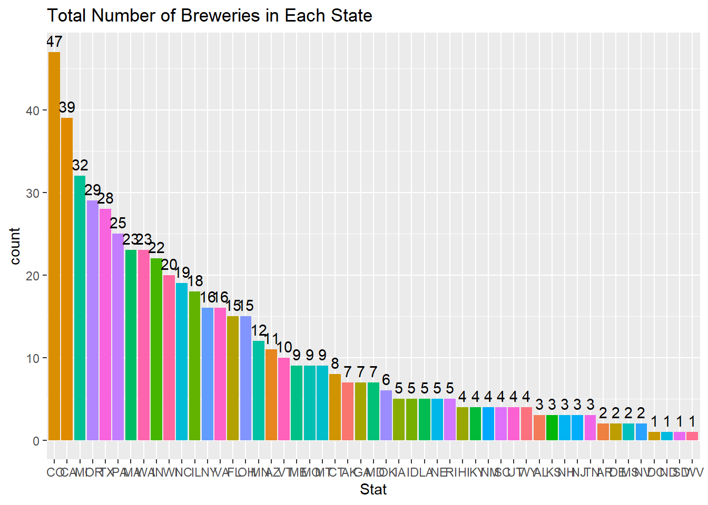
Merge beer data with the breweries data. Print the first 6 observations and the last six observations to check the merged file. (RMD only, this does not need to be included in the presentation or the deck.)
beers = beers %>% rename(BeerName = Name, Brew_ID = Brewery_id)
breweries = breweries %>% rename(BreweryName = Name)
# Merge
beers_breweries = left_join(beers, breweries, by = "Brew_ID")
# First 6 obs
head(beers_breweries, 6)## BeerName Beer_ID ABV IBU Brew_ID Style
## 1 Pub Beer 1436 0.050 NA 409 American Pale Lager
## 2 Devil's Cup 2265 0.066 NA 178 American Pale Ale (APA)
## 3 Rise of the Phoenix 2264 0.071 NA 178 American IPA
## 4 Sinister 2263 0.090 NA 178 American Double / Imperial IPA
## 5 Sex and Candy 2262 0.075 NA 178 American IPA
## 6 Black Exodus 2261 0.077 NA 178 Oatmeal Stout
## Ounces BreweryName City State
## 1 12 10 Barrel Brewing Company Bend OR
## 2 12 18th Street Brewery Gary IN
## 3 12 18th Street Brewery Gary IN
## 4 12 18th Street Brewery Gary IN
## 5 12 18th Street Brewery Gary IN
## 6 12 18th Street Brewery Gary IN# Last 6 obs
tail(beers_breweries, 6)## BeerName Beer_ID ABV IBU Brew_ID
## 2405 Rocky Mountain Oyster Stout 1035 0.075 NA 425
## 2406 Belgorado 928 0.067 45 425
## 2407 Rail Yard Ale 807 0.052 NA 425
## 2408 B3K Black Lager 620 0.055 NA 425
## 2409 Silverback Pale Ale 145 0.055 40 425
## 2410 Rail Yard Ale (2009) 84 0.052 NA 425
## Style Ounces BreweryName City State
## 2405 American Stout 12 Wynkoop Brewing Company Denver CO
## 2406 Belgian IPA 12 Wynkoop Brewing Company Denver CO
## 2407 American Amber / Red Ale 12 Wynkoop Brewing Company Denver CO
## 2408 Schwarzbier 12 Wynkoop Brewing Company Denver CO
## 2409 American Pale Ale (APA) 12 Wynkoop Brewing Company Denver CO
## 2410 American Amber / Red Ale 12 Wynkoop Brewing Company Denver CObeers_breweries %>% ggplot(aes(x = ABV, y = IBU))+ geom_point()## Warning: Removed 1005 rows containing missing values (`geom_point()`).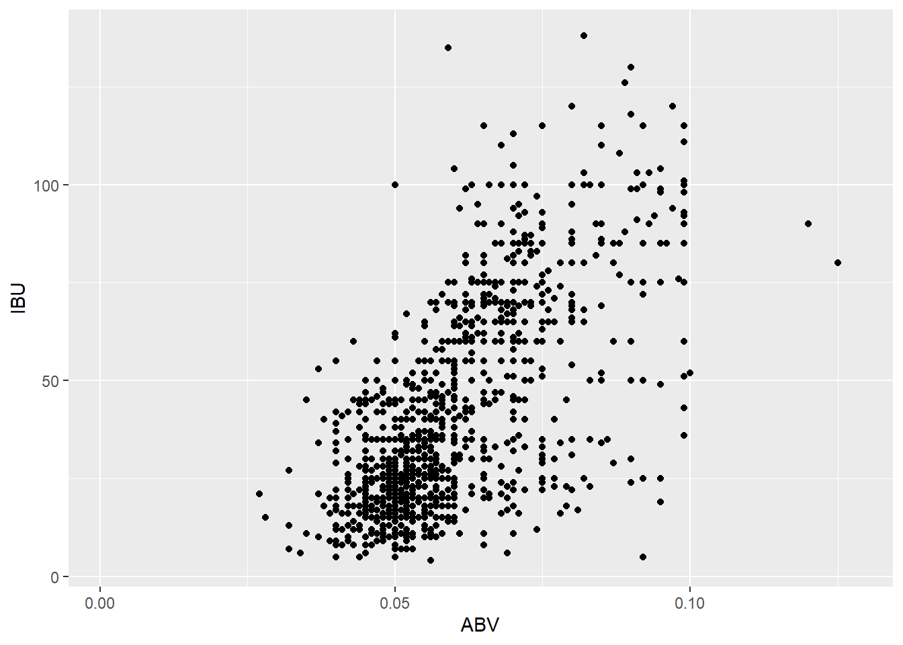
Address the missing values in each column answer: We can see that there are 62 missing values in ABV and 1005 missing values in IBU Data is missing completely at random Missing data was imputed for IBU with Linear Regression as we found a linear relationship between ABV and IBU Missing Data for ABV was missing IBU as well and represented 2.57% of the data, therefore it was removed
# Check missing values in each column
missing_values <- sapply(beers_breweries, function(x) sum(is.na(x)))
print(class(missing_values))## [1] "integer"#Set variable for the missing data
missing_data = beers_breweries[is.na(beers_breweries$IBU), ]
print(class(missing_data))## [1] "data.frame"# Impute data with Linear Regression
model = lm(IBU ~ ABV, data = beers_breweries)
# Setting variables for intercepts and coefficient for ABV
intercept = coef(model)["(Intercept)"]
coef_abv = coef(model)["ABV"]
# Calculate estimated IBU for missing data
missing_data$Estimated_IBU = ifelse((intercept + coef_abv * missing_data$ABV) < 0, 0, round(intercept + coef_abv * missing_data$ABV))
#calculating the values that are missing ABV and IBU data
missing_abv = beers_breweries[is.na(beers_breweries$ABV),]
nrow(missing_abv)/nrow(beers_breweries)## [1] 0.02572614#we have 2.57% of data missing both, data is MCAR, throwing out
#Filling in the missing IBU data from the estimated values.
beers_breweries$IBU[is.na(beers_breweries$IBU)] = missing_data$Estimated_IBU[is.na(missing_data$IBU)]
#removing the missing ABV and IBU data as it is 2.57% of data and should cause minimal impact to the analysis
beers_breweries = beers_breweries %>% filter(!is.na(beers_breweries$ABV))
#print the summary and dataset
summary(beers_breweries)## BeerName Beer_ID ABV
## Nonstop Hef Hop : 12 Min. : 1.0 Min. :0.00100
## Dale's Pale Ale : 6 1st Qu.: 827.8 1st Qu.:0.05000
## Oktoberfest : 6 Median :1463.5 Median :0.05600
## Longboard Island Lager: 4 Mean :1439.4 Mean :0.05977
## 1327 Pod's ESB : 3 3rd Qu.:2078.2 3rd Qu.:0.06700
## Boston Lager : 3 Max. :2692.0 Max. :0.12800
## (Other) :2314
## IBU Brew_ID Style
## Min. : 0.00 Min. : 1.0 American IPA : 417
## 1st Qu.: 25.00 1st Qu.: 94.0 American Pale Ale (APA) : 239
## Median : 36.00 Median :206.0 American Amber / Red Ale : 125
## Mean : 42.54 Mean :231.3 American Blonde Ale : 104
## 3rd Qu.: 56.00 3rd Qu.:366.0 American Double / Imperial IPA: 103
## Max. :138.00 Max. :558.0 American Pale Wheat Ale : 95
## (Other) :1265
## Ounces BreweryName City
## Min. : 8.40 Brewery Vivant : 60 Grand Rapids: 64
## 1st Qu.:12.00 Oskar Blues Brewery : 42 Portland : 64
## Median :12.00 Sun King Brewing Company : 36 Chicago : 55
## Mean :13.59 Cigar City Brewing Company: 25 San Diego : 42
## 3rd Qu.:16.00 Sixpoint Craft Ales : 24 Boulder : 41
## Max. :32.00 Hopworks Urban Brewery : 23 Indianapolis: 41
## (Other) :2138 (Other) :2041
## State
## CO : 250
## CA : 182
## MI : 151
## IN : 137
## OR : 125
## TX : 124
## (Other):1379beers_breweries## BeerName Beer_ID ABV IBU
## 1 Pub Beer 1436 0.050 30
## 2 Devil's Cup 2265 0.066 51
## 3 Rise of the Phoenix 2264 0.071 57
## 4 Sinister 2263 0.090 81
## 5 Sex and Candy 2262 0.075 62
## 6 Black Exodus 2261 0.077 65
## 7 Lake Street Express 2260 0.045 24
## 8 Foreman 2259 0.065 49
## 9 Jade 2258 0.055 36
## 10 Cone Crusher 2131 0.086 76
## 11 Sophomoric Saison 2099 0.072 58
## 12 Regional Ring Of Fire 2098 0.073 59
## 13 Garce Selé 2097 0.069 54
## 14 Troll Destroyer 1980 0.085 75
## 15 Bitter Bitch 1979 0.061 60
## 16 Ginja Ninja 2318 0.060 43
## 17 Cherried Away 2170 0.060 43
## 18 Rhubarbarian 2169 0.060 43
## 19 BrightCider 1502 0.060 43
## 20 He Said Baltic-Style Porter 1593 0.082 71
## 21 He Said Belgian-Style Tripel 1592 0.082 71
## 22 Lower De Boom 1036 0.099 92
## 23 Fireside Chat 1024 0.079 45
## 24 Marooned On Hog Island 976 0.079 67
## 25 Bitter American 876 0.044 42
## 26 Hell or High Watermelon Wheat (2009) 802 0.049 17
## 27 Hell or High Watermelon Wheat (2009) 801 0.049 17
## 28 21st Amendment Watermelon Wheat Beer (2006) 800 0.049 17
## 29 21st Amendment IPA (2006) 799 0.070 70
## 30 Brew Free! or Die IPA (2008) 797 0.070 70
## 31 Brew Free! or Die IPA (2009) 796 0.070 70
## 32 Special Edition: Allies Win The War! 531 0.085 52
## 33 Hop Crisis 432 0.097 94
## 34 Bitter American (2011) 353 0.044 42
## 35 Fireside Chat (2010) 321 0.079 45
## 36 Back in Black 173 0.068 65
## 37 Monk's Blood 11 0.083 35
## 38 Brew Free! or Die IPA 10 0.070 65
## 39 Hell or High Watermelon Wheat 9 0.049 17
## 40 Bimini Twist 2519 0.070 82
## 41 Beach Blonde 2518 0.050 30
## 42 Rod Bender Red 2517 0.059 42
## 43 Passion Fruit Prussia 2545 0.035 11
## 44 Send Help 2544 0.045 18
## 45 Cast Iron Oatmeal Brown 2324 0.055 36
## 46 Reprise Centennial Red 2288 0.060 43
## 47 Alter Ego 2287 0.055 36
## 48 Divided Sky 2286 0.065 49
## 49 Resurrected 2285 0.065 49
## 50 Contact High 1870 0.050 28
## 51 Galaxyfest 2603 0.065 49
## 52 Citrafest 2602 0.050 45
## 53 Barn Yeti 2220 0.090 81
## 54 Scarecrow 2219 0.069 65
## 55 Ironman 2218 0.090 50
## 56 Honey Kolsch 2217 0.046 15
## 57 Copperhead Amber 2216 0.052 18
## 58 Rude Parrot IPA 972 0.059 75
## 59 British Pale Ale (2010) 866 0.054 30
## 60 British Pale Ale 48 0.054 30
## 61 Ballz Deep Double IPA 47 0.084 82
## 62 Wolfman's Berliner 1583 0.038 15
## 63 Colorado Native 1165 0.055 26
## 64 Colorado Native (2011) 431 0.055 26
## 65 Jockamo IPA 516 0.065 52
## 66 Purple Haze 515 0.042 13
## 67 Abita Amber 514 0.045 17
## 68 Citra Ass Down 2540 0.082 68
## 69 The Brown Note 2539 0.050 20
## 70 Citra Ass Down 2686 0.080 68
## 71 London Balling 2685 0.125 80
## 72 35 K 2684 0.077 25
## 73 A Beer 2683 0.042 42
## 74 Rules are Rules 2682 0.050 25
## 75 Flesh Gourd'n 2681 0.066 21
## 76 Sho'nuff 2680 0.040 13
## 77 Bloody Show 2679 0.055 17
## 78 Rico Sauvin 2678 0.076 68
## 79 Coq de la Marche 2677 0.051 38
## 80 Kamen Knuddeln 2676 0.065 49
## 81 Pile of Face 2675 0.060 65
## 82 The Brown Note 2674 0.050 20
## 83 Maylani's Coconut Stout 1594 0.053 35
## 84 Oatmeal PSA 1162 0.050 35
## 85 Pre Flight Pilsner 1137 0.052 33
## 86 P-Town Pilsner 2403 0.040 20
## 87 Klickitat Pale Ale 2402 0.053 36
## 88 Yellow Wolf Imperial IPA 2401 0.082 103
## 89 Freeride APA 1921 0.053 40
## 90 Alaskan Amber 1920 0.053 18
## 91 Hopalicious 2501 0.057 39
## 92 Kentucky Kölsch 1535 0.043 21
## 93 Kentucky IPA 1149 0.065 49
## 94 Dusty Trail Pale Ale 1474 0.054 35
## 95 Damnesia 1473 0.062 45
## 96 Desolation IPA 837 0.062 43
## 97 Liberty Ale 2592 0.059 42
## 98 IPA 2578 0.065 49
## 99 Summer Wheat 2577 0.045 24
## 100 California Lager 2103 0.049 29
## 101 Brotherhood Steam 2102 0.056 38
## 102 Blood Orange Gose 2291 0.042 20
## 103 Keebarlin' Pale Ale 1818 0.042 20
## 104 the Kimmie, the Yink and the Holy Gose 1738 0.048 27
## 105 Fall Hornin' 1563 0.060 43
## 106 Barney Flats Oatmeal Stout 1520 0.057 13
## 107 Summer Solstice 1350 0.056 4
## 108 Hop Ottin' IPA 1327 0.070 80
## 109 Boont Amber Ale 1326 0.058 15
## 110 Barney Flats Oatmeal Stout 1221 0.057 13
## 111 El Steinber Dark Lager 1217 0.055 25
## 112 Boont Amber Ale (2010) 811 0.058 15
## 113 Summer Solstice Cerveza Crema (2009) 753 0.056 4
## 114 Barney Flats Oatmeal Stout (2012) 572 0.057 13
## 115 Winter Solstice 523 0.069 6
## 116 Hop Ottin' IPA (2011) 367 0.070 80
## 117 Boont Amber Ale (2011) 78 0.058 15
## 118 Summer Solstice (2011) 77 0.056 4
## 119 Poleeko Gold Pale Ale (2009) 76 0.055 28
## 120 Charlie's Rye IPA 2337 0.060 43
## 121 River Pig Pale Ale 410 0.054 35
## 122 Oaky's Oatmeal Stout 409 0.047 26
## 123 Angry Orchard Apple Ginger 1294 0.050 30
## 124 Angry Orchard Crisp Apple 1293 0.050 30
## 125 Angry Orchard Crisp Apple 1292 0.050 30
## 126 Golden One 2207 0.068 53
## 127 Arjuna 2040 0.060 43
## 128 Uroboros 2039 0.085 75
## 129 Long Leaf 2511 0.071 75
## 130 Honey Badger Blonde 2510 0.047 19
## 131 Porter (a/k/a Black Gold Porter) 2509 0.060 23
## 132 Sky High Rye 413 0.060 55
## 133 Whitsun 390 0.062 17
## 134 On-On Ale (2008) 735 0.052 33
## 135 Quakertown Stout 1333 0.092 50
## 136 Greenbelt Farmhouse Ale 1332 0.051 20
## 137 Mo's Gose 1172 0.052 10
## 138 Green Bullet Organic India Pale Ale 1322 0.070 45
## 139 Rocket Girl 550 0.032 27
## 140 Ninja Porter 429 0.053 26
## 141 Shiva IPA 428 0.060 69
## 142 Aslan Kölsch 1640 0.048 27
## 143 Aslan IPA 1639 0.077 65
## 144 Aslan Amber 1638 0.077 65
## 145 This Season's Blonde 597 0.056 27
## 146 Independence Pass Ale 596 0.070 67
## 147 Trolley Stop Stout 1580 0.057 40
## 148 Bitter Bitch Imperial IPA 980 0.082 138
## 149 Poop Deck Porter 979 0.062 35
## 150 Old Red Beard Amber Ale 978 0.060 35
## 151 Hop A-Peel 2503 0.075 115
## 152 Vanilla Java Porter 2502 0.055 12
## 153 Michelada 2495 0.052 33
## 154 Dirty Blonde Ale 534 0.045 8
## 155 Grand Circus IPA 528 0.050 62
## 156 Atwater's Lager 527 0.050 12
## 157 Heavy Machinery IPA Series #1: Heavy Fist 1409 0.070 56
## 158 Fire Eagle IPA 343 0.062 45
## 159 Peacemaker 342 0.051 31
## 160 Pearl-Snap 341 0.053 34
## 161 Black Thunder 340 0.052 33
## 162 Raja 2589 0.080 68
## 163 Perzik Saison 2546 0.064 48
## 164 Avery Joe’s Premium American Pilsner 146 0.047 42
## 165 White Rascal 108 0.056 10
## 166 Avery India Pale Ale 107 0.063 69
## 167 Ellie’s Brown Ale 106 0.055 17
## 168 Pumpkin Beast 1620 0.062 17
## 169 OktoberBeast 1579 0.072 22
## 170 Mad Beach 1228 0.048 23
## 171 Hog Wild India Pale Ale 705 0.067 52
## 172 Devils Tramping Ground Tripel 704 0.092 5
## 173 Hot Rod Red 702 0.061 41
## 174 Palate Mallet 2058 0.086 76
## 175 Back East Porter 1483 0.060 43
## 176 Back East Golden Ale 1426 0.049 29
## 177 Misty Mountain IPA 1132 0.070 56
## 178 Back East Ale 1131 0.050 30
## 179 Truck Stop Honey Brown Ale 1876 0.060 43
## 180 Naked Pig Pale Ale 1875 0.060 43
## 181 Topcutter India Pale Ale 966 0.068 70
## 182 Field 41 Pale Ale 965 0.044 38
## 183 Grapefruit Sculpin 2593 0.070 56
## 184 Even Keel 2105 0.038 40
## 185 Ballast Point Pale Ale 1401 0.052 23
## 186 Big Eye India Pale Ale 1400 0.070 75
## 187 Longfin Lager 1019 0.046 25
## 188 Sculpin IPA 1018 0.070 70
## 189 All Nighter Ale 1776 0.045 24
## 190 Banner American Rye 1644 0.045 20
## 191 Banner American Ale 1643 0.035 45
## 192 Thai.p.a 2618 0.070 46
## 193 Barrio Blanco 2005 0.060 60
## 194 Barrio Tucson Blonde 1343 0.045 24
## 195 Hop in the ‘Pool Helles 2404 0.049 22
## 196 Ultra Gnar Gnar IPA 2323 0.067 60
## 197 In-Tents India Pale Lager 2189 0.068 62
## 198 Lost Meridian Wit 2188 0.050 20
## 199 Celestial Meridian Cascadian Dark Lager 2187 0.051 45
## 200 Wagon Party 1966 0.054 55
## 201 Sky-Five 1965 0.067 70
## 202 Stargrazer 1964 0.050 28
## 203 Wonderstuff 1963 0.054 48
## 204 Tarnation California-Style Lager 1855 0.053 34
## 205 On the Count of 3 (2015) 1778 0.070 42
## 206 Summer Swelter 1209 0.047 26
## 207 Phantom Punch Winter Stout 954 0.068 53
## 208 Hayride Autumn Ale 910 0.066 51
## 209 Celsius Summer Ale (2012) 707 0.047 26
## 210 Amber Road 533 0.055 35
## 211 Pamola Xtra Pale Ale 183 0.049 28
## 212 Stowaway IPA 182 0.069 69
## 213 Hoptopus Double IPA 1806 0.088 108
## 214 Watermelon Ale 2435 0.050 10
## 215 Fenway American Pale Ale 2423 0.058 45
## 216 Back Bay IPA 2420 0.068 85
## 217 Bunker Hill Blueberry Ale 2419 0.048 16
## 218 Oberon 2494 0.058 40
## 219 Smitten 2325 0.060 43
## 220 Winter White 2022 0.050 30
## 221 Oberon 1989 0.058 40
## 222 Two Hearted 1988 0.070 56
## 223 Best Brown 1955 0.058 40
## 224 Moar 2558 0.044 44
## 225 Uber Lupin Schwarz IPA 2557 0.083 72
## 226 Nordic Blonde 2556 0.057 27
## 227 Cold Press 2496 0.060 43
## 228 Harness the Winter 2410 0.072 87
## 229 14° ESB 1902 0.056 32
## 230 Bent Hop Golden IPA 1901 0.062 68
## 231 Bent Paddle Black Ale 1261 0.060 34
## 232 Venture Pils 1253 0.050 38
## 233 Lost Sailor IPA 1900 0.055 40
## 234 Steel Rail Extra Pale Ale 1317 0.053 20
## 235 La Frontera Premium IPA 1158 0.078 66
## 236 Tejas Lager 1157 0.047 26
## 237 Number 22 Porter 1156 0.064 48
## 238 Big Bend Hefeweizen 1155 0.056 38
## 239 Terlingua Gold 1154 0.060 43
## 240 Aprè Shred 2104 0.081 17
## 241 Hemlock Double IPA 1762 0.095 104
## 242 West Portal Colorado Common Summer Ale 1422 0.041 18
## 243 Disconnected Red 1067 0.067 85
## 244 Big Elm IPA 1003 0.070 56
## 245 Gerry Dog Stout 1002 0.065 49
## 246 413 Farmhouse Ale 1001 0.060 43
## 247 Dark Star 2639 0.080 54
## 248 Ryecoe 2469 0.062 45
## 249 Blueberry Blonde 2586 0.060 43
## 250 Galaxy IPA 2585 0.075 60
## 251 Big River Pilsner 643 0.050 32
## 252 House Brand IPA 632 0.060 55
## 253 Big Sky IPA 1714 0.062 65
## 254 Scape Goat Pale Ale 1713 0.050 40
## 255 Montana Trout Slayer Ale 1712 0.050 35
## 256 Moose Drool Brown Ale 1711 0.051 26
## 257 Powder Hound Winter Ale 1456 0.072 60
## 258 Moose Drool Brown Ale (2011) 767 0.051 26
## 259 Montana Trout Slayer Ale (2012) 766 0.050 35
## 260 Big Sky IPA (2012) 579 0.062 65
## 261 Summer Honey 168 0.047 26
## 262 Scape Goat Pale Ale (2010) 159 0.050 40
## 263 Montana Trout Slayer Ale (2009) 35 0.050 35
## 264 Moose Drool Brown Ale (2009) 34 0.051 26
## 265 Arcus IPA 2096 0.069 81
## 266 Wavemaker 2095 0.058 38
## 267 Jack Pine Savage 1257 0.053 43
## 268 Forest Fire Imperial Smoked Rye 1256 0.099 85
## 269 Bad Axe Imperial IPA 1255 0.098 76
## 270 Morning Wood 986 0.055 35
## 271 Bark Bite IPA 985 0.066 50
## 272 Jalapeno Pale Ale 2508 0.055 45
## 273 Blown Out Brown 1441 0.052 33
## 274 Single Hop Ale 1413 0.063 47
## 275 Sawtooth Ale 1411 0.054 35
## 276 Saucy Intruder 2620 0.072 75
## 277 Deception 2412 0.045 16
## 278 Blackmarket Rye IPA 1898 0.075 35
## 279 Black Market Hefeweizen 1897 0.050 8
## 280 Aftermath Pale Ale 1896 0.058 44
## 281 American India Red Ale 1850 0.071 83
## 282 American Red Porter 1849 0.071 45
## 283 American Red Saison 1848 0.078 34
## 284 Colorado Red Ale 1847 0.066 44
## 285 Saddle Bronc Brown Ale 2485 0.048 16
## 286 Bomber Mountain Amber Ale 2484 0.046 20
## 287 Flying Sailor 2449 0.073 59
## 288 Nordskye 2634 0.048 47
## 289 North Third Stout 2153 0.060 30
## 290 Honey Lav 1953 0.052 33
## 291 Coconut Brown Ale 1496 0.068 53
## 292 51K IPA 1481 0.070 51
## 293 Grand Rabbits 1480 0.055 36
## 294 1800 Big Log Wheat (2012) 1564 0.050 30
## 295 Brewerhood Brown Ale 1321 0.055 36
## 296 Last Call Imperial Amber Ale 1320 0.080 68
## 297 Pernicious Double IPA 1319 0.096 89
## 298 6-4-3 Double Play Pilsner 1303 0.052 33
## 299 467 Ethan's Stout 1012 0.050 30
## 300 1335 Wicked Snout 942 0.064 48
## 301 543 Skull Creek Fresh Hopped Pale Ale 937 0.045 24
## 302 1327 Pod's ESB 888 0.056 37
## 303 1327 Pod's ESB 886 0.056 37
## 304 1327 Pod's ESB 612 0.056 37
## 305 834 Happy As Ale 611 0.046 35
## 306 Yellow Collar 1372 0.059 42
## 307 Green Collar 1371 0.059 42
## 308 Quarter Mile Double IPA 1812 0.080 80
## 309 Full Nelson Pale Ale 1547 0.059 60
## 310 Steel Wheels ESB 1546 0.065 30
## 311 Blue Mountain Classic Lager 1545 0.053 22
## 312 Full Nelson Pale Ale (2010) 119 0.059 60
## 313 Kölsch 151 1408 0.049 16
## 314 Toxic Sludge 939 0.070 56
## 315 Blue Point White IPA 692 0.060 40
## 316 Blue Point Summer Ale 667 0.044 16
## 317 Toasted Lager 665 0.055 28
## 318 Bohemian Export Lager 1607 0.060 43
## 319 Altus Bohemes Altbier 1597 0.053 34
## 320 Cherny Bock 344 0.040 17
## 321 Czech Pilsner 89 0.050 30
## 322 Viennese Lager 88 0.050 30
## 323 Mad Manatee IPA 1569 0.065 49
## 324 Killer Whale Cream Ale 1568 0.055 36
## 325 Duke's Cold Nose Brown Ale 1188 0.060 43
## 326 Longhop IPA 1891 0.042 30
## 327 Lucky Buck 1890 0.040 34
## 328 Bomb Lager (New Recipe) 577 0.051 31
## 329 Bomb Lager (Old Recipe) 513 0.045 27
## 330 Firestarter India Pale Ale 2422 0.066 72
## 331 Kilt Dropper Scotch Ale 1727 0.075 22
## 332 Wood Splitter Pilsner 1614 0.048 30
## 333 Gyptoberfest 1613 0.056 26
## 334 Farmer Wirtz India Pale Ale 1549 0.070 94
## 335 Slow & Steady Golden Ale 1548 0.047 26
## 336 Pink-I Raspberry IPA 1517 0.068 53
## 337 Moe's Original Bar B Que 'Bama Brew Golden Ale 1500 0.047 26
## 338 Live Local Golden Ale 1421 0.047 26
## 339 Screaming Eagle Special Ale ESB 1360 0.048 38
## 340 Dirtbag Dunkel 1184 0.049 29
## 341 Kindler Pale Ale 1183 0.053 45
## 342 Mistress Winter Wheat 1023 0.064 48
## 343 Tent Pole Vanilla Porter 998 0.061 44
## 344 Awry Rye Pale Ale 997 0.058 40
## 345 Demshitz Brown Ale 996 0.058 40
## 346 Wood Splitter Pilsner (2012) 931 0.048 27
## 347 Brush Creek Blonde 798 0.048 27
## 348 Firestarter India Pale Ale 633 0.066 72
## 349 Noche Dulce 2062 0.071 16
## 350 Porch Rocker 1830 0.045 8
## 351 Rebel IPA 1629 0.065 45
## 352 Cold Snap 1601 0.055 36
## 353 Samuel Adams Winter Lager 1427 0.056 38
## 354 Boston Lager 1349 0.049 30
## 355 Boston Lager 1310 0.049 30
## 356 Samuel Adams Octoberfest 1281 0.053 15
## 357 Samuel Adams Summer Ale 1144 0.053 7
## 358 Boston Lager 1143 0.049 30
## 359 Hazed & Infused 1395 0.049 35
## 360 Hoopla Pale Ale 808 0.057 35
## 361 Hazed & Infused (2010) 81 0.049 35
## 362 Heavy Lifting 2596 0.062 80
## 363 1492 2300 0.065 49
## 364 Mango Ginger 2299 0.058 40
## 365 Passenger 2298 0.047 26
## 366 Plum St. Porter 2107 0.060 52
## 367 Plum St. Porter 1573 0.057 52
## 368 Bozone HopZone IPA 1289 0.070 80
## 369 Bozone Hefe Weizen 1288 0.060 25
## 370 Bozone Select Amber Ale 470 0.055 36
## 371 Evil Owl 2167 0.052 40
## 372 Post Time Kölsch 2204 0.050 30
## 373 Agave Wheat 1522 0.042 9
## 374 SummerBright Ale 397 0.045 15
## 375 Lucky U IPA 193 0.062 68
## 376 Avalanche Ale 83 0.054 19
## 377 You're My Boy, Blue 1802 0.050 30
## 378 Last Stop IPA 1801 0.072 60
## 379 Rollin Dirty Red Ale 1800 0.050 21
## 380 Are Wheat There Yet? 1799 0.055 28
## 381 Insert Hop Reference 2619 0.058 40
## 382 Manitou Amber 2468 0.053 34
## 383 Belfort 2637 0.067 52
## 384 Star Runner 2636 0.060 43
## 385 Tart Side of the Barrel 2598 0.098 92
## 386 Linnaeus Mango IPA 2597 0.060 43
## 387 Beasts A'Burnin' 2548 0.070 56
## 388 Verdun 2542 0.077 65
## 389 Barrel Aged Triomphe 2541 0.065 49
## 390 Cherry Doppelbock 2504 0.065 49
## 391 Tropical Saison 2500 0.065 49
## 392 Beach Patrol 2499 0.065 49
## 393 Nuit Serpent 2498 0.050 30
## 394 Paris 2481 0.090 81
## 395 The Grand Army 2476 0.055 36
## 396 Acidulated Trip 2467 0.059 42
## 397 Root Stock 2466 0.066 51
## 398 Mind Games 2465 0.041 18
## 399 Sous Chef 2433 0.082 71
## 400 Dubbelicious 2418 0.065 49
## 401 Psychopomp 2416 0.062 45
## 402 Ski Patrol 2290 0.061 44
## 403 Viking Ice Hole 2241 0.063 47
## 404 Rye Porter 2240 0.056 38
## 405 Wizard Burial Ground 2137 0.099 93
## 406 Smoky Wheat 2101 0.051 31
## 407 BRIPA 2092 0.062 45
## 408 Mela 2091 0.062 45
## 409 W.I.P.A Snappa 2086 0.053 34
## 410 Pepper in the Rye 2023 0.063 47
## 411 Moe Lasses' 2006 0.064 48
## 412 Pumpkin Tart 1997 0.070 56
## 413 Undertaker 1977 0.067 52
## 414 Undertaker (2014) 1976 0.067 52
## 415 Coq D'Or 1974 0.050 30
## 416 North French 1973 0.060 43
## 417 Agent a Deux 1959 0.065 49
## 418 Belgian Wit 1958 0.045 24
## 419 Pothole Stout 1949 0.063 47
## 420 Tree Bucket 1947 0.093 85
## 421 Le Flaneur Ale 1785 0.073 59
## 422 Maize & Blueberry 1651 0.056 38
## 423 Trebuchet Double IPA 1443 0.093 85
## 424 Contemplation 1352 0.065 49
## 425 Black Rabbit 1267 0.050 30
## 426 Zaison 1266 0.090 81
## 427 Vivant Tripel 1178 0.082 71
## 428 Tart Side of the Moon 1136 0.098 92
## 429 Big Red Coq 1044 0.060 43
## 430 Hubris Quadrupel Anniversary Ale 1033 0.099 93
## 431 Plow Horse Belgian Style Imperial Stout 1031 0.095 88
## 432 Escoffier Bretta Ale 909 0.092 84
## 433 Contemplation (2012) 873 0.065 49
## 434 Vivant Belgian Style Imperial Stout (2012) 860 0.099 93
## 435 Big Red Coq (2012) 677 0.062 45
## 436 Zaison (2012) 671 0.090 81
## 437 Vivant Tripel (2012) 670 0.092 84
## 438 Trebuchet Double IPA (2012) 669 0.097 90
## 439 Kludde 627 0.085 75
## 440 Farm Hand 387 0.055 36
## 441 Solitude 385 0.060 43
## 442 Triomphe 384 0.065 49
## 443 Broad Brook Ale 2456 0.061 44
## 444 Northern Lights Amber Ale 921 0.050 15
## 445 Polar Pale Ale 920 0.052 17
## 446 Chugach Session Ale 919 0.048 27
## 447 Fairweather IPA 648 0.061 64
## 448 East India Pale Ale 1279 0.068 47
## 449 Brooklyn Summer Ale 756 0.045 24
## 450 East India Pale Ale 566 0.068 47
## 451 Brooklyn Summer Ale (2011) 328 0.045 24
## 452 Brooklyn Lager (16 oz.) 66 0.052 33
## 453 Brooklyn Lager (12 oz.) 65 0.052 33
## 454 Tour de Nez Belgian IPA (Current) 538 0.080 68
## 455 Black Adder IBA (Current) 383 0.073 85
## 456 Very Noddy Lager (Current) 29 0.099 93
## 457 Tule Duck Red Ale (Current) 28 0.062 42
## 458 Original Orange Blossom Ale (Current) 27 0.058 35
## 459 Black Noddy Lager (Current) 26 0.052 40
## 460 Cleveland Beer Week 2013 1627 0.053 34
## 461 Painted Turtle 2552 0.045 24
## 462 1836 2125 0.060 40
## 463 Summer's Wit 2124 0.060 20
## 464 More Cowbell 2123 0.090 118
## 465 Wrath of Pele 2608 0.065 49
## 466 Black Beer'd 2607 0.068 53
## 467 Mr. Tea 2606 0.078 66
## 468 Pale Alement 2478 0.055 40
## 469 Hopkick Dropkick 2471 0.099 115
## 470 Kreamed Corn 2470 0.060 43
## 471 Coconoats 2464 0.065 49
## 472 Joey Wheat 2160 0.068 16
## 473 3:33 Black IPA 2158 0.072 86
## 474 MCA 2072 0.068 53
## 475 Pale Alement 2054 0.055 40
## 476 Couch Select Lager 2196 0.050 14
## 477 Mucho Aloha Hawaiian Pale Ale 668 0.056 36
## 478 Heinnieweisse Weissebier 52 0.049 29
## 479 Snapperhead IPA 51 0.068 53
## 480 Moo Thunder Stout 50 0.049 29
## 481 Porkslap Pale Ale 49 0.043 21
## 482 Blackbeard 2657 0.093 85
## 483 Rye Knot 2656 0.062 45
## 484 Dead Arm 2655 0.060 43
## 485 32°/50° Kölsch 2654 0.048 27
## 486 HopArt 2653 0.077 65
## 487 Boy King 2652 0.097 90
## 488 Gran Sport 2252 0.052 33
## 489 Horny Toad Cerveza 2214 0.053 25
## 490 Native Amber 2213 0.063 35
## 491 F5 IPA 1442 0.068 100
## 492 Native Amber (2013) 170 0.063 35
## 493 Horny Toad Cerveza (2013) 169 0.053 25
## 494 Hopportunity Knocks IPA 2315 0.068 100
## 495 Pilot Rock Porter 1808 0.060 43
## 496 Caldera Pale Ale 1419 0.056 55
## 497 Lawnmower Lager 878 0.039 16
## 498 Ashland Amber Ale (2009) 794 0.054 24
## 499 Caldera IPA (2009) 793 0.061 94
## 500 Caldera IPA (2007) 792 0.061 94
## 501 Caldera Pale Ale (2010) 791 0.056 55
## 502 Caldera Pale Ale (2009) 790 0.056 55
## 503 Caldera Pale Ale (2005) 789 0.056 55
## 504 Caldera Pale Ale (2007) 788 0.056 55
## 505 Caldera Pale Ale (2011) 38 0.056 55
## 506 Ashland Amber Ale 37 0.054 24
## 507 Caldera IPA 36 0.061 94
## 508 Remain in Light 2257 0.050 30
## 509 Flower Child (2014) 2256 0.065 49
## 510 Imperial Pumpkin Stout 2068 0.099 43
## 511 Dead-Eye DIPA 2067 0.090 130
## 512 Fisherman's IPA 2066 0.055 64
## 513 Fisherman's Pils 2065 0.054 35
## 514 Fisherman's Brew 2064 0.055 30
## 515 Cape Cod Red 1928 0.055 35
## 516 Beach Blonde 1927 0.049 10
## 517 Dark Voyage Black IPA (2013) 2227 0.065 80
## 518 Wisconsin Amber 2226 0.052 28
## 519 Lake House 2225 0.046 18
## 520 Ghost Ship White IPA 1954 0.056 55
## 521 Lake House 1910 0.046 18
## 522 Mutiny IPA 1177 0.062 70
## 523 Wisconsin Amber (1998) 840 0.052 33
## 524 Island Wheat 180 0.042 20
## 525 Wisconsin Amber (2013) 63 0.052 33
## 526 U.S. Pale Ale 62 0.050 30
## 527 Carolina Lighthouse (2007) 784 0.040 17
## 528 Carolina Blonde (2006) 783 0.050 30
## 529 Carolina Blonde Light (2005) 782 0.035 11
## 530 Santa's Secret 2255 0.059 22
## 531 Flagship IPA 530 0.057 39
## 532 Sky Blue Golden Ale 427 0.051 31
## 533 Epitome 2094 0.099 100
## 534 Monkey Chased the Weasel 1941 0.039 9
## 535 077XX 1940 0.078 80
## 536 Boat Beer 1439 0.042 35
## 537 Granny Smith Hard Apple Cider 1465 0.069 54
## 538 Dry Hard Apple Cider 1464 0.069 54
## 539 Farmer Ted's Cream Ale 1744 0.056 38
## 540 Firewater India Pale Ale 1743 0.052 33
## 541 White Zombie Ale 1742 0.047 26
## 542 King Winterbolt Winter Ale 1719 0.070 56
## 543 White Zombie Ale 638 0.047 26
## 544 Firewater India Pale Ale 507 0.052 33
## 545 Farmer Ted's Farmhouse Cream Ale 480 0.056 38
## 546 Whitecap Wit 1882 0.048 16
## 547 Seiche Scottish Ale 1881 0.078 16
## 548 Peanut Butter Jelly Time 2446 0.058 40
## 549 King Coconut 2106 0.054 35
## 550 Gone A-Rye 2600 0.085 90
## 551 Dankosaurus 2052 0.068 70
## 552 Scruffy's Smoked Alt 1584 0.051 35
## 553 Elliott's Phoned Home Pale Ale 1182 0.051 36
## 554 The Lawn Ranger 1050 0.050 18
## 555 All American Blonde Ale 1219 0.050 30
## 556 All American Red Ale 1218 0.050 30
## 557 Main St. Virginia Ale 2377 0.050 40
## 558 Chin Music Amber Lager 1839 0.045 24
## 559 Main St. Virginia Ale 1248 0.050 40
## 560 Ray Ray’s Pale Ale 1247 0.052 42
## 561 Chai Ale 1649 0.051 15
## 562 Lucky Day IPA 1648 0.072 85
## 563 Terrace Hill Double IPA 1647 0.095 99
## 564 Catch 23 1646 0.075 77
## 565 Stickin' In My Rye 2057 0.070 56
## 566 Black Me Stout 2056 0.060 45
## 567 Killer Kolsch 2055 0.050 22
## 568 Missile IPA 1933 0.070 65
## 569 Enlighten 2019 0.045 24
## 570 Ale Cider 2018 0.065 8
## 571 Pail Ale 2017 0.055 30
## 572 Englishman 2016 0.045 24
## 573 8 Barrel 2080 0.080 69
## 574 Oktoberfest 2079 0.055 40
## 575 IPA #11 2380 0.057 58
## 576 Blood Orange Honey 2379 0.057 10
## 577 Lighthouse Amber 2354 0.052 33
## 578 Bay of Bengal Double IPA (2014) 2440 0.089 126
## 579 Churchkey Pilsner Style Beer 567 0.049 29
## 580 First Press 1342 0.050 30
## 581 Magic Apple 1341 0.050 30
## 582 Cubano Espresso 2349 0.055 25
## 583 Operation Homefront 2014 0.062 65
## 584 Wandering Pelican 2013 0.082 65
## 585 Sugar Plum 2012 0.055 36
## 586 Oktoberfest 2011 0.055 36
## 587 Puppy's Breath Porter 2010 0.060 43
## 588 Happening Now 2009 0.045 24
## 589 Hopped on the High Seas (Hop #529) 1726 0.070 60
## 590 Hopped on the High Seas (Calypso) 1725 0.070 60
## 591 Wiregrass Post-Prohibition Ale 1695 0.063 47
## 592 Dry-Hopped On The High Seas Caribbean-Style IPA 1694 0.070 60
## 593 Hopped on the High Seas (Citra) 1693 0.070 60
## 594 Hopped on the High Seas (Ahtanum) 1692 0.070 60
## 595 Gwar Beer 1369 0.055 36
## 596 Tropical Heatwave 1243 0.052 33
## 597 Humidor Series India Pale Ale 1142 0.075 70
## 598 Jai Alai IPA Aged on White Oak 1141 0.075 70
## 599 José Martí American Porter 1140 0.080 65
## 600 Invasion Pale Ale 1139 0.050 30
## 601 Maduro Brown Ale 1138 0.055 25
## 602 Maduro Brown Ale 571 0.055 25
## 603 Hotter Than Helles Lager 570 0.050 30
## 604 Tocobaga Red Ale 569 0.072 75
## 605 Jai Alai IPA 546 0.075 70
## 606 Florida Cracker Belgian Wit 545 0.050 18
## 607 Shark Tracker Light lager 2338 0.048 27
## 608 Pumple Drumkin 1365 0.060 43
## 609 Grey Lady 1094 0.045 24
## 610 Summer of Lager 657 0.062 45
## 611 Indie Pale Ale 656 0.065 49
## 612 Sankaty Light Lager 359 0.038 15
## 613 Whale's Tale Pale Ale 56 0.056 38
## 614 Jacaranada Rye IPA 1772 0.067 60
## 615 Cascadian Dark Ale 1393 0.060 75
## 616 Wheat the People 893 0.044 13
## 617 Tybee Island Blonde 1407 0.047 17
## 618 Savannah Brown Ale 1406 0.062 55
## 619 Rhode Island Blueberry 2438 0.046 11
## 620 Newport Storm IPA 2437 0.065 75
## 621 Hurricane Amber Ale (2004) 751 0.052 24
## 622 Hurricane Amber Ale 120 0.052 24
## 623 Big Blue Van 2061 0.058 40
## 624 Des Moines IPA 970 0.068 75
## 625 Capital Gold Golden Lager 969 0.048 22
## 626 Farmer John's Multi-Grain Ale 968 0.056 21
## 627 Behemoth 2351 0.050 30
## 628 Arkansas Red 1650 0.052 33
## 629 Core Oatmeal Stout 1337 0.057 39
## 630 Core ESB 1336 0.061 44
## 631 Chester's Beer (2005) 737 0.038 15
## 632 Heiner Brau Kölsch 129 0.050 30
## 633 Trigger Blonde Ale 716 0.048 27
## 634 Crabtree Oatmeal Stout 659 0.075 29
## 635 Eclipse Black IPA 556 0.077 71
## 636 Neomexicanus Native 2538 0.060 46
## 637 Old Soul 2355 0.075 25
## 638 Snowcat Coffee Stout 1689 0.059 42
## 639 Lava Lake Wit 685 0.052 15
## 640 Mountain Livin' Pale Ale 613 0.060 43
## 641 Crazy Mountain Amber Ale 356 0.052 25
## 642 Tropicalia 2029 0.065 65
## 643 Athena 2028 0.045 24
## 644 Aviator Raspberry Blonde 2293 0.049 25
## 645 3 Picket Porter 1105 0.055 36
## 646 Rusty Nail Pale Ale 1104 0.056 38
## 647 Red Water Irish Style Red 2145 0.065 49
## 648 Mjöllnir 1804 0.066 51
## 649 Bear Butte Nut Brown Ale 1602 0.055 36
## 650 Easy Livin' Summer Ale 1301 0.045 24
## 651 Canyon Cream Ale 542 0.055 36
## 652 Pile O'Dirt Porter 272 0.069 54
## 653 11th Hour IPA 271 0.060 43
## 654 South Ridge Amber Ale 1057 0.060 31
## 655 Summertime Ale 681 0.052 23
## 656 Lost River Blonde Ale 1789 0.049 29
## 657 Monon Wheat 1788 0.054 35
## 658 Floyd's Folly 1787 0.080 68
## 659 Half Court IPA 1786 0.063 47
## 660 Geary's Pale Ale 1763 0.045 24
## 661 Geary's Summer Ale 1311 0.060 43
## 662 Stone of Arbroath 2078 0.080 68
## 663 The Tradition 1809 0.050 15
## 664 El Hefe Speaks 1263 0.053 11
## 665 Penn Quarter Porter 1092 0.055 36
## 666 On the Wings of Armageddon 851 0.092 115
## 667 The Corruption 186 0.065 80
## 668 The Citizen 185 0.070 56
## 669 The Public 184 0.060 43
## 670 Dank IPA 1224 0.065 49
## 671 Dank IPA (2012) 964 0.065 49
## 672 Lift Off IPA 1623 0.072 58
## 673 BrewFarm Select Golden Lager 110 0.055 36
## 674 Sprocket Blonde Ale (2006) 1735 0.050 30
## 675 Sprocket Pale Ale (2006) 1734 0.050 30
## 676 Dead Armadillo Amber Ale 1746 0.063 37
## 677 Neato Bandito 2371 0.060 43
## 678 Oak Cliff Coffee Ale 2251 0.075 33
## 679 Dream Crusher Double IPA 2166 0.085 100
## 680 Deep Ellum Pale Ale 1827 0.060 43
## 681 Double Brown Stout 1203 0.070 56
## 682 Farmhouse Wit 1202 0.048 25
## 683 Rye Pils Session Lager 1161 0.046 25
## 684 Dallas Blonde 946 0.052 23
## 685 Deep Ellum IPA 943 0.070 70
## 686 Thrasher Session India Pale Ale 1886 0.045 44
## 687 Gutch English Style Mild Ale 1885 0.050 16
## 688 Chuli Stout 1213 0.059 55
## 689 Mother Ale 1159 0.056 46
## 690 Twister Creek India Pale Ale 947 0.065 71
## 691 Single Engine Red 929 0.058 46
## 692 Incredible Pedal IPA 1944 0.070 56
## 693 Graham Cracker Porter 1943 0.050 30
## 694 Mirror Pond Pale Ale 1210 0.050 40
## 695 Weissenheimer 2550 0.052 16
## 696 Abbey's Single (2015- ) 2505 0.049 22
## 697 Vertex IPA 2025 0.063 76
## 698 Here Gose Nothin' 2021 0.050 12
## 699 Strawberry Blonde 2015 0.050 30
## 700 Hoperation Overload 1888 0.096 85
## 701 Abbey's Single Ale (Current) 1887 0.049 22
## 702 Bravo Four Point 2051 0.044 45
## 703 Striped Bass Pale Ale 1201 0.052 26
## 704 Deadicated Amber 924 0.054 27
## 705 California Sunshine Rye IPA 730 0.071 85
## 706 Full Boar Scotch Ale 647 0.074 12
## 707 12 Man Pale Ale 1773 0.045 24
## 708 Filthy Hoppin' IPA 1795 0.065 72
## 709 Cranberry Blend 1246 0.049 29
## 710 Orignal Blend 977 0.051 31
## 711 Hop Abomination 881 0.066 100
## 712 Apricot Blonde 880 0.051 17
## 713 Dry Dock Hefeweizen 872 0.043 12
## 714 Dry Dock Amber Ale 871 0.058 49
## 715 Category 3 IPA 1685 0.061 64
## 716 Dundee Summer Wheat Beer 457 0.045 18
## 717 Pumpkin Patch Ale 1590 0.050 30
## 718 Crank Yanker IPA 1382 0.078 74
## 719 River Runners Pale Ale 1110 0.060 43
## 720 Pumpkin Patch Ale (2012) 1014 0.050 30
## 721 Mountain Fairy Raspberry Wheat 911 0.055 36
## 722 Boater Beer 680 0.045 24
## 723 Crank Yanker IPA (2011) 395 0.078 74
## 724 Bleeding Buckeye Red Ale 1642 0.057 39
## 725 Dottie Seattle Lager 673 0.049 25
## 726 Nut Sack Imperial Brown Ale 1107 0.070 56
## 727 Underachiever 1039 0.050 30
## 728 Lil' Brainless Raspberries 2477 0.052 33
## 729 Element 29 2008 0.052 33
## 730 Hop Syndrome 2004 0.050 30
## 731 Escape to Colorado 2003 0.062 45
## 732 Little Sister India Style Session Ale 2292 0.043 60
## 733 Country Boy IPA 1504 0.062 80
## 734 Blonde Czich 2604 0.049 23
## 735 White Reaper 2432 0.070 61
## 736 Bobblehead 2431 0.051 31
## 737 Lucky Dog 2430 0.052 33
## 738 Voodoo 2429 0.048 27
## 739 General George Patton Pilsner 1967 0.054 48
## 740 Nomader Weiss 2283 0.040 17
## 741 Molotov Lite 2248 0.085 75
## 742 Hipster Ale (Two Roads Brewing) 1287 0.055 36
## 743 Bikini Beer 1286 0.027 1
## 744 Hipster Ale (Westbrook Brewing) 640 0.055 36
## 745 Iron Horse Pale Ale 1722 0.050 32
## 746 Stone's Throw IPA 1435 0.045 19
## 747 Wood Chipper India Pale Ale 1434 0.067 70
## 748 Trail Head 2089 0.063 55
## 749 Hop Stalker Fresh Hop IPA 2088 0.070 80
## 750 Sudice American Stout 1455 0.070 58
## 751 Parcae Belgian Style Pale Ale 1454 0.050 20
## 752 Norns Roggenbier 1453 0.050 20
## 753 Laimas Kölsch Style Ale 1452 0.050 20
## 754 Moirai India Pale Ale 1451 0.070 70
## 755 Loki Red Ale 2191 0.075 53
## 756 Peaches & Cream 1731 0.046 25
## 757 Quaff India Style Session Ale 1022 0.051 31
## 758 Loki Red Ale (2013) 895 0.075 53
## 759 Mjolnir Imperial IPA 682 0.069 54
## 760 Fearless Scottish Ale 112 0.050 30
## 761 Mastermind 2289 0.081 70
## 762 Hyzer Flip 2027 0.082 71
## 763 Second Fiddle 1929 0.082 80
## 764 Hodad Porter 1858 0.055 30
## 765 Weiss Weiss Baby 2591 0.045 24
## 766 Czech Yo Self 2590 0.055 45
## 767 FMB 101 1968 0.048 20
## 768 Hardcore Chimera 1981 0.090 81
## 769 Sobek & Set 1664 0.080 80
## 770 Nuclear Winter 1663 0.086 76
## 771 Wet Hot American Wheat Ale 1662 0.050 22
## 772 Secret Stache Stout 941 0.053 34
## 773 Fascist Pig Ale 935 0.080 72
## 774 Cut Throat Pale Ale 809 0.055 36
## 775 Threadless IPA 481 0.075 62
## 776 Cut Throat Pale Ale (2011) 351 0.055 36
## 777 Golden Wing Blonde Ale 350 0.047 26
## 778 Easy Jack 2569 0.045 47
## 779 Union Jack 2463 0.075 75
## 780 Pivo Pils 2462 0.053 34
## 781 805 Blonde Ale 1957 0.047 26
## 782 805 1733 0.047 20
## 783 Deflator 2624 0.065 49
## 784 Hinchtown Hammer Down 2284 0.050 27
## 785 Half Cycle IPA 1610 0.060 104
## 786 Moped Traveler 2554 0.055 36
## 787 Snake Dog IPA 608 0.071 60
## 788 Underdog Atlantic Lager 607 0.047 28
## 789 Flying Mouse 8 2567 0.040 17
## 790 Flying Mouse 4 2566 0.070 70
## 791 La Ferme Urbaine Farmhouse Ale 1899 0.078 66
## 792 Backyahd IPA 983 0.060 43
## 793 Raincloud Robust Porter 982 0.065 49
## 794 Barstool American Golden Ale 981 0.045 24
## 795 What the Butler Saw 2111 0.050 18
## 796 1916 Shore Shiver 2110 0.069 65
## 797 Quick WIT 2172 0.052 33
## 798 The Optimist 2171 0.062 45
## 799 Suicide Squeeze IPA 1911 0.045 24
## 800 Java the Hop 1803 0.065 49
## 801 Next Adventure Black IPA 1566 0.062 45
## 802 3-Way IPA (2013) 1515 0.067 52
## 803 Tender Loving Empire NWPA 1214 0.058 40
## 804 Quick Wit Belgianesque Ale 674 0.052 33
## 805 Sunrise Oatmeal Pale Ale 562 0.055 36
## 806 Cavatica Stout 552 0.088 79
## 807 1811 Lager 319 0.051 31
## 808 Vortex IPA 318 0.074 97
## 809 Park 2661 0.047 19
## 810 Westfalia 2660 0.056 16
## 811 KSA 2659 0.046 17
## 812 Villager 2658 0.063 42
## 813 Dirty Bastard 2625 0.085 50
## 814 Centennial IPA 1565 0.072 65
## 815 All Day IPA 1223 0.047 42
## 816 El Chingon IPA 1874 0.076 73
## 817 Block Party Robust Porter 1873 0.057 40
## 818 Local Buzz 1872 0.052 20
## 819 Feel Like Maplin' Love 2613 0.055 36
## 820 Father's Beer 2612 0.050 30
## 821 The 26th 2611 0.060 43
## 822 The Gadget 2610 0.064 90
## 823 Leprechaun Lager 1657 0.040 17
## 824 Sunbru Kölsch 2309 0.052 17
## 825 Kilt Lifter Scottish-Style Ale 1635 0.060 21
## 826 Pumpkin Porter 1616 0.051 31
## 827 Four Peaks Peach Ale 1585 0.042 9
## 828 Hop Knot IPA 358 0.067 47
## 829 Kilt Lifter Scottish-Style Ale (2009) 179 0.060 21
## 830 Sunbru Kölsch 178 0.052 33
## 831 Four String Vanilla Porter 2428 0.060 43
## 832 Suncaster Summer Wheat 2427 0.050 28
## 833 Brass Knuckle Pale Ale 2425 0.057 36
## 834 Big Star White IPA 2424 0.070 70
## 835 Old Detroit 1998 0.056 38
## 836 Batch 69 IPA 1556 0.069 69
## 837 Twisted Helles Summer Lager 1208 0.055 18
## 838 OktoberFiesta 2527 0.053 27
## 839 Texicali 2526 0.065 33
## 840 Pinata Protest 2525 0.060 43
## 841 Bat Outta Helles 2524 0.042 20
## 842 Original 2523 0.068 53
## 843 Rye Wit 2522 0.042 10
## 844 Soul Doubt 2521 0.059 70
## 845 Yo Soy Un Berliner 2520 0.044 5
## 846 77 Fremont Select Spring Session IPA 1174 0.040 17
## 847 Fremont Organic Pale Ale 1116 0.045 24
## 848 Abominable Ale 994 0.080 68
## 849 Harvest Ale 901 0.065 35
## 850 Fremont Summer Ale 875 0.065 45
## 851 Universale Pale Ale 858 0.056 30
## 852 Interurban IPA 857 0.065 80
## 853 Gateway Kolsch Style Ale 1300 0.053 32
## 854 Wee-Heavy-Er Scotch Ale 1260 0.070 24
## 855 13 Rebels ESB 1259 0.052 42
## 856 Salamander Slam 2254 0.070 73
## 857 Cack-A-Lacky 1658 0.050 30
## 858 No Wake IPA 2077 0.072 50
## 859 Boathouse Blonde 2076 0.049 15
## 860 Cedar Point 2075 0.050 26
## 861 Clean Shave IPA 2426 0.067 70
## 862 Might As Well IPL 2045 0.072 75
## 863 Saison Pamplemousse 1960 0.058 35
## 864 2020 IPA 1777 0.074 74
## 865 Wolf Among Weeds IPA 1698 0.080 70
## 866 Better Weather IPA 1641 0.094 92
## 867 Point the Way IPA 1490 0.059 60
## 868 Golden Road Hefeweizen 1489 0.046 15
## 869 Heal the Bay IPA 1399 0.068 65
## 870 Point the Way IPA 1296 0.059 60
## 871 Cabrillo Kölsch 1034 0.050 30
## 872 Get Up Offa That Brown 991 0.055 20
## 873 Burning Bush Smoked IPA 750 0.080 70
## 874 Wolf Among Weeds IPA (2012) 749 0.080 70
## 875 Point the Way IPA (2012) 549 0.059 60
## 876 Golden Road Hefeweizen (2012) 548 0.046 15
## 877 Vanilla Porter 2587 0.070 11
## 878 Descender IPA 1109 0.070 70
## 879 Sweet As Pacific Ale 1108 0.060 18
## 880 Good People Pale Ale 1000 0.056 36
## 881 Snake Handler Double IPA 312 0.093 103
## 882 Coffee Oatmeal Stout 311 0.060 54
## 883 Good People IPA 309 0.060 64
## 884 Good People American Brown Ale 308 0.058 36
## 885 Mountain Rescue Pale Ale 2205 0.055 40
## 886 Goose Island India Pale Ale 2198 0.059 55
## 887 312 Urban Pale Ale 2457 0.054 30
## 888 312 Urban Pale Ale 2202 0.054 30
## 889 312 Urban Wheat Ale 2201 0.042 18
## 890 312 Urban Wheat Ale 1829 0.042 18
## 891 312 Urban Wheat Ale (2012) 581 0.042 20
## 892 Beaver Logger 1383 0.052 19
## 893 White Water Wheat 477 0.050 30
## 894 Grand Canyon American Pilsner 476 0.052 33
## 895 Grand Canyon Sunset Amber Ale 143 0.054 35
## 896 Monarch Classic American Wheat 2129 0.043 21
## 897 Sir William's English Brown Ale 2127 0.049 21
## 898 Lakefire Rye Pale Ale 2126 0.055 35
## 899 Beer Agent Re-Ignition 2303 0.053 22
## 900 Cherry Ale 1990 0.057 18
## 901 Bourbon Barrel Aged Coconut Porter 1702 0.056 33
## 902 Great Crescent IPA 1701 0.062 60
## 903 Aurora Lager 1700 0.057 27
## 904 Great Crescent Blonde Ale 1699 0.053 22
## 905 Great Crescent Coconut Porter 1269 0.056 33
## 906 Great Crescent Oktoberfest Lager 930 0.057 25
## 907 Great Crescent Brown Ale 649 0.045 36
## 908 Cherry Ale (1) 639 0.057 18
## 909 Aurora Lager (2011) 626 0.057 27
## 910 Frosted Fields Winter Wheat 615 0.060 25
## 911 Great Crescent Belgian Style Wit 478 0.051 13
## 912 Bourbon's Barrel Stout 455 0.075 65
## 913 Great Crescent Stout 442 0.080 66
## 914 Great Crescent Coconut Porter (2012) 441 0.056 33
## 915 Great Crescent Dark Lager 440 0.057 23
## 916 Great Crescent Mild Ale 439 0.042 26
## 917 Great Crescent IPA (2011) 436 0.062 60
## 918 Great Crescent Blonde Ale (2011) 389 0.053 22
## 919 Denver Pale Ale (Artist Series No. 1) 2650 0.050 30
## 920 Hibernation Ale 2649 0.087 77
## 921 Whitewater 2648 0.061 44
## 922 Rumble 2647 0.071 57
## 923 Orabelle 2646 0.083 72
## 924 Lasso 2645 0.050 30
## 925 Yeti Imperial Stout 2644 0.095 75
## 926 Colette 2643 0.073 59
## 927 Titan IPA 2642 0.071 57
## 928 Black Star Double Hopped Golden Lager (24 oz.) 404 0.045 15
## 929 Black Star Double Hopped Golden Lager (12 oz.) 164 0.045 15
## 930 Commotion APA 1923 0.052 49
## 931 Southern Drawl Pale Lager 1922 0.052 33
## 932 Chickawawa Lemonale 1604 0.050 5
## 933 Barrel Aged Farmer 1574 0.070 22
## 934 Great River Golden Ale 1446 0.048 27
## 935 Dirty Blonde Chocolate Ale 1275 0.048 27
## 936 Dos Pistolas 1244 0.048 20
## 937 Owney Irish Style Red Ale 1064 0.050 30
## 938 Aaah Bock Lager 1028 0.060 43
## 939 Widespread Wit 865 0.055 10
## 940 Roller Dam Red Ale 864 0.054 30
## 941 483 Pale Ale 863 0.053 48
## 942 Hop A Potamus Double Dark Rye Pale Ale 672 0.090 99
## 943 Farmer Brown Ale 655 0.070 22
## 944 Big Cock IPA 540 0.070 70
## 945 Oktoberfest 539 0.059 25
## 946 40th Annual Bix Street Fest Copper Ale (Current) 517 0.048 25
## 947 Redband Stout 371 0.060 36
## 948 483 Pale Ale (2010) 190 0.053 48
## 949 Roller Dam Red Ale (2010) 189 0.054 30
## 950 Pablo Beach Pale Ale 1106 0.050 30
## 951 Wild Trail Pale Ale 2314 0.057 44
## 952 Mothman Black IPA 2313 0.067 71
## 953 Autumn Winds Fest Beer 2461 0.058 40
## 954 Captain's Daughter 2044 0.085 69
## 955 Autumn Winds 1567 0.058 40
## 956 Flying Jenny Extra Pale Ale 1505 0.060 54
## 957 Hazy Day Belgian-Style Wit 1186 0.040 20
## 958 Bring Back the Beach Blonde Ale 1185 0.055 36
## 959 Leaning Chimney Smoked Porter 984 0.060 34
## 960 Flying Jenny Extra Pale Ale (2012) 693 0.060 54
## 961 Flagship Ale 631 0.049 22
## 962 Mr. Blue Sky 2375 0.045 6
## 963 3 Scrooges 2143 0.065 49
## 964 Screamin’ Pumpkin 2142 0.050 25
## 965 Grand Trunk Bohemian Pils 2141 0.050 35
## 966 El Rojo 2140 0.065 25
## 967 Norm's Raggedy Ass IPA 2139 0.075 62
## 968 Grind Line 2138 0.050 35
## 969 Norm's Gateway IPA 2007 0.040 55
## 970 Lemon Shandy Tripel 1570 0.090 81
## 971 Little Red Cap 2339 0.063 43
## 972 Supergoose IPA 1857 0.069 67
## 973 Hale's Pale American Ale 1440 0.047 26
## 974 Heyoka IPA 1753 0.070 56
## 975 Guest Lager 1448 0.080 68
## 976 Pony Pilsner 1134 0.057 39
## 977 Akari Shogun American Wheat Ale 1066 0.055 36
## 978 Meat Wave 849 0.060 43
## 979 Over Ale 352 0.060 43
## 980 Gossamer Golden Ale 149 0.042 20
## 981 Daisy Cutter Pale Ale 148 0.052 33
## 982 Pursuit 2026 0.070 40
## 983 Half Full Bright Ale 1361 0.052 18
## 984 Orange Wheat 1016 0.046 17
## 985 Hangar 24 Helles Lager 1015 0.043 14
## 986 The Great Return 1677 0.075 70
## 987 Hardywood Cream Ale 1331 0.044 18
## 988 Capital Trail Pale Ale 1270 0.056 55
## 989 UFO Gingerland 2059 0.052 15
## 990 The Long Thaw White IPA 1653 0.062 45
## 991 Honey Cider 1558 0.048 27
## 992 Harpoon Summer Beer 1380 0.050 28
## 993 Harpoon IPA 1379 0.059 42
## 994 UFO Pumpkin 1340 0.059 20
## 995 Harpoon Octoberfest 1313 0.055 30
## 996 Harpoon IPA (2012) 770 0.059 42
## 997 Harpoon Summer Beer (2012) 769 0.050 28
## 998 UFO White 610 0.048 10
## 999 Harpoon Summer Beer (2010) 192 0.050 28
## 1000 Harpoon IPA (2010) 126 0.059 42
## 1001 Beltian White 181 0.048 27
## 1002 Kaua'i Golden Ale 2183 0.049 29
## 1003 Sunset Amber 2182 0.054 35
## 1004 Hapa Brown Ale 2181 0.064 48
## 1005 Hapa Brown Ale 2180 0.064 48
## 1006 Southern Cross 2179 0.083 72
## 1007 Groupe G 1895 0.076 65
## 1008 Pt. Bonita Rustic Lager 1894 0.062 40
## 1009 Hill 88 Double IPA 1893 0.088 77
## 1010 Loose Cannon 990 0.072 45
## 1011 AARGHtoberfest! 989 0.060 30
## 1012 Davy Jones Lager 988 0.060 43
## 1013 Grazias 1351 0.063 30
## 1014 Habitus IPA 1346 0.080 86
## 1015 Ex Umbris Rye Imperial Stout 904 0.099 85
## 1016 The Golden One 2295 0.063 21
## 1017 The Power of Zeus 2294 0.070 68
## 1018 Tonganoxie Honey Wheat 824 0.044 22
## 1019 Oregon Trail Unfiltered Raspberry Wheat 616 0.045 24
## 1020 Annie's Amber Ale 96 0.055 36
## 1021 The 12th Can™ 1615 0.045 32
## 1022 Hilliard's Pils 889 0.055 34
## 1023 Hilliard's Blonde 724 0.049 20
## 1024 Hilliard's Amber Ale 497 0.055 60
## 1025 Hilliard's Saison 496 0.066 30
## 1026 White Cap White IPA 1652 0.042 20
## 1027 Provision 1835 0.042 25
## 1028 One Nut Brown 1834 0.047 28
## 1029 Hop Farm IPA 1833 0.058 45
## 1030 Double D Blonde 2195 0.049 20
## 1031 Festeroo Winter Ale 1605 0.078 60
## 1032 Proxima IPA 1543 0.063 70
## 1033 Double D Blonde (2013) 1390 0.049 20
## 1034 541 American Lager 1354 0.048 13
## 1035 Alphadelic IPA 1353 0.065 90
## 1036 Alphadelic IPA (2011) 499 0.065 90
## 1037 Double D Blonde (2011) 498 0.049 20
## 1038 Green House India Pale Ale 1501 0.070 56
## 1039 The One They Call Zoe 1004 0.051 31
## 1040 Alteration 502 0.051 40
## 1041 Pale Dog 501 0.060 50
## 1042 Porter Culture 2357 0.065 49
## 1043 Hard Cider 2483 0.068 53
## 1044 Totally Radler 2482 0.027 21
## 1045 Nonstop Hef Hop 2400 0.039 20
## 1046 Nonstop Hef Hop 2399 0.039 20
## 1047 Nonstop Hef Hop 2398 0.039 20
## 1048 Nonstop Hef Hop 2397 0.039 20
## 1049 Nonstop Hef Hop 2396 0.039 20
## 1050 Nonstop Hef Hop 2395 0.039 20
## 1051 Nonstop Hef Hop 2394 0.039 20
## 1052 Nonstop Hef Hop 2393 0.039 20
## 1053 Nonstop Hef Hop 2392 0.039 20
## 1054 Nonstop Hef Hop 2391 0.039 20
## 1055 Nonstop Hef Hop 2390 0.039 20
## 1056 Nonstop Hef Hop 2389 0.039 20
## 1057 Rise Up Red 2388 0.058 60
## 1058 Survival Stout 2200 0.058 35
## 1059 Hopworks IPA 2199 0.066 75
## 1060 Abominable Winter Ale 2193 0.073 70
## 1061 Pigwar White India Pale Ale 1398 0.060 60
## 1062 Rise-Up Red (2014) 1085 0.058 60
## 1063 Abominable Winter Ale (2012) 916 0.073 70
## 1064 HUB Lager 658 0.051 32
## 1065 Hopworks IPA (2012) 653 0.066 75
## 1066 Watermelon Wheat 2385 0.056 38
## 1067 Laka Laka Pineapple 2384 0.051 17
## 1068 Oktoberfest 2383 0.060 43
## 1069 Trail Maker Pale Ale 1251 0.065 49
## 1070 Action Man Lager 1250 0.055 36
## 1071 Let It Ride IPA 1903 0.068 90
## 1072 Stir Crazy Winter Ale 1691 0.065 22
## 1073 Sweet Yamma Jamma Ale 1555 0.050 10
## 1074 Shenanigans Summer Ale 1115 0.046 27
## 1075 Midnight Ryder 729 0.065 80
## 1076 Day Tripper Pale Ale 728 0.054 45
## 1077 Oklahoma Suks 2350 0.048 32
## 1078 Power & Light 2301 0.055 42
## 1079 White Rabbit 1904 0.059 27
## 1080 Tribute 2609 0.058 58
## 1081 Infamous IPA 2038 0.070 75
## 1082 Hijack 1774 0.055 20
## 1083 Jon Boat Coastal Ale 559 0.045 20
## 1084 I-10 IPA 558 0.068 55
## 1085 People's Pale Ale 553 0.053 28
## 1086 Summer Ale 2376 0.049 29
## 1087 House Lager 2673 0.052 18
## 1088 Leisure Time 2672 0.048 15
## 1089 Excess IPL 2671 0.072 80
## 1090 Hoponius Union 2670 0.067 65
## 1091 Calyptra 2669 0.049 45
## 1092 Helen's Blend 1405 0.050 30
## 1093 Jack's Hard Cider 823 0.051 31
## 1094 Thunder Ann 1793 0.055 37
## 1095 Razz Wheat 2453 0.055 36
## 1096 Hop Ryot 2363 0.065 49
## 1097 Mystic Mama IPA 689 0.070 56
## 1098 Firefly Amber Ale 688 0.050 30
## 1099 Chomolungma Honey Nut Brown Ale 687 0.067 52
## 1100 Welcome to Scoville 2408 0.069 54
## 1101 Healani 2480 0.045 24
## 1102 Yabba Dhaba Chai Tea Porter 1525 0.055 36
## 1103 A Capella Gluten Free Pale Ale 1524 0.055 36
## 1104 Casper White Stout 1523 0.060 43
## 1105 JP's Ould Sod Irish Red IPA 1254 0.060 43
## 1106 Weize Guy 2060 0.050 15
## 1107 Fox Tail Gluten Free Ale 469 0.050 50
## 1108 Hop Box Imperial IPA 468 0.093 90
## 1109 Joseph James American Lager 467 0.052 15
## 1110 Sucha Much IPA 2163 0.071 57
## 1111 Lewbricator Wheat Dopplebock 2162 0.075 24
## 1112 Weisse Versa (2012) 2374 0.052 16
## 1113 Mother in Lager 1560 0.058 25
## 1114 Weekend Warrior Pale Ale 1557 0.055 40
## 1115 Karbachtoberfest 1458 0.055 25
## 1116 Love Street Summer Seasonal (2014) 1235 0.047 20
## 1117 Barn Burner Saison 1068 0.066 20
## 1118 Rodeo Clown Double IPA 666 0.095 85
## 1119 Sympathy for the Lager 465 0.049 45
## 1120 Weisse Versa 464 0.052 15
## 1121 Hopadillo India Pale Ale 463 0.066 70
## 1122 KelSo Nut Brown Lager 1678 0.057 19
## 1123 KelSo India Pale Ale 1572 0.060 64
## 1124 KelSo Pilsner 1348 0.055 23
## 1125 Skilak Scottish Ale 1193 0.058 40
## 1126 Peninsula Brewers Reserve (PBR) 1187 0.050 15
## 1127 Sunken Island IPA 349 0.068 53
## 1128 Skilak Scottish Ale (2011) 348 0.058 40
## 1129 Cold Smoke Scotch Ale (2007) 760 0.065 11
## 1130 Double Haul IPA (2009) 759 0.065 65
## 1131 Double Haul IPA (2006) 758 0.065 65
## 1132 Eddy Out Pale Ale 87 0.055 50
## 1133 Double Haul IPA 86 0.065 65
## 1134 Cold Smoke Scotch Ale 85 0.065 11
## 1135 Amber Ale 2436 0.051 31
## 1136 King Street Pilsner 1706 0.055 36
## 1137 King Street IPA 1667 0.060 70
## 1138 King Street Hefeweizen 1666 0.057 10
## 1139 King Street Blonde Ale 1665 0.049 29
## 1140 India Pale Ale 2460 0.063 65
## 1141 Blackberry Wheat 2459 0.048 11
## 1142 Longboard Island Lager 1274 0.046 18
## 1143 Longboard Island Lager 1220 0.046 18
## 1144 Longboard Island Lager 1070 0.046 18
## 1145 Longboard Island Lager 590 0.046 18
## 1146 Choc Beer (2003) 781 0.040 9
## 1147 Bellingham Beer Week 2013 Collaboration 1637 0.080 68
## 1148 A Slice of Hefen 1741 0.054 15
## 1149 Elevated IPA 664 0.072 100
## 1150 Rumspringa Golden Bock 392 0.066 30
## 1151 Lancaster German Style Kölsch 195 0.048 28
## 1152 Beach Cruiser 2547 0.045 24
## 1153 I.P. Eh! 2493 0.068 53
## 1154 Schoolhouse Honey 2492 0.050 30
## 1155 10 Degrees of Separation 2491 0.055 36
## 1156 Laughing Dog Cream Ale 2108 0.050 12
## 1157 Two-One Niner 1397 0.048 9
## 1158 Laughing Dog IPA 1396 0.064 66
## 1159 Madra Allta 1675 0.064 95
## 1160 Duluchan India Pale Ale 1249 0.056 70
## 1161 Lazy Monk Bohemian Pilsner 1445 0.050 30
## 1162 Yellowstone Golden Ale 475 0.051 31
## 1163 Tumbleweed IPA 474 0.057 39
## 1164 Lewis & Clark Amber Ale 473 0.050 30
## 1165 Miner's Gold Hefeweizen 472 0.050 30
## 1166 Back Country Scottish Ale 471 0.057 39
## 1167 Getaway 2036 0.052 30
## 1168 Farm Girl Saison 1168 0.060 30
## 1169 Adam's Stout 1832 0.058 40
## 1170 American Hero 1688 0.057 42
## 1171 Schweet Ale 1687 0.052 20
## 1172 Irregardless IPA 1686 0.065 75
## 1173 Peach Pale Ale 2434 0.057 40
## 1174 Deadeye Jack 2332 0.060 43
## 1175 Pistols at Dawn 2330 0.075 62
## 1176 Peacemaker Pale Ale 2329 0.057 47
## 1177 Shotgun Betty 2327 0.058 11
## 1178 Sweet Josie 2326 0.061 30
## 1179 Long Trail IPA 1926 0.059 42
## 1180 Long Trail Ale 1924 0.046 30
## 1181 Double Bag 1090 0.072 33
## 1182 Blackbeary Wheat 574 0.040 8
## 1183 Long Trail Ale (1) 573 0.046 30
## 1184 Gose 2584 0.046 8
## 1185 Vermont Pilsner 2583 0.048 20
## 1186 Mosaic Single Hop IPA 2582 0.055 36
## 1187 Lost Galaxy 2581 0.045 24
## 1188 Face Plant IPA 1309 0.062 65
## 1189 Rhino Chasers Pilsner 1308 0.056 55
## 1190 Slow Hand Stout 1571 0.052 29
## 1191 Hips Don't Lie 1204 0.062 45
## 1192 Ride Again Pale Ale 1122 0.052 33
## 1193 The Farmer's Daughter 700 0.048 27
## 1194 Pub Ale 2033 0.038 18
## 1195 Ballistic Blonde 2032 0.051 31
## 1196 Knotty Pine 2311 0.054 35
## 1197 Lumberyard Pilsner 1153 0.053 20
## 1198 Lumberyard IPA 355 0.061 44
## 1199 Lumberyard Red Ale 125 0.058 40
## 1200 Mac's Highlander Pale Ale (2000) 962 0.050 30
## 1201 Mac's Scottish Style Amber Ale (2000) 961 0.051 32
## 1202 Macon Progress Ale 1475 0.050 30
## 1203 Macon History Ale 1008 0.055 36
## 1204 Galaxy High 2454 0.099 93
## 1205 Sol Drifter 2209 0.043 18
## 1206 Thunder Snow 2133 0.085 75
## 1207 The Great Pumpcan 1994 0.079 18
## 1208 LIFT 1816 0.047 11
## 1209 SPRYE 1815 0.050 40
## 1210 Psychopathy 1126 0.069 70
## 1211 Gnarly Brown 1125 0.070 32
## 1212 Happy Amber 1124 0.060 30
## 1213 #9 1813 0.051 20
## 1214 Elder Betty 1113 0.055 13
## 1215 #9 360 0.051 20
## 1216 High Country Pilsner (Current) 511 0.042 20
## 1217 Epic IPA 75 0.065 49
## 1218 Golden Trout Pilsner 74 0.042 20
## 1219 Real McCoy Amber Ale (Current) 73 0.045 24
## 1220 Festivus (1) 1628 0.072 58
## 1221 Manayunk Oktoberfest 1626 0.067 52
## 1222 Belgian Style Session Ale 1625 0.045 21
## 1223 Manayunk IPA 1624 0.055 36
## 1224 Yunkin' Punkin' 1600 0.055 36
## 1225 Summer Paradise 1484 0.050 18
## 1226 Monk from the 'Yunk 1356 0.090 30
## 1227 Schuylkill Punch 1355 0.060 14
## 1228 Dreamin' Double IPA 1334 0.085 85
## 1229 Chaotic Double IPA 1674 0.099 93
## 1230 Manzanita IPA 1673 0.080 88
## 1231 Riverwalk Blonde Ale 1672 0.060 25
## 1232 Gillespie Brown Ale 1671 0.095 49
## 1233 Manzanita Pale Ale 1670 0.066 44
## 1234 Marble Pilsner 1262 0.047 26
## 1235 Marble India Pale Ale 845 0.062 45
## 1236 Toughcats IPA 1783 0.072 58
## 1237 Tug Pale Ale 1717 0.050 30
## 1238 Sexy Chaos 1716 0.099 93
## 1239 Ace Hole American Pale Ale 1516 0.063 47
## 1240 Cant Dog Imperial Pale Ale 725 0.097 90
## 1241 River House 2308 0.050 20
## 1242 Pretzel Stout 2268 0.065 47
## 1243 Rubberneck Red 2197 0.050 35
## 1244 The Imperial Texan 2120 0.080 68
## 1245 The Imperial Texan 1234 0.080 68
## 1246 Day Break 4-Grain Breakfast Beer 1233 0.050 30
## 1247 River House Saison 1232 0.050 30
## 1248 There Will Be Stout 1231 0.065 49
## 1249 Our Legacy IPA 1831 0.065 60
## 1250 Saranac Shandy 1359 0.042 20
## 1251 Our Legacy IPA 1135 0.065 60
## 1252 Saranac Golden Pilsener (2003) 960 0.051 31
## 1253 Saranac Adirondack Light (2002) 959 0.045 24
## 1254 DAX Light (1998) 958 0.045 24
## 1255 Saranac Traditional Lager (2000) 957 0.048 27
## 1256 Pomegranate Wheat (2008) 956 0.047 26
## 1257 Blueberry Blonde Ale 773 0.050 12
## 1258 Saranac White IPA 686 0.060 43
## 1259 Saranac Summer Ale (2011) 453 0.047 26
## 1260 Saranac Pale Ale (12 oz.) 150 0.055 36
## 1261 Saranac Pale Ale (16 oz.) 133 0.055 36
## 1262 Lahaina Town Brown 1578 0.051 20
## 1263 Pau Hana Pilsner 1429 0.055 36
## 1264 Lemongrass Saison 1271 0.050 30
## 1265 Aloha B’ak’tun 713 0.070 56
## 1266 Liquid Breadfruit 712 0.082 71
## 1267 Sobrehumano Palena'ole 690 0.060 24
## 1268 La Perouse White 547 0.050 12
## 1269 Flyin' HI.P.Hay 435 0.068 68
## 1270 Mana Wheat 313 0.055 15
## 1271 Bikini Blonde Lager 33 0.045 18
## 1272 CoCoNut Porter 32 0.057 30
## 1273 Big Swell IPA 31 0.062 65
## 1274 Pit Stop Chocolate Porter 1237 0.037 34
## 1275 Pace Setter Belgian Style Wit 1236 0.037 21
## 1276 Back in the Saddle Rye Pale Ale 1047 0.037 53
## 1277 Bushwhacker Cider 1986 0.069 54
## 1278 Weim-R-Iner 1985 0.069 54
## 1279 Cherry Bomb 1984 0.069 54
## 1280 Tsunami IPA 2186 0.072 75
## 1281 Tsunami IPA 2185 0.072 75
## 1282 Humpback Blonde Ale 2184 0.042 22
## 1283 Hawaiian Crow Porter 2178 0.052 27
## 1284 Volcano Red Ale 2177 0.052 23
## 1285 Mauna Kea Pale Ale 2176 0.054 42
## 1286 Shark Bait 1508 0.053 11
## 1287 Gator Tail Brown Ale 1507 0.053 30
## 1288 Miami Vice IPA 1506 0.071 62
## 1289 Big Rod Coconut Ale 1325 0.053 16
## 1290 Mickey Finn's Amber Ale 174 0.056 38
## 1291 Pleasure Town 2093 0.063 61
## 1292 Pleasure Town IPA 1814 0.063 61
## 1293 Snowshoe White Ale 587 0.048 12
## 1294 Kodiak Brown Ale 586 0.050 24
## 1295 Sockeye Red IPA 434 0.057 70
## 1296 Habitus (2014) 2668 0.080 100
## 1297 Solis 2667 0.075 85
## 1298 Jucundus 2666 0.060 24
## 1299 Habitus 2664 0.080 100
## 1300 Grazias 2663 0.063 30
## 1301 Claritas 2662 0.058 28
## 1302 Vinyl Frontier 2535 0.083 72
## 1303 Disco Superfly 2534 0.080 68
## 1304 Misty Mountain Hop 2533 0.075 62
## 1305 One-Hit Wonderful 2532 0.075 62
## 1306 En Parfaite Harmonie 2531 0.065 49
## 1307 Daft Funk 2530 0.043 8
## 1308 Love In An Ellavator 2529 0.075 62
## 1309 Spin Doctor 2528 0.053 34
## 1310 Keeper (Current) 1612 0.050 30
## 1311 Better Half 1611 0.068 53
## 1312 SNO White Ale 1273 0.048 27
## 1313 BRIK Irish Red Ale 365 0.048 27
## 1314 Hop Freak 1884 0.087 80
## 1315 Louie's Demise Amber Ale 1272 0.051 24
## 1316 Hop Happy 1080 0.075 51
## 1317 Booyah Farmhouse Ale 932 0.065 20
## 1318 O-Gii 776 0.092 84
## 1319 Flaming Damsel Lager (2010) 172 0.048 18
## 1320 Louie’s Demise Immort-Ale (2010) 171 0.051 24
## 1321 Axe Head Malt Liquor 2361 0.099 93
## 1322 Huber Bock (2014) 2359 0.054 35
## 1323 Minhas Light (2012) 2358 0.040 17
## 1324 Huber 2282 0.050 30
## 1325 Clear Creek Ice 2281 0.062 45
## 1326 Clear Creek Ice 2280 0.062 45
## 1327 Mountain Crest 2279 0.055 36
## 1328 Mountain Crest 2278 0.055 36
## 1329 Mountain Creek (2013) 2277 0.055 36
## 1330 Boxer 2276 0.050 30
## 1331 Boxer Light 2275 0.042 20
## 1332 Boxer Ice 2274 0.055 36
## 1333 Boxer 2273 0.050 30
## 1334 Cortez Gold 2442 0.050 30
## 1335 Mission IPA 2441 0.068 66
## 1336 El Conquistador Extra Pale Ale 1460 0.048 44
## 1337 Shipwrecked Double IPA 1459 0.092 75
## 1338 Squeaky Bike Nut Brown Ale 1476 0.040 17
## 1339 Dead Horse Amber 902 0.040 17
## 1340 Rocket Bike American Lager 645 0.040 17
## 1341 Johnny's American IPA 644 0.040 17
## 1342 Boneshaker Brown Ale 337 0.055 36
## 1343 Iron Mike Pale Ale 336 0.056 38
## 1344 Monkadelic 2236 0.042 20
## 1345 City of the Sun 2159 0.075 85
## 1346 Booming Rollers 2157 0.068 75
## 1347 Oneida 2156 0.052 50
## 1348 Aurora 2154 0.067 75
## 1349 Lomaland 1495 0.055 30
## 1350 Fortunate Islands 1494 0.047 46
## 1351 Black House 1493 0.058 40
## 1352 Blazing World 1492 0.065 115
## 1353 Wapiti Amber Ale 327 0.050 30
## 1354 Sweet Georgia Brown 719 0.054 35
## 1355 Rich Man's IIPA 718 0.087 77
## 1356 Monkey Paw Oatmeal Pale Ale 717 0.058 40
## 1357 Montauk Summer Ale 1907 0.056 28
## 1358 Driftwood Ale 1906 0.060 49
## 1359 When Helles Freezes Over 1756 0.056 18
## 1360 Morgan Street Oktoberfest 1617 0.049 24
## 1361 Honey Wheat 1052 0.047 14
## 1362 Black Bear Dark Lager 1051 0.046 24
## 1363 Golden Pilsner 1046 0.050 35
## 1364 Cali Creamin' 2413 0.052 21
## 1365 Second Wind Pale Ale 419 0.050 30
## 1366 Sunny Haze 408 0.050 30
## 1367 Towhead 2237 0.052 21
## 1368 Lil' Helper 2208 0.070 70
## 1369 Train Wreck 1952 0.082 71
## 1370 Full Moon Belgian White Ale 768 0.085 75
## 1371 Desert Magic IPA 625 0.072 58
## 1372 Up River Light 326 0.042 20
## 1373 Full Moon Belgian White Ale (2007) 132 0.085 75
## 1374 Dry Heat Hefeweizen (2006) 131 0.055 36
## 1375 Mustang Sixty-Six 1598 0.050 30
## 1376 Mustang '33 862 0.040 17
## 1377 Session '33 (2011) 699 0.040 17
## 1378 Mustang Golden Ale 421 0.053 10
## 1379 Washita Wheat 420 0.053 14
## 1380 Gansett Light 2345 0.037 10
## 1381 Bohemian Pils 2224 0.052 30
## 1382 Autocrat Coffee Milk Stout 1775 0.053 30
## 1383 Narragansett Bohemian Pilsner 1291 0.086 35
## 1384 Narragansett Summer Ale 1093 0.042 24
## 1385 Narragansett Cream Ale 580 0.050 22
## 1386 Narragansett Summer Ale 403 0.042 24
## 1387 Narragansett Porter 316 0.070 22
## 1388 Narragansett Bock 315 0.065 32
## 1389 Narragansett Fest Lager 314 0.055 15
## 1390 Undun Blonde Ale 1537 0.053 34
## 1391 CuDa Cascadian Dark Ale 1536 0.074 61
## 1392 Old Grogham Imperial India Pale Ale 1265 0.085 86
## 1393 Old Grogham Imperial India Pale Ale (2012) 747 0.085 86
## 1394 CuDa Cascadian Dark Ale (2012) 746 0.074 61
## 1395 Undun Blonde Ale (2012) 654 0.053 34
## 1396 Wick For Brains 1705 0.061 11
## 1397 Nebraska India Pale Ale 1148 0.065 65
## 1398 EOS Hefeweizen 1147 0.048 10
## 1399 Brunette Nut Brown Ale 1146 0.048 15
## 1400 Cardinal Pale Ale 1145 0.057 29
## 1401 County Line IPA 1758 0.066 51
## 1402 Trauger Pilsner 1757 0.048 27
## 1403 Slow Ride 2475 0.045 40
## 1404 Ranger IPA 2230 0.065 70
## 1405 Shift 1987 0.050 29
## 1406 1554 Black Lager 1978 0.056 21
## 1407 Blue Paddle 1975 0.048 27
## 1408 California Route 1737 0.055 36
## 1409 Snapshot 1707 0.052 33
## 1410 Sunshine Wheat Beer 1690 0.048 27
## 1411 Fat Tire Amber Ale 1586 0.052 18
## 1412 Shift (1) 952 0.050 29
## 1413 Fat Tire Amber Ale (2011) 748 0.052 18
## 1414 Shift 578 0.050 29
## 1415 Ranger IPA 564 0.065 70
## 1416 Fat Tire Amber Ale 563 0.052 18
## 1417 Ranger IPA (Current) 115 0.065 70
## 1418 Sunshine Wheat Beer (2009) 72 0.048 27
## 1419 Fat Tire Amber Ale (2008) 71 0.052 18
## 1420 Weiss Trash Culture 1417 0.034 6
## 1421 Sea Hag IPA 885 0.062 45
## 1422 Elm City Pilsner 884 0.050 30
## 1423 Atlantic Amber Ale (2004) 757 0.050 30
## 1424 668 Neighbor of the Beast12 oz. 568 0.090 81
## 1425 Gandhi-Bot Double IPA (12 oz.) 320 0.088 85
## 1426 668 Neighbor of the Beast (16 oz.) (2010) 43 0.090 81
## 1427 Gandhi-Bot Double IPA (16 oz.) (2010) 42 0.088 85
## 1428 Elm City Lager (2007) 41 0.050 30
## 1429 Atlantic Amber Ale (2007) 40 0.050 30
## 1430 Sea Hag IPA (Current) 39 0.062 45
## 1431 Rebirth Pale Ale 2272 0.050 30
## 1432 Irish Channel Stout 1582 0.068 53
## 1433 MechaHopzilla 1114 0.088 79
## 1434 Hopitoulas IPA 486 0.065 49
## 1435 NOLA Brown Ale 485 0.039 16
## 1436 NOLA Blonde Ale 484 0.049 29
## 1437 Skylight 2043 0.056 20
## 1438 Kadigan 2042 0.056 30
## 1439 Dammit Jim! 2041 0.052 50
## 1440 Nut Brown Ale 646 0.054 35
## 1441 White Ale 165 0.046 25
## 1442 Cream Ale 2050 0.042 35
## 1443 Green Head IPA 915 0.072 58
## 1444 Plum Island Belgian White 914 0.054 35
## 1445 Newburyport Pale Ale 913 0.055 36
## 1446 Marblehead 1811 0.055 36
## 1447 Jam Session 1622 0.051 31
## 1448 Hop Drop 'N Roll IPA 1621 0.072 80
## 1449 Paleo IPA 1307 0.060 43
## 1450 Buck Snort Stout 1306 0.061 44
## 1451 Station 33 Firehouse Red 1305 0.055 36
## 1452 Slimy Pebble Pils 1304 0.045 24
## 1453 Get Together 2692 0.045 50
## 1454 Maggie's Leap 2691 0.049 26
## 1455 Wall's End 2690 0.048 19
## 1456 Pumpion 2689 0.060 38
## 1457 Stronghold 2688 0.060 25
## 1458 Parapet ESB 2687 0.056 47
## 1459 Blue Boots IPA 1854 0.069 54
## 1460 Hoppy Bitch IPA 1227 0.063 47
## 1461 Three Skulls Ale Pale Ale 1226 0.063 42
## 1462 Walter's Premium Pilsener Beer 541 0.045 24
## 1463 Floppin' Crappie 109 0.045 24
## 1464 Left of the Dial IPA 1917 0.043 21
## 1465 Notch Session Pils 1190 0.040 17
## 1466 O'Fallon Pumpkin Beer 1264 0.055 36
## 1467 5 Day IPA 1258 0.061 66
## 1468 O'Fallon Wheach 128 0.051 7
## 1469 Watershed IPA 2331 0.067 70
## 1470 Oakshire Amber Ale 1669 0.054 24
## 1471 Overcast Espresso Stout 1668 0.058 27
## 1472 Watershed IPA (2013) 999 0.067 70
## 1473 Lake Monster 2247 0.082 25
## 1474 London Homesick Ale 2071 0.049 27
## 1475 Luchesa Lager 2070 0.048 35
## 1476 Slow Ride 2069 0.048 35
## 1477 Occidental Hefeweizen 2192 0.047 26
## 1478 Occidental Dunkel 1130 0.051 31
## 1479 Occidental Altbier 1129 0.050 30
## 1480 Occidental Kölsch 1081 0.045 24
## 1481 Perpetual Darkness 2335 0.092 72
## 1482 Clan Warrior 2334 0.087 29
## 1483 Psycho Penguin Vanilla Porter 2333 0.054 36
## 1484 Heliocentric Hefeweizen 1721 0.047 26
## 1485 Ghose Drifter Pale Ale 1720 0.051 31
## 1486 Ghost Rider Pale Ale (2013) 1431 0.051 31
## 1487 Helios Hefeweizen (2013) 1430 0.047 26
## 1488 The Hole in Hadrian's Wall 1059 0.095 19
## 1489 33 Select Brown Ale 1058 0.065 26
## 1490 Midwest Charm Farmhouse Ale 603 0.060 29
## 1491 Boji Blue Pale Ale 602 0.050 45
## 1492 Winter Games Select #32 Stout 601 0.057 26
## 1493 Boji Beach Golden Rye Ale 600 0.050 23
## 1494 Hopsmith Pale Lager 1828 0.060 43
## 1495 Falling Down Brown Ale 1487 0.065 65
## 1496 Resolution Rye Stout 1486 0.068 53
## 1497 Plowshare Porter 1485 0.055 36
## 1498 Old Forge Pumpkin Ale 1394 0.046 20
## 1499 Endless Sun Ale 1381 0.045 24
## 1500 Celestial Blonde Ale 900 0.065 49
## 1501 Overbite IPA 891 0.075 62
## 1502 T-Rail Pale Ale 509 0.055 36
## 1503 Endless Summer Ale (2011) 508 0.048 27
## 1504 Clem's Gold 1530 0.053 34
## 1505 Lizzy's Red 1529 0.055 36
## 1506 Orlison India Pale Lager 1528 0.067 52
## 1507 Brünette 1527 0.042 20
## 1508 Havanüther 1526 0.041 18
## 1509 Lyric Ale 2113 0.065 49
## 1510 Atalanta 2112 0.053 34
## 1511 Pinner Throwback IPA 2302 0.049 35
## 1512 Centennial State Pale Ale 1883 0.052 33
## 1513 Old Chub NITRO 1859 0.080 68
## 1514 One Nut Brown 1751 0.050 30
## 1515 Dale's Pale Ale 1444 0.065 65
## 1516 Dale's Pale Ale 1252 0.065 65
## 1517 Mama's Little Yella Pils 1167 0.053 35
## 1518 oSKAr the G'Rauch 993 0.085 75
## 1519 oSKAr the G'Rauch 992 0.085 75
## 1520 Dale's Pale Ale 955 0.065 65
## 1521 The Deuce 933 0.070 56
## 1522 Dale's Pale Ale (10 Year Anniversary) 892 0.065 65
## 1523 Dale's Pale Ale (2012) 828 0.065 65
## 1524 Gordon Imperial Red (2010) 806 0.087 85
## 1525 Dale's Pale Ale (2011) 755 0.065 65
## 1526 Dale's Pale Ale (2010) 754 0.065 65
## 1527 G'KNIGHT (16 oz.) 726 0.087 85
## 1528 15th Anniversary Abbey Ale (2012) 720 0.090 81
## 1529 Chaka 661 0.080 68
## 1530 HGH (Home Grown Hops): Part Duh 585 0.080 70
## 1531 Deviant Dale's IPA 565 0.080 68
## 1532 One Hit Wonder 391 0.090 60
## 1533 G'KNIGHT (12 oz.) 388 0.087 85
## 1534 Ten Fidy Imperial Stout 8 0.099 98
## 1535 Mama's Little Yella Pils 7 0.053 35
## 1536 GUBNA Imperial IPA 6 0.099 100
## 1537 Old Chub 5 0.080 35
## 1538 Gordon Ale (2009) 4 0.087 85
## 1539 Dale's Pale Ale 1 0.065 65
## 1540 Gordon (2005) 805 0.092 85
## 1541 Ten Fidy Imperial Stout (2008) 804 0.095 98
## 1542 Ten Fidy Imperial Stout (2007) 803 0.099 98
## 1543 Old Chub (2008) 787 0.080 35
## 1544 Old Chub (2004) 786 0.080 35
## 1545 Old Chub (2003) 785 0.080 35
## 1546 Dale's Pale Ale (2008) 745 0.065 65
## 1547 Dale's Pale Ale (2006) 744 0.065 65
## 1548 Dale's Pale Ale (2004) 743 0.065 65
## 1549 Dale's Pale Ale (2003) 742 0.065 65
## 1550 Dale's Pale Ale (2002) 741 0.065 65
## 1551 Leroy (2005) 734 0.052 33
## 1552 Gordon Beer (2006) 733 0.087 60
## 1553 G'KNIGHT 1533 0.087 85
## 1554 Ten Fidy 1532 0.099 98
## 1555 Deviant Dale's IPA 1328 0.080 85
## 1556 Old Chub 1175 0.080 35
## 1557 Dale's Pale Ale 1166 0.065 65
## 1558 Dale's Pale Ale 1065 0.065 65
## 1559 Fresh Slice White IPA 1908 0.055 45
## 1560 Overgrown American Pale Ale 1946 0.055 55
## 1561 Ozark American Pale Ale 1961 0.040 39
## 1562 Hula Hoppie Session IPA 1684 0.048 27
## 1563 Dirty Hippie Dark Wheat 927 0.053 34
## 1564 Rustic Red 1268 0.052 23
## 1565 Stimulator Pale Ale 697 0.053 48
## 1566 Old Town Ale 696 0.045 22
## 1567 Car 21 695 0.044 28
## 1568 Cache La Porter 694 0.050 24
## 1569 Rodeo Rye Pale Ale 1805 0.042 35
## 1570 Outlaw IPA 1048 0.062 65
## 1571 North Fork Lager 1043 0.044 22
## 1572 Payette Pale Ale 890 0.048 35
## 1573 Mutton Buster 775 0.055 25
## 1574 Side Kick Kölsch 1087 0.050 30
## 1575 Fresh Cut Pilsner 1931 0.046 25
## 1576 Summer Session Ale 1930 0.050 61
## 1577 Lobo Lito 2238 0.040 12
## 1578 Robert Earl Keen Honey Pils 2144 0.050 17
## 1579 Mound Builder IPA 2175 0.065 77
## 1580 Amazon Princess IPA 2168 0.062 62
## 1581 Farmer's Daughter Wheat 1956 0.042 20
## 1582 People's Pilsner 1794 0.045 24
## 1583 Hotbox Brown 2633 0.055 10
## 1584 Gold 2632 0.048 15
## 1585 Black 2631 0.058 40
## 1586 98 Problems (Cuz A Hop Ain't One) 2630 0.065 65
## 1587 Veteran’s Pale Ale (VPA) 2629 0.050 40
## 1588 Grapefruit IPA 2628 0.050 35
## 1589 Pete's ESP Lager (1998) 1062 0.051 31
## 1590 Pete's Wicked Summer Brew (1995) 1061 0.047 26
## 1591 Pete's Wicked Bohemian Pilsner (1997) 1060 0.049 29
## 1592 Pete's Wicked Summer Brew (2002) 1055 0.047 26
## 1593 Pete's Wicked Summer Brew (1997) 1054 0.047 26
## 1594 Pete's Wicked Summer Brew (1996) 1053 0.047 26
## 1595 Sparkle 2635 0.041 12
## 1596 North 45 Amber Ale 1404 0.059 25
## 1597 Horny Monk 1403 0.069 20
## 1598 Mind's Eye PA 1402 0.067 74
## 1599 Camelback 2312 0.061 60
## 1600 Local 5 Pale Ale 1636 0.056 38
## 1601 Devils Head Red Ale 1518 0.073 59
## 1602 Elephant Rock IPA 1384 0.070 75
## 1603 Black Bay Milk Stout 1797 0.050 30
## 1604 Atom Splitter Pale Ale 1437 0.050 30
## 1605 Hot Date Ale 1791 0.060 20
## 1606 Masked Bandit IPA 1540 0.070 56
## 1607 Sweet Potato Ale 1491 0.060 24
## 1608 Float Trip Ale 1335 0.045 18
## 1609 Old Tom Porter 847 0.055 25
## 1610 Black Walnut Wheat 846 0.045 18
## 1611 McKinney Eddy Amber Ale 521 0.055 20
## 1612 Missouri Mule India Pale Ale 479 0.070 70
## 1613 Blood of the Unicorn 2559 0.065 49
## 1614 GreyBeard™ IPA 1760 0.069 51
## 1615 Pisgah Pale Ale 1759 0.057 31
## 1616 PONTO S.I.P.A. 1589 0.045 24
## 1617 Chronic Ale 1457 0.049 29
## 1618 Swami's India Pale Ale 1191 0.068 53
## 1619 New Cleveland Palesner 2336 0.050 30
## 1620 Mazzie 2553 0.054 45
## 1621 Big Chuck Barleywine 1909 0.099 93
## 1622 Morning Wood Wheat (Current) 2360 0.059 14
## 1623 Hideout Helles 1463 0.069 17
## 1624 Dead Eye Dunkel 1462 0.060 15
## 1625 Peacemaker Pilsner 1461 0.058 21
## 1626 Over the Rail Pale Ale 711 0.057 68
## 1627 Pallavicini Pilsner (2009) 188 0.058 21
## 1628 Morning Wood Wheat (Current) 130 0.059 14
## 1629 Pyramid Hefeweizen (2011) 399 0.052 18
## 1630 Haywire Hefeweizen (2010) 82 0.052 18
## 1631 Golden Fleece 2031 0.045 35
## 1632 Smoking Mirror 2030 0.055 30
## 1633 Rahr's Blonde 2269 0.046 25
## 1634 Pride of Texas Pale Ale 2229 0.058 60
## 1635 18th Anniversary Gose 2370 0.044 5
## 1636 White (2015) 2211 0.046 25
## 1637 BLAKKR 1861 0.099 85
## 1638 Firemans #4 Blonde Ale (2013) 1718 0.051 21
## 1639 The Sword Iron Swan Ale 1290 0.059 42
## 1640 Hans' Pils (2015) 1091 0.053 52
## 1641 Four Squared (2015) 1086 0.060 50
## 1642 Firemans #4 Blonde Ale (2015) 830 0.051 21
## 1643 Watership Brown Ale 1021 0.072 55
## 1644 Gangway IPA 938 0.062 55
## 1645 Long Day Lager 715 0.049 29
## 1646 Farmer's Daughter Blonde 2516 0.051 17
## 1647 Pump House IPA 2515 0.055 45
## 1648 Suicide Blonde IPA 2514 0.070 56
## 1649 Vanilla Porter 2513 0.047 25
## 1650 Honey Rye 2512 0.058 18
## 1651 Happy Cider 1467 0.055 36
## 1652 Long Hammer IPA 945 0.065 44
## 1653 Long Hammer IPA 583 0.065 44
## 1654 Copper Hook (2011) 339 0.058 27
## 1655 Nectar of the Hops 1375 0.080 68
## 1656 Sunshine Nectar 1374 0.080 68
## 1657 Black Raspberry Nectar 1373 0.080 68
## 1658 Blood Orange Wit 2087 0.050 16
## 1659 Consilium 2414 0.050 40
## 1660 Hammer & Sickle 1581 0.090 60
## 1661 Redacted Rye IPA 1176 0.070 100
## 1662 Elevation Triple India Pale Ale 1006 0.099 100
## 1663 5:00 O'Clock Afternoon Ale 1005 0.050 25
## 1664 Ryeteous Rye IPA (2012) 636 0.070 100
## 1665 Stout Ol' Friend 1538 0.064 48
## 1666 Stout Ol' Friend (2012) 1075 0.064 48
## 1667 Miner's Gold 709 0.050 30
## 1668 Vienna Lager 708 0.046 25
## 1669 Jessie's Garage 706 0.056 38
## 1670 Colorado Red Ale 220 0.062 45
## 1671 Fist City 2576 0.055 40
## 1672 A Little Crazy 1133 0.068 53
## 1673 Rosa Hibiscus Ale 609 0.058 15
## 1674 Fistmas Ale 418 0.061 31
## 1675 Oktoberfest Revolution 417 0.057 25
## 1676 Eugene Porter 416 0.068 28
## 1677 Anti-Hero IPA 415 0.065 70
## 1678 Bottom Up Belgian Wit 414 0.050 14
## 1679 Hustle 2452 0.057 42
## 1680 Pure Fury 2451 0.055 42
## 1681 Dad 2132 0.060 60
## 1682 Panther 1993 0.058 35
## 1683 Franz 1992 0.052 21
## 1684 Zen 1935 0.043 45
## 1685 Truth 1852 0.072 75
## 1686 Cougar 1851 0.048 25
## 1687 Smooth Operator 2307 0.038 15
## 1688 Gose 2580 0.035 11
## 1689 Maine Island Trail Ale 1807 0.043 21
## 1690 River North White Ale 1180 0.050 30
## 1691 River North Ale 1179 0.050 30
## 1692 Lil SIPA 1771 0.050 55
## 1693 Hop Bomber Rye Pale Ale 1654 0.055 60
## 1694 Jah Mon 2579 0.050 100
## 1695 Oktoberfest 2373 0.062 45
## 1696 Headless Wylie 2049 0.080 68
## 1697 Dayman IPA 2048 0.050 30
## 1698 All Aboard! Anniversary Stout 1880 0.071 57
## 1699 Hop Lace 1879 0.062 45
## 1700 OH-PA Session Pale Ale 1878 0.048 27
## 1701 Patrick's Poison 1877 0.080 68
## 1702 Rudolph's Red 1764 0.081 70
## 1703 Babbling Blonde 1103 0.053 34
## 1704 Maxwell's Scottish Ale 1102 0.051 31
## 1705 Grateful White 1101 0.061 44
## 1706 RT Lager 1100 0.055 36
## 1707 Old Wylie's IPA 1099 0.062 45
## 1708 Hala Kahiki Pineapple Beer 1098 0.048 27
## 1709 Track 1 Amber Lager 1330 0.045 24
## 1710 Pine Knob Pilsner 2074 0.053 34
## 1711 Lazy Daze Lager 1280 0.055 36
## 1712 Rochester Red Ale 899 0.059 42
## 1713 Milkshake Stout 363 0.050 30
## 1714 Cornerstone IPA 158 0.070 56
## 1715 Lazy Daze Lager 97 0.055 36
## 1716 Rogue American Amber Ale 1860 0.051 31
## 1717 12th Round 1577 0.076 78
## 1718 RoughTail IPA 1576 0.070 80
## 1719 Polar Night Stout 1575 0.080 68
## 1720 Sundown 2304 0.071 36
## 1721 Sanctified 2249 0.099 93
## 1722 Fear of a Brett Planet 2053 0.051 31
## 1723 Original Slacker Ale 1842 0.056 40
## 1724 Alpha Blackback 1841 0.072 58
## 1725 Kiss Off IPA 1782 0.063 47
## 1726 Dog Days Summer Ale 1552 0.045 28
## 1727 1881 California Red 1479 0.056 35
## 1728 CAPT Black IPA 1478 0.073 55
## 1729 Ruhstaller's Gilt Edge Lager Beer 1370 0.048 42
## 1730 CAPT Black IPA 883 0.073 55
## 1731 1881 California Red Ale 882 0.056 35
## 1732 Saint Archer White Ale 1868 0.050 15
## 1733 Saint Archer IPA 1867 0.068 66
## 1734 Saint Archer Pale Ale 1865 0.052 40
## 1735 Saint Archer Blonde 1864 0.048 22
## 1736 Sex Panther 2599 0.069 20
## 1737 Winter Warmer (Vault Series) 2073 0.095 25
## 1738 Count Hopula (Vault Series) 2063 0.091 99
## 1739 Oktoberfest 1995 0.055 36
## 1740 SunSpot Golden Ale 1934 0.050 15
## 1741 I.W.A. (2011) 1329 0.060 43
## 1742 Supermonk I.P.A. 1299 0.065 49
## 1743 Epicenter Amber Ale 1073 0.055 20
## 1744 SanTan HefeWeizen 1072 0.050 15
## 1745 Hop Shock IPA 1071 0.070 85
## 1746 Sex Panther (2014) 852 0.069 20
## 1747 Devil’s Ale 850 0.055 45
## 1748 Rail Slide Imperial Spiced Ale 839 0.081 70
## 1749 Mr. Pineapple 777 0.050 20
## 1750 American Idiot Ale (2012) 764 0.055 45
## 1751 Hop Shock IPA (2010) 317 0.070 85
## 1752 SanTan HefeWeizen (2010) 286 0.050 15
## 1753 Devil’s Ale (2010) 285 0.055 45
## 1754 Epicenter Amber Ale (2010) 124 0.055 20
## 1755 Sanitas Saison Ale 1392 0.058 20
## 1756 Sanitas Black IPA 1391 0.068 65
## 1757 Giant DIPA 2002 0.089 88
## 1758 Dread Brown Ale 1683 0.054 35
## 1759 Casinos IPA 1362 0.070 56
## 1760 Saison 88 1519 0.055 30
## 1761 Black IPA 967 0.071 95
## 1762 Santa Fe Irish Red Ale 599 0.045 24
## 1763 Imperial Java Stout 305 0.080 68
## 1764 Freestyle Pilsner 304 0.055 36
## 1765 Happy Camper IPA 217 0.066 51
## 1766 Oval Beach Blonde Ale 1477 0.050 11
## 1767 Oak Aged Cider 1503 0.065 49
## 1768 Ginger Cider 1466 0.065 49
## 1769 Schilling Hard Cider 1245 0.065 49
## 1770 Schlafly Yakima Wheat Ale 1324 0.050 45
## 1771 Schlafly Black Lager 1323 0.050 30
## 1772 Schlafly IPA 1078 0.045 30
## 1773 Schlafly American Brown Ale 1077 0.050 30
## 1774 Schlafly Hefeweizen 588 0.041 16
## 1775 Schlafly Summer Lager 53 0.045 17
## 1776 Sea Dog Wild Blueberry Wheat Ale 815 0.047 26
## 1777 Blur India Pale Ale 1302 0.074 60
## 1778 Dry Cider 1416 0.065 49
## 1779 Dry Hard Cider 1415 0.065 49
## 1780 Frankenlou's IPA 918 0.070 105
## 1781 Becky's Black Cat Porter 917 0.070 55
## 1782 Seventh Son of a Seventh Son 2250 0.077 40
## 1783 Stone Fort Brown Ale 1768 0.053 20
## 1784 Seventh Son Hopped Red Ale 1767 0.077 40
## 1785 Humulus Nimbus Super Pale Ale 1766 0.060 53
## 1786 Golden Ratio IPA 1765 0.070 68
## 1787 Black Hop IPA 2368 0.068 53
## 1788 Archer's Ale (2004) 738 0.050 30
## 1789 Monkey Fist IPA 1539 0.069 65
## 1790 Shipyard Summer Ale 975 0.051 31
## 1791 Pumpkinhead Ale 814 0.047 26
## 1792 Shipyard Export 727 0.051 31
## 1793 Nooner 2474 0.052 33
## 1794 Torpedo 2239 0.072 65
## 1795 Yonder Bock 1919 0.060 43
## 1796 CANfusion Rye Bock 1918 0.060 43
## 1797 Sierra Nevada Pale Ale 1905 0.056 37
## 1798 Old Chico Crystal Wheat 1338 0.048 26
## 1799 Summerfest 1295 0.050 28
## 1800 Torpedo 426 0.072 65
## 1801 Sierra Nevada Pale Ale 400 0.056 37
## 1802 Sietsema Red Label 2353 0.069 54
## 1803 Bear Ass Brown 212 0.042 20
## 1804 Red Mountain Ale 161 0.060 43
## 1805 Ice Pick Ale 160 0.068 53
## 1806 4Beans 2574 0.100 52
## 1807 Jammer 2479 0.042 16
## 1808 Abigale 2443 0.080 68
## 1809 Rad 2266 0.032 7
## 1810 Bengali 2090 0.065 62
## 1811 Sensi Harvest 1962 0.047 50
## 1812 Hi-Res 1696 0.099 111
## 1813 Global Warmer 1608 0.070 70
## 1814 Autumnation (2013) 1591 0.067 74
## 1815 The Crisp 1388 0.054 42
## 1816 Sweet Action 1387 0.052 34
## 1817 Righteous Ale 1386 0.063 57
## 1818 Bengali Tiger 1385 0.064 62
## 1819 3Beans 1020 0.099 85
## 1820 Brownstone 778 0.059 47
## 1821 Apollo 630 0.052 11
## 1822 Harbinger 629 0.049 35
## 1823 Resin 628 0.091 103
## 1824 Diesel 525 0.063 69
## 1825 Autumnation (2011-12) (2011) 512 0.060 48
## 1826 The Crisp (2011) 425 0.054 42
## 1827 Sweet Action (2011) 424 0.052 34
## 1828 Righteous Ale (2011) 423 0.063 57
## 1829 Bengali Tiger (2011) 422 0.064 62
## 1830 Rudie Session IPA 1942 0.045 24
## 1831 Taster's Choice 1708 0.074 61
## 1832 Modus Hoperandi 1521 0.068 65
## 1833 Estival Cream Stout 1297 0.058 15
## 1834 Vernal Minthe Stout 1192 0.058 40
## 1835 Hibernal Vinifera Stout 1013 0.080 68
## 1836 Mexican Logger 386 0.042 18
## 1837 True Blonde Ale 70 0.053 34
## 1838 Euphoria Pale Ale 69 0.061 44
## 1839 ESB Special Ale 68 0.057 58
## 1840 Modus Hoperandi 67 0.068 65
## 1841 Iron Butt Red Ale 1792 0.058 39
## 1842 Initial Point India Pale Ale 1609 0.071 92
## 1843 Monkey Dancing On A Razor Blade 2537 0.085 75
## 1844 Tripel Deke 2536 0.082 71
## 1845 Urban Wilderness Pale Ale 30 0.049 29
## 1846 Homefront IPA 2305 0.060 70
## 1847 Sly Fox Christmas Ale 2013 1588 0.055 16
## 1848 Grisette 1363 0.056 25
## 1849 360° India Pale Ale 1211 0.062 45
## 1850 Helles Golden Lager 1123 0.049 18
## 1851 Sly Fox Christmas Ale 2012 (2012) 926 0.055 16
## 1852 Odyssey Imperial IPA 894 0.084 90
## 1853 Oktoberfest Lager 166 0.058 25
## 1854 113 IPA 24 0.070 113
## 1855 Dunkel Lager 23 0.053 21
## 1856 Royal Weisse Ale 22 0.056 11
## 1857 Pikeland Pils 21 0.049 44
## 1858 Phoenix Pale Ale 20 0.051 40
## 1859 Rule G IPA 2407 0.070 88
## 1860 Murphy's Law 2406 0.058 35
## 1861 Alter Ego 2405 0.062 33
## 1862 Monarch Pilsner 2234 0.050 30
## 1863 Snow King Pale Ale 1606 0.060 55
## 1864 Zonker Stout 617 0.054 36
## 1865 OB-1 Organic Ale 407 0.050 22
## 1866 Snake River Lager 406 0.050 18
## 1867 Snake River Pale Ale 402 0.052 32
## 1868 Pako’s EyePA 393 0.068 60
## 1869 Thanksgiving Ale 1798 0.050 30
## 1870 Double Dagger Imperial IPA 1655 0.092 84
## 1871 Dagger Falls IPA 1596 0.063 100
## 1872 Dagger Falls IPA 1595 0.063 100
## 1873 Socktoberfest 1482 0.060 43
## 1874 Hopnoxious Imperial IPA 1447 0.079 67
## 1875 Barrel Aged Seven Devils Imperial Stout 1425 0.099 93
## 1876 Boise Co-Op Two Score Ale 1424 0.055 36
## 1877 Sockeye Belgian Style Summer Ale 1298 0.050 30
## 1878 Sockeye Maibock 1181 0.064 48
## 1879 Old Devil's Tooth 1160 0.099 100
## 1880 Galena Golden 1152 0.043 21
## 1881 Hell-Diver Pale Ale 1151 0.052 32
## 1882 Woolybugger Wheat 1150 0.046 12
## 1883 Power House Porter 1076 0.057 39
## 1884 Winterfest 995 0.084 90
## 1885 Dagger Falls IPA 879 0.063 100
## 1886 LuckenBock 1972 0.070 18
## 1887 Texas Pale Ale (TPA) 1971 0.055 40
## 1888 6 String Saison 1970 0.080 68
## 1889 Kol' Beer 1969 0.050 22
## 1890 Montauk Light 2024 0.035 11
## 1891 Na Zdraví Pilsner 1283 0.048 32
## 1892 Nice Rack IPA 1282 0.055 65
## 1893 2014 IPA Cicada Series 2362 0.075 72
## 1894 Sinister Minister Black IPA 2346 0.077 65
## 1895 Jack the Sipper 2320 0.053 45
## 1896 Devil's Harvest Extra Pale Ale 2297 0.058 60
## 1897 Suzy B Dirty Blonde Ale 2296 0.050 20
## 1898 Mississippi Fire Ant 1745 0.080 80
## 1899 Hipster Breakfast 1120 0.058 40
## 1900 Suzy B Dirty Blonde Ale 1118 0.050 20
## 1901 Devil's Harvest Extra Pale Ale 1117 0.058 60
## 1902 Pine Belt Pale Ale 2387 0.065 45
## 1903 Walloon 2267 0.055 36
## 1904 Le Mort Vivant 1740 0.069 23
## 1905 Red Cockaded Ale 1728 0.085 110
## 1906 Valkyrie Double IPA 1497 0.092 100
## 1907 Red Cockaded Ale (2013) 1011 0.085 110
## 1908 Old Potentate 1010 0.072 40
## 1909 Bombshell Blonde 856 0.050 20
## 1910 PRO-AM (2012) (2012) 853 0.099 100
## 1911 Walloon (2014) 691 0.055 36
## 1912 Le Mort Vivant (2011) 555 0.069 23
## 1913 Buried Hatchet Stout 46 0.083 50
## 1914 Pine Belt Pale Ale 45 0.065 45
## 1915 Bombshell Blonde 44 0.050 20
## 1916 Baby Daddy Session IPA 2486 0.047 35
## 1917 Ball & Chain (2014) 2271 0.058 40
## 1918 Bitter Biker Double IPA 2206 0.096 89
## 1919 God Damn Pigeon Porter 2136 0.082 71
## 1920 Working for the Weekend 2135 0.079 67
## 1921 Angry Adam 2134 0.060 43
## 1922 Freedom Fries 2109 0.055 36
## 1923 Bitter Biker Double IPA 1821 0.096 89
## 1924 Ghost Bike Pale Ale 1820 0.073 59
## 1925 Spiteful IPA 1819 0.062 45
## 1926 Alley Time 1634 0.060 43
## 1927 Fat Badger 1633 0.058 40
## 1928 In the Weeds 1632 0.055 36
## 1929 Special Amber 855 0.050 22
## 1930 Special Amber 445 0.050 22
## 1931 Seven Gates Pale Ale 1587 0.056 38
## 1932 Gunga Din 2242 0.052 33
## 1933 Starr Pils 1544 0.042 20
## 1934 Northern Lights India Pale Ale 1205 0.065 52
## 1935 Festie 369 0.048 12
## 1936 Northern Lights India Pale Ale 368 0.065 52
## 1937 Third Eye Enlightened Pale Ale 2386 0.065 65
## 1938 Colorado Kölsch 92 0.049 17
## 1939 Steam Engine Lager 91 0.057 25
## 1940 Third Eye Pale Ale 90 0.065 65
## 1941 Point Special (Current) 2366 0.047 9
## 1942 Point Special 2365 0.047 9
## 1943 Point Cascade Pale Ale (2013) 2270 0.054 33
## 1944 Point Special 2228 0.047 9
## 1945 Onyx Black Ale 2151 0.052 9
## 1946 Beyond The Pale IPA 2150 0.063 64
## 1947 Point Special (2013) 2122 0.047 9
## 1948 Point Special (2012) 2121 0.047 9
## 1949 Point Special Lager 2115 0.047 9
## 1950 St. Benedict's Winter Ale 1450 0.062 45
## 1951 Point Oktoberfest 1357 0.057 15
## 1952 Point Nude Beach Summer Wheat 1225 0.052 7
## 1953 Point Nude Beach Summer Wheat 816 0.050 7
## 1954 Point Nude Beach Summer Wheat (2011) 772 0.050 7
## 1955 Drop Dead Blonde 684 0.035 11
## 1956 Three Kings Ale 650 0.049 13
## 1957 Point Oktoberfest 456 0.057 15
## 1958 2012 Black Ale 357 0.054 32
## 1959 Point Nude Beach Summer Wheat (2010) 141 0.050 7
## 1960 Point Cascade Pale Ale 140 0.054 33
## 1961 Point Amber Classic 139 0.047 14
## 1962 Point Special Lager 138 0.047 9
## 1963 Wisco Disco 953 0.051 31
## 1964 Brontide 1983 0.050 30
## 1965 Brontide 1631 0.050 30
## 1966 Classique 1344 0.045 24
## 1967 Sunsplash Golden Ale (2004) 922 0.045 24
## 1968 Sand Island Lighthouse 1410 0.051 25
## 1969 Lily Flagg Milk Stout 925 0.050 30
## 1970 Monkeynaut IPA 637 0.072 70
## 1971 Straub Beer (Current) 2369 0.050 30
## 1972 American Lager 2233 0.041 8
## 1973 American Amber 2232 0.041 8
## 1974 American Light 2231 0.032 13
## 1975 Extra Pale Ale 2352 0.053 49
## 1976 Make It So 2549 0.053 40
## 1977 Hopvale Organic Ale 2473 0.047 55
## 1978 Unchained #18 Hop Silo 2415 0.083 100
## 1979 Tip Off 2605 0.052 29
## 1980 Java Mac 2215 0.054 35
## 1981 Cowbell 2164 0.054 23
## 1982 Hop Up Offa That Brett (2014) 2085 0.058 20
## 1983 PV Muckle (2013) 2084 0.083 23
## 1984 Bourbon Barrel Batch 666: Sympathy for the Devil 2083 0.099 36
## 1985 Whip Fight 2082 0.090 30
## 1986 Port Barrel Wee Mac 2081 0.053 23
## 1987 Fistful Of Hops Red 2001 0.064 75
## 1988 Fistful of Hops Orange 2000 0.063 75
## 1989 Fistful Of Hops Blue 1999 0.064 75
## 1990 Fistful of Hops Green 1996 0.064 75
## 1991 Wee Muckle 1656 0.090 30
## 1992 Royal Brat 1599 0.065 55
## 1993 Grapefruit Jungle (GFJ) 1420 0.075 77
## 1994 Osiris Pale Ale 1389 0.056 50
## 1995 Bourbon Barrel Aged Timmie 1367 0.099 75
## 1996 Stupid Sexy Flanders 1366 0.063 23
## 1997 Popcorn Pilsner 1314 0.054 35
## 1998 Ring of Dingle 1128 0.071 27
## 1999 Bourbon Barrel Wee Mac 1127 0.054 23
## 2000 Bourbon Barrel Johan 1049 0.099 60
## 2001 The Deuce 934 0.070 56
## 2002 The Velvet Fog 923 0.090 24
## 2003 Sun King Oktoberfest 874 0.055 23
## 2004 Indianapolis Indians Lager 739 0.052 24
## 2005 Indians Victory Lager (2012) 698 0.052 24
## 2006 Chaka 660 0.080 68
## 2007 Isis 651 0.091 91
## 2008 Wee Muckle (2011) 584 0.090 30
## 2009 Grapefruit Jungle (GFJ) (2011) 532 0.075 77
## 2010 Sun King Oktoberfest (2011) 526 0.055 23
## 2011 Johan the Barleywine 394 0.099 60
## 2012 Wee Mac Scottish-Style Ale 213 0.054 23
## 2013 Sunlight Cream Ale 55 0.053 20
## 2014 Osiris Pale Ale (2010) 54 0.056 50
## 2015 Dam Lager 1207 0.045 24
## 2016 Red Clay IPA 1206 0.070 56
## 2017 Todd the Axe Man 2543 0.072 58
## 2018 Doomtree 2409 0.057 39
## 2019 BLAKKR 1739 0.099 85
## 2020 Overrated! West Coast Style IPA 1112 0.073 69
## 2021 WET 329 0.075 90
## 2022 Bitter Brewer 19 0.040 37
## 2023 SurlyFest 18 0.055 34
## 2024 Coffee Bender 17 0.051 45
## 2025 Bender 16 0.051 45
## 2026 Abrasive Ale 15 0.097 120
## 2027 Hell 14 0.051 20
## 2028 CynicAle 13 0.067 33
## 2029 Furious 12 0.062 99
## 2030 Big Nose 1242 0.073 50
## 2031 Cotton Mouth 1241 0.050 10
## 2032 Stump Knocker Pale Ale 1240 0.056 35
## 2033 Midnight Oil 1239 0.050 38
## 2034 Wild Night 1238 0.059 18
## 2035 Bermuda Triangle Ginger Beer 1554 0.045 24
## 2036 Take Two Pils 2568 0.055 35
## 2037 Waterkeeper 2551 0.057 39
## 2038 SweetWater IPA 1710 0.064 48
## 2039 420 Extra Pale Ale 1709 0.054 35
## 2040 Dodgy Knight Imperial IPA 1229 0.080 95
## 2041 TailGate Saison 1164 0.050 30
## 2042 TailGate IPA 663 0.050 44
## 2043 TailGate IPA 662 0.050 44
## 2044 TailGate Hefeweizen 623 0.049 28
## 2045 Blacktop Blonde 622 0.050 19
## 2046 Blacktop Blonde 362 0.050 19
## 2047 TailGate Hefeweizen 361 0.049 28
## 2048 Wooden Rooster 2575 0.085 34
## 2049 Ginger Peach Saison 2555 0.048 20
## 2050 Zombie Monkie 1736 0.062 35
## 2051 Wild Plum Farmhouse Ale 1196 0.056 20
## 2052 Vanilla Bean Buffalo Sweat 1063 0.050 20
## 2053 Ethos IPA 1017 0.068 110
## 2054 Tallgrass Pub Ale 1009 0.044 12
## 2055 Oasis 912 0.072 93
## 2056 Buffalo Sweat 765 0.050 20
## 2057 Halcyon Unfiltered Wheat 676 0.050 20
## 2058 8-Bit Pale Ale 595 0.052 33
## 2059 Velvet Rooster 537 0.085 75
## 2060 Halcyon Unfiltered Wheat 412 0.050 20
## 2061 Köld Lager (2010) 105 0.050 16
## 2062 Oasis (2010) 104 0.072 93
## 2063 Tallgrass Ale 103 0.044 22
## 2064 Buffalo Sweat (2010) 102 0.050 20
## 2065 Tallgrass IPA 101 0.063 60
## 2066 Hat Trick Hop IPA 1433 0.068 53
## 2067 Yard Sale Amber Ale 1432 0.056 38
## 2068 Loafin Bräu 936 0.055 36
## 2069 Old Elephant Foot IPA 544 0.070 80
## 2070 Peck's Porter 2640 0.065 35
## 2071 Reactor 2448 0.070 56
## 2072 Mr. Orange 2447 0.057 39
## 2073 Deduction 2601 0.080 22
## 2074 Face Down Brown Ale 973 0.057 39
## 2075 Tempter IPA 827 0.064 48
## 2076 Bridal Veil Rye Pale Ale 589 0.055 36
## 2077 Smittytown 2155 0.048 27
## 2078 Greenwood Beach 1982 0.040 17
## 2079 Gatecrasher 1939 0.066 51
## 2080 RecreationAle 1082 0.047 42
## 2081 First Stand 2119 0.055 35
## 2082 Battle LIne 2118 0.063 23
## 2083 Broken Bridge 2117 0.056 12
## 2084 Brutus 2116 0.071 69
## 2085 Petit Mutant 1916 0.060 43
## 2086 The Crusher 1915 0.096 89
## 2087 Beelzebub 1914 0.080 68
## 2088 Focal Banger 1810 0.070 56
## 2089 Heady Topper 1111 0.080 120
## 2090 Heady Topper 379 0.080 120
## 2091 Bomber Mountain Amber Ale (2013) 1200 0.046 20
## 2092 Indian Paintbrush IPA 1199 0.070 75
## 2093 Saddle Bronc Brown Ale (2013) 1198 0.048 16
## 2094 Wagon Box Wheat Beer 1197 0.059 15
## 2095 Birdhouse Pale Ale 1945 0.050 30
## 2096 Ozzy 1079 0.073 59
## 2097 Resurrection 94 0.070 56
## 2098 Bronx Summer Pale Ale 1748 0.052 16
## 2099 Bronx Black Pale Ale 1747 0.057 46
## 2100 Bronx Pale Ale 1037 0.063 50
## 2101 Surfrider 2594 0.052 35
## 2102 Kolschtal Eddy 2035 0.055 36
## 2103 South Bay Session IPA 2034 0.050 30
## 2104 Grandma's Pecan 1562 0.069 34
## 2105 Double Trunk 1561 0.099 101
## 2106 Just IPA 1749 0.046 45
## 2107 Lionshead 2455 0.045 24
## 2108 G. B. Russo’s Italian Pistachio Pale Ale 2638 0.052 33
## 2109 Northern Hawk Owl Amber 1278 0.058 40
## 2110 CEO Stout 1277 0.059 42
## 2111 Will Power Pale Ale 1276 0.047 26
## 2112 Curious Traveler Shandy 1732 0.044 22
## 2113 Hunny Do Wheat 2347 0.048 18
## 2114 Three Way Pale Ale 1781 0.052 33
## 2115 Rise to the Top 1780 0.041 18
## 2116 Lost Trout Brown Ale 1779 0.049 29
## 2117 Watermelon Ale 2421 0.051 11
## 2118 Knotty Blonde Ale 2319 0.040 18
## 2119 Fivepine Chocolate Porter 2317 0.062 40
## 2120 Hoodoo Voodoo IPA 2316 0.062 82
## 2121 Hydraulion Red 1913 0.053 22
## 2122 40 Mile IPA 1912 0.060 50
## 2123 Citra Faced 2617 0.055 64
## 2124 Pole Barn Stout 2616 0.055 31
## 2125 Pale 2615 0.054 37
## 2126 Yoshi's Nectar 2614 0.053 27
## 2127 Leatherhead Red 1889 0.052 33
## 2128 Cropduster Mid-American IPA 1222 0.065 49
## 2129 Golden Frau Honey Wheat 122 0.075 62
## 2130 Cafe Leche 2623 0.058 20
## 2131 Damascene Apricot Sour 2622 0.052 12
## 2132 Csar 2621 0.120 90
## 2133 Klingon Warnog Roggen Dunkel 1817 0.055 36
## 2134 Overlord Imperial IPA 1449 0.085 115
## 2135 Alloy 951 0.058 36
## 2136 Rivet Irish Red Ale 950 0.051 22
## 2137 3 Gear Robust Porter 949 0.052 50
## 2138 Circuit Bohemian Pilsner 948 0.045 35
## 2139 Turnrow Harvest Ale 2321 0.055 36
## 2140 Juke Joint IPA 1755 0.070 60
## 2141 Parade Ground Coffee Porter 1754 0.070 35
## 2142 Tin Roof Watermelon Wheat 1428 0.050 21
## 2143 Tin Roof Blonde Ale 529 0.045 18
## 2144 Voodoo Bengal Pale Ale 495 0.055 37
## 2145 Perfect Tin Amber 494 0.045 28
## 2146 IPA & a Half 1856 0.073 87
## 2147 Ornery Amber Lager (2003) 736 0.055 33
## 2148 Big Island Shandy 1027 0.050 30
## 2149 Preservation IPA 1026 0.068 53
## 2150 Almanac IPA 1938 0.062 72
## 2151 Milk Mustachio Stout 1937 0.065 49
## 2152 Farmer's Tan Red Ale 1936 0.060 30
## 2153 Triangle India Pale Ale 594 0.057 39
## 2154 Triangle White Ale 114 0.050 30
## 2155 Triangle Belgian Golden Ale 113 0.080 68
## 2156 Troegenator 2445 0.082 71
## 2157 Nugget Nectar 2444 0.075 93
## 2158 Sunshine Pils 2203 0.045 45
## 2159 Troegenator Doublebock 1510 0.082 25
## 2160 Perpetual IPA 1509 0.075 85
## 2161 Greenville Pale Ale 433 0.055 52
## 2162 Hoppy Boy 641 0.062 65
## 2163 Cow Creek 2588 0.054 26
## 2164 Chupahopra 2458 0.075 63
## 2165 Twisted X 2212 0.051 19
## 2166 Day Hike Session 2235 0.041 41
## 2167 Trailhead ISA 1661 0.048 48
## 2168 Immersion Amber 1660 0.052 27
## 2169 Evo IPA 1659 0.062 70
## 2170 Presidential Pils 1438 0.048 27
## 2171 Evolutionary IPA (2012) 1173 0.062 70
## 2172 Persnickety Pale 560 0.057 36
## 2173 SoDo Brown Ale 519 0.054 20
## 2174 Immersion Amber Ale (2011) 518 0.052 27
## 2175 Evolutionary IPA (2011) 505 0.062 70
## 2176 Trailhead India Style Session Ale (2011) 482 0.048 48
## 2177 Panorama Wheat Ale 451 0.046 25
## 2178 Wobble 2497 0.063 69
## 2179 Night Cat 2246 0.058 43
## 2180 Night Cat (2014) 1630 0.058 43
## 2181 Dog Days Lager 1284 0.051 17
## 2182 Sidekick Extra Pale Ale 1121 0.051 36
## 2183 Atom Smasher 1042 0.077 23
## 2184 Testudo 1041 0.045 24
## 2185 Hobnob B & B Pale Ale 1040 0.065 49
## 2186 Cane and Ebel 861 0.070 68
## 2187 Outlaw IPA (2015) 642 0.065 49
## 2188 The Gilded Age 2037 0.045 24
## 2189 No Limits Hefeweizen 1285 0.050 30
## 2190 Honeyspot Road White IPA 1189 0.060 43
## 2191 Road 2 Ruin Double IPA 1171 0.072 58
## 2192 Workers Comp Saison 1170 0.048 27
## 2193 Ol' Factory Pils 1169 0.050 30
## 2194 PUNK'N 2310 0.050 10
## 2195 Yard Sale Winter Lager 2100 0.040 22
## 2196 Trader Session IPA 1925 0.040 42
## 2197 Hop Nosh IPA 1723 0.073 83
## 2198 SUM'R 1212 0.040 17
## 2199 Organic Baba Black Lager 1097 0.040 32
## 2200 Hop Notch IPA (2013) 1089 0.073 82
## 2201 Cutthroat Pale Ale 1088 0.040 34
## 2202 WYLD Extra Pale Ale 974 0.040 29
## 2203 Pilsner Ukiah 98 0.055 36
## 2204 The Green Room 2372 0.060 75
## 2205 Humbucker Helles 2367 0.047 25
## 2206 Uncle John's Apple Cherry Cider 1704 0.065 49
## 2207 Uncle John's Apricot Apple Cider 1703 0.065 49
## 2208 Draught Hard Apple Cider 877 0.065 49
## 2209 Scotty K NA 606 0.001 0
## 2210 Bacon Brown Ale 543 0.068 53
## 2211 Golden State Ale 347 0.064 48
## 2212 Baltic Porter 346 0.078 66
## 2213 Siamese twin 25 0.085 75
## 2214 Double Duckpin 2507 0.085 90
## 2215 Old Pro 2506 0.042 10
## 2216 Duckpin Pale Ale 829 0.055 36
## 2217 Balt Altbier 582 0.060 43
## 2218 Campside Session IPA 2190 0.045 50
## 2219 Upland Wheat Ale 1951 0.045 15
## 2220 Dragonfly IPA 1950 0.060 43
## 2221 Lee Hill Series Vol. 5 - Belgian Style Quadrupel Ale 2565 0.128 130
## 2222 Lee Hill Series Vol. 4 - Manhattan Style Rye Ale 2564 0.104 99
## 2223 Lee Hill Series Vol. 2 - Wild Saison 2563 0.068 24
## 2224 Lee Hill Series Vol. 3 - Barrel Aged Imperial Stout 2562 0.099 51
## 2225 Lee Hill Series Vol. 1 - Barrel Aged Brown Ale 2561 0.076 63
## 2226 Blood Orange Saison 2560 0.060 43
## 2227 Thai Style White IPA 1932 0.065 33
## 2228 Ferus Fluxus Wild Belgian Pale Ale 1853 0.075 30
## 2229 Upslope Imperial India Pale Ale 1315 0.099 90
## 2230 Upslope Christmas Ale 907 0.082 71
## 2231 Upslope Pumpkin Ale 906 0.077 65
## 2232 Upslope Belgian Style Pale Ale 683 0.075 30
## 2233 Upslope Foreign Style Stout 614 0.069 54
## 2234 Top Rope Mexican-style Craft Lager 466 0.048 15
## 2235 Upslope Craft Lager 444 0.048 22
## 2236 Upslope Brown Ale 345 0.067 52
## 2237 Upslope Pale Ale 80 0.058 40
## 2238 Upslope India Pale Ale 79 0.072 58
## 2239 Common Sense Kentucky Common Ale 382 0.053 22
## 2240 Upstate I.P.W. 381 0.065 70
## 2241 Squatters Full Suspension Pale Ale 1826 0.040 17
## 2242 Squatters Hop Rising Double IPA 1825 0.090 75
## 2243 Devastator Double Bock 1824 0.080 68
## 2244 Wasatch Ghostrider White IPA 1823 0.060 43
## 2245 Wasatch Ghostrider White IPA (2014) 1682 0.060 43
## 2246 Wasatch Apricot Hefeweizen 1681 0.040 17
## 2247 Squatters Hop Rising Double IPA (2014) 1680 0.090 75
## 2248 Squatters Full Suspension Pale Ale 1679 0.040 17
## 2249 Nunica Pine 2245 0.068 53
## 2250 Ginger Peach 2244 0.069 54
## 2251 Totally Roasted 1378 0.068 53
## 2252 Blue Gold 1377 0.068 53
## 2253 Hard Apple 1376 0.068 53
## 2254 Nitro Can Coffee Stout 2411 0.052 33
## 2255 Voodoo Love Child 1770 0.092 25
## 2256 White Magick of the Sun 1769 0.079 23
## 2257 Wynona's Big Brown Ale 1730 0.075 31
## 2258 Gran Met 1729 0.092 25
## 2259 Good Vibes IPA 1603 0.073 85
## 2260 Pilzilla 1488 0.075 85
## 2261 Wachusett Light IPA 1846 0.040 37
## 2262 Green Monsta IPA 1845 0.060 55
## 2263 Wachusett IPA 1844 0.056 50
## 2264 Strawberry White 1843 0.047 26
## 2265 Larry Imperial IPA 1418 0.085 85
## 2266 Wachusett Summer 1038 0.047 26
## 2267 Country Pale Ale 1030 0.051 17
## 2268 Wachusett Light IPA (2013) 1029 0.040 37
## 2269 Pumpkan 908 0.052 20
## 2270 Wachusett Blueberry Ale 619 0.045 10
## 2271 Green Monsta IPA 618 0.060 55
## 2272 T-6 Red Ale (2004) 780 0.047 26
## 2273 Self Starter 2450 0.052 67
## 2274 Ermal's 2223 0.054 20
## 2275 10 Ton 2222 0.070 56
## 2276 Flyin' Rye 2221 0.070 56
## 2277 Christmas Ale 2439 0.090 81
## 2278 Pay It Forward Cocoa Porter 2356 0.070 56
## 2279 West Sixth Amber Ale 1069 0.055 36
## 2280 One Claw 1542 0.055 36
## 2281 Westbrook Gose 1312 0.040 5
## 2282 White Thai 576 0.050 16
## 2283 Westbrook IPA 575 0.068 65
## 2284 Westfield Octoberfest 1645 0.057 22
## 2285 Pop's Old Fashioned Lager 1551 0.052 33
## 2286 Charlie in the Rye 1550 0.058 55
## 2287 Rip Van Winkle (Current) 2348 0.080 68
## 2288 O’Malley’s IPA 2343 0.075 89
## 2289 L'il Lucy's Hot Pepper Ale 2341 0.049 28
## 2290 Drop Kick Ale 2340 0.052 33
## 2291 Raspberry Berliner Weisse 2573 0.055 36
## 2292 Hop Session 2572 0.050 30
## 2293 Blueberry Berliner Weisse 2571 0.055 36
## 2294 Berliner Weisse 2570 0.055 36
## 2295 Super G IPA 1498 0.060 43
## 2296 Hefe Lemon 1838 0.049 30
## 2297 Hefe Black 1837 0.049 30
## 2298 Widmer Brothers Hefeweizen 1836 0.049 30
## 2299 Hop Slayer Double IPA 1619 0.082 100
## 2300 Pumpkin Ale 1618 0.045 24
## 2301 Big Bowl Blonde Ale 1364 0.050 30
## 2302 Phat Chance 971 0.052 27
## 2303 Hop Slayer Double IPA (2011) 740 0.082 100
## 2304 Hop Slayer Double IPA (2011) 430 0.082 100
## 2305 Wild Onion Summer Wit 398 0.042 13
## 2306 Jack Stout 366 0.060 23
## 2307 Wild Onion Pumpkin Ale (2010) 334 0.045 24
## 2308 Paddy Pale Ale 162 0.056 41
## 2309 Blonde Hunny 2253 0.068 21
## 2310 Wild Wolf Wee Heavy Scottish Style Ale 1318 0.057 20
## 2311 Wild Wolf American Pilsner 1195 0.045 25
## 2312 Alpha Ale 1194 0.051 45
## 2313 Mystical Stout 826 0.054 35
## 2314 Bodacious Bock 825 0.075 62
## 2315 Ambitious Lager 813 0.050 30
## 2316 Wyoming Pale Ale 324 0.072 58
## 2317 Wind River Blonde Ale 323 0.050 30
## 2318 Ace IPA 762 0.074 83
## 2319 P-51 Porter 761 0.080 31
## 2320 #001 Golden Amber Lager 2149 0.055 36
## 2321 #002 American I.P.A. 2148 0.071 60
## 2322 #003 Brown & Robust Porter 2147 0.052 33
## 2323 #004 Session I.P.A. 2146 0.048 38
## 2324 Tarasque 2047 0.059 42
## 2325 Ananda India Pale Ale 1470 0.062 61
## 2326 Tiny Bomb 1469 0.045 23
## 2327 Train Hopper 2627 0.058 72
## 2328 Edward’s Portly Brown 2626 0.045 24
## 2329 Troopers Alley IPA 1676 0.059 135
## 2330 Wolverine Premium Lager 1468 0.047 15
## 2331 Woodchuck Amber Hard Cider 822 0.050 30
## 2332 4000 Footer IPA 2417 0.065 82
## 2333 Summer Brew 2306 0.028 15
## 2334 Be Hoppy IPA 1697 0.065 69
## 2335 Worthy IPA 2194 0.069 69
## 2336 Easy Day Kolsch 1514 0.045 25
## 2337 Lights Out Vanilla Cream Extra Stout 1513 0.077 30
## 2338 Worthy IPA (2013) 1512 0.069 69
## 2339 Worthy Pale 1511 0.060 50
## 2340 Patty's Chile Beer 1345 0.042 20
## 2341 Colorojo Imperial Red Ale 1316 0.082 71
## 2342 Wynkoop Pumpkin Ale 1045 0.055 36
## 2343 Rocky Mountain Oyster Stout 1035 0.075 62
## 2344 Belgorado 928 0.067 45
## 2345 Rail Yard Ale 807 0.052 33
## 2346 B3K Black Lager 620 0.055 36
## 2347 Silverback Pale Ale 145 0.055 40
## 2348 Rail Yard Ale (2009) 84 0.052 33
## Brew_ID Style Ounces
## 1 409 American Pale Lager 12.0
## 2 178 American Pale Ale (APA) 12.0
## 3 178 American IPA 12.0
## 4 178 American Double / Imperial IPA 12.0
## 5 178 American IPA 12.0
## 6 178 Oatmeal Stout 12.0
## 7 178 American Pale Ale (APA) 12.0
## 8 178 American Porter 12.0
## 9 178 American Pale Ale (APA) 12.0
## 10 178 American Double / Imperial IPA 12.0
## 11 178 Saison / Farmhouse Ale 12.0
## 12 178 Saison / Farmhouse Ale 12.0
## 13 178 Saison / Farmhouse Ale 12.0
## 14 178 Belgian IPA 12.0
## 15 178 American Pale Ale (APA) 12.0
## 16 155 Cider 12.0
## 17 155 Cider 12.0
## 18 155 Cider 12.0
## 19 155 Cider 12.0
## 20 369 Baltic Porter 12.0
## 21 369 Tripel 12.0
## 22 369 American Barleywine 8.4
## 23 369 Winter Warmer 12.0
## 24 369 American Stout 12.0
## 25 369 American Pale Ale (APA) 12.0
## 26 369 Fruit / Vegetable Beer 12.0
## 27 369 Fruit / Vegetable Beer 12.0
## 28 369 Fruit / Vegetable Beer 12.0
## 29 369 American IPA 12.0
## 30 369 American IPA 12.0
## 31 369 American IPA 12.0
## 32 369 English Strong Ale 12.0
## 33 369 American Double / Imperial IPA 12.0
## 34 369 American Pale Ale (APA) 12.0
## 35 369 Winter Warmer 12.0
## 36 369 American Black Ale 12.0
## 37 369 Belgian Dark Ale 12.0
## 38 369 American IPA 12.0
## 39 369 Fruit / Vegetable Beer 12.0
## 40 68 American IPA 12.0
## 41 68 American Blonde Ale 12.0
## 42 68 American Amber / Red Ale 12.0
## 43 61 Berliner Weissbier 12.0
## 44 61 American Blonde Ale 12.0
## 45 61 American Brown Ale 12.0
## 46 61 American Amber / Red Ale 12.0
## 47 61 American Black Ale 12.0
## 48 61 American IPA 12.0
## 49 61 American IPA 12.0
## 50 61 American Pale Wheat Ale 12.0
## 51 28 American IPA 16.0
## 52 28 American IPA 16.0
## 53 28 Belgian Strong Dark Ale 16.0
## 54 28 American IPA 16.0
## 55 28 English Strong Ale 16.0
## 56 28 Kölsch 16.0
## 57 28 Belgian Dark Ale 16.0
## 58 482 American IPA 16.0
## 59 482 English Pale Ale 16.0
## 60 482 English Pale Ale 16.0
## 61 482 American Double / Imperial IPA 16.0
## 62 374 Berliner Weissbier 12.0
## 63 463 American Amber / Red Lager 12.0
## 64 463 American Amber / Red Lager 12.0
## 65 534 American IPA 12.0
## 66 534 Fruit / Vegetable Beer 12.0
## 67 534 American Amber / Red Lager 12.0
## 68 63 American IPA 16.0
## 69 63 American Brown Ale 16.0
## 70 2 American Double / Imperial IPA 16.0
## 71 2 English Barleywine 16.0
## 72 2 Milk / Sweet Stout 16.0
## 73 2 American Pale Ale (APA) 16.0
## 74 2 German Pilsener 16.0
## 75 2 Pumpkin Ale 16.0
## 76 2 Belgian Pale Ale 16.0
## 77 2 American Pilsner 16.0
## 78 2 American Double / Imperial IPA 16.0
## 79 2 Saison / Farmhouse Ale 16.0
## 80 2 American Wild Ale 16.0
## 81 2 American IPA 16.0
## 82 2 English Brown Ale 16.0
## 83 368 American Stout 16.0
## 84 368 American Pale Ale (APA) 16.0
## 85 368 American Pilsner 16.0
## 86 118 American Pilsner 12.0
## 87 118 American Pale Ale (APA) 12.0
## 88 118 American Double / Imperial IPA 12.0
## 89 271 American Pale Ale (APA) 12.0
## 90 271 Altbier 12.0
## 91 74 American Pale Ale (APA) 12.0
## 92 389 Kölsch 16.0
## 93 389 American IPA 16.0
## 94 402 American Pale Ale (APA) 16.0
## 95 402 American IPA 16.0
## 96 402 American IPA 16.0
## 97 36 American IPA 12.0
## 98 36 American IPA 12.0
## 99 36 American Pale Wheat Ale 12.0
## 100 36 American Amber / Red Lager 12.0
## 101 36 California Common / Steam Beer 12.0
## 102 172 Gose 12.0
## 103 172 American Pale Ale (APA) 12.0
## 104 172 Gose 12.0
## 105 172 Pumpkin Ale 12.0
## 106 172 Oatmeal Stout 12.0
## 107 172 Cream Ale 12.0
## 108 172 American IPA 12.0
## 109 172 American Amber / Red Ale 12.0
## 110 172 Oatmeal Stout 12.0
## 111 172 Vienna Lager 16.0
## 112 172 American Amber / Red Ale 12.0
## 113 172 Cream Ale 12.0
## 114 172 Oatmeal Stout 12.0
## 115 172 Winter Warmer 12.0
## 116 172 American IPA 12.0
## 117 172 American Amber / Red Ale 12.0
## 118 172 Cream Ale 12.0
## 119 172 American Pale Ale (APA) 12.0
## 120 147 American IPA 16.0
## 121 543 American Pale Ale (APA) 16.0
## 122 543 Oatmeal Stout 16.0
## 123 435 Cider 16.0
## 124 435 Cider 16.0
## 125 435 Cider 12.0
## 126 194 Belgian Pale Ale 12.0
## 127 194 Witbier 12.0
## 128 194 American Stout 12.0
## 129 70 American IPA 16.0
## 130 70 American Blonde Ale 16.0
## 131 70 American Porter 16.0
## 132 542 American Pale Ale (APA) 12.0
## 133 542 American Pale Wheat Ale 12.0
## 134 514 American Pale Ale (APA) 12.0
## 135 427 American Double / Imperial Stout 12.0
## 136 427 Saison / Farmhouse Ale 12.0
## 137 462 Gose 16.0
## 138 430 American IPA 16.0
## 139 529 Kölsch 12.0
## 140 529 American Porter 12.0
## 141 529 American IPA 12.0
## 142 354 Kölsch 16.0
## 143 354 American IPA 16.0
## 144 354 American Amber / Red Ale 16.0
## 145 524 American Blonde Ale 12.0
## 146 524 American IPA 12.0
## 147 375 American Stout 12.0
## 148 375 American Double / Imperial IPA 12.0
## 149 375 American Porter 12.0
## 150 375 American Amber / Red Ale 12.0
## 151 73 American Double / Imperial IPA 16.0
## 152 73 American Porter 16.0
## 153 73 Fruit / Vegetable Beer 16.0
## 154 73 American Blonde Ale 12.0
## 155 73 American IPA 12.0
## 156 73 Munich Helles Lager 12.0
## 157 414 American Black Ale 16.0
## 158 414 American IPA 12.0
## 159 414 American Pale Ale (APA) 12.0
## 160 414 German Pilsener 12.0
## 161 414 Schwarzbier 12.0
## 162 38 American Double / Imperial IPA 12.0
## 163 38 Saison / Farmhouse Ale 12.0
## 164 38 German Pilsener 12.0
## 165 38 Witbier 12.0
## 166 38 American IPA 12.0
## 167 38 American Brown Ale 12.0
## 168 361 Pumpkin Ale 12.0
## 169 361 Märzen / Oktoberfest 12.0
## 170 361 American Pale Wheat Ale 12.0
## 171 361 American IPA 12.0
## 172 361 Tripel 12.0
## 173 361 American Amber / Red Ale 12.0
## 174 236 American Double / Imperial IPA 12.0
## 175 236 American Porter 12.0
## 176 236 American Blonde Ale 12.0
## 177 236 American IPA 12.0
## 178 236 American Amber / Red Ale 12.0
## 179 287 English Brown Ale 12.0
## 180 287 American Pale Ale (APA) 12.0
## 181 484 American IPA 12.0
## 182 484 American Pale Ale (APA) 12.0
## 183 35 American IPA 12.0
## 184 35 American IPA 12.0
## 185 35 Kölsch 12.0
## 186 35 American IPA 12.0
## 187 35 Munich Helles Lager 12.0
## 188 35 American IPA 12.0
## 189 319 Extra Special / Strong Bitter (ESB) 12.0
## 190 319 Rye Beer 12.0
## 191 319 American Amber / Red Ale 12.0
## 192 21 American IPA 16.0
## 193 252 American IPA 12.0
## 194 252 American Blonde Ale 12.0
## 195 117 American Pilsner 12.0
## 196 117 American IPA 12.0
## 197 117 American Pale Lager 12.0
## 198 117 Witbier 12.0
## 199 117 Euro Dark Lager 12.0
## 200 259 California Common / Steam Beer 12.0
## 201 259 American IPA 12.0
## 202 259 Schwarzbier 12.0
## 203 259 German Pilsener 12.0
## 204 293 California Common / Steam Beer 12.0
## 205 293 Hefeweizen 16.0
## 206 293 American Pale Wheat Ale 12.0
## 207 293 Foreign / Export Stout 12.0
## 208 293 Rye Beer 12.0
## 209 293 American Pale Wheat Ale 12.0
## 210 293 American Amber / Red Ale 12.0
## 211 293 American Pale Ale (APA) 12.0
## 212 293 American IPA 12.0
## 213 307 American Double / Imperial IPA 16.0
## 214 104 Fruit / Vegetable Beer 12.0
## 215 104 American Pale Ale (APA) 12.0
## 216 104 American IPA 12.0
## 217 104 Other 12.0
## 218 77 American Pale Wheat Ale 12.0
## 219 77 Rye Beer 16.0
## 220 77 Witbier 16.0
## 221 77 American Pale Wheat Ale 16.0
## 222 77 American IPA 16.0
## 223 77 American Brown Ale 16.0
## 224 54 English India Pale Ale (IPA) 12.0
## 225 54 American Double / Imperial IPA 16.0
## 226 54 American Blonde Ale 12.0
## 227 76 American Black Ale 12.0
## 228 76 American IPA 12.0
## 229 76 Extra Special / Strong Bitter (ESB) 12.0
## 230 76 American IPA 12.0
## 231 76 American Black Ale 12.0
## 232 76 German Pilsener 12.0
## 233 279 English India Pale Ale (IPA) 12.0
## 234 279 American Pale Ale (APA) 12.0
## 235 464 American IPA 12.0
## 236 464 Czech Pilsener 12.0
## 237 464 American Porter 12.0
## 238 464 Hefeweizen 12.0
## 239 464 American Blonde Ale 12.0
## 240 221 American Strong Ale 16.0
## 241 221 American Double / Imperial IPA 12.0
## 242 221 California Common / Steam Beer 16.0
## 243 221 American Amber / Red Ale 16.0
## 244 478 American IPA 12.0
## 245 478 American Stout 12.0
## 246 478 Saison / Farmhouse Ale 12.0
## 247 9 American Stout 16.0
## 248 9 American IPA 16.0
## 249 41 Fruit / Vegetable Beer 12.0
## 250 41 American IPA 16.0
## 251 520 Czech Pilsener 12.0
## 252 520 American IPA 12.0
## 253 337 American IPA 12.0
## 254 337 English Pale Ale 12.0
## 255 337 American Pale Wheat Ale 12.0
## 256 337 American Brown Ale 12.0
## 257 337 English Strong Ale 12.0
## 258 337 American Brown Ale 12.0
## 259 337 American Pale Wheat Ale 12.0
## 260 337 American IPA 12.0
## 261 337 American Blonde Ale 12.0
## 262 337 English Pale Ale 12.0
## 263 337 American Pale Wheat Ale 12.0
## 264 337 American Brown Ale 12.0
## 265 222 American IPA 12.0
## 266 222 American Amber / Red Ale 12.0
## 267 445 American Pale Ale (APA) 16.0
## 268 445 Rye Beer 16.0
## 269 445 American Double / Imperial IPA 16.0
## 270 445 Oatmeal Stout 16.0
## 271 445 American IPA 16.0
## 272 71 American Pale Ale (APA) 16.0
## 273 408 American Brown Ale 12.0
## 274 408 American Pale Ale (APA) 12.0
## 275 408 American Blonde Ale 12.0
## 276 19 Rye Beer 16.0
## 277 113 American Blonde Ale 12.0
## 278 113 American IPA 12.0
## 279 113 Hefeweizen 12.0
## 280 113 American Pale Ale (APA) 12.0
## 281 295 American Strong Ale 12.0
## 282 295 American Porter 12.0
## 283 295 Saison / Farmhouse Ale 12.0
## 284 295 American Amber / Red Ale 12.0
## 285 80 American Brown Ale 12.0
## 286 80 American Amber / Red Ale 12.0
## 287 96 Rye Beer 12.0
## 288 13 American IPA 12.0
## 289 13 Foreign / Export Stout 12.0
## 290 13 American Pale Wheat Ale 12.0
## 291 13 American Brown Ale 12.0
## 292 13 American IPA 12.0
## 293 13 Cream Ale 12.0
## 294 381 American Pale Wheat Ale 12.0
## 295 381 American Brown Ale 12.0
## 296 381 American Amber / Red Ale 12.0
## 297 381 American Double / Imperial IPA 12.0
## 298 381 German Pilsener 12.0
## 299 381 American Stout 12.0
## 300 381 Saison / Farmhouse Ale 12.0
## 301 381 American Pale Ale (APA) 12.0
## 302 381 Extra Special / Strong Bitter (ESB) 12.0
## 303 381 Extra Special / Strong Bitter (ESB) 12.0
## 304 381 Extra Special / Strong Bitter (ESB) 12.0
## 305 381 American Pale Ale (APA) 12.0
## 306 423 Mead 12.0
## 307 423 Mead 12.0
## 308 305 American Double / Imperial IPA 12.0
## 309 383 American Pale Ale (APA) 12.0
## 310 383 Extra Special / Strong Bitter (ESB) 12.0
## 311 383 Euro Pale Lager 12.0
## 312 383 American Pale Ale (APA) 12.0
## 313 415 Kölsch 12.0
## 314 490 American Black Ale 16.0
## 315 490 American White IPA 12.0
## 316 490 American Blonde Ale 12.0
## 317 490 Vienna Lager 12.0
## 318 365 Dortmunder / Export Lager 12.0
## 319 365 Altbier 12.0
## 320 365 Schwarzbier 12.0
## 321 365 Czech Pilsener 12.0
## 322 365 Vienna Lager 12.0
## 323 379 American IPA 12.0
## 324 379 Cream Ale 12.0
## 325 379 American Brown Ale 12.0
## 326 282 American IPA 16.0
## 327 282 Irish Dry Stout 16.0
## 328 526 Munich Helles Lager 12.0
## 329 526 Munich Helles Lager 12.0
## 330 108 American IPA 12.0
## 331 108 Scotch Ale / Wee Heavy 16.0
## 332 108 Czech Pilsener 16.0
## 333 108 Märzen / Oktoberfest 12.0
## 334 108 English India Pale Ale (IPA) 16.0
## 335 108 American Blonde Ale 12.0
## 336 108 American IPA 16.0
## 337 108 American Blonde Ale 12.0
## 338 108 American Blonde Ale 12.0
## 339 108 Extra Special / Strong Bitter (ESB) 12.0
## 340 108 Munich Dunkel Lager 16.0
## 341 108 American Pale Ale (APA) 12.0
## 342 108 Winter Warmer 12.0
## 343 108 American Porter 16.0
## 344 108 American Pale Ale (APA) 12.0
## 345 108 American Brown Ale 12.0
## 346 108 Czech Pilsener 12.0
## 347 108 American Blonde Ale 16.0
## 348 108 American IPA 16.0
## 349 232 American Porter 16.0
## 350 301 Radler 12.0
## 351 301 American IPA 16.0
## 352 301 Witbier 12.0
## 353 301 Bock 12.0
## 354 301 Vienna Lager 16.0
## 355 301 Vienna Lager 12.0
## 356 301 Märzen / Oktoberfest 12.0
## 357 301 American Pale Wheat Ale 12.0
## 358 301 Vienna Lager 12.0
## 359 418 American Pale Ale (APA) 12.0
## 360 418 American Pale Ale (APA) 12.0
## 361 418 American Pale Ale (APA) 12.0
## 362 32 American IPA 12.0
## 363 168 American Pale Ale (APA) 12.0
## 364 168 American IPA 12.0
## 365 168 English Dark Mild Ale 12.0
## 366 220 American Porter 12.0
## 367 220 American Porter 12.0
## 368 220 American IPA 12.0
## 369 220 Hefeweizen 12.0
## 370 220 American Amber / Red Ale 12.0
## 371 208 American Amber / Red Ale 12.0
## 372 196 Kölsch 16.0
## 373 392 American Pale Wheat Ale 12.0
## 374 392 American Pale Wheat Ale 12.0
## 375 392 American IPA 12.0
## 376 392 American Amber / Red Ale 12.0
## 377 309 Fruit / Vegetable Beer 12.0
## 378 309 American IPA 12.0
## 379 309 Irish Red Ale 12.0
## 380 309 American Pale Wheat Ale 12.0
## 381 20 American Pale Ale (APA) 16.0
## 382 86 American Amber / Red Ale 16.0
## 383 11 Saison / Farmhouse Ale 16.0
## 384 11 Belgian Pale Ale 16.0
## 385 11 American Double / Imperial Stout 16.0
## 386 11 American IPA 16.0
## 387 11 Rauchbier 16.0
## 388 11 Bière de Garde 16.0
## 389 11 Belgian IPA 16.0
## 390 11 Doppelbock 16.0
## 391 11 Saison / Farmhouse Ale 16.0
## 392 11 Witbier 16.0
## 393 11 Belgian IPA 16.0
## 394 11 Saison / Farmhouse Ale 16.0
## 395 11 Belgian IPA 16.0
## 396 11 Saison / Farmhouse Ale 16.0
## 397 11 Rye Beer 16.0
## 398 11 Dunkelweizen 16.0
## 399 11 Belgian Strong Pale Ale 16.0
## 400 11 Dubbel 16.0
## 401 11 Belgian Dark Ale 16.0
## 402 11 Witbier 16.0
## 403 11 Oatmeal Stout 16.0
## 404 11 American Porter 16.0
## 405 11 Quadrupel (Quad) 16.0
## 406 11 Rauchbier 16.0
## 407 11 Belgian IPA 16.0
## 408 11 Belgian Dark Ale 16.0
## 409 11 Belgian IPA 16.0
## 410 11 Rye Beer 16.0
## 411 11 American Stout 16.0
## 412 11 Fruit / Vegetable Beer 16.0
## 413 11 Belgian Dark Ale 16.0
## 414 11 Belgian Dark Ale 16.0
## 415 11 Belgian Pale Ale 16.0
## 416 11 Bière de Garde 16.0
## 417 11 Belgian Dark Ale 16.0
## 418 11 Witbier 16.0
## 419 11 American Stout 16.0
## 420 11 Belgian IPA 16.0
## 421 11 American Wild Ale 16.0
## 422 11 Fruit / Vegetable Beer 16.0
## 423 11 American Double / Imperial IPA 16.0
## 424 11 Bière de Garde 16.0
## 425 11 American Black Ale 16.0
## 426 11 Saison / Farmhouse Ale 16.0
## 427 11 Tripel 16.0
## 428 11 Belgian Dark Ale 16.0
## 429 11 American Amber / Red Ale 16.0
## 430 11 Quadrupel (Quad) 16.0
## 431 11 American Double / Imperial Stout 16.0
## 432 11 American Wild Ale 16.0
## 433 11 Bière de Garde 16.0
## 434 11 Russian Imperial Stout 16.0
## 435 11 American Amber / Red Ale 16.0
## 436 11 Saison / Farmhouse Ale 16.0
## 437 11 Tripel 16.0
## 438 11 Belgian IPA 16.0
## 439 11 Belgian Strong Dark Ale 16.0
## 440 11 Saison / Farmhouse Ale 16.0
## 441 11 Belgian Pale Ale 16.0
## 442 11 Belgian IPA 16.0
## 443 90 American Amber / Red Ale 16.0
## 444 494 American Amber / Red Ale 12.0
## 445 494 American Pale Ale (APA) 12.0
## 446 494 Cream Ale 12.0
## 447 494 American IPA 12.0
## 448 438 English India Pale Ale (IPA) 16.0
## 449 438 English Pale Mild Ale 12.0
## 450 438 English India Pale Ale (IPA) 12.0
## 451 438 English Pale Mild Ale 12.0
## 452 438 American Amber / Red Lager 16.0
## 453 438 American Amber / Red Lager 12.0
## 454 531 Belgian IPA 16.0
## 455 531 American Black Ale 16.0
## 456 531 Schwarzbier 16.0
## 457 531 American Amber / Red Ale 16.0
## 458 531 Herbed / Spiced Beer 16.0
## 459 531 Schwarzbier 16.0
## 460 358 Munich Helles Lager 16.0
## 461 57 American Pale Ale (APA) 12.0
## 462 215 American Blonde Ale 12.0
## 463 215 Witbier 12.0
## 464 215 American Double / Imperial IPA 16.0
## 465 25 American Brown Ale 16.0
## 466 25 American Black Ale 16.0
## 467 25 Fruit / Vegetable Beer 24.0
## 468 25 American Pale Ale (APA) 12.0
## 469 25 American Double / Imperial IPA 12.0
## 470 25 Cream Ale 12.0
## 471 25 American Pale Wheat Ale 16.0
## 472 25 American Pale Wheat Ale 16.0
## 473 25 American IPA 16.0
## 474 25 American IPA 16.0
## 475 25 American Pale Ale (APA) 16.0
## 476 198 American Pale Lager 12.0
## 477 518 American Pale Ale (APA) 12.0
## 478 557 Hefeweizen 12.0
## 479 557 American IPA 12.0
## 480 557 Milk / Sweet Stout 12.0
## 481 557 American Pale Ale (APA) 12.0
## 482 6 American Double / Imperial Stout 12.0
## 483 6 American Brown Ale 12.0
## 484 6 American Pale Ale (APA) 12.0
## 485 6 Kölsch 16.0
## 486 6 American IPA 16.0
## 487 6 American Double / Imperial IPA 16.0
## 488 183 American Porter 16.0
## 489 183 American Blonde Ale 16.0
## 490 183 American Amber / Red Ale 16.0
## 491 183 American IPA 16.0
## 492 183 American Amber / Red Ale 16.0
## 493 183 American Blonde Ale 16.0
## 494 156 American IPA 12.0
## 495 156 American Porter 12.0
## 496 156 American Pale Ale (APA) 12.0
## 497 156 American Adjunct Lager 12.0
## 498 156 American Amber / Red Ale 12.0
## 499 156 American IPA 12.0
## 500 156 American IPA 12.0
## 501 156 American Pale Ale (APA) 12.0
## 502 156 American Pale Ale (APA) 12.0
## 503 156 American Pale Ale (APA) 12.0
## 504 156 American Pale Ale (APA) 12.0
## 505 156 American Pale Ale (APA) 12.0
## 506 156 American Amber / Red Ale 12.0
## 507 156 American IPA 12.0
## 508 179 American Pilsner 12.0
## 509 179 American IPA 12.0
## 510 231 Pumpkin Ale 16.0
## 511 231 American Double / Imperial IPA 16.0
## 512 231 American IPA 12.0
## 513 231 German Pilsener 12.0
## 514 231 American Amber / Red Ale 12.0
## 515 268 American Amber / Red Ale 16.0
## 516 268 American Blonde Ale 16.0
## 517 193 American Black Ale 12.0
## 518 193 Vienna Lager 12.0
## 519 193 Munich Helles Lager 12.0
## 520 193 American IPA 12.0
## 521 193 Munich Helles Lager 16.0
## 522 193 American IPA 12.0
## 523 193 Vienna Lager 12.0
## 524 193 American Pale Wheat Ale 12.0
## 525 193 Vienna Lager 12.0
## 526 193 American Pale Ale (APA) 12.0
## 527 505 American Blonde Ale 12.0
## 528 505 American Blonde Ale 12.0
## 529 505 American Blonde Ale 12.0
## 530 180 Winter Warmer 16.0
## 531 180 English India Pale Ale (IPA) 12.0
## 532 180 Kölsch 12.0
## 533 223 American Black Ale 16.0
## 534 223 Berliner Weissbier 16.0
## 535 223 American Double / Imperial IPA 16.0
## 536 223 American IPA 12.0
## 537 405 Cider 16.0
## 538 405 Cider 16.0
## 539 332 Cream Ale 12.0
## 540 332 American IPA 12.0
## 541 332 Witbier 12.0
## 542 332 Winter Warmer 12.0
## 543 332 Witbier 12.0
## 544 332 American IPA 12.0
## 545 332 Cream Ale 12.0
## 546 286 Witbier 16.0
## 547 286 Scottish Ale 16.0
## 548 97 American Brown Ale 12.0
## 549 97 American Porter 12.0
## 550 30 American Double / Imperial IPA 16.0
## 551 30 American IPA 16.0
## 552 30 Smoked Beer 16.0
## 553 30 American Pale Ale (APA) 16.0
## 554 30 Cream Ale 16.0
## 555 453 American Blonde Ale 12.0
## 556 453 American Amber / Red Ale 12.0
## 557 123 Altbier 12.0
## 558 123 American Amber / Red Lager 12.0
## 559 123 Altbier 12.0
## 560 123 American Pale Ale (APA) 12.0
## 561 351 Herbed / Spiced Beer 16.0
## 562 351 American IPA 16.0
## 563 351 American Double / Imperial IPA 16.0
## 564 351 American Black Ale 16.0
## 565 237 Rye Beer 24.0
## 566 237 American Stout 12.0
## 567 237 Kölsch 12.0
## 568 237 American IPA 12.0
## 569 251 Kölsch 16.0
## 570 251 Fruit / Vegetable Beer 16.0
## 571 251 American Pale Ale (APA) 16.0
## 572 251 English Brown Ale 16.0
## 573 227 American Strong Ale 16.0
## 574 227 Märzen / Oktoberfest 16.0
## 575 122 American IPA 16.0
## 576 122 Fruit / Vegetable Beer 16.0
## 577 122 Altbier 16.0
## 578 100 American Double / Imperial IPA 12.0
## 579 527 American Pilsner 12.0
## 580 426 Cider 12.0
## 581 426 Cider 12.0
## 582 142 Bock 12.0
## 583 142 American IPA 12.0
## 584 142 American Black Ale 12.0
## 585 142 American Brown Ale 12.0
## 586 142 Märzen / Oktoberfest 12.0
## 587 142 American Porter 12.0
## 588 142 American IPA 12.0
## 589 142 American IPA 12.0
## 590 142 American IPA 12.0
## 591 142 American Pale Ale (APA) 12.0
## 592 142 American IPA 12.0
## 593 142 American IPA 12.0
## 594 142 American IPA 12.0
## 595 142 American Pale Ale (APA) 12.0
## 596 142 American Pale Wheat Ale 16.0
## 597 142 American IPA 12.0
## 598 142 American IPA 12.0
## 599 142 American Porter 12.0
## 600 142 American Pale Ale (APA) 12.0
## 601 142 English Brown Ale 12.0
## 602 142 American Brown Ale 12.0
## 603 142 Munich Helles Lager 12.0
## 604 142 American Amber / Red Ale 12.0
## 605 142 American IPA 12.0
## 606 142 Witbier 12.0
## 607 146 Light Lager 12.0
## 608 146 Pumpkin Ale 12.0
## 609 146 Witbier 12.0
## 610 146 Munich Helles Lager 12.0
## 611 146 American IPA 12.0
## 612 146 Light Lager 12.0
## 613 146 English Pale Ale 12.0
## 614 321 American IPA 16.0
## 615 419 American Black Ale 12.0
## 616 419 American Pale Wheat Ale 16.0
## 617 416 American Blonde Ale 12.0
## 618 416 American Brown Ale 12.0
## 619 102 Kölsch 12.0
## 620 102 American IPA 12.0
## 621 102 American Amber / Red Ale 12.0
## 622 102 American Amber / Red Ale 12.0
## 623 233 Fruit / Vegetable Beer 16.0
## 624 483 American IPA 16.0
## 625 483 German Pilsener 16.0
## 626 483 American Blonde Ale 16.0
## 627 140 American Pilsner 12.0
## 628 140 American Amber / Red Ale 12.0
## 629 140 Oatmeal Stout 12.0
## 630 140 Extra Special / Strong Bitter (ESB) 12.0
## 631 513 American Pale Lager 12.0
## 632 554 Kölsch 12.0
## 633 516 American Blonde Ale 16.0
## 634 516 Oatmeal Stout 16.0
## 635 516 American Black Ale 16.0
## 636 64 American Pale Ale (APA) 12.0
## 637 64 Belgian Strong Pale Ale 12.0
## 638 64 American Stout 12.0
## 639 64 Witbier 12.0
## 640 64 American Pale Ale (APA) 12.0
## 641 64 American Amber / Red Ale 12.0
## 642 248 American IPA 12.0
## 643 248 Berliner Weissbier 12.0
## 644 170 American Blonde Ale 12.0
## 645 170 American Porter 12.0
## 646 170 American Pale Ale (APA) 12.0
## 647 213 American Amber / Red Ale 12.0
## 648 213 Herbed / Spiced Beer 12.0
## 649 213 American Brown Ale 12.0
## 650 213 American Blonde Ale 12.0
## 651 213 Cream Ale 12.0
## 652 213 American Porter 12.0
## 653 213 American IPA 12.0
## 654 473 American Amber / Red Ale 16.0
## 655 473 Kölsch 16.0
## 656 316 American Blonde Ale 16.0
## 657 316 Witbier 16.0
## 658 316 Scottish Ale 16.0
## 659 316 American IPA 16.0
## 660 324 English Pale Ale 12.0
## 661 324 Kölsch 12.0
## 662 228 Scotch Ale / Wee Heavy 12.0
## 663 228 American Blonde Ale 12.0
## 664 228 Hefeweizen 12.0
## 665 228 American Porter 12.0
## 666 228 American Double / Imperial IPA 12.0
## 667 228 American IPA 12.0
## 668 228 Belgian Pale Ale 12.0
## 669 228 American Pale Ale (APA) 12.0
## 670 452 American IPA 16.0
## 671 452 American IPA 16.0
## 672 359 American IPA 16.0
## 673 555 American Pale Lager 12.0
## 674 334 American Blonde Ale 12.0
## 675 334 American Pale Ale (APA) 12.0
## 676 331 American Amber / Red Ale 12.0
## 677 128 Euro Pale Lager 12.0
## 678 128 American Brown Ale 12.0
## 679 128 American Double / Imperial IPA 12.0
## 680 128 American Pale Ale (APA) 12.0
## 681 128 Baltic Porter 12.0
## 682 128 Saison / Farmhouse Ale 16.0
## 683 128 German Pilsener 12.0
## 684 128 American Blonde Ale 12.0
## 685 128 American IPA 12.0
## 686 284 American IPA 12.0
## 687 284 English Pale Mild Ale 12.0
## 688 454 Irish Dry Stout 12.0
## 689 454 American Blonde Ale 12.0
## 690 454 American IPA 12.0
## 691 454 Irish Red Ale 12.0
## 692 264 American IPA 12.0
## 693 264 American Porter 12.0
## 694 455 American Pale Ale (APA) 12.0
## 695 58 Hefeweizen 12.0
## 696 58 Abbey Single Ale 12.0
## 697 58 American IPA 12.0
## 698 58 Gose 12.0
## 699 58 Fruit / Vegetable Beer 12.0
## 700 58 American Double / Imperial IPA 12.0
## 701 58 Abbey Single Ale 12.0
## 702 238 American Pale Ale (APA) 12.0
## 703 238 American Pale Ale (APA) 12.0
## 704 492 American Amber / Red Ale 16.0
## 705 492 American IPA 16.0
## 706 492 Scotch Ale / Wee Heavy 16.0
## 707 320 American Pale Ale (APA) 12.0
## 708 312 American IPA 16.0
## 709 447 Cider 12.0
## 710 447 Cider 12.0
## 711 497 American IPA 12.0
## 712 497 Fruit / Vegetable Beer 12.0
## 713 497 Hefeweizen 12.0
## 714 497 American Amber / Red Ale 12.0
## 715 341 American IPA 12.0
## 716 539 American Pale Wheat Ale 12.0
## 717 370 Pumpkin Ale 16.0
## 718 370 American IPA 16.0
## 719 370 American Pale Ale (APA) 16.0
## 720 370 Pumpkin Ale 16.0
## 721 370 Fruit / Vegetable Beer 16.0
## 722 370 German Pilsener 16.0
## 723 370 American IPA 16.0
## 724 353 Extra Special / Strong Bitter (ESB) 16.0
## 725 517 American Amber / Red Lager 16.0
## 726 466 American Brown Ale 12.0
## 727 474 American Adjunct Lager 16.0
## 728 82 Fruit / Vegetable Beer 12.0
## 729 82 American Pale Ale (APA) 12.0
## 730 82 American Pale Lager 12.0
## 731 82 American IPA 12.0
## 732 171 American IPA 12.0
## 733 171 American IPA 12.0
## 734 27 American Blonde Ale 16.0
## 735 27 Belgian IPA 16.0
## 736 27 American Pale Wheat Ale 16.0
## 737 27 American Pale Ale (APA) 16.0
## 738 27 American Porter 16.0
## 739 27 Czech Pilsener 16.0
## 740 174 Berliner Weissbier 12.0
## 741 174 American Double / Imperial IPA 16.0
## 742 174 American Pale Ale (APA) 12.0
## 743 174 American IPA 12.0
## 744 174 American Pale Ale (APA) 12.0
## 745 336 American Pale Ale (APA) 12.0
## 746 336 Scottish Ale 12.0
## 747 336 American IPA 12.0
## 748 225 American Pale Ale (APA) 12.0
## 749 225 American IPA 16.0
## 750 406 American Stout 16.0
## 751 406 Belgian Pale Ale 16.0
## 752 406 Roggenbier 16.0
## 753 406 Kölsch 16.0
## 754 406 American IPA 16.0
## 755 202 American Amber / Red Ale 16.0
## 756 202 Fruit / Vegetable Beer 16.0
## 757 202 American IPA 16.0
## 758 202 American Amber / Red Ale 16.0
## 759 202 American Double / Imperial IPA 16.0
## 760 202 Scottish Ale 16.0
## 761 173 American Double / Imperial IPA 12.0
## 762 173 American Double / Imperial IPA 16.0
## 763 173 American Double / Imperial IPA 16.0
## 764 173 American Porter 16.0
## 765 37 Kristalweizen 12.0
## 766 37 Czech Pilsener 12.0
## 767 37 Kölsch 12.0
## 768 257 American Double / Imperial IPA 16.0
## 769 257 American Black Ale 16.0
## 770 257 Belgian Strong Dark Ale 16.0
## 771 257 American Pale Wheat Ale 16.0
## 772 257 American Stout 16.0
## 773 257 American Amber / Red Ale 16.0
## 774 257 American Pale Ale (APA) 16.0
## 775 257 American IPA 16.0
## 776 257 American Pale Ale (APA) 16.0
## 777 257 American Blonde Ale 16.0
## 778 49 American IPA 12.0
## 779 49 American IPA 12.0
## 780 49 German Pilsener 12.0
## 781 49 American Blonde Ale 12.0
## 782 49 American Blonde Ale 12.0
## 783 17 Doppelbock 16.0
## 784 17 American Blonde Ale 16.0
## 785 17 American IPA 16.0
## 786 55 American Pale Ale (APA) 16.0
## 787 522 American IPA 12.0
## 788 522 American Pale Lager 12.0
## 789 51 American Porter 12.0
## 790 51 American IPA 12.0
## 791 280 Saison / Farmhouse Ale 12.0
## 792 280 American IPA 12.0
## 793 280 American Porter 12.0
## 794 280 American Blonde Ale 12.0
## 795 218 Witbier 12.0
## 796 218 American IPA 12.0
## 797 207 Belgian Pale Ale 12.0
## 798 207 American IPA 12.0
## 799 207 American IPA 16.0
## 800 207 American IPA 16.0
## 801 207 American Black Ale 16.0
## 802 207 American IPA 16.0
## 803 207 American Pale Ale (APA) 16.0
## 804 207 Witbier 16.0
## 805 207 American Pale Ale (APA) 16.0
## 806 207 American Double / Imperial Stout 16.0
## 807 207 American Amber / Red Lager 16.0
## 808 207 American IPA 16.0
## 809 5 American Pale Wheat Ale 12.0
## 810 5 American Amber / Red Ale 12.0
## 811 5 Kölsch 12.0
## 812 5 American IPA 12.0
## 813 16 Scotch Ale / Wee Heavy 12.0
## 814 16 American IPA 12.0
## 815 16 American IPA 12.0
## 816 288 American IPA 12.0
## 817 288 American Porter 12.0
## 818 288 American Blonde Ale 12.0
## 819 23 Oatmeal Stout 16.0
## 820 23 Belgian Pale Ale 16.0
## 821 23 American IPA 16.0
## 822 23 American IPA 16.0
## 823 349 American Pale Lager 12.0
## 824 161 Kölsch 12.0
## 825 161 12.0
## 826 161 American Porter 12.0
## 827 161 Fruit / Vegetable Beer 12.0
## 828 161 American IPA 12.0
## 829 161 Scottish Ale 12.0
## 830 161 Kölsch 12.0
## 831 106 American Porter 12.0
## 832 106 American Pale Wheat Ale 12.0
## 833 106 American Pale Ale (APA) 12.0
## 834 106 American White IPA 12.0
## 835 254 American Amber / Red Ale 12.0
## 836 254 American IPA 12.0
## 837 254 Munich Helles Lager 12.0
## 838 67 12.0
## 839 67 American Brown Ale 12.0
## 840 67 Witbier 12.0
## 841 67 Munich Helles Lager 12.0
## 842 67 American Amber / Red Ale 12.0
## 843 67 Witbier 12.0
## 844 67 American IPA 12.0
## 845 67 Berliner Weissbier 12.0
## 846 461 American IPA 12.0
## 847 461 American Pale Ale (APA) 12.0
## 848 461 English Strong Ale 12.0
## 849 461 Saison / Farmhouse Ale 12.0
## 850 461 American Pale Ale (APA) 12.0
## 851 461 American Pale Ale (APA) 12.0
## 852 461 American IPA 12.0
## 853 434 Kölsch 12.0
## 854 434 Scotch Ale / Wee Heavy 12.0
## 855 434 Extra Special / Strong Bitter (ESB) 12.0
## 856 181 American IPA 16.0
## 857 348 American Pale Ale (APA) 12.0
## 858 229 American IPA 12.0
## 859 229 American Blonde Ale 12.0
## 860 229 American Amber / Red Ale 12.0
## 861 107 American IPA 12.0
## 862 241 American Pale Lager 16.0
## 863 241 Saison / Farmhouse Ale 12.0
## 864 241 American IPA 16.0
## 865 241 American IPA 16.0
## 866 241 American IPA 16.0
## 867 241 American IPA 16.0
## 868 241 Hefeweizen 16.0
## 869 241 American IPA 16.0
## 870 241 American IPA 12.0
## 871 241 Kölsch 16.0
## 872 241 American Brown Ale 16.0
## 873 241 American IPA 16.0
## 874 241 American IPA 16.0
## 875 241 American IPA 16.0
## 876 241 Hefeweizen 16.0
## 877 40 American Porter 16.0
## 878 465 American IPA 12.0
## 879 465 American Pale Wheat Ale 12.0
## 880 479 American Pale Ale (APA) 12.0
## 881 479 American Double / Imperial IPA 12.0
## 882 479 Oatmeal Stout 12.0
## 883 479 American IPA 12.0
## 884 479 American Brown Ale 12.0
## 885 195 American Pale Ale (APA) 12.0
## 886 197 American IPA 12.0
## 887 89 American Pale Ale (APA) 16.0
## 888 89 American Pale Ale (APA) 12.0
## 889 89 American Pale Wheat Ale 16.0
## 890 89 American Pale Wheat Ale 12.0
## 891 89 American Pale Wheat Ale 12.0
## 892 421 American Pale Lager 12.0
## 893 537 American Pale Wheat Ale 12.0
## 894 537 American Pilsner 12.0
## 895 537 American Amber / Red Ale 12.0
## 896 214 American Pale Wheat Ale 12.0
## 897 214 English Brown Ale 12.0
## 898 214 American Pale Ale (APA) 12.0
## 899 166 American Blonde Ale 16.0
## 900 166 Fruit / Vegetable Beer 16.0
## 901 166 American Porter 16.0
## 902 166 American IPA 16.0
## 903 166 Dortmunder / Export Lager 16.0
## 904 166 American Blonde Ale 16.0
## 905 166 American Porter 16.0
## 906 166 Märzen / Oktoberfest 16.0
## 907 166 American Brown Ale 16.0
## 908 166 Fruit / Vegetable Beer 16.0
## 909 166 Dortmunder / Export Lager 16.0
## 910 166 American Dark Wheat Ale 16.0
## 911 166 Witbier 16.0
## 912 166 American Stout 16.0
## 913 166 English Stout 16.0
## 914 166 American Porter 16.0
## 915 166 Euro Dark Lager 16.0
## 916 166 English Dark Mild Ale 16.0
## 917 166 American IPA 16.0
## 918 166 American Blonde Ale 16.0
## 919 7 American Pale Ale (APA) 12.0
## 920 7 Old Ale 12.0
## 921 7 American Pale Wheat Ale 12.0
## 922 7 American IPA 12.0
## 923 7 Tripel 12.0
## 924 7 American IPA 12.0
## 925 7 Russian Imperial Stout 12.0
## 926 7 Saison / Farmhouse Ale 12.0
## 927 7 American IPA 12.0
## 928 544 American Pale Lager 24.0
## 929 544 American Pale Lager 12.0
## 930 270 American Pale Ale (APA) 12.0
## 931 270 American Pale Lager 12.0
## 932 366 Fruit / Vegetable Beer 12.0
## 933 366 American Brown Ale 16.0
## 934 366 American Blonde Ale 12.0
## 935 366 American Blonde Ale 12.0
## 936 366 Vienna Lager 12.0
## 937 366 Irish Red Ale 16.0
## 938 366 Vienna Lager 16.0
## 939 366 Witbier 16.0
## 940 366 Irish Red Ale 16.0
## 941 366 American Pale Ale (APA) 16.0
## 942 366 Rye Beer 16.0
## 943 366 American Brown Ale 16.0
## 944 366 American IPA 16.0
## 945 366 Märzen / Oktoberfest 16.0
## 946 366 American Amber / Red Ale 16.0
## 947 366 American Stout 16.0
## 948 366 American Pale Ale (APA) 16.0
## 949 366 Irish Red Ale 16.0
## 950 467 American Pale Ale (APA) 12.0
## 951 157 American Pale Ale (APA) 12.0
## 952 157 American Black Ale 12.0
## 953 87 Märzen / Oktoberfest 16.0
## 954 87 American Double / Imperial IPA 12.0
## 955 380 Märzen / Oktoberfest 16.0
## 956 380 American Pale Ale (APA) 12.0
## 957 380 Witbier 16.0
## 958 380 American Blonde Ale 16.0
## 959 380 American Porter 16.0
## 960 380 American Pale Ale (APA) 12.0
## 961 380 Cream Ale 12.0
## 962 125 American Pale Wheat Ale 16.0
## 963 125 Winter Warmer 16.0
## 964 125 Pumpkin Ale 16.0
## 965 125 Czech Pilsener 16.0
## 966 125 American Amber / Red Ale 16.0
## 967 125 American IPA 16.0
## 968 125 American Pale Ale (APA) 16.0
## 969 125 American IPA 12.0
## 970 125 Tripel 16.0
## 971 145 Altbier 12.0
## 972 291 American IPA 12.0
## 973 291 American Pale Ale (APA) 12.0
## 974 328 American IPA 16.0
## 975 328 American Double / Imperial Pilsner 16.0
## 976 328 German Pilsener 16.0
## 977 328 American Pale Wheat Ale 16.0
## 978 328 English India Pale Ale (IPA) 16.0
## 979 328 American Brown Ale 16.0
## 980 328 American Blonde Ale 16.0
## 981 328 American Pale Ale (APA) 16.0
## 982 249 American IPA 12.0
## 983 249 American Blonde Ale 12.0
## 984 477 Fruit / Vegetable Beer 12.0
## 985 477 Munich Helles Lager 12.0
## 986 344 American IPA 16.0
## 987 344 Cream Ale 12.0
## 988 344 American Pale Ale (APA) 12.0
## 989 235 Herbed / Spiced Beer 12.0
## 990 235 American White IPA 12.0
## 991 235 Cider 12.0
## 992 235 Kölsch 12.0
## 993 235 American IPA 12.0
## 994 235 Pumpkin Ale 12.0
## 995 235 Märzen / Oktoberfest 12.0
## 996 235 American IPA 12.0
## 997 235 Kölsch 12.0
## 998 235 American Pale Wheat Ale 12.0
## 999 235 Kölsch 12.0
## 1000 235 American IPA 12.0
## 1001 536 Witbier 12.0
## 1002 205 American Blonde Ale 12.0
## 1003 205 American Pale Ale (APA) 12.0
## 1004 205 American Brown Ale 19.2
## 1005 205 American Brown Ale 12.0
## 1006 205 Flanders Red Ale 19.2
## 1007 281 Belgian IPA 16.0
## 1008 281 American Pale Lager 16.0
## 1009 281 American Double / Imperial IPA 16.0
## 1010 480 American IPA 12.0
## 1011 480 Märzen / Oktoberfest 12.0
## 1012 480 Cream Ale 12.0
## 1013 424 Cream Ale 16.0
## 1014 424 American IPA 16.0
## 1015 424 American Double / Imperial Stout 16.0
## 1016 169 American Pilsner 12.0
## 1017 169 American Pale Ale (APA) 12.0
## 1018 501 American Pale Wheat Ale 12.0
## 1019 501 Fruit / Vegetable Beer 12.0
## 1020 501 American Amber / Red Ale 12.0
## 1021 363 American Pale Ale (APA) 16.0
## 1022 363 Czech Pilsener 16.0
## 1023 363 American Blonde Ale 16.0
## 1024 363 American Amber / Red Ale 16.0
## 1025 363 Saison / Farmhouse Ale 16.0
## 1026 350 American White IPA 16.0
## 1027 298 Saison / Farmhouse Ale 12.0
## 1028 298 American Brown Ale 12.0
## 1029 298 American IPA 12.0
## 1030 199 American Blonde Ale 12.0
## 1031 199 American Strong Ale 12.0
## 1032 199 American IPA 12.0
## 1033 199 American Blonde Ale 12.0
## 1034 199 American Pale Lager 12.0
## 1035 199 American IPA 12.0
## 1036 199 American IPA 12.0
## 1037 199 American Blonde Ale 12.0
## 1038 396 American IPA 12.0
## 1039 396 American Pale Lager 12.0
## 1040 396 Altbier 12.0
## 1041 396 American Pale Ale (APA) 12.0
## 1042 137 American Porter 12.0
## 1043 81 Cider 16.0
## 1044 81 Radler 16.0
## 1045 81 American Pale Wheat Ale 16.0
## 1046 81 American Pale Wheat Ale 16.0
## 1047 81 American Pale Wheat Ale 16.0
## 1048 81 American Pale Wheat Ale 16.0
## 1049 81 American Pale Wheat Ale 16.0
## 1050 81 American Pale Wheat Ale 16.0
## 1051 81 American Pale Wheat Ale 16.0
## 1052 81 American Pale Wheat Ale 16.0
## 1053 81 American Pale Wheat Ale 16.0
## 1054 81 American Pale Wheat Ale 16.0
## 1055 81 American Pale Wheat Ale 16.0
## 1056 81 American Pale Wheat Ale 16.0
## 1057 81 American Amber / Red Ale 16.0
## 1058 81 American Stout 16.0
## 1059 81 American IPA 16.0
## 1060 81 American Strong Ale 16.0
## 1061 81 American White IPA 16.0
## 1062 81 American Amber / Red Ale 16.0
## 1063 81 American Strong Ale 16.0
## 1064 81 Czech Pilsener 16.0
## 1065 81 American IPA 16.0
## 1066 121 American Pale Wheat Ale 12.0
## 1067 121 Hefeweizen 12.0
## 1068 121 Märzen / Oktoberfest 16.0
## 1069 446 American Pale Ale (APA) 12.0
## 1070 446 Vienna Lager 12.0
## 1071 278 American IPA 12.0
## 1072 278 Winter Warmer 12.0
## 1073 278 Fruit / Vegetable Beer 12.0
## 1074 278 American Pale Wheat Ale 12.0
## 1075 278 American Black Ale 12.0
## 1076 278 American Pale Ale (APA) 12.0
## 1077 141 American Amber / Red Ale 12.0
## 1078 141 American Pale Ale (APA) 12.0
## 1079 141 Witbier 12.0
## 1080 24 American Pale Ale (APA) 12.0
## 1081 243 American IPA 12.0
## 1082 243 Cream Ale 12.0
## 1083 528 American Blonde Ale 12.0
## 1084 528 American IPA 12.0
## 1085 528 American Pale Ale (APA) 12.0
## 1086 124 American Blonde Ale 12.0
## 1087 3 Keller Bier / Zwickel Bier 16.0
## 1088 3 American Pale Lager 12.0
## 1089 3 American India Pale Lager 16.0
## 1090 3 American India Pale Lager 12.0
## 1091 3 American India Pale Lager 12.0
## 1092 417 Cider 12.0
## 1093 417 Cider 12.0
## 1094 313 American Pale Ale (APA) 12.0
## 1095 93 Fruit / Vegetable Beer 12.0
## 1096 93 American IPA 12.0
## 1097 93 American IPA 12.0
## 1098 93 American Amber / Red Ale 12.0
## 1099 93 English Brown Ale 12.0
## 1100 115 American IPA 12.0
## 1101 33 Hefeweizen 12.0
## 1102 33 American Porter 12.0
## 1103 33 American Pale Ale (APA) 12.0
## 1104 33 American Blonde Ale 12.0
## 1105 33 American IPA 12.0
## 1106 234 Hefeweizen 12.0
## 1107 234 American Pale Ale (APA) 12.0
## 1108 234 American Double / Imperial IPA 12.0
## 1109 234 American Adjunct Lager 12.0
## 1110 209 American IPA 12.0
## 1111 209 Doppelbock 12.0
## 1112 126 Hefeweizen 12.0
## 1113 126 Munich Dunkel Lager 12.0
## 1114 126 American Pale Ale (APA) 12.0
## 1115 126 Märzen / Oktoberfest 12.0
## 1116 126 Kölsch 12.0
## 1117 126 Saison / Farmhouse Ale 12.0
## 1118 126 American Double / Imperial IPA 12.0
## 1119 126 American Amber / Red Lager 12.0
## 1120 126 Hefeweizen 12.0
## 1121 126 American IPA 12.0
## 1122 343 Euro Dark Lager 12.0
## 1123 343 American IPA 12.0
## 1124 343 Czech Pilsener 12.0
## 1125 459 Scottish Ale 12.0
## 1126 459 American Blonde Ale 12.0
## 1127 459 American IPA 12.0
## 1128 459 Scottish Ale 12.0
## 1129 511 Scotch Ale / Wee Heavy 16.0
## 1130 511 American IPA 16.0
## 1131 511 American IPA 16.0
## 1132 511 American Pale Ale (APA) 16.0
## 1133 511 American IPA 16.0
## 1134 511 Scotch Ale / Wee Heavy 16.0
## 1135 103 American Amber / Red Ale 12.0
## 1136 103 Czech Pilsener 12.0
## 1137 103 American IPA 12.0
## 1138 103 Hefeweizen 12.0
## 1139 103 American Blonde Ale 12.0
## 1140 88 American IPA 16.0
## 1141 88 American Pale Wheat Ale 16.0
## 1142 440 American Amber / Red Lager 24.0
## 1143 440 American Amber / Red Lager 16.0
## 1144 440 American Amber / Red Lager 12.0
## 1145 440 American Amber / Red Lager 12.0
## 1146 506 American Dark Wheat Ale 12.0
## 1147 355 Belgian Strong Dark Ale 16.0
## 1148 333 Hefeweizen 16.0
## 1149 333 American IPA 16.0
## 1150 546 Maibock / Helles Bock 12.0
## 1151 546 Kölsch 12.0
## 1152 60 Hefeweizen 12.0
## 1153 60 American IPA 12.0
## 1154 60 American Amber / Red Ale 12.0
## 1155 60 English Brown Ale 12.0
## 1156 219 Cream Ale 12.0
## 1157 219 American Pilsner 12.0
## 1158 219 American IPA 12.0
## 1159 346 American IPA 12.0
## 1160 346 American IPA 12.0
## 1161 407 Czech Pilsener 16.0
## 1162 538 Kölsch 12.0
## 1163 538 American IPA 12.0
## 1164 538 American Amber / Red Ale 12.0
## 1165 538 Hefeweizen 12.0
## 1166 538 Scottish Ale 12.0
## 1167 245 German Pilsener 16.0
## 1168 245 Saison / Farmhouse Ale 16.0
## 1169 299 American Stout 12.0
## 1170 299 American Amber / Red Ale 12.0
## 1171 299 Fruit / Vegetable Beer 12.0
## 1172 299 American IPA 12.0
## 1173 105 American Pale Ale (APA) 12.0
## 1174 150 American Porter 12.0
## 1175 150 American Stout 16.0
## 1176 150 American Pale Ale (APA) 12.0
## 1177 150 Hefeweizen 12.0
## 1178 150 American Brown Ale 12.0
## 1179 269 English India Pale Ale (IPA) 12.0
## 1180 269 American Amber / Red Ale 12.0
## 1181 269 Altbier 16.0
## 1182 269 Fruit / Vegetable Beer 12.0
## 1183 269 Altbier 12.0
## 1184 42 Gose 16.0
## 1185 42 German Pilsener 16.0
## 1186 42 American IPA 16.0
## 1187 42 American IPA 16.0
## 1188 431 American IPA 12.0
## 1189 431 Czech Pilsener 12.0
## 1190 378 American Stout 16.0
## 1191 457 Hefeweizen 16.0
## 1192 457 American Pale Ale (APA) 16.0
## 1193 457 American Blonde Ale 16.0
## 1194 246 English Dark Mild Ale 12.0
## 1195 246 Belgian Pale Ale 12.0
## 1196 159 American Pale Ale (APA) 12.0
## 1197 159 American Pilsner 12.0
## 1198 159 American IPA 12.0
## 1199 159 American Amber / Red Ale 12.0
## 1200 486 American Pale Ale (APA) 12.0
## 1201 486 American Amber / Red Ale 12.0
## 1202 401 American Pale Ale (APA) 12.0
## 1203 401 American Brown Ale 12.0
## 1204 92 American Double / Imperial IPA 12.0
## 1205 92 American Blonde Ale 12.0
## 1206 92 Winter Warmer 12.0
## 1207 92 Fruit / Vegetable Beer 16.0
## 1208 92 Kölsch 12.0
## 1209 92 American Pale Ale (APA) 12.0
## 1210 92 American IPA 12.0
## 1211 92 American Brown Ale 12.0
## 1212 92 American Amber / Red Ale 12.0
## 1213 304 Fruit / Vegetable Beer 16.0
## 1214 304 Hefeweizen 12.0
## 1215 304 Fruit / Vegetable Beer 12.0
## 1216 535 German Pilsener 12.0
## 1217 535 American IPA 12.0
## 1218 535 German Pilsener 12.0
## 1219 535 American Amber / Red Ale 12.0
## 1220 357 Winter Warmer 12.0
## 1221 357 Märzen / Oktoberfest 12.0
## 1222 357 Belgian Pale Ale 12.0
## 1223 357 American IPA 12.0
## 1224 357 Pumpkin Ale 12.0
## 1225 357 American Pale Wheat Ale 12.0
## 1226 357 Tripel 12.0
## 1227 357 Fruit / Vegetable Beer 12.0
## 1228 357 American Double / Imperial IPA 12.0
## 1229 347 American Double / Imperial IPA 12.0
## 1230 347 American IPA 12.0
## 1231 347 American Blonde Ale 12.0
## 1232 347 American Brown Ale 12.0
## 1233 347 American Pale Ale (APA) 12.0
## 1234 444 German Pilsener 12.0
## 1235 444 American IPA 12.0
## 1236 318 American IPA 16.0
## 1237 318 American Pale Ale (APA) 16.0
## 1238 318 Russian Imperial Stout 16.0
## 1239 318 American Pale Ale (APA) 16.0
## 1240 318 American Double / Imperial IPA 16.0
## 1241 162 Saison / Farmhouse Ale 16.0
## 1242 162 American Stout 16.0
## 1243 162 American Amber / Red Ale 16.0
## 1244 162 American Double / Imperial IPA 16.0
## 1245 162 American Double / Imperial IPA 12.0
## 1246 162 Rye Beer 16.0
## 1247 162 Saison / Farmhouse Ale 12.0
## 1248 162 American Stout 12.0
## 1249 300 American IPA 12.0
## 1250 300 Shandy 12.0
## 1251 300 American IPA 16.0
## 1252 300 German Pilsener 12.0
## 1253 300 Light Lager 12.0
## 1254 300 Light Lager 12.0
## 1255 300 American Pale Lager 12.0
## 1256 300 Fruit / Vegetable Beer 12.0
## 1257 300 American Blonde Ale 12.0
## 1258 300 American IPA 12.0
## 1259 300 American Pale Wheat Ale 12.0
## 1260 300 English Pale Ale 12.0
## 1261 300 English Pale Ale 16.0
## 1262 376 American Brown Ale 12.0
## 1263 376 Czech Pilsener 12.0
## 1264 376 Saison / Farmhouse Ale 12.0
## 1265 376 Belgian Strong Dark Ale 12.0
## 1266 376 Fruit / Vegetable Beer 12.0
## 1267 376 American Amber / Red Ale 12.0
## 1268 376 Witbier 12.0
## 1269 376 American IPA 12.0
## 1270 376 American Pale Wheat Ale 12.0
## 1271 376 Munich Helles Lager 12.0
## 1272 376 American Porter 12.0
## 1273 376 American IPA 12.0
## 1274 449 American Porter 12.0
## 1275 449 Witbier 12.0
## 1276 449 American Pale Ale (APA) 12.0
## 1277 255 Cider 16.0
## 1278 255 Cider 16.0
## 1279 255 Cider 16.0
## 1280 204 American IPA 19.2
## 1281 204 American IPA 12.0
## 1282 204 American Blonde Ale 12.0
## 1283 204 American Porter 12.0
## 1284 204 American Amber / Red Ale 12.0
## 1285 204 American Pale Ale (APA) 12.0
## 1286 394 Fruit / Vegetable Beer 12.0
## 1287 394 American Brown Ale 12.0
## 1288 394 American IPA 12.0
## 1289 394 American Blonde Ale 12.0
## 1290 553 American Amber / Red Ale 12.0
## 1291 224 American IPA 12.0
## 1292 224 American IPA 12.0
## 1293 224 Witbier 12.0
## 1294 224 American Brown Ale 12.0
## 1295 224 American IPA 12.0
## 1296 4 American Double / Imperial IPA 16.0
## 1297 4 American IPA 16.0
## 1298 4 Wheat Ale 16.0
## 1299 4 American Double / Imperial IPA 16.0
## 1300 4 Cream Ale 16.0
## 1301 4 Kölsch 16.0
## 1302 66 American Double / Imperial IPA 24.0
## 1303 66 American IPA 24.0
## 1304 66 American IPA 24.0
## 1305 66 Belgian IPA 24.0
## 1306 66 Saison / Farmhouse Ale 24.0
## 1307 66 Berliner Weissbier 24.0
## 1308 66 American IPA 24.0
## 1309 66 American Pale Ale (APA) 24.0
## 1310 364 American Pilsner 12.0
## 1311 364 American IPA 12.0
## 1312 441 Witbier 16.0
## 1313 441 Irish Red Ale 16.0
## 1314 285 American Double / Imperial IPA 16.0
## 1315 285 American Amber / Red Ale 16.0
## 1316 285 American IPA 16.0
## 1317 285 Saison / Farmhouse Ale 16.0
## 1318 285 Witbier 16.0
## 1319 285 Vienna Lager 16.0
## 1320 285 American Amber / Red Ale 16.0
## 1321 135 American Malt Liquor 24.0
## 1322 135 Bock 16.0
## 1323 135 Light Lager 12.0
## 1324 135 American Pale Lager 12.0
## 1325 135 American Pale Lager 16.0
## 1326 135 American Pale Lager 12.0
## 1327 135 American Pale Lager 16.0
## 1328 135 American Pale Lager 12.0
## 1329 135 American Pale Lager 12.0
## 1330 135 American Adjunct Lager 24.0
## 1331 135 Light Lager 12.0
## 1332 135 American Adjunct Lager 12.0
## 1333 135 American Adjunct Lager 12.0
## 1334 99 Belgian Pale Ale 32.0
## 1335 99 American IPA 32.0
## 1336 99 American Pale Ale (APA) 32.0
## 1337 99 American Double / Imperial IPA 32.0
## 1338 400 American Brown Ale 16.0
## 1339 400 American Pale Wheat Ale 16.0
## 1340 400 California Common / Steam Beer 16.0
## 1341 400 American IPA 16.0
## 1342 548 English Brown Ale 24.0
## 1343 548 American Pale Ale (APA) 24.0
## 1344 190 American Pale Ale (APA) 12.0
## 1345 210 American IPA 16.0
## 1346 210 American IPA 16.0
## 1347 210 American Pale Ale (APA) 16.0
## 1348 210 American Amber / Red Ale 16.0
## 1349 210 Saison / Farmhouse Ale 16.0
## 1350 210 American Pale Wheat Ale 16.0
## 1351 210 American Stout 16.0
## 1352 210 American Amber / Red Ale 16.0
## 1353 550 American Amber / Red Ale 12.0
## 1354 515 American Brown Ale 16.0
## 1355 515 American Double / Imperial IPA 16.0
## 1356 515 American Pale Ale (APA) 16.0
## 1357 277 American Blonde Ale 12.0
## 1358 277 Extra Special / Strong Bitter (ESB) 12.0
## 1359 327 Munich Helles Lager 12.0
## 1360 327 Märzen / Oktoberfest 12.0
## 1361 327 American Pale Wheat Ale 12.0
## 1362 327 Schwarzbier 12.0
## 1363 327 German Pilsener 12.0
## 1364 112 Cream Ale 12.0
## 1365 541 American Pale Ale (APA) 12.0
## 1366 541 Hefeweizen 12.0
## 1367 189 American Blonde Ale 12.0
## 1368 189 American IPA 12.0
## 1369 261 American Amber / Red Ale 16.0
## 1370 508 Witbier 12.0
## 1371 508 American IPA 12.0
## 1372 508 Light Lager 12.0
## 1373 508 Witbier 12.0
## 1374 508 Hefeweizen 12.0
## 1375 367 American Amber / Red Lager 12.0
## 1376 367 American Pale Lager 12.0
## 1377 367 American Pale Lager 12.0
## 1378 367 American Blonde Ale 12.0
## 1379 367 American Pale Wheat Ale 12.0
## 1380 144 Light Lager 16.0
## 1381 144 American Pilsner 16.0
## 1382 144 Milk / Sweet Stout 16.0
## 1383 144 German Pilsener 16.0
## 1384 144 American Pale Wheat Ale 12.0
## 1385 144 Cream Ale 16.0
## 1386 144 American Pale Wheat Ale 16.0
## 1387 144 American Porter 16.0
## 1388 144 Bock 16.0
## 1389 144 Märzen / Oktoberfest 16.0
## 1390 388 American Blonde Ale 16.0
## 1391 388 American Black Ale 16.0
## 1392 388 American Double / Imperial IPA 16.0
## 1393 388 American Double / Imperial IPA 16.0
## 1394 388 American Black Ale 16.0
## 1395 388 American Blonde Ale 16.0
## 1396 338 Pumpkin Ale 12.0
## 1397 338 American IPA 12.0
## 1398 338 Hefeweizen 12.0
## 1399 338 English Brown Ale 12.0
## 1400 338 American Pale Ale (APA) 12.0
## 1401 326 American IPA 12.0
## 1402 326 German Pilsener 12.0
## 1403 83 American IPA 12.0
## 1404 83 American IPA 12.0
## 1405 83 American Pale Lager 12.0
## 1406 83 Euro Dark Lager 12.0
## 1407 83 Czech Pilsener 12.0
## 1408 83 American Amber / Red Lager 12.0
## 1409 83 American Pale Wheat Ale 16.0
## 1410 83 American Pale Wheat Ale 12.0
## 1411 83 American Amber / Red Ale 12.0
## 1412 83 American Pale Lager 12.0
## 1413 83 American Amber / Red Ale 12.0
## 1414 83 American Pale Lager 16.0
## 1415 83 American IPA 16.0
## 1416 83 American Amber / Red Ale 16.0
## 1417 83 American IPA 12.0
## 1418 83 American Pale Wheat Ale 12.0
## 1419 83 American Amber / Red Ale 12.0
## 1420 411 Berliner Weissbier 12.0
## 1421 411 American IPA 12.0
## 1422 411 American Pilsner 12.0
## 1423 411 American Amber / Red Ale 12.0
## 1424 411 Belgian Pale Ale 12.0
## 1425 411 American Double / Imperial IPA 12.0
## 1426 411 Belgian Pale Ale 16.0
## 1427 411 American Double / Imperial IPA 16.0
## 1428 411 American Pilsner 12.0
## 1429 411 American Amber / Red Ale 12.0
## 1430 411 American IPA 12.0
## 1431 175 American Pale Ale (APA) 12.0
## 1432 175 American Stout 16.0
## 1433 175 American Double / Imperial IPA 16.0
## 1434 175 American IPA 16.0
## 1435 175 English Dark Mild Ale 12.0
## 1436 175 American Blonde Ale 12.0
## 1437 242 Dunkelweizen 12.0
## 1438 242 American Blonde Ale 12.0
## 1439 242 American Amber / Red Ale 12.0
## 1440 519 English Brown Ale 12.0
## 1441 519 Witbier 12.0
## 1442 239 Cream Ale 12.0
## 1443 496 American IPA 12.0
## 1444 496 Witbier 12.0
## 1445 496 American Pale Ale (APA) 12.0
## 1446 306 American Amber / Red Ale 16.0
## 1447 360 American Pale Ale (APA) 16.0
## 1448 360 American IPA 16.0
## 1449 432 English India Pale Ale (IPA) 12.0
## 1450 432 American Stout 12.0
## 1451 432 Irish Red Ale 12.0
## 1452 432 German Pilsener 12.0
## 1453 1 American IPA 16.0
## 1454 1 Milk / Sweet Stout 16.0
## 1455 1 English Brown Ale 16.0
## 1456 1 Pumpkin Ale 16.0
## 1457 1 American Porter 16.0
## 1458 1 Extra Special / Strong Bitter (ESB) 16.0
## 1459 294 American IPA 16.0
## 1460 451 American IPA 16.0
## 1461 451 American Pale Ale (APA) 16.0
## 1462 530 German Pilsener 12.0
## 1463 530 American Pale Wheat Ale 12.0
## 1464 272 American IPA 12.0
## 1465 272 Czech Pilsener 12.0
## 1466 443 Pumpkin Ale 12.0
## 1467 443 American IPA 12.0
## 1468 443 Fruit / Vegetable Beer 12.0
## 1469 151 American IPA 12.0
## 1470 151 American Amber / Red Ale 12.0
## 1471 151 American Stout 12.0
## 1472 151 American IPA 12.0
## 1473 185 Baltic Porter 16.0
## 1474 185 English Bitter 12.0
## 1475 185 Keller Bier / Zwickel Bier 12.0
## 1476 185 American Pale Ale (APA) 12.0
## 1477 201 American Pale Wheat Ale 16.0
## 1478 201 Dunkelweizen 16.0
## 1479 201 Altbier 16.0
## 1480 201 Kölsch 16.0
## 1481 149 Belgian Strong Dark Ale 12.0
## 1482 149 Scotch Ale / Wee Heavy 12.0
## 1483 149 American Porter 12.0
## 1484 149 Hefeweizen 12.0
## 1485 149 American Pale Ale (APA) 12.0
## 1486 149 American Pale Ale (APA) 12.0
## 1487 149 Hefeweizen 12.0
## 1488 472 Scottish Ale 16.0
## 1489 472 American Brown Ale 16.0
## 1490 472 Saison / Farmhouse Ale 16.0
## 1491 472 American Pale Ale (APA) 16.0
## 1492 472 American Stout 16.0
## 1493 472 Rye Beer 16.0
## 1494 302 American Pale Lager 16.0
## 1495 302 American Brown Ale 16.0
## 1496 302 American Stout 16.0
## 1497 302 American Porter 16.0
## 1498 302 Pumpkin Ale 16.0
## 1499 302 American Pale Wheat Ale 16.0
## 1500 302 American Blonde Ale 16.0
## 1501 302 American IPA 16.0
## 1502 302 American Pale Ale (APA) 16.0
## 1503 302 American Pale Wheat Ale 16.0
## 1504 391 American Pale Lager 16.0
## 1505 391 American Amber / Red Lager 16.0
## 1506 391 American Pale Lager 16.0
## 1507 391 Euro Dark Lager 16.0
## 1508 391 Light Lager 16.0
## 1509 217 Saison / Farmhouse Ale 12.0
## 1510 217 Saison / Farmhouse Ale 12.0
## 1511 167 American IPA 12.0
## 1512 167 American Pale Ale (APA) 19.2
## 1513 167 Scotch Ale / Wee Heavy 16.0
## 1514 167 English Brown Ale 12.0
## 1515 167 American Pale Ale (APA) 12.0
## 1516 167 American Pale Ale (APA) 12.0
## 1517 167 Czech Pilsener 19.2
## 1518 167 American IPA 19.2
## 1519 167 American IPA 16.0
## 1520 167 American Pale Ale (APA) 19.2
## 1521 167 American Brown Ale 16.0
## 1522 167 American Pale Ale (APA) 12.0
## 1523 167 American Pale Ale (APA) 12.0
## 1524 167 American Double / Imperial IPA 12.0
## 1525 167 American Pale Ale (APA) 12.0
## 1526 167 American Pale Ale (APA) 12.0
## 1527 167 American Double / Imperial IPA 16.0
## 1528 167 Belgian Dark Ale 16.0
## 1529 167 Belgian Strong Pale Ale 16.0
## 1530 167 American Strong Ale 12.0
## 1531 167 American Double / Imperial IPA 16.0
## 1532 167 American Double / Imperial IPA 12.0
## 1533 167 American Double / Imperial IPA 12.0
## 1534 167 Russian Imperial Stout 12.0
## 1535 167 Czech Pilsener 12.0
## 1536 167 American Double / Imperial IPA 12.0
## 1537 167 Scottish Ale 12.0
## 1538 167 American Double / Imperial IPA 12.0
## 1539 167 American Pale Ale (APA) 12.0
## 1540 504 American Double / Imperial IPA 12.0
## 1541 504 Russian Imperial Stout 12.0
## 1542 504 Russian Imperial Stout 12.0
## 1543 504 Scottish Ale 12.0
## 1544 504 Scottish Ale 12.0
## 1545 504 Scottish Ale 12.0
## 1546 504 American Pale Ale (APA) 12.0
## 1547 504 American Pale Ale (APA) 12.0
## 1548 504 American Pale Ale (APA) 12.0
## 1549 504 American Pale Ale (APA) 12.0
## 1550 504 American Pale Ale (APA) 12.0
## 1551 504 American Brown Ale 12.0
## 1552 504 American Double / Imperial IPA 12.0
## 1553 390 American Double / Imperial IPA 12.0
## 1554 390 Russian Imperial Stout 12.0
## 1555 390 American Double / Imperial IPA 16.0
## 1556 390 Scottish Ale 12.0
## 1557 390 American Pale Ale (APA) 19.2
## 1558 390 American Pale Ale (APA) 12.0
## 1559 276 American White IPA 12.0
## 1560 262 American Pale Ale (APA) 12.0
## 1561 260 American Pale Ale (APA) 12.0
## 1562 342 American IPA 12.0
## 1563 342 American Dark Wheat Ale 12.0
## 1564 442 Irish Red Ale 16.0
## 1565 442 American Pale Ale (APA) 16.0
## 1566 442 Kölsch 16.0
## 1567 442 English Bitter 16.0
## 1568 442 American Porter 16.0
## 1569 308 American Pale Ale (APA) 12.0
## 1570 308 American IPA 12.0
## 1571 308 American Pale Lager 12.0
## 1572 308 American Pale Ale (APA) 12.0
## 1573 308 American Brown Ale 12.0
## 1574 469 Kölsch 12.0
## 1575 267 American Pilsner 12.0
## 1576 267 American Pale Wheat Ale 12.0
## 1577 188 Light Lager 12.0
## 1578 188 American Pilsner 12.0
## 1579 206 American IPA 12.0
## 1580 206 American IPA 12.0
## 1581 206 American Pale Wheat Ale 12.0
## 1582 206 German Pilsener 12.0
## 1583 14 American Brown Ale 12.0
## 1584 14 American Blonde Ale 12.0
## 1585 14 American Black Ale 12.0
## 1586 14 American IPA 12.0
## 1587 14 American Pale Ale (APA) 12.0
## 1588 14 American IPA 12.0
## 1589 471 American Pale Lager 12.0
## 1590 471 American Pale Wheat Ale 12.0
## 1591 471 Czech Pilsener 12.0
## 1592 471 American Pale Wheat Ale 12.0
## 1593 471 American Pale Wheat Ale 12.0
## 1594 471 American Pale Wheat Ale 12.0
## 1595 12 American Pale Lager 16.0
## 1596 12 American Amber / Red Ale 16.0
## 1597 12 Dubbel 16.0
## 1598 12 American IPA 16.0
## 1599 158 American IPA 12.0
## 1600 356 American Pale Ale (APA) 16.0
## 1601 356 American Amber / Red Ale 16.0
## 1602 356 American IPA 12.0
## 1603 311 Milk / Sweet Stout 12.0
## 1604 311 American Pale Ale (APA) 12.0
## 1605 315 Chile Beer 16.0
## 1606 315 American Black Ale 16.0
## 1607 315 Fruit / Vegetable Beer 16.0
## 1608 315 American Blonde Ale 16.0
## 1609 315 American Porter 16.0
## 1610 315 American Dark Wheat Ale 16.0
## 1611 315 American Amber / Red Ale 16.0
## 1612 315 American IPA 16.0
## 1613 53 American Amber / Red Ale 16.0
## 1614 325 American IPA 12.0
## 1615 325 American Pale Ale (APA) 12.0
## 1616 371 American IPA 16.0
## 1617 371 American Amber / Red Ale 16.0
## 1618 371 American IPA 16.0
## 1619 148 American Pilsner 12.0
## 1620 56 American Pale Ale (APA) 12.0
## 1621 275 American Barleywine 12.0
## 1622 136 American Pale Wheat Ale 12.0
## 1623 136 Munich Helles Lager 12.0
## 1624 136 Munich Dunkel Lager 12.0
## 1625 136 Czech Pilsener 12.0
## 1626 136 American Pale Ale (APA) 12.0
## 1627 136 Czech Pilsener 12.0
## 1628 136 American Pale Wheat Ale 12.0
## 1629 545 Hefeweizen 12.0
## 1630 545 Hefeweizen 16.0
## 1631 247 Belgian Pale Ale 12.0
## 1632 247 American Porter 12.0
## 1633 177 Munich Helles Lager 12.0
## 1634 177 American Pale Ale (APA) 12.0
## 1635 129 Gose 12.0
## 1636 129 Witbier 12.0
## 1637 129 American Black Ale 12.0
## 1638 129 American Blonde Ale 12.0
## 1639 129 English Pale Ale 12.0
## 1640 129 German Pilsener 12.0
## 1641 129 American Blonde Ale 12.0
## 1642 129 American Blonde Ale 12.0
## 1643 476 American Brown Ale 12.0
## 1644 476 American IPA 12.0
## 1645 476 Czech Pilsener 12.0
## 1646 69 American Blonde Ale 16.0
## 1647 69 American IPA 16.0
## 1648 69 Belgian IPA 16.0
## 1649 69 American Porter 16.0
## 1650 69 Rye Beer 16.0
## 1651 404 Cider 16.0
## 1652 488 American IPA 16.0
## 1653 488 American IPA 12.0
## 1654 488 American Amber / Red Ale 12.0
## 1655 422 Mead 16.0
## 1656 422 Mead 16.0
## 1657 422 Mead 16.0
## 1658 226 Witbier 16.0
## 1659 111 American Pale Ale (APA) 12.0
## 1660 111 Russian Imperial Stout 12.0
## 1661 111 American IPA 16.0
## 1662 111 American Double / Imperial IPA 12.0
## 1663 111 American Blonde Ale 16.0
## 1664 111 American IPA 16.0
## 1665 387 American Stout 16.0
## 1666 387 American Stout 16.0
## 1667 387 American Blonde Ale 16.0
## 1668 387 Vienna Lager 16.0
## 1669 387 American Pale Ale (APA) 16.0
## 1670 387 American Amber / Red Ale 12.0
## 1671 45 American Pale Ale (APA) 12.0
## 1672 45 Belgian Pale Ale 12.0
## 1673 45 Herbed / Spiced Beer 12.0
## 1674 45 Herbed / Spiced Beer 12.0
## 1675 45 Märzen / Oktoberfest 12.0
## 1676 45 American Porter 12.0
## 1677 45 American IPA 12.0
## 1678 45 Witbier 12.0
## 1679 94 American Amber / Red Ale 12.0
## 1680 94 American Pale Ale (APA) 12.0
## 1681 94 American Amber / Red Ale 12.0
## 1682 94 American Porter 12.0
## 1683 94 Märzen / Oktoberfest 12.0
## 1684 94 American Pale Ale (APA) 12.0
## 1685 94 American IPA 12.0
## 1686 94 American Blonde Ale 12.0
## 1687 163 Cream Ale 16.0
## 1688 43 Gose 16.0
## 1689 43 American Pale Ale (APA) 16.0
## 1690 460 Witbier 16.0
## 1691 460 American Amber / Red Ale 16.0
## 1692 322 American IPA 16.0
## 1693 322 American Pale Ale (APA) 16.0
## 1694 44 American IPA 12.0
## 1695 44 Märzen / Oktoberfest 12.0
## 1696 44 Pumpkin Ale 12.0
## 1697 44 American IPA 12.0
## 1698 44 Oatmeal Stout 12.0
## 1699 44 American White IPA 12.0
## 1700 44 American Pale Ale (APA) 12.0
## 1701 44 American Amber / Red Ale 12.0
## 1702 44 American Amber / Red Ale 12.0
## 1703 44 American Blonde Ale 12.0
## 1704 44 Scottish Ale 12.0
## 1705 44 Witbier 12.0
## 1706 44 American Amber / Red Lager 12.0
## 1707 44 American IPA 12.0
## 1708 44 Fruit / Vegetable Beer 12.0
## 1709 428 American Amber / Red Lager 16.0
## 1710 230 Czech Pilsener 16.0
## 1711 230 American Adjunct Lager 16.0
## 1712 230 American Amber / Red Ale 16.0
## 1713 230 Milk / Sweet Stout 16.0
## 1714 230 American IPA 16.0
## 1715 230 American Adjunct Lager 12.0
## 1716 290 American Amber / Red Ale 16.0
## 1717 377 American Strong Ale 16.0
## 1718 377 American IPA 16.0
## 1719 377 American Stout 16.0
## 1720 165 Saison / Farmhouse Ale 12.0
## 1721 165 Belgian Strong Pale Ale 12.0
## 1722 165 American Pale Ale (APA) 12.0
## 1723 165 English Brown Ale 12.0
## 1724 165 American Black Ale 12.0
## 1725 165 American IPA 12.0
## 1726 165 Kölsch 12.0
## 1727 398 American Amber / Red Ale 12.0
## 1728 398 American Black Ale 12.0
## 1729 398 American Amber / Red Lager 12.0
## 1730 398 American Black Ale 16.0
## 1731 398 American Amber / Red Ale 16.0
## 1732 289 Witbier 12.0
## 1733 289 American IPA 12.0
## 1734 289 American Pale Ale (APA) 12.0
## 1735 289 Kölsch 12.0
## 1736 31 American Porter 12.0
## 1737 31 Winter Warmer 16.0
## 1738 31 American Double / Imperial IPA 16.0
## 1739 31 Märzen / Oktoberfest 12.0
## 1740 31 American Blonde Ale 12.0
## 1741 31 American Pale Wheat Ale 12.0
## 1742 31 Belgian IPA 12.0
## 1743 31 American Amber / Red Ale 12.0
## 1744 31 Hefeweizen 12.0
## 1745 31 American IPA 12.0
## 1746 31 American Porter 12.0
## 1747 31 American Pale Ale (APA) 12.0
## 1748 31 Herbed / Spiced Beer 12.0
## 1749 31 Fruit / Vegetable Beer 12.0
## 1750 31 American Pale Ale (APA) 12.0
## 1751 31 American IPA 12.0
## 1752 31 Hefeweizen 12.0
## 1753 31 American Pale Ale (APA) 12.0
## 1754 31 American Amber / Red Ale 12.0
## 1755 420 Saison / Farmhouse Ale 12.0
## 1756 420 American Black Ale 12.0
## 1757 253 American Double / Imperial IPA 16.0
## 1758 253 American Brown Ale 12.0
## 1759 253 English India Pale Ale (IPA) 16.0
## 1760 393 Saison / Farmhouse Ale 12.0
## 1761 393 American Black Ale 12.0
## 1762 393 Irish Red Ale 12.0
## 1763 393 Russian Imperial Stout 12.0
## 1764 393 German Pilsener 12.0
## 1765 393 American IPA 12.0
## 1766 399 American Blonde Ale 16.0
## 1767 395 Cider 12.0
## 1768 395 Cider 12.0
## 1769 395 Cider 12.0
## 1770 429 American Pale Wheat Ale 12.0
## 1771 429 Schwarzbier 12.0
## 1772 429 American IPA 12.0
## 1773 429 American Brown Ale 12.0
## 1774 429 Hefeweizen 12.0
## 1775 429 Munich Helles Lager 12.0
## 1776 503 Fruit / Vegetable Beer 12.0
## 1777 433 American IPA 12.0
## 1778 412 Cider 16.0
## 1779 412 Cider 16.0
## 1780 495 American IPA 16.0
## 1781 495 American Porter 16.0
## 1782 184 American Strong Ale 16.0
## 1783 184 English Brown Ale 16.0
## 1784 184 American Amber / Red Ale 16.0
## 1785 184 American Pale Ale (APA) 16.0
## 1786 184 American IPA 16.0
## 1787 131 American Black Ale 12.0
## 1788 512 English Pale Ale 12.0
## 1789 386 American IPA 12.0
## 1790 386 American Pale Wheat Ale 12.0
## 1791 386 Pumpkin Ale 12.0
## 1792 386 American Blonde Ale 12.0
## 1793 84 German Pilsener 12.0
## 1794 84 American IPA 12.0
## 1795 84 Maibock / Helles Bock 12.0
## 1796 84 Rye Beer 12.0
## 1797 84 American Pale Ale (APA) 16.0
## 1798 84 American Pale Wheat Ale 12.0
## 1799 84 Czech Pilsener 12.0
## 1800 84 American IPA 16.0
## 1801 84 American Pale Ale (APA) 12.0
## 1802 138 Cider 16.0
## 1803 552 American Brown Ale 12.0
## 1804 552 American Amber / Red Ale 12.0
## 1805 552 American IPA 12.0
## 1806 47 Baltic Porter 12.0
## 1807 47 Gose 12.0
## 1808 47 Belgian Pale Ale 12.0
## 1809 47 Fruit / Vegetable Beer 16.0
## 1810 47 American IPA 24.0
## 1811 47 American Pale Ale (APA) 12.0
## 1812 47 American Double / Imperial IPA 12.0
## 1813 47 American Strong Ale 12.0
## 1814 47 American IPA 16.0
## 1815 47 German Pilsener 16.0
## 1816 47 Cream Ale 16.0
## 1817 47 Rye Beer 16.0
## 1818 47 American IPA 16.0
## 1819 47 Baltic Porter 12.0
## 1820 47 American Brown Ale 16.0
## 1821 47 American Pale Wheat Ale 16.0
## 1822 47 Saison / Farmhouse Ale 16.0
## 1823 47 American Double / Imperial IPA 12.0
## 1824 47 American Stout 16.0
## 1825 47 Pumpkin Ale 16.0
## 1826 47 German Pilsener 16.0
## 1827 47 Cream Ale 16.0
## 1828 47 Rye Beer 16.0
## 1829 47 American IPA 16.0
## 1830 265 American IPA 12.0
## 1831 265 Doppelbock 12.0
## 1832 265 American IPA 12.0
## 1833 265 American Stout 12.0
## 1834 265 American Stout 12.0
## 1835 265 Foreign / Export Stout 12.0
## 1836 265 American Pale Lager 12.0
## 1837 265 American Blonde Ale 12.0
## 1838 265 American Pale Ale (APA) 12.0
## 1839 265 Extra Special / Strong Bitter (ESB) 12.0
## 1840 265 American IPA 12.0
## 1841 314 American Amber / Red Ale 12.0
## 1842 314 American IPA 12.0
## 1843 65 Belgian IPA 24.0
## 1844 65 Tripel 24.0
## 1845 558 English Pale Ale 12.0
## 1846 164 American IPA 12.0
## 1847 372 Winter Warmer 12.0
## 1848 372 Grisette 12.0
## 1849 372 American IPA 12.0
## 1850 372 Munich Helles Lager 12.0
## 1851 372 Winter Warmer 12.0
## 1852 372 American Double / Imperial IPA 12.0
## 1853 372 Märzen / Oktoberfest 12.0
## 1854 372 American IPA 12.0
## 1855 372 Munich Dunkel Lager 12.0
## 1856 372 Hefeweizen 12.0
## 1857 372 German Pilsener 12.0
## 1858 372 American Pale Ale (APA) 12.0
## 1859 116 American IPA 12.0
## 1860 116 American Amber / Red Ale 12.0
## 1861 116 Saison / Farmhouse Ale 12.0
## 1862 192 American Pilsner 12.0
## 1863 192 American Pale Ale (APA) 12.0
## 1864 192 Foreign / Export Stout 12.0
## 1865 192 English Brown Ale 12.0
## 1866 192 Vienna Lager 12.0
## 1867 192 American Pale Ale (APA) 12.0
## 1868 192 American IPA 12.0
## 1869 310 Kölsch 12.0
## 1870 310 American Double / Imperial IPA 12.0
## 1871 310 American IPA 12.0
## 1872 310 American IPA 12.0
## 1873 310 Märzen / Oktoberfest 16.0
## 1874 310 American Double / Imperial IPA 12.0
## 1875 310 American Double / Imperial Stout 12.0
## 1876 310 Saison / Farmhouse Ale 16.0
## 1877 310 Witbier 16.0
## 1878 310 Maibock / Helles Bock 12.0
## 1879 310 American Barleywine 12.0
## 1880 310 American Blonde Ale 12.0
## 1881 310 American Pale Ale (APA) 12.0
## 1882 310 American Pale Wheat Ale 12.0
## 1883 310 American Porter 12.0
## 1884 310 American Strong Ale 16.0
## 1885 310 American IPA 12.0
## 1886 258 Bock 16.0
## 1887 258 American IPA 16.0
## 1888 258 Saison / Farmhouse Ale 16.0
## 1889 258 Kölsch 16.0
## 1890 250 Light Lager 12.0
## 1891 437 Czech Pilsener 16.0
## 1892 437 American IPA 16.0
## 1893 134 American IPA 16.0
## 1894 134 American IPA 16.0
## 1895 134 Extra Special / Strong Bitter (ESB) 12.0
## 1896 134 American Pale Ale (APA) 12.0
## 1897 134 American Blonde Ale 12.0
## 1898 134 American Amber / Red Ale 16.0
## 1899 134 Oatmeal Stout 16.0
## 1900 134 American Blonde Ale 16.0
## 1901 134 American Pale Ale (APA) 16.0
## 1902 119 American Pale Ale (APA) 12.0
## 1903 119 Saison / Farmhouse Ale 12.0
## 1904 119 Bière de Garde 12.0
## 1905 119 American Double / Imperial IPA 12.0
## 1906 119 American Double / Imperial IPA 12.0
## 1907 119 American Double / Imperial IPA 12.0
## 1908 119 Old Ale 12.0
## 1909 119 American Blonde Ale 16.0
## 1910 119 American Double / Imperial IPA 12.0
## 1911 119 Saison / Farmhouse Ale 12.0
## 1912 119 Bière de Garde 12.0
## 1913 119 Foreign / Export Stout 12.0
## 1914 119 American Pale Ale (APA) 16.0
## 1915 119 American Blonde Ale 12.0
## 1916 79 American IPA 12.0
## 1917 176 American Pale Ale (APA) 16.0
## 1918 176 American Double / Imperial IPA 16.0
## 1919 176 American Porter 16.0
## 1920 176 American Double / Imperial IPA 16.0
## 1921 176 American Amber / Red Ale 16.0
## 1922 176 American Stout 16.0
## 1923 176 American Double / Imperial IPA 12.0
## 1924 176 American Pale Ale (APA) 16.0
## 1925 176 American IPA 12.0
## 1926 176 American Pale Ale (APA) 12.0
## 1927 176 Irish Red Ale 12.0
## 1928 176 American Pale Wheat Ale 12.0
## 1929 499 Vienna Lager 12.0
## 1930 499 Vienna Lager 12.0
## 1931 373 American Pale Ale (APA) 12.0
## 1932 187 Cider 16.0
## 1933 384 German Pilsener 12.0
## 1934 384 American IPA 16.0
## 1935 384 Märzen / Oktoberfest 12.0
## 1936 384 American IPA 12.0
## 1937 120 American Pale Ale (APA) 12.0
## 1938 120 Kölsch 12.0
## 1939 120 American Amber / Red Lager 12.0
## 1940 120 American IPA 12.0
## 1941 132 American Adjunct Lager 12.0
## 1942 132 American Adjunct Lager 12.0
## 1943 132 American Pale Ale (APA) 12.0
## 1944 132 American Adjunct Lager 12.0
## 1945 132 American Black Ale 12.0
## 1946 132 American IPA 12.0
## 1947 132 American Adjunct Lager 12.0
## 1948 132 American Adjunct Lager 12.0
## 1949 132 American Adjunct Lager 16.0
## 1950 132 Winter Warmer 12.0
## 1951 132 Märzen / Oktoberfest 16.0
## 1952 132 American Pale Wheat Ale 16.0
## 1953 132 American Pale Wheat Ale 12.0
## 1954 132 American Pale Wheat Ale 12.0
## 1955 132 American Blonde Ale 12.0
## 1956 132 Kölsch 12.0
## 1957 132 Märzen / Oktoberfest 12.0
## 1958 132 American Brown Ale 12.0
## 1959 132 American Pale Wheat Ale 12.0
## 1960 132 American Pale Ale (APA) 12.0
## 1961 132 American Amber / Red Lager 12.0
## 1962 132 American Adjunct Lager 12.0
## 1963 487 American Amber / Red Ale 16.0
## 1964 256 American Black Ale 12.0
## 1965 256 American Black Ale 12.0
## 1966 256 Saison / Farmhouse Ale 12.0
## 1967 493 American Blonde Ale 12.0
## 1968 413 Kölsch 12.0
## 1969 413 Milk / Sweet Stout 12.0
## 1970 413 American IPA 12.0
## 1971 130 American Adjunct Lager 12.0
## 1972 130 American Adjunct Lager 12.0
## 1973 130 American Amber / Red Lager 12.0
## 1974 130 Light Lager 12.0
## 1975 139 American Pale Ale (APA) 12.0
## 1976 59 Extra Special / Strong Bitter (ESB) 12.0
## 1977 59 American Pale Ale (APA) 16.0
## 1978 59 American Double / Imperial IPA 16.0
## 1979 26 Altbier 16.0
## 1980 26 Scottish Ale 16.0
## 1981 26 American Porter 16.0
## 1982 26 Belgian Pale Ale 16.0
## 1983 26 Scotch Ale / Wee Heavy 16.0
## 1984 26 Belgian Dark Ale 16.0
## 1985 26 Scotch Ale / Wee Heavy 16.0
## 1986 26 Scotch Ale / Wee Heavy 16.0
## 1987 26 American IPA 16.0
## 1988 26 American IPA 16.0
## 1989 26 American IPA 16.0
## 1990 26 American IPA 16.0
## 1991 26 Scotch Ale / Wee Heavy 16.0
## 1992 26 Extra Special / Strong Bitter (ESB) 16.0
## 1993 26 American IPA 16.0
## 1994 26 American Pale Ale (APA) 16.0
## 1995 26 Russian Imperial Stout 16.0
## 1996 26 Flanders Oud Bruin 16.0
## 1997 26 German Pilsener 16.0
## 1998 26 Irish Dry Stout 16.0
## 1999 26 Scottish Ale 16.0
## 2000 26 English Barleywine 16.0
## 2001 26 American Brown Ale 16.0
## 2002 26 Quadrupel (Quad) 16.0
## 2003 26 Märzen / Oktoberfest 16.0
## 2004 26 Dortmunder / Export Lager 16.0
## 2005 26 Dortmunder / Export Lager 16.0
## 2006 26 Belgian Strong Pale Ale 16.0
## 2007 26 American Double / Imperial IPA 16.0
## 2008 26 Scotch Ale / Wee Heavy 16.0
## 2009 26 American IPA 16.0
## 2010 26 Märzen / Oktoberfest 16.0
## 2011 26 English Barleywine 16.0
## 2012 26 Scottish Ale 16.0
## 2013 26 Cream Ale 16.0
## 2014 26 American Pale Ale (APA) 16.0
## 2015 456 American Amber / Red Lager 12.0
## 2016 456 American IPA 12.0
## 2017 62 American IPA 16.0
## 2018 62 Extra Special / Strong Bitter (ESB) 16.0
## 2019 62 American Black Ale 16.0
## 2020 62 American IPA 16.0
## 2021 62 American IPA 16.0
## 2022 62 English Bitter 16.0
## 2023 62 Rye Beer 16.0
## 2024 62 American Brown Ale 16.0
## 2025 62 American Brown Ale 16.0
## 2026 62 American Double / Imperial IPA 16.0
## 2027 62 Keller Bier / Zwickel Bier 16.0
## 2028 62 Saison / Farmhouse Ale 16.0
## 2029 62 American IPA 16.0
## 2030 448 American IPA 12.0
## 2031 448 Witbier 12.0
## 2032 448 American Pale Ale (APA) 12.0
## 2033 448 Oatmeal Stout 12.0
## 2034 448 Cream Ale 12.0
## 2035 382 Herbed / Spiced Beer 12.0
## 2036 50 German Pilsener 12.0
## 2037 50 Hefeweizen 12.0
## 2038 50 American IPA 12.0
## 2039 50 American Pale Ale (APA) 12.0
## 2040 450 American Double / Imperial IPA 12.0
## 2041 450 Saison / Farmhouse Ale 12.0
## 2042 450 American IPA 24.0
## 2043 450 American IPA 12.0
## 2044 450 Hefeweizen 24.0
## 2045 450 American Blonde Ale 24.0
## 2046 450 American Blonde Ale 12.0
## 2047 450 Hefeweizen 12.0
## 2048 46 Tripel 16.9
## 2049 46 Saison / Farmhouse Ale 16.0
## 2050 46 American Porter 16.0
## 2051 46 Saison / Farmhouse Ale 16.0
## 2052 46 Oatmeal Stout 16.0
## 2053 46 American IPA 16.0
## 2054 46 American Brown Ale 16.0
## 2055 46 Extra Special / Strong Bitter (ESB) 16.0
## 2056 46 Milk / Sweet Stout 16.0
## 2057 46 American Pale Wheat Ale 16.0
## 2058 46 American Pale Ale (APA) 16.0
## 2059 46 Tripel 16.0
## 2060 46 American Pale Wheat Ale 12.0
## 2061 46 German Pilsener 16.0
## 2062 46 American Double / Imperial IPA 16.0
## 2063 46 American Brown Ale 16.0
## 2064 46 Milk / Sweet Stout 16.0
## 2065 46 American IPA 16.0
## 2066 410 American IPA 16.0
## 2067 410 American Amber / Red Ale 16.0
## 2068 491 Altbier 16.0
## 2069 491 American IPA 16.0
## 2070 8 American Porter 16.0
## 2071 8 American IPA 16.0
## 2072 8 Witbier 16.0
## 2073 29 Dubbel 12.0
## 2074 481 American Brown Ale 12.0
## 2075 481 American IPA 12.0
## 2076 481 American Pale Ale (APA) 12.0
## 2077 211 Extra Special / Strong Bitter (ESB) 12.0
## 2078 211 Fruit / Vegetable Beer 12.0
## 2079 211 English India Pale Ale (IPA) 12.0
## 2080 470 American Pale Ale (APA) 12.0
## 2081 216 Saison / Farmhouse Ale 12.0
## 2082 216 American Brown Ale 12.0
## 2083 216 Dunkelweizen 12.0
## 2084 216 English India Pale Ale (IPA) 12.0
## 2085 273 American Wild Ale 16.0
## 2086 273 American Double / Imperial IPA 16.0
## 2087 273 American Double / Imperial Stout 16.0
## 2088 273 American IPA 16.0
## 2089 273 American Double / Imperial IPA 16.0
## 2090 273 American Double / Imperial IPA 16.0
## 2091 458 American Amber / Red Ale 12.0
## 2092 458 American IPA 12.0
## 2093 458 English Brown Ale 12.0
## 2094 458 American Pale Wheat Ale 12.0
## 2095 263 Belgian Pale Ale 12.0
## 2096 263 Belgian Pale Ale 12.0
## 2097 263 Dubbel 12.0
## 2098 330 American Pale Ale (APA) 16.0
## 2099 330 American Black Ale 16.0
## 2100 330 American Pale Ale (APA) 16.0
## 2101 34 American Pale Ale (APA) 16.0
## 2102 34 Kölsch 16.0
## 2103 34 American IPA 16.0
## 2104 34 English Brown Ale 16.0
## 2105 34 American Double / Imperial IPA 16.0
## 2106 329 American IPA 12.0
## 2107 91 American Pilsner 12.0
## 2108 10 American Pale Ale (APA) 16.0
## 2109 439 American Amber / Red Ale 12.0
## 2110 439 American Stout 16.0
## 2111 439 American Pale Ale (APA) 16.0
## 2112 335 Shandy 12.0
## 2113 143 American Pale Wheat Ale 12.0
## 2114 143 American Pale Ale (APA) 12.0
## 2115 143 Cream Ale 12.0
## 2116 143 American Brown Ale 12.0
## 2117 109 Fruit / Vegetable Beer 12.0
## 2118 154 American Blonde Ale 12.0
## 2119 154 American Porter 12.0
## 2120 154 American IPA 12.0
## 2121 274 Irish Red Ale 12.0
## 2122 274 American IPA 12.0
## 2123 22 American Pale Wheat Ale 16.0
## 2124 22 Oatmeal Stout 16.0
## 2125 22 American Pale Ale (APA) 16.0
## 2126 22 California Common / Steam Beer 16.0
## 2127 283 American Amber / Red Ale 12.0
## 2128 283 American IPA 12.0
## 2129 283 Braggot 12.0
## 2130 18 American Porter 16.0
## 2131 18 Fruit / Vegetable Beer 16.0
## 2132 18 Russian Imperial Stout 16.0
## 2133 18 Roggenbier 16.0
## 2134 18 American Double / Imperial IPA 16.0
## 2135 18 American IPA 16.0
## 2136 18 Irish Red Ale 16.0
## 2137 18 American Porter 16.0
## 2138 18 Czech Pilsener 16.0
## 2139 153 American Blonde Ale 12.0
## 2140 153 American IPA 12.0
## 2141 153 American Porter 12.0
## 2142 153 Fruit / Vegetable Beer 12.0
## 2143 153 American Blonde Ale 12.0
## 2144 153 American Pale Ale (APA) 12.0
## 2145 153 American Amber / Red Ale 12.0
## 2146 292 American IPA 12.0
## 2147 292 Vienna Lager 12.0
## 2148 475 Shandy 16.0
## 2149 475 American IPA 16.0
## 2150 266 American IPA 12.0
## 2151 266 Milk / Sweet Stout 12.0
## 2152 266 American Amber / Red Ale 12.0
## 2153 525 American IPA 12.0
## 2154 525 Witbier 12.0
## 2155 525 Belgian Strong Pale Ale 12.0
## 2156 98 Doppelbock 16.0
## 2157 98 American Amber / Red Ale 16.0
## 2158 98 American Pilsner 12.0
## 2159 98 Doppelbock 16.0
## 2160 98 American IPA 12.0
## 2161 540 American Pale Ale (APA) 12.0
## 2162 521 American IPA 16.0
## 2163 39 American Amber / Red Lager 12.0
## 2164 39 American IPA 12.0
## 2165 39 American Adjunct Lager 12.0
## 2166 191 American IPA 12.0
## 2167 191 American IPA 12.0
## 2168 191 American Amber / Red Ale 12.0
## 2169 191 American IPA 12.0
## 2170 191 Czech Pilsener 12.0
## 2171 191 American IPA 12.0
## 2172 191 American Pale Ale (APA) 12.0
## 2173 191 American Brown Ale 12.0
## 2174 191 American Amber / Red Ale 12.0
## 2175 191 American IPA 12.0
## 2176 191 American IPA 12.0
## 2177 191 American Pale Wheat Ale 12.0
## 2178 75 American IPA 16.0
## 2179 75 American Dark Wheat Ale 12.0
## 2180 75 American Dark Wheat Ale 12.0
## 2181 75 Dortmunder / Export Lager 12.0
## 2182 75 American Pale Ale (APA) 12.0
## 2183 75 Märzen / Oktoberfest 12.0
## 2184 75 Bière de Garde 12.0
## 2185 75 American Pale Ale (APA) 12.0
## 2186 75 American Strong Ale 12.0
## 2187 75 American IPA 12.0
## 2188 244 Munich Helles Lager 12.0
## 2189 436 Hefeweizen 16.0
## 2190 436 American White IPA 12.0
## 2191 436 American Double / Imperial IPA 12.0
## 2192 436 Saison / Farmhouse Ale 12.0
## 2193 436 German Pilsener 12.0
## 2194 160 Pumpkin Ale 12.0
## 2195 160 American Amber / Red Lager 12.0
## 2196 160 American IPA 12.0
## 2197 160 American IPA 12.0
## 2198 160 American Blonde Ale 12.0
## 2199 160 Schwarzbier 12.0
## 2200 160 American IPA 12.0
## 2201 160 American Pale Ale (APA) 12.0
## 2202 160 American Pale Ale (APA) 12.0
## 2203 556 German Pilsener 12.0
## 2204 127 American IPA 16.0
## 2205 127 Maibock / Helles Bock 16.0
## 2206 339 Cider 16.0
## 2207 339 Cider 16.0
## 2208 339 Cider 16.0
## 2209 523 Low Alcohol Beer 16.0
## 2210 523 American Brown Ale 16.0
## 2211 523 Belgian Pale Ale 16.0
## 2212 523 Baltic Porter 16.0
## 2213 523 Dubbel 16.0
## 2214 72 American Double / Imperial IPA 12.0
## 2215 72 Gose 12.0
## 2216 72 American Pale Ale (APA) 12.0
## 2217 72 Altbier 12.0
## 2218 203 American IPA 16.0
## 2219 203 Witbier 16.0
## 2220 203 American IPA 16.0
## 2221 52 Quadrupel (Quad) 19.2
## 2222 52 Rye Beer 19.2
## 2223 52 American Wild Ale 19.2
## 2224 52 American Double / Imperial Stout 19.2
## 2225 52 American Brown Ale 19.2
## 2226 52 Saison / Farmhouse Ale 12.0
## 2227 52 American White IPA 12.0
## 2228 52 American Wild Ale 19.2
## 2229 52 American Double / Imperial IPA 19.2
## 2230 52 Winter Warmer 16.0
## 2231 52 Pumpkin Ale 16.0
## 2232 52 Belgian Pale Ale 12.0
## 2233 52 Foreign / Export Stout 12.0
## 2234 52 Vienna Lager 12.0
## 2235 52 Vienna Lager 12.0
## 2236 52 English Brown Ale 12.0
## 2237 52 American Pale Ale (APA) 12.0
## 2238 52 American IPA 12.0
## 2239 547 American Brown Ale 16.0
## 2240 547 American IPA 12.0
## 2241 303 American Pale Ale (APA) 12.0
## 2242 303 American Double / Imperial IPA 12.0
## 2243 303 Doppelbock 12.0
## 2244 303 American White IPA 12.0
## 2245 303 American White IPA 12.0
## 2246 303 Fruit / Vegetable Beer 12.0
## 2247 303 American Double / Imperial IPA 12.0
## 2248 303 American Pale Ale (APA) 12.0
## 2249 186 Cider 16.0
## 2250 186 Cider 16.0
## 2251 186 Cider 16.0
## 2252 186 Cider 16.0
## 2253 186 Cider 16.0
## 2254 114 American Stout 12.0
## 2255 323 Tripel 12.0
## 2256 323 Witbier 12.0
## 2257 323 American Brown Ale 12.0
## 2258 323 Belgian Strong Pale Ale 12.0
## 2259 323 American IPA 12.0
## 2260 323 American Double / Imperial Pilsner 12.0
## 2261 296 American IPA 12.0
## 2262 296 American IPA 12.0
## 2263 296 American IPA 12.0
## 2264 296 Witbier 12.0
## 2265 296 American Double / Imperial IPA 12.0
## 2266 296 American Pale Wheat Ale 12.0
## 2267 296 English Pale Ale 12.0
## 2268 296 American IPA 12.0
## 2269 296 Pumpkin Ale 12.0
## 2270 296 Fruit / Vegetable Beer 12.0
## 2271 296 American IPA 12.0
## 2272 507 American Amber / Red Ale 12.0
## 2273 95 American IPA 16.0
## 2274 95 Cream Ale 16.0
## 2275 95 Oatmeal Stout 16.0
## 2276 95 American IPA 16.0
## 2277 101 Herbed / Spiced Beer 12.0
## 2278 101 American Porter 12.0
## 2279 101 American Amber / Red Ale 12.0
## 2280 385 American Pale Ale (APA) 12.0
## 2281 385 Gose 12.0
## 2282 385 Witbier 12.0
## 2283 385 American IPA 12.0
## 2284 352 Märzen / Oktoberfest 12.0
## 2285 352 American Amber / Red Lager 12.0
## 2286 352 American IPA 12.0
## 2287 133 Bock 12.0
## 2288 133 American IPA 12.0
## 2289 133 Chile Beer 12.0
## 2290 133 American Amber / Red Ale 12.0
## 2291 48 Berliner Weissbier 12.0
## 2292 48 American IPA 12.0
## 2293 48 Berliner Weissbier 12.0
## 2294 48 Berliner Weissbier 12.0
## 2295 397 American IPA 16.0
## 2296 297 Radler 12.0
## 2297 297 Hefeweizen 12.0
## 2298 297 Hefeweizen 12.0
## 2299 362 American Double / Imperial IPA 12.0
## 2300 362 Pumpkin Ale 12.0
## 2301 362 American Brown Ale 12.0
## 2302 362 American Blonde Ale 12.0
## 2303 362 American Double / Imperial IPA 12.0
## 2304 362 American Double / Imperial IPA 12.0
## 2305 362 Witbier 12.0
## 2306 362 Oatmeal Stout 12.0
## 2307 362 Pumpkin Ale 12.0
## 2308 362 American Pale Ale (APA) 12.0
## 2309 182 Belgian Pale Ale 12.0
## 2310 182 Scotch Ale / Wee Heavy 12.0
## 2311 182 American Pilsner 12.0
## 2312 182 American Pale Ale (APA) 12.0
## 2313 500 Irish Dry Stout 16.0
## 2314 500 Bock 16.0
## 2315 500 Munich Helles Lager 16.0
## 2316 551 American Pale Ale (APA) 16.0
## 2317 551 American Blonde Ale 16.0
## 2318 510 American IPA 16.0
## 2319 510 American Porter 16.0
## 2320 212 American Amber / Red Lager 12.0
## 2321 212 American IPA 12.0
## 2322 212 American Porter 12.0
## 2323 212 American IPA 12.0
## 2324 240 Saison / Farmhouse Ale 12.0
## 2325 240 American IPA 12.0
## 2326 240 American Pilsner 12.0
## 2327 15 American IPA 12.0
## 2328 15 American Brown Ale 12.0
## 2329 345 American IPA 12.0
## 2330 403 American Pale Lager 12.0
## 2331 502 Cider 12.0
## 2332 110 American IPA 12.0
## 2333 110 American Pilsner 12.0
## 2334 340 American IPA 16.0
## 2335 200 American IPA 12.0
## 2336 200 Kölsch 12.0
## 2337 200 American Double / Imperial IPA 12.0
## 2338 200 American IPA 12.0
## 2339 200 American Pale Ale (APA) 12.0
## 2340 425 Chile Beer 12.0
## 2341 425 American Strong Ale 12.0
## 2342 425 Pumpkin Ale 12.0
## 2343 425 American Stout 12.0
## 2344 425 Belgian IPA 12.0
## 2345 425 American Amber / Red Ale 12.0
## 2346 425 Schwarzbier 12.0
## 2347 425 American Pale Ale (APA) 12.0
## 2348 425 American Amber / Red Ale 12.0
## BreweryName City State
## 1 10 Barrel Brewing Company Bend OR
## 2 18th Street Brewery Gary IN
## 3 18th Street Brewery Gary IN
## 4 18th Street Brewery Gary IN
## 5 18th Street Brewery Gary IN
## 6 18th Street Brewery Gary IN
## 7 18th Street Brewery Gary IN
## 8 18th Street Brewery Gary IN
## 9 18th Street Brewery Gary IN
## 10 18th Street Brewery Gary IN
## 11 18th Street Brewery Gary IN
## 12 18th Street Brewery Gary IN
## 13 18th Street Brewery Gary IN
## 14 18th Street Brewery Gary IN
## 15 18th Street Brewery Gary IN
## 16 2 Towns Ciderhouse Corvallis OR
## 17 2 Towns Ciderhouse Corvallis OR
## 18 2 Towns Ciderhouse Corvallis OR
## 19 2 Towns Ciderhouse Corvallis OR
## 20 21st Amendment Brewery San Francisco CA
## 21 21st Amendment Brewery San Francisco CA
## 22 21st Amendment Brewery San Francisco CA
## 23 21st Amendment Brewery San Francisco CA
## 24 21st Amendment Brewery San Francisco CA
## 25 21st Amendment Brewery San Francisco CA
## 26 21st Amendment Brewery San Francisco CA
## 27 21st Amendment Brewery San Francisco CA
## 28 21st Amendment Brewery San Francisco CA
## 29 21st Amendment Brewery San Francisco CA
## 30 21st Amendment Brewery San Francisco CA
## 31 21st Amendment Brewery San Francisco CA
## 32 21st Amendment Brewery San Francisco CA
## 33 21st Amendment Brewery San Francisco CA
## 34 21st Amendment Brewery San Francisco CA
## 35 21st Amendment Brewery San Francisco CA
## 36 21st Amendment Brewery San Francisco CA
## 37 21st Amendment Brewery San Francisco CA
## 38 21st Amendment Brewery San Francisco CA
## 39 21st Amendment Brewery San Francisco CA
## 40 3 Daughters Brewing St Petersburg FL
## 41 3 Daughters Brewing St Petersburg FL
## 42 3 Daughters Brewing St Petersburg FL
## 43 4 Hands Brewing Company Saint Louis MO
## 44 4 Hands Brewing Company Saint Louis MO
## 45 4 Hands Brewing Company Saint Louis MO
## 46 4 Hands Brewing Company Saint Louis MO
## 47 4 Hands Brewing Company Saint Louis MO
## 48 4 Hands Brewing Company Saint Louis MO
## 49 4 Hands Brewing Company Saint Louis MO
## 50 4 Hands Brewing Company Saint Louis MO
## 51 450 North Brewing Company Columbus IN
## 52 450 North Brewing Company Columbus IN
## 53 450 North Brewing Company Columbus IN
## 54 450 North Brewing Company Columbus IN
## 55 450 North Brewing Company Columbus IN
## 56 450 North Brewing Company Columbus IN
## 57 450 North Brewing Company Columbus IN
## 58 7 Seas Brewing Company Gig Harbor WA
## 59 7 Seas Brewing Company Gig Harbor WA
## 60 7 Seas Brewing Company Gig Harbor WA
## 61 7 Seas Brewing Company Gig Harbor WA
## 62 7venth Sun Dunedin FL
## 63 AC Golden Brewing Company Golden CO
## 64 AC Golden Brewing Company Golden CO
## 65 Abita Brewing Company Abita Springs LA
## 66 Abita Brewing Company Abita Springs LA
## 67 Abita Brewing Company Abita Springs LA
## 68 Against The Grain Brewery Louisville KY
## 69 Against The Grain Brewery Louisville KY
## 70 Against the Grain Brewery Louisville KY
## 71 Against the Grain Brewery Louisville KY
## 72 Against the Grain Brewery Louisville KY
## 73 Against the Grain Brewery Louisville KY
## 74 Against the Grain Brewery Louisville KY
## 75 Against the Grain Brewery Louisville KY
## 76 Against the Grain Brewery Louisville KY
## 77 Against the Grain Brewery Louisville KY
## 78 Against the Grain Brewery Louisville KY
## 79 Against the Grain Brewery Louisville KY
## 80 Against the Grain Brewery Louisville KY
## 81 Against the Grain Brewery Louisville KY
## 82 Against the Grain Brewery Louisville KY
## 83 Airways Brewing Company Kent WA
## 84 Airways Brewing Company Kent WA
## 85 Airways Brewing Company Kent WA
## 86 Alameda Brewing Portland OR
## 87 Alameda Brewing Portland OR
## 88 Alameda Brewing Portland OR
## 89 Alaskan Brewing Company Juneau AK
## 90 Alaskan Brewing Company Juneau AK
## 91 Ale Asylum Madison WI
## 92 Alltech's Lexington Brewing Company Lexington KY
## 93 Alltech's Lexington Brewing Company Lexington KY
## 94 Amnesia Brewing Company Washougal WA
## 95 Amnesia Brewing Company Washougal WA
## 96 Amnesia Brewing Company Washougal WA
## 97 Anchor Brewing Company San Francisco CA
## 98 Anchor Brewing Company San Francisco CA
## 99 Anchor Brewing Company San Francisco CA
## 100 Anchor Brewing Company San Francisco CA
## 101 Anchor Brewing Company San Francisco CA
## 102 Anderson Valley Brewing Company Boonville CA
## 103 Anderson Valley Brewing Company Boonville CA
## 104 Anderson Valley Brewing Company Boonville CA
## 105 Anderson Valley Brewing Company Boonville CA
## 106 Anderson Valley Brewing Company Boonville CA
## 107 Anderson Valley Brewing Company Boonville CA
## 108 Anderson Valley Brewing Company Boonville CA
## 109 Anderson Valley Brewing Company Boonville CA
## 110 Anderson Valley Brewing Company Boonville CA
## 111 Anderson Valley Brewing Company Boonville CA
## 112 Anderson Valley Brewing Company Boonville CA
## 113 Anderson Valley Brewing Company Boonville CA
## 114 Anderson Valley Brewing Company Boonville CA
## 115 Anderson Valley Brewing Company Boonville CA
## 116 Anderson Valley Brewing Company Boonville CA
## 117 Anderson Valley Brewing Company Boonville CA
## 118 Anderson Valley Brewing Company Boonville CA
## 119 Anderson Valley Brewing Company Boonville CA
## 120 Angry Minnow Hayward WI
## 121 Angry Minnow Brewing Company Hayward WI
## 122 Angry Minnow Brewing Company Hayward WI
## 123 Angry Orchard Cider Company Cincinnati OH
## 124 Angry Orchard Cider Company Cincinnati OH
## 125 Angry Orchard Cider Company Cincinnati OH
## 126 Anthem Brewing Company Oklahoma City OK
## 127 Anthem Brewing Company Oklahoma City OK
## 128 Anthem Brewing Company Oklahoma City OK
## 129 Appalachian Mountain Brewery Boone NC
## 130 Appalachian Mountain Brewery Boone NC
## 131 Appalachian Mountain Brewery Boone NC
## 132 Arcadia Brewing Company Battle Creek MI
## 133 Arcadia Brewing Company Battle Creek MI
## 134 Arctic Craft Brewery Colorado Springs CO
## 135 Armadillo Ale Works Denton TX
## 136 Armadillo Ale Works Denton TX
## 137 Armstrong Brewing Company South San Francisco CA
## 138 Asher Brewing Company Boulder CO
## 139 Asheville Brewing Company Asheville NC
## 140 Asheville Brewing Company Asheville NC
## 141 Asheville Brewing Company Asheville NC
## 142 Aslan Brewing Company Bellingham WA
## 143 Aslan Brewing Company Bellingham WA
## 144 Aslan Brewing Company Bellingham WA
## 145 Aspen Brewing Company Aspen CO
## 146 Aspen Brewing Company Aspen CO
## 147 Astoria Brewing Company Astoria OR
## 148 Astoria Brewing Company Astoria OR
## 149 Astoria Brewing Company Astoria OR
## 150 Astoria Brewing Company Astoria OR
## 151 Atwater Brewery Detroit MI
## 152 Atwater Brewery Detroit MI
## 153 Atwater Brewery Detroit MI
## 154 Atwater Brewery Detroit MI
## 155 Atwater Brewery Detroit MI
## 156 Atwater Brewery Detroit MI
## 157 Austin Beerworks Austin TX
## 158 Austin Beerworks Austin TX
## 159 Austin Beerworks Austin TX
## 160 Austin Beerworks Austin TX
## 161 Austin Beerworks Austin TX
## 162 Avery Brewing Company Boulder CO
## 163 Avery Brewing Company Boulder CO
## 164 Avery Brewing Company Boulder CO
## 165 Avery Brewing Company Boulder CO
## 166 Avery Brewing Company Boulder CO
## 167 Avery Brewing Company Boulder CO
## 168 Aviator Brewing Company Fuquay-Varina NC
## 169 Aviator Brewing Company Fuquay-Varina NC
## 170 Aviator Brewing Company Fuquay-Varina NC
## 171 Aviator Brewing Company Fuquay-Varina NC
## 172 Aviator Brewing Company Fuquay-Varina NC
## 173 Aviator Brewing Company Fuquay-Varina NC
## 174 Back East Brewing Company Bloomfield CT
## 175 Back East Brewing Company Bloomfield CT
## 176 Back East Brewing Company Bloomfield CT
## 177 Back East Brewing Company Bloomfield CT
## 178 Back East Brewing Company Bloomfield CT
## 179 Back Forty Beer Company Gadsden AL
## 180 Back Forty Beer Company Gadsden AL
## 181 Bale Breaker Brewing Company Yakima WA
## 182 Bale Breaker Brewing Company Yakima WA
## 183 Ballast Point Brewing Company San Diego CA
## 184 Ballast Point Brewing Company San Diego CA
## 185 Ballast Point Brewing Company San Diego CA
## 186 Ballast Point Brewing Company San Diego CA
## 187 Ballast Point Brewing Company San Diego CA
## 188 Ballast Point Brewing Company San Diego CA
## 189 Banner Beer Company Williamsburg MA
## 190 Banner Beer Company Williamsburg MA
## 191 Banner Beer Company Williamsburg MA
## 192 Bare Hands Brewery Granger IN
## 193 Barrio Brewing Company Tucson AZ
## 194 Barrio Brewing Company Tucson AZ
## 195 Base Camp Brewing Co. Portland OR
## 196 Base Camp Brewing Co. Portland OR
## 197 Base Camp Brewing Co. Portland OR
## 198 Base Camp Brewing Co. Portland OR
## 199 Base Camp Brewing Co. Portland OR
## 200 Bauhaus Brew Labs Minneapolis MN
## 201 Bauhaus Brew Labs Minneapolis MN
## 202 Bauhaus Brew Labs Minneapolis MN
## 203 Bauhaus Brew Labs Minneapolis MN
## 204 Baxter Brewing Company Lewiston ME
## 205 Baxter Brewing Company Lewiston ME
## 206 Baxter Brewing Company Lewiston ME
## 207 Baxter Brewing Company Lewiston ME
## 208 Baxter Brewing Company Lewiston ME
## 209 Baxter Brewing Company Lewiston ME
## 210 Baxter Brewing Company Lewiston ME
## 211 Baxter Brewing Company Lewiston ME
## 212 Baxter Brewing Company Lewiston ME
## 213 Beach Brewing Company Virginia Beach VA
## 214 Beer Works Brewery Lowell MA
## 215 Beer Works Brewery Lowell MA
## 216 Beer Works Brewery Lowell MA
## 217 Beer Works Brewery Lowell MA
## 218 Bell's Brewery Kalamazoo MI
## 219 Bell's Brewery Kalamazoo MI
## 220 Bell's Brewery Kalamazoo MI
## 221 Bell's Brewery Kalamazoo MI
## 222 Bell's Brewery Kalamazoo MI
## 223 Bell's Brewery Kalamazoo MI
## 224 Bent Brewstillery Roseville MN
## 225 Bent Brewstillery Roseville MN
## 226 Bent Brewstillery Roseville MN
## 227 Bent Paddle Brewing Company Duluth MN
## 228 Bent Paddle Brewing Company Duluth MN
## 229 Bent Paddle Brewing Company Duluth MN
## 230 Bent Paddle Brewing Company Duluth MN
## 231 Bent Paddle Brewing Company Duluth MN
## 232 Bent Paddle Brewing Company Duluth MN
## 233 Berkshire Brewing Company South Deerfield MA
## 234 Berkshire Brewing Company South Deerfield MA
## 235 Big Bend Brewing Company Alpine TX
## 236 Big Bend Brewing Company Alpine TX
## 237 Big Bend Brewing Company Alpine TX
## 238 Big Bend Brewing Company Alpine TX
## 239 Big Bend Brewing Company Alpine TX
## 240 Big Choice Brewing Broomfield CO
## 241 Big Choice Brewing Broomfield CO
## 242 Big Choice Brewing Broomfield CO
## 243 Big Choice Brewing Broomfield CO
## 244 Big Elm Brewing Sheffield MA
## 245 Big Elm Brewing Sheffield MA
## 246 Big Elm Brewing Sheffield MA
## 247 Big Lake Brewing Holland MI
## 248 Big Lake Brewing Holland MI
## 249 Big Muddy Brewing Murphysboro IL
## 250 Big Muddy Brewing Murphysboro IL
## 251 Big River Brewing Company Chattanooga TN
## 252 Big River Brewing Company Chattanooga TN
## 253 Big Sky Brewing Company Missoula MT
## 254 Big Sky Brewing Company Missoula MT
## 255 Big Sky Brewing Company Missoula MT
## 256 Big Sky Brewing Company Missoula MT
## 257 Big Sky Brewing Company Missoula MT
## 258 Big Sky Brewing Company Missoula MT
## 259 Big Sky Brewing Company Missoula MT
## 260 Big Sky Brewing Company Missoula MT
## 261 Big Sky Brewing Company Missoula MT
## 262 Big Sky Brewing Company Missoula MT
## 263 Big Sky Brewing Company Missoula MT
## 264 Big Sky Brewing Company Missoula MT
## 265 Big Storm Brewing Company Odessa FL
## 266 Big Storm Brewing Company Odessa FL
## 267 Big Wood Brewery Vadnais Heights MN
## 268 Big Wood Brewery Vadnais Heights MN
## 269 Big Wood Brewery Vadnais Heights MN
## 270 Big Wood Brewery Vadnais Heights MN
## 271 Big Wood Brewery Vadnais Heights MN
## 272 Birdsong Brewing Company Charlotte NC
## 273 Bitter Root Brewing Hamilton MT
## 274 Bitter Root Brewing Hamilton MT
## 275 Bitter Root Brewing Hamilton MT
## 276 Black Acre Brewing Co. Indianapolis IN
## 277 Black Market Brewing Company Temecula CA
## 278 Black Market Brewing Company Temecula CA
## 279 Black Market Brewing Company Temecula CA
## 280 Black Market Brewing Company Temecula CA
## 281 Black Shirt Brewing Company Denver CO
## 282 Black Shirt Brewing Company Denver CO
## 283 Black Shirt Brewing Company Denver CO
## 284 Black Shirt Brewing Company Denver CO
## 285 Black Tooth Brewing Company Sheridan WY
## 286 Black Tooth Brewing Company Sheridan WY
## 287 Blackrocks Brewery Marquette MA
## 288 Blackrocks Brewery Marquette MI
## 289 Blackrocks Brewery Marquette MI
## 290 Blackrocks Brewery Marquette MI
## 291 Blackrocks Brewery Marquette MI
## 292 Blackrocks Brewery Marquette MI
## 293 Blackrocks Brewery Marquette MI
## 294 Blue Blood Brewing Company Lincoln NE
## 295 Blue Blood Brewing Company Lincoln NE
## 296 Blue Blood Brewing Company Lincoln NE
## 297 Blue Blood Brewing Company Lincoln NE
## 298 Blue Blood Brewing Company Lincoln NE
## 299 Blue Blood Brewing Company Lincoln NE
## 300 Blue Blood Brewing Company Lincoln NE
## 301 Blue Blood Brewing Company Lincoln NE
## 302 Blue Blood Brewing Company Lincoln NE
## 303 Blue Blood Brewing Company Lincoln NE
## 304 Blue Blood Brewing Company Lincoln NE
## 305 Blue Blood Brewing Company Lincoln NE
## 306 Blue Dog Mead Eugene OR
## 307 Blue Dog Mead Eugene OR
## 308 Blue Hills Brewery Canton MA
## 309 Blue Mountain Brewery Afton VA
## 310 Blue Mountain Brewery Afton VA
## 311 Blue Mountain Brewery Afton VA
## 312 Blue Mountain Brewery Afton VA
## 313 Blue Mountain Brewery Arrington VA
## 314 Blue Point Brewing Company Patchogue NY
## 315 Blue Point Brewing Company Patchogue NY
## 316 Blue Point Brewing Company Patchogue NY
## 317 Blue Point Brewing Company Patchogue NY
## 318 Bohemian Brewery Midvale UT
## 319 Bohemian Brewery Midvale UT
## 320 Bohemian Brewery Midvale UT
## 321 Bohemian Brewery Midvale UT
## 322 Bohemian Brewery Midvale UT
## 323 Bold City Brewery Jacksonville FL
## 324 Bold City Brewery Jacksonville FL
## 325 Bold City Brewery Jacksonville FL
## 326 Bolero Snort Brewery Ridgefield Park NJ
## 327 Bolero Snort Brewery Ridgefield Park NJ
## 328 Bomb Beer Company New York NY
## 329 Bomb Beer Company New York NY
## 330 Bonfire Brewing Company Eagle CO
## 331 Bonfire Brewing Company Eagle CO
## 332 Bonfire Brewing Company Eagle CO
## 333 Bonfire Brewing Company Eagle CO
## 334 Bonfire Brewing Company Eagle CO
## 335 Bonfire Brewing Company Eagle CO
## 336 Bonfire Brewing Company Eagle CO
## 337 Bonfire Brewing Company Eagle CO
## 338 Bonfire Brewing Company Eagle CO
## 339 Bonfire Brewing Company Eagle CO
## 340 Bonfire Brewing Company Eagle CO
## 341 Bonfire Brewing Company Eagle CO
## 342 Bonfire Brewing Company Eagle CO
## 343 Bonfire Brewing Company Eagle CO
## 344 Bonfire Brewing Company Eagle CO
## 345 Bonfire Brewing Company Eagle CO
## 346 Bonfire Brewing Company Eagle CO
## 347 Bonfire Brewing Company Eagle CO
## 348 Bonfire Brewing Company Eagle CO
## 349 Borderlands Brewing Company Tucson AZ
## 350 Boston Beer Company Boston MA
## 351 Boston Beer Company Boston MA
## 352 Boston Beer Company Boston MA
## 353 Boston Beer Company Boston MA
## 354 Boston Beer Company Boston MA
## 355 Boston Beer Company Boston MA
## 356 Boston Beer Company Boston MA
## 357 Boston Beer Company Boston MA
## 358 Boston Beer Company Boston MA
## 359 Boulder Beer Company Boulder CO
## 360 Boulder Beer Company Boulder CO
## 361 Boulder Beer Company Boulder CO
## 362 Boulevard Brewing Company Kansas City MO
## 363 Boxcar Brewing Company West Chester PA
## 364 Boxcar Brewing Company West Chester PA
## 365 Boxcar Brewing Company West Chester PA
## 366 Bozeman Brewing Company Bozeman MT
## 367 Bozeman Brewing Company Bozeman MT
## 368 Bozeman Brewing Company Bozeman MT
## 369 Bozeman Brewing Company Bozeman MT
## 370 Bozeman Brewing Company Bozeman MT
## 371 Branchline Brewing Company San Antonio TX
## 372 Breakside Brewery Portland OR
## 373 Breckenridge Brewery Denver CO
## 374 Breckenridge Brewery Denver CO
## 375 Breckenridge Brewery Denver CO
## 376 Breckenridge Brewery Denver CO
## 377 Brew Bus Brewing Tampa FL
## 378 Brew Bus Brewing Tampa FL
## 379 Brew Bus Brewing Tampa FL
## 380 Brew Bus Brewing Tampa FL
## 381 Brew Link Brewing Plainfield IN
## 382 Brewery Terra Firma Traverse City MI
## 383 Brewery Vivant Grand Rapids MI
## 384 Brewery Vivant Grand Rapids MI
## 385 Brewery Vivant Grand Rapids MI
## 386 Brewery Vivant Grand Rapids MI
## 387 Brewery Vivant Grand Rapids MI
## 388 Brewery Vivant Grand Rapids MI
## 389 Brewery Vivant Grand Rapids MI
## 390 Brewery Vivant Grand Rapids MI
## 391 Brewery Vivant Grand Rapids MI
## 392 Brewery Vivant Grand Rapids MI
## 393 Brewery Vivant Grand Rapids MI
## 394 Brewery Vivant Grand Rapids MI
## 395 Brewery Vivant Grand Rapids MI
## 396 Brewery Vivant Grand Rapids MI
## 397 Brewery Vivant Grand Rapids MI
## 398 Brewery Vivant Grand Rapids MI
## 399 Brewery Vivant Grand Rapids MI
## 400 Brewery Vivant Grand Rapids MI
## 401 Brewery Vivant Grand Rapids MI
## 402 Brewery Vivant Grand Rapids MI
## 403 Brewery Vivant Grand Rapids MI
## 404 Brewery Vivant Grand Rapids MI
## 405 Brewery Vivant Grand Rapids MI
## 406 Brewery Vivant Grand Rapids MI
## 407 Brewery Vivant Grand Rapids MI
## 408 Brewery Vivant Grand Rapids MI
## 409 Brewery Vivant Grand Rapids MI
## 410 Brewery Vivant Grand Rapids MI
## 411 Brewery Vivant Grand Rapids MI
## 412 Brewery Vivant Grand Rapids MI
## 413 Brewery Vivant Grand Rapids MI
## 414 Brewery Vivant Grand Rapids MI
## 415 Brewery Vivant Grand Rapids MI
## 416 Brewery Vivant Grand Rapids MI
## 417 Brewery Vivant Grand Rapids MI
## 418 Brewery Vivant Grand Rapids MI
## 419 Brewery Vivant Grand Rapids MI
## 420 Brewery Vivant Grand Rapids MI
## 421 Brewery Vivant Grand Rapids MI
## 422 Brewery Vivant Grand Rapids MI
## 423 Brewery Vivant Grand Rapids MI
## 424 Brewery Vivant Grand Rapids MI
## 425 Brewery Vivant Grand Rapids MI
## 426 Brewery Vivant Grand Rapids MI
## 427 Brewery Vivant Grand Rapids MI
## 428 Brewery Vivant Grand Rapids MI
## 429 Brewery Vivant Grand Rapids MI
## 430 Brewery Vivant Grand Rapids MI
## 431 Brewery Vivant Grand Rapids MI
## 432 Brewery Vivant Grand Rapids MI
## 433 Brewery Vivant Grand Rapids MI
## 434 Brewery Vivant Grand Rapids MI
## 435 Brewery Vivant Grand Rapids MI
## 436 Brewery Vivant Grand Rapids MI
## 437 Brewery Vivant Grand Rapids MI
## 438 Brewery Vivant Grand Rapids MI
## 439 Brewery Vivant Grand Rapids MI
## 440 Brewery Vivant Grand Rapids MI
## 441 Brewery Vivant Grand Rapids MI
## 442 Brewery Vivant Grand Rapids MI
## 443 Broad Brook Brewing LLC East Windsor CT
## 444 Broken Tooth Brewing Company Anchorage AK
## 445 Broken Tooth Brewing Company Anchorage AK
## 446 Broken Tooth Brewing Company Anchorage AK
## 447 Broken Tooth Brewing Company Anchorage AK
## 448 Brooklyn Brewery Brooklyn NY
## 449 Brooklyn Brewery Brooklyn NY
## 450 Brooklyn Brewery Brooklyn NY
## 451 Brooklyn Brewery Brooklyn NY
## 452 Brooklyn Brewery Brooklyn NY
## 453 Brooklyn Brewery Brooklyn NY
## 454 Buckbean Brewing Company Reno NV
## 455 Buckbean Brewing Company Reno NV
## 456 Buckbean Brewing Company Reno NV
## 457 Buckbean Brewing Company Reno NV
## 458 Buckbean Brewing Company Reno NV
## 459 Buckbean Brewing Company Reno NV
## 460 Buckeye Brewing Cleveland OH
## 461 BuckleDown Brewing Lyons IL
## 462 Buffalo Bayou Brewing Company Houston TX
## 463 Buffalo Bayou Brewing Company Houston TX
## 464 Buffalo Bayou Brewing Company Houston TX
## 465 Burn 'Em Brewing Michigan City IN
## 466 Burn 'Em Brewing Michigan City IN
## 467 Burn 'Em Brewing Michigan City IN
## 468 Burn 'Em Brewing Michigan City IN
## 469 Burn 'Em Brewing Michigan City IN
## 470 Burn 'Em Brewing Michigan City IN
## 471 Burn 'Em Brewing Michigan City IN
## 472 Burn 'Em Brewing Michigan City IN
## 473 Burn 'Em Brewing Michigan City IN
## 474 Burn 'Em Brewing Michigan City IN
## 475 Burn 'Em Brewing Michigan City IN
## 476 Burnside Brewing Co. Portland OR
## 477 Butcher's Brewing Carlsbad CA
## 478 Butternuts Beer and Ale Garrattsville NY
## 479 Butternuts Beer and Ale Garrattsville NY
## 480 Butternuts Beer and Ale Garrattsville NY
## 481 Butternuts Beer and Ale Garrattsville NY
## 482 COAST Brewing Company Charleston SC
## 483 COAST Brewing Company Charleston SC
## 484 COAST Brewing Company Charleston SC
## 485 COAST Brewing Company Charleston SC
## 486 COAST Brewing Company Charleston SC
## 487 COAST Brewing Company Charleston SC
## 488 COOP Ale Works Oklahoma City OK
## 489 COOP Ale Works Oklahoma City OK
## 490 COOP Ale Works Oklahoma City OK
## 491 COOP Ale Works Oklahoma City OK
## 492 COOP Ale Works Oklahoma City OK
## 493 COOP Ale Works Oklahoma City OK
## 494 Caldera Brewing Company Ashland OR
## 495 Caldera Brewing Company Ashland OR
## 496 Caldera Brewing Company Ashland OR
## 497 Caldera Brewing Company Ashland OR
## 498 Caldera Brewing Company Ashland OR
## 499 Caldera Brewing Company Ashland OR
## 500 Caldera Brewing Company Ashland OR
## 501 Caldera Brewing Company Ashland OR
## 502 Caldera Brewing Company Ashland OR
## 503 Caldera Brewing Company Ashland OR
## 504 Caldera Brewing Company Ashland OR
## 505 Caldera Brewing Company Ashland OR
## 506 Caldera Brewing Company Ashland OR
## 507 Caldera Brewing Company Ashland OR
## 508 Cambridge Brewing Company Cambridge MA
## 509 Cambridge Brewing Company Cambridge MA
## 510 Cape Ann Brewing Company Gloucester MA
## 511 Cape Ann Brewing Company Gloucester MA
## 512 Cape Ann Brewing Company Gloucester MA
## 513 Cape Ann Brewing Company Gloucester MA
## 514 Cape Ann Brewing Company Gloucester MA
## 515 Cape Cod Beer Hyannis MA
## 516 Cape Cod Beer Hyannis MA
## 517 Capital Brewery Middleton WI
## 518 Capital Brewery Middleton WI
## 519 Capital Brewery Middleton WI
## 520 Capital Brewery Middleton WI
## 521 Capital Brewery Middleton WI
## 522 Capital Brewery Middleton WI
## 523 Capital Brewery Middleton WI
## 524 Capital Brewery Middleton WI
## 525 Capital Brewery Middleton WI
## 526 Capital Brewery Middleton WI
## 527 Carolina Beer & Beverage Mooresville NC
## 528 Carolina Beer & Beverage Mooresville NC
## 529 Carolina Beer & Beverage Mooresville NC
## 530 Carolina Brewery Pittsboro NC
## 531 Carolina Brewery Pittsboro NC
## 532 Carolina Brewery Pittsboro NC
## 533 Carton Brewing Company Atlantic Highlands NJ
## 534 Carton Brewing Company Atlantic Highlands NJ
## 535 Carton Brewing Company Atlantic Highlands NJ
## 536 Carton Brewing Company Atlantic Highlands NJ
## 537 Cascadia Ciderworks United Portland OR
## 538 Cascadia Ciderworks United Portland OR
## 539 Catawba Brewing Company Morganton NC
## 540 Catawba Brewing Company Morganton NC
## 541 Catawba Brewing Company Morganton NC
## 542 Catawba Brewing Company Morganton NC
## 543 Catawba Brewing Company Morganton NC
## 544 Catawba Brewing Company Morganton NC
## 545 Catawba Brewing Company Morganton NC
## 546 Catawba Island Brewing Port Clinton OH
## 547 Catawba Island Brewing Port Clinton OH
## 548 Catawba Valley Brewing Company Morganton NC
## 549 Catawba Valley Brewing Company Morganton NC
## 550 Cedar Creek Brewery Seven Points TX
## 551 Cedar Creek Brewery Seven Points TX
## 552 Cedar Creek Brewery Seven Points TX
## 553 Cedar Creek Brewery Seven Points TX
## 554 Cedar Creek Brewery Seven Points TX
## 555 Centennial Beer Company Edwards CO
## 556 Centennial Beer Company Edwards CO
## 557 Center of the Universe Brewing C... Ashland VA
## 558 Center of the Universe Brewing C... Ashland VA
## 559 Center of the Universe Brewing C... Ashland VA
## 560 Center of the Universe Brewing C... Ashland VA
## 561 Central Coast Brewing Company San Luis Obispo CA
## 562 Central Coast Brewing Company San Luis Obispo CA
## 563 Central Coast Brewing Company San Luis Obispo CA
## 564 Central Coast Brewing Company San Luis Obispo CA
## 565 Champion Brewing Company Charlottesville VA
## 566 Champion Brewing Company Charlottesville VA
## 567 Champion Brewing Company Charlottesville VA
## 568 Champion Brewing Company Charlottesville VA
## 569 Chapman's Brewing Angola IN
## 570 Chapman's Brewing Angola IN
## 571 Chapman's Brewing Angola IN
## 572 Chapman's Brewing Angola IN
## 573 Chatham Brewing Chatham NY
## 574 Chatham Brewing Chatham NY
## 575 Cheboygan Brewing Company Cheboygan MI
## 576 Cheboygan Brewing Company Cheboygan MI
## 577 Cheboygan Brewing Company Cheboygan MI
## 578 Christian Moerlein Brewing Company Cincinnati OH
## 579 Churchkey Can Company Seattle WA
## 580 Ciderboys Stevens Point WI
## 581 Ciderboys Stevens Point WI
## 582 Cigar City Brewing Company Tampa FL
## 583 Cigar City Brewing Company Tampa FL
## 584 Cigar City Brewing Company Tampa FL
## 585 Cigar City Brewing Company Tampa FL
## 586 Cigar City Brewing Company Tampa FL
## 587 Cigar City Brewing Company Tampa FL
## 588 Cigar City Brewing Company Tampa FL
## 589 Cigar City Brewing Company Tampa FL
## 590 Cigar City Brewing Company Tampa FL
## 591 Cigar City Brewing Company Tampa FL
## 592 Cigar City Brewing Company Tampa FL
## 593 Cigar City Brewing Company Tampa FL
## 594 Cigar City Brewing Company Tampa FL
## 595 Cigar City Brewing Company Tampa FL
## 596 Cigar City Brewing Company Tampa FL
## 597 Cigar City Brewing Company Tampa FL
## 598 Cigar City Brewing Company Tampa FL
## 599 Cigar City Brewing Company Tampa FL
## 600 Cigar City Brewing Company Tampa FL
## 601 Cigar City Brewing Company Tampa FL
## 602 Cigar City Brewing Company Tampa FL
## 603 Cigar City Brewing Company Tampa FL
## 604 Cigar City Brewing Company Tampa FL
## 605 Cigar City Brewing Company Tampa FL
## 606 Cigar City Brewing Company Tampa FL
## 607 Cisco Brewers Nantucket MA
## 608 Cisco Brewers Nantucket MA
## 609 Cisco Brewers Nantucket MA
## 610 Cisco Brewers Nantucket MA
## 611 Cisco Brewers Nantucket MA
## 612 Cisco Brewers Nantucket MA
## 613 Cisco Brewers Nantucket MA
## 614 Claremont Craft Ales Claremont CA
## 615 Coalition Brewing Company Portland OR
## 616 Coalition Brewing Company Portland OR
## 617 Coastal Empire Beer Company Savannah GA
## 618 Coastal Empire Beer Company Savannah GA
## 619 Coastal Extreme Brewing Company Newport RI
## 620 Coastal Extreme Brewing Company Newport RI
## 621 Coastal Extreme Brewing Company Newport RI
## 622 Coastal Extreme Brewing Company Newport RI
## 623 College Street Brewhouse and Pub Lake Havasu City AZ
## 624 Confluence Brewing Company Des Moines IA
## 625 Confluence Brewing Company Des Moines IA
## 626 Confluence Brewing Company Des Moines IA
## 627 Core Brewing & Distilling Company Springdale AR
## 628 Core Brewing & Distilling Company Springdale AR
## 629 Core Brewing & Distilling Company Springdale AR
## 630 Core Brewing & Distilling Company Springdale AR
## 631 Cottrell Brewing Pawcatuck CT
## 632 Covington Brewhouse Covington LA
## 633 Crabtree Brewing Company Greeley CO
## 634 Crabtree Brewing Company Greeley CO
## 635 Crabtree Brewing Company Greeley CO
## 636 Crazy Mountain Brewing Company Edwards CO
## 637 Crazy Mountain Brewing Company Edwards CO
## 638 Crazy Mountain Brewing Company Edwards CO
## 639 Crazy Mountain Brewing Company Edwards CO
## 640 Crazy Mountain Brewing Company Edwards CO
## 641 Crazy Mountain Brewing Company Edwards CO
## 642 Creature Comforts Athens GA
## 643 Creature Comforts Athens GA
## 644 Crooked Fence Brewing Company Garden City ID
## 645 Crooked Fence Brewing Company Garden City ID
## 646 Crooked Fence Brewing Company Garden City ID
## 647 Crow Peak Brewing Company Spearfish SD
## 648 Crow Peak Brewing Company Spearfish SD
## 649 Crow Peak Brewing Company Spearfish SD
## 650 Crow Peak Brewing Company Spearfish SD
## 651 Crow Peak Brewing Company Spearfish SD
## 652 Crow Peak Brewing Company Spearfish SD
## 653 Crow Peak Brewing Company Spearfish SD
## 654 Crystal Springs Brewing Company Boulder CO
## 655 Crystal Springs Brewing Company Boulder CO
## 656 Cutters Brewing Company Avon IN
## 657 Cutters Brewing Company Avon IN
## 658 Cutters Brewing Company Avon IN
## 659 Cutters Brewing Company Avon IN
## 660 D.L. Geary Brewing Company Portland ME
## 661 D.L. Geary Brewing Company Portland ME
## 662 DC Brau Brewing Company Washington DC
## 663 DC Brau Brewing Company Washington DC
## 664 DC Brau Brewing Company Washington DC
## 665 DC Brau Brewing Company Washington DC
## 666 DC Brau Brewing Company Washington DC
## 667 DC Brau Brewing Company Washington DC
## 668 DC Brau Brewing Company Washington DC
## 669 DC Brau Brewing Company Washington DC
## 670 Dad & Dude's Breweria Aurora CO
## 671 Dad & Dude's Breweria Aurora CO
## 672 Daredevil Brewing Company Shelbyville IN
## 673 Dave's Brewfarm Wilson WI
## 674 David's Ale Works Diamond Springs CA
## 675 David's Ale Works Diamond Springs CA
## 676 Dead Armadillo Craft Brewing Tulsa OK
## 677 Deep Ellum Brewing Company Dallas TX
## 678 Deep Ellum Brewing Company Dallas TX
## 679 Deep Ellum Brewing Company Dallas TX
## 680 Deep Ellum Brewing Company Dallas TX
## 681 Deep Ellum Brewing Company Dallas TX
## 682 Deep Ellum Brewing Company Dallas TX
## 683 Deep Ellum Brewing Company Dallas TX
## 684 Deep Ellum Brewing Company Dallas TX
## 685 Deep Ellum Brewing Company Dallas TX
## 686 Defiance Brewing Company Hays KS
## 687 Defiance Brewing Company Hays KS
## 688 Denali Brewing Company Talkeetna AK
## 689 Denali Brewing Company Talkeetna AK
## 690 Denali Brewing Company Talkeetna AK
## 691 Denali Brewing Company Talkeetna AK
## 692 Denver Beer Company Denver CO
## 693 Denver Beer Company Denver CO
## 694 Deschutes Brewery Bend OR
## 695 Destihl Brewery Bloomington IL
## 696 Destihl Brewery Bloomington IL
## 697 Destihl Brewery Bloomington IL
## 698 Destihl Brewery Bloomington IL
## 699 Destihl Brewery Bloomington IL
## 700 Destihl Brewery Bloomington IL
## 701 Destihl Brewery Bloomington IL
## 702 Devil's Backbone Brewing Company Lexington VA
## 703 Devil's Backbone Brewing Company Lexington VA
## 704 Devil's Canyon Brewery Belmont CA
## 705 Devil's Canyon Brewery Belmont CA
## 706 Devil's Canyon Brewery Belmont CA
## 707 Dick's Brewing Company Centralia WA
## 708 Dirty Bucket Brewing Company Woodinville WA
## 709 Downeast Cider House Leominster MA
## 710 Downeast Cider House Leominster MA
## 711 Dry Dock Brewing Company Aurora CO
## 712 Dry Dock Brewing Company Aurora CO
## 713 Dry Dock Brewing Company Aurora CO
## 714 Dry Dock Brewing Company Aurora CO
## 715 Due South Brewing Company Boynton Beach FL
## 716 Dundee Brewing Company Rochester NY
## 717 Eddyline Brewery & Restaurant Buena Vista CO
## 718 Eddyline Brewery & Restaurant Buena Vista CO
## 719 Eddyline Brewery & Restaurant Buena Vista CO
## 720 Eddyline Brewery & Restaurant Buena Vista CO
## 721 Eddyline Brewery & Restaurant Buena Vista CO
## 722 Eddyline Brewery & Restaurant Buena Vista CO
## 723 Eddyline Brewery & Restaurant Buena Vista CO
## 724 Elevator Brewing Company Columbus OH
## 725 Emerald City Beer Company Seattle WA
## 726 Engine 15 Brewing Jacksonville Beach FL
## 727 Engine House 9 Tacoma WA
## 728 Epic Brewing Denver CO
## 729 Epic Brewing Denver CO
## 730 Epic Brewing Denver CO
## 731 Epic Brewing Denver CO
## 732 Everybody's Brewing White Salmon WA
## 733 Everybody's Brewing White Salmon WA
## 734 Evil Czech Brewery Mishawaka IN
## 735 Evil Czech Brewery Mishawaka IN
## 736 Evil Czech Brewery Mishawaka IN
## 737 Evil Czech Brewery Mishawaka IN
## 738 Evil Czech Brewery Mishawaka IN
## 739 Evil Czech Brewery Mishawaka IN
## 740 Evil Twin Brewing Brooklyn NY
## 741 Evil Twin Brewing Brooklyn NY
## 742 Evil Twin Brewing Brooklyn NY
## 743 Evil Twin Brewing Brooklyn NY
## 744 Evil Twin Brewing Brooklyn NY
## 745 Fargo Brewing Company Fargo ND
## 746 Fargo Brewing Company Fargo ND
## 747 Fargo Brewing Company Fargo ND
## 748 Fat Head's Brewery Middleburg Heights OH
## 749 Fat Head's Brewery Middleburg Heights OH
## 750 Fate Brewing Company Boulder CO
## 751 Fate Brewing Company Boulder CO
## 752 Fate Brewing Company Boulder CO
## 753 Fate Brewing Company Boulder CO
## 754 Fate Brewing Company Boulder CO
## 755 Fearless Brewing Company Estacada OR
## 756 Fearless Brewing Company Estacada OR
## 757 Fearless Brewing Company Estacada OR
## 758 Fearless Brewing Company Estacada OR
## 759 Fearless Brewing Company Estacada OR
## 760 Fearless Brewing Company Estacada OR
## 761 Fiddlehead Brewing Company Shelburne VT
## 762 Fiddlehead Brewing Company Shelburne VT
## 763 Fiddlehead Brewing Company Shelburne VT
## 764 Fiddlehead Brewing Company Shelburne VT
## 765 Figueroa Mountain Brewing Company Buellton CA
## 766 Figueroa Mountain Brewing Company Buellton CA
## 767 Figueroa Mountain Brewing Company Buellton CA
## 768 Finch's Beer Company Chicago IL
## 769 Finch's Beer Company Chicago IL
## 770 Finch's Beer Company Chicago IL
## 771 Finch's Beer Company Chicago IL
## 772 Finch's Beer Company Chicago IL
## 773 Finch's Beer Company Chicago IL
## 774 Finch's Beer Company Chicago IL
## 775 Finch's Beer Company Chicago IL
## 776 Finch's Beer Company Chicago IL
## 777 Finch's Beer Company Chicago IL
## 778 Firestone Walker Brewing Company Paso Robles CA
## 779 Firestone Walker Brewing Company Paso Robles CA
## 780 Firestone Walker Brewing Company Paso Robles CA
## 781 Firestone Walker Brewing Company Paso Robles CA
## 782 Firestone Walker Brewing Company Paso Robles CA
## 783 Flat 12 Bierwerks Indianapolis IN
## 784 Flat 12 Bierwerks Indianapolis IN
## 785 Flat 12 Bierwerks Indianapolis IN
## 786 Flesk Brewing Company Lombard IL
## 787 Flying Dog Brewery Frederick MD
## 788 Flying Dog Brewery Frederick MD
## 789 Flying Mouse Brewery Troutville VA
## 790 Flying Mouse Brewery Troutville VA
## 791 Foolproof Brewing Company Pawtucket RI
## 792 Foolproof Brewing Company Pawtucket RI
## 793 Foolproof Brewing Company Pawtucket RI
## 794 Foolproof Brewing Company Pawtucket RI
## 795 Forgotten Boardwalk Cherry Hill NJ
## 796 Forgotten Boardwalk Cherry Hill NJ
## 797 Fort George Brewery Astoria OR
## 798 Fort George Brewery Astoria OR
## 799 Fort George Brewery Astoria OR
## 800 Fort George Brewery Astoria OR
## 801 Fort George Brewery Astoria OR
## 802 Fort George Brewery Astoria OR
## 803 Fort George Brewery Astoria OR
## 804 Fort George Brewery Astoria OR
## 805 Fort George Brewery Astoria OR
## 806 Fort George Brewery Astoria OR
## 807 Fort George Brewery Astoria OR
## 808 Fort George Brewery Astoria OR
## 809 Fort Point Beer Company San Francisco CA
## 810 Fort Point Beer Company San Francisco CA
## 811 Fort Point Beer Company San Francisco CA
## 812 Fort Point Beer Company San Francisco CA
## 813 Founders Brewing Company Grand Rapids MI
## 814 Founders Brewing Company Grand Rapids MI
## 815 Founders Brewing Company Grand Rapids MI
## 816 Four Corners Brewing Company Dallas TX
## 817 Four Corners Brewing Company Dallas TX
## 818 Four Corners Brewing Company Dallas TX
## 819 Four Fathers Brewing Valparaiso IN
## 820 Four Fathers Brewing Valparaiso IN
## 821 Four Fathers Brewing Valparaiso IN
## 822 Four Fathers Brewing Valparaiso IN
## 823 Four Horsemen Brewing Company South Bend IN
## 824 Four Peaks Brewing Company Tempe AZ
## 825 Four Peaks Brewing Company Tempe AZ
## 826 Four Peaks Brewing Company Tempe AZ
## 827 Four Peaks Brewing Company Tempe AZ
## 828 Four Peaks Brewing Company Tempe AZ
## 829 Four Peaks Brewing Company Tempe AZ
## 830 Four Peaks Brewing Company Tempe AZ
## 831 Four String Brewing Company Columbus OH
## 832 Four String Brewing Company Columbus OH
## 833 Four String Brewing Company Columbus OH
## 834 Four String Brewing Company Columbus OH
## 835 Frankenmuth Brewery Frankenmuth MI
## 836 Frankenmuth Brewery Frankenmuth MI
## 837 Frankenmuth Brewery Frankenmuth MI
## 838 Freetail Brewing Company San Antonio TX
## 839 Freetail Brewing Company San Antonio TX
## 840 Freetail Brewing Company San Antonio TX
## 841 Freetail Brewing Company San Antonio TX
## 842 Freetail Brewing Company San Antonio TX
## 843 Freetail Brewing Company San Antonio TX
## 844 Freetail Brewing Company San Antonio TX
## 845 Freetail Brewing Company San Antonio TX
## 846 Fremont Brewing Company Seattle WA
## 847 Fremont Brewing Company Seattle WA
## 848 Fremont Brewing Company Seattle WA
## 849 Fremont Brewing Company Seattle WA
## 850 Fremont Brewing Company Seattle WA
## 851 Fremont Brewing Company Seattle WA
## 852 Fremont Brewing Company Seattle WA
## 853 French Broad Brewery Asheville NC
## 854 French Broad Brewery Asheville NC
## 855 French Broad Brewery Asheville NC
## 856 Frog Level Brewing Company Waynesville NC
## 857 Fullsteam Brewery Durham NC
## 858 Geneva Lake Brewing Company Lake Geneva WI
## 859 Geneva Lake Brewing Company Lake Geneva WI
## 860 Geneva Lake Brewing Company Lake Geneva WI
## 861 Glabrous Brewing Company Pineland ME
## 862 Golden Road Brewing Los Angeles CA
## 863 Golden Road Brewing Los Angeles CA
## 864 Golden Road Brewing Los Angeles CA
## 865 Golden Road Brewing Los Angeles CA
## 866 Golden Road Brewing Los Angeles CA
## 867 Golden Road Brewing Los Angeles CA
## 868 Golden Road Brewing Los Angeles CA
## 869 Golden Road Brewing Los Angeles CA
## 870 Golden Road Brewing Los Angeles CA
## 871 Golden Road Brewing Los Angeles CA
## 872 Golden Road Brewing Los Angeles CA
## 873 Golden Road Brewing Los Angeles CA
## 874 Golden Road Brewing Los Angeles CA
## 875 Golden Road Brewing Los Angeles CA
## 876 Golden Road Brewing Los Angeles CA
## 877 Gonzo's BiggDogg Brewing Kalamazoo MI
## 878 Good Life Brewing Company Bend OR
## 879 Good Life Brewing Company Bend OR
## 880 Good People Brewing Company Birmingham AL
## 881 Good People Brewing Company Birmingham AL
## 882 Good People Brewing Company Birmingham AL
## 883 Good People Brewing Company Birmingham AL
## 884 Good People Brewing Company Birmingham AL
## 885 Goodlife Brewing Co. Bend OR
## 886 Goose Island Brewery Company Chicago IL
## 887 Goose Island Brewing Company Chicago IL
## 888 Goose Island Brewing Company Chicago IL
## 889 Goose Island Brewing Company Chicago IL
## 890 Goose Island Brewing Company Chicago IL
## 891 Goose Island Brewing Company Chicago IL
## 892 Gore Range Brewery Edwards CO
## 893 Grand Canyon Brewing Company Williams AZ
## 894 Grand Canyon Brewing Company Williams AZ
## 895 Grand Canyon Brewing Company Williams AZ
## 896 Grapevine Craft Brewery Farmers Branch TX
## 897 Grapevine Craft Brewery Farmers Branch TX
## 898 Grapevine Craft Brewery Farmers Branch TX
## 899 Great Crescent Brewery Aurora IN
## 900 Great Crescent Brewery Aurora IN
## 901 Great Crescent Brewery Aurora IN
## 902 Great Crescent Brewery Aurora IN
## 903 Great Crescent Brewery Aurora IN
## 904 Great Crescent Brewery Aurora IN
## 905 Great Crescent Brewery Aurora IN
## 906 Great Crescent Brewery Aurora IN
## 907 Great Crescent Brewery Aurora IN
## 908 Great Crescent Brewery Aurora IN
## 909 Great Crescent Brewery Aurora IN
## 910 Great Crescent Brewery Aurora IN
## 911 Great Crescent Brewery Aurora IN
## 912 Great Crescent Brewery Aurora IN
## 913 Great Crescent Brewery Aurora IN
## 914 Great Crescent Brewery Aurora IN
## 915 Great Crescent Brewery Aurora IN
## 916 Great Crescent Brewery Aurora IN
## 917 Great Crescent Brewery Aurora IN
## 918 Great Crescent Brewery Aurora IN
## 919 Great Divide Brewing Company Denver CO
## 920 Great Divide Brewing Company Denver CO
## 921 Great Divide Brewing Company Denver CO
## 922 Great Divide Brewing Company Denver CO
## 923 Great Divide Brewing Company Denver CO
## 924 Great Divide Brewing Company Denver CO
## 925 Great Divide Brewing Company Denver CO
## 926 Great Divide Brewing Company Denver CO
## 927 Great Divide Brewing Company Denver CO
## 928 Great Northern Brewing Company Whitefish MT
## 929 Great Northern Brewing Company Whitefish MT
## 930 Great Raft Brewing Company Shreveport LA
## 931 Great Raft Brewing Company Shreveport LA
## 932 Great River Brewery Davenport IA
## 933 Great River Brewery Davenport IA
## 934 Great River Brewery Davenport IA
## 935 Great River Brewery Davenport IA
## 936 Great River Brewery Davenport IA
## 937 Great River Brewery Davenport IA
## 938 Great River Brewery Davenport IA
## 939 Great River Brewery Davenport IA
## 940 Great River Brewery Davenport IA
## 941 Great River Brewery Davenport IA
## 942 Great River Brewery Davenport IA
## 943 Great River Brewery Davenport IA
## 944 Great River Brewery Davenport IA
## 945 Great River Brewery Davenport IA
## 946 Great River Brewery Davenport IA
## 947 Great River Brewery Davenport IA
## 948 Great River Brewery Davenport IA
## 949 Great River Brewery Davenport IA
## 950 Green Room Brewing Jacksonville FL
## 951 Greenbrier Valley Brewing Company Lewisburg WV
## 952 Greenbrier Valley Brewing Company Lewisburg WV
## 953 Grey Sail Brewing Company Westerly RI
## 954 Grey Sail Brewing Company Westerly RI
## 955 Grey Sail Brewing of Rhode Island Westerly RI
## 956 Grey Sail Brewing of Rhode Island Westerly RI
## 957 Grey Sail Brewing of Rhode Island Westerly RI
## 958 Grey Sail Brewing of Rhode Island Westerly RI
## 959 Grey Sail Brewing of Rhode Island Westerly RI
## 960 Grey Sail Brewing of Rhode Island Westerly RI
## 961 Grey Sail Brewing of Rhode Island Westerly RI
## 962 Griffin Claw Brewing Company Birmingham MI
## 963 Griffin Claw Brewing Company Birmingham MI
## 964 Griffin Claw Brewing Company Birmingham MI
## 965 Griffin Claw Brewing Company Birmingham MI
## 966 Griffin Claw Brewing Company Birmingham MI
## 967 Griffin Claw Brewing Company Birmingham MI
## 968 Griffin Claw Brewing Company Birmingham MI
## 969 Griffin Claw Brewing Company Birmingham MI
## 970 Griffin Claw Brewing Company Birmingham MI
## 971 Grimm Brothers Brewhouse Loveland CO
## 972 Hale's Ales Seattle WA
## 973 Hale's Ales Seattle WA
## 974 Half Acre Beer Company Chicago IL
## 975 Half Acre Beer Company Chicago IL
## 976 Half Acre Beer Company Chicago IL
## 977 Half Acre Beer Company Chicago IL
## 978 Half Acre Beer Company Chicago IL
## 979 Half Acre Beer Company Chicago IL
## 980 Half Acre Beer Company Chicago IL
## 981 Half Acre Beer Company Chicago IL
## 982 Half Full Brewery Stamford CT
## 983 Half Full Brewery Stamford CT
## 984 Hangar 24 Craft Brewery Redlands CA
## 985 Hangar 24 Craft Brewery Redlands CA
## 986 Hardywood Park Craft Brewery Richmond VA
## 987 Hardywood Park Craft Brewery Richmond VA
## 988 Hardywood Park Craft Brewery Richmond VA
## 989 Harpoon Brewery Boston MA
## 990 Harpoon Brewery Boston MA
## 991 Harpoon Brewery Boston MA
## 992 Harpoon Brewery Boston MA
## 993 Harpoon Brewery Boston MA
## 994 Harpoon Brewery Boston MA
## 995 Harpoon Brewery Boston MA
## 996 Harpoon Brewery Boston MA
## 997 Harpoon Brewery Boston MA
## 998 Harpoon Brewery Boston MA
## 999 Harpoon Brewery Boston MA
## 1000 Harpoon Brewery Boston MA
## 1001 Harvest Moon Brewing Company Belt MT
## 1002 Hawai'i Nui Brewing Co. Hilo HI
## 1003 Hawai'i Nui Brewing Co. Hilo HI
## 1004 Hawai'i Nui Brewing Co. Hilo HI
## 1005 Hawai'i Nui Brewing Co. Hilo HI
## 1006 Hawai'i Nui Brewing Co. Hilo HI
## 1007 Headlands Brewing Company Mill Valley CA
## 1008 Headlands Brewing Company Mill Valley CA
## 1009 Headlands Brewing Company Mill Valley CA
## 1010 Heavy Seas Beer Halethorpe MD
## 1011 Heavy Seas Beer Halethorpe MD
## 1012 Heavy Seas Beer Halethorpe MD
## 1013 Hess Brewing Company San Diego CA
## 1014 Hess Brewing Company San Diego CA
## 1015 Hess Brewing Company San Diego CA
## 1016 High Hops Brewery Windsor CO
## 1017 High Hops Brewery Windsor CO
## 1018 High Noon Saloon And Brewery Leavenworth KS
## 1019 High Noon Saloon And Brewery Leavenworth KS
## 1020 High Noon Saloon And Brewery Leavenworth KS
## 1021 Hilliard's Beer Seattle WA
## 1022 Hilliard's Beer Seattle WA
## 1023 Hilliard's Beer Seattle WA
## 1024 Hilliard's Beer Seattle WA
## 1025 Hilliard's Beer Seattle WA
## 1026 Hinterland Brewery Green Bay WI
## 1027 Hop Farm Brewing Company Pittsburgh PA
## 1028 Hop Farm Brewing Company Pittsburgh PA
## 1029 Hop Farm Brewing Company Pittsburgh PA
## 1030 Hop Valley Brewing Company Springfield OR
## 1031 Hop Valley Brewing Company Springfield OR
## 1032 Hop Valley Brewing Company Springfield OR
## 1033 Hop Valley Brewing Company Springfield OR
## 1034 Hop Valley Brewing Company Springfield OR
## 1035 Hop Valley Brewing Company Springfield OR
## 1036 Hop Valley Brewing Company Springfield OR
## 1037 Hop Valley Brewing Company Springfield OR
## 1038 Hops & Grain Brewery Austin TX
## 1039 Hops & Grain Brewery Austin TX
## 1040 Hops & Grain Brewery Austin TX
## 1041 Hops & Grain Brewery Austin TX
## 1042 Hops & Grains Brewing Company Austin TX
## 1043 Hopworks Urban Brewery Portland OR
## 1044 Hopworks Urban Brewery Portland OR
## 1045 Hopworks Urban Brewery Portland OR
## 1046 Hopworks Urban Brewery Portland OR
## 1047 Hopworks Urban Brewery Portland OR
## 1048 Hopworks Urban Brewery Portland OR
## 1049 Hopworks Urban Brewery Portland OR
## 1050 Hopworks Urban Brewery Portland OR
## 1051 Hopworks Urban Brewery Portland OR
## 1052 Hopworks Urban Brewery Portland OR
## 1053 Hopworks Urban Brewery Portland OR
## 1054 Hopworks Urban Brewery Portland OR
## 1055 Hopworks Urban Brewery Portland OR
## 1056 Hopworks Urban Brewery Portland OR
## 1057 Hopworks Urban Brewery Portland OR
## 1058 Hopworks Urban Brewery Portland OR
## 1059 Hopworks Urban Brewery Portland OR
## 1060 Hopworks Urban Brewery Portland OR
## 1061 Hopworks Urban Brewery Portland OR
## 1062 Hopworks Urban Brewery Portland OR
## 1063 Hopworks Urban Brewery Portland OR
## 1064 Hopworks Urban Brewery Portland OR
## 1065 Hopworks Urban Brewery Portland OR
## 1066 Horny Goat Brew Pub Milwaukee WI
## 1067 Horny Goat Brew Pub Milwaukee WI
## 1068 Horny Goat Brew Pub Milwaukee WI
## 1069 Howard Brewing Company Lenoir NC
## 1070 Howard Brewing Company Lenoir NC
## 1071 Indeed Brewing Company Minneapolis MN
## 1072 Indeed Brewing Company Minneapolis MN
## 1073 Indeed Brewing Company Minneapolis MN
## 1074 Indeed Brewing Company Minneapolis MN
## 1075 Indeed Brewing Company Minneapolis MN
## 1076 Indeed Brewing Company Minneapolis MN
## 1077 Independence Brewing Company Austin TX
## 1078 Independence Brewing Company Austin TX
## 1079 Independence Brewing Company Austin TX
## 1080 Indiana City Brewing Indianapolis IN
## 1081 Infamous Brewing Company Austin TX
## 1082 Infamous Brewing Company Austin TX
## 1083 Intuition Ale Works Jacksonville FL
## 1084 Intuition Ale Works Jacksonville FL
## 1085 Intuition Ale Works Jacksonville FL
## 1086 Ipswich Ale Brewery Ipswich MA
## 1087 Jack's Abby Craft Lagers Framingham MA
## 1088 Jack's Abby Craft Lagers Framingham MA
## 1089 Jack's Abby Craft Lagers Framingham MA
## 1090 Jack's Abby Craft Lagers Framingham MA
## 1091 Jack's Abby Craft Lagers Framingham MA
## 1092 Jack's Hard Cider (Hauser Estate... Biglerville PA
## 1093 Jack's Hard Cider (Hauser Estate... Biglerville PA
## 1094 Jackalope Brewing Company Nashville TN
## 1095 Jackie O's Pub & Brewery Athens OH
## 1096 Jackie O's Pub & Brewery Athens OH
## 1097 Jackie O's Pub & Brewery Athens OH
## 1098 Jackie O's Pub & Brewery Athens OH
## 1099 Jackie O's Pub & Brewery Athens OH
## 1100 Jailbreak Brewing Company Laurel MD
## 1101 James Page Brewing Company Stevens Point WI
## 1102 James Page Brewing Company Stevens Point WI
## 1103 James Page Brewing Company Stevens Point WI
## 1104 James Page Brewing Company Stevens Point WI
## 1105 James Page Brewing Company Stevens Point WI
## 1106 Joseph James Brewing Company Henderson NV
## 1107 Joseph James Brewing Company Henderson NV
## 1108 Joseph James Brewing Company Henderson NV
## 1109 Joseph James Brewing Company Henderson NV
## 1110 Kalona Brewing Company Kalona IA
## 1111 Kalona Brewing Company Kalona IA
## 1112 Karbach Brewing Company Houston TX
## 1113 Karbach Brewing Company Houston TX
## 1114 Karbach Brewing Company Houston TX
## 1115 Karbach Brewing Company Houston TX
## 1116 Karbach Brewing Company Houston TX
## 1117 Karbach Brewing Company Houston TX
## 1118 Karbach Brewing Company Houston TX
## 1119 Karbach Brewing Company Houston TX
## 1120 Karbach Brewing Company Houston TX
## 1121 Karbach Brewing Company Houston TX
## 1122 KelSo Beer Company Brooklyn NY
## 1123 KelSo Beer Company Brooklyn NY
## 1124 KelSo Beer Company Brooklyn NY
## 1125 Kenai River Brewing Company Soldotna AK
## 1126 Kenai River Brewing Company Soldotna AK
## 1127 Kenai River Brewing Company Soldotna AK
## 1128 Kenai River Brewing Company Soldotna AK
## 1129 Kettle House Brewing Company Missoula MT
## 1130 Kettle House Brewing Company Missoula MT
## 1131 Kettle House Brewing Company Missoula MT
## 1132 Kettle House Brewing Company Missoula MT
## 1133 Kettle House Brewing Company Missoula MT
## 1134 Kettle House Brewing Company Missoula MT
## 1135 King Street Brewing Company Anchorage AK
## 1136 King Street Brewing Company Anchorage AK
## 1137 King Street Brewing Company Anchorage AK
## 1138 King Street Brewing Company Anchorage AK
## 1139 King Street Brewing Company Anchorage AK
## 1140 Kirkwood Station Brewing Company Kirkwood MO
## 1141 Kirkwood Station Brewing Company Kirkwood MO
## 1142 Kona Brewing Company Kona HI
## 1143 Kona Brewing Company Kona HI
## 1144 Kona Brewing Company Kona HI
## 1145 Kona Brewing Company Kona HI
## 1146 Krebs Brewing Company (Pete's Pl... Krebs OK
## 1147 Kulshan Brewery Bellingham WA
## 1148 La Cumbre Brewing Company Albuquerque NM
## 1149 La Cumbre Brewing Company Albuquerque NM
## 1150 Lancaster Brewing Company Lancaster PA
## 1151 Lancaster Brewing Company Lancaster PA
## 1152 Latitude 42 Brewing Company Portage MI
## 1153 Latitude 42 Brewing Company Portage MI
## 1154 Latitude 42 Brewing Company Portage MI
## 1155 Latitude 42 Brewing Company Portage MI
## 1156 Laughing Dog Brewing Company Ponderay ID
## 1157 Laughing Dog Brewing Company Ponderay ID
## 1158 Laughing Dog Brewing Company Ponderay ID
## 1159 Lavery Brewing Company Erie PA
## 1160 Lavery Brewing Company Erie PA
## 1161 Lazy Monk Brewing Eau Claire WI
## 1162 Lewis and Clark Brewing Company Helena MT
## 1163 Lewis and Clark Brewing Company Helena MT
## 1164 Lewis and Clark Brewing Company Helena MT
## 1165 Lewis and Clark Brewing Company Helena MT
## 1166 Lewis and Clark Brewing Company Helena MT
## 1167 Lift Bridge Brewing Company Stillwater MN
## 1168 Lift Bridge Brewing Company Stillwater MN
## 1169 Liquid Hero Brewery York PA
## 1170 Liquid Hero Brewery York PA
## 1171 Liquid Hero Brewery York PA
## 1172 Liquid Hero Brewery York PA
## 1173 Lone Tree Brewing Company Lone Tree CO
## 1174 Lonerider Brewing Company Raleigh NC
## 1175 Lonerider Brewing Company Raleigh NC
## 1176 Lonerider Brewing Company Raleigh NC
## 1177 Lonerider Brewing Company Raleigh NC
## 1178 Lonerider Brewing Company Raleigh NC
## 1179 Long Trail Brewing Company Bridgewater Corners VT
## 1180 Long Trail Brewing Company Bridgewater Corners VT
## 1181 Long Trail Brewing Company Bridgewater Corners VT
## 1182 Long Trail Brewing Company Bridgewater Corners VT
## 1183 Long Trail Brewing Company Bridgewater Corners VT
## 1184 Lost Nation Brewing East Fairfield VT
## 1185 Lost Nation Brewing East Fairfield VT
## 1186 Lost Nation Brewing East Fairfield VT
## 1187 Lost Nation Brewing East Fairfield VT
## 1188 Lost Rhino Brewing Company Ashburn VA
## 1189 Lost Rhino Brewing Company Ashburn VA
## 1190 Lucette Brewing Company Menominee WI
## 1191 Lucette Brewing Company Menominie WI
## 1192 Lucette Brewing Company Menominie WI
## 1193 Lucette Brewing Company Menominie WI
## 1194 Lucky Town Brewing Company Jackson MS
## 1195 Lucky Town Brewing Company Jackson MS
## 1196 Lumberyard Brewing Company Flagstaff AZ
## 1197 Lumberyard Brewing Company Flagstaff AZ
## 1198 Lumberyard Brewing Company Flagstaff AZ
## 1199 Lumberyard Brewing Company Flagstaff AZ
## 1200 MacTarnahans Brewing Company Portland OR
## 1201 MacTarnahans Brewing Company Portland OR
## 1202 Macon Beer Company Macon GA
## 1203 Macon Beer Company Macon GA
## 1204 Madtree Brewing Company Cincinnati OH
## 1205 Madtree Brewing Company Cincinnati OH
## 1206 Madtree Brewing Company Cincinnati OH
## 1207 Madtree Brewing Company Cincinnati OH
## 1208 Madtree Brewing Company Cincinnati OH
## 1209 Madtree Brewing Company Cincinnati OH
## 1210 Madtree Brewing Company Cincinnati OH
## 1211 Madtree Brewing Company Cincinnati OH
## 1212 Madtree Brewing Company Cincinnati OH
## 1213 Magic Hat Brewing Company South Burlington VT
## 1214 Magic Hat Brewing Company South Burlington VT
## 1215 Magic Hat Brewing Company South Burlington VT
## 1216 Mammoth Brewing Company Mammoth Lakes CA
## 1217 Mammoth Brewing Company Mammoth Lakes CA
## 1218 Mammoth Brewing Company Mammoth Lakes CA
## 1219 Mammoth Brewing Company Mammoth Lakes CA
## 1220 Manayunk Brewing Company Philadelphia PA
## 1221 Manayunk Brewing Company Philadelphia PA
## 1222 Manayunk Brewing Company Philadelphia PA
## 1223 Manayunk Brewing Company Philadelphia PA
## 1224 Manayunk Brewing Company Philadelphia PA
## 1225 Manayunk Brewing Company Philadelphia PA
## 1226 Manayunk Brewing Company Philadelphia PA
## 1227 Manayunk Brewing Company Philadelphia PA
## 1228 Manayunk Brewing Company Philadelphia PA
## 1229 Manzanita Brewing Company Santee CA
## 1230 Manzanita Brewing Company Santee CA
## 1231 Manzanita Brewing Company Santee CA
## 1232 Manzanita Brewing Company Santee CA
## 1233 Manzanita Brewing Company Santee CA
## 1234 Marble Brewery Albuquerque NM
## 1235 Marble Brewery Albuquerque NM
## 1236 Marshall Wharf Brewing Company Belfast ME
## 1237 Marshall Wharf Brewing Company Belfast ME
## 1238 Marshall Wharf Brewing Company Belfast ME
## 1239 Marshall Wharf Brewing Company Belfast ME
## 1240 Marshall Wharf Brewing Company Belfast ME
## 1241 Martin House Brewing Company Fort Worth TX
## 1242 Martin House Brewing Company Fort Worth TX
## 1243 Martin House Brewing Company Fort Worth TX
## 1244 Martin House Brewing Company Fort Worth TX
## 1245 Martin House Brewing Company Fort Worth TX
## 1246 Martin House Brewing Company Fort Worth TX
## 1247 Martin House Brewing Company Fort Worth TX
## 1248 Martin House Brewing Company Fort Worth TX
## 1249 Matt Brewing Company Utica NY
## 1250 Matt Brewing Company Utica NY
## 1251 Matt Brewing Company Utica NY
## 1252 Matt Brewing Company Utica NY
## 1253 Matt Brewing Company Utica NY
## 1254 Matt Brewing Company Utica NY
## 1255 Matt Brewing Company Utica NY
## 1256 Matt Brewing Company Utica NY
## 1257 Matt Brewing Company Utica NY
## 1258 Matt Brewing Company Utica NY
## 1259 Matt Brewing Company Utica NY
## 1260 Matt Brewing Company Utica NY
## 1261 Matt Brewing Company Utica NY
## 1262 Maui Brewing Company Lahaina HI
## 1263 Maui Brewing Company Lahaina HI
## 1264 Maui Brewing Company Lahaina HI
## 1265 Maui Brewing Company Lahaina HI
## 1266 Maui Brewing Company Lahaina HI
## 1267 Maui Brewing Company Lahaina HI
## 1268 Maui Brewing Company Lahaina HI
## 1269 Maui Brewing Company Lahaina HI
## 1270 Maui Brewing Company Lahaina HI
## 1271 Maui Brewing Company Lahaina HI
## 1272 Maui Brewing Company Lahaina HI
## 1273 Maui Brewing Company Lahaina HI
## 1274 Mavericks Beer Company Half Moon Bay CA
## 1275 Mavericks Beer Company Half Moon Bay CA
## 1276 Mavericks Beer Company Half Moon Bay CA
## 1277 Meckley's Cidery Somerset Center MI
## 1278 Meckley's Cidery Somerset Center MI
## 1279 Meckley's Cidery Somerset Center MI
## 1280 Mehana Brewing Co. Hilo HI
## 1281 Mehana Brewing Co. Hilo HI
## 1282 Mehana Brewing Co. Hilo HI
## 1283 Mehana Brewing Co. Hilo HI
## 1284 Mehana Brewing Co. Hilo HI
## 1285 Mehana Brewing Co. Hilo HI
## 1286 Miami Brewing Company Miami FL
## 1287 Miami Brewing Company Miami FL
## 1288 Miami Brewing Company Miami FL
## 1289 Miami Brewing Company Miami FL
## 1290 Mickey Finn's Brewery Libertyville IL
## 1291 Midnight Sun Brewing Company Anchorage AK
## 1292 Midnight Sun Brewing Company Anchorage AK
## 1293 Midnight Sun Brewing Company Anchorage AK
## 1294 Midnight Sun Brewing Company Anchorage AK
## 1295 Midnight Sun Brewing Company Anchorage AK
## 1296 Mike Hess Brewing Company San Diego CA
## 1297 Mike Hess Brewing Company San Diego CA
## 1298 Mike Hess Brewing Company San Diego CA
## 1299 Mike Hess Brewing Company San Diego CA
## 1300 Mike Hess Brewing Company San Diego CA
## 1301 Mike Hess Brewing Company San Diego CA
## 1302 Mikerphone Brewing Chicago IL
## 1303 Mikerphone Brewing Chicago IL
## 1304 Mikerphone Brewing Chicago IL
## 1305 Mikerphone Brewing Chicago IL
## 1306 Mikerphone Brewing Chicago IL
## 1307 Mikerphone Brewing Chicago IL
## 1308 Mikerphone Brewing Chicago IL
## 1309 Mikerphone Brewing Chicago IL
## 1310 Mikkeller Pottstown PA
## 1311 Mikkeller Pottstown PA
## 1312 MillKing It Productions Royal Oak MI
## 1313 MillKing It Productions Royal Oak MI
## 1314 Milwaukee Brewing Company Milwaukee WI
## 1315 Milwaukee Brewing Company Milwaukee WI
## 1316 Milwaukee Brewing Company Milwaukee WI
## 1317 Milwaukee Brewing Company Milwaukee WI
## 1318 Milwaukee Brewing Company Milwaukee WI
## 1319 Milwaukee Brewing Company Milwaukee WI
## 1320 Milwaukee Brewing Company Milwaukee WI
## 1321 Minhas Craft Brewery Monroe WI
## 1322 Minhas Craft Brewery Monroe WI
## 1323 Minhas Craft Brewery Monroe WI
## 1324 Minhas Craft Brewery Monroe WI
## 1325 Minhas Craft Brewery Monroe WI
## 1326 Minhas Craft Brewery Monroe WI
## 1327 Minhas Craft Brewery Monroe WI
## 1328 Minhas Craft Brewery Monroe WI
## 1329 Minhas Craft Brewery Monroe WI
## 1330 Minhas Craft Brewery Monroe WI
## 1331 Minhas Craft Brewery Monroe WI
## 1332 Minhas Craft Brewery Monroe WI
## 1333 Minhas Craft Brewery Monroe WI
## 1334 Mission Brewery San Diego CA
## 1335 Mission Brewery San Diego CA
## 1336 Mission Brewery San Diego CA
## 1337 Mission Brewery San Diego CA
## 1338 Moab Brewery Moab UT
## 1339 Moab Brewery Moab UT
## 1340 Moab Brewery Moab UT
## 1341 Moab Brewery Moab UT
## 1342 Moat Mountain Smoke House & Brew... North Conway NH
## 1343 Moat Mountain Smoke House & Brew... North Conway NH
## 1344 Modern Monks Brewery Lincoln NE
## 1345 Modern Times Beer San Diego CA
## 1346 Modern Times Beer San Diego CA
## 1347 Modern Times Beer San Diego CA
## 1348 Modern Times Beer San Diego CA
## 1349 Modern Times Beer San Diego CA
## 1350 Modern Times Beer San Diego CA
## 1351 Modern Times Beer San Diego CA
## 1352 Modern Times Beer San Diego CA
## 1353 Mogollon Brewing Company Flagstaff AZ
## 1354 Monkey Paw Pub & Brewery San Diego CA
## 1355 Monkey Paw Pub & Brewery San Diego CA
## 1356 Monkey Paw Pub & Brewery San Diego CA
## 1357 Montauk Brewing Company Montauk NY
## 1358 Montauk Brewing Company Montauk NY
## 1359 Morgan Street Brewery Saint Louis MO
## 1360 Morgan Street Brewery Saint Louis MO
## 1361 Morgan Street Brewery Saint Louis MO
## 1362 Morgan Street Brewery Saint Louis MO
## 1363 Morgan Street Brewery Saint Louis MO
## 1364 Mother Earth Brew Company Vista CA
## 1365 Mother Earth Brewing Company Kinston NC
## 1366 Mother Earth Brewing Company Kinston NC
## 1367 Mother's Brewing Springfield MO
## 1368 Mother's Brewing Springfield MO
## 1369 Mountain Town Brewing Company Mount Pleasant MI
## 1370 Mudshark Brewing Company Lake Havasu City AZ
## 1371 Mudshark Brewing Company Lake Havasu City AZ
## 1372 Mudshark Brewing Company Lake Havasu City AZ
## 1373 Mudshark Brewing Company Lake Havasu City AZ
## 1374 Mudshark Brewing Company Lake Havasu City AZ
## 1375 Mustang Brewing Company Mustang OK
## 1376 Mustang Brewing Company Mustang OK
## 1377 Mustang Brewing Company Mustang OK
## 1378 Mustang Brewing Company Mustang OK
## 1379 Mustang Brewing Company Mustang OK
## 1380 Narragansett Brewing Company Providence RI
## 1381 Narragansett Brewing Company Providence RI
## 1382 Narragansett Brewing Company Providence RI
## 1383 Narragansett Brewing Company Providence RI
## 1384 Narragansett Brewing Company Providence RI
## 1385 Narragansett Brewing Company Providence RI
## 1386 Narragansett Brewing Company Providence RI
## 1387 Narragansett Brewing Company Providence RI
## 1388 Narragansett Brewing Company Providence RI
## 1389 Narragansett Brewing Company Providence RI
## 1390 Natian Brewery Portland OR
## 1391 Natian Brewery Portland OR
## 1392 Natian Brewery Portland OR
## 1393 Natian Brewery Portland OR
## 1394 Natian Brewery Portland OR
## 1395 Natian Brewery Portland OR
## 1396 Nebraska Brewing Company Papillion NE
## 1397 Nebraska Brewing Company Papillion NE
## 1398 Nebraska Brewing Company Papillion NE
## 1399 Nebraska Brewing Company Papillion NE
## 1400 Nebraska Brewing Company Papillion NE
## 1401 Neshaminy Creek Brewing Company Croydon PA
## 1402 Neshaminy Creek Brewing Company Croydon PA
## 1403 New Belgium Brewing Company Fort Collins CO
## 1404 New Belgium Brewing Company Fort Collins CO
## 1405 New Belgium Brewing Company Fort Collins CO
## 1406 New Belgium Brewing Company Fort Collins CO
## 1407 New Belgium Brewing Company Fort Collins CO
## 1408 New Belgium Brewing Company Fort Collins CO
## 1409 New Belgium Brewing Company Fort Collins CO
## 1410 New Belgium Brewing Company Fort Collins CO
## 1411 New Belgium Brewing Company Fort Collins CO
## 1412 New Belgium Brewing Company Fort Collins CO
## 1413 New Belgium Brewing Company Fort Collins CO
## 1414 New Belgium Brewing Company Fort Collins CO
## 1415 New Belgium Brewing Company Fort Collins CO
## 1416 New Belgium Brewing Company Fort Collins CO
## 1417 New Belgium Brewing Company Fort Collins CO
## 1418 New Belgium Brewing Company Fort Collins CO
## 1419 New Belgium Brewing Company Fort Collins CO
## 1420 New England Brewing Company Woodbridge CT
## 1421 New England Brewing Company Woodbridge CT
## 1422 New England Brewing Company Woodbridge CT
## 1423 New England Brewing Company Woodbridge CT
## 1424 New England Brewing Company Woodbridge CT
## 1425 New England Brewing Company Woodbridge CT
## 1426 New England Brewing Company Woodbridge CT
## 1427 New England Brewing Company Woodbridge CT
## 1428 New England Brewing Company Woodbridge CT
## 1429 New England Brewing Company Woodbridge CT
## 1430 New England Brewing Company Woodbridge CT
## 1431 New Orleans Lager & Ale Brewing ... New Orleans LA
## 1432 New Orleans Lager & Ale Brewing ... New Orleans LA
## 1433 New Orleans Lager & Ale Brewing ... New Orleans LA
## 1434 New Orleans Lager & Ale Brewing ... New Orleans LA
## 1435 New Orleans Lager & Ale Brewing ... New Orleans LA
## 1436 New Orleans Lager & Ale Brewing ... New Orleans LA
## 1437 New Republic Brewing Company College Station TX
## 1438 New Republic Brewing Company College Station TX
## 1439 New Republic Brewing Company College Station TX
## 1440 New South Brewing Company Myrtle Beach SC
## 1441 New South Brewing Company Myrtle Beach SC
## 1442 Newburgh Brewing Company Newburgh NY
## 1443 Newburyport Brewing Company Newburyport MA
## 1444 Newburyport Brewing Company Newburyport MA
## 1445 Newburyport Brewing Company Newburyport MA
## 1446 Night Shift Brewing Everett MA
## 1447 NoDa Brewing Company Charlotte NC
## 1448 NoDa Brewing Company Charlotte NC
## 1449 North Country Brewing Company Slippery Rock PA
## 1450 North Country Brewing Company Slippery Rock PA
## 1451 North Country Brewing Company Slippery Rock PA
## 1452 North Country Brewing Company Slippery Rock PA
## 1453 NorthGate Brewing Minneapolis MN
## 1454 NorthGate Brewing Minneapolis MN
## 1455 NorthGate Brewing Minneapolis MN
## 1456 NorthGate Brewing Minneapolis MN
## 1457 NorthGate Brewing Minneapolis MN
## 1458 NorthGate Brewing Minneapolis MN
## 1459 Northampton Brewery Northamtpon MA
## 1460 Northwest Brewing Company Pacific WA
## 1461 Northwest Brewing Company Pacific WA
## 1462 Northwoods Brewpub Eau Claire WI
## 1463 Northwoods Brewpub Eau Claire WI
## 1464 Notch Brewing Company Ipswich MA
## 1465 Notch Brewing Company Ipswich MA
## 1466 O'Fallon Brewery O'Fallon MO
## 1467 O'Fallon Brewery O'Fallon MO
## 1468 O'Fallon Brewery O'Fallon MO
## 1469 Oakshire Brewing Eugene OR
## 1470 Oakshire Brewing Eugene OR
## 1471 Oakshire Brewing Eugene OR
## 1472 Oakshire Brewing Eugene OR
## 1473 Oasis Texas Brewing Company Austin TX
## 1474 Oasis Texas Brewing Company Austin TX
## 1475 Oasis Texas Brewing Company Austin TX
## 1476 Oasis Texas Brewing Company Austin TX
## 1477 Occidental Brewing Company Portland OR
## 1478 Occidental Brewing Company Portland OR
## 1479 Occidental Brewing Company Portland OR
## 1480 Occidental Brewing Company Portland OR
## 1481 Odyssey Beerwerks Arvada CO
## 1482 Odyssey Beerwerks Arvada CO
## 1483 Odyssey Beerwerks Arvada CO
## 1484 Odyssey Beerwerks Arvada CO
## 1485 Odyssey Beerwerks Arvada CO
## 1486 Odyssey Beerwerks Arvada CO
## 1487 Odyssey Beerwerks Arvada CO
## 1488 Okoboji Brewing Company Spirit Lake IA
## 1489 Okoboji Brewing Company Spirit Lake IA
## 1490 Okoboji Brewing Company Spirit Lake IA
## 1491 Okoboji Brewing Company Spirit Lake IA
## 1492 Okoboji Brewing Company Spirit Lake IA
## 1493 Okoboji Brewing Company Spirit Lake IA
## 1494 Old Forge Brewing Company Danville PA
## 1495 Old Forge Brewing Company Danville PA
## 1496 Old Forge Brewing Company Danville PA
## 1497 Old Forge Brewing Company Danville PA
## 1498 Old Forge Brewing Company Danville PA
## 1499 Old Forge Brewing Company Danville PA
## 1500 Old Forge Brewing Company Danville PA
## 1501 Old Forge Brewing Company Danville PA
## 1502 Old Forge Brewing Company Danville PA
## 1503 Old Forge Brewing Company Danville PA
## 1504 Orlison Brewing Company Airway Heights WA
## 1505 Orlison Brewing Company Airway Heights WA
## 1506 Orlison Brewing Company Airway Heights WA
## 1507 Orlison Brewing Company Airway Heights WA
## 1508 Orlison Brewing Company Airway Heights WA
## 1509 Orpheus Brewing Atlanta GA
## 1510 Orpheus Brewing Atlanta GA
## 1511 Oskar Blues Brewery Longmont CO
## 1512 Oskar Blues Brewery Longmont CO
## 1513 Oskar Blues Brewery Longmont CO
## 1514 Oskar Blues Brewery Longmont CO
## 1515 Oskar Blues Brewery Longmont CO
## 1516 Oskar Blues Brewery Longmont CO
## 1517 Oskar Blues Brewery Longmont CO
## 1518 Oskar Blues Brewery Longmont CO
## 1519 Oskar Blues Brewery Longmont CO
## 1520 Oskar Blues Brewery Longmont CO
## 1521 Oskar Blues Brewery Longmont CO
## 1522 Oskar Blues Brewery Longmont CO
## 1523 Oskar Blues Brewery Longmont CO
## 1524 Oskar Blues Brewery Longmont CO
## 1525 Oskar Blues Brewery Longmont CO
## 1526 Oskar Blues Brewery Longmont CO
## 1527 Oskar Blues Brewery Longmont CO
## 1528 Oskar Blues Brewery Longmont CO
## 1529 Oskar Blues Brewery Longmont CO
## 1530 Oskar Blues Brewery Longmont CO
## 1531 Oskar Blues Brewery Longmont CO
## 1532 Oskar Blues Brewery Longmont CO
## 1533 Oskar Blues Brewery Longmont CO
## 1534 Oskar Blues Brewery Longmont CO
## 1535 Oskar Blues Brewery Longmont CO
## 1536 Oskar Blues Brewery Longmont CO
## 1537 Oskar Blues Brewery Longmont CO
## 1538 Oskar Blues Brewery Longmont CO
## 1539 Oskar Blues Brewery Longmont CO
## 1540 Oskar Blues Brewery Lyons CO
## 1541 Oskar Blues Brewery Lyons CO
## 1542 Oskar Blues Brewery Lyons CO
## 1543 Oskar Blues Brewery Lyons CO
## 1544 Oskar Blues Brewery Lyons CO
## 1545 Oskar Blues Brewery Lyons CO
## 1546 Oskar Blues Brewery Lyons CO
## 1547 Oskar Blues Brewery Lyons CO
## 1548 Oskar Blues Brewery Lyons CO
## 1549 Oskar Blues Brewery Lyons CO
## 1550 Oskar Blues Brewery Lyons CO
## 1551 Oskar Blues Brewery Lyons CO
## 1552 Oskar Blues Brewery Lyons CO
## 1553 Oskar Blues Brewery (North Carol... Brevard NC
## 1554 Oskar Blues Brewery (North Carol... Brevard NC
## 1555 Oskar Blues Brewery (North Carol... Brevard NC
## 1556 Oskar Blues Brewery (North Carol... Brevard NC
## 1557 Oskar Blues Brewery (North Carol... Brevard NC
## 1558 Oskar Blues Brewery (North Carol... Brevard NC
## 1559 Otter Creek Brewing Middlebury VT
## 1560 Otter Creek Brewing Waterbury VT
## 1561 Ozark Beer Company Rogers AR
## 1562 Palisade Brewing Company Palisade CO
## 1563 Palisade Brewing Company Palisade CO
## 1564 Pateros Creek Brewing Company Fort Collins CO
## 1565 Pateros Creek Brewing Company Fort Collins CO
## 1566 Pateros Creek Brewing Company Fort Collins CO
## 1567 Pateros Creek Brewing Company Fort Collins CO
## 1568 Pateros Creek Brewing Company Fort Collins CO
## 1569 Payette Brewing Company Garden City ID
## 1570 Payette Brewing Company Garden City ID
## 1571 Payette Brewing Company Garden City ID
## 1572 Payette Brewing Company Garden City ID
## 1573 Payette Brewing Company Garden City ID
## 1574 Peace Tree Brewing Company Knoxville IA
## 1575 Peak Organic Brewing Company Portland ME
## 1576 Peak Organic Brewing Company Portland ME
## 1577 Pedernales Brewing Company Fredericksburg TX
## 1578 Pedernales Brewing Company Fredericksburg TX
## 1579 People's Brewing Company Lafayette IN
## 1580 People's Brewing Company Lafayette IN
## 1581 People's Brewing Company Lafayette IN
## 1582 People's Brewing Company Lafayette IN
## 1583 Perrin Brewing Company Comstock Park MI
## 1584 Perrin Brewing Company Comstock Park MI
## 1585 Perrin Brewing Company Comstock Park MI
## 1586 Perrin Brewing Company Comstock Park MI
## 1587 Perrin Brewing Company Comstock Park MI
## 1588 Perrin Brewing Company Comstock Park MI
## 1589 Pete's Brewing Company San Antonio TX
## 1590 Pete's Brewing Company San Antonio TX
## 1591 Pete's Brewing Company San Antonio TX
## 1592 Pete's Brewing Company San Antonio TX
## 1593 Pete's Brewing Company San Antonio TX
## 1594 Pete's Brewing Company San Antonio TX
## 1595 Petoskey Brewing Petoskey MI
## 1596 Petoskey Brewing Petoskey MI
## 1597 Petoskey Brewing Petoskey MI
## 1598 Petoskey Brewing Petoskey MI
## 1599 Phoenix Ale Brewery Phoenix AZ
## 1600 Pikes Peak Brewing Company Monument CO
## 1601 Pikes Peak Brewing Company Monument CO
## 1602 Pikes Peak Brewing Company Monument CO
## 1603 Pine Street Brewery San Francisco CA
## 1604 Pine Street Brewery San Francisco CA
## 1605 Piney River Brewing Company Bucryus MO
## 1606 Piney River Brewing Company Bucryus MO
## 1607 Piney River Brewing Company Bucryus MO
## 1608 Piney River Brewing Company Bucryus MO
## 1609 Piney River Brewing Company Bucryus MO
## 1610 Piney River Brewing Company Bucryus MO
## 1611 Piney River Brewing Company Bucryus MO
## 1612 Piney River Brewing Company Bucryus MO
## 1613 Pipeworks Brewing Company Chicago IL
## 1614 Pisgah Brewing Company Black Mountain NC
## 1615 Pisgah Brewing Company Black Mountain NC
## 1616 Pizza Port Brewing Company Carlsbad CA
## 1617 Pizza Port Brewing Company Carlsbad CA
## 1618 Pizza Port Brewing Company Carlsbad CA
## 1619 Platform Beer Company Cleveland OH
## 1620 Pollyanna Brewing Company Lemont IL
## 1621 Portside Brewery Cleveland OH
## 1622 Pug Ryan's Brewery Dillon CO
## 1623 Pug Ryan's Brewery Dillon CO
## 1624 Pug Ryan's Brewery Dillon CO
## 1625 Pug Ryan's Brewery Dillon CO
## 1626 Pug Ryan's Brewery Dillon CO
## 1627 Pug Ryan's Brewery Dillon CO
## 1628 Pug Ryan's Brewery Dillon CO
## 1629 Pyramid Breweries Seattle WA
## 1630 Pyramid Breweries Seattle WA
## 1631 Quest Brewing Company Greenville SC
## 1632 Quest Brewing Company Greenville SC
## 1633 Rahr & Sons Brewing Company Fort Worth TX
## 1634 Rahr & Sons Brewing Company Fort Worth TX
## 1635 Real Ale Brewing Company Blanco TX
## 1636 Real Ale Brewing Company Blanco TX
## 1637 Real Ale Brewing Company Blanco TX
## 1638 Real Ale Brewing Company Blanco TX
## 1639 Real Ale Brewing Company Blanco TX
## 1640 Real Ale Brewing Company Blanco TX
## 1641 Real Ale Brewing Company Blanco TX
## 1642 Real Ale Brewing Company Blanco TX
## 1643 Red Hare Brewing Company Marietta GA
## 1644 Red Hare Brewing Company Marietta GA
## 1645 Red Hare Brewing Company Marietta GA
## 1646 Red Shedman Farm Brewery and Hop... Mt. Airy MD
## 1647 Red Shedman Farm Brewery and Hop... Mt. Airy MD
## 1648 Red Shedman Farm Brewery and Hop... Mt. Airy MD
## 1649 Red Shedman Farm Brewery and Hop... Mt. Airy MD
## 1650 Red Shedman Farm Brewery and Hop... Mt. Airy MD
## 1651 Red Tank Cider Company Bend OR
## 1652 Redhook Brewery Woodinville WA
## 1653 Redhook Brewery Woodinville WA
## 1654 Redhook Brewery Woodinville WA
## 1655 Redstone Meadery Boulder CO
## 1656 Redstone Meadery Boulder CO
## 1657 Redstone Meadery Boulder CO
## 1658 Refuge Brewery Temecula CA
## 1659 Renegade Brewing Company Denver CO
## 1660 Renegade Brewing Company Denver CO
## 1661 Renegade Brewing Company Denver CO
## 1662 Renegade Brewing Company Denver CO
## 1663 Renegade Brewing Company Denver CO
## 1664 Renegade Brewing Company Denver CO
## 1665 Revolution Brewing Paonia CO
## 1666 Revolution Brewing Paonia CO
## 1667 Revolution Brewing Paonia CO
## 1668 Revolution Brewing Paonia CO
## 1669 Revolution Brewing Paonia CO
## 1670 Revolution Brewing Paonia CO
## 1671 Revolution Brewing Company Chicago IL
## 1672 Revolution Brewing Company Chicago IL
## 1673 Revolution Brewing Company Chicago IL
## 1674 Revolution Brewing Company Chicago IL
## 1675 Revolution Brewing Company Chicago IL
## 1676 Revolution Brewing Company Chicago IL
## 1677 Revolution Brewing Company Chicago IL
## 1678 Revolution Brewing Company Chicago IL
## 1679 Rhinegeist Brewery Cincinnati OH
## 1680 Rhinegeist Brewery Cincinnati OH
## 1681 Rhinegeist Brewery Cincinnati OH
## 1682 Rhinegeist Brewery Cincinnati OH
## 1683 Rhinegeist Brewery Cincinnati OH
## 1684 Rhinegeist Brewery Cincinnati OH
## 1685 Rhinegeist Brewery Cincinnati OH
## 1686 Rhinegeist Brewery Cincinnati OH
## 1687 Right Brain Brewery Traverse City MI
## 1688 Rising Tide Brewing Company Portland ME
## 1689 Rising Tide Brewing Company Portland ME
## 1690 River North Brewery Denver CO
## 1691 River North Brewery Denver CO
## 1692 Rivertown Brewing Company Lockland OH
## 1693 Rivertown Brewing Company Lockland OH
## 1694 Rivertowne Brewing Company Export PA
## 1695 Rivertowne Brewing Company Export PA
## 1696 Rivertowne Brewing Company Export PA
## 1697 Rivertowne Brewing Company Export PA
## 1698 Rivertowne Brewing Company Export PA
## 1699 Rivertowne Brewing Company Export PA
## 1700 Rivertowne Brewing Company Export PA
## 1701 Rivertowne Brewing Company Export PA
## 1702 Rivertowne Brewing Company Export PA
## 1703 Rivertowne Brewing Company Export PA
## 1704 Rivertowne Brewing Company Export PA
## 1705 Rivertowne Brewing Company Export PA
## 1706 Rivertowne Brewing Company Export PA
## 1707 Rivertowne Brewing Company Export PA
## 1708 Rivertowne Brewing Company Export PA
## 1709 Roanoke Railhouse Brewery Roanoke VA
## 1710 Rochester Mills Brewing Company Rochester MI
## 1711 Rochester Mills Brewing Company Rochester MI
## 1712 Rochester Mills Brewing Company Rochester MI
## 1713 Rochester Mills Brewing Company Rochester MI
## 1714 Rochester Mills Brewing Company Rochester MI
## 1715 Rochester Mills Brewing Company Rochester MI
## 1716 Rogue Ales Newport OR
## 1717 RoughTail Brewing Company Midwest City OK
## 1718 RoughTail Brewing Company Midwest City OK
## 1719 RoughTail Brewing Company Midwest City OK
## 1720 Round Guys Brewing Lansdale PA
## 1721 Round Guys Brewing Lansdale PA
## 1722 Round Guys Brewing Lansdale PA
## 1723 Round Guys Brewing Lansdale PA
## 1724 Round Guys Brewing Lansdale PA
## 1725 Round Guys Brewing Lansdale PA
## 1726 Round Guys Brewing Lansdale PA
## 1727 Ruhstaller Beer Company Sacramento CA
## 1728 Ruhstaller Beer Company Sacramento CA
## 1729 Ruhstaller Beer Company Sacramento CA
## 1730 Ruhstaller Beer Company Sacramento CA
## 1731 Ruhstaller Beer Company Sacramento CA
## 1732 Saint Archer Brewery San Diego CA
## 1733 Saint Archer Brewery San Diego CA
## 1734 Saint Archer Brewery San Diego CA
## 1735 Saint Archer Brewery San Diego CA
## 1736 SanTan Brewing Company Chandler AZ
## 1737 SanTan Brewing Company Chandler AZ
## 1738 SanTan Brewing Company Chandler AZ
## 1739 SanTan Brewing Company Chandler AZ
## 1740 SanTan Brewing Company Chandler AZ
## 1741 SanTan Brewing Company Chandler AZ
## 1742 SanTan Brewing Company Chandler AZ
## 1743 SanTan Brewing Company Chandler AZ
## 1744 SanTan Brewing Company Chandler AZ
## 1745 SanTan Brewing Company Chandler AZ
## 1746 SanTan Brewing Company Chandler AZ
## 1747 SanTan Brewing Company Chandler AZ
## 1748 SanTan Brewing Company Chandler AZ
## 1749 SanTan Brewing Company Chandler AZ
## 1750 SanTan Brewing Company Chandler AZ
## 1751 SanTan Brewing Company Chandler AZ
## 1752 SanTan Brewing Company Chandler AZ
## 1753 SanTan Brewing Company Chandler AZ
## 1754 SanTan Brewing Company Chandler AZ
## 1755 Sanitas Brewing Company Boulder CO
## 1756 Sanitas Brewing Company Boulder CO
## 1757 Santa Cruz Mountain Brewing Santa Cruz CA
## 1758 Santa Cruz Mountain Brewing Santa Cruz CA
## 1759 Santa Cruz Mountain Brewing Santa Cruz CA
## 1760 Santa Fe Brewing Company Santa Fe NM
## 1761 Santa Fe Brewing Company Santa Fe NM
## 1762 Santa Fe Brewing Company Santa Fe NM
## 1763 Santa Fe Brewing Company Santa Fe NM
## 1764 Santa Fe Brewing Company Santa Fe NM
## 1765 Santa Fe Brewing Company Santa Fe NM
## 1766 Saugatuck Brewing Company Douglas MI
## 1767 Schilling & Company Seattle WA
## 1768 Schilling & Company Seattle WA
## 1769 Schilling & Company Seattle WA
## 1770 Schlafly Brewing Company Saint Louis MO
## 1771 Schlafly Brewing Company Saint Louis MO
## 1772 Schlafly Brewing Company Saint Louis MO
## 1773 Schlafly Brewing Company Saint Louis MO
## 1774 Schlafly Brewing Company Saint Louis MO
## 1775 Schlafly Brewing Company Saint Louis MO
## 1776 Sea Dog Brewing Company Portland ME
## 1777 Seabright Brewery Santa Cruz CA
## 1778 Seattle Cider Company Seattle WA
## 1779 Seattle Cider Company Seattle WA
## 1780 Seven Brides Brewery Silverton OR
## 1781 Seven Brides Brewery Silverton OR
## 1782 Seventh Son Brewing Company Columbus OH
## 1783 Seventh Son Brewing Company Columbus OH
## 1784 Seventh Son Brewing Company Columbus OH
## 1785 Seventh Son Brewing Company Columbus OH
## 1786 Seventh Son Brewing Company Columbus OH
## 1787 Shebeen Brewing Company Wolcott CT
## 1788 Sherwood Forest Brewers Marlborough MA
## 1789 Shipyard Brewing Company Portland ME
## 1790 Shipyard Brewing Company Portland ME
## 1791 Shipyard Brewing Company Portland ME
## 1792 Shipyard Brewing Company Portland ME
## 1793 Sierra Nevada Brewing Company Chico CA
## 1794 Sierra Nevada Brewing Company Chico CA
## 1795 Sierra Nevada Brewing Company Chico CA
## 1796 Sierra Nevada Brewing Company Chico CA
## 1797 Sierra Nevada Brewing Company Chico CA
## 1798 Sierra Nevada Brewing Company Chico CA
## 1799 Sierra Nevada Brewing Company Chico CA
## 1800 Sierra Nevada Brewing Company Chico CA
## 1801 Sierra Nevada Brewing Company Chico CA
## 1802 Sietsema Orchards and Cider Mill Ada MI
## 1803 Silverton Brewery Silverton CO
## 1804 Silverton Brewery Silverton CO
## 1805 Silverton Brewery Silverton CO
## 1806 Sixpoint Craft Ales Brooklyn NY
## 1807 Sixpoint Craft Ales Brooklyn NY
## 1808 Sixpoint Craft Ales Brooklyn NY
## 1809 Sixpoint Craft Ales Brooklyn NY
## 1810 Sixpoint Craft Ales Brooklyn NY
## 1811 Sixpoint Craft Ales Brooklyn NY
## 1812 Sixpoint Craft Ales Brooklyn NY
## 1813 Sixpoint Craft Ales Brooklyn NY
## 1814 Sixpoint Craft Ales Brooklyn NY
## 1815 Sixpoint Craft Ales Brooklyn NY
## 1816 Sixpoint Craft Ales Brooklyn NY
## 1817 Sixpoint Craft Ales Brooklyn NY
## 1818 Sixpoint Craft Ales Brooklyn NY
## 1819 Sixpoint Craft Ales Brooklyn NY
## 1820 Sixpoint Craft Ales Brooklyn NY
## 1821 Sixpoint Craft Ales Brooklyn NY
## 1822 Sixpoint Craft Ales Brooklyn NY
## 1823 Sixpoint Craft Ales Brooklyn NY
## 1824 Sixpoint Craft Ales Brooklyn NY
## 1825 Sixpoint Craft Ales Brooklyn NY
## 1826 Sixpoint Craft Ales Brooklyn NY
## 1827 Sixpoint Craft Ales Brooklyn NY
## 1828 Sixpoint Craft Ales Brooklyn NY
## 1829 Sixpoint Craft Ales Brooklyn NY
## 1830 Ska Brewing Company Durango CO
## 1831 Ska Brewing Company Durango CO
## 1832 Ska Brewing Company Durango CO
## 1833 Ska Brewing Company Durango CO
## 1834 Ska Brewing Company Durango CO
## 1835 Ska Brewing Company Durango CO
## 1836 Ska Brewing Company Durango CO
## 1837 Ska Brewing Company Durango CO
## 1838 Ska Brewing Company Durango CO
## 1839 Ska Brewing Company Durango CO
## 1840 Ska Brewing Company Durango CO
## 1841 Slanted Rock Brewing Company Meridian ID
## 1842 Slanted Rock Brewing Company Meridian ID
## 1843 SlapShot Brewing Company Chicago IL
## 1844 SlapShot Brewing Company Chicago IL
## 1845 Sleeping Lady Brewing Company Anchorage AK
## 1846 Sly Fox Brewing Company Phoenixville PA
## 1847 Sly Fox Brewing Company Pottstown PA
## 1848 Sly Fox Brewing Company Pottstown PA
## 1849 Sly Fox Brewing Company Pottstown PA
## 1850 Sly Fox Brewing Company Pottstown PA
## 1851 Sly Fox Brewing Company Pottstown PA
## 1852 Sly Fox Brewing Company Pottstown PA
## 1853 Sly Fox Brewing Company Pottstown PA
## 1854 Sly Fox Brewing Company Pottstown PA
## 1855 Sly Fox Brewing Company Pottstown PA
## 1856 Sly Fox Brewing Company Pottstown PA
## 1857 Sly Fox Brewing Company Pottstown PA
## 1858 Sly Fox Brewing Company Pottstown PA
## 1859 Smartmouth Brewing Company Norfolk VA
## 1860 Smartmouth Brewing Company Norfolk VA
## 1861 Smartmouth Brewing Company Norfolk VA
## 1862 Snake River Brewing Company Jackson WY
## 1863 Snake River Brewing Company Jackson WY
## 1864 Snake River Brewing Company Jackson WY
## 1865 Snake River Brewing Company Jackson WY
## 1866 Snake River Brewing Company Jackson WY
## 1867 Snake River Brewing Company Jackson WY
## 1868 Snake River Brewing Company Jackson WY
## 1869 Sockeye Brewing Company Boise ID
## 1870 Sockeye Brewing Company Boise ID
## 1871 Sockeye Brewing Company Boise ID
## 1872 Sockeye Brewing Company Boise ID
## 1873 Sockeye Brewing Company Boise ID
## 1874 Sockeye Brewing Company Boise ID
## 1875 Sockeye Brewing Company Boise ID
## 1876 Sockeye Brewing Company Boise ID
## 1877 Sockeye Brewing Company Boise ID
## 1878 Sockeye Brewing Company Boise ID
## 1879 Sockeye Brewing Company Boise ID
## 1880 Sockeye Brewing Company Boise ID
## 1881 Sockeye Brewing Company Boise ID
## 1882 Sockeye Brewing Company Boise ID
## 1883 Sockeye Brewing Company Boise ID
## 1884 Sockeye Brewing Company Boise ID
## 1885 Sockeye Brewing Company Boise ID
## 1886 South Austin Brewery South Austin TX
## 1887 South Austin Brewery South Austin TX
## 1888 South Austin Brewery South Austin TX
## 1889 South Austin Brewery South Austin TX
## 1890 Southampton Publick House Southampton NY
## 1891 Southern Oregon Brewing Company Medford OR
## 1892 Southern Oregon Brewing Company Medford OR
## 1893 Southern Prohibition Brewing Com... Hattiesburg MS
## 1894 Southern Prohibition Brewing Com... Hattiesburg MS
## 1895 Southern Prohibition Brewing Com... Hattiesburg MS
## 1896 Southern Prohibition Brewing Com... Hattiesburg MS
## 1897 Southern Prohibition Brewing Com... Hattiesburg MS
## 1898 Southern Prohibition Brewing Com... Hattiesburg MS
## 1899 Southern Prohibition Brewing Com... Hattiesburg MS
## 1900 Southern Prohibition Brewing Com... Hattiesburg MS
## 1901 Southern Prohibition Brewing Com... Hattiesburg MS
## 1902 Southern Star Brewing Company Conroe TX
## 1903 Southern Star Brewing Company Conroe TX
## 1904 Southern Star Brewing Company Conroe TX
## 1905 Southern Star Brewing Company Conroe TX
## 1906 Southern Star Brewing Company Conroe TX
## 1907 Southern Star Brewing Company Conroe TX
## 1908 Southern Star Brewing Company Conroe TX
## 1909 Southern Star Brewing Company Conroe TX
## 1910 Southern Star Brewing Company Conroe TX
## 1911 Southern Star Brewing Company Conroe TX
## 1912 Southern Star Brewing Company Conroe TX
## 1913 Southern Star Brewing Company Conroe TX
## 1914 Southern Star Brewing Company Conroe TX
## 1915 Southern Star Brewing Company Conroe TX
## 1916 Speakasy Ales & Lagers San Francisco CA
## 1917 Spiteful Brewing Company Chicago IL
## 1918 Spiteful Brewing Company Chicago IL
## 1919 Spiteful Brewing Company Chicago IL
## 1920 Spiteful Brewing Company Chicago IL
## 1921 Spiteful Brewing Company Chicago IL
## 1922 Spiteful Brewing Company Chicago IL
## 1923 Spiteful Brewing Company Chicago IL
## 1924 Spiteful Brewing Company Chicago IL
## 1925 Spiteful Brewing Company Chicago IL
## 1926 Spiteful Brewing Company Chicago IL
## 1927 Spiteful Brewing Company Chicago IL
## 1928 Spiteful Brewing Company Chicago IL
## 1929 Sprecher Brewing Company Glendale WI
## 1930 Sprecher Brewing Company Glendale WI
## 1931 Spring House Brewing Company Conestoga PA
## 1932 St. Julian Winery Paw Paw MI
## 1933 Starr Hill Brewery Crozet VA
## 1934 Starr Hill Brewery Crozet VA
## 1935 Starr Hill Brewery Crozet VA
## 1936 Starr Hill Brewery Crozet VA
## 1937 Steamworks Brewing Company Durango CO
## 1938 Steamworks Brewing Company Durango CO
## 1939 Steamworks Brewing Company Durango CO
## 1940 Steamworks Brewing Company Durango CO
## 1941 Stevens Point Brewery Stevens Point WI
## 1942 Stevens Point Brewery Stevens Point WI
## 1943 Stevens Point Brewery Stevens Point WI
## 1944 Stevens Point Brewery Stevens Point WI
## 1945 Stevens Point Brewery Stevens Point WI
## 1946 Stevens Point Brewery Stevens Point WI
## 1947 Stevens Point Brewery Stevens Point WI
## 1948 Stevens Point Brewery Stevens Point WI
## 1949 Stevens Point Brewery Stevens Point WI
## 1950 Stevens Point Brewery Stevens Point WI
## 1951 Stevens Point Brewery Stevens Point WI
## 1952 Stevens Point Brewery Stevens Point WI
## 1953 Stevens Point Brewery Stevens Point WI
## 1954 Stevens Point Brewery Stevens Point WI
## 1955 Stevens Point Brewery Stevens Point WI
## 1956 Stevens Point Brewery Stevens Point WI
## 1957 Stevens Point Brewery Stevens Point WI
## 1958 Stevens Point Brewery Stevens Point WI
## 1959 Stevens Point Brewery Stevens Point WI
## 1960 Stevens Point Brewery Stevens Point WI
## 1961 Stevens Point Brewery Stevens Point WI
## 1962 Stevens Point Brewery Stevens Point WI
## 1963 Stillmank Beer Company Green Bay WI
## 1964 Stillwater Artisanal Ales Baltimore MD
## 1965 Stillwater Artisanal Ales Baltimore MD
## 1966 Stillwater Artisanal Ales Baltimore MD
## 1967 Stone Coast Brewing Company Portland ME
## 1968 Straight to Ale Huntsville AL
## 1969 Straight to Ale Huntsville AL
## 1970 Straight to Ale Huntsville AL
## 1971 Straub Brewery St Mary's PA
## 1972 Straub Brewery St Mary's PA
## 1973 Straub Brewery St Mary's PA
## 1974 Straub Brewery St Mary's PA
## 1975 Summit Brewing Company St Paul MN
## 1976 Summit Brewing Company St. Paul MN
## 1977 Summit Brewing Company St. Paul MN
## 1978 Summit Brewing Company St. Paul MN
## 1979 Sun King Brewing Company Indianapolis IN
## 1980 Sun King Brewing Company Indianapolis IN
## 1981 Sun King Brewing Company Indianapolis IN
## 1982 Sun King Brewing Company Indianapolis IN
## 1983 Sun King Brewing Company Indianapolis IN
## 1984 Sun King Brewing Company Indianapolis IN
## 1985 Sun King Brewing Company Indianapolis IN
## 1986 Sun King Brewing Company Indianapolis IN
## 1987 Sun King Brewing Company Indianapolis IN
## 1988 Sun King Brewing Company Indianapolis IN
## 1989 Sun King Brewing Company Indianapolis IN
## 1990 Sun King Brewing Company Indianapolis IN
## 1991 Sun King Brewing Company Indianapolis IN
## 1992 Sun King Brewing Company Indianapolis IN
## 1993 Sun King Brewing Company Indianapolis IN
## 1994 Sun King Brewing Company Indianapolis IN
## 1995 Sun King Brewing Company Indianapolis IN
## 1996 Sun King Brewing Company Indianapolis IN
## 1997 Sun King Brewing Company Indianapolis IN
## 1998 Sun King Brewing Company Indianapolis IN
## 1999 Sun King Brewing Company Indianapolis IN
## 2000 Sun King Brewing Company Indianapolis IN
## 2001 Sun King Brewing Company Indianapolis IN
## 2002 Sun King Brewing Company Indianapolis IN
## 2003 Sun King Brewing Company Indianapolis IN
## 2004 Sun King Brewing Company Indianapolis IN
## 2005 Sun King Brewing Company Indianapolis IN
## 2006 Sun King Brewing Company Indianapolis IN
## 2007 Sun King Brewing Company Indianapolis IN
## 2008 Sun King Brewing Company Indianapolis IN
## 2009 Sun King Brewing Company Indianapolis IN
## 2010 Sun King Brewing Company Indianapolis IN
## 2011 Sun King Brewing Company Indianapolis IN
## 2012 Sun King Brewing Company Indianapolis IN
## 2013 Sun King Brewing Company Indianapolis IN
## 2014 Sun King Brewing Company Indianapolis IN
## 2015 Sunken City Brewing Company Hardy VA
## 2016 Sunken City Brewing Company Hardy VA
## 2017 Surly Brewing Company Brooklyn Center MN
## 2018 Surly Brewing Company Brooklyn Center MN
## 2019 Surly Brewing Company Brooklyn Center MN
## 2020 Surly Brewing Company Brooklyn Center MN
## 2021 Surly Brewing Company Brooklyn Center MN
## 2022 Surly Brewing Company Brooklyn Center MN
## 2023 Surly Brewing Company Brooklyn Center MN
## 2024 Surly Brewing Company Brooklyn Center MN
## 2025 Surly Brewing Company Brooklyn Center MN
## 2026 Surly Brewing Company Brooklyn Center MN
## 2027 Surly Brewing Company Brooklyn Center MN
## 2028 Surly Brewing Company Brooklyn Center MN
## 2029 Surly Brewing Company Brooklyn Center MN
## 2030 Swamp Head Brewery Gainesville FL
## 2031 Swamp Head Brewery Gainesville FL
## 2032 Swamp Head Brewery Gainesville FL
## 2033 Swamp Head Brewery Gainesville FL
## 2034 Swamp Head Brewery Gainesville FL
## 2035 Swashbuckler Brewing Company Manheim PA
## 2036 SweetWater Brewing Company Atlanta GA
## 2037 SweetWater Brewing Company Atlanta GA
## 2038 SweetWater Brewing Company Atlanta GA
## 2039 SweetWater Brewing Company Atlanta GA
## 2040 TailGate Beer San Diego CA
## 2041 TailGate Beer San Diego CA
## 2042 TailGate Beer San Diego CA
## 2043 TailGate Beer San Diego CA
## 2044 TailGate Beer San Diego CA
## 2045 TailGate Beer San Diego CA
## 2046 TailGate Beer San Diego CA
## 2047 TailGate Beer San Diego CA
## 2048 Tallgrass Brewing Company Manhattan KS
## 2049 Tallgrass Brewing Company Manhattan KS
## 2050 Tallgrass Brewing Company Manhattan KS
## 2051 Tallgrass Brewing Company Manhattan KS
## 2052 Tallgrass Brewing Company Manhattan KS
## 2053 Tallgrass Brewing Company Manhattan KS
## 2054 Tallgrass Brewing Company Manhattan KS
## 2055 Tallgrass Brewing Company Manhattan KS
## 2056 Tallgrass Brewing Company Manhattan KS
## 2057 Tallgrass Brewing Company Manhattan KS
## 2058 Tallgrass Brewing Company Manhattan KS
## 2059 Tallgrass Brewing Company Manhattan KS
## 2060 Tallgrass Brewing Company Manhattan KS
## 2061 Tallgrass Brewing Company Manhattan KS
## 2062 Tallgrass Brewing Company Manhattan KS
## 2063 Tallgrass Brewing Company Manhattan KS
## 2064 Tallgrass Brewing Company Manhattan KS
## 2065 Tallgrass Brewing Company Manhattan KS
## 2066 Tamarack Brewing Company Lakeside MT
## 2067 Tamarack Brewing Company Lakeside MT
## 2068 Tampa Bay Brewing Company Tampa FL
## 2069 Tampa Bay Brewing Company Tampa FL
## 2070 Tapistry Brewing Bridgman MI
## 2071 Tapistry Brewing Bridgman MI
## 2072 Tapistry Brewing Bridgman MI
## 2073 Taxman Brewing Company Bargersville IN
## 2074 Telluride Brewing Company Telluride CO
## 2075 Telluride Brewing Company Telluride CO
## 2076 Telluride Brewing Company Telluride CO
## 2077 Temperance Beer Company Evanston IL
## 2078 Temperance Beer Company Evanston IL
## 2079 Temperance Beer Company Evanston IL
## 2080 Terrapin Brewing Company Athens GA
## 2081 Texian Brewing Co. Richmond TX
## 2082 Texian Brewing Co. Richmond TX
## 2083 Texian Brewing Co. Richmond TX
## 2084 Texian Brewing Co. Richmond TX
## 2085 The Alchemist Waterbury VT
## 2086 The Alchemist Waterbury VT
## 2087 The Alchemist Waterbury VT
## 2088 The Alchemist Waterbury VT
## 2089 The Alchemist Waterbury VT
## 2090 The Alchemist Waterbury VT
## 2091 The Black Tooth Brewing Company Sheridan WY
## 2092 The Black Tooth Brewing Company Sheridan WY
## 2093 The Black Tooth Brewing Company Sheridan WY
## 2094 The Black Tooth Brewing Company Sheridan WY
## 2095 The Brewer's Art Baltimore MD
## 2096 The Brewer's Art Baltimore MD
## 2097 The Brewer's Art Baltimore MD
## 2098 The Bronx Brewery Bronx NY
## 2099 The Bronx Brewery Bronx NY
## 2100 The Bronx Brewery Bronx NY
## 2101 The Dudes' Brewing Company Torrance CA
## 2102 The Dudes' Brewing Company Torrance CA
## 2103 The Dudes' Brewing Company Torrance CA
## 2104 The Dudes' Brewing Company Torrance CA
## 2105 The Dudes' Brewing Company Torrance CA
## 2106 The Just Beer Project Burlington VT
## 2107 The Lion Brewery Wilkes-Barre PA
## 2108 The Mitten Brewing Company Grand Rapids MI
## 2109 The Right Brain Brewery Traverse City MI
## 2110 The Right Brain Brewery Traverse City MI
## 2111 The Right Brain Brewery Traverse City MI
## 2112 The Traveler Beer Company Burlington VT
## 2113 Third Street Brewhouse Cold Spring MN
## 2114 Third Street Brewhouse Cold Spring MN
## 2115 Third Street Brewhouse Cold Spring MN
## 2116 Third Street Brewhouse Cold Spring MN
## 2117 Thomas Hooker Brewing Company Bloomfield CT
## 2118 Three Creeks Brewing Sisters OR
## 2119 Three Creeks Brewing Sisters OR
## 2120 Three Creeks Brewing Sisters OR
## 2121 Three Notch'd Brewing Company Charlottesville VA
## 2122 Three Notch'd Brewing Company Charlottesville VA
## 2123 Three Pints Brewing Martinsville IN
## 2124 Three Pints Brewing Martinsville IN
## 2125 Three Pints Brewing Martinsville IN
## 2126 Three Pints Brewing Martinsville IN
## 2127 Thunderhead Brewing Company Kearney NE
## 2128 Thunderhead Brewing Company Kearney NE
## 2129 Thunderhead Brewing Company Kearney NE
## 2130 Tin Man Brewing Company Evansville IN
## 2131 Tin Man Brewing Company Evansville IN
## 2132 Tin Man Brewing Company Evansville IN
## 2133 Tin Man Brewing Company Evansville IN
## 2134 Tin Man Brewing Company Evansville IN
## 2135 Tin Man Brewing Company Evansville IN
## 2136 Tin Man Brewing Company Evansville IN
## 2137 Tin Man Brewing Company Evansville IN
## 2138 Tin Man Brewing Company Evansville IN
## 2139 Tin Roof Brewing Company Baton Rouge LA
## 2140 Tin Roof Brewing Company Baton Rouge LA
## 2141 Tin Roof Brewing Company Baton Rouge LA
## 2142 Tin Roof Brewing Company Baton Rouge LA
## 2143 Tin Roof Brewing Company Baton Rouge LA
## 2144 Tin Roof Brewing Company Baton Rouge LA
## 2145 Tin Roof Brewing Company Baton Rouge LA
## 2146 Tommyknocker Brewery Idaho Springs CO
## 2147 Tommyknocker Brewery Idaho Springs CO
## 2148 Tonka Beer Company Minnetonka MN
## 2149 Tonka Beer Company Minnetonka MN
## 2150 Tractor Brewing Company Albuquerque NM
## 2151 Tractor Brewing Company Albuquerque NM
## 2152 Tractor Brewing Company Albuquerque NM
## 2153 Triangle Brewing Company Durham NC
## 2154 Triangle Brewing Company Durham NC
## 2155 Triangle Brewing Company Durham NC
## 2156 Tröegs Brewing Company Hershey PA
## 2157 Tröegs Brewing Company Hershey PA
## 2158 Tröegs Brewing Company Hershey PA
## 2159 Tröegs Brewing Company Hershey PA
## 2160 Tröegs Brewing Company Hershey PA
## 2161 Twin Lakes Brewing Company Greenville DE
## 2162 Twisted Pine Brewing Company Boulder CO
## 2163 Twisted X Brewing Company Dripping Springs TX
## 2164 Twisted X Brewing Company Dripping Springs TX
## 2165 Twisted X Brewing Company Dripping Springs TX
## 2166 Two Beers Brewing Company Seattle WA
## 2167 Two Beers Brewing Company Seattle WA
## 2168 Two Beers Brewing Company Seattle WA
## 2169 Two Beers Brewing Company Seattle WA
## 2170 Two Beers Brewing Company Seattle WA
## 2171 Two Beers Brewing Company Seattle WA
## 2172 Two Beers Brewing Company Seattle WA
## 2173 Two Beers Brewing Company Seattle WA
## 2174 Two Beers Brewing Company Seattle WA
## 2175 Two Beers Brewing Company Seattle WA
## 2176 Two Beers Brewing Company Seattle WA
## 2177 Two Beers Brewing Company Seattle WA
## 2178 Two Brothers Brewing Company Warrenville IL
## 2179 Two Brothers Brewing Company Warrenville IL
## 2180 Two Brothers Brewing Company Warrenville IL
## 2181 Two Brothers Brewing Company Warrenville IL
## 2182 Two Brothers Brewing Company Warrenville IL
## 2183 Two Brothers Brewing Company Warrenville IL
## 2184 Two Brothers Brewing Company Warrenville IL
## 2185 Two Brothers Brewing Company Warrenville IL
## 2186 Two Brothers Brewing Company Warrenville IL
## 2187 Two Brothers Brewing Company Warrenville IL
## 2188 Two Henrys Brewing Company Plant City FL
## 2189 Two Roads Brewing Company Stratford CT
## 2190 Two Roads Brewing Company Stratford CT
## 2191 Two Roads Brewing Company Stratford CT
## 2192 Two Roads Brewing Company Stratford CT
## 2193 Two Roads Brewing Company Stratford CT
## 2194 Uinta Brewing Company Salt Lake City UT
## 2195 Uinta Brewing Company Salt Lake City UT
## 2196 Uinta Brewing Company Salt Lake City UT
## 2197 Uinta Brewing Company Salt Lake City UT
## 2198 Uinta Brewing Company Salt Lake City UT
## 2199 Uinta Brewing Company Salt Lake City UT
## 2200 Uinta Brewing Company Salt Lake City UT
## 2201 Uinta Brewing Company Salt Lake City UT
## 2202 Uinta Brewing Company Salt Lake City UT
## 2203 Ukiah Brewing Company Ukiah CA
## 2204 Uncle Billy's Brewery and Smokeh... Austin TX
## 2205 Uncle Billy's Brewery and Smokeh... Austin TX
## 2206 Uncle John's Fruit House Winery St. John's MI
## 2207 Uncle John's Fruit House Winery St. John's MI
## 2208 Uncle John's Fruit House Winery St. John's MI
## 2209 Uncommon Brewers Santa Cruz CA
## 2210 Uncommon Brewers Santa Cruz CA
## 2211 Uncommon Brewers Santa Cruz CA
## 2212 Uncommon Brewers Santa Cruz CA
## 2213 Uncommon Brewers Santa Cruz CA
## 2214 Union Craft Brewing Baltimore MD
## 2215 Union Craft Brewing Baltimore MD
## 2216 Union Craft Brewing Baltimore MD
## 2217 Union Craft Brewing Baltimore MD
## 2218 Upland Brewing Company Bloomington IN
## 2219 Upland Brewing Company Bloomington IN
## 2220 Upland Brewing Company Bloomington IN
## 2221 Upslope Brewing Company Boulder CO
## 2222 Upslope Brewing Company Boulder CO
## 2223 Upslope Brewing Company Boulder CO
## 2224 Upslope Brewing Company Boulder CO
## 2225 Upslope Brewing Company Boulder CO
## 2226 Upslope Brewing Company Boulder CO
## 2227 Upslope Brewing Company Boulder CO
## 2228 Upslope Brewing Company Boulder CO
## 2229 Upslope Brewing Company Boulder CO
## 2230 Upslope Brewing Company Boulder CO
## 2231 Upslope Brewing Company Boulder CO
## 2232 Upslope Brewing Company Boulder CO
## 2233 Upslope Brewing Company Boulder CO
## 2234 Upslope Brewing Company Boulder CO
## 2235 Upslope Brewing Company Boulder CO
## 2236 Upslope Brewing Company Boulder CO
## 2237 Upslope Brewing Company Boulder CO
## 2238 Upslope Brewing Company Boulder CO
## 2239 Upstate Brewing Company Elmira NY
## 2240 Upstate Brewing Company Elmira NY
## 2241 Utah Brewers Cooperative Salt Lake City UT
## 2242 Utah Brewers Cooperative Salt Lake City UT
## 2243 Utah Brewers Cooperative Salt Lake City UT
## 2244 Utah Brewers Cooperative Salt Lake City UT
## 2245 Utah Brewers Cooperative Salt Lake City UT
## 2246 Utah Brewers Cooperative Salt Lake City UT
## 2247 Utah Brewers Cooperative Salt Lake City UT
## 2248 Utah Brewers Cooperative Salt Lake City UT
## 2249 Vander Mill Ciders Spring Lake MI
## 2250 Vander Mill Ciders Spring Lake MI
## 2251 Vander Mill Ciders Spring Lake MI
## 2252 Vander Mill Ciders Spring Lake MI
## 2253 Vander Mill Ciders Spring Lake MI
## 2254 Vault Brewing Company Yardley PA
## 2255 Voodoo Brewery Meadville PA
## 2256 Voodoo Brewery Meadville PA
## 2257 Voodoo Brewery Meadville PA
## 2258 Voodoo Brewery Meadville PA
## 2259 Voodoo Brewery Meadville PA
## 2260 Voodoo Brewery Meadville PA
## 2261 Wachusett Brewing Company Westminster MA
## 2262 Wachusett Brewing Company Westminster MA
## 2263 Wachusett Brewing Company Westminster MA
## 2264 Wachusett Brewing Company Westminster MA
## 2265 Wachusett Brewing Company Westminster MA
## 2266 Wachusett Brewing Company Westminster MA
## 2267 Wachusett Brewing Company Westminster MA
## 2268 Wachusett Brewing Company Westminster MA
## 2269 Wachusett Brewing Company Westminster MA
## 2270 Wachusett Brewing Company Westminster MA
## 2271 Wachusett Brewing Company Westminster MA
## 2272 Warbird Brewing Company Fort Wayne IN
## 2273 Warped Wing Brewing Company Dayton OH
## 2274 Warped Wing Brewing Company Dayton OH
## 2275 Warped Wing Brewing Company Dayton OH
## 2276 Warped Wing Brewing Company Dayton OH
## 2277 West Sixth Brewing Lexington KY
## 2278 West Sixth Brewing Lexington KY
## 2279 West Sixth Brewing Lexington KY
## 2280 Westbrook Brewing Company Mt. Pleasant SC
## 2281 Westbrook Brewing Company Mt. Pleasant SC
## 2282 Westbrook Brewing Company Mt. Pleasant SC
## 2283 Westbrook Brewing Company Mt. Pleasant SC
## 2284 Westfield River Brewing Company Westfield MA
## 2285 Westfield River Brewing Company Westfield MA
## 2286 Westfield River Brewing Company Westfield MA
## 2287 Weston Brewing Company Weston MO
## 2288 Weston Brewing Company Weston MO
## 2289 Weston Brewing Company Weston MO
## 2290 Weston Brewing Company Weston MO
## 2291 White Birch Brewing Hooksett NH
## 2292 White Birch Brewing Hooksett NH
## 2293 White Birch Brewing Hooksett NH
## 2294 White Birch Brewing Hooksett NH
## 2295 White Flame Brewing Company Hudsonville MI
## 2296 Widmer Brothers Brewing Company Portland OR
## 2297 Widmer Brothers Brewing Company Portland OR
## 2298 Widmer Brothers Brewing Company Portland OR
## 2299 Wild Onion Brewing Company Lake Barrington IL
## 2300 Wild Onion Brewing Company Lake Barrington IL
## 2301 Wild Onion Brewing Company Lake Barrington IL
## 2302 Wild Onion Brewing Company Lake Barrington IL
## 2303 Wild Onion Brewing Company Lake Barrington IL
## 2304 Wild Onion Brewing Company Lake Barrington IL
## 2305 Wild Onion Brewing Company Lake Barrington IL
## 2306 Wild Onion Brewing Company Lake Barrington IL
## 2307 Wild Onion Brewing Company Lake Barrington IL
## 2308 Wild Onion Brewing Company Lake Barrington IL
## 2309 Wild Wolf Brewing Company Nellysford VA
## 2310 Wild Wolf Brewing Company Nellysford VA
## 2311 Wild Wolf Brewing Company Nellysford VA
## 2312 Wild Wolf Brewing Company Nellysford VA
## 2313 Wildwood Brewing Company Stevensville MT
## 2314 Wildwood Brewing Company Stevensville MT
## 2315 Wildwood Brewing Company Stevensville MT
## 2316 Wind River Brewing Company Pinedale WY
## 2317 Wind River Brewing Company Pinedale WY
## 2318 Wingman Brewers Tacoma WA
## 2319 Wingman Brewers Tacoma WA
## 2320 Wisconsin Brewing Company Verona WI
## 2321 Wisconsin Brewing Company Verona WI
## 2322 Wisconsin Brewing Company Verona WI
## 2323 Wisconsin Brewing Company Verona WI
## 2324 Wiseacre Brewing Company Memphis TN
## 2325 Wiseacre Brewing Company Memphis TN
## 2326 Wiseacre Brewing Company Memphis TN
## 2327 Witch's Hat Brewing Company South Lyon MI
## 2328 Witch's Hat Brewing Company South Lyon MI
## 2329 Wolf Hills Brewing Company Abingdon VA
## 2330 Wolverine State Brewing Company Ann Arbor MI
## 2331 Woodchuck Hard Cider Middlebury VT
## 2332 Woodstock Inn, Station & Brewery North Woodstock NH
## 2333 Woodstock Inn, Station & Brewery North Woodstock NH
## 2334 Wormtown Brewery Worcester MA
## 2335 Worthy Brewing Company Bend OR
## 2336 Worthy Brewing Company Bend OR
## 2337 Worthy Brewing Company Bend OR
## 2338 Worthy Brewing Company Bend OR
## 2339 Worthy Brewing Company Bend OR
## 2340 Wynkoop Brewing Company Denver CO
## 2341 Wynkoop Brewing Company Denver CO
## 2342 Wynkoop Brewing Company Denver CO
## 2343 Wynkoop Brewing Company Denver CO
## 2344 Wynkoop Brewing Company Denver CO
## 2345 Wynkoop Brewing Company Denver CO
## 2346 Wynkoop Brewing Company Denver CO
## 2347 Wynkoop Brewing Company Denver CO
## 2348 Wynkoop Brewing Company Denver COCompute the median alcohol content and international bitterness unit for each state. Plot a bar chart to compare. Answer - Washington DC and Kentucky have the Highest ABV at 6.25% Answer - Utah has the Lowest ABV at 4% Answer - West Virginia has the Highest IBU at 57.5 Answer - Wisconsin has the Lowest IBU at 22
#Compute Median of ABV by State
beers_breweries %>%
filter(!is.na(ABV))%>%
group_by(State)%>%
summarize(MedianABV = median(ABV))%>%
arrange(desc(MedianABV))%>%
print(n=50)## # A tibble: 51 × 2
## State MedianABV
## <fct> <dbl>
## 1 " DC" 0.0625
## 2 " KY" 0.0625
## 3 " MI" 0.062
## 4 " NM" 0.062
## 5 " WV" 0.062
## 6 " CO" 0.0605
## 7 " AL" 0.06
## 8 " CT" 0.06
## 9 " NV" 0.06
## 10 " OK" 0.06
## 11 " SD" 0.06
## 12 " CA" 0.058
## 13 " IL" 0.058
## 14 " IN" 0.058
## 15 " MD" 0.058
## 16 " MS" 0.058
## 17 " OH" 0.058
## 18 " FL" 0.057
## 19 " NC" 0.057
## 20 " PA" 0.057
## 21 " TN" 0.057
## 22 " ID" 0.0565
## 23 " VA" 0.0565
## 24 " AK" 0.056
## 25 " MN" 0.056
## 26 " NE" 0.056
## 27 " OR" 0.056
## 28 " IA" 0.0555
## 29 " WA" 0.0555
## 30 " AZ" 0.055
## 31 " DE" 0.055
## 32 " GA" 0.055
## 33 " MT" 0.055
## 34 " NH" 0.055
## 35 " NY" 0.055
## 36 " RI" 0.055
## 37 " SC" 0.055
## 38 " TX" 0.055
## 39 " VT" 0.055
## 40 " HI" 0.054
## 41 " MA" 0.054
## 42 " AR" 0.052
## 43 " LA" 0.052
## 44 " MO" 0.052
## 45 " WI" 0.052
## 46 " ME" 0.051
## 47 " KS" 0.05
## 48 " ND" 0.05
## 49 " WY" 0.05
## 50 " NJ" 0.046
## # ℹ 1 more row#Compute Median of IBU by State
beers_breweries %>%
filter(!is.na(IBU))%>%
group_by(State)%>%
summarize(MedianIBU = median(IBU))%>%
arrange(desc(MedianIBU))%>%
print(n=50)## # A tibble: 51 × 2
## State MedianIBU
## <fct> <dbl>
## 1 " WV" 57.5
## 2 " DE" 52
## 3 " DC" 49.5
## 4 " NV" 46
## 5 " MI" 45
## 6 " MS" 45
## 7 " NM" 45
## 8 " AL" 43
## 9 " MN" 43
## 10 " SD" 43
## 11 " VA" 41
## 12 " AK" 40
## 13 " CO" 40
## 14 " CT" 40
## 15 " IL" 40
## 16 " KY" 40
## 17 " OH" 40
## 18 " OR" 40
## 19 " TN" 39.5
## 20 " AR" 39
## 21 " CA" 39
## 22 " ID" 38.5
## 23 " GA" 37.5
## 24 " FL" 37
## 25 " WA" 37
## 26 " IN" 36
## 27 " MD" 36
## 28 " NH" 36
## 29 " NY" 36
## 30 " PA" 36
## 31 " VT" 36
## 32 " SC" 35.5
## 33 " MA" 35
## 34 " MT" 35
## 35 " NC" 35
## 36 " NE" 35
## 37 " OK" 35
## 38 " TX" 35
## 39 " NJ" 34.5
## 40 " AZ" 34
## 41 " ME" 34
## 42 " LA" 33
## 43 " ND" 32
## 44 " HI" 30
## 45 " MO" 30
## 46 " RI" 30
## 47 " UT" 30
## 48 " WI" 30
## 49 " WY" 30
## 50 " IA" 27
## # ℹ 1 more row#Create bar chart of median ABV for each State
beers_breweries %>%
filter(!is.na(ABV))%>%
group_by(State)%>%
summarize(MedianABV = median(ABV))%>%
ggplot(aes(x=reorder(State,-MedianABV), y = MedianABV, fill=State))+
geom_bar(stat="identity")+
xlab("State")+
ggtitle("Bar Chart Distribution of Median ABV by State") +
guides(fill = FALSE) +
geom_text(aes(label = MedianABV), vjust = -0.5, size = 3)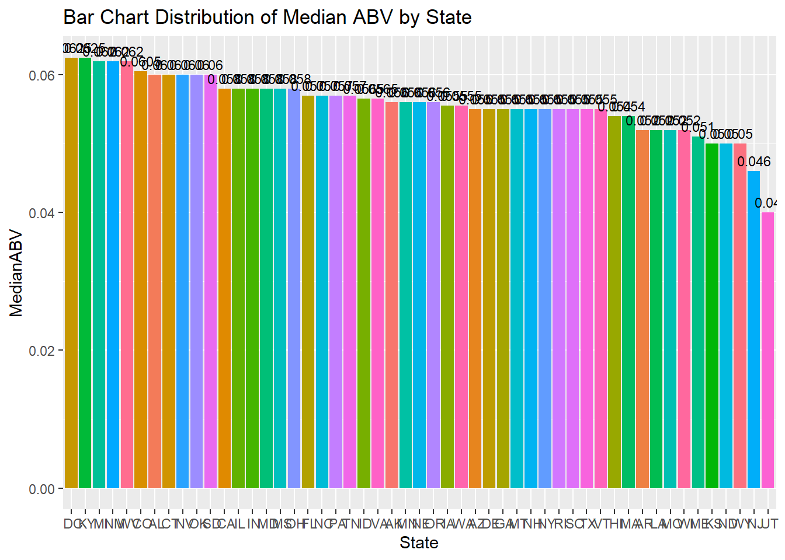
#Create bar chart of median IBU for each State
beers_breweries %>%
filter(!is.na(IBU))%>%
group_by(State)%>%
summarize(MedianIBU = median(IBU))%>%
ggplot(aes(x=reorder(State,-MedianIBU), y = MedianIBU, fill=State))+
geom_bar(stat="identity")+
xlab("State")+
ggtitle("Bar Chart Distribution of Median IBU by State") +
guides(fill = FALSE) +
geom_text(aes(label = MedianIBU), vjust = -0.5, size = 3)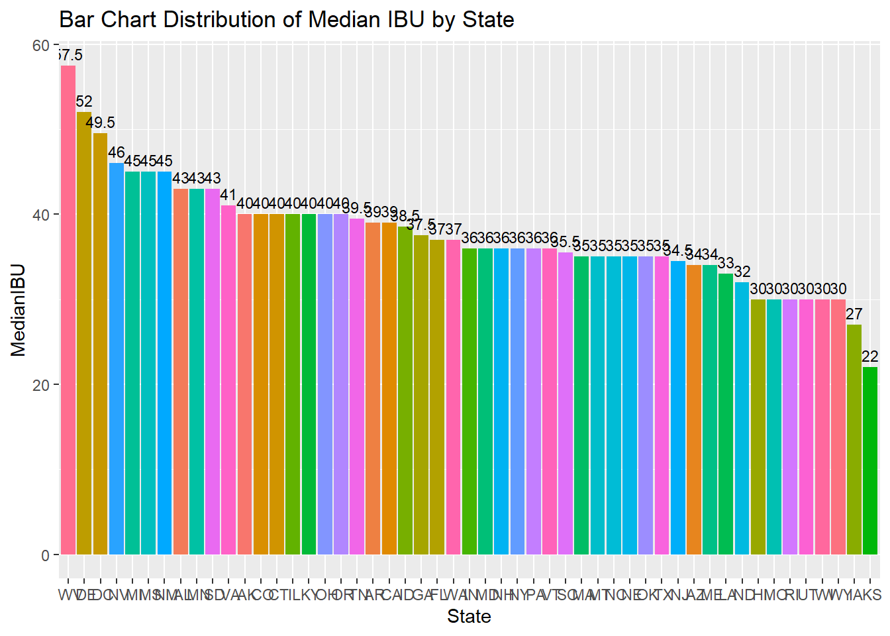
Which state has the maximum alcoholic (ABV) beer? Which state has the most bitter (IBU) beer? Answer - We have the maximum alcoholic beer in Boulder, Colorado. Which is the Lee Hill Series Vol. 5 - Belgian Style Quadrupel Ale @ 0.128ABV (NA IBU = 35) Answer - And the most bitter beer in Astoria, Oregon. Which is the Bitter Bitch Imperial IPA @ 138IBU
#Scatter Plot to compute highest ABV
beers_breweries %>%
filter(!is.na(ABV))%>%
group_by(State)%>%
summarize(MaxABV = max(ABV))%>%
ggplot(aes(x=reorder(State,-MaxABV), y = MaxABV, color=State))+
geom_text(aes(label=State),hjust=0, vjust=0)+
geom_point()+
xlab("State")+
ggtitle("Scatter Plot of Max ABV by State")+
theme_gray() +
guides(fill = FALSE)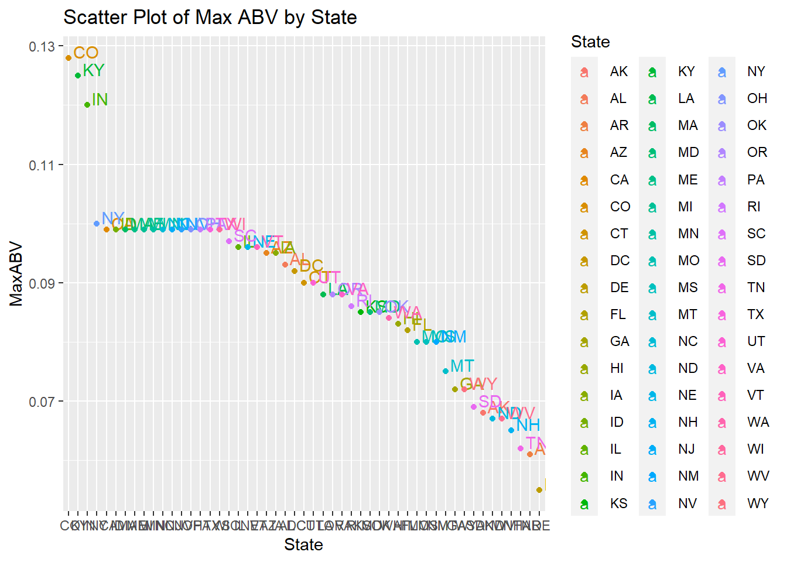
#using plotly to be able to hover over the plot
#p=beers_breweries %>%
# filter(!is.na(ABV))%>%
# group_by(State)%>%
# summarize(MaxABV = max(ABV))%>%
# ggplot(aes(x=reorder(State,-MaxABV), y = MaxABV, color=State))+
# geom_text(aes(label=State),hjust=0, vjust=0)+
# geom_point()+
# xlab("State")+
# ggtitle("Scatter Plot of Max ABV by State")+
# theme_gray()
#ggplotly(p)
#What value is the MAX ABV for Colorado?
coloradodf = beers_breweries %>% filter(State == " CO")
coloradodf = coloradodf[order(coloradodf$ABV, decreasing=TRUE),]
head(coloradodf,1)## BeerName Beer_ID ABV IBU
## 224 Lee Hill Series Vol. 5 - Belgian Style Quadrupel Ale 2565 0.128 130
## Brew_ID Style Ounces BreweryName City State
## 224 52 Quadrupel (Quad) 19.2 Upslope Brewing Company Boulder CO#Scatter Plot to compute highest IBU
beers_breweries %>%
filter(!is.na(IBU))%>%
group_by(State)%>%
summarize(MaxIBU = max(IBU))%>%
ggplot(aes(x=reorder(State,-MaxIBU), y = MaxIBU, color=State))+
geom_text(aes(label=State),hjust=0, vjust=0)+
geom_point()+
xlab("State")+
ggtitle("Scatter Plot of Max IBU by State")+
theme_gray() +
guides(fill = FALSE)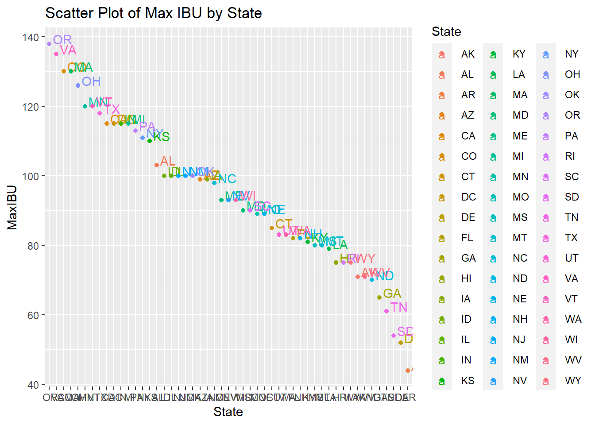
#using plotly to be able to hover over the plot
#p=beers_breweries %>%
# filter(!is.na(IBU))%>%
# group_by(State)%>%
# summarize(MaxIBU = max(IBU))%>%
# ggplot(aes(x=reorder(State,-MaxIBU), y = MaxIBU, color=State))+
# geom_text(aes(label=State),hjust=0, vjust=0)+
# geom_point()+
# xlab("State")+
# ggtitle("Scatter Plot of Max IBU by State")+
# theme_gray()
#ggplotly(p)
#What value is the MAX IBU for Oregon?
oregondf = beers_breweries %>% filter(State == " OR")
oregondf = oregondf[order(oregondf$IBU, decreasing=TRUE),]
head(oregondf,1)## BeerName Beer_ID ABV IBU Brew_ID
## 10 Bitter Bitch Imperial IPA 980 0.082 138 375
## Style Ounces BreweryName City State
## 10 American Double / Imperial IPA 12 Astoria Brewing Company Astoria ORComment on the summary statistics and distribution of the ABV variable. Answer - we have a right skewed distribution because the mean is greater than the median, meaning the outliers are likely to be far greater than the median.
####summary(beers_breweries$ABV)
beers_breweries%>%
filter(!is.na(ABV))%>%
summarize(MeanABV = mean(ABV), SDABV = sd(ABV), MedianABV = median(ABV), MaxABV = max(ABV), MinABV = min(ABV), Q1 = quantile(ABV,0.25), Q3 = quantile(ABV,0.75), Range = max(ABV)-min(ABV), count = n())## MeanABV SDABV MedianABV MaxABV MinABV Q1 Q3 Range count
## 1 0.05977342 0.01354173 0.056 0.128 0.001 0.05 0.067 0.127 2348ggplot(data = beers_breweries, aes(x = ABV)) +
geom_histogram(bins = 30, fill = "lightblue", color = "black") +
labs(title = "Histogram of ABV",
x = "ABV",
y = "Frequency")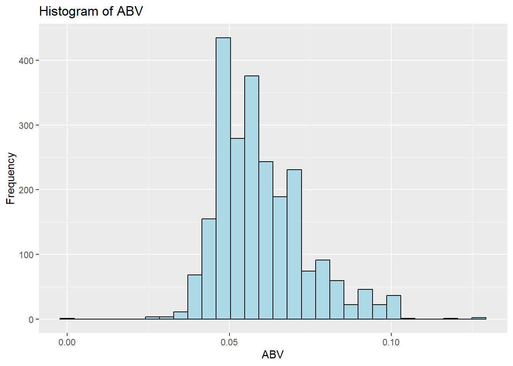
boxplot(beers_breweries$ABV, main="Box Plot of ABV", ylab="Values")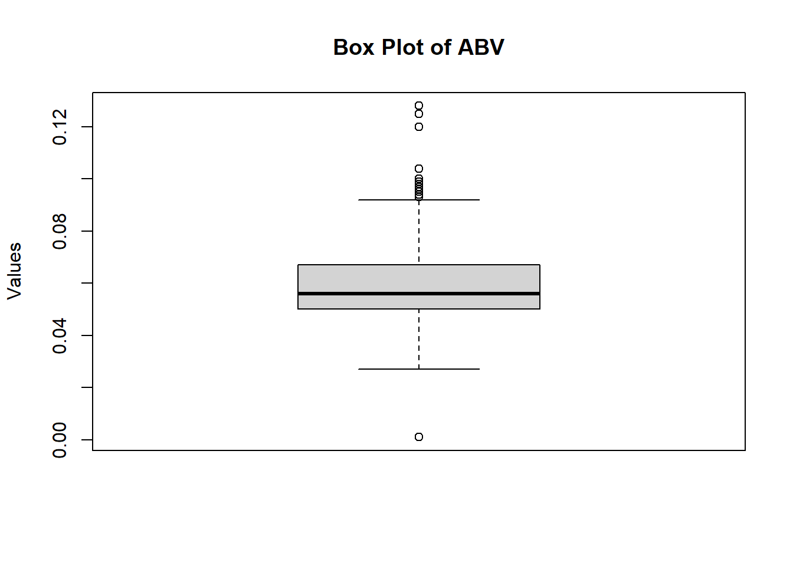
Is there an apparent relationship between the bitterness of the beer and its alcoholic content? Draw a scatter plot. Make your best judgment of a relationship and EXPLAIN your answer.
Answer - We can see a positive linear correlation (0.7673) with IBU and ABV. Answer - As the bitterness is higher, the ABV tends to increases as well. Answer - This makes sense since the higher percentage of alcohol will most likely make your drink more bitter
#Question - Relationship between ABV and IBV(Bitterness)?
beers_breweries %>%
filter(!is.na(ABV) & !is.na(IBU))%>%
ggplot(aes(x=IBU, y=ABV))+
geom_point()+
geom_smooth(method="lm", col = "blue")+ #adding a blue linera regression line (lm) to the plot
ggtitle("Relationship between IBU and ABV")## `geom_smooth()` using formula = 'y ~ x'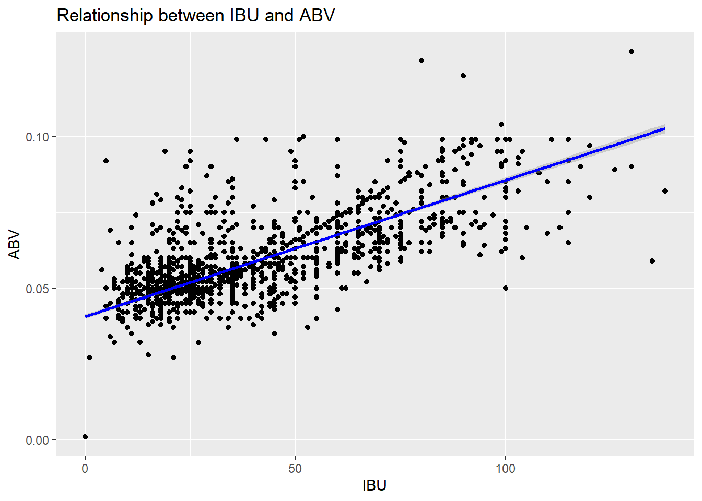
# Correlation
beers_breweries_complete <- beers_breweries[complete.cases(beers_breweries),]
cor(x = beers_breweries_complete$ABV, y = beers_breweries_complete$IBU)## [1] 0.7573115Budweiser would also like to investigate the difference with respect to IBU and ABV between IPAs (India Pale Ales) and other types of Ale (any beer with “Ale” in its name other than IPA). You decide to use KNN classification to investigate this relationship. Provide statistical evidence one way or the other. You can of course assume your audience is comfortable with percentages … KNN is very easy to understand conceptually. In addition, while you have decided to use KNN to investigate this relationship (KNN is required) you may also feel free to supplement your response to this question with any other methods or techniques you have learned. Creativity and alternative solutions are always encouraged.
KNN K = 5, 15 and Naive Bayes were used to help us better understand this relationship between IPA and other ales. 80.6% Accuracy with a Naïve Bayes Model 82.0% Accuracy relative to 5 nearest neighbors 80.0% Accuracy relative to 15 nearest neighbors
#separating the Ales out of the data
ales = beers_breweries[grepl("\\bale\\b", beers_breweries$Style, ignore.case = TRUE) | grepl("\\bale\\b", beers_breweries$BeerName, ignore.case = TRUE) | grepl("ipa", beers_breweries$Style, ignore.case = TRUE) | grepl("ipa", beers_breweries$BeerName, ignore.case = TRUE),]
ales$IPA = grepl("IPA", ales$BeerName, ignore.case = TRUE) | grepl("IPA", ales$Style, ignore.case = TRUE)
ales$IPA = as.factor(ales$IPA)
#Iterating the model to explore the relationship between IPA and other ALES
#setting a variable for the count of iterations
iter = 100
#variables to hold the results
accnb = matrix(nrow = iter)
acck5 = matrix(nrow = iter)
acck15 = matrix(nrow = iter)
sensnb = matrix(nrow = iter)
sensk5 = matrix(nrow = iter)
sensk15 = matrix(nrow = iter)
specnb = matrix(nrow = iter)
speck5 = matrix(nrow = iter)
speck15 = matrix(nrow = iter)
for (s in 1:iter){
#commenting out set seed first to see if I need to reset the seed each iteration
set.seed(s)
trainIndices = sample(seq(1:length(ales$ABV)),round(.7*length(ales$IBU)))
trainAles = ales[trainIndices,]
testAles = ales[-trainIndices,]
print(class(trainIndices))
#naive bayes with Test and Train Data
#creating a naive bayes model to predict whether we have
model = naiveBayes(trainAles[,c("ABV", "IBU")],trainAles$IPA,laplace = .1)
#table(predict(model,testAles[,c("ABV", "IBU")],testAles$IPA, type = "raw"))
CM = confusionMatrix(table(predict(model,testAles[,c("ABV", "IBU")]), testAles$IPA))
accnb[s] = CM$overall[c("Accuracy")]
sensnb[s] = CM$byClass[c("Sensitivity")]
specnb[s] = CM$byClass[c("Specificity")]
print(class(CM))
#KNN K = 5
classifyAles = knn(trainAles[,c("IBU","ABV")], testAles[,c("IBU","ABV")], trainAles$IPA, prob = TRUE, k = 5)
k5 = confusionMatrix(classifyAles, testAles$IPA)
acck5[s] = k5$overall[c("Accuracy")]
sensk5[s] = k5$byClass[c("Sensitivity")]
speck5[s] = k5$byClass[c("Specificity")]
#KNN K = 15
classifyAles = knn(trainAles[,c("IBU","ABV")], testAles[,c("IBU","ABV")], trainAles$IPA, prob = TRUE, k = 15)
k15 = confusionMatrix(classifyAles, testAles$IPA)
acck15[s] = k15$overall[c("Accuracy")]
sensk15[s] = k15$byClass[c("Sensitivity")]
speck15[s] = k15$byClass[c("Specificity")]
}## [1] "integer"
## [1] "confusionMatrix"
## [1] "integer"
## [1] "confusionMatrix"
## [1] "integer"
## [1] "confusionMatrix"
## [1] "integer"
## [1] "confusionMatrix"
## [1] "integer"
## [1] "confusionMatrix"
## [1] "integer"
## [1] "confusionMatrix"
## [1] "integer"
## [1] "confusionMatrix"
## [1] "integer"
## [1] "confusionMatrix"
## [1] "integer"
## [1] "confusionMatrix"
## [1] "integer"
## [1] "confusionMatrix"
## [1] "integer"
## [1] "confusionMatrix"
## [1] "integer"
## [1] "confusionMatrix"
## [1] "integer"
## [1] "confusionMatrix"
## [1] "integer"
## [1] "confusionMatrix"
## [1] "integer"
## [1] "confusionMatrix"
## [1] "integer"
## [1] "confusionMatrix"
## [1] "integer"
## [1] "confusionMatrix"
## [1] "integer"
## [1] "confusionMatrix"
## [1] "integer"
## [1] "confusionMatrix"
## [1] "integer"
## [1] "confusionMatrix"
## [1] "integer"
## [1] "confusionMatrix"
## [1] "integer"
## [1] "confusionMatrix"
## [1] "integer"
## [1] "confusionMatrix"
## [1] "integer"
## [1] "confusionMatrix"
## [1] "integer"
## [1] "confusionMatrix"
## [1] "integer"
## [1] "confusionMatrix"
## [1] "integer"
## [1] "confusionMatrix"
## [1] "integer"
## [1] "confusionMatrix"
## [1] "integer"
## [1] "confusionMatrix"
## [1] "integer"
## [1] "confusionMatrix"
## [1] "integer"
## [1] "confusionMatrix"
## [1] "integer"
## [1] "confusionMatrix"
## [1] "integer"
## [1] "confusionMatrix"
## [1] "integer"
## [1] "confusionMatrix"
## [1] "integer"
## [1] "confusionMatrix"
## [1] "integer"
## [1] "confusionMatrix"
## [1] "integer"
## [1] "confusionMatrix"
## [1] "integer"
## [1] "confusionMatrix"
## [1] "integer"
## [1] "confusionMatrix"
## [1] "integer"
## [1] "confusionMatrix"
## [1] "integer"
## [1] "confusionMatrix"
## [1] "integer"
## [1] "confusionMatrix"
## [1] "integer"
## [1] "confusionMatrix"
## [1] "integer"
## [1] "confusionMatrix"
## [1] "integer"
## [1] "confusionMatrix"
## [1] "integer"
## [1] "confusionMatrix"
## [1] "integer"
## [1] "confusionMatrix"
## [1] "integer"
## [1] "confusionMatrix"
## [1] "integer"
## [1] "confusionMatrix"
## [1] "integer"
## [1] "confusionMatrix"
## [1] "integer"
## [1] "confusionMatrix"
## [1] "integer"
## [1] "confusionMatrix"
## [1] "integer"
## [1] "confusionMatrix"
## [1] "integer"
## [1] "confusionMatrix"
## [1] "integer"
## [1] "confusionMatrix"
## [1] "integer"
## [1] "confusionMatrix"
## [1] "integer"
## [1] "confusionMatrix"
## [1] "integer"
## [1] "confusionMatrix"
## [1] "integer"
## [1] "confusionMatrix"
## [1] "integer"
## [1] "confusionMatrix"
## [1] "integer"
## [1] "confusionMatrix"
## [1] "integer"
## [1] "confusionMatrix"
## [1] "integer"
## [1] "confusionMatrix"
## [1] "integer"
## [1] "confusionMatrix"
## [1] "integer"
## [1] "confusionMatrix"
## [1] "integer"
## [1] "confusionMatrix"
## [1] "integer"
## [1] "confusionMatrix"
## [1] "integer"
## [1] "confusionMatrix"
## [1] "integer"
## [1] "confusionMatrix"
## [1] "integer"
## [1] "confusionMatrix"
## [1] "integer"
## [1] "confusionMatrix"
## [1] "integer"
## [1] "confusionMatrix"
## [1] "integer"
## [1] "confusionMatrix"
## [1] "integer"
## [1] "confusionMatrix"
## [1] "integer"
## [1] "confusionMatrix"
## [1] "integer"
## [1] "confusionMatrix"
## [1] "integer"
## [1] "confusionMatrix"
## [1] "integer"
## [1] "confusionMatrix"
## [1] "integer"
## [1] "confusionMatrix"
## [1] "integer"
## [1] "confusionMatrix"
## [1] "integer"
## [1] "confusionMatrix"
## [1] "integer"
## [1] "confusionMatrix"
## [1] "integer"
## [1] "confusionMatrix"
## [1] "integer"
## [1] "confusionMatrix"
## [1] "integer"
## [1] "confusionMatrix"
## [1] "integer"
## [1] "confusionMatrix"
## [1] "integer"
## [1] "confusionMatrix"
## [1] "integer"
## [1] "confusionMatrix"
## [1] "integer"
## [1] "confusionMatrix"
## [1] "integer"
## [1] "confusionMatrix"
## [1] "integer"
## [1] "confusionMatrix"
## [1] "integer"
## [1] "confusionMatrix"
## [1] "integer"
## [1] "confusionMatrix"
## [1] "integer"
## [1] "confusionMatrix"
## [1] "integer"
## [1] "confusionMatrix"
## [1] "integer"
## [1] "confusionMatrix"
## [1] "integer"
## [1] "confusionMatrix"
## [1] "integer"
## [1] "confusionMatrix"
## [1] "integer"
## [1] "confusionMatrix"
## [1] "integer"
## [1] "confusionMatrix"#calculate mean accuracy
headers = c("Accuracy", "Sensitivity", "Specificity")
nb = c(colMeans(accnb), colMeans(sensnb), colMeans(specnb))
k5 = c(colMeans(acck5), colMeans(sensk5), colMeans(speck5))
k15 = c(colMeans(acck15), colMeans(sensk15), colMeans(speck15))
# Create the data frames
df_nb <- data.frame(NBCategory = headers, Values = nb)
df_k5 <- data.frame(K5Category = headers, Values = k5)
df_k15 <- data.frame(K15Category = headers, Values = k15)
df_nb## NBCategory Values
## 1 Accuracy 0.8066311
## 2 Sensitivity 0.8701444
## 3 Specificity 0.6983503df_k5## K5Category Values
## 1 Accuracy 0.8204478
## 2 Sensitivity 0.8660540
## 3 Specificity 0.7426493df_k15## K15Category Values
## 1 Accuracy 0.7995949
## 2 Sensitivity 0.8448133
## 3 Specificity 0.7236145#graphing IBU and ABV for Ales for IPA
ales %>% ggplot(aes(x = ABV, y = IBU, color = IPA))+ geom_point() + ggtitle("Scatterplot of IPA's vs Non-IPA Ales")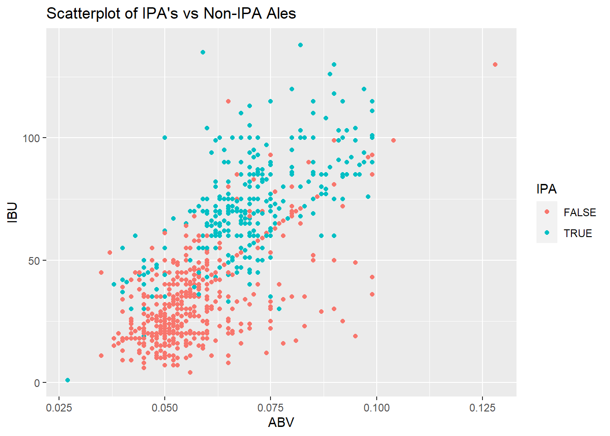
#Distribution of style within TX, CA, CO. Choosing 3 with many breweries to test through KNN and NB
TexasBB = beers_breweries %>% filter(str_trim(State) == "TX")
CaliforniaBB = beers_breweries %>% filter(str_trim(State) == "CA")
ColoradoBB = beers_breweries %>% filter(str_trim(State) == "CO")
summary(beers_breweries$State)## AK AL AR AZ CA CO CT DC DE FL GA HI IA ID IL IN KS KY LA MA
## 25 10 5 44 182 250 27 8 1 56 16 27 30 30 91 137 23 20 19 82
## MD ME MI MN MO MS MT NC ND NE NH NJ NM NV NY OH OK OR PA RI
## 21 27 151 55 39 11 39 55 3 21 8 8 13 10 73 49 19 125 97 27
## SC SD TN TX UT VA VT WA WI WV WY
## 14 7 6 124 26 40 27 68 85 2 15#adding columns in BB for TX, CA, CO, SD and not each of those states
beers_breweries = beers_breweries %>% mutate(TX = ifelse(grepl("TX", str_trim(State), ignore.case = TRUE), "Y", "N")) %>% mutate(TX = factor(TX, levels = c("Y", "N")))
beers_breweries = beers_breweries %>% mutate(CA = ifelse(grepl("CA", str_trim(State), ignore.case = TRUE), "Y", "N")) %>% mutate(CA = factor(CA, levels = c("Y", "N")))
beers_breweries = beers_breweries %>% mutate(CO = ifelse(grepl("CO", str_trim(State), ignore.case = TRUE), "Y", "N")) %>% mutate(CO = factor(CO, levels = c("Y", "N")))
beers_breweries = beers_breweries %>% mutate(SD = ifelse(grepl("SD", str_trim(State), ignore.case = TRUE), "Y", "N")) %>% mutate(SD = factor(SD, levels = c("Y", "N")))
beers_breweries## BeerName Beer_ID ABV IBU
## 1 Pub Beer 1436 0.050 30
## 2 Devil's Cup 2265 0.066 51
## 3 Rise of the Phoenix 2264 0.071 57
## 4 Sinister 2263 0.090 81
## 5 Sex and Candy 2262 0.075 62
## 6 Black Exodus 2261 0.077 65
## 7 Lake Street Express 2260 0.045 24
## 8 Foreman 2259 0.065 49
## 9 Jade 2258 0.055 36
## 10 Cone Crusher 2131 0.086 76
## 11 Sophomoric Saison 2099 0.072 58
## 12 Regional Ring Of Fire 2098 0.073 59
## 13 Garce Selé 2097 0.069 54
## 14 Troll Destroyer 1980 0.085 75
## 15 Bitter Bitch 1979 0.061 60
## 16 Ginja Ninja 2318 0.060 43
## 17 Cherried Away 2170 0.060 43
## 18 Rhubarbarian 2169 0.060 43
## 19 BrightCider 1502 0.060 43
## 20 He Said Baltic-Style Porter 1593 0.082 71
## 21 He Said Belgian-Style Tripel 1592 0.082 71
## 22 Lower De Boom 1036 0.099 92
## 23 Fireside Chat 1024 0.079 45
## 24 Marooned On Hog Island 976 0.079 67
## 25 Bitter American 876 0.044 42
## 26 Hell or High Watermelon Wheat (2009) 802 0.049 17
## 27 Hell or High Watermelon Wheat (2009) 801 0.049 17
## 28 21st Amendment Watermelon Wheat Beer (2006) 800 0.049 17
## 29 21st Amendment IPA (2006) 799 0.070 70
## 30 Brew Free! or Die IPA (2008) 797 0.070 70
## 31 Brew Free! or Die IPA (2009) 796 0.070 70
## 32 Special Edition: Allies Win The War! 531 0.085 52
## 33 Hop Crisis 432 0.097 94
## 34 Bitter American (2011) 353 0.044 42
## 35 Fireside Chat (2010) 321 0.079 45
## 36 Back in Black 173 0.068 65
## 37 Monk's Blood 11 0.083 35
## 38 Brew Free! or Die IPA 10 0.070 65
## 39 Hell or High Watermelon Wheat 9 0.049 17
## 40 Bimini Twist 2519 0.070 82
## 41 Beach Blonde 2518 0.050 30
## 42 Rod Bender Red 2517 0.059 42
## 43 Passion Fruit Prussia 2545 0.035 11
## 44 Send Help 2544 0.045 18
## 45 Cast Iron Oatmeal Brown 2324 0.055 36
## 46 Reprise Centennial Red 2288 0.060 43
## 47 Alter Ego 2287 0.055 36
## 48 Divided Sky 2286 0.065 49
## 49 Resurrected 2285 0.065 49
## 50 Contact High 1870 0.050 28
## 51 Galaxyfest 2603 0.065 49
## 52 Citrafest 2602 0.050 45
## 53 Barn Yeti 2220 0.090 81
## 54 Scarecrow 2219 0.069 65
## 55 Ironman 2218 0.090 50
## 56 Honey Kolsch 2217 0.046 15
## 57 Copperhead Amber 2216 0.052 18
## 58 Rude Parrot IPA 972 0.059 75
## 59 British Pale Ale (2010) 866 0.054 30
## 60 British Pale Ale 48 0.054 30
## 61 Ballz Deep Double IPA 47 0.084 82
## 62 Wolfman's Berliner 1583 0.038 15
## 63 Colorado Native 1165 0.055 26
## 64 Colorado Native (2011) 431 0.055 26
## 65 Jockamo IPA 516 0.065 52
## 66 Purple Haze 515 0.042 13
## 67 Abita Amber 514 0.045 17
## 68 Citra Ass Down 2540 0.082 68
## 69 The Brown Note 2539 0.050 20
## 70 Citra Ass Down 2686 0.080 68
## 71 London Balling 2685 0.125 80
## 72 35 K 2684 0.077 25
## 73 A Beer 2683 0.042 42
## 74 Rules are Rules 2682 0.050 25
## 75 Flesh Gourd'n 2681 0.066 21
## 76 Sho'nuff 2680 0.040 13
## 77 Bloody Show 2679 0.055 17
## 78 Rico Sauvin 2678 0.076 68
## 79 Coq de la Marche 2677 0.051 38
## 80 Kamen Knuddeln 2676 0.065 49
## 81 Pile of Face 2675 0.060 65
## 82 The Brown Note 2674 0.050 20
## 83 Maylani's Coconut Stout 1594 0.053 35
## 84 Oatmeal PSA 1162 0.050 35
## 85 Pre Flight Pilsner 1137 0.052 33
## 86 P-Town Pilsner 2403 0.040 20
## 87 Klickitat Pale Ale 2402 0.053 36
## 88 Yellow Wolf Imperial IPA 2401 0.082 103
## 89 Freeride APA 1921 0.053 40
## 90 Alaskan Amber 1920 0.053 18
## 91 Hopalicious 2501 0.057 39
## 92 Kentucky Kölsch 1535 0.043 21
## 93 Kentucky IPA 1149 0.065 49
## 94 Dusty Trail Pale Ale 1474 0.054 35
## 95 Damnesia 1473 0.062 45
## 96 Desolation IPA 837 0.062 43
## 97 Liberty Ale 2592 0.059 42
## 98 IPA 2578 0.065 49
## 99 Summer Wheat 2577 0.045 24
## 100 California Lager 2103 0.049 29
## 101 Brotherhood Steam 2102 0.056 38
## 102 Blood Orange Gose 2291 0.042 20
## 103 Keebarlin' Pale Ale 1818 0.042 20
## 104 the Kimmie, the Yink and the Holy Gose 1738 0.048 27
## 105 Fall Hornin' 1563 0.060 43
## 106 Barney Flats Oatmeal Stout 1520 0.057 13
## 107 Summer Solstice 1350 0.056 4
## 108 Hop Ottin' IPA 1327 0.070 80
## 109 Boont Amber Ale 1326 0.058 15
## 110 Barney Flats Oatmeal Stout 1221 0.057 13
## 111 El Steinber Dark Lager 1217 0.055 25
## 112 Boont Amber Ale (2010) 811 0.058 15
## 113 Summer Solstice Cerveza Crema (2009) 753 0.056 4
## 114 Barney Flats Oatmeal Stout (2012) 572 0.057 13
## 115 Winter Solstice 523 0.069 6
## 116 Hop Ottin' IPA (2011) 367 0.070 80
## 117 Boont Amber Ale (2011) 78 0.058 15
## 118 Summer Solstice (2011) 77 0.056 4
## 119 Poleeko Gold Pale Ale (2009) 76 0.055 28
## 120 Charlie's Rye IPA 2337 0.060 43
## 121 River Pig Pale Ale 410 0.054 35
## 122 Oaky's Oatmeal Stout 409 0.047 26
## 123 Angry Orchard Apple Ginger 1294 0.050 30
## 124 Angry Orchard Crisp Apple 1293 0.050 30
## 125 Angry Orchard Crisp Apple 1292 0.050 30
## 126 Golden One 2207 0.068 53
## 127 Arjuna 2040 0.060 43
## 128 Uroboros 2039 0.085 75
## 129 Long Leaf 2511 0.071 75
## 130 Honey Badger Blonde 2510 0.047 19
## 131 Porter (a/k/a Black Gold Porter) 2509 0.060 23
## 132 Sky High Rye 413 0.060 55
## 133 Whitsun 390 0.062 17
## 134 On-On Ale (2008) 735 0.052 33
## 135 Quakertown Stout 1333 0.092 50
## 136 Greenbelt Farmhouse Ale 1332 0.051 20
## 137 Mo's Gose 1172 0.052 10
## 138 Green Bullet Organic India Pale Ale 1322 0.070 45
## 139 Rocket Girl 550 0.032 27
## 140 Ninja Porter 429 0.053 26
## 141 Shiva IPA 428 0.060 69
## 142 Aslan Kölsch 1640 0.048 27
## 143 Aslan IPA 1639 0.077 65
## 144 Aslan Amber 1638 0.077 65
## 145 This Season's Blonde 597 0.056 27
## 146 Independence Pass Ale 596 0.070 67
## 147 Trolley Stop Stout 1580 0.057 40
## 148 Bitter Bitch Imperial IPA 980 0.082 138
## 149 Poop Deck Porter 979 0.062 35
## 150 Old Red Beard Amber Ale 978 0.060 35
## 151 Hop A-Peel 2503 0.075 115
## 152 Vanilla Java Porter 2502 0.055 12
## 153 Michelada 2495 0.052 33
## 154 Dirty Blonde Ale 534 0.045 8
## 155 Grand Circus IPA 528 0.050 62
## 156 Atwater's Lager 527 0.050 12
## 157 Heavy Machinery IPA Series #1: Heavy Fist 1409 0.070 56
## 158 Fire Eagle IPA 343 0.062 45
## 159 Peacemaker 342 0.051 31
## 160 Pearl-Snap 341 0.053 34
## 161 Black Thunder 340 0.052 33
## 162 Raja 2589 0.080 68
## 163 Perzik Saison 2546 0.064 48
## 164 Avery Joe’s Premium American Pilsner 146 0.047 42
## 165 White Rascal 108 0.056 10
## 166 Avery India Pale Ale 107 0.063 69
## 167 Ellie’s Brown Ale 106 0.055 17
## 168 Pumpkin Beast 1620 0.062 17
## 169 OktoberBeast 1579 0.072 22
## 170 Mad Beach 1228 0.048 23
## 171 Hog Wild India Pale Ale 705 0.067 52
## 172 Devils Tramping Ground Tripel 704 0.092 5
## 173 Hot Rod Red 702 0.061 41
## 174 Palate Mallet 2058 0.086 76
## 175 Back East Porter 1483 0.060 43
## 176 Back East Golden Ale 1426 0.049 29
## 177 Misty Mountain IPA 1132 0.070 56
## 178 Back East Ale 1131 0.050 30
## 179 Truck Stop Honey Brown Ale 1876 0.060 43
## 180 Naked Pig Pale Ale 1875 0.060 43
## 181 Topcutter India Pale Ale 966 0.068 70
## 182 Field 41 Pale Ale 965 0.044 38
## 183 Grapefruit Sculpin 2593 0.070 56
## 184 Even Keel 2105 0.038 40
## 185 Ballast Point Pale Ale 1401 0.052 23
## 186 Big Eye India Pale Ale 1400 0.070 75
## 187 Longfin Lager 1019 0.046 25
## 188 Sculpin IPA 1018 0.070 70
## 189 All Nighter Ale 1776 0.045 24
## 190 Banner American Rye 1644 0.045 20
## 191 Banner American Ale 1643 0.035 45
## 192 Thai.p.a 2618 0.070 46
## 193 Barrio Blanco 2005 0.060 60
## 194 Barrio Tucson Blonde 1343 0.045 24
## 195 Hop in the ‘Pool Helles 2404 0.049 22
## 196 Ultra Gnar Gnar IPA 2323 0.067 60
## 197 In-Tents India Pale Lager 2189 0.068 62
## 198 Lost Meridian Wit 2188 0.050 20
## 199 Celestial Meridian Cascadian Dark Lager 2187 0.051 45
## 200 Wagon Party 1966 0.054 55
## 201 Sky-Five 1965 0.067 70
## 202 Stargrazer 1964 0.050 28
## 203 Wonderstuff 1963 0.054 48
## 204 Tarnation California-Style Lager 1855 0.053 34
## 205 On the Count of 3 (2015) 1778 0.070 42
## 206 Summer Swelter 1209 0.047 26
## 207 Phantom Punch Winter Stout 954 0.068 53
## 208 Hayride Autumn Ale 910 0.066 51
## 209 Celsius Summer Ale (2012) 707 0.047 26
## 210 Amber Road 533 0.055 35
## 211 Pamola Xtra Pale Ale 183 0.049 28
## 212 Stowaway IPA 182 0.069 69
## 213 Hoptopus Double IPA 1806 0.088 108
## 214 Watermelon Ale 2435 0.050 10
## 215 Fenway American Pale Ale 2423 0.058 45
## 216 Back Bay IPA 2420 0.068 85
## 217 Bunker Hill Blueberry Ale 2419 0.048 16
## 218 Oberon 2494 0.058 40
## 219 Smitten 2325 0.060 43
## 220 Winter White 2022 0.050 30
## 221 Oberon 1989 0.058 40
## 222 Two Hearted 1988 0.070 56
## 223 Best Brown 1955 0.058 40
## 224 Moar 2558 0.044 44
## 225 Uber Lupin Schwarz IPA 2557 0.083 72
## 226 Nordic Blonde 2556 0.057 27
## 227 Cold Press 2496 0.060 43
## 228 Harness the Winter 2410 0.072 87
## 229 14° ESB 1902 0.056 32
## 230 Bent Hop Golden IPA 1901 0.062 68
## 231 Bent Paddle Black Ale 1261 0.060 34
## 232 Venture Pils 1253 0.050 38
## 233 Lost Sailor IPA 1900 0.055 40
## 234 Steel Rail Extra Pale Ale 1317 0.053 20
## 235 La Frontera Premium IPA 1158 0.078 66
## 236 Tejas Lager 1157 0.047 26
## 237 Number 22 Porter 1156 0.064 48
## 238 Big Bend Hefeweizen 1155 0.056 38
## 239 Terlingua Gold 1154 0.060 43
## 240 Aprè Shred 2104 0.081 17
## 241 Hemlock Double IPA 1762 0.095 104
## 242 West Portal Colorado Common Summer Ale 1422 0.041 18
## 243 Disconnected Red 1067 0.067 85
## 244 Big Elm IPA 1003 0.070 56
## 245 Gerry Dog Stout 1002 0.065 49
## 246 413 Farmhouse Ale 1001 0.060 43
## 247 Dark Star 2639 0.080 54
## 248 Ryecoe 2469 0.062 45
## 249 Blueberry Blonde 2586 0.060 43
## 250 Galaxy IPA 2585 0.075 60
## 251 Big River Pilsner 643 0.050 32
## 252 House Brand IPA 632 0.060 55
## 253 Big Sky IPA 1714 0.062 65
## 254 Scape Goat Pale Ale 1713 0.050 40
## 255 Montana Trout Slayer Ale 1712 0.050 35
## 256 Moose Drool Brown Ale 1711 0.051 26
## 257 Powder Hound Winter Ale 1456 0.072 60
## 258 Moose Drool Brown Ale (2011) 767 0.051 26
## 259 Montana Trout Slayer Ale (2012) 766 0.050 35
## 260 Big Sky IPA (2012) 579 0.062 65
## 261 Summer Honey 168 0.047 26
## 262 Scape Goat Pale Ale (2010) 159 0.050 40
## 263 Montana Trout Slayer Ale (2009) 35 0.050 35
## 264 Moose Drool Brown Ale (2009) 34 0.051 26
## 265 Arcus IPA 2096 0.069 81
## 266 Wavemaker 2095 0.058 38
## 267 Jack Pine Savage 1257 0.053 43
## 268 Forest Fire Imperial Smoked Rye 1256 0.099 85
## 269 Bad Axe Imperial IPA 1255 0.098 76
## 270 Morning Wood 986 0.055 35
## 271 Bark Bite IPA 985 0.066 50
## 272 Jalapeno Pale Ale 2508 0.055 45
## 273 Blown Out Brown 1441 0.052 33
## 274 Single Hop Ale 1413 0.063 47
## 275 Sawtooth Ale 1411 0.054 35
## 276 Saucy Intruder 2620 0.072 75
## 277 Deception 2412 0.045 16
## 278 Blackmarket Rye IPA 1898 0.075 35
## 279 Black Market Hefeweizen 1897 0.050 8
## 280 Aftermath Pale Ale 1896 0.058 44
## 281 American India Red Ale 1850 0.071 83
## 282 American Red Porter 1849 0.071 45
## 283 American Red Saison 1848 0.078 34
## 284 Colorado Red Ale 1847 0.066 44
## 285 Saddle Bronc Brown Ale 2485 0.048 16
## 286 Bomber Mountain Amber Ale 2484 0.046 20
## 287 Flying Sailor 2449 0.073 59
## 288 Nordskye 2634 0.048 47
## 289 North Third Stout 2153 0.060 30
## 290 Honey Lav 1953 0.052 33
## 291 Coconut Brown Ale 1496 0.068 53
## 292 51K IPA 1481 0.070 51
## 293 Grand Rabbits 1480 0.055 36
## 294 1800 Big Log Wheat (2012) 1564 0.050 30
## 295 Brewerhood Brown Ale 1321 0.055 36
## 296 Last Call Imperial Amber Ale 1320 0.080 68
## 297 Pernicious Double IPA 1319 0.096 89
## 298 6-4-3 Double Play Pilsner 1303 0.052 33
## 299 467 Ethan's Stout 1012 0.050 30
## 300 1335 Wicked Snout 942 0.064 48
## 301 543 Skull Creek Fresh Hopped Pale Ale 937 0.045 24
## 302 1327 Pod's ESB 888 0.056 37
## 303 1327 Pod's ESB 886 0.056 37
## 304 1327 Pod's ESB 612 0.056 37
## 305 834 Happy As Ale 611 0.046 35
## 306 Yellow Collar 1372 0.059 42
## 307 Green Collar 1371 0.059 42
## 308 Quarter Mile Double IPA 1812 0.080 80
## 309 Full Nelson Pale Ale 1547 0.059 60
## 310 Steel Wheels ESB 1546 0.065 30
## 311 Blue Mountain Classic Lager 1545 0.053 22
## 312 Full Nelson Pale Ale (2010) 119 0.059 60
## 313 Kölsch 151 1408 0.049 16
## 314 Toxic Sludge 939 0.070 56
## 315 Blue Point White IPA 692 0.060 40
## 316 Blue Point Summer Ale 667 0.044 16
## 317 Toasted Lager 665 0.055 28
## 318 Bohemian Export Lager 1607 0.060 43
## 319 Altus Bohemes Altbier 1597 0.053 34
## 320 Cherny Bock 344 0.040 17
## 321 Czech Pilsner 89 0.050 30
## 322 Viennese Lager 88 0.050 30
## 323 Mad Manatee IPA 1569 0.065 49
## 324 Killer Whale Cream Ale 1568 0.055 36
## 325 Duke's Cold Nose Brown Ale 1188 0.060 43
## 326 Longhop IPA 1891 0.042 30
## 327 Lucky Buck 1890 0.040 34
## 328 Bomb Lager (New Recipe) 577 0.051 31
## 329 Bomb Lager (Old Recipe) 513 0.045 27
## 330 Firestarter India Pale Ale 2422 0.066 72
## 331 Kilt Dropper Scotch Ale 1727 0.075 22
## 332 Wood Splitter Pilsner 1614 0.048 30
## 333 Gyptoberfest 1613 0.056 26
## 334 Farmer Wirtz India Pale Ale 1549 0.070 94
## 335 Slow & Steady Golden Ale 1548 0.047 26
## 336 Pink-I Raspberry IPA 1517 0.068 53
## 337 Moe's Original Bar B Que 'Bama Brew Golden Ale 1500 0.047 26
## 338 Live Local Golden Ale 1421 0.047 26
## 339 Screaming Eagle Special Ale ESB 1360 0.048 38
## 340 Dirtbag Dunkel 1184 0.049 29
## 341 Kindler Pale Ale 1183 0.053 45
## 342 Mistress Winter Wheat 1023 0.064 48
## 343 Tent Pole Vanilla Porter 998 0.061 44
## 344 Awry Rye Pale Ale 997 0.058 40
## 345 Demshitz Brown Ale 996 0.058 40
## 346 Wood Splitter Pilsner (2012) 931 0.048 27
## 347 Brush Creek Blonde 798 0.048 27
## 348 Firestarter India Pale Ale 633 0.066 72
## 349 Noche Dulce 2062 0.071 16
## 350 Porch Rocker 1830 0.045 8
## 351 Rebel IPA 1629 0.065 45
## 352 Cold Snap 1601 0.055 36
## 353 Samuel Adams Winter Lager 1427 0.056 38
## 354 Boston Lager 1349 0.049 30
## 355 Boston Lager 1310 0.049 30
## 356 Samuel Adams Octoberfest 1281 0.053 15
## 357 Samuel Adams Summer Ale 1144 0.053 7
## 358 Boston Lager 1143 0.049 30
## 359 Hazed & Infused 1395 0.049 35
## 360 Hoopla Pale Ale 808 0.057 35
## 361 Hazed & Infused (2010) 81 0.049 35
## 362 Heavy Lifting 2596 0.062 80
## 363 1492 2300 0.065 49
## 364 Mango Ginger 2299 0.058 40
## 365 Passenger 2298 0.047 26
## 366 Plum St. Porter 2107 0.060 52
## 367 Plum St. Porter 1573 0.057 52
## 368 Bozone HopZone IPA 1289 0.070 80
## 369 Bozone Hefe Weizen 1288 0.060 25
## 370 Bozone Select Amber Ale 470 0.055 36
## 371 Evil Owl 2167 0.052 40
## 372 Post Time Kölsch 2204 0.050 30
## 373 Agave Wheat 1522 0.042 9
## 374 SummerBright Ale 397 0.045 15
## 375 Lucky U IPA 193 0.062 68
## 376 Avalanche Ale 83 0.054 19
## 377 You're My Boy, Blue 1802 0.050 30
## 378 Last Stop IPA 1801 0.072 60
## 379 Rollin Dirty Red Ale 1800 0.050 21
## 380 Are Wheat There Yet? 1799 0.055 28
## 381 Insert Hop Reference 2619 0.058 40
## 382 Manitou Amber 2468 0.053 34
## 383 Belfort 2637 0.067 52
## 384 Star Runner 2636 0.060 43
## 385 Tart Side of the Barrel 2598 0.098 92
## 386 Linnaeus Mango IPA 2597 0.060 43
## 387 Beasts A'Burnin' 2548 0.070 56
## 388 Verdun 2542 0.077 65
## 389 Barrel Aged Triomphe 2541 0.065 49
## 390 Cherry Doppelbock 2504 0.065 49
## 391 Tropical Saison 2500 0.065 49
## 392 Beach Patrol 2499 0.065 49
## 393 Nuit Serpent 2498 0.050 30
## 394 Paris 2481 0.090 81
## 395 The Grand Army 2476 0.055 36
## 396 Acidulated Trip 2467 0.059 42
## 397 Root Stock 2466 0.066 51
## 398 Mind Games 2465 0.041 18
## 399 Sous Chef 2433 0.082 71
## 400 Dubbelicious 2418 0.065 49
## 401 Psychopomp 2416 0.062 45
## 402 Ski Patrol 2290 0.061 44
## 403 Viking Ice Hole 2241 0.063 47
## 404 Rye Porter 2240 0.056 38
## 405 Wizard Burial Ground 2137 0.099 93
## 406 Smoky Wheat 2101 0.051 31
## 407 BRIPA 2092 0.062 45
## 408 Mela 2091 0.062 45
## 409 W.I.P.A Snappa 2086 0.053 34
## 410 Pepper in the Rye 2023 0.063 47
## 411 Moe Lasses' 2006 0.064 48
## 412 Pumpkin Tart 1997 0.070 56
## 413 Undertaker 1977 0.067 52
## 414 Undertaker (2014) 1976 0.067 52
## 415 Coq D'Or 1974 0.050 30
## 416 North French 1973 0.060 43
## 417 Agent a Deux 1959 0.065 49
## 418 Belgian Wit 1958 0.045 24
## 419 Pothole Stout 1949 0.063 47
## 420 Tree Bucket 1947 0.093 85
## 421 Le Flaneur Ale 1785 0.073 59
## 422 Maize & Blueberry 1651 0.056 38
## 423 Trebuchet Double IPA 1443 0.093 85
## 424 Contemplation 1352 0.065 49
## 425 Black Rabbit 1267 0.050 30
## 426 Zaison 1266 0.090 81
## 427 Vivant Tripel 1178 0.082 71
## 428 Tart Side of the Moon 1136 0.098 92
## 429 Big Red Coq 1044 0.060 43
## 430 Hubris Quadrupel Anniversary Ale 1033 0.099 93
## 431 Plow Horse Belgian Style Imperial Stout 1031 0.095 88
## 432 Escoffier Bretta Ale 909 0.092 84
## 433 Contemplation (2012) 873 0.065 49
## 434 Vivant Belgian Style Imperial Stout (2012) 860 0.099 93
## 435 Big Red Coq (2012) 677 0.062 45
## 436 Zaison (2012) 671 0.090 81
## 437 Vivant Tripel (2012) 670 0.092 84
## 438 Trebuchet Double IPA (2012) 669 0.097 90
## 439 Kludde 627 0.085 75
## 440 Farm Hand 387 0.055 36
## 441 Solitude 385 0.060 43
## 442 Triomphe 384 0.065 49
## 443 Broad Brook Ale 2456 0.061 44
## 444 Northern Lights Amber Ale 921 0.050 15
## 445 Polar Pale Ale 920 0.052 17
## 446 Chugach Session Ale 919 0.048 27
## 447 Fairweather IPA 648 0.061 64
## 448 East India Pale Ale 1279 0.068 47
## 449 Brooklyn Summer Ale 756 0.045 24
## 450 East India Pale Ale 566 0.068 47
## 451 Brooklyn Summer Ale (2011) 328 0.045 24
## 452 Brooklyn Lager (16 oz.) 66 0.052 33
## 453 Brooklyn Lager (12 oz.) 65 0.052 33
## 454 Tour de Nez Belgian IPA (Current) 538 0.080 68
## 455 Black Adder IBA (Current) 383 0.073 85
## 456 Very Noddy Lager (Current) 29 0.099 93
## 457 Tule Duck Red Ale (Current) 28 0.062 42
## 458 Original Orange Blossom Ale (Current) 27 0.058 35
## 459 Black Noddy Lager (Current) 26 0.052 40
## 460 Cleveland Beer Week 2013 1627 0.053 34
## 461 Painted Turtle 2552 0.045 24
## 462 1836 2125 0.060 40
## 463 Summer's Wit 2124 0.060 20
## 464 More Cowbell 2123 0.090 118
## 465 Wrath of Pele 2608 0.065 49
## 466 Black Beer'd 2607 0.068 53
## 467 Mr. Tea 2606 0.078 66
## 468 Pale Alement 2478 0.055 40
## 469 Hopkick Dropkick 2471 0.099 115
## 470 Kreamed Corn 2470 0.060 43
## 471 Coconoats 2464 0.065 49
## 472 Joey Wheat 2160 0.068 16
## 473 3:33 Black IPA 2158 0.072 86
## 474 MCA 2072 0.068 53
## 475 Pale Alement 2054 0.055 40
## 476 Couch Select Lager 2196 0.050 14
## 477 Mucho Aloha Hawaiian Pale Ale 668 0.056 36
## 478 Heinnieweisse Weissebier 52 0.049 29
## 479 Snapperhead IPA 51 0.068 53
## 480 Moo Thunder Stout 50 0.049 29
## 481 Porkslap Pale Ale 49 0.043 21
## 482 Blackbeard 2657 0.093 85
## 483 Rye Knot 2656 0.062 45
## 484 Dead Arm 2655 0.060 43
## 485 32°/50° Kölsch 2654 0.048 27
## 486 HopArt 2653 0.077 65
## 487 Boy King 2652 0.097 90
## 488 Gran Sport 2252 0.052 33
## 489 Horny Toad Cerveza 2214 0.053 25
## 490 Native Amber 2213 0.063 35
## 491 F5 IPA 1442 0.068 100
## 492 Native Amber (2013) 170 0.063 35
## 493 Horny Toad Cerveza (2013) 169 0.053 25
## 494 Hopportunity Knocks IPA 2315 0.068 100
## 495 Pilot Rock Porter 1808 0.060 43
## 496 Caldera Pale Ale 1419 0.056 55
## 497 Lawnmower Lager 878 0.039 16
## 498 Ashland Amber Ale (2009) 794 0.054 24
## 499 Caldera IPA (2009) 793 0.061 94
## 500 Caldera IPA (2007) 792 0.061 94
## 501 Caldera Pale Ale (2010) 791 0.056 55
## 502 Caldera Pale Ale (2009) 790 0.056 55
## 503 Caldera Pale Ale (2005) 789 0.056 55
## 504 Caldera Pale Ale (2007) 788 0.056 55
## 505 Caldera Pale Ale (2011) 38 0.056 55
## 506 Ashland Amber Ale 37 0.054 24
## 507 Caldera IPA 36 0.061 94
## 508 Remain in Light 2257 0.050 30
## 509 Flower Child (2014) 2256 0.065 49
## 510 Imperial Pumpkin Stout 2068 0.099 43
## 511 Dead-Eye DIPA 2067 0.090 130
## 512 Fisherman's IPA 2066 0.055 64
## 513 Fisherman's Pils 2065 0.054 35
## 514 Fisherman's Brew 2064 0.055 30
## 515 Cape Cod Red 1928 0.055 35
## 516 Beach Blonde 1927 0.049 10
## 517 Dark Voyage Black IPA (2013) 2227 0.065 80
## 518 Wisconsin Amber 2226 0.052 28
## 519 Lake House 2225 0.046 18
## 520 Ghost Ship White IPA 1954 0.056 55
## 521 Lake House 1910 0.046 18
## 522 Mutiny IPA 1177 0.062 70
## 523 Wisconsin Amber (1998) 840 0.052 33
## 524 Island Wheat 180 0.042 20
## 525 Wisconsin Amber (2013) 63 0.052 33
## 526 U.S. Pale Ale 62 0.050 30
## 527 Carolina Lighthouse (2007) 784 0.040 17
## 528 Carolina Blonde (2006) 783 0.050 30
## 529 Carolina Blonde Light (2005) 782 0.035 11
## 530 Santa's Secret 2255 0.059 22
## 531 Flagship IPA 530 0.057 39
## 532 Sky Blue Golden Ale 427 0.051 31
## 533 Epitome 2094 0.099 100
## 534 Monkey Chased the Weasel 1941 0.039 9
## 535 077XX 1940 0.078 80
## 536 Boat Beer 1439 0.042 35
## 537 Granny Smith Hard Apple Cider 1465 0.069 54
## 538 Dry Hard Apple Cider 1464 0.069 54
## 539 Farmer Ted's Cream Ale 1744 0.056 38
## 540 Firewater India Pale Ale 1743 0.052 33
## 541 White Zombie Ale 1742 0.047 26
## 542 King Winterbolt Winter Ale 1719 0.070 56
## 543 White Zombie Ale 638 0.047 26
## 544 Firewater India Pale Ale 507 0.052 33
## 545 Farmer Ted's Farmhouse Cream Ale 480 0.056 38
## 546 Whitecap Wit 1882 0.048 16
## 547 Seiche Scottish Ale 1881 0.078 16
## 548 Peanut Butter Jelly Time 2446 0.058 40
## 549 King Coconut 2106 0.054 35
## 550 Gone A-Rye 2600 0.085 90
## 551 Dankosaurus 2052 0.068 70
## 552 Scruffy's Smoked Alt 1584 0.051 35
## 553 Elliott's Phoned Home Pale Ale 1182 0.051 36
## 554 The Lawn Ranger 1050 0.050 18
## 555 All American Blonde Ale 1219 0.050 30
## 556 All American Red Ale 1218 0.050 30
## 557 Main St. Virginia Ale 2377 0.050 40
## 558 Chin Music Amber Lager 1839 0.045 24
## 559 Main St. Virginia Ale 1248 0.050 40
## 560 Ray Ray’s Pale Ale 1247 0.052 42
## 561 Chai Ale 1649 0.051 15
## 562 Lucky Day IPA 1648 0.072 85
## 563 Terrace Hill Double IPA 1647 0.095 99
## 564 Catch 23 1646 0.075 77
## 565 Stickin' In My Rye 2057 0.070 56
## 566 Black Me Stout 2056 0.060 45
## 567 Killer Kolsch 2055 0.050 22
## 568 Missile IPA 1933 0.070 65
## 569 Enlighten 2019 0.045 24
## 570 Ale Cider 2018 0.065 8
## 571 Pail Ale 2017 0.055 30
## 572 Englishman 2016 0.045 24
## 573 8 Barrel 2080 0.080 69
## 574 Oktoberfest 2079 0.055 40
## 575 IPA #11 2380 0.057 58
## 576 Blood Orange Honey 2379 0.057 10
## 577 Lighthouse Amber 2354 0.052 33
## 578 Bay of Bengal Double IPA (2014) 2440 0.089 126
## 579 Churchkey Pilsner Style Beer 567 0.049 29
## 580 First Press 1342 0.050 30
## 581 Magic Apple 1341 0.050 30
## 582 Cubano Espresso 2349 0.055 25
## 583 Operation Homefront 2014 0.062 65
## 584 Wandering Pelican 2013 0.082 65
## 585 Sugar Plum 2012 0.055 36
## 586 Oktoberfest 2011 0.055 36
## 587 Puppy's Breath Porter 2010 0.060 43
## 588 Happening Now 2009 0.045 24
## 589 Hopped on the High Seas (Hop #529) 1726 0.070 60
## 590 Hopped on the High Seas (Calypso) 1725 0.070 60
## 591 Wiregrass Post-Prohibition Ale 1695 0.063 47
## 592 Dry-Hopped On The High Seas Caribbean-Style IPA 1694 0.070 60
## 593 Hopped on the High Seas (Citra) 1693 0.070 60
## 594 Hopped on the High Seas (Ahtanum) 1692 0.070 60
## 595 Gwar Beer 1369 0.055 36
## 596 Tropical Heatwave 1243 0.052 33
## 597 Humidor Series India Pale Ale 1142 0.075 70
## 598 Jai Alai IPA Aged on White Oak 1141 0.075 70
## 599 José Martí American Porter 1140 0.080 65
## 600 Invasion Pale Ale 1139 0.050 30
## 601 Maduro Brown Ale 1138 0.055 25
## 602 Maduro Brown Ale 571 0.055 25
## 603 Hotter Than Helles Lager 570 0.050 30
## 604 Tocobaga Red Ale 569 0.072 75
## 605 Jai Alai IPA 546 0.075 70
## 606 Florida Cracker Belgian Wit 545 0.050 18
## 607 Shark Tracker Light lager 2338 0.048 27
## 608 Pumple Drumkin 1365 0.060 43
## 609 Grey Lady 1094 0.045 24
## 610 Summer of Lager 657 0.062 45
## 611 Indie Pale Ale 656 0.065 49
## 612 Sankaty Light Lager 359 0.038 15
## 613 Whale's Tale Pale Ale 56 0.056 38
## 614 Jacaranada Rye IPA 1772 0.067 60
## 615 Cascadian Dark Ale 1393 0.060 75
## 616 Wheat the People 893 0.044 13
## 617 Tybee Island Blonde 1407 0.047 17
## 618 Savannah Brown Ale 1406 0.062 55
## 619 Rhode Island Blueberry 2438 0.046 11
## 620 Newport Storm IPA 2437 0.065 75
## 621 Hurricane Amber Ale (2004) 751 0.052 24
## 622 Hurricane Amber Ale 120 0.052 24
## 623 Big Blue Van 2061 0.058 40
## 624 Des Moines IPA 970 0.068 75
## 625 Capital Gold Golden Lager 969 0.048 22
## 626 Farmer John's Multi-Grain Ale 968 0.056 21
## 627 Behemoth 2351 0.050 30
## 628 Arkansas Red 1650 0.052 33
## 629 Core Oatmeal Stout 1337 0.057 39
## 630 Core ESB 1336 0.061 44
## 631 Chester's Beer (2005) 737 0.038 15
## 632 Heiner Brau Kölsch 129 0.050 30
## 633 Trigger Blonde Ale 716 0.048 27
## 634 Crabtree Oatmeal Stout 659 0.075 29
## 635 Eclipse Black IPA 556 0.077 71
## 636 Neomexicanus Native 2538 0.060 46
## 637 Old Soul 2355 0.075 25
## 638 Snowcat Coffee Stout 1689 0.059 42
## 639 Lava Lake Wit 685 0.052 15
## 640 Mountain Livin' Pale Ale 613 0.060 43
## 641 Crazy Mountain Amber Ale 356 0.052 25
## 642 Tropicalia 2029 0.065 65
## 643 Athena 2028 0.045 24
## 644 Aviator Raspberry Blonde 2293 0.049 25
## 645 3 Picket Porter 1105 0.055 36
## 646 Rusty Nail Pale Ale 1104 0.056 38
## 647 Red Water Irish Style Red 2145 0.065 49
## 648 Mjöllnir 1804 0.066 51
## 649 Bear Butte Nut Brown Ale 1602 0.055 36
## 650 Easy Livin' Summer Ale 1301 0.045 24
## 651 Canyon Cream Ale 542 0.055 36
## 652 Pile O'Dirt Porter 272 0.069 54
## 653 11th Hour IPA 271 0.060 43
## 654 South Ridge Amber Ale 1057 0.060 31
## 655 Summertime Ale 681 0.052 23
## 656 Lost River Blonde Ale 1789 0.049 29
## 657 Monon Wheat 1788 0.054 35
## 658 Floyd's Folly 1787 0.080 68
## 659 Half Court IPA 1786 0.063 47
## 660 Geary's Pale Ale 1763 0.045 24
## 661 Geary's Summer Ale 1311 0.060 43
## 662 Stone of Arbroath 2078 0.080 68
## 663 The Tradition 1809 0.050 15
## 664 El Hefe Speaks 1263 0.053 11
## 665 Penn Quarter Porter 1092 0.055 36
## 666 On the Wings of Armageddon 851 0.092 115
## 667 The Corruption 186 0.065 80
## 668 The Citizen 185 0.070 56
## 669 The Public 184 0.060 43
## 670 Dank IPA 1224 0.065 49
## 671 Dank IPA (2012) 964 0.065 49
## 672 Lift Off IPA 1623 0.072 58
## 673 BrewFarm Select Golden Lager 110 0.055 36
## 674 Sprocket Blonde Ale (2006) 1735 0.050 30
## 675 Sprocket Pale Ale (2006) 1734 0.050 30
## 676 Dead Armadillo Amber Ale 1746 0.063 37
## 677 Neato Bandito 2371 0.060 43
## 678 Oak Cliff Coffee Ale 2251 0.075 33
## 679 Dream Crusher Double IPA 2166 0.085 100
## 680 Deep Ellum Pale Ale 1827 0.060 43
## 681 Double Brown Stout 1203 0.070 56
## 682 Farmhouse Wit 1202 0.048 25
## 683 Rye Pils Session Lager 1161 0.046 25
## 684 Dallas Blonde 946 0.052 23
## 685 Deep Ellum IPA 943 0.070 70
## 686 Thrasher Session India Pale Ale 1886 0.045 44
## 687 Gutch English Style Mild Ale 1885 0.050 16
## 688 Chuli Stout 1213 0.059 55
## 689 Mother Ale 1159 0.056 46
## 690 Twister Creek India Pale Ale 947 0.065 71
## 691 Single Engine Red 929 0.058 46
## 692 Incredible Pedal IPA 1944 0.070 56
## 693 Graham Cracker Porter 1943 0.050 30
## 694 Mirror Pond Pale Ale 1210 0.050 40
## 695 Weissenheimer 2550 0.052 16
## 696 Abbey's Single (2015- ) 2505 0.049 22
## 697 Vertex IPA 2025 0.063 76
## 698 Here Gose Nothin' 2021 0.050 12
## 699 Strawberry Blonde 2015 0.050 30
## 700 Hoperation Overload 1888 0.096 85
## 701 Abbey's Single Ale (Current) 1887 0.049 22
## 702 Bravo Four Point 2051 0.044 45
## 703 Striped Bass Pale Ale 1201 0.052 26
## 704 Deadicated Amber 924 0.054 27
## 705 California Sunshine Rye IPA 730 0.071 85
## 706 Full Boar Scotch Ale 647 0.074 12
## 707 12 Man Pale Ale 1773 0.045 24
## 708 Filthy Hoppin' IPA 1795 0.065 72
## 709 Cranberry Blend 1246 0.049 29
## 710 Orignal Blend 977 0.051 31
## 711 Hop Abomination 881 0.066 100
## 712 Apricot Blonde 880 0.051 17
## 713 Dry Dock Hefeweizen 872 0.043 12
## 714 Dry Dock Amber Ale 871 0.058 49
## 715 Category 3 IPA 1685 0.061 64
## 716 Dundee Summer Wheat Beer 457 0.045 18
## 717 Pumpkin Patch Ale 1590 0.050 30
## 718 Crank Yanker IPA 1382 0.078 74
## 719 River Runners Pale Ale 1110 0.060 43
## 720 Pumpkin Patch Ale (2012) 1014 0.050 30
## 721 Mountain Fairy Raspberry Wheat 911 0.055 36
## 722 Boater Beer 680 0.045 24
## 723 Crank Yanker IPA (2011) 395 0.078 74
## 724 Bleeding Buckeye Red Ale 1642 0.057 39
## 725 Dottie Seattle Lager 673 0.049 25
## 726 Nut Sack Imperial Brown Ale 1107 0.070 56
## 727 Underachiever 1039 0.050 30
## 728 Lil' Brainless Raspberries 2477 0.052 33
## 729 Element 29 2008 0.052 33
## 730 Hop Syndrome 2004 0.050 30
## 731 Escape to Colorado 2003 0.062 45
## 732 Little Sister India Style Session Ale 2292 0.043 60
## 733 Country Boy IPA 1504 0.062 80
## 734 Blonde Czich 2604 0.049 23
## 735 White Reaper 2432 0.070 61
## 736 Bobblehead 2431 0.051 31
## 737 Lucky Dog 2430 0.052 33
## 738 Voodoo 2429 0.048 27
## 739 General George Patton Pilsner 1967 0.054 48
## 740 Nomader Weiss 2283 0.040 17
## 741 Molotov Lite 2248 0.085 75
## 742 Hipster Ale (Two Roads Brewing) 1287 0.055 36
## 743 Bikini Beer 1286 0.027 1
## 744 Hipster Ale (Westbrook Brewing) 640 0.055 36
## 745 Iron Horse Pale Ale 1722 0.050 32
## 746 Stone's Throw IPA 1435 0.045 19
## 747 Wood Chipper India Pale Ale 1434 0.067 70
## 748 Trail Head 2089 0.063 55
## 749 Hop Stalker Fresh Hop IPA 2088 0.070 80
## 750 Sudice American Stout 1455 0.070 58
## 751 Parcae Belgian Style Pale Ale 1454 0.050 20
## 752 Norns Roggenbier 1453 0.050 20
## 753 Laimas Kölsch Style Ale 1452 0.050 20
## 754 Moirai India Pale Ale 1451 0.070 70
## 755 Loki Red Ale 2191 0.075 53
## 756 Peaches & Cream 1731 0.046 25
## 757 Quaff India Style Session Ale 1022 0.051 31
## 758 Loki Red Ale (2013) 895 0.075 53
## 759 Mjolnir Imperial IPA 682 0.069 54
## 760 Fearless Scottish Ale 112 0.050 30
## 761 Mastermind 2289 0.081 70
## 762 Hyzer Flip 2027 0.082 71
## 763 Second Fiddle 1929 0.082 80
## 764 Hodad Porter 1858 0.055 30
## 765 Weiss Weiss Baby 2591 0.045 24
## 766 Czech Yo Self 2590 0.055 45
## 767 FMB 101 1968 0.048 20
## 768 Hardcore Chimera 1981 0.090 81
## 769 Sobek & Set 1664 0.080 80
## 770 Nuclear Winter 1663 0.086 76
## 771 Wet Hot American Wheat Ale 1662 0.050 22
## 772 Secret Stache Stout 941 0.053 34
## 773 Fascist Pig Ale 935 0.080 72
## 774 Cut Throat Pale Ale 809 0.055 36
## 775 Threadless IPA 481 0.075 62
## 776 Cut Throat Pale Ale (2011) 351 0.055 36
## 777 Golden Wing Blonde Ale 350 0.047 26
## 778 Easy Jack 2569 0.045 47
## 779 Union Jack 2463 0.075 75
## 780 Pivo Pils 2462 0.053 34
## 781 805 Blonde Ale 1957 0.047 26
## 782 805 1733 0.047 20
## 783 Deflator 2624 0.065 49
## 784 Hinchtown Hammer Down 2284 0.050 27
## 785 Half Cycle IPA 1610 0.060 104
## 786 Moped Traveler 2554 0.055 36
## 787 Snake Dog IPA 608 0.071 60
## 788 Underdog Atlantic Lager 607 0.047 28
## 789 Flying Mouse 8 2567 0.040 17
## 790 Flying Mouse 4 2566 0.070 70
## 791 La Ferme Urbaine Farmhouse Ale 1899 0.078 66
## 792 Backyahd IPA 983 0.060 43
## 793 Raincloud Robust Porter 982 0.065 49
## 794 Barstool American Golden Ale 981 0.045 24
## 795 What the Butler Saw 2111 0.050 18
## 796 1916 Shore Shiver 2110 0.069 65
## 797 Quick WIT 2172 0.052 33
## 798 The Optimist 2171 0.062 45
## 799 Suicide Squeeze IPA 1911 0.045 24
## 800 Java the Hop 1803 0.065 49
## 801 Next Adventure Black IPA 1566 0.062 45
## 802 3-Way IPA (2013) 1515 0.067 52
## 803 Tender Loving Empire NWPA 1214 0.058 40
## 804 Quick Wit Belgianesque Ale 674 0.052 33
## 805 Sunrise Oatmeal Pale Ale 562 0.055 36
## 806 Cavatica Stout 552 0.088 79
## 807 1811 Lager 319 0.051 31
## 808 Vortex IPA 318 0.074 97
## 809 Park 2661 0.047 19
## 810 Westfalia 2660 0.056 16
## 811 KSA 2659 0.046 17
## 812 Villager 2658 0.063 42
## 813 Dirty Bastard 2625 0.085 50
## 814 Centennial IPA 1565 0.072 65
## 815 All Day IPA 1223 0.047 42
## 816 El Chingon IPA 1874 0.076 73
## 817 Block Party Robust Porter 1873 0.057 40
## 818 Local Buzz 1872 0.052 20
## 819 Feel Like Maplin' Love 2613 0.055 36
## 820 Father's Beer 2612 0.050 30
## 821 The 26th 2611 0.060 43
## 822 The Gadget 2610 0.064 90
## 823 Leprechaun Lager 1657 0.040 17
## 824 Sunbru Kölsch 2309 0.052 17
## 825 Kilt Lifter Scottish-Style Ale 1635 0.060 21
## 826 Pumpkin Porter 1616 0.051 31
## 827 Four Peaks Peach Ale 1585 0.042 9
## 828 Hop Knot IPA 358 0.067 47
## 829 Kilt Lifter Scottish-Style Ale (2009) 179 0.060 21
## 830 Sunbru Kölsch 178 0.052 33
## 831 Four String Vanilla Porter 2428 0.060 43
## 832 Suncaster Summer Wheat 2427 0.050 28
## 833 Brass Knuckle Pale Ale 2425 0.057 36
## 834 Big Star White IPA 2424 0.070 70
## 835 Old Detroit 1998 0.056 38
## 836 Batch 69 IPA 1556 0.069 69
## 837 Twisted Helles Summer Lager 1208 0.055 18
## 838 OktoberFiesta 2527 0.053 27
## 839 Texicali 2526 0.065 33
## 840 Pinata Protest 2525 0.060 43
## 841 Bat Outta Helles 2524 0.042 20
## 842 Original 2523 0.068 53
## 843 Rye Wit 2522 0.042 10
## 844 Soul Doubt 2521 0.059 70
## 845 Yo Soy Un Berliner 2520 0.044 5
## 846 77 Fremont Select Spring Session IPA 1174 0.040 17
## 847 Fremont Organic Pale Ale 1116 0.045 24
## 848 Abominable Ale 994 0.080 68
## 849 Harvest Ale 901 0.065 35
## 850 Fremont Summer Ale 875 0.065 45
## 851 Universale Pale Ale 858 0.056 30
## 852 Interurban IPA 857 0.065 80
## 853 Gateway Kolsch Style Ale 1300 0.053 32
## 854 Wee-Heavy-Er Scotch Ale 1260 0.070 24
## 855 13 Rebels ESB 1259 0.052 42
## 856 Salamander Slam 2254 0.070 73
## 857 Cack-A-Lacky 1658 0.050 30
## 858 No Wake IPA 2077 0.072 50
## 859 Boathouse Blonde 2076 0.049 15
## 860 Cedar Point 2075 0.050 26
## 861 Clean Shave IPA 2426 0.067 70
## 862 Might As Well IPL 2045 0.072 75
## 863 Saison Pamplemousse 1960 0.058 35
## 864 2020 IPA 1777 0.074 74
## 865 Wolf Among Weeds IPA 1698 0.080 70
## 866 Better Weather IPA 1641 0.094 92
## 867 Point the Way IPA 1490 0.059 60
## 868 Golden Road Hefeweizen 1489 0.046 15
## 869 Heal the Bay IPA 1399 0.068 65
## 870 Point the Way IPA 1296 0.059 60
## 871 Cabrillo Kölsch 1034 0.050 30
## 872 Get Up Offa That Brown 991 0.055 20
## 873 Burning Bush Smoked IPA 750 0.080 70
## 874 Wolf Among Weeds IPA (2012) 749 0.080 70
## 875 Point the Way IPA (2012) 549 0.059 60
## 876 Golden Road Hefeweizen (2012) 548 0.046 15
## 877 Vanilla Porter 2587 0.070 11
## 878 Descender IPA 1109 0.070 70
## 879 Sweet As Pacific Ale 1108 0.060 18
## 880 Good People Pale Ale 1000 0.056 36
## 881 Snake Handler Double IPA 312 0.093 103
## 882 Coffee Oatmeal Stout 311 0.060 54
## 883 Good People IPA 309 0.060 64
## 884 Good People American Brown Ale 308 0.058 36
## 885 Mountain Rescue Pale Ale 2205 0.055 40
## 886 Goose Island India Pale Ale 2198 0.059 55
## 887 312 Urban Pale Ale 2457 0.054 30
## 888 312 Urban Pale Ale 2202 0.054 30
## 889 312 Urban Wheat Ale 2201 0.042 18
## 890 312 Urban Wheat Ale 1829 0.042 18
## 891 312 Urban Wheat Ale (2012) 581 0.042 20
## 892 Beaver Logger 1383 0.052 19
## 893 White Water Wheat 477 0.050 30
## 894 Grand Canyon American Pilsner 476 0.052 33
## 895 Grand Canyon Sunset Amber Ale 143 0.054 35
## 896 Monarch Classic American Wheat 2129 0.043 21
## 897 Sir William's English Brown Ale 2127 0.049 21
## 898 Lakefire Rye Pale Ale 2126 0.055 35
## 899 Beer Agent Re-Ignition 2303 0.053 22
## 900 Cherry Ale 1990 0.057 18
## 901 Bourbon Barrel Aged Coconut Porter 1702 0.056 33
## 902 Great Crescent IPA 1701 0.062 60
## 903 Aurora Lager 1700 0.057 27
## 904 Great Crescent Blonde Ale 1699 0.053 22
## 905 Great Crescent Coconut Porter 1269 0.056 33
## 906 Great Crescent Oktoberfest Lager 930 0.057 25
## 907 Great Crescent Brown Ale 649 0.045 36
## 908 Cherry Ale (1) 639 0.057 18
## 909 Aurora Lager (2011) 626 0.057 27
## 910 Frosted Fields Winter Wheat 615 0.060 25
## 911 Great Crescent Belgian Style Wit 478 0.051 13
## 912 Bourbon's Barrel Stout 455 0.075 65
## 913 Great Crescent Stout 442 0.080 66
## 914 Great Crescent Coconut Porter (2012) 441 0.056 33
## 915 Great Crescent Dark Lager 440 0.057 23
## 916 Great Crescent Mild Ale 439 0.042 26
## 917 Great Crescent IPA (2011) 436 0.062 60
## 918 Great Crescent Blonde Ale (2011) 389 0.053 22
## 919 Denver Pale Ale (Artist Series No. 1) 2650 0.050 30
## 920 Hibernation Ale 2649 0.087 77
## 921 Whitewater 2648 0.061 44
## 922 Rumble 2647 0.071 57
## 923 Orabelle 2646 0.083 72
## 924 Lasso 2645 0.050 30
## 925 Yeti Imperial Stout 2644 0.095 75
## 926 Colette 2643 0.073 59
## 927 Titan IPA 2642 0.071 57
## 928 Black Star Double Hopped Golden Lager (24 oz.) 404 0.045 15
## 929 Black Star Double Hopped Golden Lager (12 oz.) 164 0.045 15
## 930 Commotion APA 1923 0.052 49
## 931 Southern Drawl Pale Lager 1922 0.052 33
## 932 Chickawawa Lemonale 1604 0.050 5
## 933 Barrel Aged Farmer 1574 0.070 22
## 934 Great River Golden Ale 1446 0.048 27
## 935 Dirty Blonde Chocolate Ale 1275 0.048 27
## 936 Dos Pistolas 1244 0.048 20
## 937 Owney Irish Style Red Ale 1064 0.050 30
## 938 Aaah Bock Lager 1028 0.060 43
## 939 Widespread Wit 865 0.055 10
## 940 Roller Dam Red Ale 864 0.054 30
## 941 483 Pale Ale 863 0.053 48
## 942 Hop A Potamus Double Dark Rye Pale Ale 672 0.090 99
## 943 Farmer Brown Ale 655 0.070 22
## 944 Big Cock IPA 540 0.070 70
## 945 Oktoberfest 539 0.059 25
## 946 40th Annual Bix Street Fest Copper Ale (Current) 517 0.048 25
## 947 Redband Stout 371 0.060 36
## 948 483 Pale Ale (2010) 190 0.053 48
## 949 Roller Dam Red Ale (2010) 189 0.054 30
## 950 Pablo Beach Pale Ale 1106 0.050 30
## 951 Wild Trail Pale Ale 2314 0.057 44
## 952 Mothman Black IPA 2313 0.067 71
## 953 Autumn Winds Fest Beer 2461 0.058 40
## 954 Captain's Daughter 2044 0.085 69
## 955 Autumn Winds 1567 0.058 40
## 956 Flying Jenny Extra Pale Ale 1505 0.060 54
## 957 Hazy Day Belgian-Style Wit 1186 0.040 20
## 958 Bring Back the Beach Blonde Ale 1185 0.055 36
## 959 Leaning Chimney Smoked Porter 984 0.060 34
## 960 Flying Jenny Extra Pale Ale (2012) 693 0.060 54
## 961 Flagship Ale 631 0.049 22
## 962 Mr. Blue Sky 2375 0.045 6
## 963 3 Scrooges 2143 0.065 49
## 964 Screamin’ Pumpkin 2142 0.050 25
## 965 Grand Trunk Bohemian Pils 2141 0.050 35
## 966 El Rojo 2140 0.065 25
## 967 Norm's Raggedy Ass IPA 2139 0.075 62
## 968 Grind Line 2138 0.050 35
## 969 Norm's Gateway IPA 2007 0.040 55
## 970 Lemon Shandy Tripel 1570 0.090 81
## 971 Little Red Cap 2339 0.063 43
## 972 Supergoose IPA 1857 0.069 67
## 973 Hale's Pale American Ale 1440 0.047 26
## 974 Heyoka IPA 1753 0.070 56
## 975 Guest Lager 1448 0.080 68
## 976 Pony Pilsner 1134 0.057 39
## 977 Akari Shogun American Wheat Ale 1066 0.055 36
## 978 Meat Wave 849 0.060 43
## 979 Over Ale 352 0.060 43
## 980 Gossamer Golden Ale 149 0.042 20
## 981 Daisy Cutter Pale Ale 148 0.052 33
## 982 Pursuit 2026 0.070 40
## 983 Half Full Bright Ale 1361 0.052 18
## 984 Orange Wheat 1016 0.046 17
## 985 Hangar 24 Helles Lager 1015 0.043 14
## 986 The Great Return 1677 0.075 70
## 987 Hardywood Cream Ale 1331 0.044 18
## 988 Capital Trail Pale Ale 1270 0.056 55
## 989 UFO Gingerland 2059 0.052 15
## 990 The Long Thaw White IPA 1653 0.062 45
## 991 Honey Cider 1558 0.048 27
## 992 Harpoon Summer Beer 1380 0.050 28
## 993 Harpoon IPA 1379 0.059 42
## 994 UFO Pumpkin 1340 0.059 20
## 995 Harpoon Octoberfest 1313 0.055 30
## 996 Harpoon IPA (2012) 770 0.059 42
## 997 Harpoon Summer Beer (2012) 769 0.050 28
## 998 UFO White 610 0.048 10
## 999 Harpoon Summer Beer (2010) 192 0.050 28
## 1000 Harpoon IPA (2010) 126 0.059 42
## 1001 Beltian White 181 0.048 27
## 1002 Kaua'i Golden Ale 2183 0.049 29
## 1003 Sunset Amber 2182 0.054 35
## 1004 Hapa Brown Ale 2181 0.064 48
## 1005 Hapa Brown Ale 2180 0.064 48
## 1006 Southern Cross 2179 0.083 72
## 1007 Groupe G 1895 0.076 65
## 1008 Pt. Bonita Rustic Lager 1894 0.062 40
## 1009 Hill 88 Double IPA 1893 0.088 77
## 1010 Loose Cannon 990 0.072 45
## 1011 AARGHtoberfest! 989 0.060 30
## 1012 Davy Jones Lager 988 0.060 43
## 1013 Grazias 1351 0.063 30
## 1014 Habitus IPA 1346 0.080 86
## 1015 Ex Umbris Rye Imperial Stout 904 0.099 85
## 1016 The Golden One 2295 0.063 21
## 1017 The Power of Zeus 2294 0.070 68
## 1018 Tonganoxie Honey Wheat 824 0.044 22
## 1019 Oregon Trail Unfiltered Raspberry Wheat 616 0.045 24
## 1020 Annie's Amber Ale 96 0.055 36
## 1021 The 12th Can™ 1615 0.045 32
## 1022 Hilliard's Pils 889 0.055 34
## 1023 Hilliard's Blonde 724 0.049 20
## 1024 Hilliard's Amber Ale 497 0.055 60
## 1025 Hilliard's Saison 496 0.066 30
## 1026 White Cap White IPA 1652 0.042 20
## 1027 Provision 1835 0.042 25
## 1028 One Nut Brown 1834 0.047 28
## 1029 Hop Farm IPA 1833 0.058 45
## 1030 Double D Blonde 2195 0.049 20
## 1031 Festeroo Winter Ale 1605 0.078 60
## 1032 Proxima IPA 1543 0.063 70
## 1033 Double D Blonde (2013) 1390 0.049 20
## 1034 541 American Lager 1354 0.048 13
## 1035 Alphadelic IPA 1353 0.065 90
## 1036 Alphadelic IPA (2011) 499 0.065 90
## 1037 Double D Blonde (2011) 498 0.049 20
## 1038 Green House India Pale Ale 1501 0.070 56
## 1039 The One They Call Zoe 1004 0.051 31
## 1040 Alteration 502 0.051 40
## 1041 Pale Dog 501 0.060 50
## 1042 Porter Culture 2357 0.065 49
## 1043 Hard Cider 2483 0.068 53
## 1044 Totally Radler 2482 0.027 21
## 1045 Nonstop Hef Hop 2400 0.039 20
## 1046 Nonstop Hef Hop 2399 0.039 20
## 1047 Nonstop Hef Hop 2398 0.039 20
## 1048 Nonstop Hef Hop 2397 0.039 20
## 1049 Nonstop Hef Hop 2396 0.039 20
## 1050 Nonstop Hef Hop 2395 0.039 20
## 1051 Nonstop Hef Hop 2394 0.039 20
## 1052 Nonstop Hef Hop 2393 0.039 20
## 1053 Nonstop Hef Hop 2392 0.039 20
## 1054 Nonstop Hef Hop 2391 0.039 20
## 1055 Nonstop Hef Hop 2390 0.039 20
## 1056 Nonstop Hef Hop 2389 0.039 20
## 1057 Rise Up Red 2388 0.058 60
## 1058 Survival Stout 2200 0.058 35
## 1059 Hopworks IPA 2199 0.066 75
## 1060 Abominable Winter Ale 2193 0.073 70
## 1061 Pigwar White India Pale Ale 1398 0.060 60
## 1062 Rise-Up Red (2014) 1085 0.058 60
## 1063 Abominable Winter Ale (2012) 916 0.073 70
## 1064 HUB Lager 658 0.051 32
## 1065 Hopworks IPA (2012) 653 0.066 75
## 1066 Watermelon Wheat 2385 0.056 38
## 1067 Laka Laka Pineapple 2384 0.051 17
## 1068 Oktoberfest 2383 0.060 43
## 1069 Trail Maker Pale Ale 1251 0.065 49
## 1070 Action Man Lager 1250 0.055 36
## 1071 Let It Ride IPA 1903 0.068 90
## 1072 Stir Crazy Winter Ale 1691 0.065 22
## 1073 Sweet Yamma Jamma Ale 1555 0.050 10
## 1074 Shenanigans Summer Ale 1115 0.046 27
## 1075 Midnight Ryder 729 0.065 80
## 1076 Day Tripper Pale Ale 728 0.054 45
## 1077 Oklahoma Suks 2350 0.048 32
## 1078 Power & Light 2301 0.055 42
## 1079 White Rabbit 1904 0.059 27
## 1080 Tribute 2609 0.058 58
## 1081 Infamous IPA 2038 0.070 75
## 1082 Hijack 1774 0.055 20
## 1083 Jon Boat Coastal Ale 559 0.045 20
## 1084 I-10 IPA 558 0.068 55
## 1085 People's Pale Ale 553 0.053 28
## 1086 Summer Ale 2376 0.049 29
## 1087 House Lager 2673 0.052 18
## 1088 Leisure Time 2672 0.048 15
## 1089 Excess IPL 2671 0.072 80
## 1090 Hoponius Union 2670 0.067 65
## 1091 Calyptra 2669 0.049 45
## 1092 Helen's Blend 1405 0.050 30
## 1093 Jack's Hard Cider 823 0.051 31
## 1094 Thunder Ann 1793 0.055 37
## 1095 Razz Wheat 2453 0.055 36
## 1096 Hop Ryot 2363 0.065 49
## 1097 Mystic Mama IPA 689 0.070 56
## 1098 Firefly Amber Ale 688 0.050 30
## 1099 Chomolungma Honey Nut Brown Ale 687 0.067 52
## 1100 Welcome to Scoville 2408 0.069 54
## 1101 Healani 2480 0.045 24
## 1102 Yabba Dhaba Chai Tea Porter 1525 0.055 36
## 1103 A Capella Gluten Free Pale Ale 1524 0.055 36
## 1104 Casper White Stout 1523 0.060 43
## 1105 JP's Ould Sod Irish Red IPA 1254 0.060 43
## 1106 Weize Guy 2060 0.050 15
## 1107 Fox Tail Gluten Free Ale 469 0.050 50
## 1108 Hop Box Imperial IPA 468 0.093 90
## 1109 Joseph James American Lager 467 0.052 15
## 1110 Sucha Much IPA 2163 0.071 57
## 1111 Lewbricator Wheat Dopplebock 2162 0.075 24
## 1112 Weisse Versa (2012) 2374 0.052 16
## 1113 Mother in Lager 1560 0.058 25
## 1114 Weekend Warrior Pale Ale 1557 0.055 40
## 1115 Karbachtoberfest 1458 0.055 25
## 1116 Love Street Summer Seasonal (2014) 1235 0.047 20
## 1117 Barn Burner Saison 1068 0.066 20
## 1118 Rodeo Clown Double IPA 666 0.095 85
## 1119 Sympathy for the Lager 465 0.049 45
## 1120 Weisse Versa 464 0.052 15
## 1121 Hopadillo India Pale Ale 463 0.066 70
## 1122 KelSo Nut Brown Lager 1678 0.057 19
## 1123 KelSo India Pale Ale 1572 0.060 64
## 1124 KelSo Pilsner 1348 0.055 23
## 1125 Skilak Scottish Ale 1193 0.058 40
## 1126 Peninsula Brewers Reserve (PBR) 1187 0.050 15
## 1127 Sunken Island IPA 349 0.068 53
## 1128 Skilak Scottish Ale (2011) 348 0.058 40
## 1129 Cold Smoke Scotch Ale (2007) 760 0.065 11
## 1130 Double Haul IPA (2009) 759 0.065 65
## 1131 Double Haul IPA (2006) 758 0.065 65
## 1132 Eddy Out Pale Ale 87 0.055 50
## 1133 Double Haul IPA 86 0.065 65
## 1134 Cold Smoke Scotch Ale 85 0.065 11
## 1135 Amber Ale 2436 0.051 31
## 1136 King Street Pilsner 1706 0.055 36
## 1137 King Street IPA 1667 0.060 70
## 1138 King Street Hefeweizen 1666 0.057 10
## 1139 King Street Blonde Ale 1665 0.049 29
## 1140 India Pale Ale 2460 0.063 65
## 1141 Blackberry Wheat 2459 0.048 11
## 1142 Longboard Island Lager 1274 0.046 18
## 1143 Longboard Island Lager 1220 0.046 18
## 1144 Longboard Island Lager 1070 0.046 18
## 1145 Longboard Island Lager 590 0.046 18
## 1146 Choc Beer (2003) 781 0.040 9
## 1147 Bellingham Beer Week 2013 Collaboration 1637 0.080 68
## 1148 A Slice of Hefen 1741 0.054 15
## 1149 Elevated IPA 664 0.072 100
## 1150 Rumspringa Golden Bock 392 0.066 30
## 1151 Lancaster German Style Kölsch 195 0.048 28
## 1152 Beach Cruiser 2547 0.045 24
## 1153 I.P. Eh! 2493 0.068 53
## 1154 Schoolhouse Honey 2492 0.050 30
## 1155 10 Degrees of Separation 2491 0.055 36
## 1156 Laughing Dog Cream Ale 2108 0.050 12
## 1157 Two-One Niner 1397 0.048 9
## 1158 Laughing Dog IPA 1396 0.064 66
## 1159 Madra Allta 1675 0.064 95
## 1160 Duluchan India Pale Ale 1249 0.056 70
## 1161 Lazy Monk Bohemian Pilsner 1445 0.050 30
## 1162 Yellowstone Golden Ale 475 0.051 31
## 1163 Tumbleweed IPA 474 0.057 39
## 1164 Lewis & Clark Amber Ale 473 0.050 30
## 1165 Miner's Gold Hefeweizen 472 0.050 30
## 1166 Back Country Scottish Ale 471 0.057 39
## 1167 Getaway 2036 0.052 30
## 1168 Farm Girl Saison 1168 0.060 30
## 1169 Adam's Stout 1832 0.058 40
## 1170 American Hero 1688 0.057 42
## 1171 Schweet Ale 1687 0.052 20
## 1172 Irregardless IPA 1686 0.065 75
## 1173 Peach Pale Ale 2434 0.057 40
## 1174 Deadeye Jack 2332 0.060 43
## 1175 Pistols at Dawn 2330 0.075 62
## 1176 Peacemaker Pale Ale 2329 0.057 47
## 1177 Shotgun Betty 2327 0.058 11
## 1178 Sweet Josie 2326 0.061 30
## 1179 Long Trail IPA 1926 0.059 42
## 1180 Long Trail Ale 1924 0.046 30
## 1181 Double Bag 1090 0.072 33
## 1182 Blackbeary Wheat 574 0.040 8
## 1183 Long Trail Ale (1) 573 0.046 30
## 1184 Gose 2584 0.046 8
## 1185 Vermont Pilsner 2583 0.048 20
## 1186 Mosaic Single Hop IPA 2582 0.055 36
## 1187 Lost Galaxy 2581 0.045 24
## 1188 Face Plant IPA 1309 0.062 65
## 1189 Rhino Chasers Pilsner 1308 0.056 55
## 1190 Slow Hand Stout 1571 0.052 29
## 1191 Hips Don't Lie 1204 0.062 45
## 1192 Ride Again Pale Ale 1122 0.052 33
## 1193 The Farmer's Daughter 700 0.048 27
## 1194 Pub Ale 2033 0.038 18
## 1195 Ballistic Blonde 2032 0.051 31
## 1196 Knotty Pine 2311 0.054 35
## 1197 Lumberyard Pilsner 1153 0.053 20
## 1198 Lumberyard IPA 355 0.061 44
## 1199 Lumberyard Red Ale 125 0.058 40
## 1200 Mac's Highlander Pale Ale (2000) 962 0.050 30
## 1201 Mac's Scottish Style Amber Ale (2000) 961 0.051 32
## 1202 Macon Progress Ale 1475 0.050 30
## 1203 Macon History Ale 1008 0.055 36
## 1204 Galaxy High 2454 0.099 93
## 1205 Sol Drifter 2209 0.043 18
## 1206 Thunder Snow 2133 0.085 75
## 1207 The Great Pumpcan 1994 0.079 18
## 1208 LIFT 1816 0.047 11
## 1209 SPRYE 1815 0.050 40
## 1210 Psychopathy 1126 0.069 70
## 1211 Gnarly Brown 1125 0.070 32
## 1212 Happy Amber 1124 0.060 30
## 1213 #9 1813 0.051 20
## 1214 Elder Betty 1113 0.055 13
## 1215 #9 360 0.051 20
## 1216 High Country Pilsner (Current) 511 0.042 20
## 1217 Epic IPA 75 0.065 49
## 1218 Golden Trout Pilsner 74 0.042 20
## 1219 Real McCoy Amber Ale (Current) 73 0.045 24
## 1220 Festivus (1) 1628 0.072 58
## 1221 Manayunk Oktoberfest 1626 0.067 52
## 1222 Belgian Style Session Ale 1625 0.045 21
## 1223 Manayunk IPA 1624 0.055 36
## 1224 Yunkin' Punkin' 1600 0.055 36
## 1225 Summer Paradise 1484 0.050 18
## 1226 Monk from the 'Yunk 1356 0.090 30
## 1227 Schuylkill Punch 1355 0.060 14
## 1228 Dreamin' Double IPA 1334 0.085 85
## 1229 Chaotic Double IPA 1674 0.099 93
## 1230 Manzanita IPA 1673 0.080 88
## 1231 Riverwalk Blonde Ale 1672 0.060 25
## 1232 Gillespie Brown Ale 1671 0.095 49
## 1233 Manzanita Pale Ale 1670 0.066 44
## 1234 Marble Pilsner 1262 0.047 26
## 1235 Marble India Pale Ale 845 0.062 45
## 1236 Toughcats IPA 1783 0.072 58
## 1237 Tug Pale Ale 1717 0.050 30
## 1238 Sexy Chaos 1716 0.099 93
## 1239 Ace Hole American Pale Ale 1516 0.063 47
## 1240 Cant Dog Imperial Pale Ale 725 0.097 90
## 1241 River House 2308 0.050 20
## 1242 Pretzel Stout 2268 0.065 47
## 1243 Rubberneck Red 2197 0.050 35
## 1244 The Imperial Texan 2120 0.080 68
## 1245 The Imperial Texan 1234 0.080 68
## 1246 Day Break 4-Grain Breakfast Beer 1233 0.050 30
## 1247 River House Saison 1232 0.050 30
## 1248 There Will Be Stout 1231 0.065 49
## 1249 Our Legacy IPA 1831 0.065 60
## 1250 Saranac Shandy 1359 0.042 20
## 1251 Our Legacy IPA 1135 0.065 60
## 1252 Saranac Golden Pilsener (2003) 960 0.051 31
## 1253 Saranac Adirondack Light (2002) 959 0.045 24
## 1254 DAX Light (1998) 958 0.045 24
## 1255 Saranac Traditional Lager (2000) 957 0.048 27
## 1256 Pomegranate Wheat (2008) 956 0.047 26
## 1257 Blueberry Blonde Ale 773 0.050 12
## 1258 Saranac White IPA 686 0.060 43
## 1259 Saranac Summer Ale (2011) 453 0.047 26
## 1260 Saranac Pale Ale (12 oz.) 150 0.055 36
## 1261 Saranac Pale Ale (16 oz.) 133 0.055 36
## 1262 Lahaina Town Brown 1578 0.051 20
## 1263 Pau Hana Pilsner 1429 0.055 36
## 1264 Lemongrass Saison 1271 0.050 30
## 1265 Aloha B’ak’tun 713 0.070 56
## 1266 Liquid Breadfruit 712 0.082 71
## 1267 Sobrehumano Palena'ole 690 0.060 24
## 1268 La Perouse White 547 0.050 12
## 1269 Flyin' HI.P.Hay 435 0.068 68
## 1270 Mana Wheat 313 0.055 15
## 1271 Bikini Blonde Lager 33 0.045 18
## 1272 CoCoNut Porter 32 0.057 30
## 1273 Big Swell IPA 31 0.062 65
## 1274 Pit Stop Chocolate Porter 1237 0.037 34
## 1275 Pace Setter Belgian Style Wit 1236 0.037 21
## 1276 Back in the Saddle Rye Pale Ale 1047 0.037 53
## 1277 Bushwhacker Cider 1986 0.069 54
## 1278 Weim-R-Iner 1985 0.069 54
## 1279 Cherry Bomb 1984 0.069 54
## 1280 Tsunami IPA 2186 0.072 75
## 1281 Tsunami IPA 2185 0.072 75
## 1282 Humpback Blonde Ale 2184 0.042 22
## 1283 Hawaiian Crow Porter 2178 0.052 27
## 1284 Volcano Red Ale 2177 0.052 23
## 1285 Mauna Kea Pale Ale 2176 0.054 42
## 1286 Shark Bait 1508 0.053 11
## 1287 Gator Tail Brown Ale 1507 0.053 30
## 1288 Miami Vice IPA 1506 0.071 62
## 1289 Big Rod Coconut Ale 1325 0.053 16
## 1290 Mickey Finn's Amber Ale 174 0.056 38
## 1291 Pleasure Town 2093 0.063 61
## 1292 Pleasure Town IPA 1814 0.063 61
## 1293 Snowshoe White Ale 587 0.048 12
## 1294 Kodiak Brown Ale 586 0.050 24
## 1295 Sockeye Red IPA 434 0.057 70
## 1296 Habitus (2014) 2668 0.080 100
## 1297 Solis 2667 0.075 85
## 1298 Jucundus 2666 0.060 24
## 1299 Habitus 2664 0.080 100
## 1300 Grazias 2663 0.063 30
## 1301 Claritas 2662 0.058 28
## 1302 Vinyl Frontier 2535 0.083 72
## 1303 Disco Superfly 2534 0.080 68
## 1304 Misty Mountain Hop 2533 0.075 62
## 1305 One-Hit Wonderful 2532 0.075 62
## 1306 En Parfaite Harmonie 2531 0.065 49
## 1307 Daft Funk 2530 0.043 8
## 1308 Love In An Ellavator 2529 0.075 62
## 1309 Spin Doctor 2528 0.053 34
## 1310 Keeper (Current) 1612 0.050 30
## 1311 Better Half 1611 0.068 53
## 1312 SNO White Ale 1273 0.048 27
## 1313 BRIK Irish Red Ale 365 0.048 27
## 1314 Hop Freak 1884 0.087 80
## 1315 Louie's Demise Amber Ale 1272 0.051 24
## 1316 Hop Happy 1080 0.075 51
## 1317 Booyah Farmhouse Ale 932 0.065 20
## 1318 O-Gii 776 0.092 84
## 1319 Flaming Damsel Lager (2010) 172 0.048 18
## 1320 Louie’s Demise Immort-Ale (2010) 171 0.051 24
## 1321 Axe Head Malt Liquor 2361 0.099 93
## 1322 Huber Bock (2014) 2359 0.054 35
## 1323 Minhas Light (2012) 2358 0.040 17
## 1324 Huber 2282 0.050 30
## 1325 Clear Creek Ice 2281 0.062 45
## 1326 Clear Creek Ice 2280 0.062 45
## 1327 Mountain Crest 2279 0.055 36
## 1328 Mountain Crest 2278 0.055 36
## 1329 Mountain Creek (2013) 2277 0.055 36
## 1330 Boxer 2276 0.050 30
## 1331 Boxer Light 2275 0.042 20
## 1332 Boxer Ice 2274 0.055 36
## 1333 Boxer 2273 0.050 30
## 1334 Cortez Gold 2442 0.050 30
## 1335 Mission IPA 2441 0.068 66
## 1336 El Conquistador Extra Pale Ale 1460 0.048 44
## 1337 Shipwrecked Double IPA 1459 0.092 75
## 1338 Squeaky Bike Nut Brown Ale 1476 0.040 17
## 1339 Dead Horse Amber 902 0.040 17
## 1340 Rocket Bike American Lager 645 0.040 17
## 1341 Johnny's American IPA 644 0.040 17
## 1342 Boneshaker Brown Ale 337 0.055 36
## 1343 Iron Mike Pale Ale 336 0.056 38
## 1344 Monkadelic 2236 0.042 20
## 1345 City of the Sun 2159 0.075 85
## 1346 Booming Rollers 2157 0.068 75
## 1347 Oneida 2156 0.052 50
## 1348 Aurora 2154 0.067 75
## 1349 Lomaland 1495 0.055 30
## 1350 Fortunate Islands 1494 0.047 46
## 1351 Black House 1493 0.058 40
## 1352 Blazing World 1492 0.065 115
## 1353 Wapiti Amber Ale 327 0.050 30
## 1354 Sweet Georgia Brown 719 0.054 35
## 1355 Rich Man's IIPA 718 0.087 77
## 1356 Monkey Paw Oatmeal Pale Ale 717 0.058 40
## 1357 Montauk Summer Ale 1907 0.056 28
## 1358 Driftwood Ale 1906 0.060 49
## 1359 When Helles Freezes Over 1756 0.056 18
## 1360 Morgan Street Oktoberfest 1617 0.049 24
## 1361 Honey Wheat 1052 0.047 14
## 1362 Black Bear Dark Lager 1051 0.046 24
## 1363 Golden Pilsner 1046 0.050 35
## 1364 Cali Creamin' 2413 0.052 21
## 1365 Second Wind Pale Ale 419 0.050 30
## 1366 Sunny Haze 408 0.050 30
## 1367 Towhead 2237 0.052 21
## 1368 Lil' Helper 2208 0.070 70
## 1369 Train Wreck 1952 0.082 71
## 1370 Full Moon Belgian White Ale 768 0.085 75
## 1371 Desert Magic IPA 625 0.072 58
## 1372 Up River Light 326 0.042 20
## 1373 Full Moon Belgian White Ale (2007) 132 0.085 75
## 1374 Dry Heat Hefeweizen (2006) 131 0.055 36
## 1375 Mustang Sixty-Six 1598 0.050 30
## 1376 Mustang '33 862 0.040 17
## 1377 Session '33 (2011) 699 0.040 17
## 1378 Mustang Golden Ale 421 0.053 10
## 1379 Washita Wheat 420 0.053 14
## 1380 Gansett Light 2345 0.037 10
## 1381 Bohemian Pils 2224 0.052 30
## 1382 Autocrat Coffee Milk Stout 1775 0.053 30
## 1383 Narragansett Bohemian Pilsner 1291 0.086 35
## 1384 Narragansett Summer Ale 1093 0.042 24
## 1385 Narragansett Cream Ale 580 0.050 22
## 1386 Narragansett Summer Ale 403 0.042 24
## 1387 Narragansett Porter 316 0.070 22
## 1388 Narragansett Bock 315 0.065 32
## 1389 Narragansett Fest Lager 314 0.055 15
## 1390 Undun Blonde Ale 1537 0.053 34
## 1391 CuDa Cascadian Dark Ale 1536 0.074 61
## 1392 Old Grogham Imperial India Pale Ale 1265 0.085 86
## 1393 Old Grogham Imperial India Pale Ale (2012) 747 0.085 86
## 1394 CuDa Cascadian Dark Ale (2012) 746 0.074 61
## 1395 Undun Blonde Ale (2012) 654 0.053 34
## 1396 Wick For Brains 1705 0.061 11
## 1397 Nebraska India Pale Ale 1148 0.065 65
## 1398 EOS Hefeweizen 1147 0.048 10
## 1399 Brunette Nut Brown Ale 1146 0.048 15
## 1400 Cardinal Pale Ale 1145 0.057 29
## 1401 County Line IPA 1758 0.066 51
## 1402 Trauger Pilsner 1757 0.048 27
## 1403 Slow Ride 2475 0.045 40
## 1404 Ranger IPA 2230 0.065 70
## 1405 Shift 1987 0.050 29
## 1406 1554 Black Lager 1978 0.056 21
## 1407 Blue Paddle 1975 0.048 27
## 1408 California Route 1737 0.055 36
## 1409 Snapshot 1707 0.052 33
## 1410 Sunshine Wheat Beer 1690 0.048 27
## 1411 Fat Tire Amber Ale 1586 0.052 18
## 1412 Shift (1) 952 0.050 29
## 1413 Fat Tire Amber Ale (2011) 748 0.052 18
## 1414 Shift 578 0.050 29
## 1415 Ranger IPA 564 0.065 70
## 1416 Fat Tire Amber Ale 563 0.052 18
## 1417 Ranger IPA (Current) 115 0.065 70
## 1418 Sunshine Wheat Beer (2009) 72 0.048 27
## 1419 Fat Tire Amber Ale (2008) 71 0.052 18
## 1420 Weiss Trash Culture 1417 0.034 6
## 1421 Sea Hag IPA 885 0.062 45
## 1422 Elm City Pilsner 884 0.050 30
## 1423 Atlantic Amber Ale (2004) 757 0.050 30
## 1424 668 Neighbor of the Beast12 oz. 568 0.090 81
## 1425 Gandhi-Bot Double IPA (12 oz.) 320 0.088 85
## 1426 668 Neighbor of the Beast (16 oz.) (2010) 43 0.090 81
## 1427 Gandhi-Bot Double IPA (16 oz.) (2010) 42 0.088 85
## 1428 Elm City Lager (2007) 41 0.050 30
## 1429 Atlantic Amber Ale (2007) 40 0.050 30
## 1430 Sea Hag IPA (Current) 39 0.062 45
## 1431 Rebirth Pale Ale 2272 0.050 30
## 1432 Irish Channel Stout 1582 0.068 53
## 1433 MechaHopzilla 1114 0.088 79
## 1434 Hopitoulas IPA 486 0.065 49
## 1435 NOLA Brown Ale 485 0.039 16
## 1436 NOLA Blonde Ale 484 0.049 29
## 1437 Skylight 2043 0.056 20
## 1438 Kadigan 2042 0.056 30
## 1439 Dammit Jim! 2041 0.052 50
## 1440 Nut Brown Ale 646 0.054 35
## 1441 White Ale 165 0.046 25
## 1442 Cream Ale 2050 0.042 35
## 1443 Green Head IPA 915 0.072 58
## 1444 Plum Island Belgian White 914 0.054 35
## 1445 Newburyport Pale Ale 913 0.055 36
## 1446 Marblehead 1811 0.055 36
## 1447 Jam Session 1622 0.051 31
## 1448 Hop Drop 'N Roll IPA 1621 0.072 80
## 1449 Paleo IPA 1307 0.060 43
## 1450 Buck Snort Stout 1306 0.061 44
## 1451 Station 33 Firehouse Red 1305 0.055 36
## 1452 Slimy Pebble Pils 1304 0.045 24
## 1453 Get Together 2692 0.045 50
## 1454 Maggie's Leap 2691 0.049 26
## 1455 Wall's End 2690 0.048 19
## 1456 Pumpion 2689 0.060 38
## 1457 Stronghold 2688 0.060 25
## 1458 Parapet ESB 2687 0.056 47
## 1459 Blue Boots IPA 1854 0.069 54
## 1460 Hoppy Bitch IPA 1227 0.063 47
## 1461 Three Skulls Ale Pale Ale 1226 0.063 42
## 1462 Walter's Premium Pilsener Beer 541 0.045 24
## 1463 Floppin' Crappie 109 0.045 24
## 1464 Left of the Dial IPA 1917 0.043 21
## 1465 Notch Session Pils 1190 0.040 17
## 1466 O'Fallon Pumpkin Beer 1264 0.055 36
## 1467 5 Day IPA 1258 0.061 66
## 1468 O'Fallon Wheach 128 0.051 7
## 1469 Watershed IPA 2331 0.067 70
## 1470 Oakshire Amber Ale 1669 0.054 24
## 1471 Overcast Espresso Stout 1668 0.058 27
## 1472 Watershed IPA (2013) 999 0.067 70
## 1473 Lake Monster 2247 0.082 25
## 1474 London Homesick Ale 2071 0.049 27
## 1475 Luchesa Lager 2070 0.048 35
## 1476 Slow Ride 2069 0.048 35
## 1477 Occidental Hefeweizen 2192 0.047 26
## 1478 Occidental Dunkel 1130 0.051 31
## 1479 Occidental Altbier 1129 0.050 30
## 1480 Occidental Kölsch 1081 0.045 24
## 1481 Perpetual Darkness 2335 0.092 72
## 1482 Clan Warrior 2334 0.087 29
## 1483 Psycho Penguin Vanilla Porter 2333 0.054 36
## 1484 Heliocentric Hefeweizen 1721 0.047 26
## 1485 Ghose Drifter Pale Ale 1720 0.051 31
## 1486 Ghost Rider Pale Ale (2013) 1431 0.051 31
## 1487 Helios Hefeweizen (2013) 1430 0.047 26
## 1488 The Hole in Hadrian's Wall 1059 0.095 19
## 1489 33 Select Brown Ale 1058 0.065 26
## 1490 Midwest Charm Farmhouse Ale 603 0.060 29
## 1491 Boji Blue Pale Ale 602 0.050 45
## 1492 Winter Games Select #32 Stout 601 0.057 26
## 1493 Boji Beach Golden Rye Ale 600 0.050 23
## 1494 Hopsmith Pale Lager 1828 0.060 43
## 1495 Falling Down Brown Ale 1487 0.065 65
## 1496 Resolution Rye Stout 1486 0.068 53
## 1497 Plowshare Porter 1485 0.055 36
## 1498 Old Forge Pumpkin Ale 1394 0.046 20
## 1499 Endless Sun Ale 1381 0.045 24
## 1500 Celestial Blonde Ale 900 0.065 49
## 1501 Overbite IPA 891 0.075 62
## 1502 T-Rail Pale Ale 509 0.055 36
## 1503 Endless Summer Ale (2011) 508 0.048 27
## 1504 Clem's Gold 1530 0.053 34
## 1505 Lizzy's Red 1529 0.055 36
## 1506 Orlison India Pale Lager 1528 0.067 52
## 1507 Brünette 1527 0.042 20
## 1508 Havanüther 1526 0.041 18
## 1509 Lyric Ale 2113 0.065 49
## 1510 Atalanta 2112 0.053 34
## 1511 Pinner Throwback IPA 2302 0.049 35
## 1512 Centennial State Pale Ale 1883 0.052 33
## 1513 Old Chub NITRO 1859 0.080 68
## 1514 One Nut Brown 1751 0.050 30
## 1515 Dale's Pale Ale 1444 0.065 65
## 1516 Dale's Pale Ale 1252 0.065 65
## 1517 Mama's Little Yella Pils 1167 0.053 35
## 1518 oSKAr the G'Rauch 993 0.085 75
## 1519 oSKAr the G'Rauch 992 0.085 75
## 1520 Dale's Pale Ale 955 0.065 65
## 1521 The Deuce 933 0.070 56
## 1522 Dale's Pale Ale (10 Year Anniversary) 892 0.065 65
## 1523 Dale's Pale Ale (2012) 828 0.065 65
## 1524 Gordon Imperial Red (2010) 806 0.087 85
## 1525 Dale's Pale Ale (2011) 755 0.065 65
## 1526 Dale's Pale Ale (2010) 754 0.065 65
## 1527 G'KNIGHT (16 oz.) 726 0.087 85
## 1528 15th Anniversary Abbey Ale (2012) 720 0.090 81
## 1529 Chaka 661 0.080 68
## 1530 HGH (Home Grown Hops): Part Duh 585 0.080 70
## 1531 Deviant Dale's IPA 565 0.080 68
## 1532 One Hit Wonder 391 0.090 60
## 1533 G'KNIGHT (12 oz.) 388 0.087 85
## 1534 Ten Fidy Imperial Stout 8 0.099 98
## 1535 Mama's Little Yella Pils 7 0.053 35
## 1536 GUBNA Imperial IPA 6 0.099 100
## 1537 Old Chub 5 0.080 35
## 1538 Gordon Ale (2009) 4 0.087 85
## 1539 Dale's Pale Ale 1 0.065 65
## 1540 Gordon (2005) 805 0.092 85
## 1541 Ten Fidy Imperial Stout (2008) 804 0.095 98
## 1542 Ten Fidy Imperial Stout (2007) 803 0.099 98
## 1543 Old Chub (2008) 787 0.080 35
## 1544 Old Chub (2004) 786 0.080 35
## 1545 Old Chub (2003) 785 0.080 35
## 1546 Dale's Pale Ale (2008) 745 0.065 65
## 1547 Dale's Pale Ale (2006) 744 0.065 65
## 1548 Dale's Pale Ale (2004) 743 0.065 65
## 1549 Dale's Pale Ale (2003) 742 0.065 65
## 1550 Dale's Pale Ale (2002) 741 0.065 65
## 1551 Leroy (2005) 734 0.052 33
## 1552 Gordon Beer (2006) 733 0.087 60
## 1553 G'KNIGHT 1533 0.087 85
## 1554 Ten Fidy 1532 0.099 98
## 1555 Deviant Dale's IPA 1328 0.080 85
## 1556 Old Chub 1175 0.080 35
## 1557 Dale's Pale Ale 1166 0.065 65
## 1558 Dale's Pale Ale 1065 0.065 65
## 1559 Fresh Slice White IPA 1908 0.055 45
## 1560 Overgrown American Pale Ale 1946 0.055 55
## 1561 Ozark American Pale Ale 1961 0.040 39
## 1562 Hula Hoppie Session IPA 1684 0.048 27
## 1563 Dirty Hippie Dark Wheat 927 0.053 34
## 1564 Rustic Red 1268 0.052 23
## 1565 Stimulator Pale Ale 697 0.053 48
## 1566 Old Town Ale 696 0.045 22
## 1567 Car 21 695 0.044 28
## 1568 Cache La Porter 694 0.050 24
## 1569 Rodeo Rye Pale Ale 1805 0.042 35
## 1570 Outlaw IPA 1048 0.062 65
## 1571 North Fork Lager 1043 0.044 22
## 1572 Payette Pale Ale 890 0.048 35
## 1573 Mutton Buster 775 0.055 25
## 1574 Side Kick Kölsch 1087 0.050 30
## 1575 Fresh Cut Pilsner 1931 0.046 25
## 1576 Summer Session Ale 1930 0.050 61
## 1577 Lobo Lito 2238 0.040 12
## 1578 Robert Earl Keen Honey Pils 2144 0.050 17
## 1579 Mound Builder IPA 2175 0.065 77
## 1580 Amazon Princess IPA 2168 0.062 62
## 1581 Farmer's Daughter Wheat 1956 0.042 20
## 1582 People's Pilsner 1794 0.045 24
## 1583 Hotbox Brown 2633 0.055 10
## 1584 Gold 2632 0.048 15
## 1585 Black 2631 0.058 40
## 1586 98 Problems (Cuz A Hop Ain't One) 2630 0.065 65
## 1587 Veteran’s Pale Ale (VPA) 2629 0.050 40
## 1588 Grapefruit IPA 2628 0.050 35
## 1589 Pete's ESP Lager (1998) 1062 0.051 31
## 1590 Pete's Wicked Summer Brew (1995) 1061 0.047 26
## 1591 Pete's Wicked Bohemian Pilsner (1997) 1060 0.049 29
## 1592 Pete's Wicked Summer Brew (2002) 1055 0.047 26
## 1593 Pete's Wicked Summer Brew (1997) 1054 0.047 26
## 1594 Pete's Wicked Summer Brew (1996) 1053 0.047 26
## 1595 Sparkle 2635 0.041 12
## 1596 North 45 Amber Ale 1404 0.059 25
## 1597 Horny Monk 1403 0.069 20
## 1598 Mind's Eye PA 1402 0.067 74
## 1599 Camelback 2312 0.061 60
## 1600 Local 5 Pale Ale 1636 0.056 38
## 1601 Devils Head Red Ale 1518 0.073 59
## 1602 Elephant Rock IPA 1384 0.070 75
## 1603 Black Bay Milk Stout 1797 0.050 30
## 1604 Atom Splitter Pale Ale 1437 0.050 30
## 1605 Hot Date Ale 1791 0.060 20
## 1606 Masked Bandit IPA 1540 0.070 56
## 1607 Sweet Potato Ale 1491 0.060 24
## 1608 Float Trip Ale 1335 0.045 18
## 1609 Old Tom Porter 847 0.055 25
## 1610 Black Walnut Wheat 846 0.045 18
## 1611 McKinney Eddy Amber Ale 521 0.055 20
## 1612 Missouri Mule India Pale Ale 479 0.070 70
## 1613 Blood of the Unicorn 2559 0.065 49
## 1614 GreyBeard™ IPA 1760 0.069 51
## 1615 Pisgah Pale Ale 1759 0.057 31
## 1616 PONTO S.I.P.A. 1589 0.045 24
## 1617 Chronic Ale 1457 0.049 29
## 1618 Swami's India Pale Ale 1191 0.068 53
## 1619 New Cleveland Palesner 2336 0.050 30
## 1620 Mazzie 2553 0.054 45
## 1621 Big Chuck Barleywine 1909 0.099 93
## 1622 Morning Wood Wheat (Current) 2360 0.059 14
## 1623 Hideout Helles 1463 0.069 17
## 1624 Dead Eye Dunkel 1462 0.060 15
## 1625 Peacemaker Pilsner 1461 0.058 21
## 1626 Over the Rail Pale Ale 711 0.057 68
## 1627 Pallavicini Pilsner (2009) 188 0.058 21
## 1628 Morning Wood Wheat (Current) 130 0.059 14
## 1629 Pyramid Hefeweizen (2011) 399 0.052 18
## 1630 Haywire Hefeweizen (2010) 82 0.052 18
## 1631 Golden Fleece 2031 0.045 35
## 1632 Smoking Mirror 2030 0.055 30
## 1633 Rahr's Blonde 2269 0.046 25
## 1634 Pride of Texas Pale Ale 2229 0.058 60
## 1635 18th Anniversary Gose 2370 0.044 5
## 1636 White (2015) 2211 0.046 25
## 1637 BLAKKR 1861 0.099 85
## 1638 Firemans #4 Blonde Ale (2013) 1718 0.051 21
## 1639 The Sword Iron Swan Ale 1290 0.059 42
## 1640 Hans' Pils (2015) 1091 0.053 52
## 1641 Four Squared (2015) 1086 0.060 50
## 1642 Firemans #4 Blonde Ale (2015) 830 0.051 21
## 1643 Watership Brown Ale 1021 0.072 55
## 1644 Gangway IPA 938 0.062 55
## 1645 Long Day Lager 715 0.049 29
## 1646 Farmer's Daughter Blonde 2516 0.051 17
## 1647 Pump House IPA 2515 0.055 45
## 1648 Suicide Blonde IPA 2514 0.070 56
## 1649 Vanilla Porter 2513 0.047 25
## 1650 Honey Rye 2512 0.058 18
## 1651 Happy Cider 1467 0.055 36
## 1652 Long Hammer IPA 945 0.065 44
## 1653 Long Hammer IPA 583 0.065 44
## 1654 Copper Hook (2011) 339 0.058 27
## 1655 Nectar of the Hops 1375 0.080 68
## 1656 Sunshine Nectar 1374 0.080 68
## 1657 Black Raspberry Nectar 1373 0.080 68
## 1658 Blood Orange Wit 2087 0.050 16
## 1659 Consilium 2414 0.050 40
## 1660 Hammer & Sickle 1581 0.090 60
## 1661 Redacted Rye IPA 1176 0.070 100
## 1662 Elevation Triple India Pale Ale 1006 0.099 100
## 1663 5:00 O'Clock Afternoon Ale 1005 0.050 25
## 1664 Ryeteous Rye IPA (2012) 636 0.070 100
## 1665 Stout Ol' Friend 1538 0.064 48
## 1666 Stout Ol' Friend (2012) 1075 0.064 48
## 1667 Miner's Gold 709 0.050 30
## 1668 Vienna Lager 708 0.046 25
## 1669 Jessie's Garage 706 0.056 38
## 1670 Colorado Red Ale 220 0.062 45
## 1671 Fist City 2576 0.055 40
## 1672 A Little Crazy 1133 0.068 53
## 1673 Rosa Hibiscus Ale 609 0.058 15
## 1674 Fistmas Ale 418 0.061 31
## 1675 Oktoberfest Revolution 417 0.057 25
## 1676 Eugene Porter 416 0.068 28
## 1677 Anti-Hero IPA 415 0.065 70
## 1678 Bottom Up Belgian Wit 414 0.050 14
## 1679 Hustle 2452 0.057 42
## 1680 Pure Fury 2451 0.055 42
## 1681 Dad 2132 0.060 60
## 1682 Panther 1993 0.058 35
## 1683 Franz 1992 0.052 21
## 1684 Zen 1935 0.043 45
## 1685 Truth 1852 0.072 75
## 1686 Cougar 1851 0.048 25
## 1687 Smooth Operator 2307 0.038 15
## 1688 Gose 2580 0.035 11
## 1689 Maine Island Trail Ale 1807 0.043 21
## 1690 River North White Ale 1180 0.050 30
## 1691 River North Ale 1179 0.050 30
## 1692 Lil SIPA 1771 0.050 55
## 1693 Hop Bomber Rye Pale Ale 1654 0.055 60
## 1694 Jah Mon 2579 0.050 100
## 1695 Oktoberfest 2373 0.062 45
## 1696 Headless Wylie 2049 0.080 68
## 1697 Dayman IPA 2048 0.050 30
## 1698 All Aboard! Anniversary Stout 1880 0.071 57
## 1699 Hop Lace 1879 0.062 45
## 1700 OH-PA Session Pale Ale 1878 0.048 27
## 1701 Patrick's Poison 1877 0.080 68
## 1702 Rudolph's Red 1764 0.081 70
## 1703 Babbling Blonde 1103 0.053 34
## 1704 Maxwell's Scottish Ale 1102 0.051 31
## 1705 Grateful White 1101 0.061 44
## 1706 RT Lager 1100 0.055 36
## 1707 Old Wylie's IPA 1099 0.062 45
## 1708 Hala Kahiki Pineapple Beer 1098 0.048 27
## 1709 Track 1 Amber Lager 1330 0.045 24
## 1710 Pine Knob Pilsner 2074 0.053 34
## 1711 Lazy Daze Lager 1280 0.055 36
## 1712 Rochester Red Ale 899 0.059 42
## 1713 Milkshake Stout 363 0.050 30
## 1714 Cornerstone IPA 158 0.070 56
## 1715 Lazy Daze Lager 97 0.055 36
## 1716 Rogue American Amber Ale 1860 0.051 31
## 1717 12th Round 1577 0.076 78
## 1718 RoughTail IPA 1576 0.070 80
## 1719 Polar Night Stout 1575 0.080 68
## 1720 Sundown 2304 0.071 36
## 1721 Sanctified 2249 0.099 93
## 1722 Fear of a Brett Planet 2053 0.051 31
## 1723 Original Slacker Ale 1842 0.056 40
## 1724 Alpha Blackback 1841 0.072 58
## 1725 Kiss Off IPA 1782 0.063 47
## 1726 Dog Days Summer Ale 1552 0.045 28
## 1727 1881 California Red 1479 0.056 35
## 1728 CAPT Black IPA 1478 0.073 55
## 1729 Ruhstaller's Gilt Edge Lager Beer 1370 0.048 42
## 1730 CAPT Black IPA 883 0.073 55
## 1731 1881 California Red Ale 882 0.056 35
## 1732 Saint Archer White Ale 1868 0.050 15
## 1733 Saint Archer IPA 1867 0.068 66
## 1734 Saint Archer Pale Ale 1865 0.052 40
## 1735 Saint Archer Blonde 1864 0.048 22
## 1736 Sex Panther 2599 0.069 20
## 1737 Winter Warmer (Vault Series) 2073 0.095 25
## 1738 Count Hopula (Vault Series) 2063 0.091 99
## 1739 Oktoberfest 1995 0.055 36
## 1740 SunSpot Golden Ale 1934 0.050 15
## 1741 I.W.A. (2011) 1329 0.060 43
## 1742 Supermonk I.P.A. 1299 0.065 49
## 1743 Epicenter Amber Ale 1073 0.055 20
## 1744 SanTan HefeWeizen 1072 0.050 15
## 1745 Hop Shock IPA 1071 0.070 85
## 1746 Sex Panther (2014) 852 0.069 20
## 1747 Devil’s Ale 850 0.055 45
## 1748 Rail Slide Imperial Spiced Ale 839 0.081 70
## 1749 Mr. Pineapple 777 0.050 20
## 1750 American Idiot Ale (2012) 764 0.055 45
## 1751 Hop Shock IPA (2010) 317 0.070 85
## 1752 SanTan HefeWeizen (2010) 286 0.050 15
## 1753 Devil’s Ale (2010) 285 0.055 45
## 1754 Epicenter Amber Ale (2010) 124 0.055 20
## 1755 Sanitas Saison Ale 1392 0.058 20
## 1756 Sanitas Black IPA 1391 0.068 65
## 1757 Giant DIPA 2002 0.089 88
## 1758 Dread Brown Ale 1683 0.054 35
## 1759 Casinos IPA 1362 0.070 56
## 1760 Saison 88 1519 0.055 30
## 1761 Black IPA 967 0.071 95
## 1762 Santa Fe Irish Red Ale 599 0.045 24
## 1763 Imperial Java Stout 305 0.080 68
## 1764 Freestyle Pilsner 304 0.055 36
## 1765 Happy Camper IPA 217 0.066 51
## 1766 Oval Beach Blonde Ale 1477 0.050 11
## 1767 Oak Aged Cider 1503 0.065 49
## 1768 Ginger Cider 1466 0.065 49
## 1769 Schilling Hard Cider 1245 0.065 49
## 1770 Schlafly Yakima Wheat Ale 1324 0.050 45
## 1771 Schlafly Black Lager 1323 0.050 30
## 1772 Schlafly IPA 1078 0.045 30
## 1773 Schlafly American Brown Ale 1077 0.050 30
## 1774 Schlafly Hefeweizen 588 0.041 16
## 1775 Schlafly Summer Lager 53 0.045 17
## 1776 Sea Dog Wild Blueberry Wheat Ale 815 0.047 26
## 1777 Blur India Pale Ale 1302 0.074 60
## 1778 Dry Cider 1416 0.065 49
## 1779 Dry Hard Cider 1415 0.065 49
## 1780 Frankenlou's IPA 918 0.070 105
## 1781 Becky's Black Cat Porter 917 0.070 55
## 1782 Seventh Son of a Seventh Son 2250 0.077 40
## 1783 Stone Fort Brown Ale 1768 0.053 20
## 1784 Seventh Son Hopped Red Ale 1767 0.077 40
## 1785 Humulus Nimbus Super Pale Ale 1766 0.060 53
## 1786 Golden Ratio IPA 1765 0.070 68
## 1787 Black Hop IPA 2368 0.068 53
## 1788 Archer's Ale (2004) 738 0.050 30
## 1789 Monkey Fist IPA 1539 0.069 65
## 1790 Shipyard Summer Ale 975 0.051 31
## 1791 Pumpkinhead Ale 814 0.047 26
## 1792 Shipyard Export 727 0.051 31
## 1793 Nooner 2474 0.052 33
## 1794 Torpedo 2239 0.072 65
## 1795 Yonder Bock 1919 0.060 43
## 1796 CANfusion Rye Bock 1918 0.060 43
## 1797 Sierra Nevada Pale Ale 1905 0.056 37
## 1798 Old Chico Crystal Wheat 1338 0.048 26
## 1799 Summerfest 1295 0.050 28
## 1800 Torpedo 426 0.072 65
## 1801 Sierra Nevada Pale Ale 400 0.056 37
## 1802 Sietsema Red Label 2353 0.069 54
## 1803 Bear Ass Brown 212 0.042 20
## 1804 Red Mountain Ale 161 0.060 43
## 1805 Ice Pick Ale 160 0.068 53
## 1806 4Beans 2574 0.100 52
## 1807 Jammer 2479 0.042 16
## 1808 Abigale 2443 0.080 68
## 1809 Rad 2266 0.032 7
## 1810 Bengali 2090 0.065 62
## 1811 Sensi Harvest 1962 0.047 50
## 1812 Hi-Res 1696 0.099 111
## 1813 Global Warmer 1608 0.070 70
## 1814 Autumnation (2013) 1591 0.067 74
## 1815 The Crisp 1388 0.054 42
## 1816 Sweet Action 1387 0.052 34
## 1817 Righteous Ale 1386 0.063 57
## 1818 Bengali Tiger 1385 0.064 62
## 1819 3Beans 1020 0.099 85
## 1820 Brownstone 778 0.059 47
## 1821 Apollo 630 0.052 11
## 1822 Harbinger 629 0.049 35
## 1823 Resin 628 0.091 103
## 1824 Diesel 525 0.063 69
## 1825 Autumnation (2011-12) (2011) 512 0.060 48
## 1826 The Crisp (2011) 425 0.054 42
## 1827 Sweet Action (2011) 424 0.052 34
## 1828 Righteous Ale (2011) 423 0.063 57
## 1829 Bengali Tiger (2011) 422 0.064 62
## 1830 Rudie Session IPA 1942 0.045 24
## 1831 Taster's Choice 1708 0.074 61
## 1832 Modus Hoperandi 1521 0.068 65
## 1833 Estival Cream Stout 1297 0.058 15
## 1834 Vernal Minthe Stout 1192 0.058 40
## 1835 Hibernal Vinifera Stout 1013 0.080 68
## 1836 Mexican Logger 386 0.042 18
## 1837 True Blonde Ale 70 0.053 34
## 1838 Euphoria Pale Ale 69 0.061 44
## 1839 ESB Special Ale 68 0.057 58
## 1840 Modus Hoperandi 67 0.068 65
## 1841 Iron Butt Red Ale 1792 0.058 39
## 1842 Initial Point India Pale Ale 1609 0.071 92
## 1843 Monkey Dancing On A Razor Blade 2537 0.085 75
## 1844 Tripel Deke 2536 0.082 71
## 1845 Urban Wilderness Pale Ale 30 0.049 29
## 1846 Homefront IPA 2305 0.060 70
## 1847 Sly Fox Christmas Ale 2013 1588 0.055 16
## 1848 Grisette 1363 0.056 25
## 1849 360° India Pale Ale 1211 0.062 45
## 1850 Helles Golden Lager 1123 0.049 18
## 1851 Sly Fox Christmas Ale 2012 (2012) 926 0.055 16
## 1852 Odyssey Imperial IPA 894 0.084 90
## 1853 Oktoberfest Lager 166 0.058 25
## 1854 113 IPA 24 0.070 113
## 1855 Dunkel Lager 23 0.053 21
## 1856 Royal Weisse Ale 22 0.056 11
## 1857 Pikeland Pils 21 0.049 44
## 1858 Phoenix Pale Ale 20 0.051 40
## 1859 Rule G IPA 2407 0.070 88
## 1860 Murphy's Law 2406 0.058 35
## 1861 Alter Ego 2405 0.062 33
## 1862 Monarch Pilsner 2234 0.050 30
## 1863 Snow King Pale Ale 1606 0.060 55
## 1864 Zonker Stout 617 0.054 36
## 1865 OB-1 Organic Ale 407 0.050 22
## 1866 Snake River Lager 406 0.050 18
## 1867 Snake River Pale Ale 402 0.052 32
## 1868 Pako’s EyePA 393 0.068 60
## 1869 Thanksgiving Ale 1798 0.050 30
## 1870 Double Dagger Imperial IPA 1655 0.092 84
## 1871 Dagger Falls IPA 1596 0.063 100
## 1872 Dagger Falls IPA 1595 0.063 100
## 1873 Socktoberfest 1482 0.060 43
## 1874 Hopnoxious Imperial IPA 1447 0.079 67
## 1875 Barrel Aged Seven Devils Imperial Stout 1425 0.099 93
## 1876 Boise Co-Op Two Score Ale 1424 0.055 36
## 1877 Sockeye Belgian Style Summer Ale 1298 0.050 30
## 1878 Sockeye Maibock 1181 0.064 48
## 1879 Old Devil's Tooth 1160 0.099 100
## 1880 Galena Golden 1152 0.043 21
## 1881 Hell-Diver Pale Ale 1151 0.052 32
## 1882 Woolybugger Wheat 1150 0.046 12
## 1883 Power House Porter 1076 0.057 39
## 1884 Winterfest 995 0.084 90
## 1885 Dagger Falls IPA 879 0.063 100
## 1886 LuckenBock 1972 0.070 18
## 1887 Texas Pale Ale (TPA) 1971 0.055 40
## 1888 6 String Saison 1970 0.080 68
## 1889 Kol' Beer 1969 0.050 22
## 1890 Montauk Light 2024 0.035 11
## 1891 Na Zdraví Pilsner 1283 0.048 32
## 1892 Nice Rack IPA 1282 0.055 65
## 1893 2014 IPA Cicada Series 2362 0.075 72
## 1894 Sinister Minister Black IPA 2346 0.077 65
## 1895 Jack the Sipper 2320 0.053 45
## 1896 Devil's Harvest Extra Pale Ale 2297 0.058 60
## 1897 Suzy B Dirty Blonde Ale 2296 0.050 20
## 1898 Mississippi Fire Ant 1745 0.080 80
## 1899 Hipster Breakfast 1120 0.058 40
## 1900 Suzy B Dirty Blonde Ale 1118 0.050 20
## 1901 Devil's Harvest Extra Pale Ale 1117 0.058 60
## 1902 Pine Belt Pale Ale 2387 0.065 45
## 1903 Walloon 2267 0.055 36
## 1904 Le Mort Vivant 1740 0.069 23
## 1905 Red Cockaded Ale 1728 0.085 110
## 1906 Valkyrie Double IPA 1497 0.092 100
## 1907 Red Cockaded Ale (2013) 1011 0.085 110
## 1908 Old Potentate 1010 0.072 40
## 1909 Bombshell Blonde 856 0.050 20
## 1910 PRO-AM (2012) (2012) 853 0.099 100
## 1911 Walloon (2014) 691 0.055 36
## 1912 Le Mort Vivant (2011) 555 0.069 23
## 1913 Buried Hatchet Stout 46 0.083 50
## 1914 Pine Belt Pale Ale 45 0.065 45
## 1915 Bombshell Blonde 44 0.050 20
## 1916 Baby Daddy Session IPA 2486 0.047 35
## 1917 Ball & Chain (2014) 2271 0.058 40
## 1918 Bitter Biker Double IPA 2206 0.096 89
## 1919 God Damn Pigeon Porter 2136 0.082 71
## 1920 Working for the Weekend 2135 0.079 67
## 1921 Angry Adam 2134 0.060 43
## 1922 Freedom Fries 2109 0.055 36
## 1923 Bitter Biker Double IPA 1821 0.096 89
## 1924 Ghost Bike Pale Ale 1820 0.073 59
## 1925 Spiteful IPA 1819 0.062 45
## 1926 Alley Time 1634 0.060 43
## 1927 Fat Badger 1633 0.058 40
## 1928 In the Weeds 1632 0.055 36
## 1929 Special Amber 855 0.050 22
## 1930 Special Amber 445 0.050 22
## 1931 Seven Gates Pale Ale 1587 0.056 38
## 1932 Gunga Din 2242 0.052 33
## 1933 Starr Pils 1544 0.042 20
## 1934 Northern Lights India Pale Ale 1205 0.065 52
## 1935 Festie 369 0.048 12
## 1936 Northern Lights India Pale Ale 368 0.065 52
## 1937 Third Eye Enlightened Pale Ale 2386 0.065 65
## 1938 Colorado Kölsch 92 0.049 17
## 1939 Steam Engine Lager 91 0.057 25
## 1940 Third Eye Pale Ale 90 0.065 65
## 1941 Point Special (Current) 2366 0.047 9
## 1942 Point Special 2365 0.047 9
## 1943 Point Cascade Pale Ale (2013) 2270 0.054 33
## 1944 Point Special 2228 0.047 9
## 1945 Onyx Black Ale 2151 0.052 9
## 1946 Beyond The Pale IPA 2150 0.063 64
## 1947 Point Special (2013) 2122 0.047 9
## 1948 Point Special (2012) 2121 0.047 9
## 1949 Point Special Lager 2115 0.047 9
## 1950 St. Benedict's Winter Ale 1450 0.062 45
## 1951 Point Oktoberfest 1357 0.057 15
## 1952 Point Nude Beach Summer Wheat 1225 0.052 7
## 1953 Point Nude Beach Summer Wheat 816 0.050 7
## 1954 Point Nude Beach Summer Wheat (2011) 772 0.050 7
## 1955 Drop Dead Blonde 684 0.035 11
## 1956 Three Kings Ale 650 0.049 13
## 1957 Point Oktoberfest 456 0.057 15
## 1958 2012 Black Ale 357 0.054 32
## 1959 Point Nude Beach Summer Wheat (2010) 141 0.050 7
## 1960 Point Cascade Pale Ale 140 0.054 33
## 1961 Point Amber Classic 139 0.047 14
## 1962 Point Special Lager 138 0.047 9
## 1963 Wisco Disco 953 0.051 31
## 1964 Brontide 1983 0.050 30
## 1965 Brontide 1631 0.050 30
## 1966 Classique 1344 0.045 24
## 1967 Sunsplash Golden Ale (2004) 922 0.045 24
## 1968 Sand Island Lighthouse 1410 0.051 25
## 1969 Lily Flagg Milk Stout 925 0.050 30
## 1970 Monkeynaut IPA 637 0.072 70
## 1971 Straub Beer (Current) 2369 0.050 30
## 1972 American Lager 2233 0.041 8
## 1973 American Amber 2232 0.041 8
## 1974 American Light 2231 0.032 13
## 1975 Extra Pale Ale 2352 0.053 49
## 1976 Make It So 2549 0.053 40
## 1977 Hopvale Organic Ale 2473 0.047 55
## 1978 Unchained #18 Hop Silo 2415 0.083 100
## 1979 Tip Off 2605 0.052 29
## 1980 Java Mac 2215 0.054 35
## 1981 Cowbell 2164 0.054 23
## 1982 Hop Up Offa That Brett (2014) 2085 0.058 20
## 1983 PV Muckle (2013) 2084 0.083 23
## 1984 Bourbon Barrel Batch 666: Sympathy for the Devil 2083 0.099 36
## 1985 Whip Fight 2082 0.090 30
## 1986 Port Barrel Wee Mac 2081 0.053 23
## 1987 Fistful Of Hops Red 2001 0.064 75
## 1988 Fistful of Hops Orange 2000 0.063 75
## 1989 Fistful Of Hops Blue 1999 0.064 75
## 1990 Fistful of Hops Green 1996 0.064 75
## 1991 Wee Muckle 1656 0.090 30
## 1992 Royal Brat 1599 0.065 55
## 1993 Grapefruit Jungle (GFJ) 1420 0.075 77
## 1994 Osiris Pale Ale 1389 0.056 50
## 1995 Bourbon Barrel Aged Timmie 1367 0.099 75
## 1996 Stupid Sexy Flanders 1366 0.063 23
## 1997 Popcorn Pilsner 1314 0.054 35
## 1998 Ring of Dingle 1128 0.071 27
## 1999 Bourbon Barrel Wee Mac 1127 0.054 23
## 2000 Bourbon Barrel Johan 1049 0.099 60
## 2001 The Deuce 934 0.070 56
## 2002 The Velvet Fog 923 0.090 24
## 2003 Sun King Oktoberfest 874 0.055 23
## 2004 Indianapolis Indians Lager 739 0.052 24
## 2005 Indians Victory Lager (2012) 698 0.052 24
## 2006 Chaka 660 0.080 68
## 2007 Isis 651 0.091 91
## 2008 Wee Muckle (2011) 584 0.090 30
## 2009 Grapefruit Jungle (GFJ) (2011) 532 0.075 77
## 2010 Sun King Oktoberfest (2011) 526 0.055 23
## 2011 Johan the Barleywine 394 0.099 60
## 2012 Wee Mac Scottish-Style Ale 213 0.054 23
## 2013 Sunlight Cream Ale 55 0.053 20
## 2014 Osiris Pale Ale (2010) 54 0.056 50
## 2015 Dam Lager 1207 0.045 24
## 2016 Red Clay IPA 1206 0.070 56
## 2017 Todd the Axe Man 2543 0.072 58
## 2018 Doomtree 2409 0.057 39
## 2019 BLAKKR 1739 0.099 85
## 2020 Overrated! West Coast Style IPA 1112 0.073 69
## 2021 WET 329 0.075 90
## 2022 Bitter Brewer 19 0.040 37
## 2023 SurlyFest 18 0.055 34
## 2024 Coffee Bender 17 0.051 45
## 2025 Bender 16 0.051 45
## 2026 Abrasive Ale 15 0.097 120
## 2027 Hell 14 0.051 20
## 2028 CynicAle 13 0.067 33
## 2029 Furious 12 0.062 99
## 2030 Big Nose 1242 0.073 50
## 2031 Cotton Mouth 1241 0.050 10
## 2032 Stump Knocker Pale Ale 1240 0.056 35
## 2033 Midnight Oil 1239 0.050 38
## 2034 Wild Night 1238 0.059 18
## 2035 Bermuda Triangle Ginger Beer 1554 0.045 24
## 2036 Take Two Pils 2568 0.055 35
## 2037 Waterkeeper 2551 0.057 39
## 2038 SweetWater IPA 1710 0.064 48
## 2039 420 Extra Pale Ale 1709 0.054 35
## 2040 Dodgy Knight Imperial IPA 1229 0.080 95
## 2041 TailGate Saison 1164 0.050 30
## 2042 TailGate IPA 663 0.050 44
## 2043 TailGate IPA 662 0.050 44
## 2044 TailGate Hefeweizen 623 0.049 28
## 2045 Blacktop Blonde 622 0.050 19
## 2046 Blacktop Blonde 362 0.050 19
## 2047 TailGate Hefeweizen 361 0.049 28
## 2048 Wooden Rooster 2575 0.085 34
## 2049 Ginger Peach Saison 2555 0.048 20
## 2050 Zombie Monkie 1736 0.062 35
## 2051 Wild Plum Farmhouse Ale 1196 0.056 20
## 2052 Vanilla Bean Buffalo Sweat 1063 0.050 20
## 2053 Ethos IPA 1017 0.068 110
## 2054 Tallgrass Pub Ale 1009 0.044 12
## 2055 Oasis 912 0.072 93
## 2056 Buffalo Sweat 765 0.050 20
## 2057 Halcyon Unfiltered Wheat 676 0.050 20
## 2058 8-Bit Pale Ale 595 0.052 33
## 2059 Velvet Rooster 537 0.085 75
## 2060 Halcyon Unfiltered Wheat 412 0.050 20
## 2061 Köld Lager (2010) 105 0.050 16
## 2062 Oasis (2010) 104 0.072 93
## 2063 Tallgrass Ale 103 0.044 22
## 2064 Buffalo Sweat (2010) 102 0.050 20
## 2065 Tallgrass IPA 101 0.063 60
## 2066 Hat Trick Hop IPA 1433 0.068 53
## 2067 Yard Sale Amber Ale 1432 0.056 38
## 2068 Loafin Bräu 936 0.055 36
## 2069 Old Elephant Foot IPA 544 0.070 80
## 2070 Peck's Porter 2640 0.065 35
## 2071 Reactor 2448 0.070 56
## 2072 Mr. Orange 2447 0.057 39
## 2073 Deduction 2601 0.080 22
## 2074 Face Down Brown Ale 973 0.057 39
## 2075 Tempter IPA 827 0.064 48
## 2076 Bridal Veil Rye Pale Ale 589 0.055 36
## 2077 Smittytown 2155 0.048 27
## 2078 Greenwood Beach 1982 0.040 17
## 2079 Gatecrasher 1939 0.066 51
## 2080 RecreationAle 1082 0.047 42
## 2081 First Stand 2119 0.055 35
## 2082 Battle LIne 2118 0.063 23
## 2083 Broken Bridge 2117 0.056 12
## 2084 Brutus 2116 0.071 69
## 2085 Petit Mutant 1916 0.060 43
## 2086 The Crusher 1915 0.096 89
## 2087 Beelzebub 1914 0.080 68
## 2088 Focal Banger 1810 0.070 56
## 2089 Heady Topper 1111 0.080 120
## 2090 Heady Topper 379 0.080 120
## 2091 Bomber Mountain Amber Ale (2013) 1200 0.046 20
## 2092 Indian Paintbrush IPA 1199 0.070 75
## 2093 Saddle Bronc Brown Ale (2013) 1198 0.048 16
## 2094 Wagon Box Wheat Beer 1197 0.059 15
## 2095 Birdhouse Pale Ale 1945 0.050 30
## 2096 Ozzy 1079 0.073 59
## 2097 Resurrection 94 0.070 56
## 2098 Bronx Summer Pale Ale 1748 0.052 16
## 2099 Bronx Black Pale Ale 1747 0.057 46
## 2100 Bronx Pale Ale 1037 0.063 50
## 2101 Surfrider 2594 0.052 35
## 2102 Kolschtal Eddy 2035 0.055 36
## 2103 South Bay Session IPA 2034 0.050 30
## 2104 Grandma's Pecan 1562 0.069 34
## 2105 Double Trunk 1561 0.099 101
## 2106 Just IPA 1749 0.046 45
## 2107 Lionshead 2455 0.045 24
## 2108 G. B. Russo’s Italian Pistachio Pale Ale 2638 0.052 33
## 2109 Northern Hawk Owl Amber 1278 0.058 40
## 2110 CEO Stout 1277 0.059 42
## 2111 Will Power Pale Ale 1276 0.047 26
## 2112 Curious Traveler Shandy 1732 0.044 22
## 2113 Hunny Do Wheat 2347 0.048 18
## 2114 Three Way Pale Ale 1781 0.052 33
## 2115 Rise to the Top 1780 0.041 18
## 2116 Lost Trout Brown Ale 1779 0.049 29
## 2117 Watermelon Ale 2421 0.051 11
## 2118 Knotty Blonde Ale 2319 0.040 18
## 2119 Fivepine Chocolate Porter 2317 0.062 40
## 2120 Hoodoo Voodoo IPA 2316 0.062 82
## 2121 Hydraulion Red 1913 0.053 22
## 2122 40 Mile IPA 1912 0.060 50
## 2123 Citra Faced 2617 0.055 64
## 2124 Pole Barn Stout 2616 0.055 31
## 2125 Pale 2615 0.054 37
## 2126 Yoshi's Nectar 2614 0.053 27
## 2127 Leatherhead Red 1889 0.052 33
## 2128 Cropduster Mid-American IPA 1222 0.065 49
## 2129 Golden Frau Honey Wheat 122 0.075 62
## 2130 Cafe Leche 2623 0.058 20
## 2131 Damascene Apricot Sour 2622 0.052 12
## 2132 Csar 2621 0.120 90
## 2133 Klingon Warnog Roggen Dunkel 1817 0.055 36
## 2134 Overlord Imperial IPA 1449 0.085 115
## 2135 Alloy 951 0.058 36
## 2136 Rivet Irish Red Ale 950 0.051 22
## 2137 3 Gear Robust Porter 949 0.052 50
## 2138 Circuit Bohemian Pilsner 948 0.045 35
## 2139 Turnrow Harvest Ale 2321 0.055 36
## 2140 Juke Joint IPA 1755 0.070 60
## 2141 Parade Ground Coffee Porter 1754 0.070 35
## 2142 Tin Roof Watermelon Wheat 1428 0.050 21
## 2143 Tin Roof Blonde Ale 529 0.045 18
## 2144 Voodoo Bengal Pale Ale 495 0.055 37
## 2145 Perfect Tin Amber 494 0.045 28
## 2146 IPA & a Half 1856 0.073 87
## 2147 Ornery Amber Lager (2003) 736 0.055 33
## 2148 Big Island Shandy 1027 0.050 30
## 2149 Preservation IPA 1026 0.068 53
## 2150 Almanac IPA 1938 0.062 72
## 2151 Milk Mustachio Stout 1937 0.065 49
## 2152 Farmer's Tan Red Ale 1936 0.060 30
## 2153 Triangle India Pale Ale 594 0.057 39
## 2154 Triangle White Ale 114 0.050 30
## 2155 Triangle Belgian Golden Ale 113 0.080 68
## 2156 Troegenator 2445 0.082 71
## 2157 Nugget Nectar 2444 0.075 93
## 2158 Sunshine Pils 2203 0.045 45
## 2159 Troegenator Doublebock 1510 0.082 25
## 2160 Perpetual IPA 1509 0.075 85
## 2161 Greenville Pale Ale 433 0.055 52
## 2162 Hoppy Boy 641 0.062 65
## 2163 Cow Creek 2588 0.054 26
## 2164 Chupahopra 2458 0.075 63
## 2165 Twisted X 2212 0.051 19
## 2166 Day Hike Session 2235 0.041 41
## 2167 Trailhead ISA 1661 0.048 48
## 2168 Immersion Amber 1660 0.052 27
## 2169 Evo IPA 1659 0.062 70
## 2170 Presidential Pils 1438 0.048 27
## 2171 Evolutionary IPA (2012) 1173 0.062 70
## 2172 Persnickety Pale 560 0.057 36
## 2173 SoDo Brown Ale 519 0.054 20
## 2174 Immersion Amber Ale (2011) 518 0.052 27
## 2175 Evolutionary IPA (2011) 505 0.062 70
## 2176 Trailhead India Style Session Ale (2011) 482 0.048 48
## 2177 Panorama Wheat Ale 451 0.046 25
## 2178 Wobble 2497 0.063 69
## 2179 Night Cat 2246 0.058 43
## 2180 Night Cat (2014) 1630 0.058 43
## 2181 Dog Days Lager 1284 0.051 17
## 2182 Sidekick Extra Pale Ale 1121 0.051 36
## 2183 Atom Smasher 1042 0.077 23
## 2184 Testudo 1041 0.045 24
## 2185 Hobnob B & B Pale Ale 1040 0.065 49
## 2186 Cane and Ebel 861 0.070 68
## 2187 Outlaw IPA (2015) 642 0.065 49
## 2188 The Gilded Age 2037 0.045 24
## 2189 No Limits Hefeweizen 1285 0.050 30
## 2190 Honeyspot Road White IPA 1189 0.060 43
## 2191 Road 2 Ruin Double IPA 1171 0.072 58
## 2192 Workers Comp Saison 1170 0.048 27
## 2193 Ol' Factory Pils 1169 0.050 30
## 2194 PUNK'N 2310 0.050 10
## 2195 Yard Sale Winter Lager 2100 0.040 22
## 2196 Trader Session IPA 1925 0.040 42
## 2197 Hop Nosh IPA 1723 0.073 83
## 2198 SUM'R 1212 0.040 17
## 2199 Organic Baba Black Lager 1097 0.040 32
## 2200 Hop Notch IPA (2013) 1089 0.073 82
## 2201 Cutthroat Pale Ale 1088 0.040 34
## 2202 WYLD Extra Pale Ale 974 0.040 29
## 2203 Pilsner Ukiah 98 0.055 36
## 2204 The Green Room 2372 0.060 75
## 2205 Humbucker Helles 2367 0.047 25
## 2206 Uncle John's Apple Cherry Cider 1704 0.065 49
## 2207 Uncle John's Apricot Apple Cider 1703 0.065 49
## 2208 Draught Hard Apple Cider 877 0.065 49
## 2209 Scotty K NA 606 0.001 0
## 2210 Bacon Brown Ale 543 0.068 53
## 2211 Golden State Ale 347 0.064 48
## 2212 Baltic Porter 346 0.078 66
## 2213 Siamese twin 25 0.085 75
## 2214 Double Duckpin 2507 0.085 90
## 2215 Old Pro 2506 0.042 10
## 2216 Duckpin Pale Ale 829 0.055 36
## 2217 Balt Altbier 582 0.060 43
## 2218 Campside Session IPA 2190 0.045 50
## 2219 Upland Wheat Ale 1951 0.045 15
## 2220 Dragonfly IPA 1950 0.060 43
## 2221 Lee Hill Series Vol. 5 - Belgian Style Quadrupel Ale 2565 0.128 130
## 2222 Lee Hill Series Vol. 4 - Manhattan Style Rye Ale 2564 0.104 99
## 2223 Lee Hill Series Vol. 2 - Wild Saison 2563 0.068 24
## 2224 Lee Hill Series Vol. 3 - Barrel Aged Imperial Stout 2562 0.099 51
## 2225 Lee Hill Series Vol. 1 - Barrel Aged Brown Ale 2561 0.076 63
## 2226 Blood Orange Saison 2560 0.060 43
## 2227 Thai Style White IPA 1932 0.065 33
## 2228 Ferus Fluxus Wild Belgian Pale Ale 1853 0.075 30
## 2229 Upslope Imperial India Pale Ale 1315 0.099 90
## 2230 Upslope Christmas Ale 907 0.082 71
## 2231 Upslope Pumpkin Ale 906 0.077 65
## 2232 Upslope Belgian Style Pale Ale 683 0.075 30
## 2233 Upslope Foreign Style Stout 614 0.069 54
## 2234 Top Rope Mexican-style Craft Lager 466 0.048 15
## 2235 Upslope Craft Lager 444 0.048 22
## 2236 Upslope Brown Ale 345 0.067 52
## 2237 Upslope Pale Ale 80 0.058 40
## 2238 Upslope India Pale Ale 79 0.072 58
## 2239 Common Sense Kentucky Common Ale 382 0.053 22
## 2240 Upstate I.P.W. 381 0.065 70
## 2241 Squatters Full Suspension Pale Ale 1826 0.040 17
## 2242 Squatters Hop Rising Double IPA 1825 0.090 75
## 2243 Devastator Double Bock 1824 0.080 68
## 2244 Wasatch Ghostrider White IPA 1823 0.060 43
## 2245 Wasatch Ghostrider White IPA (2014) 1682 0.060 43
## 2246 Wasatch Apricot Hefeweizen 1681 0.040 17
## 2247 Squatters Hop Rising Double IPA (2014) 1680 0.090 75
## 2248 Squatters Full Suspension Pale Ale 1679 0.040 17
## 2249 Nunica Pine 2245 0.068 53
## 2250 Ginger Peach 2244 0.069 54
## 2251 Totally Roasted 1378 0.068 53
## 2252 Blue Gold 1377 0.068 53
## 2253 Hard Apple 1376 0.068 53
## 2254 Nitro Can Coffee Stout 2411 0.052 33
## 2255 Voodoo Love Child 1770 0.092 25
## 2256 White Magick of the Sun 1769 0.079 23
## 2257 Wynona's Big Brown Ale 1730 0.075 31
## 2258 Gran Met 1729 0.092 25
## 2259 Good Vibes IPA 1603 0.073 85
## 2260 Pilzilla 1488 0.075 85
## 2261 Wachusett Light IPA 1846 0.040 37
## 2262 Green Monsta IPA 1845 0.060 55
## 2263 Wachusett IPA 1844 0.056 50
## 2264 Strawberry White 1843 0.047 26
## 2265 Larry Imperial IPA 1418 0.085 85
## 2266 Wachusett Summer 1038 0.047 26
## 2267 Country Pale Ale 1030 0.051 17
## 2268 Wachusett Light IPA (2013) 1029 0.040 37
## 2269 Pumpkan 908 0.052 20
## 2270 Wachusett Blueberry Ale 619 0.045 10
## 2271 Green Monsta IPA 618 0.060 55
## 2272 T-6 Red Ale (2004) 780 0.047 26
## 2273 Self Starter 2450 0.052 67
## 2274 Ermal's 2223 0.054 20
## 2275 10 Ton 2222 0.070 56
## 2276 Flyin' Rye 2221 0.070 56
## 2277 Christmas Ale 2439 0.090 81
## 2278 Pay It Forward Cocoa Porter 2356 0.070 56
## 2279 West Sixth Amber Ale 1069 0.055 36
## 2280 One Claw 1542 0.055 36
## 2281 Westbrook Gose 1312 0.040 5
## 2282 White Thai 576 0.050 16
## 2283 Westbrook IPA 575 0.068 65
## 2284 Westfield Octoberfest 1645 0.057 22
## 2285 Pop's Old Fashioned Lager 1551 0.052 33
## 2286 Charlie in the Rye 1550 0.058 55
## 2287 Rip Van Winkle (Current) 2348 0.080 68
## 2288 O’Malley’s IPA 2343 0.075 89
## 2289 L'il Lucy's Hot Pepper Ale 2341 0.049 28
## 2290 Drop Kick Ale 2340 0.052 33
## 2291 Raspberry Berliner Weisse 2573 0.055 36
## 2292 Hop Session 2572 0.050 30
## 2293 Blueberry Berliner Weisse 2571 0.055 36
## 2294 Berliner Weisse 2570 0.055 36
## 2295 Super G IPA 1498 0.060 43
## 2296 Hefe Lemon 1838 0.049 30
## 2297 Hefe Black 1837 0.049 30
## 2298 Widmer Brothers Hefeweizen 1836 0.049 30
## 2299 Hop Slayer Double IPA 1619 0.082 100
## 2300 Pumpkin Ale 1618 0.045 24
## 2301 Big Bowl Blonde Ale 1364 0.050 30
## 2302 Phat Chance 971 0.052 27
## 2303 Hop Slayer Double IPA (2011) 740 0.082 100
## 2304 Hop Slayer Double IPA (2011) 430 0.082 100
## 2305 Wild Onion Summer Wit 398 0.042 13
## 2306 Jack Stout 366 0.060 23
## 2307 Wild Onion Pumpkin Ale (2010) 334 0.045 24
## 2308 Paddy Pale Ale 162 0.056 41
## 2309 Blonde Hunny 2253 0.068 21
## 2310 Wild Wolf Wee Heavy Scottish Style Ale 1318 0.057 20
## 2311 Wild Wolf American Pilsner 1195 0.045 25
## 2312 Alpha Ale 1194 0.051 45
## 2313 Mystical Stout 826 0.054 35
## 2314 Bodacious Bock 825 0.075 62
## 2315 Ambitious Lager 813 0.050 30
## 2316 Wyoming Pale Ale 324 0.072 58
## 2317 Wind River Blonde Ale 323 0.050 30
## 2318 Ace IPA 762 0.074 83
## 2319 P-51 Porter 761 0.080 31
## 2320 #001 Golden Amber Lager 2149 0.055 36
## 2321 #002 American I.P.A. 2148 0.071 60
## 2322 #003 Brown & Robust Porter 2147 0.052 33
## 2323 #004 Session I.P.A. 2146 0.048 38
## 2324 Tarasque 2047 0.059 42
## 2325 Ananda India Pale Ale 1470 0.062 61
## 2326 Tiny Bomb 1469 0.045 23
## 2327 Train Hopper 2627 0.058 72
## 2328 Edward’s Portly Brown 2626 0.045 24
## 2329 Troopers Alley IPA 1676 0.059 135
## 2330 Wolverine Premium Lager 1468 0.047 15
## 2331 Woodchuck Amber Hard Cider 822 0.050 30
## 2332 4000 Footer IPA 2417 0.065 82
## 2333 Summer Brew 2306 0.028 15
## 2334 Be Hoppy IPA 1697 0.065 69
## 2335 Worthy IPA 2194 0.069 69
## 2336 Easy Day Kolsch 1514 0.045 25
## 2337 Lights Out Vanilla Cream Extra Stout 1513 0.077 30
## 2338 Worthy IPA (2013) 1512 0.069 69
## 2339 Worthy Pale 1511 0.060 50
## 2340 Patty's Chile Beer 1345 0.042 20
## 2341 Colorojo Imperial Red Ale 1316 0.082 71
## 2342 Wynkoop Pumpkin Ale 1045 0.055 36
## 2343 Rocky Mountain Oyster Stout 1035 0.075 62
## 2344 Belgorado 928 0.067 45
## 2345 Rail Yard Ale 807 0.052 33
## 2346 B3K Black Lager 620 0.055 36
## 2347 Silverback Pale Ale 145 0.055 40
## 2348 Rail Yard Ale (2009) 84 0.052 33
## Brew_ID Style Ounces
## 1 409 American Pale Lager 12.0
## 2 178 American Pale Ale (APA) 12.0
## 3 178 American IPA 12.0
## 4 178 American Double / Imperial IPA 12.0
## 5 178 American IPA 12.0
## 6 178 Oatmeal Stout 12.0
## 7 178 American Pale Ale (APA) 12.0
## 8 178 American Porter 12.0
## 9 178 American Pale Ale (APA) 12.0
## 10 178 American Double / Imperial IPA 12.0
## 11 178 Saison / Farmhouse Ale 12.0
## 12 178 Saison / Farmhouse Ale 12.0
## 13 178 Saison / Farmhouse Ale 12.0
## 14 178 Belgian IPA 12.0
## 15 178 American Pale Ale (APA) 12.0
## 16 155 Cider 12.0
## 17 155 Cider 12.0
## 18 155 Cider 12.0
## 19 155 Cider 12.0
## 20 369 Baltic Porter 12.0
## 21 369 Tripel 12.0
## 22 369 American Barleywine 8.4
## 23 369 Winter Warmer 12.0
## 24 369 American Stout 12.0
## 25 369 American Pale Ale (APA) 12.0
## 26 369 Fruit / Vegetable Beer 12.0
## 27 369 Fruit / Vegetable Beer 12.0
## 28 369 Fruit / Vegetable Beer 12.0
## 29 369 American IPA 12.0
## 30 369 American IPA 12.0
## 31 369 American IPA 12.0
## 32 369 English Strong Ale 12.0
## 33 369 American Double / Imperial IPA 12.0
## 34 369 American Pale Ale (APA) 12.0
## 35 369 Winter Warmer 12.0
## 36 369 American Black Ale 12.0
## 37 369 Belgian Dark Ale 12.0
## 38 369 American IPA 12.0
## 39 369 Fruit / Vegetable Beer 12.0
## 40 68 American IPA 12.0
## 41 68 American Blonde Ale 12.0
## 42 68 American Amber / Red Ale 12.0
## 43 61 Berliner Weissbier 12.0
## 44 61 American Blonde Ale 12.0
## 45 61 American Brown Ale 12.0
## 46 61 American Amber / Red Ale 12.0
## 47 61 American Black Ale 12.0
## 48 61 American IPA 12.0
## 49 61 American IPA 12.0
## 50 61 American Pale Wheat Ale 12.0
## 51 28 American IPA 16.0
## 52 28 American IPA 16.0
## 53 28 Belgian Strong Dark Ale 16.0
## 54 28 American IPA 16.0
## 55 28 English Strong Ale 16.0
## 56 28 Kölsch 16.0
## 57 28 Belgian Dark Ale 16.0
## 58 482 American IPA 16.0
## 59 482 English Pale Ale 16.0
## 60 482 English Pale Ale 16.0
## 61 482 American Double / Imperial IPA 16.0
## 62 374 Berliner Weissbier 12.0
## 63 463 American Amber / Red Lager 12.0
## 64 463 American Amber / Red Lager 12.0
## 65 534 American IPA 12.0
## 66 534 Fruit / Vegetable Beer 12.0
## 67 534 American Amber / Red Lager 12.0
## 68 63 American IPA 16.0
## 69 63 American Brown Ale 16.0
## 70 2 American Double / Imperial IPA 16.0
## 71 2 English Barleywine 16.0
## 72 2 Milk / Sweet Stout 16.0
## 73 2 American Pale Ale (APA) 16.0
## 74 2 German Pilsener 16.0
## 75 2 Pumpkin Ale 16.0
## 76 2 Belgian Pale Ale 16.0
## 77 2 American Pilsner 16.0
## 78 2 American Double / Imperial IPA 16.0
## 79 2 Saison / Farmhouse Ale 16.0
## 80 2 American Wild Ale 16.0
## 81 2 American IPA 16.0
## 82 2 English Brown Ale 16.0
## 83 368 American Stout 16.0
## 84 368 American Pale Ale (APA) 16.0
## 85 368 American Pilsner 16.0
## 86 118 American Pilsner 12.0
## 87 118 American Pale Ale (APA) 12.0
## 88 118 American Double / Imperial IPA 12.0
## 89 271 American Pale Ale (APA) 12.0
## 90 271 Altbier 12.0
## 91 74 American Pale Ale (APA) 12.0
## 92 389 Kölsch 16.0
## 93 389 American IPA 16.0
## 94 402 American Pale Ale (APA) 16.0
## 95 402 American IPA 16.0
## 96 402 American IPA 16.0
## 97 36 American IPA 12.0
## 98 36 American IPA 12.0
## 99 36 American Pale Wheat Ale 12.0
## 100 36 American Amber / Red Lager 12.0
## 101 36 California Common / Steam Beer 12.0
## 102 172 Gose 12.0
## 103 172 American Pale Ale (APA) 12.0
## 104 172 Gose 12.0
## 105 172 Pumpkin Ale 12.0
## 106 172 Oatmeal Stout 12.0
## 107 172 Cream Ale 12.0
## 108 172 American IPA 12.0
## 109 172 American Amber / Red Ale 12.0
## 110 172 Oatmeal Stout 12.0
## 111 172 Vienna Lager 16.0
## 112 172 American Amber / Red Ale 12.0
## 113 172 Cream Ale 12.0
## 114 172 Oatmeal Stout 12.0
## 115 172 Winter Warmer 12.0
## 116 172 American IPA 12.0
## 117 172 American Amber / Red Ale 12.0
## 118 172 Cream Ale 12.0
## 119 172 American Pale Ale (APA) 12.0
## 120 147 American IPA 16.0
## 121 543 American Pale Ale (APA) 16.0
## 122 543 Oatmeal Stout 16.0
## 123 435 Cider 16.0
## 124 435 Cider 16.0
## 125 435 Cider 12.0
## 126 194 Belgian Pale Ale 12.0
## 127 194 Witbier 12.0
## 128 194 American Stout 12.0
## 129 70 American IPA 16.0
## 130 70 American Blonde Ale 16.0
## 131 70 American Porter 16.0
## 132 542 American Pale Ale (APA) 12.0
## 133 542 American Pale Wheat Ale 12.0
## 134 514 American Pale Ale (APA) 12.0
## 135 427 American Double / Imperial Stout 12.0
## 136 427 Saison / Farmhouse Ale 12.0
## 137 462 Gose 16.0
## 138 430 American IPA 16.0
## 139 529 Kölsch 12.0
## 140 529 American Porter 12.0
## 141 529 American IPA 12.0
## 142 354 Kölsch 16.0
## 143 354 American IPA 16.0
## 144 354 American Amber / Red Ale 16.0
## 145 524 American Blonde Ale 12.0
## 146 524 American IPA 12.0
## 147 375 American Stout 12.0
## 148 375 American Double / Imperial IPA 12.0
## 149 375 American Porter 12.0
## 150 375 American Amber / Red Ale 12.0
## 151 73 American Double / Imperial IPA 16.0
## 152 73 American Porter 16.0
## 153 73 Fruit / Vegetable Beer 16.0
## 154 73 American Blonde Ale 12.0
## 155 73 American IPA 12.0
## 156 73 Munich Helles Lager 12.0
## 157 414 American Black Ale 16.0
## 158 414 American IPA 12.0
## 159 414 American Pale Ale (APA) 12.0
## 160 414 German Pilsener 12.0
## 161 414 Schwarzbier 12.0
## 162 38 American Double / Imperial IPA 12.0
## 163 38 Saison / Farmhouse Ale 12.0
## 164 38 German Pilsener 12.0
## 165 38 Witbier 12.0
## 166 38 American IPA 12.0
## 167 38 American Brown Ale 12.0
## 168 361 Pumpkin Ale 12.0
## 169 361 Märzen / Oktoberfest 12.0
## 170 361 American Pale Wheat Ale 12.0
## 171 361 American IPA 12.0
## 172 361 Tripel 12.0
## 173 361 American Amber / Red Ale 12.0
## 174 236 American Double / Imperial IPA 12.0
## 175 236 American Porter 12.0
## 176 236 American Blonde Ale 12.0
## 177 236 American IPA 12.0
## 178 236 American Amber / Red Ale 12.0
## 179 287 English Brown Ale 12.0
## 180 287 American Pale Ale (APA) 12.0
## 181 484 American IPA 12.0
## 182 484 American Pale Ale (APA) 12.0
## 183 35 American IPA 12.0
## 184 35 American IPA 12.0
## 185 35 Kölsch 12.0
## 186 35 American IPA 12.0
## 187 35 Munich Helles Lager 12.0
## 188 35 American IPA 12.0
## 189 319 Extra Special / Strong Bitter (ESB) 12.0
## 190 319 Rye Beer 12.0
## 191 319 American Amber / Red Ale 12.0
## 192 21 American IPA 16.0
## 193 252 American IPA 12.0
## 194 252 American Blonde Ale 12.0
## 195 117 American Pilsner 12.0
## 196 117 American IPA 12.0
## 197 117 American Pale Lager 12.0
## 198 117 Witbier 12.0
## 199 117 Euro Dark Lager 12.0
## 200 259 California Common / Steam Beer 12.0
## 201 259 American IPA 12.0
## 202 259 Schwarzbier 12.0
## 203 259 German Pilsener 12.0
## 204 293 California Common / Steam Beer 12.0
## 205 293 Hefeweizen 16.0
## 206 293 American Pale Wheat Ale 12.0
## 207 293 Foreign / Export Stout 12.0
## 208 293 Rye Beer 12.0
## 209 293 American Pale Wheat Ale 12.0
## 210 293 American Amber / Red Ale 12.0
## 211 293 American Pale Ale (APA) 12.0
## 212 293 American IPA 12.0
## 213 307 American Double / Imperial IPA 16.0
## 214 104 Fruit / Vegetable Beer 12.0
## 215 104 American Pale Ale (APA) 12.0
## 216 104 American IPA 12.0
## 217 104 Other 12.0
## 218 77 American Pale Wheat Ale 12.0
## 219 77 Rye Beer 16.0
## 220 77 Witbier 16.0
## 221 77 American Pale Wheat Ale 16.0
## 222 77 American IPA 16.0
## 223 77 American Brown Ale 16.0
## 224 54 English India Pale Ale (IPA) 12.0
## 225 54 American Double / Imperial IPA 16.0
## 226 54 American Blonde Ale 12.0
## 227 76 American Black Ale 12.0
## 228 76 American IPA 12.0
## 229 76 Extra Special / Strong Bitter (ESB) 12.0
## 230 76 American IPA 12.0
## 231 76 American Black Ale 12.0
## 232 76 German Pilsener 12.0
## 233 279 English India Pale Ale (IPA) 12.0
## 234 279 American Pale Ale (APA) 12.0
## 235 464 American IPA 12.0
## 236 464 Czech Pilsener 12.0
## 237 464 American Porter 12.0
## 238 464 Hefeweizen 12.0
## 239 464 American Blonde Ale 12.0
## 240 221 American Strong Ale 16.0
## 241 221 American Double / Imperial IPA 12.0
## 242 221 California Common / Steam Beer 16.0
## 243 221 American Amber / Red Ale 16.0
## 244 478 American IPA 12.0
## 245 478 American Stout 12.0
## 246 478 Saison / Farmhouse Ale 12.0
## 247 9 American Stout 16.0
## 248 9 American IPA 16.0
## 249 41 Fruit / Vegetable Beer 12.0
## 250 41 American IPA 16.0
## 251 520 Czech Pilsener 12.0
## 252 520 American IPA 12.0
## 253 337 American IPA 12.0
## 254 337 English Pale Ale 12.0
## 255 337 American Pale Wheat Ale 12.0
## 256 337 American Brown Ale 12.0
## 257 337 English Strong Ale 12.0
## 258 337 American Brown Ale 12.0
## 259 337 American Pale Wheat Ale 12.0
## 260 337 American IPA 12.0
## 261 337 American Blonde Ale 12.0
## 262 337 English Pale Ale 12.0
## 263 337 American Pale Wheat Ale 12.0
## 264 337 American Brown Ale 12.0
## 265 222 American IPA 12.0
## 266 222 American Amber / Red Ale 12.0
## 267 445 American Pale Ale (APA) 16.0
## 268 445 Rye Beer 16.0
## 269 445 American Double / Imperial IPA 16.0
## 270 445 Oatmeal Stout 16.0
## 271 445 American IPA 16.0
## 272 71 American Pale Ale (APA) 16.0
## 273 408 American Brown Ale 12.0
## 274 408 American Pale Ale (APA) 12.0
## 275 408 American Blonde Ale 12.0
## 276 19 Rye Beer 16.0
## 277 113 American Blonde Ale 12.0
## 278 113 American IPA 12.0
## 279 113 Hefeweizen 12.0
## 280 113 American Pale Ale (APA) 12.0
## 281 295 American Strong Ale 12.0
## 282 295 American Porter 12.0
## 283 295 Saison / Farmhouse Ale 12.0
## 284 295 American Amber / Red Ale 12.0
## 285 80 American Brown Ale 12.0
## 286 80 American Amber / Red Ale 12.0
## 287 96 Rye Beer 12.0
## 288 13 American IPA 12.0
## 289 13 Foreign / Export Stout 12.0
## 290 13 American Pale Wheat Ale 12.0
## 291 13 American Brown Ale 12.0
## 292 13 American IPA 12.0
## 293 13 Cream Ale 12.0
## 294 381 American Pale Wheat Ale 12.0
## 295 381 American Brown Ale 12.0
## 296 381 American Amber / Red Ale 12.0
## 297 381 American Double / Imperial IPA 12.0
## 298 381 German Pilsener 12.0
## 299 381 American Stout 12.0
## 300 381 Saison / Farmhouse Ale 12.0
## 301 381 American Pale Ale (APA) 12.0
## 302 381 Extra Special / Strong Bitter (ESB) 12.0
## 303 381 Extra Special / Strong Bitter (ESB) 12.0
## 304 381 Extra Special / Strong Bitter (ESB) 12.0
## 305 381 American Pale Ale (APA) 12.0
## 306 423 Mead 12.0
## 307 423 Mead 12.0
## 308 305 American Double / Imperial IPA 12.0
## 309 383 American Pale Ale (APA) 12.0
## 310 383 Extra Special / Strong Bitter (ESB) 12.0
## 311 383 Euro Pale Lager 12.0
## 312 383 American Pale Ale (APA) 12.0
## 313 415 Kölsch 12.0
## 314 490 American Black Ale 16.0
## 315 490 American White IPA 12.0
## 316 490 American Blonde Ale 12.0
## 317 490 Vienna Lager 12.0
## 318 365 Dortmunder / Export Lager 12.0
## 319 365 Altbier 12.0
## 320 365 Schwarzbier 12.0
## 321 365 Czech Pilsener 12.0
## 322 365 Vienna Lager 12.0
## 323 379 American IPA 12.0
## 324 379 Cream Ale 12.0
## 325 379 American Brown Ale 12.0
## 326 282 American IPA 16.0
## 327 282 Irish Dry Stout 16.0
## 328 526 Munich Helles Lager 12.0
## 329 526 Munich Helles Lager 12.0
## 330 108 American IPA 12.0
## 331 108 Scotch Ale / Wee Heavy 16.0
## 332 108 Czech Pilsener 16.0
## 333 108 Märzen / Oktoberfest 12.0
## 334 108 English India Pale Ale (IPA) 16.0
## 335 108 American Blonde Ale 12.0
## 336 108 American IPA 16.0
## 337 108 American Blonde Ale 12.0
## 338 108 American Blonde Ale 12.0
## 339 108 Extra Special / Strong Bitter (ESB) 12.0
## 340 108 Munich Dunkel Lager 16.0
## 341 108 American Pale Ale (APA) 12.0
## 342 108 Winter Warmer 12.0
## 343 108 American Porter 16.0
## 344 108 American Pale Ale (APA) 12.0
## 345 108 American Brown Ale 12.0
## 346 108 Czech Pilsener 12.0
## 347 108 American Blonde Ale 16.0
## 348 108 American IPA 16.0
## 349 232 American Porter 16.0
## 350 301 Radler 12.0
## 351 301 American IPA 16.0
## 352 301 Witbier 12.0
## 353 301 Bock 12.0
## 354 301 Vienna Lager 16.0
## 355 301 Vienna Lager 12.0
## 356 301 Märzen / Oktoberfest 12.0
## 357 301 American Pale Wheat Ale 12.0
## 358 301 Vienna Lager 12.0
## 359 418 American Pale Ale (APA) 12.0
## 360 418 American Pale Ale (APA) 12.0
## 361 418 American Pale Ale (APA) 12.0
## 362 32 American IPA 12.0
## 363 168 American Pale Ale (APA) 12.0
## 364 168 American IPA 12.0
## 365 168 English Dark Mild Ale 12.0
## 366 220 American Porter 12.0
## 367 220 American Porter 12.0
## 368 220 American IPA 12.0
## 369 220 Hefeweizen 12.0
## 370 220 American Amber / Red Ale 12.0
## 371 208 American Amber / Red Ale 12.0
## 372 196 Kölsch 16.0
## 373 392 American Pale Wheat Ale 12.0
## 374 392 American Pale Wheat Ale 12.0
## 375 392 American IPA 12.0
## 376 392 American Amber / Red Ale 12.0
## 377 309 Fruit / Vegetable Beer 12.0
## 378 309 American IPA 12.0
## 379 309 Irish Red Ale 12.0
## 380 309 American Pale Wheat Ale 12.0
## 381 20 American Pale Ale (APA) 16.0
## 382 86 American Amber / Red Ale 16.0
## 383 11 Saison / Farmhouse Ale 16.0
## 384 11 Belgian Pale Ale 16.0
## 385 11 American Double / Imperial Stout 16.0
## 386 11 American IPA 16.0
## 387 11 Rauchbier 16.0
## 388 11 Bière de Garde 16.0
## 389 11 Belgian IPA 16.0
## 390 11 Doppelbock 16.0
## 391 11 Saison / Farmhouse Ale 16.0
## 392 11 Witbier 16.0
## 393 11 Belgian IPA 16.0
## 394 11 Saison / Farmhouse Ale 16.0
## 395 11 Belgian IPA 16.0
## 396 11 Saison / Farmhouse Ale 16.0
## 397 11 Rye Beer 16.0
## 398 11 Dunkelweizen 16.0
## 399 11 Belgian Strong Pale Ale 16.0
## 400 11 Dubbel 16.0
## 401 11 Belgian Dark Ale 16.0
## 402 11 Witbier 16.0
## 403 11 Oatmeal Stout 16.0
## 404 11 American Porter 16.0
## 405 11 Quadrupel (Quad) 16.0
## 406 11 Rauchbier 16.0
## 407 11 Belgian IPA 16.0
## 408 11 Belgian Dark Ale 16.0
## 409 11 Belgian IPA 16.0
## 410 11 Rye Beer 16.0
## 411 11 American Stout 16.0
## 412 11 Fruit / Vegetable Beer 16.0
## 413 11 Belgian Dark Ale 16.0
## 414 11 Belgian Dark Ale 16.0
## 415 11 Belgian Pale Ale 16.0
## 416 11 Bière de Garde 16.0
## 417 11 Belgian Dark Ale 16.0
## 418 11 Witbier 16.0
## 419 11 American Stout 16.0
## 420 11 Belgian IPA 16.0
## 421 11 American Wild Ale 16.0
## 422 11 Fruit / Vegetable Beer 16.0
## 423 11 American Double / Imperial IPA 16.0
## 424 11 Bière de Garde 16.0
## 425 11 American Black Ale 16.0
## 426 11 Saison / Farmhouse Ale 16.0
## 427 11 Tripel 16.0
## 428 11 Belgian Dark Ale 16.0
## 429 11 American Amber / Red Ale 16.0
## 430 11 Quadrupel (Quad) 16.0
## 431 11 American Double / Imperial Stout 16.0
## 432 11 American Wild Ale 16.0
## 433 11 Bière de Garde 16.0
## 434 11 Russian Imperial Stout 16.0
## 435 11 American Amber / Red Ale 16.0
## 436 11 Saison / Farmhouse Ale 16.0
## 437 11 Tripel 16.0
## 438 11 Belgian IPA 16.0
## 439 11 Belgian Strong Dark Ale 16.0
## 440 11 Saison / Farmhouse Ale 16.0
## 441 11 Belgian Pale Ale 16.0
## 442 11 Belgian IPA 16.0
## 443 90 American Amber / Red Ale 16.0
## 444 494 American Amber / Red Ale 12.0
## 445 494 American Pale Ale (APA) 12.0
## 446 494 Cream Ale 12.0
## 447 494 American IPA 12.0
## 448 438 English India Pale Ale (IPA) 16.0
## 449 438 English Pale Mild Ale 12.0
## 450 438 English India Pale Ale (IPA) 12.0
## 451 438 English Pale Mild Ale 12.0
## 452 438 American Amber / Red Lager 16.0
## 453 438 American Amber / Red Lager 12.0
## 454 531 Belgian IPA 16.0
## 455 531 American Black Ale 16.0
## 456 531 Schwarzbier 16.0
## 457 531 American Amber / Red Ale 16.0
## 458 531 Herbed / Spiced Beer 16.0
## 459 531 Schwarzbier 16.0
## 460 358 Munich Helles Lager 16.0
## 461 57 American Pale Ale (APA) 12.0
## 462 215 American Blonde Ale 12.0
## 463 215 Witbier 12.0
## 464 215 American Double / Imperial IPA 16.0
## 465 25 American Brown Ale 16.0
## 466 25 American Black Ale 16.0
## 467 25 Fruit / Vegetable Beer 24.0
## 468 25 American Pale Ale (APA) 12.0
## 469 25 American Double / Imperial IPA 12.0
## 470 25 Cream Ale 12.0
## 471 25 American Pale Wheat Ale 16.0
## 472 25 American Pale Wheat Ale 16.0
## 473 25 American IPA 16.0
## 474 25 American IPA 16.0
## 475 25 American Pale Ale (APA) 16.0
## 476 198 American Pale Lager 12.0
## 477 518 American Pale Ale (APA) 12.0
## 478 557 Hefeweizen 12.0
## 479 557 American IPA 12.0
## 480 557 Milk / Sweet Stout 12.0
## 481 557 American Pale Ale (APA) 12.0
## 482 6 American Double / Imperial Stout 12.0
## 483 6 American Brown Ale 12.0
## 484 6 American Pale Ale (APA) 12.0
## 485 6 Kölsch 16.0
## 486 6 American IPA 16.0
## 487 6 American Double / Imperial IPA 16.0
## 488 183 American Porter 16.0
## 489 183 American Blonde Ale 16.0
## 490 183 American Amber / Red Ale 16.0
## 491 183 American IPA 16.0
## 492 183 American Amber / Red Ale 16.0
## 493 183 American Blonde Ale 16.0
## 494 156 American IPA 12.0
## 495 156 American Porter 12.0
## 496 156 American Pale Ale (APA) 12.0
## 497 156 American Adjunct Lager 12.0
## 498 156 American Amber / Red Ale 12.0
## 499 156 American IPA 12.0
## 500 156 American IPA 12.0
## 501 156 American Pale Ale (APA) 12.0
## 502 156 American Pale Ale (APA) 12.0
## 503 156 American Pale Ale (APA) 12.0
## 504 156 American Pale Ale (APA) 12.0
## 505 156 American Pale Ale (APA) 12.0
## 506 156 American Amber / Red Ale 12.0
## 507 156 American IPA 12.0
## 508 179 American Pilsner 12.0
## 509 179 American IPA 12.0
## 510 231 Pumpkin Ale 16.0
## 511 231 American Double / Imperial IPA 16.0
## 512 231 American IPA 12.0
## 513 231 German Pilsener 12.0
## 514 231 American Amber / Red Ale 12.0
## 515 268 American Amber / Red Ale 16.0
## 516 268 American Blonde Ale 16.0
## 517 193 American Black Ale 12.0
## 518 193 Vienna Lager 12.0
## 519 193 Munich Helles Lager 12.0
## 520 193 American IPA 12.0
## 521 193 Munich Helles Lager 16.0
## 522 193 American IPA 12.0
## 523 193 Vienna Lager 12.0
## 524 193 American Pale Wheat Ale 12.0
## 525 193 Vienna Lager 12.0
## 526 193 American Pale Ale (APA) 12.0
## 527 505 American Blonde Ale 12.0
## 528 505 American Blonde Ale 12.0
## 529 505 American Blonde Ale 12.0
## 530 180 Winter Warmer 16.0
## 531 180 English India Pale Ale (IPA) 12.0
## 532 180 Kölsch 12.0
## 533 223 American Black Ale 16.0
## 534 223 Berliner Weissbier 16.0
## 535 223 American Double / Imperial IPA 16.0
## 536 223 American IPA 12.0
## 537 405 Cider 16.0
## 538 405 Cider 16.0
## 539 332 Cream Ale 12.0
## 540 332 American IPA 12.0
## 541 332 Witbier 12.0
## 542 332 Winter Warmer 12.0
## 543 332 Witbier 12.0
## 544 332 American IPA 12.0
## 545 332 Cream Ale 12.0
## 546 286 Witbier 16.0
## 547 286 Scottish Ale 16.0
## 548 97 American Brown Ale 12.0
## 549 97 American Porter 12.0
## 550 30 American Double / Imperial IPA 16.0
## 551 30 American IPA 16.0
## 552 30 Smoked Beer 16.0
## 553 30 American Pale Ale (APA) 16.0
## 554 30 Cream Ale 16.0
## 555 453 American Blonde Ale 12.0
## 556 453 American Amber / Red Ale 12.0
## 557 123 Altbier 12.0
## 558 123 American Amber / Red Lager 12.0
## 559 123 Altbier 12.0
## 560 123 American Pale Ale (APA) 12.0
## 561 351 Herbed / Spiced Beer 16.0
## 562 351 American IPA 16.0
## 563 351 American Double / Imperial IPA 16.0
## 564 351 American Black Ale 16.0
## 565 237 Rye Beer 24.0
## 566 237 American Stout 12.0
## 567 237 Kölsch 12.0
## 568 237 American IPA 12.0
## 569 251 Kölsch 16.0
## 570 251 Fruit / Vegetable Beer 16.0
## 571 251 American Pale Ale (APA) 16.0
## 572 251 English Brown Ale 16.0
## 573 227 American Strong Ale 16.0
## 574 227 Märzen / Oktoberfest 16.0
## 575 122 American IPA 16.0
## 576 122 Fruit / Vegetable Beer 16.0
## 577 122 Altbier 16.0
## 578 100 American Double / Imperial IPA 12.0
## 579 527 American Pilsner 12.0
## 580 426 Cider 12.0
## 581 426 Cider 12.0
## 582 142 Bock 12.0
## 583 142 American IPA 12.0
## 584 142 American Black Ale 12.0
## 585 142 American Brown Ale 12.0
## 586 142 Märzen / Oktoberfest 12.0
## 587 142 American Porter 12.0
## 588 142 American IPA 12.0
## 589 142 American IPA 12.0
## 590 142 American IPA 12.0
## 591 142 American Pale Ale (APA) 12.0
## 592 142 American IPA 12.0
## 593 142 American IPA 12.0
## 594 142 American IPA 12.0
## 595 142 American Pale Ale (APA) 12.0
## 596 142 American Pale Wheat Ale 16.0
## 597 142 American IPA 12.0
## 598 142 American IPA 12.0
## 599 142 American Porter 12.0
## 600 142 American Pale Ale (APA) 12.0
## 601 142 English Brown Ale 12.0
## 602 142 American Brown Ale 12.0
## 603 142 Munich Helles Lager 12.0
## 604 142 American Amber / Red Ale 12.0
## 605 142 American IPA 12.0
## 606 142 Witbier 12.0
## 607 146 Light Lager 12.0
## 608 146 Pumpkin Ale 12.0
## 609 146 Witbier 12.0
## 610 146 Munich Helles Lager 12.0
## 611 146 American IPA 12.0
## 612 146 Light Lager 12.0
## 613 146 English Pale Ale 12.0
## 614 321 American IPA 16.0
## 615 419 American Black Ale 12.0
## 616 419 American Pale Wheat Ale 16.0
## 617 416 American Blonde Ale 12.0
## 618 416 American Brown Ale 12.0
## 619 102 Kölsch 12.0
## 620 102 American IPA 12.0
## 621 102 American Amber / Red Ale 12.0
## 622 102 American Amber / Red Ale 12.0
## 623 233 Fruit / Vegetable Beer 16.0
## 624 483 American IPA 16.0
## 625 483 German Pilsener 16.0
## 626 483 American Blonde Ale 16.0
## 627 140 American Pilsner 12.0
## 628 140 American Amber / Red Ale 12.0
## 629 140 Oatmeal Stout 12.0
## 630 140 Extra Special / Strong Bitter (ESB) 12.0
## 631 513 American Pale Lager 12.0
## 632 554 Kölsch 12.0
## 633 516 American Blonde Ale 16.0
## 634 516 Oatmeal Stout 16.0
## 635 516 American Black Ale 16.0
## 636 64 American Pale Ale (APA) 12.0
## 637 64 Belgian Strong Pale Ale 12.0
## 638 64 American Stout 12.0
## 639 64 Witbier 12.0
## 640 64 American Pale Ale (APA) 12.0
## 641 64 American Amber / Red Ale 12.0
## 642 248 American IPA 12.0
## 643 248 Berliner Weissbier 12.0
## 644 170 American Blonde Ale 12.0
## 645 170 American Porter 12.0
## 646 170 American Pale Ale (APA) 12.0
## 647 213 American Amber / Red Ale 12.0
## 648 213 Herbed / Spiced Beer 12.0
## 649 213 American Brown Ale 12.0
## 650 213 American Blonde Ale 12.0
## 651 213 Cream Ale 12.0
## 652 213 American Porter 12.0
## 653 213 American IPA 12.0
## 654 473 American Amber / Red Ale 16.0
## 655 473 Kölsch 16.0
## 656 316 American Blonde Ale 16.0
## 657 316 Witbier 16.0
## 658 316 Scottish Ale 16.0
## 659 316 American IPA 16.0
## 660 324 English Pale Ale 12.0
## 661 324 Kölsch 12.0
## 662 228 Scotch Ale / Wee Heavy 12.0
## 663 228 American Blonde Ale 12.0
## 664 228 Hefeweizen 12.0
## 665 228 American Porter 12.0
## 666 228 American Double / Imperial IPA 12.0
## 667 228 American IPA 12.0
## 668 228 Belgian Pale Ale 12.0
## 669 228 American Pale Ale (APA) 12.0
## 670 452 American IPA 16.0
## 671 452 American IPA 16.0
## 672 359 American IPA 16.0
## 673 555 American Pale Lager 12.0
## 674 334 American Blonde Ale 12.0
## 675 334 American Pale Ale (APA) 12.0
## 676 331 American Amber / Red Ale 12.0
## 677 128 Euro Pale Lager 12.0
## 678 128 American Brown Ale 12.0
## 679 128 American Double / Imperial IPA 12.0
## 680 128 American Pale Ale (APA) 12.0
## 681 128 Baltic Porter 12.0
## 682 128 Saison / Farmhouse Ale 16.0
## 683 128 German Pilsener 12.0
## 684 128 American Blonde Ale 12.0
## 685 128 American IPA 12.0
## 686 284 American IPA 12.0
## 687 284 English Pale Mild Ale 12.0
## 688 454 Irish Dry Stout 12.0
## 689 454 American Blonde Ale 12.0
## 690 454 American IPA 12.0
## 691 454 Irish Red Ale 12.0
## 692 264 American IPA 12.0
## 693 264 American Porter 12.0
## 694 455 American Pale Ale (APA) 12.0
## 695 58 Hefeweizen 12.0
## 696 58 Abbey Single Ale 12.0
## 697 58 American IPA 12.0
## 698 58 Gose 12.0
## 699 58 Fruit / Vegetable Beer 12.0
## 700 58 American Double / Imperial IPA 12.0
## 701 58 Abbey Single Ale 12.0
## 702 238 American Pale Ale (APA) 12.0
## 703 238 American Pale Ale (APA) 12.0
## 704 492 American Amber / Red Ale 16.0
## 705 492 American IPA 16.0
## 706 492 Scotch Ale / Wee Heavy 16.0
## 707 320 American Pale Ale (APA) 12.0
## 708 312 American IPA 16.0
## 709 447 Cider 12.0
## 710 447 Cider 12.0
## 711 497 American IPA 12.0
## 712 497 Fruit / Vegetable Beer 12.0
## 713 497 Hefeweizen 12.0
## 714 497 American Amber / Red Ale 12.0
## 715 341 American IPA 12.0
## 716 539 American Pale Wheat Ale 12.0
## 717 370 Pumpkin Ale 16.0
## 718 370 American IPA 16.0
## 719 370 American Pale Ale (APA) 16.0
## 720 370 Pumpkin Ale 16.0
## 721 370 Fruit / Vegetable Beer 16.0
## 722 370 German Pilsener 16.0
## 723 370 American IPA 16.0
## 724 353 Extra Special / Strong Bitter (ESB) 16.0
## 725 517 American Amber / Red Lager 16.0
## 726 466 American Brown Ale 12.0
## 727 474 American Adjunct Lager 16.0
## 728 82 Fruit / Vegetable Beer 12.0
## 729 82 American Pale Ale (APA) 12.0
## 730 82 American Pale Lager 12.0
## 731 82 American IPA 12.0
## 732 171 American IPA 12.0
## 733 171 American IPA 12.0
## 734 27 American Blonde Ale 16.0
## 735 27 Belgian IPA 16.0
## 736 27 American Pale Wheat Ale 16.0
## 737 27 American Pale Ale (APA) 16.0
## 738 27 American Porter 16.0
## 739 27 Czech Pilsener 16.0
## 740 174 Berliner Weissbier 12.0
## 741 174 American Double / Imperial IPA 16.0
## 742 174 American Pale Ale (APA) 12.0
## 743 174 American IPA 12.0
## 744 174 American Pale Ale (APA) 12.0
## 745 336 American Pale Ale (APA) 12.0
## 746 336 Scottish Ale 12.0
## 747 336 American IPA 12.0
## 748 225 American Pale Ale (APA) 12.0
## 749 225 American IPA 16.0
## 750 406 American Stout 16.0
## 751 406 Belgian Pale Ale 16.0
## 752 406 Roggenbier 16.0
## 753 406 Kölsch 16.0
## 754 406 American IPA 16.0
## 755 202 American Amber / Red Ale 16.0
## 756 202 Fruit / Vegetable Beer 16.0
## 757 202 American IPA 16.0
## 758 202 American Amber / Red Ale 16.0
## 759 202 American Double / Imperial IPA 16.0
## 760 202 Scottish Ale 16.0
## 761 173 American Double / Imperial IPA 12.0
## 762 173 American Double / Imperial IPA 16.0
## 763 173 American Double / Imperial IPA 16.0
## 764 173 American Porter 16.0
## 765 37 Kristalweizen 12.0
## 766 37 Czech Pilsener 12.0
## 767 37 Kölsch 12.0
## 768 257 American Double / Imperial IPA 16.0
## 769 257 American Black Ale 16.0
## 770 257 Belgian Strong Dark Ale 16.0
## 771 257 American Pale Wheat Ale 16.0
## 772 257 American Stout 16.0
## 773 257 American Amber / Red Ale 16.0
## 774 257 American Pale Ale (APA) 16.0
## 775 257 American IPA 16.0
## 776 257 American Pale Ale (APA) 16.0
## 777 257 American Blonde Ale 16.0
## 778 49 American IPA 12.0
## 779 49 American IPA 12.0
## 780 49 German Pilsener 12.0
## 781 49 American Blonde Ale 12.0
## 782 49 American Blonde Ale 12.0
## 783 17 Doppelbock 16.0
## 784 17 American Blonde Ale 16.0
## 785 17 American IPA 16.0
## 786 55 American Pale Ale (APA) 16.0
## 787 522 American IPA 12.0
## 788 522 American Pale Lager 12.0
## 789 51 American Porter 12.0
## 790 51 American IPA 12.0
## 791 280 Saison / Farmhouse Ale 12.0
## 792 280 American IPA 12.0
## 793 280 American Porter 12.0
## 794 280 American Blonde Ale 12.0
## 795 218 Witbier 12.0
## 796 218 American IPA 12.0
## 797 207 Belgian Pale Ale 12.0
## 798 207 American IPA 12.0
## 799 207 American IPA 16.0
## 800 207 American IPA 16.0
## 801 207 American Black Ale 16.0
## 802 207 American IPA 16.0
## 803 207 American Pale Ale (APA) 16.0
## 804 207 Witbier 16.0
## 805 207 American Pale Ale (APA) 16.0
## 806 207 American Double / Imperial Stout 16.0
## 807 207 American Amber / Red Lager 16.0
## 808 207 American IPA 16.0
## 809 5 American Pale Wheat Ale 12.0
## 810 5 American Amber / Red Ale 12.0
## 811 5 Kölsch 12.0
## 812 5 American IPA 12.0
## 813 16 Scotch Ale / Wee Heavy 12.0
## 814 16 American IPA 12.0
## 815 16 American IPA 12.0
## 816 288 American IPA 12.0
## 817 288 American Porter 12.0
## 818 288 American Blonde Ale 12.0
## 819 23 Oatmeal Stout 16.0
## 820 23 Belgian Pale Ale 16.0
## 821 23 American IPA 16.0
## 822 23 American IPA 16.0
## 823 349 American Pale Lager 12.0
## 824 161 Kölsch 12.0
## 825 161 12.0
## 826 161 American Porter 12.0
## 827 161 Fruit / Vegetable Beer 12.0
## 828 161 American IPA 12.0
## 829 161 Scottish Ale 12.0
## 830 161 Kölsch 12.0
## 831 106 American Porter 12.0
## 832 106 American Pale Wheat Ale 12.0
## 833 106 American Pale Ale (APA) 12.0
## 834 106 American White IPA 12.0
## 835 254 American Amber / Red Ale 12.0
## 836 254 American IPA 12.0
## 837 254 Munich Helles Lager 12.0
## 838 67 12.0
## 839 67 American Brown Ale 12.0
## 840 67 Witbier 12.0
## 841 67 Munich Helles Lager 12.0
## 842 67 American Amber / Red Ale 12.0
## 843 67 Witbier 12.0
## 844 67 American IPA 12.0
## 845 67 Berliner Weissbier 12.0
## 846 461 American IPA 12.0
## 847 461 American Pale Ale (APA) 12.0
## 848 461 English Strong Ale 12.0
## 849 461 Saison / Farmhouse Ale 12.0
## 850 461 American Pale Ale (APA) 12.0
## 851 461 American Pale Ale (APA) 12.0
## 852 461 American IPA 12.0
## 853 434 Kölsch 12.0
## 854 434 Scotch Ale / Wee Heavy 12.0
## 855 434 Extra Special / Strong Bitter (ESB) 12.0
## 856 181 American IPA 16.0
## 857 348 American Pale Ale (APA) 12.0
## 858 229 American IPA 12.0
## 859 229 American Blonde Ale 12.0
## 860 229 American Amber / Red Ale 12.0
## 861 107 American IPA 12.0
## 862 241 American Pale Lager 16.0
## 863 241 Saison / Farmhouse Ale 12.0
## 864 241 American IPA 16.0
## 865 241 American IPA 16.0
## 866 241 American IPA 16.0
## 867 241 American IPA 16.0
## 868 241 Hefeweizen 16.0
## 869 241 American IPA 16.0
## 870 241 American IPA 12.0
## 871 241 Kölsch 16.0
## 872 241 American Brown Ale 16.0
## 873 241 American IPA 16.0
## 874 241 American IPA 16.0
## 875 241 American IPA 16.0
## 876 241 Hefeweizen 16.0
## 877 40 American Porter 16.0
## 878 465 American IPA 12.0
## 879 465 American Pale Wheat Ale 12.0
## 880 479 American Pale Ale (APA) 12.0
## 881 479 American Double / Imperial IPA 12.0
## 882 479 Oatmeal Stout 12.0
## 883 479 American IPA 12.0
## 884 479 American Brown Ale 12.0
## 885 195 American Pale Ale (APA) 12.0
## 886 197 American IPA 12.0
## 887 89 American Pale Ale (APA) 16.0
## 888 89 American Pale Ale (APA) 12.0
## 889 89 American Pale Wheat Ale 16.0
## 890 89 American Pale Wheat Ale 12.0
## 891 89 American Pale Wheat Ale 12.0
## 892 421 American Pale Lager 12.0
## 893 537 American Pale Wheat Ale 12.0
## 894 537 American Pilsner 12.0
## 895 537 American Amber / Red Ale 12.0
## 896 214 American Pale Wheat Ale 12.0
## 897 214 English Brown Ale 12.0
## 898 214 American Pale Ale (APA) 12.0
## 899 166 American Blonde Ale 16.0
## 900 166 Fruit / Vegetable Beer 16.0
## 901 166 American Porter 16.0
## 902 166 American IPA 16.0
## 903 166 Dortmunder / Export Lager 16.0
## 904 166 American Blonde Ale 16.0
## 905 166 American Porter 16.0
## 906 166 Märzen / Oktoberfest 16.0
## 907 166 American Brown Ale 16.0
## 908 166 Fruit / Vegetable Beer 16.0
## 909 166 Dortmunder / Export Lager 16.0
## 910 166 American Dark Wheat Ale 16.0
## 911 166 Witbier 16.0
## 912 166 American Stout 16.0
## 913 166 English Stout 16.0
## 914 166 American Porter 16.0
## 915 166 Euro Dark Lager 16.0
## 916 166 English Dark Mild Ale 16.0
## 917 166 American IPA 16.0
## 918 166 American Blonde Ale 16.0
## 919 7 American Pale Ale (APA) 12.0
## 920 7 Old Ale 12.0
## 921 7 American Pale Wheat Ale 12.0
## 922 7 American IPA 12.0
## 923 7 Tripel 12.0
## 924 7 American IPA 12.0
## 925 7 Russian Imperial Stout 12.0
## 926 7 Saison / Farmhouse Ale 12.0
## 927 7 American IPA 12.0
## 928 544 American Pale Lager 24.0
## 929 544 American Pale Lager 12.0
## 930 270 American Pale Ale (APA) 12.0
## 931 270 American Pale Lager 12.0
## 932 366 Fruit / Vegetable Beer 12.0
## 933 366 American Brown Ale 16.0
## 934 366 American Blonde Ale 12.0
## 935 366 American Blonde Ale 12.0
## 936 366 Vienna Lager 12.0
## 937 366 Irish Red Ale 16.0
## 938 366 Vienna Lager 16.0
## 939 366 Witbier 16.0
## 940 366 Irish Red Ale 16.0
## 941 366 American Pale Ale (APA) 16.0
## 942 366 Rye Beer 16.0
## 943 366 American Brown Ale 16.0
## 944 366 American IPA 16.0
## 945 366 Märzen / Oktoberfest 16.0
## 946 366 American Amber / Red Ale 16.0
## 947 366 American Stout 16.0
## 948 366 American Pale Ale (APA) 16.0
## 949 366 Irish Red Ale 16.0
## 950 467 American Pale Ale (APA) 12.0
## 951 157 American Pale Ale (APA) 12.0
## 952 157 American Black Ale 12.0
## 953 87 Märzen / Oktoberfest 16.0
## 954 87 American Double / Imperial IPA 12.0
## 955 380 Märzen / Oktoberfest 16.0
## 956 380 American Pale Ale (APA) 12.0
## 957 380 Witbier 16.0
## 958 380 American Blonde Ale 16.0
## 959 380 American Porter 16.0
## 960 380 American Pale Ale (APA) 12.0
## 961 380 Cream Ale 12.0
## 962 125 American Pale Wheat Ale 16.0
## 963 125 Winter Warmer 16.0
## 964 125 Pumpkin Ale 16.0
## 965 125 Czech Pilsener 16.0
## 966 125 American Amber / Red Ale 16.0
## 967 125 American IPA 16.0
## 968 125 American Pale Ale (APA) 16.0
## 969 125 American IPA 12.0
## 970 125 Tripel 16.0
## 971 145 Altbier 12.0
## 972 291 American IPA 12.0
## 973 291 American Pale Ale (APA) 12.0
## 974 328 American IPA 16.0
## 975 328 American Double / Imperial Pilsner 16.0
## 976 328 German Pilsener 16.0
## 977 328 American Pale Wheat Ale 16.0
## 978 328 English India Pale Ale (IPA) 16.0
## 979 328 American Brown Ale 16.0
## 980 328 American Blonde Ale 16.0
## 981 328 American Pale Ale (APA) 16.0
## 982 249 American IPA 12.0
## 983 249 American Blonde Ale 12.0
## 984 477 Fruit / Vegetable Beer 12.0
## 985 477 Munich Helles Lager 12.0
## 986 344 American IPA 16.0
## 987 344 Cream Ale 12.0
## 988 344 American Pale Ale (APA) 12.0
## 989 235 Herbed / Spiced Beer 12.0
## 990 235 American White IPA 12.0
## 991 235 Cider 12.0
## 992 235 Kölsch 12.0
## 993 235 American IPA 12.0
## 994 235 Pumpkin Ale 12.0
## 995 235 Märzen / Oktoberfest 12.0
## 996 235 American IPA 12.0
## 997 235 Kölsch 12.0
## 998 235 American Pale Wheat Ale 12.0
## 999 235 Kölsch 12.0
## 1000 235 American IPA 12.0
## 1001 536 Witbier 12.0
## 1002 205 American Blonde Ale 12.0
## 1003 205 American Pale Ale (APA) 12.0
## 1004 205 American Brown Ale 19.2
## 1005 205 American Brown Ale 12.0
## 1006 205 Flanders Red Ale 19.2
## 1007 281 Belgian IPA 16.0
## 1008 281 American Pale Lager 16.0
## 1009 281 American Double / Imperial IPA 16.0
## 1010 480 American IPA 12.0
## 1011 480 Märzen / Oktoberfest 12.0
## 1012 480 Cream Ale 12.0
## 1013 424 Cream Ale 16.0
## 1014 424 American IPA 16.0
## 1015 424 American Double / Imperial Stout 16.0
## 1016 169 American Pilsner 12.0
## 1017 169 American Pale Ale (APA) 12.0
## 1018 501 American Pale Wheat Ale 12.0
## 1019 501 Fruit / Vegetable Beer 12.0
## 1020 501 American Amber / Red Ale 12.0
## 1021 363 American Pale Ale (APA) 16.0
## 1022 363 Czech Pilsener 16.0
## 1023 363 American Blonde Ale 16.0
## 1024 363 American Amber / Red Ale 16.0
## 1025 363 Saison / Farmhouse Ale 16.0
## 1026 350 American White IPA 16.0
## 1027 298 Saison / Farmhouse Ale 12.0
## 1028 298 American Brown Ale 12.0
## 1029 298 American IPA 12.0
## 1030 199 American Blonde Ale 12.0
## 1031 199 American Strong Ale 12.0
## 1032 199 American IPA 12.0
## 1033 199 American Blonde Ale 12.0
## 1034 199 American Pale Lager 12.0
## 1035 199 American IPA 12.0
## 1036 199 American IPA 12.0
## 1037 199 American Blonde Ale 12.0
## 1038 396 American IPA 12.0
## 1039 396 American Pale Lager 12.0
## 1040 396 Altbier 12.0
## 1041 396 American Pale Ale (APA) 12.0
## 1042 137 American Porter 12.0
## 1043 81 Cider 16.0
## 1044 81 Radler 16.0
## 1045 81 American Pale Wheat Ale 16.0
## 1046 81 American Pale Wheat Ale 16.0
## 1047 81 American Pale Wheat Ale 16.0
## 1048 81 American Pale Wheat Ale 16.0
## 1049 81 American Pale Wheat Ale 16.0
## 1050 81 American Pale Wheat Ale 16.0
## 1051 81 American Pale Wheat Ale 16.0
## 1052 81 American Pale Wheat Ale 16.0
## 1053 81 American Pale Wheat Ale 16.0
## 1054 81 American Pale Wheat Ale 16.0
## 1055 81 American Pale Wheat Ale 16.0
## 1056 81 American Pale Wheat Ale 16.0
## 1057 81 American Amber / Red Ale 16.0
## 1058 81 American Stout 16.0
## 1059 81 American IPA 16.0
## 1060 81 American Strong Ale 16.0
## 1061 81 American White IPA 16.0
## 1062 81 American Amber / Red Ale 16.0
## 1063 81 American Strong Ale 16.0
## 1064 81 Czech Pilsener 16.0
## 1065 81 American IPA 16.0
## 1066 121 American Pale Wheat Ale 12.0
## 1067 121 Hefeweizen 12.0
## 1068 121 Märzen / Oktoberfest 16.0
## 1069 446 American Pale Ale (APA) 12.0
## 1070 446 Vienna Lager 12.0
## 1071 278 American IPA 12.0
## 1072 278 Winter Warmer 12.0
## 1073 278 Fruit / Vegetable Beer 12.0
## 1074 278 American Pale Wheat Ale 12.0
## 1075 278 American Black Ale 12.0
## 1076 278 American Pale Ale (APA) 12.0
## 1077 141 American Amber / Red Ale 12.0
## 1078 141 American Pale Ale (APA) 12.0
## 1079 141 Witbier 12.0
## 1080 24 American Pale Ale (APA) 12.0
## 1081 243 American IPA 12.0
## 1082 243 Cream Ale 12.0
## 1083 528 American Blonde Ale 12.0
## 1084 528 American IPA 12.0
## 1085 528 American Pale Ale (APA) 12.0
## 1086 124 American Blonde Ale 12.0
## 1087 3 Keller Bier / Zwickel Bier 16.0
## 1088 3 American Pale Lager 12.0
## 1089 3 American India Pale Lager 16.0
## 1090 3 American India Pale Lager 12.0
## 1091 3 American India Pale Lager 12.0
## 1092 417 Cider 12.0
## 1093 417 Cider 12.0
## 1094 313 American Pale Ale (APA) 12.0
## 1095 93 Fruit / Vegetable Beer 12.0
## 1096 93 American IPA 12.0
## 1097 93 American IPA 12.0
## 1098 93 American Amber / Red Ale 12.0
## 1099 93 English Brown Ale 12.0
## 1100 115 American IPA 12.0
## 1101 33 Hefeweizen 12.0
## 1102 33 American Porter 12.0
## 1103 33 American Pale Ale (APA) 12.0
## 1104 33 American Blonde Ale 12.0
## 1105 33 American IPA 12.0
## 1106 234 Hefeweizen 12.0
## 1107 234 American Pale Ale (APA) 12.0
## 1108 234 American Double / Imperial IPA 12.0
## 1109 234 American Adjunct Lager 12.0
## 1110 209 American IPA 12.0
## 1111 209 Doppelbock 12.0
## 1112 126 Hefeweizen 12.0
## 1113 126 Munich Dunkel Lager 12.0
## 1114 126 American Pale Ale (APA) 12.0
## 1115 126 Märzen / Oktoberfest 12.0
## 1116 126 Kölsch 12.0
## 1117 126 Saison / Farmhouse Ale 12.0
## 1118 126 American Double / Imperial IPA 12.0
## 1119 126 American Amber / Red Lager 12.0
## 1120 126 Hefeweizen 12.0
## 1121 126 American IPA 12.0
## 1122 343 Euro Dark Lager 12.0
## 1123 343 American IPA 12.0
## 1124 343 Czech Pilsener 12.0
## 1125 459 Scottish Ale 12.0
## 1126 459 American Blonde Ale 12.0
## 1127 459 American IPA 12.0
## 1128 459 Scottish Ale 12.0
## 1129 511 Scotch Ale / Wee Heavy 16.0
## 1130 511 American IPA 16.0
## 1131 511 American IPA 16.0
## 1132 511 American Pale Ale (APA) 16.0
## 1133 511 American IPA 16.0
## 1134 511 Scotch Ale / Wee Heavy 16.0
## 1135 103 American Amber / Red Ale 12.0
## 1136 103 Czech Pilsener 12.0
## 1137 103 American IPA 12.0
## 1138 103 Hefeweizen 12.0
## 1139 103 American Blonde Ale 12.0
## 1140 88 American IPA 16.0
## 1141 88 American Pale Wheat Ale 16.0
## 1142 440 American Amber / Red Lager 24.0
## 1143 440 American Amber / Red Lager 16.0
## 1144 440 American Amber / Red Lager 12.0
## 1145 440 American Amber / Red Lager 12.0
## 1146 506 American Dark Wheat Ale 12.0
## 1147 355 Belgian Strong Dark Ale 16.0
## 1148 333 Hefeweizen 16.0
## 1149 333 American IPA 16.0
## 1150 546 Maibock / Helles Bock 12.0
## 1151 546 Kölsch 12.0
## 1152 60 Hefeweizen 12.0
## 1153 60 American IPA 12.0
## 1154 60 American Amber / Red Ale 12.0
## 1155 60 English Brown Ale 12.0
## 1156 219 Cream Ale 12.0
## 1157 219 American Pilsner 12.0
## 1158 219 American IPA 12.0
## 1159 346 American IPA 12.0
## 1160 346 American IPA 12.0
## 1161 407 Czech Pilsener 16.0
## 1162 538 Kölsch 12.0
## 1163 538 American IPA 12.0
## 1164 538 American Amber / Red Ale 12.0
## 1165 538 Hefeweizen 12.0
## 1166 538 Scottish Ale 12.0
## 1167 245 German Pilsener 16.0
## 1168 245 Saison / Farmhouse Ale 16.0
## 1169 299 American Stout 12.0
## 1170 299 American Amber / Red Ale 12.0
## 1171 299 Fruit / Vegetable Beer 12.0
## 1172 299 American IPA 12.0
## 1173 105 American Pale Ale (APA) 12.0
## 1174 150 American Porter 12.0
## 1175 150 American Stout 16.0
## 1176 150 American Pale Ale (APA) 12.0
## 1177 150 Hefeweizen 12.0
## 1178 150 American Brown Ale 12.0
## 1179 269 English India Pale Ale (IPA) 12.0
## 1180 269 American Amber / Red Ale 12.0
## 1181 269 Altbier 16.0
## 1182 269 Fruit / Vegetable Beer 12.0
## 1183 269 Altbier 12.0
## 1184 42 Gose 16.0
## 1185 42 German Pilsener 16.0
## 1186 42 American IPA 16.0
## 1187 42 American IPA 16.0
## 1188 431 American IPA 12.0
## 1189 431 Czech Pilsener 12.0
## 1190 378 American Stout 16.0
## 1191 457 Hefeweizen 16.0
## 1192 457 American Pale Ale (APA) 16.0
## 1193 457 American Blonde Ale 16.0
## 1194 246 English Dark Mild Ale 12.0
## 1195 246 Belgian Pale Ale 12.0
## 1196 159 American Pale Ale (APA) 12.0
## 1197 159 American Pilsner 12.0
## 1198 159 American IPA 12.0
## 1199 159 American Amber / Red Ale 12.0
## 1200 486 American Pale Ale (APA) 12.0
## 1201 486 American Amber / Red Ale 12.0
## 1202 401 American Pale Ale (APA) 12.0
## 1203 401 American Brown Ale 12.0
## 1204 92 American Double / Imperial IPA 12.0
## 1205 92 American Blonde Ale 12.0
## 1206 92 Winter Warmer 12.0
## 1207 92 Fruit / Vegetable Beer 16.0
## 1208 92 Kölsch 12.0
## 1209 92 American Pale Ale (APA) 12.0
## 1210 92 American IPA 12.0
## 1211 92 American Brown Ale 12.0
## 1212 92 American Amber / Red Ale 12.0
## 1213 304 Fruit / Vegetable Beer 16.0
## 1214 304 Hefeweizen 12.0
## 1215 304 Fruit / Vegetable Beer 12.0
## 1216 535 German Pilsener 12.0
## 1217 535 American IPA 12.0
## 1218 535 German Pilsener 12.0
## 1219 535 American Amber / Red Ale 12.0
## 1220 357 Winter Warmer 12.0
## 1221 357 Märzen / Oktoberfest 12.0
## 1222 357 Belgian Pale Ale 12.0
## 1223 357 American IPA 12.0
## 1224 357 Pumpkin Ale 12.0
## 1225 357 American Pale Wheat Ale 12.0
## 1226 357 Tripel 12.0
## 1227 357 Fruit / Vegetable Beer 12.0
## 1228 357 American Double / Imperial IPA 12.0
## 1229 347 American Double / Imperial IPA 12.0
## 1230 347 American IPA 12.0
## 1231 347 American Blonde Ale 12.0
## 1232 347 American Brown Ale 12.0
## 1233 347 American Pale Ale (APA) 12.0
## 1234 444 German Pilsener 12.0
## 1235 444 American IPA 12.0
## 1236 318 American IPA 16.0
## 1237 318 American Pale Ale (APA) 16.0
## 1238 318 Russian Imperial Stout 16.0
## 1239 318 American Pale Ale (APA) 16.0
## 1240 318 American Double / Imperial IPA 16.0
## 1241 162 Saison / Farmhouse Ale 16.0
## 1242 162 American Stout 16.0
## 1243 162 American Amber / Red Ale 16.0
## 1244 162 American Double / Imperial IPA 16.0
## 1245 162 American Double / Imperial IPA 12.0
## 1246 162 Rye Beer 16.0
## 1247 162 Saison / Farmhouse Ale 12.0
## 1248 162 American Stout 12.0
## 1249 300 American IPA 12.0
## 1250 300 Shandy 12.0
## 1251 300 American IPA 16.0
## 1252 300 German Pilsener 12.0
## 1253 300 Light Lager 12.0
## 1254 300 Light Lager 12.0
## 1255 300 American Pale Lager 12.0
## 1256 300 Fruit / Vegetable Beer 12.0
## 1257 300 American Blonde Ale 12.0
## 1258 300 American IPA 12.0
## 1259 300 American Pale Wheat Ale 12.0
## 1260 300 English Pale Ale 12.0
## 1261 300 English Pale Ale 16.0
## 1262 376 American Brown Ale 12.0
## 1263 376 Czech Pilsener 12.0
## 1264 376 Saison / Farmhouse Ale 12.0
## 1265 376 Belgian Strong Dark Ale 12.0
## 1266 376 Fruit / Vegetable Beer 12.0
## 1267 376 American Amber / Red Ale 12.0
## 1268 376 Witbier 12.0
## 1269 376 American IPA 12.0
## 1270 376 American Pale Wheat Ale 12.0
## 1271 376 Munich Helles Lager 12.0
## 1272 376 American Porter 12.0
## 1273 376 American IPA 12.0
## 1274 449 American Porter 12.0
## 1275 449 Witbier 12.0
## 1276 449 American Pale Ale (APA) 12.0
## 1277 255 Cider 16.0
## 1278 255 Cider 16.0
## 1279 255 Cider 16.0
## 1280 204 American IPA 19.2
## 1281 204 American IPA 12.0
## 1282 204 American Blonde Ale 12.0
## 1283 204 American Porter 12.0
## 1284 204 American Amber / Red Ale 12.0
## 1285 204 American Pale Ale (APA) 12.0
## 1286 394 Fruit / Vegetable Beer 12.0
## 1287 394 American Brown Ale 12.0
## 1288 394 American IPA 12.0
## 1289 394 American Blonde Ale 12.0
## 1290 553 American Amber / Red Ale 12.0
## 1291 224 American IPA 12.0
## 1292 224 American IPA 12.0
## 1293 224 Witbier 12.0
## 1294 224 American Brown Ale 12.0
## 1295 224 American IPA 12.0
## 1296 4 American Double / Imperial IPA 16.0
## 1297 4 American IPA 16.0
## 1298 4 Wheat Ale 16.0
## 1299 4 American Double / Imperial IPA 16.0
## 1300 4 Cream Ale 16.0
## 1301 4 Kölsch 16.0
## 1302 66 American Double / Imperial IPA 24.0
## 1303 66 American IPA 24.0
## 1304 66 American IPA 24.0
## 1305 66 Belgian IPA 24.0
## 1306 66 Saison / Farmhouse Ale 24.0
## 1307 66 Berliner Weissbier 24.0
## 1308 66 American IPA 24.0
## 1309 66 American Pale Ale (APA) 24.0
## 1310 364 American Pilsner 12.0
## 1311 364 American IPA 12.0
## 1312 441 Witbier 16.0
## 1313 441 Irish Red Ale 16.0
## 1314 285 American Double / Imperial IPA 16.0
## 1315 285 American Amber / Red Ale 16.0
## 1316 285 American IPA 16.0
## 1317 285 Saison / Farmhouse Ale 16.0
## 1318 285 Witbier 16.0
## 1319 285 Vienna Lager 16.0
## 1320 285 American Amber / Red Ale 16.0
## 1321 135 American Malt Liquor 24.0
## 1322 135 Bock 16.0
## 1323 135 Light Lager 12.0
## 1324 135 American Pale Lager 12.0
## 1325 135 American Pale Lager 16.0
## 1326 135 American Pale Lager 12.0
## 1327 135 American Pale Lager 16.0
## 1328 135 American Pale Lager 12.0
## 1329 135 American Pale Lager 12.0
## 1330 135 American Adjunct Lager 24.0
## 1331 135 Light Lager 12.0
## 1332 135 American Adjunct Lager 12.0
## 1333 135 American Adjunct Lager 12.0
## 1334 99 Belgian Pale Ale 32.0
## 1335 99 American IPA 32.0
## 1336 99 American Pale Ale (APA) 32.0
## 1337 99 American Double / Imperial IPA 32.0
## 1338 400 American Brown Ale 16.0
## 1339 400 American Pale Wheat Ale 16.0
## 1340 400 California Common / Steam Beer 16.0
## 1341 400 American IPA 16.0
## 1342 548 English Brown Ale 24.0
## 1343 548 American Pale Ale (APA) 24.0
## 1344 190 American Pale Ale (APA) 12.0
## 1345 210 American IPA 16.0
## 1346 210 American IPA 16.0
## 1347 210 American Pale Ale (APA) 16.0
## 1348 210 American Amber / Red Ale 16.0
## 1349 210 Saison / Farmhouse Ale 16.0
## 1350 210 American Pale Wheat Ale 16.0
## 1351 210 American Stout 16.0
## 1352 210 American Amber / Red Ale 16.0
## 1353 550 American Amber / Red Ale 12.0
## 1354 515 American Brown Ale 16.0
## 1355 515 American Double / Imperial IPA 16.0
## 1356 515 American Pale Ale (APA) 16.0
## 1357 277 American Blonde Ale 12.0
## 1358 277 Extra Special / Strong Bitter (ESB) 12.0
## 1359 327 Munich Helles Lager 12.0
## 1360 327 Märzen / Oktoberfest 12.0
## 1361 327 American Pale Wheat Ale 12.0
## 1362 327 Schwarzbier 12.0
## 1363 327 German Pilsener 12.0
## 1364 112 Cream Ale 12.0
## 1365 541 American Pale Ale (APA) 12.0
## 1366 541 Hefeweizen 12.0
## 1367 189 American Blonde Ale 12.0
## 1368 189 American IPA 12.0
## 1369 261 American Amber / Red Ale 16.0
## 1370 508 Witbier 12.0
## 1371 508 American IPA 12.0
## 1372 508 Light Lager 12.0
## 1373 508 Witbier 12.0
## 1374 508 Hefeweizen 12.0
## 1375 367 American Amber / Red Lager 12.0
## 1376 367 American Pale Lager 12.0
## 1377 367 American Pale Lager 12.0
## 1378 367 American Blonde Ale 12.0
## 1379 367 American Pale Wheat Ale 12.0
## 1380 144 Light Lager 16.0
## 1381 144 American Pilsner 16.0
## 1382 144 Milk / Sweet Stout 16.0
## 1383 144 German Pilsener 16.0
## 1384 144 American Pale Wheat Ale 12.0
## 1385 144 Cream Ale 16.0
## 1386 144 American Pale Wheat Ale 16.0
## 1387 144 American Porter 16.0
## 1388 144 Bock 16.0
## 1389 144 Märzen / Oktoberfest 16.0
## 1390 388 American Blonde Ale 16.0
## 1391 388 American Black Ale 16.0
## 1392 388 American Double / Imperial IPA 16.0
## 1393 388 American Double / Imperial IPA 16.0
## 1394 388 American Black Ale 16.0
## 1395 388 American Blonde Ale 16.0
## 1396 338 Pumpkin Ale 12.0
## 1397 338 American IPA 12.0
## 1398 338 Hefeweizen 12.0
## 1399 338 English Brown Ale 12.0
## 1400 338 American Pale Ale (APA) 12.0
## 1401 326 American IPA 12.0
## 1402 326 German Pilsener 12.0
## 1403 83 American IPA 12.0
## 1404 83 American IPA 12.0
## 1405 83 American Pale Lager 12.0
## 1406 83 Euro Dark Lager 12.0
## 1407 83 Czech Pilsener 12.0
## 1408 83 American Amber / Red Lager 12.0
## 1409 83 American Pale Wheat Ale 16.0
## 1410 83 American Pale Wheat Ale 12.0
## 1411 83 American Amber / Red Ale 12.0
## 1412 83 American Pale Lager 12.0
## 1413 83 American Amber / Red Ale 12.0
## 1414 83 American Pale Lager 16.0
## 1415 83 American IPA 16.0
## 1416 83 American Amber / Red Ale 16.0
## 1417 83 American IPA 12.0
## 1418 83 American Pale Wheat Ale 12.0
## 1419 83 American Amber / Red Ale 12.0
## 1420 411 Berliner Weissbier 12.0
## 1421 411 American IPA 12.0
## 1422 411 American Pilsner 12.0
## 1423 411 American Amber / Red Ale 12.0
## 1424 411 Belgian Pale Ale 12.0
## 1425 411 American Double / Imperial IPA 12.0
## 1426 411 Belgian Pale Ale 16.0
## 1427 411 American Double / Imperial IPA 16.0
## 1428 411 American Pilsner 12.0
## 1429 411 American Amber / Red Ale 12.0
## 1430 411 American IPA 12.0
## 1431 175 American Pale Ale (APA) 12.0
## 1432 175 American Stout 16.0
## 1433 175 American Double / Imperial IPA 16.0
## 1434 175 American IPA 16.0
## 1435 175 English Dark Mild Ale 12.0
## 1436 175 American Blonde Ale 12.0
## 1437 242 Dunkelweizen 12.0
## 1438 242 American Blonde Ale 12.0
## 1439 242 American Amber / Red Ale 12.0
## 1440 519 English Brown Ale 12.0
## 1441 519 Witbier 12.0
## 1442 239 Cream Ale 12.0
## 1443 496 American IPA 12.0
## 1444 496 Witbier 12.0
## 1445 496 American Pale Ale (APA) 12.0
## 1446 306 American Amber / Red Ale 16.0
## 1447 360 American Pale Ale (APA) 16.0
## 1448 360 American IPA 16.0
## 1449 432 English India Pale Ale (IPA) 12.0
## 1450 432 American Stout 12.0
## 1451 432 Irish Red Ale 12.0
## 1452 432 German Pilsener 12.0
## 1453 1 American IPA 16.0
## 1454 1 Milk / Sweet Stout 16.0
## 1455 1 English Brown Ale 16.0
## 1456 1 Pumpkin Ale 16.0
## 1457 1 American Porter 16.0
## 1458 1 Extra Special / Strong Bitter (ESB) 16.0
## 1459 294 American IPA 16.0
## 1460 451 American IPA 16.0
## 1461 451 American Pale Ale (APA) 16.0
## 1462 530 German Pilsener 12.0
## 1463 530 American Pale Wheat Ale 12.0
## 1464 272 American IPA 12.0
## 1465 272 Czech Pilsener 12.0
## 1466 443 Pumpkin Ale 12.0
## 1467 443 American IPA 12.0
## 1468 443 Fruit / Vegetable Beer 12.0
## 1469 151 American IPA 12.0
## 1470 151 American Amber / Red Ale 12.0
## 1471 151 American Stout 12.0
## 1472 151 American IPA 12.0
## 1473 185 Baltic Porter 16.0
## 1474 185 English Bitter 12.0
## 1475 185 Keller Bier / Zwickel Bier 12.0
## 1476 185 American Pale Ale (APA) 12.0
## 1477 201 American Pale Wheat Ale 16.0
## 1478 201 Dunkelweizen 16.0
## 1479 201 Altbier 16.0
## 1480 201 Kölsch 16.0
## 1481 149 Belgian Strong Dark Ale 12.0
## 1482 149 Scotch Ale / Wee Heavy 12.0
## 1483 149 American Porter 12.0
## 1484 149 Hefeweizen 12.0
## 1485 149 American Pale Ale (APA) 12.0
## 1486 149 American Pale Ale (APA) 12.0
## 1487 149 Hefeweizen 12.0
## 1488 472 Scottish Ale 16.0
## 1489 472 American Brown Ale 16.0
## 1490 472 Saison / Farmhouse Ale 16.0
## 1491 472 American Pale Ale (APA) 16.0
## 1492 472 American Stout 16.0
## 1493 472 Rye Beer 16.0
## 1494 302 American Pale Lager 16.0
## 1495 302 American Brown Ale 16.0
## 1496 302 American Stout 16.0
## 1497 302 American Porter 16.0
## 1498 302 Pumpkin Ale 16.0
## 1499 302 American Pale Wheat Ale 16.0
## 1500 302 American Blonde Ale 16.0
## 1501 302 American IPA 16.0
## 1502 302 American Pale Ale (APA) 16.0
## 1503 302 American Pale Wheat Ale 16.0
## 1504 391 American Pale Lager 16.0
## 1505 391 American Amber / Red Lager 16.0
## 1506 391 American Pale Lager 16.0
## 1507 391 Euro Dark Lager 16.0
## 1508 391 Light Lager 16.0
## 1509 217 Saison / Farmhouse Ale 12.0
## 1510 217 Saison / Farmhouse Ale 12.0
## 1511 167 American IPA 12.0
## 1512 167 American Pale Ale (APA) 19.2
## 1513 167 Scotch Ale / Wee Heavy 16.0
## 1514 167 English Brown Ale 12.0
## 1515 167 American Pale Ale (APA) 12.0
## 1516 167 American Pale Ale (APA) 12.0
## 1517 167 Czech Pilsener 19.2
## 1518 167 American IPA 19.2
## 1519 167 American IPA 16.0
## 1520 167 American Pale Ale (APA) 19.2
## 1521 167 American Brown Ale 16.0
## 1522 167 American Pale Ale (APA) 12.0
## 1523 167 American Pale Ale (APA) 12.0
## 1524 167 American Double / Imperial IPA 12.0
## 1525 167 American Pale Ale (APA) 12.0
## 1526 167 American Pale Ale (APA) 12.0
## 1527 167 American Double / Imperial IPA 16.0
## 1528 167 Belgian Dark Ale 16.0
## 1529 167 Belgian Strong Pale Ale 16.0
## 1530 167 American Strong Ale 12.0
## 1531 167 American Double / Imperial IPA 16.0
## 1532 167 American Double / Imperial IPA 12.0
## 1533 167 American Double / Imperial IPA 12.0
## 1534 167 Russian Imperial Stout 12.0
## 1535 167 Czech Pilsener 12.0
## 1536 167 American Double / Imperial IPA 12.0
## 1537 167 Scottish Ale 12.0
## 1538 167 American Double / Imperial IPA 12.0
## 1539 167 American Pale Ale (APA) 12.0
## 1540 504 American Double / Imperial IPA 12.0
## 1541 504 Russian Imperial Stout 12.0
## 1542 504 Russian Imperial Stout 12.0
## 1543 504 Scottish Ale 12.0
## 1544 504 Scottish Ale 12.0
## 1545 504 Scottish Ale 12.0
## 1546 504 American Pale Ale (APA) 12.0
## 1547 504 American Pale Ale (APA) 12.0
## 1548 504 American Pale Ale (APA) 12.0
## 1549 504 American Pale Ale (APA) 12.0
## 1550 504 American Pale Ale (APA) 12.0
## 1551 504 American Brown Ale 12.0
## 1552 504 American Double / Imperial IPA 12.0
## 1553 390 American Double / Imperial IPA 12.0
## 1554 390 Russian Imperial Stout 12.0
## 1555 390 American Double / Imperial IPA 16.0
## 1556 390 Scottish Ale 12.0
## 1557 390 American Pale Ale (APA) 19.2
## 1558 390 American Pale Ale (APA) 12.0
## 1559 276 American White IPA 12.0
## 1560 262 American Pale Ale (APA) 12.0
## 1561 260 American Pale Ale (APA) 12.0
## 1562 342 American IPA 12.0
## 1563 342 American Dark Wheat Ale 12.0
## 1564 442 Irish Red Ale 16.0
## 1565 442 American Pale Ale (APA) 16.0
## 1566 442 Kölsch 16.0
## 1567 442 English Bitter 16.0
## 1568 442 American Porter 16.0
## 1569 308 American Pale Ale (APA) 12.0
## 1570 308 American IPA 12.0
## 1571 308 American Pale Lager 12.0
## 1572 308 American Pale Ale (APA) 12.0
## 1573 308 American Brown Ale 12.0
## 1574 469 Kölsch 12.0
## 1575 267 American Pilsner 12.0
## 1576 267 American Pale Wheat Ale 12.0
## 1577 188 Light Lager 12.0
## 1578 188 American Pilsner 12.0
## 1579 206 American IPA 12.0
## 1580 206 American IPA 12.0
## 1581 206 American Pale Wheat Ale 12.0
## 1582 206 German Pilsener 12.0
## 1583 14 American Brown Ale 12.0
## 1584 14 American Blonde Ale 12.0
## 1585 14 American Black Ale 12.0
## 1586 14 American IPA 12.0
## 1587 14 American Pale Ale (APA) 12.0
## 1588 14 American IPA 12.0
## 1589 471 American Pale Lager 12.0
## 1590 471 American Pale Wheat Ale 12.0
## 1591 471 Czech Pilsener 12.0
## 1592 471 American Pale Wheat Ale 12.0
## 1593 471 American Pale Wheat Ale 12.0
## 1594 471 American Pale Wheat Ale 12.0
## 1595 12 American Pale Lager 16.0
## 1596 12 American Amber / Red Ale 16.0
## 1597 12 Dubbel 16.0
## 1598 12 American IPA 16.0
## 1599 158 American IPA 12.0
## 1600 356 American Pale Ale (APA) 16.0
## 1601 356 American Amber / Red Ale 16.0
## 1602 356 American IPA 12.0
## 1603 311 Milk / Sweet Stout 12.0
## 1604 311 American Pale Ale (APA) 12.0
## 1605 315 Chile Beer 16.0
## 1606 315 American Black Ale 16.0
## 1607 315 Fruit / Vegetable Beer 16.0
## 1608 315 American Blonde Ale 16.0
## 1609 315 American Porter 16.0
## 1610 315 American Dark Wheat Ale 16.0
## 1611 315 American Amber / Red Ale 16.0
## 1612 315 American IPA 16.0
## 1613 53 American Amber / Red Ale 16.0
## 1614 325 American IPA 12.0
## 1615 325 American Pale Ale (APA) 12.0
## 1616 371 American IPA 16.0
## 1617 371 American Amber / Red Ale 16.0
## 1618 371 American IPA 16.0
## 1619 148 American Pilsner 12.0
## 1620 56 American Pale Ale (APA) 12.0
## 1621 275 American Barleywine 12.0
## 1622 136 American Pale Wheat Ale 12.0
## 1623 136 Munich Helles Lager 12.0
## 1624 136 Munich Dunkel Lager 12.0
## 1625 136 Czech Pilsener 12.0
## 1626 136 American Pale Ale (APA) 12.0
## 1627 136 Czech Pilsener 12.0
## 1628 136 American Pale Wheat Ale 12.0
## 1629 545 Hefeweizen 12.0
## 1630 545 Hefeweizen 16.0
## 1631 247 Belgian Pale Ale 12.0
## 1632 247 American Porter 12.0
## 1633 177 Munich Helles Lager 12.0
## 1634 177 American Pale Ale (APA) 12.0
## 1635 129 Gose 12.0
## 1636 129 Witbier 12.0
## 1637 129 American Black Ale 12.0
## 1638 129 American Blonde Ale 12.0
## 1639 129 English Pale Ale 12.0
## 1640 129 German Pilsener 12.0
## 1641 129 American Blonde Ale 12.0
## 1642 129 American Blonde Ale 12.0
## 1643 476 American Brown Ale 12.0
## 1644 476 American IPA 12.0
## 1645 476 Czech Pilsener 12.0
## 1646 69 American Blonde Ale 16.0
## 1647 69 American IPA 16.0
## 1648 69 Belgian IPA 16.0
## 1649 69 American Porter 16.0
## 1650 69 Rye Beer 16.0
## 1651 404 Cider 16.0
## 1652 488 American IPA 16.0
## 1653 488 American IPA 12.0
## 1654 488 American Amber / Red Ale 12.0
## 1655 422 Mead 16.0
## 1656 422 Mead 16.0
## 1657 422 Mead 16.0
## 1658 226 Witbier 16.0
## 1659 111 American Pale Ale (APA) 12.0
## 1660 111 Russian Imperial Stout 12.0
## 1661 111 American IPA 16.0
## 1662 111 American Double / Imperial IPA 12.0
## 1663 111 American Blonde Ale 16.0
## 1664 111 American IPA 16.0
## 1665 387 American Stout 16.0
## 1666 387 American Stout 16.0
## 1667 387 American Blonde Ale 16.0
## 1668 387 Vienna Lager 16.0
## 1669 387 American Pale Ale (APA) 16.0
## 1670 387 American Amber / Red Ale 12.0
## 1671 45 American Pale Ale (APA) 12.0
## 1672 45 Belgian Pale Ale 12.0
## 1673 45 Herbed / Spiced Beer 12.0
## 1674 45 Herbed / Spiced Beer 12.0
## 1675 45 Märzen / Oktoberfest 12.0
## 1676 45 American Porter 12.0
## 1677 45 American IPA 12.0
## 1678 45 Witbier 12.0
## 1679 94 American Amber / Red Ale 12.0
## 1680 94 American Pale Ale (APA) 12.0
## 1681 94 American Amber / Red Ale 12.0
## 1682 94 American Porter 12.0
## 1683 94 Märzen / Oktoberfest 12.0
## 1684 94 American Pale Ale (APA) 12.0
## 1685 94 American IPA 12.0
## 1686 94 American Blonde Ale 12.0
## 1687 163 Cream Ale 16.0
## 1688 43 Gose 16.0
## 1689 43 American Pale Ale (APA) 16.0
## 1690 460 Witbier 16.0
## 1691 460 American Amber / Red Ale 16.0
## 1692 322 American IPA 16.0
## 1693 322 American Pale Ale (APA) 16.0
## 1694 44 American IPA 12.0
## 1695 44 Märzen / Oktoberfest 12.0
## 1696 44 Pumpkin Ale 12.0
## 1697 44 American IPA 12.0
## 1698 44 Oatmeal Stout 12.0
## 1699 44 American White IPA 12.0
## 1700 44 American Pale Ale (APA) 12.0
## 1701 44 American Amber / Red Ale 12.0
## 1702 44 American Amber / Red Ale 12.0
## 1703 44 American Blonde Ale 12.0
## 1704 44 Scottish Ale 12.0
## 1705 44 Witbier 12.0
## 1706 44 American Amber / Red Lager 12.0
## 1707 44 American IPA 12.0
## 1708 44 Fruit / Vegetable Beer 12.0
## 1709 428 American Amber / Red Lager 16.0
## 1710 230 Czech Pilsener 16.0
## 1711 230 American Adjunct Lager 16.0
## 1712 230 American Amber / Red Ale 16.0
## 1713 230 Milk / Sweet Stout 16.0
## 1714 230 American IPA 16.0
## 1715 230 American Adjunct Lager 12.0
## 1716 290 American Amber / Red Ale 16.0
## 1717 377 American Strong Ale 16.0
## 1718 377 American IPA 16.0
## 1719 377 American Stout 16.0
## 1720 165 Saison / Farmhouse Ale 12.0
## 1721 165 Belgian Strong Pale Ale 12.0
## 1722 165 American Pale Ale (APA) 12.0
## 1723 165 English Brown Ale 12.0
## 1724 165 American Black Ale 12.0
## 1725 165 American IPA 12.0
## 1726 165 Kölsch 12.0
## 1727 398 American Amber / Red Ale 12.0
## 1728 398 American Black Ale 12.0
## 1729 398 American Amber / Red Lager 12.0
## 1730 398 American Black Ale 16.0
## 1731 398 American Amber / Red Ale 16.0
## 1732 289 Witbier 12.0
## 1733 289 American IPA 12.0
## 1734 289 American Pale Ale (APA) 12.0
## 1735 289 Kölsch 12.0
## 1736 31 American Porter 12.0
## 1737 31 Winter Warmer 16.0
## 1738 31 American Double / Imperial IPA 16.0
## 1739 31 Märzen / Oktoberfest 12.0
## 1740 31 American Blonde Ale 12.0
## 1741 31 American Pale Wheat Ale 12.0
## 1742 31 Belgian IPA 12.0
## 1743 31 American Amber / Red Ale 12.0
## 1744 31 Hefeweizen 12.0
## 1745 31 American IPA 12.0
## 1746 31 American Porter 12.0
## 1747 31 American Pale Ale (APA) 12.0
## 1748 31 Herbed / Spiced Beer 12.0
## 1749 31 Fruit / Vegetable Beer 12.0
## 1750 31 American Pale Ale (APA) 12.0
## 1751 31 American IPA 12.0
## 1752 31 Hefeweizen 12.0
## 1753 31 American Pale Ale (APA) 12.0
## 1754 31 American Amber / Red Ale 12.0
## 1755 420 Saison / Farmhouse Ale 12.0
## 1756 420 American Black Ale 12.0
## 1757 253 American Double / Imperial IPA 16.0
## 1758 253 American Brown Ale 12.0
## 1759 253 English India Pale Ale (IPA) 16.0
## 1760 393 Saison / Farmhouse Ale 12.0
## 1761 393 American Black Ale 12.0
## 1762 393 Irish Red Ale 12.0
## 1763 393 Russian Imperial Stout 12.0
## 1764 393 German Pilsener 12.0
## 1765 393 American IPA 12.0
## 1766 399 American Blonde Ale 16.0
## 1767 395 Cider 12.0
## 1768 395 Cider 12.0
## 1769 395 Cider 12.0
## 1770 429 American Pale Wheat Ale 12.0
## 1771 429 Schwarzbier 12.0
## 1772 429 American IPA 12.0
## 1773 429 American Brown Ale 12.0
## 1774 429 Hefeweizen 12.0
## 1775 429 Munich Helles Lager 12.0
## 1776 503 Fruit / Vegetable Beer 12.0
## 1777 433 American IPA 12.0
## 1778 412 Cider 16.0
## 1779 412 Cider 16.0
## 1780 495 American IPA 16.0
## 1781 495 American Porter 16.0
## 1782 184 American Strong Ale 16.0
## 1783 184 English Brown Ale 16.0
## 1784 184 American Amber / Red Ale 16.0
## 1785 184 American Pale Ale (APA) 16.0
## 1786 184 American IPA 16.0
## 1787 131 American Black Ale 12.0
## 1788 512 English Pale Ale 12.0
## 1789 386 American IPA 12.0
## 1790 386 American Pale Wheat Ale 12.0
## 1791 386 Pumpkin Ale 12.0
## 1792 386 American Blonde Ale 12.0
## 1793 84 German Pilsener 12.0
## 1794 84 American IPA 12.0
## 1795 84 Maibock / Helles Bock 12.0
## 1796 84 Rye Beer 12.0
## 1797 84 American Pale Ale (APA) 16.0
## 1798 84 American Pale Wheat Ale 12.0
## 1799 84 Czech Pilsener 12.0
## 1800 84 American IPA 16.0
## 1801 84 American Pale Ale (APA) 12.0
## 1802 138 Cider 16.0
## 1803 552 American Brown Ale 12.0
## 1804 552 American Amber / Red Ale 12.0
## 1805 552 American IPA 12.0
## 1806 47 Baltic Porter 12.0
## 1807 47 Gose 12.0
## 1808 47 Belgian Pale Ale 12.0
## 1809 47 Fruit / Vegetable Beer 16.0
## 1810 47 American IPA 24.0
## 1811 47 American Pale Ale (APA) 12.0
## 1812 47 American Double / Imperial IPA 12.0
## 1813 47 American Strong Ale 12.0
## 1814 47 American IPA 16.0
## 1815 47 German Pilsener 16.0
## 1816 47 Cream Ale 16.0
## 1817 47 Rye Beer 16.0
## 1818 47 American IPA 16.0
## 1819 47 Baltic Porter 12.0
## 1820 47 American Brown Ale 16.0
## 1821 47 American Pale Wheat Ale 16.0
## 1822 47 Saison / Farmhouse Ale 16.0
## 1823 47 American Double / Imperial IPA 12.0
## 1824 47 American Stout 16.0
## 1825 47 Pumpkin Ale 16.0
## 1826 47 German Pilsener 16.0
## 1827 47 Cream Ale 16.0
## 1828 47 Rye Beer 16.0
## 1829 47 American IPA 16.0
## 1830 265 American IPA 12.0
## 1831 265 Doppelbock 12.0
## 1832 265 American IPA 12.0
## 1833 265 American Stout 12.0
## 1834 265 American Stout 12.0
## 1835 265 Foreign / Export Stout 12.0
## 1836 265 American Pale Lager 12.0
## 1837 265 American Blonde Ale 12.0
## 1838 265 American Pale Ale (APA) 12.0
## 1839 265 Extra Special / Strong Bitter (ESB) 12.0
## 1840 265 American IPA 12.0
## 1841 314 American Amber / Red Ale 12.0
## 1842 314 American IPA 12.0
## 1843 65 Belgian IPA 24.0
## 1844 65 Tripel 24.0
## 1845 558 English Pale Ale 12.0
## 1846 164 American IPA 12.0
## 1847 372 Winter Warmer 12.0
## 1848 372 Grisette 12.0
## 1849 372 American IPA 12.0
## 1850 372 Munich Helles Lager 12.0
## 1851 372 Winter Warmer 12.0
## 1852 372 American Double / Imperial IPA 12.0
## 1853 372 Märzen / Oktoberfest 12.0
## 1854 372 American IPA 12.0
## 1855 372 Munich Dunkel Lager 12.0
## 1856 372 Hefeweizen 12.0
## 1857 372 German Pilsener 12.0
## 1858 372 American Pale Ale (APA) 12.0
## 1859 116 American IPA 12.0
## 1860 116 American Amber / Red Ale 12.0
## 1861 116 Saison / Farmhouse Ale 12.0
## 1862 192 American Pilsner 12.0
## 1863 192 American Pale Ale (APA) 12.0
## 1864 192 Foreign / Export Stout 12.0
## 1865 192 English Brown Ale 12.0
## 1866 192 Vienna Lager 12.0
## 1867 192 American Pale Ale (APA) 12.0
## 1868 192 American IPA 12.0
## 1869 310 Kölsch 12.0
## 1870 310 American Double / Imperial IPA 12.0
## 1871 310 American IPA 12.0
## 1872 310 American IPA 12.0
## 1873 310 Märzen / Oktoberfest 16.0
## 1874 310 American Double / Imperial IPA 12.0
## 1875 310 American Double / Imperial Stout 12.0
## 1876 310 Saison / Farmhouse Ale 16.0
## 1877 310 Witbier 16.0
## 1878 310 Maibock / Helles Bock 12.0
## 1879 310 American Barleywine 12.0
## 1880 310 American Blonde Ale 12.0
## 1881 310 American Pale Ale (APA) 12.0
## 1882 310 American Pale Wheat Ale 12.0
## 1883 310 American Porter 12.0
## 1884 310 American Strong Ale 16.0
## 1885 310 American IPA 12.0
## 1886 258 Bock 16.0
## 1887 258 American IPA 16.0
## 1888 258 Saison / Farmhouse Ale 16.0
## 1889 258 Kölsch 16.0
## 1890 250 Light Lager 12.0
## 1891 437 Czech Pilsener 16.0
## 1892 437 American IPA 16.0
## 1893 134 American IPA 16.0
## 1894 134 American IPA 16.0
## 1895 134 Extra Special / Strong Bitter (ESB) 12.0
## 1896 134 American Pale Ale (APA) 12.0
## 1897 134 American Blonde Ale 12.0
## 1898 134 American Amber / Red Ale 16.0
## 1899 134 Oatmeal Stout 16.0
## 1900 134 American Blonde Ale 16.0
## 1901 134 American Pale Ale (APA) 16.0
## 1902 119 American Pale Ale (APA) 12.0
## 1903 119 Saison / Farmhouse Ale 12.0
## 1904 119 Bière de Garde 12.0
## 1905 119 American Double / Imperial IPA 12.0
## 1906 119 American Double / Imperial IPA 12.0
## 1907 119 American Double / Imperial IPA 12.0
## 1908 119 Old Ale 12.0
## 1909 119 American Blonde Ale 16.0
## 1910 119 American Double / Imperial IPA 12.0
## 1911 119 Saison / Farmhouse Ale 12.0
## 1912 119 Bière de Garde 12.0
## 1913 119 Foreign / Export Stout 12.0
## 1914 119 American Pale Ale (APA) 16.0
## 1915 119 American Blonde Ale 12.0
## 1916 79 American IPA 12.0
## 1917 176 American Pale Ale (APA) 16.0
## 1918 176 American Double / Imperial IPA 16.0
## 1919 176 American Porter 16.0
## 1920 176 American Double / Imperial IPA 16.0
## 1921 176 American Amber / Red Ale 16.0
## 1922 176 American Stout 16.0
## 1923 176 American Double / Imperial IPA 12.0
## 1924 176 American Pale Ale (APA) 16.0
## 1925 176 American IPA 12.0
## 1926 176 American Pale Ale (APA) 12.0
## 1927 176 Irish Red Ale 12.0
## 1928 176 American Pale Wheat Ale 12.0
## 1929 499 Vienna Lager 12.0
## 1930 499 Vienna Lager 12.0
## 1931 373 American Pale Ale (APA) 12.0
## 1932 187 Cider 16.0
## 1933 384 German Pilsener 12.0
## 1934 384 American IPA 16.0
## 1935 384 Märzen / Oktoberfest 12.0
## 1936 384 American IPA 12.0
## 1937 120 American Pale Ale (APA) 12.0
## 1938 120 Kölsch 12.0
## 1939 120 American Amber / Red Lager 12.0
## 1940 120 American IPA 12.0
## 1941 132 American Adjunct Lager 12.0
## 1942 132 American Adjunct Lager 12.0
## 1943 132 American Pale Ale (APA) 12.0
## 1944 132 American Adjunct Lager 12.0
## 1945 132 American Black Ale 12.0
## 1946 132 American IPA 12.0
## 1947 132 American Adjunct Lager 12.0
## 1948 132 American Adjunct Lager 12.0
## 1949 132 American Adjunct Lager 16.0
## 1950 132 Winter Warmer 12.0
## 1951 132 Märzen / Oktoberfest 16.0
## 1952 132 American Pale Wheat Ale 16.0
## 1953 132 American Pale Wheat Ale 12.0
## 1954 132 American Pale Wheat Ale 12.0
## 1955 132 American Blonde Ale 12.0
## 1956 132 Kölsch 12.0
## 1957 132 Märzen / Oktoberfest 12.0
## 1958 132 American Brown Ale 12.0
## 1959 132 American Pale Wheat Ale 12.0
## 1960 132 American Pale Ale (APA) 12.0
## 1961 132 American Amber / Red Lager 12.0
## 1962 132 American Adjunct Lager 12.0
## 1963 487 American Amber / Red Ale 16.0
## 1964 256 American Black Ale 12.0
## 1965 256 American Black Ale 12.0
## 1966 256 Saison / Farmhouse Ale 12.0
## 1967 493 American Blonde Ale 12.0
## 1968 413 Kölsch 12.0
## 1969 413 Milk / Sweet Stout 12.0
## 1970 413 American IPA 12.0
## 1971 130 American Adjunct Lager 12.0
## 1972 130 American Adjunct Lager 12.0
## 1973 130 American Amber / Red Lager 12.0
## 1974 130 Light Lager 12.0
## 1975 139 American Pale Ale (APA) 12.0
## 1976 59 Extra Special / Strong Bitter (ESB) 12.0
## 1977 59 American Pale Ale (APA) 16.0
## 1978 59 American Double / Imperial IPA 16.0
## 1979 26 Altbier 16.0
## 1980 26 Scottish Ale 16.0
## 1981 26 American Porter 16.0
## 1982 26 Belgian Pale Ale 16.0
## 1983 26 Scotch Ale / Wee Heavy 16.0
## 1984 26 Belgian Dark Ale 16.0
## 1985 26 Scotch Ale / Wee Heavy 16.0
## 1986 26 Scotch Ale / Wee Heavy 16.0
## 1987 26 American IPA 16.0
## 1988 26 American IPA 16.0
## 1989 26 American IPA 16.0
## 1990 26 American IPA 16.0
## 1991 26 Scotch Ale / Wee Heavy 16.0
## 1992 26 Extra Special / Strong Bitter (ESB) 16.0
## 1993 26 American IPA 16.0
## 1994 26 American Pale Ale (APA) 16.0
## 1995 26 Russian Imperial Stout 16.0
## 1996 26 Flanders Oud Bruin 16.0
## 1997 26 German Pilsener 16.0
## 1998 26 Irish Dry Stout 16.0
## 1999 26 Scottish Ale 16.0
## 2000 26 English Barleywine 16.0
## 2001 26 American Brown Ale 16.0
## 2002 26 Quadrupel (Quad) 16.0
## 2003 26 Märzen / Oktoberfest 16.0
## 2004 26 Dortmunder / Export Lager 16.0
## 2005 26 Dortmunder / Export Lager 16.0
## 2006 26 Belgian Strong Pale Ale 16.0
## 2007 26 American Double / Imperial IPA 16.0
## 2008 26 Scotch Ale / Wee Heavy 16.0
## 2009 26 American IPA 16.0
## 2010 26 Märzen / Oktoberfest 16.0
## 2011 26 English Barleywine 16.0
## 2012 26 Scottish Ale 16.0
## 2013 26 Cream Ale 16.0
## 2014 26 American Pale Ale (APA) 16.0
## 2015 456 American Amber / Red Lager 12.0
## 2016 456 American IPA 12.0
## 2017 62 American IPA 16.0
## 2018 62 Extra Special / Strong Bitter (ESB) 16.0
## 2019 62 American Black Ale 16.0
## 2020 62 American IPA 16.0
## 2021 62 American IPA 16.0
## 2022 62 English Bitter 16.0
## 2023 62 Rye Beer 16.0
## 2024 62 American Brown Ale 16.0
## 2025 62 American Brown Ale 16.0
## 2026 62 American Double / Imperial IPA 16.0
## 2027 62 Keller Bier / Zwickel Bier 16.0
## 2028 62 Saison / Farmhouse Ale 16.0
## 2029 62 American IPA 16.0
## 2030 448 American IPA 12.0
## 2031 448 Witbier 12.0
## 2032 448 American Pale Ale (APA) 12.0
## 2033 448 Oatmeal Stout 12.0
## 2034 448 Cream Ale 12.0
## 2035 382 Herbed / Spiced Beer 12.0
## 2036 50 German Pilsener 12.0
## 2037 50 Hefeweizen 12.0
## 2038 50 American IPA 12.0
## 2039 50 American Pale Ale (APA) 12.0
## 2040 450 American Double / Imperial IPA 12.0
## 2041 450 Saison / Farmhouse Ale 12.0
## 2042 450 American IPA 24.0
## 2043 450 American IPA 12.0
## 2044 450 Hefeweizen 24.0
## 2045 450 American Blonde Ale 24.0
## 2046 450 American Blonde Ale 12.0
## 2047 450 Hefeweizen 12.0
## 2048 46 Tripel 16.9
## 2049 46 Saison / Farmhouse Ale 16.0
## 2050 46 American Porter 16.0
## 2051 46 Saison / Farmhouse Ale 16.0
## 2052 46 Oatmeal Stout 16.0
## 2053 46 American IPA 16.0
## 2054 46 American Brown Ale 16.0
## 2055 46 Extra Special / Strong Bitter (ESB) 16.0
## 2056 46 Milk / Sweet Stout 16.0
## 2057 46 American Pale Wheat Ale 16.0
## 2058 46 American Pale Ale (APA) 16.0
## 2059 46 Tripel 16.0
## 2060 46 American Pale Wheat Ale 12.0
## 2061 46 German Pilsener 16.0
## 2062 46 American Double / Imperial IPA 16.0
## 2063 46 American Brown Ale 16.0
## 2064 46 Milk / Sweet Stout 16.0
## 2065 46 American IPA 16.0
## 2066 410 American IPA 16.0
## 2067 410 American Amber / Red Ale 16.0
## 2068 491 Altbier 16.0
## 2069 491 American IPA 16.0
## 2070 8 American Porter 16.0
## 2071 8 American IPA 16.0
## 2072 8 Witbier 16.0
## 2073 29 Dubbel 12.0
## 2074 481 American Brown Ale 12.0
## 2075 481 American IPA 12.0
## 2076 481 American Pale Ale (APA) 12.0
## 2077 211 Extra Special / Strong Bitter (ESB) 12.0
## 2078 211 Fruit / Vegetable Beer 12.0
## 2079 211 English India Pale Ale (IPA) 12.0
## 2080 470 American Pale Ale (APA) 12.0
## 2081 216 Saison / Farmhouse Ale 12.0
## 2082 216 American Brown Ale 12.0
## 2083 216 Dunkelweizen 12.0
## 2084 216 English India Pale Ale (IPA) 12.0
## 2085 273 American Wild Ale 16.0
## 2086 273 American Double / Imperial IPA 16.0
## 2087 273 American Double / Imperial Stout 16.0
## 2088 273 American IPA 16.0
## 2089 273 American Double / Imperial IPA 16.0
## 2090 273 American Double / Imperial IPA 16.0
## 2091 458 American Amber / Red Ale 12.0
## 2092 458 American IPA 12.0
## 2093 458 English Brown Ale 12.0
## 2094 458 American Pale Wheat Ale 12.0
## 2095 263 Belgian Pale Ale 12.0
## 2096 263 Belgian Pale Ale 12.0
## 2097 263 Dubbel 12.0
## 2098 330 American Pale Ale (APA) 16.0
## 2099 330 American Black Ale 16.0
## 2100 330 American Pale Ale (APA) 16.0
## 2101 34 American Pale Ale (APA) 16.0
## 2102 34 Kölsch 16.0
## 2103 34 American IPA 16.0
## 2104 34 English Brown Ale 16.0
## 2105 34 American Double / Imperial IPA 16.0
## 2106 329 American IPA 12.0
## 2107 91 American Pilsner 12.0
## 2108 10 American Pale Ale (APA) 16.0
## 2109 439 American Amber / Red Ale 12.0
## 2110 439 American Stout 16.0
## 2111 439 American Pale Ale (APA) 16.0
## 2112 335 Shandy 12.0
## 2113 143 American Pale Wheat Ale 12.0
## 2114 143 American Pale Ale (APA) 12.0
## 2115 143 Cream Ale 12.0
## 2116 143 American Brown Ale 12.0
## 2117 109 Fruit / Vegetable Beer 12.0
## 2118 154 American Blonde Ale 12.0
## 2119 154 American Porter 12.0
## 2120 154 American IPA 12.0
## 2121 274 Irish Red Ale 12.0
## 2122 274 American IPA 12.0
## 2123 22 American Pale Wheat Ale 16.0
## 2124 22 Oatmeal Stout 16.0
## 2125 22 American Pale Ale (APA) 16.0
## 2126 22 California Common / Steam Beer 16.0
## 2127 283 American Amber / Red Ale 12.0
## 2128 283 American IPA 12.0
## 2129 283 Braggot 12.0
## 2130 18 American Porter 16.0
## 2131 18 Fruit / Vegetable Beer 16.0
## 2132 18 Russian Imperial Stout 16.0
## 2133 18 Roggenbier 16.0
## 2134 18 American Double / Imperial IPA 16.0
## 2135 18 American IPA 16.0
## 2136 18 Irish Red Ale 16.0
## 2137 18 American Porter 16.0
## 2138 18 Czech Pilsener 16.0
## 2139 153 American Blonde Ale 12.0
## 2140 153 American IPA 12.0
## 2141 153 American Porter 12.0
## 2142 153 Fruit / Vegetable Beer 12.0
## 2143 153 American Blonde Ale 12.0
## 2144 153 American Pale Ale (APA) 12.0
## 2145 153 American Amber / Red Ale 12.0
## 2146 292 American IPA 12.0
## 2147 292 Vienna Lager 12.0
## 2148 475 Shandy 16.0
## 2149 475 American IPA 16.0
## 2150 266 American IPA 12.0
## 2151 266 Milk / Sweet Stout 12.0
## 2152 266 American Amber / Red Ale 12.0
## 2153 525 American IPA 12.0
## 2154 525 Witbier 12.0
## 2155 525 Belgian Strong Pale Ale 12.0
## 2156 98 Doppelbock 16.0
## 2157 98 American Amber / Red Ale 16.0
## 2158 98 American Pilsner 12.0
## 2159 98 Doppelbock 16.0
## 2160 98 American IPA 12.0
## 2161 540 American Pale Ale (APA) 12.0
## 2162 521 American IPA 16.0
## 2163 39 American Amber / Red Lager 12.0
## 2164 39 American IPA 12.0
## 2165 39 American Adjunct Lager 12.0
## 2166 191 American IPA 12.0
## 2167 191 American IPA 12.0
## 2168 191 American Amber / Red Ale 12.0
## 2169 191 American IPA 12.0
## 2170 191 Czech Pilsener 12.0
## 2171 191 American IPA 12.0
## 2172 191 American Pale Ale (APA) 12.0
## 2173 191 American Brown Ale 12.0
## 2174 191 American Amber / Red Ale 12.0
## 2175 191 American IPA 12.0
## 2176 191 American IPA 12.0
## 2177 191 American Pale Wheat Ale 12.0
## 2178 75 American IPA 16.0
## 2179 75 American Dark Wheat Ale 12.0
## 2180 75 American Dark Wheat Ale 12.0
## 2181 75 Dortmunder / Export Lager 12.0
## 2182 75 American Pale Ale (APA) 12.0
## 2183 75 Märzen / Oktoberfest 12.0
## 2184 75 Bière de Garde 12.0
## 2185 75 American Pale Ale (APA) 12.0
## 2186 75 American Strong Ale 12.0
## 2187 75 American IPA 12.0
## 2188 244 Munich Helles Lager 12.0
## 2189 436 Hefeweizen 16.0
## 2190 436 American White IPA 12.0
## 2191 436 American Double / Imperial IPA 12.0
## 2192 436 Saison / Farmhouse Ale 12.0
## 2193 436 German Pilsener 12.0
## 2194 160 Pumpkin Ale 12.0
## 2195 160 American Amber / Red Lager 12.0
## 2196 160 American IPA 12.0
## 2197 160 American IPA 12.0
## 2198 160 American Blonde Ale 12.0
## 2199 160 Schwarzbier 12.0
## 2200 160 American IPA 12.0
## 2201 160 American Pale Ale (APA) 12.0
## 2202 160 American Pale Ale (APA) 12.0
## 2203 556 German Pilsener 12.0
## 2204 127 American IPA 16.0
## 2205 127 Maibock / Helles Bock 16.0
## 2206 339 Cider 16.0
## 2207 339 Cider 16.0
## 2208 339 Cider 16.0
## 2209 523 Low Alcohol Beer 16.0
## 2210 523 American Brown Ale 16.0
## 2211 523 Belgian Pale Ale 16.0
## 2212 523 Baltic Porter 16.0
## 2213 523 Dubbel 16.0
## 2214 72 American Double / Imperial IPA 12.0
## 2215 72 Gose 12.0
## 2216 72 American Pale Ale (APA) 12.0
## 2217 72 Altbier 12.0
## 2218 203 American IPA 16.0
## 2219 203 Witbier 16.0
## 2220 203 American IPA 16.0
## 2221 52 Quadrupel (Quad) 19.2
## 2222 52 Rye Beer 19.2
## 2223 52 American Wild Ale 19.2
## 2224 52 American Double / Imperial Stout 19.2
## 2225 52 American Brown Ale 19.2
## 2226 52 Saison / Farmhouse Ale 12.0
## 2227 52 American White IPA 12.0
## 2228 52 American Wild Ale 19.2
## 2229 52 American Double / Imperial IPA 19.2
## 2230 52 Winter Warmer 16.0
## 2231 52 Pumpkin Ale 16.0
## 2232 52 Belgian Pale Ale 12.0
## 2233 52 Foreign / Export Stout 12.0
## 2234 52 Vienna Lager 12.0
## 2235 52 Vienna Lager 12.0
## 2236 52 English Brown Ale 12.0
## 2237 52 American Pale Ale (APA) 12.0
## 2238 52 American IPA 12.0
## 2239 547 American Brown Ale 16.0
## 2240 547 American IPA 12.0
## 2241 303 American Pale Ale (APA) 12.0
## 2242 303 American Double / Imperial IPA 12.0
## 2243 303 Doppelbock 12.0
## 2244 303 American White IPA 12.0
## 2245 303 American White IPA 12.0
## 2246 303 Fruit / Vegetable Beer 12.0
## 2247 303 American Double / Imperial IPA 12.0
## 2248 303 American Pale Ale (APA) 12.0
## 2249 186 Cider 16.0
## 2250 186 Cider 16.0
## 2251 186 Cider 16.0
## 2252 186 Cider 16.0
## 2253 186 Cider 16.0
## 2254 114 American Stout 12.0
## 2255 323 Tripel 12.0
## 2256 323 Witbier 12.0
## 2257 323 American Brown Ale 12.0
## 2258 323 Belgian Strong Pale Ale 12.0
## 2259 323 American IPA 12.0
## 2260 323 American Double / Imperial Pilsner 12.0
## 2261 296 American IPA 12.0
## 2262 296 American IPA 12.0
## 2263 296 American IPA 12.0
## 2264 296 Witbier 12.0
## 2265 296 American Double / Imperial IPA 12.0
## 2266 296 American Pale Wheat Ale 12.0
## 2267 296 English Pale Ale 12.0
## 2268 296 American IPA 12.0
## 2269 296 Pumpkin Ale 12.0
## 2270 296 Fruit / Vegetable Beer 12.0
## 2271 296 American IPA 12.0
## 2272 507 American Amber / Red Ale 12.0
## 2273 95 American IPA 16.0
## 2274 95 Cream Ale 16.0
## 2275 95 Oatmeal Stout 16.0
## 2276 95 American IPA 16.0
## 2277 101 Herbed / Spiced Beer 12.0
## 2278 101 American Porter 12.0
## 2279 101 American Amber / Red Ale 12.0
## 2280 385 American Pale Ale (APA) 12.0
## 2281 385 Gose 12.0
## 2282 385 Witbier 12.0
## 2283 385 American IPA 12.0
## 2284 352 Märzen / Oktoberfest 12.0
## 2285 352 American Amber / Red Lager 12.0
## 2286 352 American IPA 12.0
## 2287 133 Bock 12.0
## 2288 133 American IPA 12.0
## 2289 133 Chile Beer 12.0
## 2290 133 American Amber / Red Ale 12.0
## 2291 48 Berliner Weissbier 12.0
## 2292 48 American IPA 12.0
## 2293 48 Berliner Weissbier 12.0
## 2294 48 Berliner Weissbier 12.0
## 2295 397 American IPA 16.0
## 2296 297 Radler 12.0
## 2297 297 Hefeweizen 12.0
## 2298 297 Hefeweizen 12.0
## 2299 362 American Double / Imperial IPA 12.0
## 2300 362 Pumpkin Ale 12.0
## 2301 362 American Brown Ale 12.0
## 2302 362 American Blonde Ale 12.0
## 2303 362 American Double / Imperial IPA 12.0
## 2304 362 American Double / Imperial IPA 12.0
## 2305 362 Witbier 12.0
## 2306 362 Oatmeal Stout 12.0
## 2307 362 Pumpkin Ale 12.0
## 2308 362 American Pale Ale (APA) 12.0
## 2309 182 Belgian Pale Ale 12.0
## 2310 182 Scotch Ale / Wee Heavy 12.0
## 2311 182 American Pilsner 12.0
## 2312 182 American Pale Ale (APA) 12.0
## 2313 500 Irish Dry Stout 16.0
## 2314 500 Bock 16.0
## 2315 500 Munich Helles Lager 16.0
## 2316 551 American Pale Ale (APA) 16.0
## 2317 551 American Blonde Ale 16.0
## 2318 510 American IPA 16.0
## 2319 510 American Porter 16.0
## 2320 212 American Amber / Red Lager 12.0
## 2321 212 American IPA 12.0
## 2322 212 American Porter 12.0
## 2323 212 American IPA 12.0
## 2324 240 Saison / Farmhouse Ale 12.0
## 2325 240 American IPA 12.0
## 2326 240 American Pilsner 12.0
## 2327 15 American IPA 12.0
## 2328 15 American Brown Ale 12.0
## 2329 345 American IPA 12.0
## 2330 403 American Pale Lager 12.0
## 2331 502 Cider 12.0
## 2332 110 American IPA 12.0
## 2333 110 American Pilsner 12.0
## 2334 340 American IPA 16.0
## 2335 200 American IPA 12.0
## 2336 200 Kölsch 12.0
## 2337 200 American Double / Imperial IPA 12.0
## 2338 200 American IPA 12.0
## 2339 200 American Pale Ale (APA) 12.0
## 2340 425 Chile Beer 12.0
## 2341 425 American Strong Ale 12.0
## 2342 425 Pumpkin Ale 12.0
## 2343 425 American Stout 12.0
## 2344 425 Belgian IPA 12.0
## 2345 425 American Amber / Red Ale 12.0
## 2346 425 Schwarzbier 12.0
## 2347 425 American Pale Ale (APA) 12.0
## 2348 425 American Amber / Red Ale 12.0
## BreweryName City State TX CA CO SD
## 1 10 Barrel Brewing Company Bend OR N N N N
## 2 18th Street Brewery Gary IN N N N N
## 3 18th Street Brewery Gary IN N N N N
## 4 18th Street Brewery Gary IN N N N N
## 5 18th Street Brewery Gary IN N N N N
## 6 18th Street Brewery Gary IN N N N N
## 7 18th Street Brewery Gary IN N N N N
## 8 18th Street Brewery Gary IN N N N N
## 9 18th Street Brewery Gary IN N N N N
## 10 18th Street Brewery Gary IN N N N N
## 11 18th Street Brewery Gary IN N N N N
## 12 18th Street Brewery Gary IN N N N N
## 13 18th Street Brewery Gary IN N N N N
## 14 18th Street Brewery Gary IN N N N N
## 15 18th Street Brewery Gary IN N N N N
## 16 2 Towns Ciderhouse Corvallis OR N N N N
## 17 2 Towns Ciderhouse Corvallis OR N N N N
## 18 2 Towns Ciderhouse Corvallis OR N N N N
## 19 2 Towns Ciderhouse Corvallis OR N N N N
## 20 21st Amendment Brewery San Francisco CA N Y N N
## 21 21st Amendment Brewery San Francisco CA N Y N N
## 22 21st Amendment Brewery San Francisco CA N Y N N
## 23 21st Amendment Brewery San Francisco CA N Y N N
## 24 21st Amendment Brewery San Francisco CA N Y N N
## 25 21st Amendment Brewery San Francisco CA N Y N N
## 26 21st Amendment Brewery San Francisco CA N Y N N
## 27 21st Amendment Brewery San Francisco CA N Y N N
## 28 21st Amendment Brewery San Francisco CA N Y N N
## 29 21st Amendment Brewery San Francisco CA N Y N N
## 30 21st Amendment Brewery San Francisco CA N Y N N
## 31 21st Amendment Brewery San Francisco CA N Y N N
## 32 21st Amendment Brewery San Francisco CA N Y N N
## 33 21st Amendment Brewery San Francisco CA N Y N N
## 34 21st Amendment Brewery San Francisco CA N Y N N
## 35 21st Amendment Brewery San Francisco CA N Y N N
## 36 21st Amendment Brewery San Francisco CA N Y N N
## 37 21st Amendment Brewery San Francisco CA N Y N N
## 38 21st Amendment Brewery San Francisco CA N Y N N
## 39 21st Amendment Brewery San Francisco CA N Y N N
## 40 3 Daughters Brewing St Petersburg FL N N N N
## 41 3 Daughters Brewing St Petersburg FL N N N N
## 42 3 Daughters Brewing St Petersburg FL N N N N
## 43 4 Hands Brewing Company Saint Louis MO N N N N
## 44 4 Hands Brewing Company Saint Louis MO N N N N
## 45 4 Hands Brewing Company Saint Louis MO N N N N
## 46 4 Hands Brewing Company Saint Louis MO N N N N
## 47 4 Hands Brewing Company Saint Louis MO N N N N
## 48 4 Hands Brewing Company Saint Louis MO N N N N
## 49 4 Hands Brewing Company Saint Louis MO N N N N
## 50 4 Hands Brewing Company Saint Louis MO N N N N
## 51 450 North Brewing Company Columbus IN N N N N
## 52 450 North Brewing Company Columbus IN N N N N
## 53 450 North Brewing Company Columbus IN N N N N
## 54 450 North Brewing Company Columbus IN N N N N
## 55 450 North Brewing Company Columbus IN N N N N
## 56 450 North Brewing Company Columbus IN N N N N
## 57 450 North Brewing Company Columbus IN N N N N
## 58 7 Seas Brewing Company Gig Harbor WA N N N N
## 59 7 Seas Brewing Company Gig Harbor WA N N N N
## 60 7 Seas Brewing Company Gig Harbor WA N N N N
## 61 7 Seas Brewing Company Gig Harbor WA N N N N
## 62 7venth Sun Dunedin FL N N N N
## 63 AC Golden Brewing Company Golden CO N N Y N
## 64 AC Golden Brewing Company Golden CO N N Y N
## 65 Abita Brewing Company Abita Springs LA N N N N
## 66 Abita Brewing Company Abita Springs LA N N N N
## 67 Abita Brewing Company Abita Springs LA N N N N
## 68 Against The Grain Brewery Louisville KY N N N N
## 69 Against The Grain Brewery Louisville KY N N N N
## 70 Against the Grain Brewery Louisville KY N N N N
## 71 Against the Grain Brewery Louisville KY N N N N
## 72 Against the Grain Brewery Louisville KY N N N N
## 73 Against the Grain Brewery Louisville KY N N N N
## 74 Against the Grain Brewery Louisville KY N N N N
## 75 Against the Grain Brewery Louisville KY N N N N
## 76 Against the Grain Brewery Louisville KY N N N N
## 77 Against the Grain Brewery Louisville KY N N N N
## 78 Against the Grain Brewery Louisville KY N N N N
## 79 Against the Grain Brewery Louisville KY N N N N
## 80 Against the Grain Brewery Louisville KY N N N N
## 81 Against the Grain Brewery Louisville KY N N N N
## 82 Against the Grain Brewery Louisville KY N N N N
## 83 Airways Brewing Company Kent WA N N N N
## 84 Airways Brewing Company Kent WA N N N N
## 85 Airways Brewing Company Kent WA N N N N
## 86 Alameda Brewing Portland OR N N N N
## 87 Alameda Brewing Portland OR N N N N
## 88 Alameda Brewing Portland OR N N N N
## 89 Alaskan Brewing Company Juneau AK N N N N
## 90 Alaskan Brewing Company Juneau AK N N N N
## 91 Ale Asylum Madison WI N N N N
## 92 Alltech's Lexington Brewing Company Lexington KY N N N N
## 93 Alltech's Lexington Brewing Company Lexington KY N N N N
## 94 Amnesia Brewing Company Washougal WA N N N N
## 95 Amnesia Brewing Company Washougal WA N N N N
## 96 Amnesia Brewing Company Washougal WA N N N N
## 97 Anchor Brewing Company San Francisco CA N Y N N
## 98 Anchor Brewing Company San Francisco CA N Y N N
## 99 Anchor Brewing Company San Francisco CA N Y N N
## 100 Anchor Brewing Company San Francisco CA N Y N N
## 101 Anchor Brewing Company San Francisco CA N Y N N
## 102 Anderson Valley Brewing Company Boonville CA N Y N N
## 103 Anderson Valley Brewing Company Boonville CA N Y N N
## 104 Anderson Valley Brewing Company Boonville CA N Y N N
## 105 Anderson Valley Brewing Company Boonville CA N Y N N
## 106 Anderson Valley Brewing Company Boonville CA N Y N N
## 107 Anderson Valley Brewing Company Boonville CA N Y N N
## 108 Anderson Valley Brewing Company Boonville CA N Y N N
## 109 Anderson Valley Brewing Company Boonville CA N Y N N
## 110 Anderson Valley Brewing Company Boonville CA N Y N N
## 111 Anderson Valley Brewing Company Boonville CA N Y N N
## 112 Anderson Valley Brewing Company Boonville CA N Y N N
## 113 Anderson Valley Brewing Company Boonville CA N Y N N
## 114 Anderson Valley Brewing Company Boonville CA N Y N N
## 115 Anderson Valley Brewing Company Boonville CA N Y N N
## 116 Anderson Valley Brewing Company Boonville CA N Y N N
## 117 Anderson Valley Brewing Company Boonville CA N Y N N
## 118 Anderson Valley Brewing Company Boonville CA N Y N N
## 119 Anderson Valley Brewing Company Boonville CA N Y N N
## 120 Angry Minnow Hayward WI N N N N
## 121 Angry Minnow Brewing Company Hayward WI N N N N
## 122 Angry Minnow Brewing Company Hayward WI N N N N
## 123 Angry Orchard Cider Company Cincinnati OH N N N N
## 124 Angry Orchard Cider Company Cincinnati OH N N N N
## 125 Angry Orchard Cider Company Cincinnati OH N N N N
## 126 Anthem Brewing Company Oklahoma City OK N N N N
## 127 Anthem Brewing Company Oklahoma City OK N N N N
## 128 Anthem Brewing Company Oklahoma City OK N N N N
## 129 Appalachian Mountain Brewery Boone NC N N N N
## 130 Appalachian Mountain Brewery Boone NC N N N N
## 131 Appalachian Mountain Brewery Boone NC N N N N
## 132 Arcadia Brewing Company Battle Creek MI N N N N
## 133 Arcadia Brewing Company Battle Creek MI N N N N
## 134 Arctic Craft Brewery Colorado Springs CO N N Y N
## 135 Armadillo Ale Works Denton TX Y N N N
## 136 Armadillo Ale Works Denton TX Y N N N
## 137 Armstrong Brewing Company South San Francisco CA N Y N N
## 138 Asher Brewing Company Boulder CO N N Y N
## 139 Asheville Brewing Company Asheville NC N N N N
## 140 Asheville Brewing Company Asheville NC N N N N
## 141 Asheville Brewing Company Asheville NC N N N N
## 142 Aslan Brewing Company Bellingham WA N N N N
## 143 Aslan Brewing Company Bellingham WA N N N N
## 144 Aslan Brewing Company Bellingham WA N N N N
## 145 Aspen Brewing Company Aspen CO N N Y N
## 146 Aspen Brewing Company Aspen CO N N Y N
## 147 Astoria Brewing Company Astoria OR N N N N
## 148 Astoria Brewing Company Astoria OR N N N N
## 149 Astoria Brewing Company Astoria OR N N N N
## 150 Astoria Brewing Company Astoria OR N N N N
## 151 Atwater Brewery Detroit MI N N N N
## 152 Atwater Brewery Detroit MI N N N N
## 153 Atwater Brewery Detroit MI N N N N
## 154 Atwater Brewery Detroit MI N N N N
## 155 Atwater Brewery Detroit MI N N N N
## 156 Atwater Brewery Detroit MI N N N N
## 157 Austin Beerworks Austin TX Y N N N
## 158 Austin Beerworks Austin TX Y N N N
## 159 Austin Beerworks Austin TX Y N N N
## 160 Austin Beerworks Austin TX Y N N N
## 161 Austin Beerworks Austin TX Y N N N
## 162 Avery Brewing Company Boulder CO N N Y N
## 163 Avery Brewing Company Boulder CO N N Y N
## 164 Avery Brewing Company Boulder CO N N Y N
## 165 Avery Brewing Company Boulder CO N N Y N
## 166 Avery Brewing Company Boulder CO N N Y N
## 167 Avery Brewing Company Boulder CO N N Y N
## 168 Aviator Brewing Company Fuquay-Varina NC N N N N
## 169 Aviator Brewing Company Fuquay-Varina NC N N N N
## 170 Aviator Brewing Company Fuquay-Varina NC N N N N
## 171 Aviator Brewing Company Fuquay-Varina NC N N N N
## 172 Aviator Brewing Company Fuquay-Varina NC N N N N
## 173 Aviator Brewing Company Fuquay-Varina NC N N N N
## 174 Back East Brewing Company Bloomfield CT N N N N
## 175 Back East Brewing Company Bloomfield CT N N N N
## 176 Back East Brewing Company Bloomfield CT N N N N
## 177 Back East Brewing Company Bloomfield CT N N N N
## 178 Back East Brewing Company Bloomfield CT N N N N
## 179 Back Forty Beer Company Gadsden AL N N N N
## 180 Back Forty Beer Company Gadsden AL N N N N
## 181 Bale Breaker Brewing Company Yakima WA N N N N
## 182 Bale Breaker Brewing Company Yakima WA N N N N
## 183 Ballast Point Brewing Company San Diego CA N Y N N
## 184 Ballast Point Brewing Company San Diego CA N Y N N
## 185 Ballast Point Brewing Company San Diego CA N Y N N
## 186 Ballast Point Brewing Company San Diego CA N Y N N
## 187 Ballast Point Brewing Company San Diego CA N Y N N
## 188 Ballast Point Brewing Company San Diego CA N Y N N
## 189 Banner Beer Company Williamsburg MA N N N N
## 190 Banner Beer Company Williamsburg MA N N N N
## 191 Banner Beer Company Williamsburg MA N N N N
## 192 Bare Hands Brewery Granger IN N N N N
## 193 Barrio Brewing Company Tucson AZ N N N N
## 194 Barrio Brewing Company Tucson AZ N N N N
## 195 Base Camp Brewing Co. Portland OR N N N N
## 196 Base Camp Brewing Co. Portland OR N N N N
## 197 Base Camp Brewing Co. Portland OR N N N N
## 198 Base Camp Brewing Co. Portland OR N N N N
## 199 Base Camp Brewing Co. Portland OR N N N N
## 200 Bauhaus Brew Labs Minneapolis MN N N N N
## 201 Bauhaus Brew Labs Minneapolis MN N N N N
## 202 Bauhaus Brew Labs Minneapolis MN N N N N
## 203 Bauhaus Brew Labs Minneapolis MN N N N N
## 204 Baxter Brewing Company Lewiston ME N N N N
## 205 Baxter Brewing Company Lewiston ME N N N N
## 206 Baxter Brewing Company Lewiston ME N N N N
## 207 Baxter Brewing Company Lewiston ME N N N N
## 208 Baxter Brewing Company Lewiston ME N N N N
## 209 Baxter Brewing Company Lewiston ME N N N N
## 210 Baxter Brewing Company Lewiston ME N N N N
## 211 Baxter Brewing Company Lewiston ME N N N N
## 212 Baxter Brewing Company Lewiston ME N N N N
## 213 Beach Brewing Company Virginia Beach VA N N N N
## 214 Beer Works Brewery Lowell MA N N N N
## 215 Beer Works Brewery Lowell MA N N N N
## 216 Beer Works Brewery Lowell MA N N N N
## 217 Beer Works Brewery Lowell MA N N N N
## 218 Bell's Brewery Kalamazoo MI N N N N
## 219 Bell's Brewery Kalamazoo MI N N N N
## 220 Bell's Brewery Kalamazoo MI N N N N
## 221 Bell's Brewery Kalamazoo MI N N N N
## 222 Bell's Brewery Kalamazoo MI N N N N
## 223 Bell's Brewery Kalamazoo MI N N N N
## 224 Bent Brewstillery Roseville MN N N N N
## 225 Bent Brewstillery Roseville MN N N N N
## 226 Bent Brewstillery Roseville MN N N N N
## 227 Bent Paddle Brewing Company Duluth MN N N N N
## 228 Bent Paddle Brewing Company Duluth MN N N N N
## 229 Bent Paddle Brewing Company Duluth MN N N N N
## 230 Bent Paddle Brewing Company Duluth MN N N N N
## 231 Bent Paddle Brewing Company Duluth MN N N N N
## 232 Bent Paddle Brewing Company Duluth MN N N N N
## 233 Berkshire Brewing Company South Deerfield MA N N N N
## 234 Berkshire Brewing Company South Deerfield MA N N N N
## 235 Big Bend Brewing Company Alpine TX Y N N N
## 236 Big Bend Brewing Company Alpine TX Y N N N
## 237 Big Bend Brewing Company Alpine TX Y N N N
## 238 Big Bend Brewing Company Alpine TX Y N N N
## 239 Big Bend Brewing Company Alpine TX Y N N N
## 240 Big Choice Brewing Broomfield CO N N Y N
## 241 Big Choice Brewing Broomfield CO N N Y N
## 242 Big Choice Brewing Broomfield CO N N Y N
## 243 Big Choice Brewing Broomfield CO N N Y N
## 244 Big Elm Brewing Sheffield MA N N N N
## 245 Big Elm Brewing Sheffield MA N N N N
## 246 Big Elm Brewing Sheffield MA N N N N
## 247 Big Lake Brewing Holland MI N N N N
## 248 Big Lake Brewing Holland MI N N N N
## 249 Big Muddy Brewing Murphysboro IL N N N N
## 250 Big Muddy Brewing Murphysboro IL N N N N
## 251 Big River Brewing Company Chattanooga TN N N N N
## 252 Big River Brewing Company Chattanooga TN N N N N
## 253 Big Sky Brewing Company Missoula MT N N N N
## 254 Big Sky Brewing Company Missoula MT N N N N
## 255 Big Sky Brewing Company Missoula MT N N N N
## 256 Big Sky Brewing Company Missoula MT N N N N
## 257 Big Sky Brewing Company Missoula MT N N N N
## 258 Big Sky Brewing Company Missoula MT N N N N
## 259 Big Sky Brewing Company Missoula MT N N N N
## 260 Big Sky Brewing Company Missoula MT N N N N
## 261 Big Sky Brewing Company Missoula MT N N N N
## 262 Big Sky Brewing Company Missoula MT N N N N
## 263 Big Sky Brewing Company Missoula MT N N N N
## 264 Big Sky Brewing Company Missoula MT N N N N
## 265 Big Storm Brewing Company Odessa FL N N N N
## 266 Big Storm Brewing Company Odessa FL N N N N
## 267 Big Wood Brewery Vadnais Heights MN N N N N
## 268 Big Wood Brewery Vadnais Heights MN N N N N
## 269 Big Wood Brewery Vadnais Heights MN N N N N
## 270 Big Wood Brewery Vadnais Heights MN N N N N
## 271 Big Wood Brewery Vadnais Heights MN N N N N
## 272 Birdsong Brewing Company Charlotte NC N N N N
## 273 Bitter Root Brewing Hamilton MT N N N N
## 274 Bitter Root Brewing Hamilton MT N N N N
## 275 Bitter Root Brewing Hamilton MT N N N N
## 276 Black Acre Brewing Co. Indianapolis IN N N N N
## 277 Black Market Brewing Company Temecula CA N Y N N
## 278 Black Market Brewing Company Temecula CA N Y N N
## 279 Black Market Brewing Company Temecula CA N Y N N
## 280 Black Market Brewing Company Temecula CA N Y N N
## 281 Black Shirt Brewing Company Denver CO N N Y N
## 282 Black Shirt Brewing Company Denver CO N N Y N
## 283 Black Shirt Brewing Company Denver CO N N Y N
## 284 Black Shirt Brewing Company Denver CO N N Y N
## 285 Black Tooth Brewing Company Sheridan WY N N N N
## 286 Black Tooth Brewing Company Sheridan WY N N N N
## 287 Blackrocks Brewery Marquette MA N N N N
## 288 Blackrocks Brewery Marquette MI N N N N
## 289 Blackrocks Brewery Marquette MI N N N N
## 290 Blackrocks Brewery Marquette MI N N N N
## 291 Blackrocks Brewery Marquette MI N N N N
## 292 Blackrocks Brewery Marquette MI N N N N
## 293 Blackrocks Brewery Marquette MI N N N N
## 294 Blue Blood Brewing Company Lincoln NE N N N N
## 295 Blue Blood Brewing Company Lincoln NE N N N N
## 296 Blue Blood Brewing Company Lincoln NE N N N N
## 297 Blue Blood Brewing Company Lincoln NE N N N N
## 298 Blue Blood Brewing Company Lincoln NE N N N N
## 299 Blue Blood Brewing Company Lincoln NE N N N N
## 300 Blue Blood Brewing Company Lincoln NE N N N N
## 301 Blue Blood Brewing Company Lincoln NE N N N N
## 302 Blue Blood Brewing Company Lincoln NE N N N N
## 303 Blue Blood Brewing Company Lincoln NE N N N N
## 304 Blue Blood Brewing Company Lincoln NE N N N N
## 305 Blue Blood Brewing Company Lincoln NE N N N N
## 306 Blue Dog Mead Eugene OR N N N N
## 307 Blue Dog Mead Eugene OR N N N N
## 308 Blue Hills Brewery Canton MA N N N N
## 309 Blue Mountain Brewery Afton VA N N N N
## 310 Blue Mountain Brewery Afton VA N N N N
## 311 Blue Mountain Brewery Afton VA N N N N
## 312 Blue Mountain Brewery Afton VA N N N N
## 313 Blue Mountain Brewery Arrington VA N N N N
## 314 Blue Point Brewing Company Patchogue NY N N N N
## 315 Blue Point Brewing Company Patchogue NY N N N N
## 316 Blue Point Brewing Company Patchogue NY N N N N
## 317 Blue Point Brewing Company Patchogue NY N N N N
## 318 Bohemian Brewery Midvale UT N N N N
## 319 Bohemian Brewery Midvale UT N N N N
## 320 Bohemian Brewery Midvale UT N N N N
## 321 Bohemian Brewery Midvale UT N N N N
## 322 Bohemian Brewery Midvale UT N N N N
## 323 Bold City Brewery Jacksonville FL N N N N
## 324 Bold City Brewery Jacksonville FL N N N N
## 325 Bold City Brewery Jacksonville FL N N N N
## 326 Bolero Snort Brewery Ridgefield Park NJ N N N N
## 327 Bolero Snort Brewery Ridgefield Park NJ N N N N
## 328 Bomb Beer Company New York NY N N N N
## 329 Bomb Beer Company New York NY N N N N
## 330 Bonfire Brewing Company Eagle CO N N Y N
## 331 Bonfire Brewing Company Eagle CO N N Y N
## 332 Bonfire Brewing Company Eagle CO N N Y N
## 333 Bonfire Brewing Company Eagle CO N N Y N
## 334 Bonfire Brewing Company Eagle CO N N Y N
## 335 Bonfire Brewing Company Eagle CO N N Y N
## 336 Bonfire Brewing Company Eagle CO N N Y N
## 337 Bonfire Brewing Company Eagle CO N N Y N
## 338 Bonfire Brewing Company Eagle CO N N Y N
## 339 Bonfire Brewing Company Eagle CO N N Y N
## 340 Bonfire Brewing Company Eagle CO N N Y N
## 341 Bonfire Brewing Company Eagle CO N N Y N
## 342 Bonfire Brewing Company Eagle CO N N Y N
## 343 Bonfire Brewing Company Eagle CO N N Y N
## 344 Bonfire Brewing Company Eagle CO N N Y N
## 345 Bonfire Brewing Company Eagle CO N N Y N
## 346 Bonfire Brewing Company Eagle CO N N Y N
## 347 Bonfire Brewing Company Eagle CO N N Y N
## 348 Bonfire Brewing Company Eagle CO N N Y N
## 349 Borderlands Brewing Company Tucson AZ N N N N
## 350 Boston Beer Company Boston MA N N N N
## 351 Boston Beer Company Boston MA N N N N
## 352 Boston Beer Company Boston MA N N N N
## 353 Boston Beer Company Boston MA N N N N
## 354 Boston Beer Company Boston MA N N N N
## 355 Boston Beer Company Boston MA N N N N
## 356 Boston Beer Company Boston MA N N N N
## 357 Boston Beer Company Boston MA N N N N
## 358 Boston Beer Company Boston MA N N N N
## 359 Boulder Beer Company Boulder CO N N Y N
## 360 Boulder Beer Company Boulder CO N N Y N
## 361 Boulder Beer Company Boulder CO N N Y N
## 362 Boulevard Brewing Company Kansas City MO N N N N
## 363 Boxcar Brewing Company West Chester PA N N N N
## 364 Boxcar Brewing Company West Chester PA N N N N
## 365 Boxcar Brewing Company West Chester PA N N N N
## 366 Bozeman Brewing Company Bozeman MT N N N N
## 367 Bozeman Brewing Company Bozeman MT N N N N
## 368 Bozeman Brewing Company Bozeman MT N N N N
## 369 Bozeman Brewing Company Bozeman MT N N N N
## 370 Bozeman Brewing Company Bozeman MT N N N N
## 371 Branchline Brewing Company San Antonio TX Y N N N
## 372 Breakside Brewery Portland OR N N N N
## 373 Breckenridge Brewery Denver CO N N Y N
## 374 Breckenridge Brewery Denver CO N N Y N
## 375 Breckenridge Brewery Denver CO N N Y N
## 376 Breckenridge Brewery Denver CO N N Y N
## 377 Brew Bus Brewing Tampa FL N N N N
## 378 Brew Bus Brewing Tampa FL N N N N
## 379 Brew Bus Brewing Tampa FL N N N N
## 380 Brew Bus Brewing Tampa FL N N N N
## 381 Brew Link Brewing Plainfield IN N N N N
## 382 Brewery Terra Firma Traverse City MI N N N N
## 383 Brewery Vivant Grand Rapids MI N N N N
## 384 Brewery Vivant Grand Rapids MI N N N N
## 385 Brewery Vivant Grand Rapids MI N N N N
## 386 Brewery Vivant Grand Rapids MI N N N N
## 387 Brewery Vivant Grand Rapids MI N N N N
## 388 Brewery Vivant Grand Rapids MI N N N N
## 389 Brewery Vivant Grand Rapids MI N N N N
## 390 Brewery Vivant Grand Rapids MI N N N N
## 391 Brewery Vivant Grand Rapids MI N N N N
## 392 Brewery Vivant Grand Rapids MI N N N N
## 393 Brewery Vivant Grand Rapids MI N N N N
## 394 Brewery Vivant Grand Rapids MI N N N N
## 395 Brewery Vivant Grand Rapids MI N N N N
## 396 Brewery Vivant Grand Rapids MI N N N N
## 397 Brewery Vivant Grand Rapids MI N N N N
## 398 Brewery Vivant Grand Rapids MI N N N N
## 399 Brewery Vivant Grand Rapids MI N N N N
## 400 Brewery Vivant Grand Rapids MI N N N N
## 401 Brewery Vivant Grand Rapids MI N N N N
## 402 Brewery Vivant Grand Rapids MI N N N N
## 403 Brewery Vivant Grand Rapids MI N N N N
## 404 Brewery Vivant Grand Rapids MI N N N N
## 405 Brewery Vivant Grand Rapids MI N N N N
## 406 Brewery Vivant Grand Rapids MI N N N N
## 407 Brewery Vivant Grand Rapids MI N N N N
## 408 Brewery Vivant Grand Rapids MI N N N N
## 409 Brewery Vivant Grand Rapids MI N N N N
## 410 Brewery Vivant Grand Rapids MI N N N N
## 411 Brewery Vivant Grand Rapids MI N N N N
## 412 Brewery Vivant Grand Rapids MI N N N N
## 413 Brewery Vivant Grand Rapids MI N N N N
## 414 Brewery Vivant Grand Rapids MI N N N N
## 415 Brewery Vivant Grand Rapids MI N N N N
## 416 Brewery Vivant Grand Rapids MI N N N N
## 417 Brewery Vivant Grand Rapids MI N N N N
## 418 Brewery Vivant Grand Rapids MI N N N N
## 419 Brewery Vivant Grand Rapids MI N N N N
## 420 Brewery Vivant Grand Rapids MI N N N N
## 421 Brewery Vivant Grand Rapids MI N N N N
## 422 Brewery Vivant Grand Rapids MI N N N N
## 423 Brewery Vivant Grand Rapids MI N N N N
## 424 Brewery Vivant Grand Rapids MI N N N N
## 425 Brewery Vivant Grand Rapids MI N N N N
## 426 Brewery Vivant Grand Rapids MI N N N N
## 427 Brewery Vivant Grand Rapids MI N N N N
## 428 Brewery Vivant Grand Rapids MI N N N N
## 429 Brewery Vivant Grand Rapids MI N N N N
## 430 Brewery Vivant Grand Rapids MI N N N N
## 431 Brewery Vivant Grand Rapids MI N N N N
## 432 Brewery Vivant Grand Rapids MI N N N N
## 433 Brewery Vivant Grand Rapids MI N N N N
## 434 Brewery Vivant Grand Rapids MI N N N N
## 435 Brewery Vivant Grand Rapids MI N N N N
## 436 Brewery Vivant Grand Rapids MI N N N N
## 437 Brewery Vivant Grand Rapids MI N N N N
## 438 Brewery Vivant Grand Rapids MI N N N N
## 439 Brewery Vivant Grand Rapids MI N N N N
## 440 Brewery Vivant Grand Rapids MI N N N N
## 441 Brewery Vivant Grand Rapids MI N N N N
## 442 Brewery Vivant Grand Rapids MI N N N N
## 443 Broad Brook Brewing LLC East Windsor CT N N N N
## 444 Broken Tooth Brewing Company Anchorage AK N N N N
## 445 Broken Tooth Brewing Company Anchorage AK N N N N
## 446 Broken Tooth Brewing Company Anchorage AK N N N N
## 447 Broken Tooth Brewing Company Anchorage AK N N N N
## 448 Brooklyn Brewery Brooklyn NY N N N N
## 449 Brooklyn Brewery Brooklyn NY N N N N
## 450 Brooklyn Brewery Brooklyn NY N N N N
## 451 Brooklyn Brewery Brooklyn NY N N N N
## 452 Brooklyn Brewery Brooklyn NY N N N N
## 453 Brooklyn Brewery Brooklyn NY N N N N
## 454 Buckbean Brewing Company Reno NV N N N N
## 455 Buckbean Brewing Company Reno NV N N N N
## 456 Buckbean Brewing Company Reno NV N N N N
## 457 Buckbean Brewing Company Reno NV N N N N
## 458 Buckbean Brewing Company Reno NV N N N N
## 459 Buckbean Brewing Company Reno NV N N N N
## 460 Buckeye Brewing Cleveland OH N N N N
## 461 BuckleDown Brewing Lyons IL N N N N
## 462 Buffalo Bayou Brewing Company Houston TX Y N N N
## 463 Buffalo Bayou Brewing Company Houston TX Y N N N
## 464 Buffalo Bayou Brewing Company Houston TX Y N N N
## 465 Burn 'Em Brewing Michigan City IN N N N N
## 466 Burn 'Em Brewing Michigan City IN N N N N
## 467 Burn 'Em Brewing Michigan City IN N N N N
## 468 Burn 'Em Brewing Michigan City IN N N N N
## 469 Burn 'Em Brewing Michigan City IN N N N N
## 470 Burn 'Em Brewing Michigan City IN N N N N
## 471 Burn 'Em Brewing Michigan City IN N N N N
## 472 Burn 'Em Brewing Michigan City IN N N N N
## 473 Burn 'Em Brewing Michigan City IN N N N N
## 474 Burn 'Em Brewing Michigan City IN N N N N
## 475 Burn 'Em Brewing Michigan City IN N N N N
## 476 Burnside Brewing Co. Portland OR N N N N
## 477 Butcher's Brewing Carlsbad CA N Y N N
## 478 Butternuts Beer and Ale Garrattsville NY N N N N
## 479 Butternuts Beer and Ale Garrattsville NY N N N N
## 480 Butternuts Beer and Ale Garrattsville NY N N N N
## 481 Butternuts Beer and Ale Garrattsville NY N N N N
## 482 COAST Brewing Company Charleston SC N N N N
## 483 COAST Brewing Company Charleston SC N N N N
## 484 COAST Brewing Company Charleston SC N N N N
## 485 COAST Brewing Company Charleston SC N N N N
## 486 COAST Brewing Company Charleston SC N N N N
## 487 COAST Brewing Company Charleston SC N N N N
## 488 COOP Ale Works Oklahoma City OK N N N N
## 489 COOP Ale Works Oklahoma City OK N N N N
## 490 COOP Ale Works Oklahoma City OK N N N N
## 491 COOP Ale Works Oklahoma City OK N N N N
## 492 COOP Ale Works Oklahoma City OK N N N N
## 493 COOP Ale Works Oklahoma City OK N N N N
## 494 Caldera Brewing Company Ashland OR N N N N
## 495 Caldera Brewing Company Ashland OR N N N N
## 496 Caldera Brewing Company Ashland OR N N N N
## 497 Caldera Brewing Company Ashland OR N N N N
## 498 Caldera Brewing Company Ashland OR N N N N
## 499 Caldera Brewing Company Ashland OR N N N N
## 500 Caldera Brewing Company Ashland OR N N N N
## 501 Caldera Brewing Company Ashland OR N N N N
## 502 Caldera Brewing Company Ashland OR N N N N
## 503 Caldera Brewing Company Ashland OR N N N N
## 504 Caldera Brewing Company Ashland OR N N N N
## 505 Caldera Brewing Company Ashland OR N N N N
## 506 Caldera Brewing Company Ashland OR N N N N
## 507 Caldera Brewing Company Ashland OR N N N N
## 508 Cambridge Brewing Company Cambridge MA N N N N
## 509 Cambridge Brewing Company Cambridge MA N N N N
## 510 Cape Ann Brewing Company Gloucester MA N N N N
## 511 Cape Ann Brewing Company Gloucester MA N N N N
## 512 Cape Ann Brewing Company Gloucester MA N N N N
## 513 Cape Ann Brewing Company Gloucester MA N N N N
## 514 Cape Ann Brewing Company Gloucester MA N N N N
## 515 Cape Cod Beer Hyannis MA N N N N
## 516 Cape Cod Beer Hyannis MA N N N N
## 517 Capital Brewery Middleton WI N N N N
## 518 Capital Brewery Middleton WI N N N N
## 519 Capital Brewery Middleton WI N N N N
## 520 Capital Brewery Middleton WI N N N N
## 521 Capital Brewery Middleton WI N N N N
## 522 Capital Brewery Middleton WI N N N N
## 523 Capital Brewery Middleton WI N N N N
## 524 Capital Brewery Middleton WI N N N N
## 525 Capital Brewery Middleton WI N N N N
## 526 Capital Brewery Middleton WI N N N N
## 527 Carolina Beer & Beverage Mooresville NC N N N N
## 528 Carolina Beer & Beverage Mooresville NC N N N N
## 529 Carolina Beer & Beverage Mooresville NC N N N N
## 530 Carolina Brewery Pittsboro NC N N N N
## 531 Carolina Brewery Pittsboro NC N N N N
## 532 Carolina Brewery Pittsboro NC N N N N
## 533 Carton Brewing Company Atlantic Highlands NJ N N N N
## 534 Carton Brewing Company Atlantic Highlands NJ N N N N
## 535 Carton Brewing Company Atlantic Highlands NJ N N N N
## 536 Carton Brewing Company Atlantic Highlands NJ N N N N
## 537 Cascadia Ciderworks United Portland OR N N N N
## 538 Cascadia Ciderworks United Portland OR N N N N
## 539 Catawba Brewing Company Morganton NC N N N N
## 540 Catawba Brewing Company Morganton NC N N N N
## 541 Catawba Brewing Company Morganton NC N N N N
## 542 Catawba Brewing Company Morganton NC N N N N
## 543 Catawba Brewing Company Morganton NC N N N N
## 544 Catawba Brewing Company Morganton NC N N N N
## 545 Catawba Brewing Company Morganton NC N N N N
## 546 Catawba Island Brewing Port Clinton OH N N N N
## 547 Catawba Island Brewing Port Clinton OH N N N N
## 548 Catawba Valley Brewing Company Morganton NC N N N N
## 549 Catawba Valley Brewing Company Morganton NC N N N N
## 550 Cedar Creek Brewery Seven Points TX Y N N N
## 551 Cedar Creek Brewery Seven Points TX Y N N N
## 552 Cedar Creek Brewery Seven Points TX Y N N N
## 553 Cedar Creek Brewery Seven Points TX Y N N N
## 554 Cedar Creek Brewery Seven Points TX Y N N N
## 555 Centennial Beer Company Edwards CO N N Y N
## 556 Centennial Beer Company Edwards CO N N Y N
## 557 Center of the Universe Brewing C... Ashland VA N N N N
## 558 Center of the Universe Brewing C... Ashland VA N N N N
## 559 Center of the Universe Brewing C... Ashland VA N N N N
## 560 Center of the Universe Brewing C... Ashland VA N N N N
## 561 Central Coast Brewing Company San Luis Obispo CA N Y N N
## 562 Central Coast Brewing Company San Luis Obispo CA N Y N N
## 563 Central Coast Brewing Company San Luis Obispo CA N Y N N
## 564 Central Coast Brewing Company San Luis Obispo CA N Y N N
## 565 Champion Brewing Company Charlottesville VA N N N N
## 566 Champion Brewing Company Charlottesville VA N N N N
## 567 Champion Brewing Company Charlottesville VA N N N N
## 568 Champion Brewing Company Charlottesville VA N N N N
## 569 Chapman's Brewing Angola IN N N N N
## 570 Chapman's Brewing Angola IN N N N N
## 571 Chapman's Brewing Angola IN N N N N
## 572 Chapman's Brewing Angola IN N N N N
## 573 Chatham Brewing Chatham NY N N N N
## 574 Chatham Brewing Chatham NY N N N N
## 575 Cheboygan Brewing Company Cheboygan MI N N N N
## 576 Cheboygan Brewing Company Cheboygan MI N N N N
## 577 Cheboygan Brewing Company Cheboygan MI N N N N
## 578 Christian Moerlein Brewing Company Cincinnati OH N N N N
## 579 Churchkey Can Company Seattle WA N N N N
## 580 Ciderboys Stevens Point WI N N N N
## 581 Ciderboys Stevens Point WI N N N N
## 582 Cigar City Brewing Company Tampa FL N N N N
## 583 Cigar City Brewing Company Tampa FL N N N N
## 584 Cigar City Brewing Company Tampa FL N N N N
## 585 Cigar City Brewing Company Tampa FL N N N N
## 586 Cigar City Brewing Company Tampa FL N N N N
## 587 Cigar City Brewing Company Tampa FL N N N N
## 588 Cigar City Brewing Company Tampa FL N N N N
## 589 Cigar City Brewing Company Tampa FL N N N N
## 590 Cigar City Brewing Company Tampa FL N N N N
## 591 Cigar City Brewing Company Tampa FL N N N N
## 592 Cigar City Brewing Company Tampa FL N N N N
## 593 Cigar City Brewing Company Tampa FL N N N N
## 594 Cigar City Brewing Company Tampa FL N N N N
## 595 Cigar City Brewing Company Tampa FL N N N N
## 596 Cigar City Brewing Company Tampa FL N N N N
## 597 Cigar City Brewing Company Tampa FL N N N N
## 598 Cigar City Brewing Company Tampa FL N N N N
## 599 Cigar City Brewing Company Tampa FL N N N N
## 600 Cigar City Brewing Company Tampa FL N N N N
## 601 Cigar City Brewing Company Tampa FL N N N N
## 602 Cigar City Brewing Company Tampa FL N N N N
## 603 Cigar City Brewing Company Tampa FL N N N N
## 604 Cigar City Brewing Company Tampa FL N N N N
## 605 Cigar City Brewing Company Tampa FL N N N N
## 606 Cigar City Brewing Company Tampa FL N N N N
## 607 Cisco Brewers Nantucket MA N N N N
## 608 Cisco Brewers Nantucket MA N N N N
## 609 Cisco Brewers Nantucket MA N N N N
## 610 Cisco Brewers Nantucket MA N N N N
## 611 Cisco Brewers Nantucket MA N N N N
## 612 Cisco Brewers Nantucket MA N N N N
## 613 Cisco Brewers Nantucket MA N N N N
## 614 Claremont Craft Ales Claremont CA N Y N N
## 615 Coalition Brewing Company Portland OR N N N N
## 616 Coalition Brewing Company Portland OR N N N N
## 617 Coastal Empire Beer Company Savannah GA N N N N
## 618 Coastal Empire Beer Company Savannah GA N N N N
## 619 Coastal Extreme Brewing Company Newport RI N N N N
## 620 Coastal Extreme Brewing Company Newport RI N N N N
## 621 Coastal Extreme Brewing Company Newport RI N N N N
## 622 Coastal Extreme Brewing Company Newport RI N N N N
## 623 College Street Brewhouse and Pub Lake Havasu City AZ N N N N
## 624 Confluence Brewing Company Des Moines IA N N N N
## 625 Confluence Brewing Company Des Moines IA N N N N
## 626 Confluence Brewing Company Des Moines IA N N N N
## 627 Core Brewing & Distilling Company Springdale AR N N N N
## 628 Core Brewing & Distilling Company Springdale AR N N N N
## 629 Core Brewing & Distilling Company Springdale AR N N N N
## 630 Core Brewing & Distilling Company Springdale AR N N N N
## 631 Cottrell Brewing Pawcatuck CT N N N N
## 632 Covington Brewhouse Covington LA N N N N
## 633 Crabtree Brewing Company Greeley CO N N Y N
## 634 Crabtree Brewing Company Greeley CO N N Y N
## 635 Crabtree Brewing Company Greeley CO N N Y N
## 636 Crazy Mountain Brewing Company Edwards CO N N Y N
## 637 Crazy Mountain Brewing Company Edwards CO N N Y N
## 638 Crazy Mountain Brewing Company Edwards CO N N Y N
## 639 Crazy Mountain Brewing Company Edwards CO N N Y N
## 640 Crazy Mountain Brewing Company Edwards CO N N Y N
## 641 Crazy Mountain Brewing Company Edwards CO N N Y N
## 642 Creature Comforts Athens GA N N N N
## 643 Creature Comforts Athens GA N N N N
## 644 Crooked Fence Brewing Company Garden City ID N N N N
## 645 Crooked Fence Brewing Company Garden City ID N N N N
## 646 Crooked Fence Brewing Company Garden City ID N N N N
## 647 Crow Peak Brewing Company Spearfish SD N N N Y
## 648 Crow Peak Brewing Company Spearfish SD N N N Y
## 649 Crow Peak Brewing Company Spearfish SD N N N Y
## 650 Crow Peak Brewing Company Spearfish SD N N N Y
## 651 Crow Peak Brewing Company Spearfish SD N N N Y
## 652 Crow Peak Brewing Company Spearfish SD N N N Y
## 653 Crow Peak Brewing Company Spearfish SD N N N Y
## 654 Crystal Springs Brewing Company Boulder CO N N Y N
## 655 Crystal Springs Brewing Company Boulder CO N N Y N
## 656 Cutters Brewing Company Avon IN N N N N
## 657 Cutters Brewing Company Avon IN N N N N
## 658 Cutters Brewing Company Avon IN N N N N
## 659 Cutters Brewing Company Avon IN N N N N
## 660 D.L. Geary Brewing Company Portland ME N N N N
## 661 D.L. Geary Brewing Company Portland ME N N N N
## 662 DC Brau Brewing Company Washington DC N N N N
## 663 DC Brau Brewing Company Washington DC N N N N
## 664 DC Brau Brewing Company Washington DC N N N N
## 665 DC Brau Brewing Company Washington DC N N N N
## 666 DC Brau Brewing Company Washington DC N N N N
## 667 DC Brau Brewing Company Washington DC N N N N
## 668 DC Brau Brewing Company Washington DC N N N N
## 669 DC Brau Brewing Company Washington DC N N N N
## 670 Dad & Dude's Breweria Aurora CO N N Y N
## 671 Dad & Dude's Breweria Aurora CO N N Y N
## 672 Daredevil Brewing Company Shelbyville IN N N N N
## 673 Dave's Brewfarm Wilson WI N N N N
## 674 David's Ale Works Diamond Springs CA N Y N N
## 675 David's Ale Works Diamond Springs CA N Y N N
## 676 Dead Armadillo Craft Brewing Tulsa OK N N N N
## 677 Deep Ellum Brewing Company Dallas TX Y N N N
## 678 Deep Ellum Brewing Company Dallas TX Y N N N
## 679 Deep Ellum Brewing Company Dallas TX Y N N N
## 680 Deep Ellum Brewing Company Dallas TX Y N N N
## 681 Deep Ellum Brewing Company Dallas TX Y N N N
## 682 Deep Ellum Brewing Company Dallas TX Y N N N
## 683 Deep Ellum Brewing Company Dallas TX Y N N N
## 684 Deep Ellum Brewing Company Dallas TX Y N N N
## 685 Deep Ellum Brewing Company Dallas TX Y N N N
## 686 Defiance Brewing Company Hays KS N N N N
## 687 Defiance Brewing Company Hays KS N N N N
## 688 Denali Brewing Company Talkeetna AK N N N N
## 689 Denali Brewing Company Talkeetna AK N N N N
## 690 Denali Brewing Company Talkeetna AK N N N N
## 691 Denali Brewing Company Talkeetna AK N N N N
## 692 Denver Beer Company Denver CO N N Y N
## 693 Denver Beer Company Denver CO N N Y N
## 694 Deschutes Brewery Bend OR N N N N
## 695 Destihl Brewery Bloomington IL N N N N
## 696 Destihl Brewery Bloomington IL N N N N
## 697 Destihl Brewery Bloomington IL N N N N
## 698 Destihl Brewery Bloomington IL N N N N
## 699 Destihl Brewery Bloomington IL N N N N
## 700 Destihl Brewery Bloomington IL N N N N
## 701 Destihl Brewery Bloomington IL N N N N
## 702 Devil's Backbone Brewing Company Lexington VA N N N N
## 703 Devil's Backbone Brewing Company Lexington VA N N N N
## 704 Devil's Canyon Brewery Belmont CA N Y N N
## 705 Devil's Canyon Brewery Belmont CA N Y N N
## 706 Devil's Canyon Brewery Belmont CA N Y N N
## 707 Dick's Brewing Company Centralia WA N N N N
## 708 Dirty Bucket Brewing Company Woodinville WA N N N N
## 709 Downeast Cider House Leominster MA N N N N
## 710 Downeast Cider House Leominster MA N N N N
## 711 Dry Dock Brewing Company Aurora CO N N Y N
## 712 Dry Dock Brewing Company Aurora CO N N Y N
## 713 Dry Dock Brewing Company Aurora CO N N Y N
## 714 Dry Dock Brewing Company Aurora CO N N Y N
## 715 Due South Brewing Company Boynton Beach FL N N N N
## 716 Dundee Brewing Company Rochester NY N N N N
## 717 Eddyline Brewery & Restaurant Buena Vista CO N N Y N
## 718 Eddyline Brewery & Restaurant Buena Vista CO N N Y N
## 719 Eddyline Brewery & Restaurant Buena Vista CO N N Y N
## 720 Eddyline Brewery & Restaurant Buena Vista CO N N Y N
## 721 Eddyline Brewery & Restaurant Buena Vista CO N N Y N
## 722 Eddyline Brewery & Restaurant Buena Vista CO N N Y N
## 723 Eddyline Brewery & Restaurant Buena Vista CO N N Y N
## 724 Elevator Brewing Company Columbus OH N N N N
## 725 Emerald City Beer Company Seattle WA N N N N
## 726 Engine 15 Brewing Jacksonville Beach FL N N N N
## 727 Engine House 9 Tacoma WA N N N N
## 728 Epic Brewing Denver CO N N Y N
## 729 Epic Brewing Denver CO N N Y N
## 730 Epic Brewing Denver CO N N Y N
## 731 Epic Brewing Denver CO N N Y N
## 732 Everybody's Brewing White Salmon WA N N N N
## 733 Everybody's Brewing White Salmon WA N N N N
## 734 Evil Czech Brewery Mishawaka IN N N N N
## 735 Evil Czech Brewery Mishawaka IN N N N N
## 736 Evil Czech Brewery Mishawaka IN N N N N
## 737 Evil Czech Brewery Mishawaka IN N N N N
## 738 Evil Czech Brewery Mishawaka IN N N N N
## 739 Evil Czech Brewery Mishawaka IN N N N N
## 740 Evil Twin Brewing Brooklyn NY N N N N
## 741 Evil Twin Brewing Brooklyn NY N N N N
## 742 Evil Twin Brewing Brooklyn NY N N N N
## 743 Evil Twin Brewing Brooklyn NY N N N N
## 744 Evil Twin Brewing Brooklyn NY N N N N
## 745 Fargo Brewing Company Fargo ND N N N N
## 746 Fargo Brewing Company Fargo ND N N N N
## 747 Fargo Brewing Company Fargo ND N N N N
## 748 Fat Head's Brewery Middleburg Heights OH N N N N
## 749 Fat Head's Brewery Middleburg Heights OH N N N N
## 750 Fate Brewing Company Boulder CO N N Y N
## 751 Fate Brewing Company Boulder CO N N Y N
## 752 Fate Brewing Company Boulder CO N N Y N
## 753 Fate Brewing Company Boulder CO N N Y N
## 754 Fate Brewing Company Boulder CO N N Y N
## 755 Fearless Brewing Company Estacada OR N N N N
## 756 Fearless Brewing Company Estacada OR N N N N
## 757 Fearless Brewing Company Estacada OR N N N N
## 758 Fearless Brewing Company Estacada OR N N N N
## 759 Fearless Brewing Company Estacada OR N N N N
## 760 Fearless Brewing Company Estacada OR N N N N
## 761 Fiddlehead Brewing Company Shelburne VT N N N N
## 762 Fiddlehead Brewing Company Shelburne VT N N N N
## 763 Fiddlehead Brewing Company Shelburne VT N N N N
## 764 Fiddlehead Brewing Company Shelburne VT N N N N
## 765 Figueroa Mountain Brewing Company Buellton CA N Y N N
## 766 Figueroa Mountain Brewing Company Buellton CA N Y N N
## 767 Figueroa Mountain Brewing Company Buellton CA N Y N N
## 768 Finch's Beer Company Chicago IL N N N N
## 769 Finch's Beer Company Chicago IL N N N N
## 770 Finch's Beer Company Chicago IL N N N N
## 771 Finch's Beer Company Chicago IL N N N N
## 772 Finch's Beer Company Chicago IL N N N N
## 773 Finch's Beer Company Chicago IL N N N N
## 774 Finch's Beer Company Chicago IL N N N N
## 775 Finch's Beer Company Chicago IL N N N N
## 776 Finch's Beer Company Chicago IL N N N N
## 777 Finch's Beer Company Chicago IL N N N N
## 778 Firestone Walker Brewing Company Paso Robles CA N Y N N
## 779 Firestone Walker Brewing Company Paso Robles CA N Y N N
## 780 Firestone Walker Brewing Company Paso Robles CA N Y N N
## 781 Firestone Walker Brewing Company Paso Robles CA N Y N N
## 782 Firestone Walker Brewing Company Paso Robles CA N Y N N
## 783 Flat 12 Bierwerks Indianapolis IN N N N N
## 784 Flat 12 Bierwerks Indianapolis IN N N N N
## 785 Flat 12 Bierwerks Indianapolis IN N N N N
## 786 Flesk Brewing Company Lombard IL N N N N
## 787 Flying Dog Brewery Frederick MD N N N N
## 788 Flying Dog Brewery Frederick MD N N N N
## 789 Flying Mouse Brewery Troutville VA N N N N
## 790 Flying Mouse Brewery Troutville VA N N N N
## 791 Foolproof Brewing Company Pawtucket RI N N N N
## 792 Foolproof Brewing Company Pawtucket RI N N N N
## 793 Foolproof Brewing Company Pawtucket RI N N N N
## 794 Foolproof Brewing Company Pawtucket RI N N N N
## 795 Forgotten Boardwalk Cherry Hill NJ N N N N
## 796 Forgotten Boardwalk Cherry Hill NJ N N N N
## 797 Fort George Brewery Astoria OR N N N N
## 798 Fort George Brewery Astoria OR N N N N
## 799 Fort George Brewery Astoria OR N N N N
## 800 Fort George Brewery Astoria OR N N N N
## 801 Fort George Brewery Astoria OR N N N N
## 802 Fort George Brewery Astoria OR N N N N
## 803 Fort George Brewery Astoria OR N N N N
## 804 Fort George Brewery Astoria OR N N N N
## 805 Fort George Brewery Astoria OR N N N N
## 806 Fort George Brewery Astoria OR N N N N
## 807 Fort George Brewery Astoria OR N N N N
## 808 Fort George Brewery Astoria OR N N N N
## 809 Fort Point Beer Company San Francisco CA N Y N N
## 810 Fort Point Beer Company San Francisco CA N Y N N
## 811 Fort Point Beer Company San Francisco CA N Y N N
## 812 Fort Point Beer Company San Francisco CA N Y N N
## 813 Founders Brewing Company Grand Rapids MI N N N N
## 814 Founders Brewing Company Grand Rapids MI N N N N
## 815 Founders Brewing Company Grand Rapids MI N N N N
## 816 Four Corners Brewing Company Dallas TX Y N N N
## 817 Four Corners Brewing Company Dallas TX Y N N N
## 818 Four Corners Brewing Company Dallas TX Y N N N
## 819 Four Fathers Brewing Valparaiso IN N N N N
## 820 Four Fathers Brewing Valparaiso IN N N N N
## 821 Four Fathers Brewing Valparaiso IN N N N N
## 822 Four Fathers Brewing Valparaiso IN N N N N
## 823 Four Horsemen Brewing Company South Bend IN N N N N
## 824 Four Peaks Brewing Company Tempe AZ N N N N
## 825 Four Peaks Brewing Company Tempe AZ N N N N
## 826 Four Peaks Brewing Company Tempe AZ N N N N
## 827 Four Peaks Brewing Company Tempe AZ N N N N
## 828 Four Peaks Brewing Company Tempe AZ N N N N
## 829 Four Peaks Brewing Company Tempe AZ N N N N
## 830 Four Peaks Brewing Company Tempe AZ N N N N
## 831 Four String Brewing Company Columbus OH N N N N
## 832 Four String Brewing Company Columbus OH N N N N
## 833 Four String Brewing Company Columbus OH N N N N
## 834 Four String Brewing Company Columbus OH N N N N
## 835 Frankenmuth Brewery Frankenmuth MI N N N N
## 836 Frankenmuth Brewery Frankenmuth MI N N N N
## 837 Frankenmuth Brewery Frankenmuth MI N N N N
## 838 Freetail Brewing Company San Antonio TX Y N N N
## 839 Freetail Brewing Company San Antonio TX Y N N N
## 840 Freetail Brewing Company San Antonio TX Y N N N
## 841 Freetail Brewing Company San Antonio TX Y N N N
## 842 Freetail Brewing Company San Antonio TX Y N N N
## 843 Freetail Brewing Company San Antonio TX Y N N N
## 844 Freetail Brewing Company San Antonio TX Y N N N
## 845 Freetail Brewing Company San Antonio TX Y N N N
## 846 Fremont Brewing Company Seattle WA N N N N
## 847 Fremont Brewing Company Seattle WA N N N N
## 848 Fremont Brewing Company Seattle WA N N N N
## 849 Fremont Brewing Company Seattle WA N N N N
## 850 Fremont Brewing Company Seattle WA N N N N
## 851 Fremont Brewing Company Seattle WA N N N N
## 852 Fremont Brewing Company Seattle WA N N N N
## 853 French Broad Brewery Asheville NC N N N N
## 854 French Broad Brewery Asheville NC N N N N
## 855 French Broad Brewery Asheville NC N N N N
## 856 Frog Level Brewing Company Waynesville NC N N N N
## 857 Fullsteam Brewery Durham NC N N N N
## 858 Geneva Lake Brewing Company Lake Geneva WI N N N N
## 859 Geneva Lake Brewing Company Lake Geneva WI N N N N
## 860 Geneva Lake Brewing Company Lake Geneva WI N N N N
## 861 Glabrous Brewing Company Pineland ME N N N N
## 862 Golden Road Brewing Los Angeles CA N Y N N
## 863 Golden Road Brewing Los Angeles CA N Y N N
## 864 Golden Road Brewing Los Angeles CA N Y N N
## 865 Golden Road Brewing Los Angeles CA N Y N N
## 866 Golden Road Brewing Los Angeles CA N Y N N
## 867 Golden Road Brewing Los Angeles CA N Y N N
## 868 Golden Road Brewing Los Angeles CA N Y N N
## 869 Golden Road Brewing Los Angeles CA N Y N N
## 870 Golden Road Brewing Los Angeles CA N Y N N
## 871 Golden Road Brewing Los Angeles CA N Y N N
## 872 Golden Road Brewing Los Angeles CA N Y N N
## 873 Golden Road Brewing Los Angeles CA N Y N N
## 874 Golden Road Brewing Los Angeles CA N Y N N
## 875 Golden Road Brewing Los Angeles CA N Y N N
## 876 Golden Road Brewing Los Angeles CA N Y N N
## 877 Gonzo's BiggDogg Brewing Kalamazoo MI N N N N
## 878 Good Life Brewing Company Bend OR N N N N
## 879 Good Life Brewing Company Bend OR N N N N
## 880 Good People Brewing Company Birmingham AL N N N N
## 881 Good People Brewing Company Birmingham AL N N N N
## 882 Good People Brewing Company Birmingham AL N N N N
## 883 Good People Brewing Company Birmingham AL N N N N
## 884 Good People Brewing Company Birmingham AL N N N N
## 885 Goodlife Brewing Co. Bend OR N N N N
## 886 Goose Island Brewery Company Chicago IL N N N N
## 887 Goose Island Brewing Company Chicago IL N N N N
## 888 Goose Island Brewing Company Chicago IL N N N N
## 889 Goose Island Brewing Company Chicago IL N N N N
## 890 Goose Island Brewing Company Chicago IL N N N N
## 891 Goose Island Brewing Company Chicago IL N N N N
## 892 Gore Range Brewery Edwards CO N N Y N
## 893 Grand Canyon Brewing Company Williams AZ N N N N
## 894 Grand Canyon Brewing Company Williams AZ N N N N
## 895 Grand Canyon Brewing Company Williams AZ N N N N
## 896 Grapevine Craft Brewery Farmers Branch TX Y N N N
## 897 Grapevine Craft Brewery Farmers Branch TX Y N N N
## 898 Grapevine Craft Brewery Farmers Branch TX Y N N N
## 899 Great Crescent Brewery Aurora IN N N N N
## 900 Great Crescent Brewery Aurora IN N N N N
## 901 Great Crescent Brewery Aurora IN N N N N
## 902 Great Crescent Brewery Aurora IN N N N N
## 903 Great Crescent Brewery Aurora IN N N N N
## 904 Great Crescent Brewery Aurora IN N N N N
## 905 Great Crescent Brewery Aurora IN N N N N
## 906 Great Crescent Brewery Aurora IN N N N N
## 907 Great Crescent Brewery Aurora IN N N N N
## 908 Great Crescent Brewery Aurora IN N N N N
## 909 Great Crescent Brewery Aurora IN N N N N
## 910 Great Crescent Brewery Aurora IN N N N N
## 911 Great Crescent Brewery Aurora IN N N N N
## 912 Great Crescent Brewery Aurora IN N N N N
## 913 Great Crescent Brewery Aurora IN N N N N
## 914 Great Crescent Brewery Aurora IN N N N N
## 915 Great Crescent Brewery Aurora IN N N N N
## 916 Great Crescent Brewery Aurora IN N N N N
## 917 Great Crescent Brewery Aurora IN N N N N
## 918 Great Crescent Brewery Aurora IN N N N N
## 919 Great Divide Brewing Company Denver CO N N Y N
## 920 Great Divide Brewing Company Denver CO N N Y N
## 921 Great Divide Brewing Company Denver CO N N Y N
## 922 Great Divide Brewing Company Denver CO N N Y N
## 923 Great Divide Brewing Company Denver CO N N Y N
## 924 Great Divide Brewing Company Denver CO N N Y N
## 925 Great Divide Brewing Company Denver CO N N Y N
## 926 Great Divide Brewing Company Denver CO N N Y N
## 927 Great Divide Brewing Company Denver CO N N Y N
## 928 Great Northern Brewing Company Whitefish MT N N N N
## 929 Great Northern Brewing Company Whitefish MT N N N N
## 930 Great Raft Brewing Company Shreveport LA N N N N
## 931 Great Raft Brewing Company Shreveport LA N N N N
## 932 Great River Brewery Davenport IA N N N N
## 933 Great River Brewery Davenport IA N N N N
## 934 Great River Brewery Davenport IA N N N N
## 935 Great River Brewery Davenport IA N N N N
## 936 Great River Brewery Davenport IA N N N N
## 937 Great River Brewery Davenport IA N N N N
## 938 Great River Brewery Davenport IA N N N N
## 939 Great River Brewery Davenport IA N N N N
## 940 Great River Brewery Davenport IA N N N N
## 941 Great River Brewery Davenport IA N N N N
## 942 Great River Brewery Davenport IA N N N N
## 943 Great River Brewery Davenport IA N N N N
## 944 Great River Brewery Davenport IA N N N N
## 945 Great River Brewery Davenport IA N N N N
## 946 Great River Brewery Davenport IA N N N N
## 947 Great River Brewery Davenport IA N N N N
## 948 Great River Brewery Davenport IA N N N N
## 949 Great River Brewery Davenport IA N N N N
## 950 Green Room Brewing Jacksonville FL N N N N
## 951 Greenbrier Valley Brewing Company Lewisburg WV N N N N
## 952 Greenbrier Valley Brewing Company Lewisburg WV N N N N
## 953 Grey Sail Brewing Company Westerly RI N N N N
## 954 Grey Sail Brewing Company Westerly RI N N N N
## 955 Grey Sail Brewing of Rhode Island Westerly RI N N N N
## 956 Grey Sail Brewing of Rhode Island Westerly RI N N N N
## 957 Grey Sail Brewing of Rhode Island Westerly RI N N N N
## 958 Grey Sail Brewing of Rhode Island Westerly RI N N N N
## 959 Grey Sail Brewing of Rhode Island Westerly RI N N N N
## 960 Grey Sail Brewing of Rhode Island Westerly RI N N N N
## 961 Grey Sail Brewing of Rhode Island Westerly RI N N N N
## 962 Griffin Claw Brewing Company Birmingham MI N N N N
## 963 Griffin Claw Brewing Company Birmingham MI N N N N
## 964 Griffin Claw Brewing Company Birmingham MI N N N N
## 965 Griffin Claw Brewing Company Birmingham MI N N N N
## 966 Griffin Claw Brewing Company Birmingham MI N N N N
## 967 Griffin Claw Brewing Company Birmingham MI N N N N
## 968 Griffin Claw Brewing Company Birmingham MI N N N N
## 969 Griffin Claw Brewing Company Birmingham MI N N N N
## 970 Griffin Claw Brewing Company Birmingham MI N N N N
## 971 Grimm Brothers Brewhouse Loveland CO N N Y N
## 972 Hale's Ales Seattle WA N N N N
## 973 Hale's Ales Seattle WA N N N N
## 974 Half Acre Beer Company Chicago IL N N N N
## 975 Half Acre Beer Company Chicago IL N N N N
## 976 Half Acre Beer Company Chicago IL N N N N
## 977 Half Acre Beer Company Chicago IL N N N N
## 978 Half Acre Beer Company Chicago IL N N N N
## 979 Half Acre Beer Company Chicago IL N N N N
## 980 Half Acre Beer Company Chicago IL N N N N
## 981 Half Acre Beer Company Chicago IL N N N N
## 982 Half Full Brewery Stamford CT N N N N
## 983 Half Full Brewery Stamford CT N N N N
## 984 Hangar 24 Craft Brewery Redlands CA N Y N N
## 985 Hangar 24 Craft Brewery Redlands CA N Y N N
## 986 Hardywood Park Craft Brewery Richmond VA N N N N
## 987 Hardywood Park Craft Brewery Richmond VA N N N N
## 988 Hardywood Park Craft Brewery Richmond VA N N N N
## 989 Harpoon Brewery Boston MA N N N N
## 990 Harpoon Brewery Boston MA N N N N
## 991 Harpoon Brewery Boston MA N N N N
## 992 Harpoon Brewery Boston MA N N N N
## 993 Harpoon Brewery Boston MA N N N N
## 994 Harpoon Brewery Boston MA N N N N
## 995 Harpoon Brewery Boston MA N N N N
## 996 Harpoon Brewery Boston MA N N N N
## 997 Harpoon Brewery Boston MA N N N N
## 998 Harpoon Brewery Boston MA N N N N
## 999 Harpoon Brewery Boston MA N N N N
## 1000 Harpoon Brewery Boston MA N N N N
## 1001 Harvest Moon Brewing Company Belt MT N N N N
## 1002 Hawai'i Nui Brewing Co. Hilo HI N N N N
## 1003 Hawai'i Nui Brewing Co. Hilo HI N N N N
## 1004 Hawai'i Nui Brewing Co. Hilo HI N N N N
## 1005 Hawai'i Nui Brewing Co. Hilo HI N N N N
## 1006 Hawai'i Nui Brewing Co. Hilo HI N N N N
## 1007 Headlands Brewing Company Mill Valley CA N Y N N
## 1008 Headlands Brewing Company Mill Valley CA N Y N N
## 1009 Headlands Brewing Company Mill Valley CA N Y N N
## 1010 Heavy Seas Beer Halethorpe MD N N N N
## 1011 Heavy Seas Beer Halethorpe MD N N N N
## 1012 Heavy Seas Beer Halethorpe MD N N N N
## 1013 Hess Brewing Company San Diego CA N Y N N
## 1014 Hess Brewing Company San Diego CA N Y N N
## 1015 Hess Brewing Company San Diego CA N Y N N
## 1016 High Hops Brewery Windsor CO N N Y N
## 1017 High Hops Brewery Windsor CO N N Y N
## 1018 High Noon Saloon And Brewery Leavenworth KS N N N N
## 1019 High Noon Saloon And Brewery Leavenworth KS N N N N
## 1020 High Noon Saloon And Brewery Leavenworth KS N N N N
## 1021 Hilliard's Beer Seattle WA N N N N
## 1022 Hilliard's Beer Seattle WA N N N N
## 1023 Hilliard's Beer Seattle WA N N N N
## 1024 Hilliard's Beer Seattle WA N N N N
## 1025 Hilliard's Beer Seattle WA N N N N
## 1026 Hinterland Brewery Green Bay WI N N N N
## 1027 Hop Farm Brewing Company Pittsburgh PA N N N N
## 1028 Hop Farm Brewing Company Pittsburgh PA N N N N
## 1029 Hop Farm Brewing Company Pittsburgh PA N N N N
## 1030 Hop Valley Brewing Company Springfield OR N N N N
## 1031 Hop Valley Brewing Company Springfield OR N N N N
## 1032 Hop Valley Brewing Company Springfield OR N N N N
## 1033 Hop Valley Brewing Company Springfield OR N N N N
## 1034 Hop Valley Brewing Company Springfield OR N N N N
## 1035 Hop Valley Brewing Company Springfield OR N N N N
## 1036 Hop Valley Brewing Company Springfield OR N N N N
## 1037 Hop Valley Brewing Company Springfield OR N N N N
## 1038 Hops & Grain Brewery Austin TX Y N N N
## 1039 Hops & Grain Brewery Austin TX Y N N N
## 1040 Hops & Grain Brewery Austin TX Y N N N
## 1041 Hops & Grain Brewery Austin TX Y N N N
## 1042 Hops & Grains Brewing Company Austin TX Y N N N
## 1043 Hopworks Urban Brewery Portland OR N N N N
## 1044 Hopworks Urban Brewery Portland OR N N N N
## 1045 Hopworks Urban Brewery Portland OR N N N N
## 1046 Hopworks Urban Brewery Portland OR N N N N
## 1047 Hopworks Urban Brewery Portland OR N N N N
## 1048 Hopworks Urban Brewery Portland OR N N N N
## 1049 Hopworks Urban Brewery Portland OR N N N N
## 1050 Hopworks Urban Brewery Portland OR N N N N
## 1051 Hopworks Urban Brewery Portland OR N N N N
## 1052 Hopworks Urban Brewery Portland OR N N N N
## 1053 Hopworks Urban Brewery Portland OR N N N N
## 1054 Hopworks Urban Brewery Portland OR N N N N
## 1055 Hopworks Urban Brewery Portland OR N N N N
## 1056 Hopworks Urban Brewery Portland OR N N N N
## 1057 Hopworks Urban Brewery Portland OR N N N N
## 1058 Hopworks Urban Brewery Portland OR N N N N
## 1059 Hopworks Urban Brewery Portland OR N N N N
## 1060 Hopworks Urban Brewery Portland OR N N N N
## 1061 Hopworks Urban Brewery Portland OR N N N N
## 1062 Hopworks Urban Brewery Portland OR N N N N
## 1063 Hopworks Urban Brewery Portland OR N N N N
## 1064 Hopworks Urban Brewery Portland OR N N N N
## 1065 Hopworks Urban Brewery Portland OR N N N N
## 1066 Horny Goat Brew Pub Milwaukee WI N N N N
## 1067 Horny Goat Brew Pub Milwaukee WI N N N N
## 1068 Horny Goat Brew Pub Milwaukee WI N N N N
## 1069 Howard Brewing Company Lenoir NC N N N N
## 1070 Howard Brewing Company Lenoir NC N N N N
## 1071 Indeed Brewing Company Minneapolis MN N N N N
## 1072 Indeed Brewing Company Minneapolis MN N N N N
## 1073 Indeed Brewing Company Minneapolis MN N N N N
## 1074 Indeed Brewing Company Minneapolis MN N N N N
## 1075 Indeed Brewing Company Minneapolis MN N N N N
## 1076 Indeed Brewing Company Minneapolis MN N N N N
## 1077 Independence Brewing Company Austin TX Y N N N
## 1078 Independence Brewing Company Austin TX Y N N N
## 1079 Independence Brewing Company Austin TX Y N N N
## 1080 Indiana City Brewing Indianapolis IN N N N N
## 1081 Infamous Brewing Company Austin TX Y N N N
## 1082 Infamous Brewing Company Austin TX Y N N N
## 1083 Intuition Ale Works Jacksonville FL N N N N
## 1084 Intuition Ale Works Jacksonville FL N N N N
## 1085 Intuition Ale Works Jacksonville FL N N N N
## 1086 Ipswich Ale Brewery Ipswich MA N N N N
## 1087 Jack's Abby Craft Lagers Framingham MA N N N N
## 1088 Jack's Abby Craft Lagers Framingham MA N N N N
## 1089 Jack's Abby Craft Lagers Framingham MA N N N N
## 1090 Jack's Abby Craft Lagers Framingham MA N N N N
## 1091 Jack's Abby Craft Lagers Framingham MA N N N N
## 1092 Jack's Hard Cider (Hauser Estate... Biglerville PA N N N N
## 1093 Jack's Hard Cider (Hauser Estate... Biglerville PA N N N N
## 1094 Jackalope Brewing Company Nashville TN N N N N
## 1095 Jackie O's Pub & Brewery Athens OH N N N N
## 1096 Jackie O's Pub & Brewery Athens OH N N N N
## 1097 Jackie O's Pub & Brewery Athens OH N N N N
## 1098 Jackie O's Pub & Brewery Athens OH N N N N
## 1099 Jackie O's Pub & Brewery Athens OH N N N N
## 1100 Jailbreak Brewing Company Laurel MD N N N N
## 1101 James Page Brewing Company Stevens Point WI N N N N
## 1102 James Page Brewing Company Stevens Point WI N N N N
## 1103 James Page Brewing Company Stevens Point WI N N N N
## 1104 James Page Brewing Company Stevens Point WI N N N N
## 1105 James Page Brewing Company Stevens Point WI N N N N
## 1106 Joseph James Brewing Company Henderson NV N N N N
## 1107 Joseph James Brewing Company Henderson NV N N N N
## 1108 Joseph James Brewing Company Henderson NV N N N N
## 1109 Joseph James Brewing Company Henderson NV N N N N
## 1110 Kalona Brewing Company Kalona IA N N N N
## 1111 Kalona Brewing Company Kalona IA N N N N
## 1112 Karbach Brewing Company Houston TX Y N N N
## 1113 Karbach Brewing Company Houston TX Y N N N
## 1114 Karbach Brewing Company Houston TX Y N N N
## 1115 Karbach Brewing Company Houston TX Y N N N
## 1116 Karbach Brewing Company Houston TX Y N N N
## 1117 Karbach Brewing Company Houston TX Y N N N
## 1118 Karbach Brewing Company Houston TX Y N N N
## 1119 Karbach Brewing Company Houston TX Y N N N
## 1120 Karbach Brewing Company Houston TX Y N N N
## 1121 Karbach Brewing Company Houston TX Y N N N
## 1122 KelSo Beer Company Brooklyn NY N N N N
## 1123 KelSo Beer Company Brooklyn NY N N N N
## 1124 KelSo Beer Company Brooklyn NY N N N N
## 1125 Kenai River Brewing Company Soldotna AK N N N N
## 1126 Kenai River Brewing Company Soldotna AK N N N N
## 1127 Kenai River Brewing Company Soldotna AK N N N N
## 1128 Kenai River Brewing Company Soldotna AK N N N N
## 1129 Kettle House Brewing Company Missoula MT N N N N
## 1130 Kettle House Brewing Company Missoula MT N N N N
## 1131 Kettle House Brewing Company Missoula MT N N N N
## 1132 Kettle House Brewing Company Missoula MT N N N N
## 1133 Kettle House Brewing Company Missoula MT N N N N
## 1134 Kettle House Brewing Company Missoula MT N N N N
## 1135 King Street Brewing Company Anchorage AK N N N N
## 1136 King Street Brewing Company Anchorage AK N N N N
## 1137 King Street Brewing Company Anchorage AK N N N N
## 1138 King Street Brewing Company Anchorage AK N N N N
## 1139 King Street Brewing Company Anchorage AK N N N N
## 1140 Kirkwood Station Brewing Company Kirkwood MO N N N N
## 1141 Kirkwood Station Brewing Company Kirkwood MO N N N N
## 1142 Kona Brewing Company Kona HI N N N N
## 1143 Kona Brewing Company Kona HI N N N N
## 1144 Kona Brewing Company Kona HI N N N N
## 1145 Kona Brewing Company Kona HI N N N N
## 1146 Krebs Brewing Company (Pete's Pl... Krebs OK N N N N
## 1147 Kulshan Brewery Bellingham WA N N N N
## 1148 La Cumbre Brewing Company Albuquerque NM N N N N
## 1149 La Cumbre Brewing Company Albuquerque NM N N N N
## 1150 Lancaster Brewing Company Lancaster PA N N N N
## 1151 Lancaster Brewing Company Lancaster PA N N N N
## 1152 Latitude 42 Brewing Company Portage MI N N N N
## 1153 Latitude 42 Brewing Company Portage MI N N N N
## 1154 Latitude 42 Brewing Company Portage MI N N N N
## 1155 Latitude 42 Brewing Company Portage MI N N N N
## 1156 Laughing Dog Brewing Company Ponderay ID N N N N
## 1157 Laughing Dog Brewing Company Ponderay ID N N N N
## 1158 Laughing Dog Brewing Company Ponderay ID N N N N
## 1159 Lavery Brewing Company Erie PA N N N N
## 1160 Lavery Brewing Company Erie PA N N N N
## 1161 Lazy Monk Brewing Eau Claire WI N N N N
## 1162 Lewis and Clark Brewing Company Helena MT N N N N
## 1163 Lewis and Clark Brewing Company Helena MT N N N N
## 1164 Lewis and Clark Brewing Company Helena MT N N N N
## 1165 Lewis and Clark Brewing Company Helena MT N N N N
## 1166 Lewis and Clark Brewing Company Helena MT N N N N
## 1167 Lift Bridge Brewing Company Stillwater MN N N N N
## 1168 Lift Bridge Brewing Company Stillwater MN N N N N
## 1169 Liquid Hero Brewery York PA N N N N
## 1170 Liquid Hero Brewery York PA N N N N
## 1171 Liquid Hero Brewery York PA N N N N
## 1172 Liquid Hero Brewery York PA N N N N
## 1173 Lone Tree Brewing Company Lone Tree CO N N Y N
## 1174 Lonerider Brewing Company Raleigh NC N N N N
## 1175 Lonerider Brewing Company Raleigh NC N N N N
## 1176 Lonerider Brewing Company Raleigh NC N N N N
## 1177 Lonerider Brewing Company Raleigh NC N N N N
## 1178 Lonerider Brewing Company Raleigh NC N N N N
## 1179 Long Trail Brewing Company Bridgewater Corners VT N N N N
## 1180 Long Trail Brewing Company Bridgewater Corners VT N N N N
## 1181 Long Trail Brewing Company Bridgewater Corners VT N N N N
## 1182 Long Trail Brewing Company Bridgewater Corners VT N N N N
## 1183 Long Trail Brewing Company Bridgewater Corners VT N N N N
## 1184 Lost Nation Brewing East Fairfield VT N N N N
## 1185 Lost Nation Brewing East Fairfield VT N N N N
## 1186 Lost Nation Brewing East Fairfield VT N N N N
## 1187 Lost Nation Brewing East Fairfield VT N N N N
## 1188 Lost Rhino Brewing Company Ashburn VA N N N N
## 1189 Lost Rhino Brewing Company Ashburn VA N N N N
## 1190 Lucette Brewing Company Menominee WI N N N N
## 1191 Lucette Brewing Company Menominie WI N N N N
## 1192 Lucette Brewing Company Menominie WI N N N N
## 1193 Lucette Brewing Company Menominie WI N N N N
## 1194 Lucky Town Brewing Company Jackson MS N N N N
## 1195 Lucky Town Brewing Company Jackson MS N N N N
## 1196 Lumberyard Brewing Company Flagstaff AZ N N N N
## 1197 Lumberyard Brewing Company Flagstaff AZ N N N N
## 1198 Lumberyard Brewing Company Flagstaff AZ N N N N
## 1199 Lumberyard Brewing Company Flagstaff AZ N N N N
## 1200 MacTarnahans Brewing Company Portland OR N N N N
## 1201 MacTarnahans Brewing Company Portland OR N N N N
## 1202 Macon Beer Company Macon GA N N N N
## 1203 Macon Beer Company Macon GA N N N N
## 1204 Madtree Brewing Company Cincinnati OH N N N N
## 1205 Madtree Brewing Company Cincinnati OH N N N N
## 1206 Madtree Brewing Company Cincinnati OH N N N N
## 1207 Madtree Brewing Company Cincinnati OH N N N N
## 1208 Madtree Brewing Company Cincinnati OH N N N N
## 1209 Madtree Brewing Company Cincinnati OH N N N N
## 1210 Madtree Brewing Company Cincinnati OH N N N N
## 1211 Madtree Brewing Company Cincinnati OH N N N N
## 1212 Madtree Brewing Company Cincinnati OH N N N N
## 1213 Magic Hat Brewing Company South Burlington VT N N N N
## 1214 Magic Hat Brewing Company South Burlington VT N N N N
## 1215 Magic Hat Brewing Company South Burlington VT N N N N
## 1216 Mammoth Brewing Company Mammoth Lakes CA N Y N N
## 1217 Mammoth Brewing Company Mammoth Lakes CA N Y N N
## 1218 Mammoth Brewing Company Mammoth Lakes CA N Y N N
## 1219 Mammoth Brewing Company Mammoth Lakes CA N Y N N
## 1220 Manayunk Brewing Company Philadelphia PA N N N N
## 1221 Manayunk Brewing Company Philadelphia PA N N N N
## 1222 Manayunk Brewing Company Philadelphia PA N N N N
## 1223 Manayunk Brewing Company Philadelphia PA N N N N
## 1224 Manayunk Brewing Company Philadelphia PA N N N N
## 1225 Manayunk Brewing Company Philadelphia PA N N N N
## 1226 Manayunk Brewing Company Philadelphia PA N N N N
## 1227 Manayunk Brewing Company Philadelphia PA N N N N
## 1228 Manayunk Brewing Company Philadelphia PA N N N N
## 1229 Manzanita Brewing Company Santee CA N Y N N
## 1230 Manzanita Brewing Company Santee CA N Y N N
## 1231 Manzanita Brewing Company Santee CA N Y N N
## 1232 Manzanita Brewing Company Santee CA N Y N N
## 1233 Manzanita Brewing Company Santee CA N Y N N
## 1234 Marble Brewery Albuquerque NM N N N N
## 1235 Marble Brewery Albuquerque NM N N N N
## 1236 Marshall Wharf Brewing Company Belfast ME N N N N
## 1237 Marshall Wharf Brewing Company Belfast ME N N N N
## 1238 Marshall Wharf Brewing Company Belfast ME N N N N
## 1239 Marshall Wharf Brewing Company Belfast ME N N N N
## 1240 Marshall Wharf Brewing Company Belfast ME N N N N
## 1241 Martin House Brewing Company Fort Worth TX Y N N N
## 1242 Martin House Brewing Company Fort Worth TX Y N N N
## 1243 Martin House Brewing Company Fort Worth TX Y N N N
## 1244 Martin House Brewing Company Fort Worth TX Y N N N
## 1245 Martin House Brewing Company Fort Worth TX Y N N N
## 1246 Martin House Brewing Company Fort Worth TX Y N N N
## 1247 Martin House Brewing Company Fort Worth TX Y N N N
## 1248 Martin House Brewing Company Fort Worth TX Y N N N
## 1249 Matt Brewing Company Utica NY N N N N
## 1250 Matt Brewing Company Utica NY N N N N
## 1251 Matt Brewing Company Utica NY N N N N
## 1252 Matt Brewing Company Utica NY N N N N
## 1253 Matt Brewing Company Utica NY N N N N
## 1254 Matt Brewing Company Utica NY N N N N
## 1255 Matt Brewing Company Utica NY N N N N
## 1256 Matt Brewing Company Utica NY N N N N
## 1257 Matt Brewing Company Utica NY N N N N
## 1258 Matt Brewing Company Utica NY N N N N
## 1259 Matt Brewing Company Utica NY N N N N
## 1260 Matt Brewing Company Utica NY N N N N
## 1261 Matt Brewing Company Utica NY N N N N
## 1262 Maui Brewing Company Lahaina HI N N N N
## 1263 Maui Brewing Company Lahaina HI N N N N
## 1264 Maui Brewing Company Lahaina HI N N N N
## 1265 Maui Brewing Company Lahaina HI N N N N
## 1266 Maui Brewing Company Lahaina HI N N N N
## 1267 Maui Brewing Company Lahaina HI N N N N
## 1268 Maui Brewing Company Lahaina HI N N N N
## 1269 Maui Brewing Company Lahaina HI N N N N
## 1270 Maui Brewing Company Lahaina HI N N N N
## 1271 Maui Brewing Company Lahaina HI N N N N
## 1272 Maui Brewing Company Lahaina HI N N N N
## 1273 Maui Brewing Company Lahaina HI N N N N
## 1274 Mavericks Beer Company Half Moon Bay CA N Y N N
## 1275 Mavericks Beer Company Half Moon Bay CA N Y N N
## 1276 Mavericks Beer Company Half Moon Bay CA N Y N N
## 1277 Meckley's Cidery Somerset Center MI N N N N
## 1278 Meckley's Cidery Somerset Center MI N N N N
## 1279 Meckley's Cidery Somerset Center MI N N N N
## 1280 Mehana Brewing Co. Hilo HI N N N N
## 1281 Mehana Brewing Co. Hilo HI N N N N
## 1282 Mehana Brewing Co. Hilo HI N N N N
## 1283 Mehana Brewing Co. Hilo HI N N N N
## 1284 Mehana Brewing Co. Hilo HI N N N N
## 1285 Mehana Brewing Co. Hilo HI N N N N
## 1286 Miami Brewing Company Miami FL N N N N
## 1287 Miami Brewing Company Miami FL N N N N
## 1288 Miami Brewing Company Miami FL N N N N
## 1289 Miami Brewing Company Miami FL N N N N
## 1290 Mickey Finn's Brewery Libertyville IL N N N N
## 1291 Midnight Sun Brewing Company Anchorage AK N N N N
## 1292 Midnight Sun Brewing Company Anchorage AK N N N N
## 1293 Midnight Sun Brewing Company Anchorage AK N N N N
## 1294 Midnight Sun Brewing Company Anchorage AK N N N N
## 1295 Midnight Sun Brewing Company Anchorage AK N N N N
## 1296 Mike Hess Brewing Company San Diego CA N Y N N
## 1297 Mike Hess Brewing Company San Diego CA N Y N N
## 1298 Mike Hess Brewing Company San Diego CA N Y N N
## 1299 Mike Hess Brewing Company San Diego CA N Y N N
## 1300 Mike Hess Brewing Company San Diego CA N Y N N
## 1301 Mike Hess Brewing Company San Diego CA N Y N N
## 1302 Mikerphone Brewing Chicago IL N N N N
## 1303 Mikerphone Brewing Chicago IL N N N N
## 1304 Mikerphone Brewing Chicago IL N N N N
## 1305 Mikerphone Brewing Chicago IL N N N N
## 1306 Mikerphone Brewing Chicago IL N N N N
## 1307 Mikerphone Brewing Chicago IL N N N N
## 1308 Mikerphone Brewing Chicago IL N N N N
## 1309 Mikerphone Brewing Chicago IL N N N N
## 1310 Mikkeller Pottstown PA N N N N
## 1311 Mikkeller Pottstown PA N N N N
## 1312 MillKing It Productions Royal Oak MI N N N N
## 1313 MillKing It Productions Royal Oak MI N N N N
## 1314 Milwaukee Brewing Company Milwaukee WI N N N N
## 1315 Milwaukee Brewing Company Milwaukee WI N N N N
## 1316 Milwaukee Brewing Company Milwaukee WI N N N N
## 1317 Milwaukee Brewing Company Milwaukee WI N N N N
## 1318 Milwaukee Brewing Company Milwaukee WI N N N N
## 1319 Milwaukee Brewing Company Milwaukee WI N N N N
## 1320 Milwaukee Brewing Company Milwaukee WI N N N N
## 1321 Minhas Craft Brewery Monroe WI N N N N
## 1322 Minhas Craft Brewery Monroe WI N N N N
## 1323 Minhas Craft Brewery Monroe WI N N N N
## 1324 Minhas Craft Brewery Monroe WI N N N N
## 1325 Minhas Craft Brewery Monroe WI N N N N
## 1326 Minhas Craft Brewery Monroe WI N N N N
## 1327 Minhas Craft Brewery Monroe WI N N N N
## 1328 Minhas Craft Brewery Monroe WI N N N N
## 1329 Minhas Craft Brewery Monroe WI N N N N
## 1330 Minhas Craft Brewery Monroe WI N N N N
## 1331 Minhas Craft Brewery Monroe WI N N N N
## 1332 Minhas Craft Brewery Monroe WI N N N N
## 1333 Minhas Craft Brewery Monroe WI N N N N
## 1334 Mission Brewery San Diego CA N Y N N
## 1335 Mission Brewery San Diego CA N Y N N
## 1336 Mission Brewery San Diego CA N Y N N
## 1337 Mission Brewery San Diego CA N Y N N
## 1338 Moab Brewery Moab UT N N N N
## 1339 Moab Brewery Moab UT N N N N
## 1340 Moab Brewery Moab UT N N N N
## 1341 Moab Brewery Moab UT N N N N
## 1342 Moat Mountain Smoke House & Brew... North Conway NH N N N N
## 1343 Moat Mountain Smoke House & Brew... North Conway NH N N N N
## 1344 Modern Monks Brewery Lincoln NE N N N N
## 1345 Modern Times Beer San Diego CA N Y N N
## 1346 Modern Times Beer San Diego CA N Y N N
## 1347 Modern Times Beer San Diego CA N Y N N
## 1348 Modern Times Beer San Diego CA N Y N N
## 1349 Modern Times Beer San Diego CA N Y N N
## 1350 Modern Times Beer San Diego CA N Y N N
## 1351 Modern Times Beer San Diego CA N Y N N
## 1352 Modern Times Beer San Diego CA N Y N N
## 1353 Mogollon Brewing Company Flagstaff AZ N N N N
## 1354 Monkey Paw Pub & Brewery San Diego CA N Y N N
## 1355 Monkey Paw Pub & Brewery San Diego CA N Y N N
## 1356 Monkey Paw Pub & Brewery San Diego CA N Y N N
## 1357 Montauk Brewing Company Montauk NY N N N N
## 1358 Montauk Brewing Company Montauk NY N N N N
## 1359 Morgan Street Brewery Saint Louis MO N N N N
## 1360 Morgan Street Brewery Saint Louis MO N N N N
## 1361 Morgan Street Brewery Saint Louis MO N N N N
## 1362 Morgan Street Brewery Saint Louis MO N N N N
## 1363 Morgan Street Brewery Saint Louis MO N N N N
## 1364 Mother Earth Brew Company Vista CA N Y N N
## 1365 Mother Earth Brewing Company Kinston NC N N N N
## 1366 Mother Earth Brewing Company Kinston NC N N N N
## 1367 Mother's Brewing Springfield MO N N N N
## 1368 Mother's Brewing Springfield MO N N N N
## 1369 Mountain Town Brewing Company Mount Pleasant MI N N N N
## 1370 Mudshark Brewing Company Lake Havasu City AZ N N N N
## 1371 Mudshark Brewing Company Lake Havasu City AZ N N N N
## 1372 Mudshark Brewing Company Lake Havasu City AZ N N N N
## 1373 Mudshark Brewing Company Lake Havasu City AZ N N N N
## 1374 Mudshark Brewing Company Lake Havasu City AZ N N N N
## 1375 Mustang Brewing Company Mustang OK N N N N
## 1376 Mustang Brewing Company Mustang OK N N N N
## 1377 Mustang Brewing Company Mustang OK N N N N
## 1378 Mustang Brewing Company Mustang OK N N N N
## 1379 Mustang Brewing Company Mustang OK N N N N
## 1380 Narragansett Brewing Company Providence RI N N N N
## 1381 Narragansett Brewing Company Providence RI N N N N
## 1382 Narragansett Brewing Company Providence RI N N N N
## 1383 Narragansett Brewing Company Providence RI N N N N
## 1384 Narragansett Brewing Company Providence RI N N N N
## 1385 Narragansett Brewing Company Providence RI N N N N
## 1386 Narragansett Brewing Company Providence RI N N N N
## 1387 Narragansett Brewing Company Providence RI N N N N
## 1388 Narragansett Brewing Company Providence RI N N N N
## 1389 Narragansett Brewing Company Providence RI N N N N
## 1390 Natian Brewery Portland OR N N N N
## 1391 Natian Brewery Portland OR N N N N
## 1392 Natian Brewery Portland OR N N N N
## 1393 Natian Brewery Portland OR N N N N
## 1394 Natian Brewery Portland OR N N N N
## 1395 Natian Brewery Portland OR N N N N
## 1396 Nebraska Brewing Company Papillion NE N N N N
## 1397 Nebraska Brewing Company Papillion NE N N N N
## 1398 Nebraska Brewing Company Papillion NE N N N N
## 1399 Nebraska Brewing Company Papillion NE N N N N
## 1400 Nebraska Brewing Company Papillion NE N N N N
## 1401 Neshaminy Creek Brewing Company Croydon PA N N N N
## 1402 Neshaminy Creek Brewing Company Croydon PA N N N N
## 1403 New Belgium Brewing Company Fort Collins CO N N Y N
## 1404 New Belgium Brewing Company Fort Collins CO N N Y N
## 1405 New Belgium Brewing Company Fort Collins CO N N Y N
## 1406 New Belgium Brewing Company Fort Collins CO N N Y N
## 1407 New Belgium Brewing Company Fort Collins CO N N Y N
## 1408 New Belgium Brewing Company Fort Collins CO N N Y N
## 1409 New Belgium Brewing Company Fort Collins CO N N Y N
## 1410 New Belgium Brewing Company Fort Collins CO N N Y N
## 1411 New Belgium Brewing Company Fort Collins CO N N Y N
## 1412 New Belgium Brewing Company Fort Collins CO N N Y N
## 1413 New Belgium Brewing Company Fort Collins CO N N Y N
## 1414 New Belgium Brewing Company Fort Collins CO N N Y N
## 1415 New Belgium Brewing Company Fort Collins CO N N Y N
## 1416 New Belgium Brewing Company Fort Collins CO N N Y N
## 1417 New Belgium Brewing Company Fort Collins CO N N Y N
## 1418 New Belgium Brewing Company Fort Collins CO N N Y N
## 1419 New Belgium Brewing Company Fort Collins CO N N Y N
## 1420 New England Brewing Company Woodbridge CT N N N N
## 1421 New England Brewing Company Woodbridge CT N N N N
## 1422 New England Brewing Company Woodbridge CT N N N N
## 1423 New England Brewing Company Woodbridge CT N N N N
## 1424 New England Brewing Company Woodbridge CT N N N N
## 1425 New England Brewing Company Woodbridge CT N N N N
## 1426 New England Brewing Company Woodbridge CT N N N N
## 1427 New England Brewing Company Woodbridge CT N N N N
## 1428 New England Brewing Company Woodbridge CT N N N N
## 1429 New England Brewing Company Woodbridge CT N N N N
## 1430 New England Brewing Company Woodbridge CT N N N N
## 1431 New Orleans Lager & Ale Brewing ... New Orleans LA N N N N
## 1432 New Orleans Lager & Ale Brewing ... New Orleans LA N N N N
## 1433 New Orleans Lager & Ale Brewing ... New Orleans LA N N N N
## 1434 New Orleans Lager & Ale Brewing ... New Orleans LA N N N N
## 1435 New Orleans Lager & Ale Brewing ... New Orleans LA N N N N
## 1436 New Orleans Lager & Ale Brewing ... New Orleans LA N N N N
## 1437 New Republic Brewing Company College Station TX Y N N N
## 1438 New Republic Brewing Company College Station TX Y N N N
## 1439 New Republic Brewing Company College Station TX Y N N N
## 1440 New South Brewing Company Myrtle Beach SC N N N N
## 1441 New South Brewing Company Myrtle Beach SC N N N N
## 1442 Newburgh Brewing Company Newburgh NY N N N N
## 1443 Newburyport Brewing Company Newburyport MA N N N N
## 1444 Newburyport Brewing Company Newburyport MA N N N N
## 1445 Newburyport Brewing Company Newburyport MA N N N N
## 1446 Night Shift Brewing Everett MA N N N N
## 1447 NoDa Brewing Company Charlotte NC N N N N
## 1448 NoDa Brewing Company Charlotte NC N N N N
## 1449 North Country Brewing Company Slippery Rock PA N N N N
## 1450 North Country Brewing Company Slippery Rock PA N N N N
## 1451 North Country Brewing Company Slippery Rock PA N N N N
## 1452 North Country Brewing Company Slippery Rock PA N N N N
## 1453 NorthGate Brewing Minneapolis MN N N N N
## 1454 NorthGate Brewing Minneapolis MN N N N N
## 1455 NorthGate Brewing Minneapolis MN N N N N
## 1456 NorthGate Brewing Minneapolis MN N N N N
## 1457 NorthGate Brewing Minneapolis MN N N N N
## 1458 NorthGate Brewing Minneapolis MN N N N N
## 1459 Northampton Brewery Northamtpon MA N N N N
## 1460 Northwest Brewing Company Pacific WA N N N N
## 1461 Northwest Brewing Company Pacific WA N N N N
## 1462 Northwoods Brewpub Eau Claire WI N N N N
## 1463 Northwoods Brewpub Eau Claire WI N N N N
## 1464 Notch Brewing Company Ipswich MA N N N N
## 1465 Notch Brewing Company Ipswich MA N N N N
## 1466 O'Fallon Brewery O'Fallon MO N N N N
## 1467 O'Fallon Brewery O'Fallon MO N N N N
## 1468 O'Fallon Brewery O'Fallon MO N N N N
## 1469 Oakshire Brewing Eugene OR N N N N
## 1470 Oakshire Brewing Eugene OR N N N N
## 1471 Oakshire Brewing Eugene OR N N N N
## 1472 Oakshire Brewing Eugene OR N N N N
## 1473 Oasis Texas Brewing Company Austin TX Y N N N
## 1474 Oasis Texas Brewing Company Austin TX Y N N N
## 1475 Oasis Texas Brewing Company Austin TX Y N N N
## 1476 Oasis Texas Brewing Company Austin TX Y N N N
## 1477 Occidental Brewing Company Portland OR N N N N
## 1478 Occidental Brewing Company Portland OR N N N N
## 1479 Occidental Brewing Company Portland OR N N N N
## 1480 Occidental Brewing Company Portland OR N N N N
## 1481 Odyssey Beerwerks Arvada CO N N Y N
## 1482 Odyssey Beerwerks Arvada CO N N Y N
## 1483 Odyssey Beerwerks Arvada CO N N Y N
## 1484 Odyssey Beerwerks Arvada CO N N Y N
## 1485 Odyssey Beerwerks Arvada CO N N Y N
## 1486 Odyssey Beerwerks Arvada CO N N Y N
## 1487 Odyssey Beerwerks Arvada CO N N Y N
## 1488 Okoboji Brewing Company Spirit Lake IA N N N N
## 1489 Okoboji Brewing Company Spirit Lake IA N N N N
## 1490 Okoboji Brewing Company Spirit Lake IA N N N N
## 1491 Okoboji Brewing Company Spirit Lake IA N N N N
## 1492 Okoboji Brewing Company Spirit Lake IA N N N N
## 1493 Okoboji Brewing Company Spirit Lake IA N N N N
## 1494 Old Forge Brewing Company Danville PA N N N N
## 1495 Old Forge Brewing Company Danville PA N N N N
## 1496 Old Forge Brewing Company Danville PA N N N N
## 1497 Old Forge Brewing Company Danville PA N N N N
## 1498 Old Forge Brewing Company Danville PA N N N N
## 1499 Old Forge Brewing Company Danville PA N N N N
## 1500 Old Forge Brewing Company Danville PA N N N N
## 1501 Old Forge Brewing Company Danville PA N N N N
## 1502 Old Forge Brewing Company Danville PA N N N N
## 1503 Old Forge Brewing Company Danville PA N N N N
## 1504 Orlison Brewing Company Airway Heights WA N N N N
## 1505 Orlison Brewing Company Airway Heights WA N N N N
## 1506 Orlison Brewing Company Airway Heights WA N N N N
## 1507 Orlison Brewing Company Airway Heights WA N N N N
## 1508 Orlison Brewing Company Airway Heights WA N N N N
## 1509 Orpheus Brewing Atlanta GA N N N N
## 1510 Orpheus Brewing Atlanta GA N N N N
## 1511 Oskar Blues Brewery Longmont CO N N Y N
## 1512 Oskar Blues Brewery Longmont CO N N Y N
## 1513 Oskar Blues Brewery Longmont CO N N Y N
## 1514 Oskar Blues Brewery Longmont CO N N Y N
## 1515 Oskar Blues Brewery Longmont CO N N Y N
## 1516 Oskar Blues Brewery Longmont CO N N Y N
## 1517 Oskar Blues Brewery Longmont CO N N Y N
## 1518 Oskar Blues Brewery Longmont CO N N Y N
## 1519 Oskar Blues Brewery Longmont CO N N Y N
## 1520 Oskar Blues Brewery Longmont CO N N Y N
## 1521 Oskar Blues Brewery Longmont CO N N Y N
## 1522 Oskar Blues Brewery Longmont CO N N Y N
## 1523 Oskar Blues Brewery Longmont CO N N Y N
## 1524 Oskar Blues Brewery Longmont CO N N Y N
## 1525 Oskar Blues Brewery Longmont CO N N Y N
## 1526 Oskar Blues Brewery Longmont CO N N Y N
## 1527 Oskar Blues Brewery Longmont CO N N Y N
## 1528 Oskar Blues Brewery Longmont CO N N Y N
## 1529 Oskar Blues Brewery Longmont CO N N Y N
## 1530 Oskar Blues Brewery Longmont CO N N Y N
## 1531 Oskar Blues Brewery Longmont CO N N Y N
## 1532 Oskar Blues Brewery Longmont CO N N Y N
## 1533 Oskar Blues Brewery Longmont CO N N Y N
## 1534 Oskar Blues Brewery Longmont CO N N Y N
## 1535 Oskar Blues Brewery Longmont CO N N Y N
## 1536 Oskar Blues Brewery Longmont CO N N Y N
## 1537 Oskar Blues Brewery Longmont CO N N Y N
## 1538 Oskar Blues Brewery Longmont CO N N Y N
## 1539 Oskar Blues Brewery Longmont CO N N Y N
## 1540 Oskar Blues Brewery Lyons CO N N Y N
## 1541 Oskar Blues Brewery Lyons CO N N Y N
## 1542 Oskar Blues Brewery Lyons CO N N Y N
## 1543 Oskar Blues Brewery Lyons CO N N Y N
## 1544 Oskar Blues Brewery Lyons CO N N Y N
## 1545 Oskar Blues Brewery Lyons CO N N Y N
## 1546 Oskar Blues Brewery Lyons CO N N Y N
## 1547 Oskar Blues Brewery Lyons CO N N Y N
## 1548 Oskar Blues Brewery Lyons CO N N Y N
## 1549 Oskar Blues Brewery Lyons CO N N Y N
## 1550 Oskar Blues Brewery Lyons CO N N Y N
## 1551 Oskar Blues Brewery Lyons CO N N Y N
## 1552 Oskar Blues Brewery Lyons CO N N Y N
## 1553 Oskar Blues Brewery (North Carol... Brevard NC N N N N
## 1554 Oskar Blues Brewery (North Carol... Brevard NC N N N N
## 1555 Oskar Blues Brewery (North Carol... Brevard NC N N N N
## 1556 Oskar Blues Brewery (North Carol... Brevard NC N N N N
## 1557 Oskar Blues Brewery (North Carol... Brevard NC N N N N
## 1558 Oskar Blues Brewery (North Carol... Brevard NC N N N N
## 1559 Otter Creek Brewing Middlebury VT N N N N
## 1560 Otter Creek Brewing Waterbury VT N N N N
## 1561 Ozark Beer Company Rogers AR N N N N
## 1562 Palisade Brewing Company Palisade CO N N Y N
## 1563 Palisade Brewing Company Palisade CO N N Y N
## 1564 Pateros Creek Brewing Company Fort Collins CO N N Y N
## 1565 Pateros Creek Brewing Company Fort Collins CO N N Y N
## 1566 Pateros Creek Brewing Company Fort Collins CO N N Y N
## 1567 Pateros Creek Brewing Company Fort Collins CO N N Y N
## 1568 Pateros Creek Brewing Company Fort Collins CO N N Y N
## 1569 Payette Brewing Company Garden City ID N N N N
## 1570 Payette Brewing Company Garden City ID N N N N
## 1571 Payette Brewing Company Garden City ID N N N N
## 1572 Payette Brewing Company Garden City ID N N N N
## 1573 Payette Brewing Company Garden City ID N N N N
## 1574 Peace Tree Brewing Company Knoxville IA N N N N
## 1575 Peak Organic Brewing Company Portland ME N N N N
## 1576 Peak Organic Brewing Company Portland ME N N N N
## 1577 Pedernales Brewing Company Fredericksburg TX Y N N N
## 1578 Pedernales Brewing Company Fredericksburg TX Y N N N
## 1579 People's Brewing Company Lafayette IN N N N N
## 1580 People's Brewing Company Lafayette IN N N N N
## 1581 People's Brewing Company Lafayette IN N N N N
## 1582 People's Brewing Company Lafayette IN N N N N
## 1583 Perrin Brewing Company Comstock Park MI N N N N
## 1584 Perrin Brewing Company Comstock Park MI N N N N
## 1585 Perrin Brewing Company Comstock Park MI N N N N
## 1586 Perrin Brewing Company Comstock Park MI N N N N
## 1587 Perrin Brewing Company Comstock Park MI N N N N
## 1588 Perrin Brewing Company Comstock Park MI N N N N
## 1589 Pete's Brewing Company San Antonio TX Y N N N
## 1590 Pete's Brewing Company San Antonio TX Y N N N
## 1591 Pete's Brewing Company San Antonio TX Y N N N
## 1592 Pete's Brewing Company San Antonio TX Y N N N
## 1593 Pete's Brewing Company San Antonio TX Y N N N
## 1594 Pete's Brewing Company San Antonio TX Y N N N
## 1595 Petoskey Brewing Petoskey MI N N N N
## 1596 Petoskey Brewing Petoskey MI N N N N
## 1597 Petoskey Brewing Petoskey MI N N N N
## 1598 Petoskey Brewing Petoskey MI N N N N
## 1599 Phoenix Ale Brewery Phoenix AZ N N N N
## 1600 Pikes Peak Brewing Company Monument CO N N Y N
## 1601 Pikes Peak Brewing Company Monument CO N N Y N
## 1602 Pikes Peak Brewing Company Monument CO N N Y N
## 1603 Pine Street Brewery San Francisco CA N Y N N
## 1604 Pine Street Brewery San Francisco CA N Y N N
## 1605 Piney River Brewing Company Bucryus MO N N N N
## 1606 Piney River Brewing Company Bucryus MO N N N N
## 1607 Piney River Brewing Company Bucryus MO N N N N
## 1608 Piney River Brewing Company Bucryus MO N N N N
## 1609 Piney River Brewing Company Bucryus MO N N N N
## 1610 Piney River Brewing Company Bucryus MO N N N N
## 1611 Piney River Brewing Company Bucryus MO N N N N
## 1612 Piney River Brewing Company Bucryus MO N N N N
## 1613 Pipeworks Brewing Company Chicago IL N N N N
## 1614 Pisgah Brewing Company Black Mountain NC N N N N
## 1615 Pisgah Brewing Company Black Mountain NC N N N N
## 1616 Pizza Port Brewing Company Carlsbad CA N Y N N
## 1617 Pizza Port Brewing Company Carlsbad CA N Y N N
## 1618 Pizza Port Brewing Company Carlsbad CA N Y N N
## 1619 Platform Beer Company Cleveland OH N N N N
## 1620 Pollyanna Brewing Company Lemont IL N N N N
## 1621 Portside Brewery Cleveland OH N N N N
## 1622 Pug Ryan's Brewery Dillon CO N N Y N
## 1623 Pug Ryan's Brewery Dillon CO N N Y N
## 1624 Pug Ryan's Brewery Dillon CO N N Y N
## 1625 Pug Ryan's Brewery Dillon CO N N Y N
## 1626 Pug Ryan's Brewery Dillon CO N N Y N
## 1627 Pug Ryan's Brewery Dillon CO N N Y N
## 1628 Pug Ryan's Brewery Dillon CO N N Y N
## 1629 Pyramid Breweries Seattle WA N N N N
## 1630 Pyramid Breweries Seattle WA N N N N
## 1631 Quest Brewing Company Greenville SC N N N N
## 1632 Quest Brewing Company Greenville SC N N N N
## 1633 Rahr & Sons Brewing Company Fort Worth TX Y N N N
## 1634 Rahr & Sons Brewing Company Fort Worth TX Y N N N
## 1635 Real Ale Brewing Company Blanco TX Y N N N
## 1636 Real Ale Brewing Company Blanco TX Y N N N
## 1637 Real Ale Brewing Company Blanco TX Y N N N
## 1638 Real Ale Brewing Company Blanco TX Y N N N
## 1639 Real Ale Brewing Company Blanco TX Y N N N
## 1640 Real Ale Brewing Company Blanco TX Y N N N
## 1641 Real Ale Brewing Company Blanco TX Y N N N
## 1642 Real Ale Brewing Company Blanco TX Y N N N
## 1643 Red Hare Brewing Company Marietta GA N N N N
## 1644 Red Hare Brewing Company Marietta GA N N N N
## 1645 Red Hare Brewing Company Marietta GA N N N N
## 1646 Red Shedman Farm Brewery and Hop... Mt. Airy MD N N N N
## 1647 Red Shedman Farm Brewery and Hop... Mt. Airy MD N N N N
## 1648 Red Shedman Farm Brewery and Hop... Mt. Airy MD N N N N
## 1649 Red Shedman Farm Brewery and Hop... Mt. Airy MD N N N N
## 1650 Red Shedman Farm Brewery and Hop... Mt. Airy MD N N N N
## 1651 Red Tank Cider Company Bend OR N N N N
## 1652 Redhook Brewery Woodinville WA N N N N
## 1653 Redhook Brewery Woodinville WA N N N N
## 1654 Redhook Brewery Woodinville WA N N N N
## 1655 Redstone Meadery Boulder CO N N Y N
## 1656 Redstone Meadery Boulder CO N N Y N
## 1657 Redstone Meadery Boulder CO N N Y N
## 1658 Refuge Brewery Temecula CA N Y N N
## 1659 Renegade Brewing Company Denver CO N N Y N
## 1660 Renegade Brewing Company Denver CO N N Y N
## 1661 Renegade Brewing Company Denver CO N N Y N
## 1662 Renegade Brewing Company Denver CO N N Y N
## 1663 Renegade Brewing Company Denver CO N N Y N
## 1664 Renegade Brewing Company Denver CO N N Y N
## 1665 Revolution Brewing Paonia CO N N Y N
## 1666 Revolution Brewing Paonia CO N N Y N
## 1667 Revolution Brewing Paonia CO N N Y N
## 1668 Revolution Brewing Paonia CO N N Y N
## 1669 Revolution Brewing Paonia CO N N Y N
## 1670 Revolution Brewing Paonia CO N N Y N
## 1671 Revolution Brewing Company Chicago IL N N N N
## 1672 Revolution Brewing Company Chicago IL N N N N
## 1673 Revolution Brewing Company Chicago IL N N N N
## 1674 Revolution Brewing Company Chicago IL N N N N
## 1675 Revolution Brewing Company Chicago IL N N N N
## 1676 Revolution Brewing Company Chicago IL N N N N
## 1677 Revolution Brewing Company Chicago IL N N N N
## 1678 Revolution Brewing Company Chicago IL N N N N
## 1679 Rhinegeist Brewery Cincinnati OH N N N N
## 1680 Rhinegeist Brewery Cincinnati OH N N N N
## 1681 Rhinegeist Brewery Cincinnati OH N N N N
## 1682 Rhinegeist Brewery Cincinnati OH N N N N
## 1683 Rhinegeist Brewery Cincinnati OH N N N N
## 1684 Rhinegeist Brewery Cincinnati OH N N N N
## 1685 Rhinegeist Brewery Cincinnati OH N N N N
## 1686 Rhinegeist Brewery Cincinnati OH N N N N
## 1687 Right Brain Brewery Traverse City MI N N N N
## 1688 Rising Tide Brewing Company Portland ME N N N N
## 1689 Rising Tide Brewing Company Portland ME N N N N
## 1690 River North Brewery Denver CO N N Y N
## 1691 River North Brewery Denver CO N N Y N
## 1692 Rivertown Brewing Company Lockland OH N N N N
## 1693 Rivertown Brewing Company Lockland OH N N N N
## 1694 Rivertowne Brewing Company Export PA N N N N
## 1695 Rivertowne Brewing Company Export PA N N N N
## 1696 Rivertowne Brewing Company Export PA N N N N
## 1697 Rivertowne Brewing Company Export PA N N N N
## 1698 Rivertowne Brewing Company Export PA N N N N
## 1699 Rivertowne Brewing Company Export PA N N N N
## 1700 Rivertowne Brewing Company Export PA N N N N
## 1701 Rivertowne Brewing Company Export PA N N N N
## 1702 Rivertowne Brewing Company Export PA N N N N
## 1703 Rivertowne Brewing Company Export PA N N N N
## 1704 Rivertowne Brewing Company Export PA N N N N
## 1705 Rivertowne Brewing Company Export PA N N N N
## 1706 Rivertowne Brewing Company Export PA N N N N
## 1707 Rivertowne Brewing Company Export PA N N N N
## 1708 Rivertowne Brewing Company Export PA N N N N
## 1709 Roanoke Railhouse Brewery Roanoke VA N N N N
## 1710 Rochester Mills Brewing Company Rochester MI N N N N
## 1711 Rochester Mills Brewing Company Rochester MI N N N N
## 1712 Rochester Mills Brewing Company Rochester MI N N N N
## 1713 Rochester Mills Brewing Company Rochester MI N N N N
## 1714 Rochester Mills Brewing Company Rochester MI N N N N
## 1715 Rochester Mills Brewing Company Rochester MI N N N N
## 1716 Rogue Ales Newport OR N N N N
## 1717 RoughTail Brewing Company Midwest City OK N N N N
## 1718 RoughTail Brewing Company Midwest City OK N N N N
## 1719 RoughTail Brewing Company Midwest City OK N N N N
## 1720 Round Guys Brewing Lansdale PA N N N N
## 1721 Round Guys Brewing Lansdale PA N N N N
## 1722 Round Guys Brewing Lansdale PA N N N N
## 1723 Round Guys Brewing Lansdale PA N N N N
## 1724 Round Guys Brewing Lansdale PA N N N N
## 1725 Round Guys Brewing Lansdale PA N N N N
## 1726 Round Guys Brewing Lansdale PA N N N N
## 1727 Ruhstaller Beer Company Sacramento CA N Y N N
## 1728 Ruhstaller Beer Company Sacramento CA N Y N N
## 1729 Ruhstaller Beer Company Sacramento CA N Y N N
## 1730 Ruhstaller Beer Company Sacramento CA N Y N N
## 1731 Ruhstaller Beer Company Sacramento CA N Y N N
## 1732 Saint Archer Brewery San Diego CA N Y N N
## 1733 Saint Archer Brewery San Diego CA N Y N N
## 1734 Saint Archer Brewery San Diego CA N Y N N
## 1735 Saint Archer Brewery San Diego CA N Y N N
## 1736 SanTan Brewing Company Chandler AZ N N N N
## 1737 SanTan Brewing Company Chandler AZ N N N N
## 1738 SanTan Brewing Company Chandler AZ N N N N
## 1739 SanTan Brewing Company Chandler AZ N N N N
## 1740 SanTan Brewing Company Chandler AZ N N N N
## 1741 SanTan Brewing Company Chandler AZ N N N N
## 1742 SanTan Brewing Company Chandler AZ N N N N
## 1743 SanTan Brewing Company Chandler AZ N N N N
## 1744 SanTan Brewing Company Chandler AZ N N N N
## 1745 SanTan Brewing Company Chandler AZ N N N N
## 1746 SanTan Brewing Company Chandler AZ N N N N
## 1747 SanTan Brewing Company Chandler AZ N N N N
## 1748 SanTan Brewing Company Chandler AZ N N N N
## 1749 SanTan Brewing Company Chandler AZ N N N N
## 1750 SanTan Brewing Company Chandler AZ N N N N
## 1751 SanTan Brewing Company Chandler AZ N N N N
## 1752 SanTan Brewing Company Chandler AZ N N N N
## 1753 SanTan Brewing Company Chandler AZ N N N N
## 1754 SanTan Brewing Company Chandler AZ N N N N
## 1755 Sanitas Brewing Company Boulder CO N N Y N
## 1756 Sanitas Brewing Company Boulder CO N N Y N
## 1757 Santa Cruz Mountain Brewing Santa Cruz CA N Y N N
## 1758 Santa Cruz Mountain Brewing Santa Cruz CA N Y N N
## 1759 Santa Cruz Mountain Brewing Santa Cruz CA N Y N N
## 1760 Santa Fe Brewing Company Santa Fe NM N N N N
## 1761 Santa Fe Brewing Company Santa Fe NM N N N N
## 1762 Santa Fe Brewing Company Santa Fe NM N N N N
## 1763 Santa Fe Brewing Company Santa Fe NM N N N N
## 1764 Santa Fe Brewing Company Santa Fe NM N N N N
## 1765 Santa Fe Brewing Company Santa Fe NM N N N N
## 1766 Saugatuck Brewing Company Douglas MI N N N N
## 1767 Schilling & Company Seattle WA N N N N
## 1768 Schilling & Company Seattle WA N N N N
## 1769 Schilling & Company Seattle WA N N N N
## 1770 Schlafly Brewing Company Saint Louis MO N N N N
## 1771 Schlafly Brewing Company Saint Louis MO N N N N
## 1772 Schlafly Brewing Company Saint Louis MO N N N N
## 1773 Schlafly Brewing Company Saint Louis MO N N N N
## 1774 Schlafly Brewing Company Saint Louis MO N N N N
## 1775 Schlafly Brewing Company Saint Louis MO N N N N
## 1776 Sea Dog Brewing Company Portland ME N N N N
## 1777 Seabright Brewery Santa Cruz CA N Y N N
## 1778 Seattle Cider Company Seattle WA N N N N
## 1779 Seattle Cider Company Seattle WA N N N N
## 1780 Seven Brides Brewery Silverton OR N N N N
## 1781 Seven Brides Brewery Silverton OR N N N N
## 1782 Seventh Son Brewing Company Columbus OH N N N N
## 1783 Seventh Son Brewing Company Columbus OH N N N N
## 1784 Seventh Son Brewing Company Columbus OH N N N N
## 1785 Seventh Son Brewing Company Columbus OH N N N N
## 1786 Seventh Son Brewing Company Columbus OH N N N N
## 1787 Shebeen Brewing Company Wolcott CT N N N N
## 1788 Sherwood Forest Brewers Marlborough MA N N N N
## 1789 Shipyard Brewing Company Portland ME N N N N
## 1790 Shipyard Brewing Company Portland ME N N N N
## 1791 Shipyard Brewing Company Portland ME N N N N
## 1792 Shipyard Brewing Company Portland ME N N N N
## 1793 Sierra Nevada Brewing Company Chico CA N Y N N
## 1794 Sierra Nevada Brewing Company Chico CA N Y N N
## 1795 Sierra Nevada Brewing Company Chico CA N Y N N
## 1796 Sierra Nevada Brewing Company Chico CA N Y N N
## 1797 Sierra Nevada Brewing Company Chico CA N Y N N
## 1798 Sierra Nevada Brewing Company Chico CA N Y N N
## 1799 Sierra Nevada Brewing Company Chico CA N Y N N
## 1800 Sierra Nevada Brewing Company Chico CA N Y N N
## 1801 Sierra Nevada Brewing Company Chico CA N Y N N
## 1802 Sietsema Orchards and Cider Mill Ada MI N N N N
## 1803 Silverton Brewery Silverton CO N N Y N
## 1804 Silverton Brewery Silverton CO N N Y N
## 1805 Silverton Brewery Silverton CO N N Y N
## 1806 Sixpoint Craft Ales Brooklyn NY N N N N
## 1807 Sixpoint Craft Ales Brooklyn NY N N N N
## 1808 Sixpoint Craft Ales Brooklyn NY N N N N
## 1809 Sixpoint Craft Ales Brooklyn NY N N N N
## 1810 Sixpoint Craft Ales Brooklyn NY N N N N
## 1811 Sixpoint Craft Ales Brooklyn NY N N N N
## 1812 Sixpoint Craft Ales Brooklyn NY N N N N
## 1813 Sixpoint Craft Ales Brooklyn NY N N N N
## 1814 Sixpoint Craft Ales Brooklyn NY N N N N
## 1815 Sixpoint Craft Ales Brooklyn NY N N N N
## 1816 Sixpoint Craft Ales Brooklyn NY N N N N
## 1817 Sixpoint Craft Ales Brooklyn NY N N N N
## 1818 Sixpoint Craft Ales Brooklyn NY N N N N
## 1819 Sixpoint Craft Ales Brooklyn NY N N N N
## 1820 Sixpoint Craft Ales Brooklyn NY N N N N
## 1821 Sixpoint Craft Ales Brooklyn NY N N N N
## 1822 Sixpoint Craft Ales Brooklyn NY N N N N
## 1823 Sixpoint Craft Ales Brooklyn NY N N N N
## 1824 Sixpoint Craft Ales Brooklyn NY N N N N
## 1825 Sixpoint Craft Ales Brooklyn NY N N N N
## 1826 Sixpoint Craft Ales Brooklyn NY N N N N
## 1827 Sixpoint Craft Ales Brooklyn NY N N N N
## 1828 Sixpoint Craft Ales Brooklyn NY N N N N
## 1829 Sixpoint Craft Ales Brooklyn NY N N N N
## 1830 Ska Brewing Company Durango CO N N Y N
## 1831 Ska Brewing Company Durango CO N N Y N
## 1832 Ska Brewing Company Durango CO N N Y N
## 1833 Ska Brewing Company Durango CO N N Y N
## 1834 Ska Brewing Company Durango CO N N Y N
## 1835 Ska Brewing Company Durango CO N N Y N
## 1836 Ska Brewing Company Durango CO N N Y N
## 1837 Ska Brewing Company Durango CO N N Y N
## 1838 Ska Brewing Company Durango CO N N Y N
## 1839 Ska Brewing Company Durango CO N N Y N
## 1840 Ska Brewing Company Durango CO N N Y N
## 1841 Slanted Rock Brewing Company Meridian ID N N N N
## 1842 Slanted Rock Brewing Company Meridian ID N N N N
## 1843 SlapShot Brewing Company Chicago IL N N N N
## 1844 SlapShot Brewing Company Chicago IL N N N N
## 1845 Sleeping Lady Brewing Company Anchorage AK N N N N
## 1846 Sly Fox Brewing Company Phoenixville PA N N N N
## 1847 Sly Fox Brewing Company Pottstown PA N N N N
## 1848 Sly Fox Brewing Company Pottstown PA N N N N
## 1849 Sly Fox Brewing Company Pottstown PA N N N N
## 1850 Sly Fox Brewing Company Pottstown PA N N N N
## 1851 Sly Fox Brewing Company Pottstown PA N N N N
## 1852 Sly Fox Brewing Company Pottstown PA N N N N
## 1853 Sly Fox Brewing Company Pottstown PA N N N N
## 1854 Sly Fox Brewing Company Pottstown PA N N N N
## 1855 Sly Fox Brewing Company Pottstown PA N N N N
## 1856 Sly Fox Brewing Company Pottstown PA N N N N
## 1857 Sly Fox Brewing Company Pottstown PA N N N N
## 1858 Sly Fox Brewing Company Pottstown PA N N N N
## 1859 Smartmouth Brewing Company Norfolk VA N N N N
## 1860 Smartmouth Brewing Company Norfolk VA N N N N
## 1861 Smartmouth Brewing Company Norfolk VA N N N N
## 1862 Snake River Brewing Company Jackson WY N N N N
## 1863 Snake River Brewing Company Jackson WY N N N N
## 1864 Snake River Brewing Company Jackson WY N N N N
## 1865 Snake River Brewing Company Jackson WY N N N N
## 1866 Snake River Brewing Company Jackson WY N N N N
## 1867 Snake River Brewing Company Jackson WY N N N N
## 1868 Snake River Brewing Company Jackson WY N N N N
## 1869 Sockeye Brewing Company Boise ID N N N N
## 1870 Sockeye Brewing Company Boise ID N N N N
## 1871 Sockeye Brewing Company Boise ID N N N N
## 1872 Sockeye Brewing Company Boise ID N N N N
## 1873 Sockeye Brewing Company Boise ID N N N N
## 1874 Sockeye Brewing Company Boise ID N N N N
## 1875 Sockeye Brewing Company Boise ID N N N N
## 1876 Sockeye Brewing Company Boise ID N N N N
## 1877 Sockeye Brewing Company Boise ID N N N N
## 1878 Sockeye Brewing Company Boise ID N N N N
## 1879 Sockeye Brewing Company Boise ID N N N N
## 1880 Sockeye Brewing Company Boise ID N N N N
## 1881 Sockeye Brewing Company Boise ID N N N N
## 1882 Sockeye Brewing Company Boise ID N N N N
## 1883 Sockeye Brewing Company Boise ID N N N N
## 1884 Sockeye Brewing Company Boise ID N N N N
## 1885 Sockeye Brewing Company Boise ID N N N N
## 1886 South Austin Brewery South Austin TX Y N N N
## 1887 South Austin Brewery South Austin TX Y N N N
## 1888 South Austin Brewery South Austin TX Y N N N
## 1889 South Austin Brewery South Austin TX Y N N N
## 1890 Southampton Publick House Southampton NY N N N N
## 1891 Southern Oregon Brewing Company Medford OR N N N N
## 1892 Southern Oregon Brewing Company Medford OR N N N N
## 1893 Southern Prohibition Brewing Com... Hattiesburg MS N N N N
## 1894 Southern Prohibition Brewing Com... Hattiesburg MS N N N N
## 1895 Southern Prohibition Brewing Com... Hattiesburg MS N N N N
## 1896 Southern Prohibition Brewing Com... Hattiesburg MS N N N N
## 1897 Southern Prohibition Brewing Com... Hattiesburg MS N N N N
## 1898 Southern Prohibition Brewing Com... Hattiesburg MS N N N N
## 1899 Southern Prohibition Brewing Com... Hattiesburg MS N N N N
## 1900 Southern Prohibition Brewing Com... Hattiesburg MS N N N N
## 1901 Southern Prohibition Brewing Com... Hattiesburg MS N N N N
## 1902 Southern Star Brewing Company Conroe TX Y N N N
## 1903 Southern Star Brewing Company Conroe TX Y N N N
## 1904 Southern Star Brewing Company Conroe TX Y N N N
## 1905 Southern Star Brewing Company Conroe TX Y N N N
## 1906 Southern Star Brewing Company Conroe TX Y N N N
## 1907 Southern Star Brewing Company Conroe TX Y N N N
## 1908 Southern Star Brewing Company Conroe TX Y N N N
## 1909 Southern Star Brewing Company Conroe TX Y N N N
## 1910 Southern Star Brewing Company Conroe TX Y N N N
## 1911 Southern Star Brewing Company Conroe TX Y N N N
## 1912 Southern Star Brewing Company Conroe TX Y N N N
## 1913 Southern Star Brewing Company Conroe TX Y N N N
## 1914 Southern Star Brewing Company Conroe TX Y N N N
## 1915 Southern Star Brewing Company Conroe TX Y N N N
## 1916 Speakasy Ales & Lagers San Francisco CA N Y N N
## 1917 Spiteful Brewing Company Chicago IL N N N N
## 1918 Spiteful Brewing Company Chicago IL N N N N
## 1919 Spiteful Brewing Company Chicago IL N N N N
## 1920 Spiteful Brewing Company Chicago IL N N N N
## 1921 Spiteful Brewing Company Chicago IL N N N N
## 1922 Spiteful Brewing Company Chicago IL N N N N
## 1923 Spiteful Brewing Company Chicago IL N N N N
## 1924 Spiteful Brewing Company Chicago IL N N N N
## 1925 Spiteful Brewing Company Chicago IL N N N N
## 1926 Spiteful Brewing Company Chicago IL N N N N
## 1927 Spiteful Brewing Company Chicago IL N N N N
## 1928 Spiteful Brewing Company Chicago IL N N N N
## 1929 Sprecher Brewing Company Glendale WI N N N N
## 1930 Sprecher Brewing Company Glendale WI N N N N
## 1931 Spring House Brewing Company Conestoga PA N N N N
## 1932 St. Julian Winery Paw Paw MI N N N N
## 1933 Starr Hill Brewery Crozet VA N N N N
## 1934 Starr Hill Brewery Crozet VA N N N N
## 1935 Starr Hill Brewery Crozet VA N N N N
## 1936 Starr Hill Brewery Crozet VA N N N N
## 1937 Steamworks Brewing Company Durango CO N N Y N
## 1938 Steamworks Brewing Company Durango CO N N Y N
## 1939 Steamworks Brewing Company Durango CO N N Y N
## 1940 Steamworks Brewing Company Durango CO N N Y N
## 1941 Stevens Point Brewery Stevens Point WI N N N N
## 1942 Stevens Point Brewery Stevens Point WI N N N N
## 1943 Stevens Point Brewery Stevens Point WI N N N N
## 1944 Stevens Point Brewery Stevens Point WI N N N N
## 1945 Stevens Point Brewery Stevens Point WI N N N N
## 1946 Stevens Point Brewery Stevens Point WI N N N N
## 1947 Stevens Point Brewery Stevens Point WI N N N N
## 1948 Stevens Point Brewery Stevens Point WI N N N N
## 1949 Stevens Point Brewery Stevens Point WI N N N N
## 1950 Stevens Point Brewery Stevens Point WI N N N N
## 1951 Stevens Point Brewery Stevens Point WI N N N N
## 1952 Stevens Point Brewery Stevens Point WI N N N N
## 1953 Stevens Point Brewery Stevens Point WI N N N N
## 1954 Stevens Point Brewery Stevens Point WI N N N N
## 1955 Stevens Point Brewery Stevens Point WI N N N N
## 1956 Stevens Point Brewery Stevens Point WI N N N N
## 1957 Stevens Point Brewery Stevens Point WI N N N N
## 1958 Stevens Point Brewery Stevens Point WI N N N N
## 1959 Stevens Point Brewery Stevens Point WI N N N N
## 1960 Stevens Point Brewery Stevens Point WI N N N N
## 1961 Stevens Point Brewery Stevens Point WI N N N N
## 1962 Stevens Point Brewery Stevens Point WI N N N N
## 1963 Stillmank Beer Company Green Bay WI N N N N
## 1964 Stillwater Artisanal Ales Baltimore MD N N N N
## 1965 Stillwater Artisanal Ales Baltimore MD N N N N
## 1966 Stillwater Artisanal Ales Baltimore MD N N N N
## 1967 Stone Coast Brewing Company Portland ME N N N N
## 1968 Straight to Ale Huntsville AL N N N N
## 1969 Straight to Ale Huntsville AL N N N N
## 1970 Straight to Ale Huntsville AL N N N N
## 1971 Straub Brewery St Mary's PA N N N N
## 1972 Straub Brewery St Mary's PA N N N N
## 1973 Straub Brewery St Mary's PA N N N N
## 1974 Straub Brewery St Mary's PA N N N N
## 1975 Summit Brewing Company St Paul MN N N N N
## 1976 Summit Brewing Company St. Paul MN N N N N
## 1977 Summit Brewing Company St. Paul MN N N N N
## 1978 Summit Brewing Company St. Paul MN N N N N
## 1979 Sun King Brewing Company Indianapolis IN N N N N
## 1980 Sun King Brewing Company Indianapolis IN N N N N
## 1981 Sun King Brewing Company Indianapolis IN N N N N
## 1982 Sun King Brewing Company Indianapolis IN N N N N
## 1983 Sun King Brewing Company Indianapolis IN N N N N
## 1984 Sun King Brewing Company Indianapolis IN N N N N
## 1985 Sun King Brewing Company Indianapolis IN N N N N
## 1986 Sun King Brewing Company Indianapolis IN N N N N
## 1987 Sun King Brewing Company Indianapolis IN N N N N
## 1988 Sun King Brewing Company Indianapolis IN N N N N
## 1989 Sun King Brewing Company Indianapolis IN N N N N
## 1990 Sun King Brewing Company Indianapolis IN N N N N
## 1991 Sun King Brewing Company Indianapolis IN N N N N
## 1992 Sun King Brewing Company Indianapolis IN N N N N
## 1993 Sun King Brewing Company Indianapolis IN N N N N
## 1994 Sun King Brewing Company Indianapolis IN N N N N
## 1995 Sun King Brewing Company Indianapolis IN N N N N
## 1996 Sun King Brewing Company Indianapolis IN N N N N
## 1997 Sun King Brewing Company Indianapolis IN N N N N
## 1998 Sun King Brewing Company Indianapolis IN N N N N
## 1999 Sun King Brewing Company Indianapolis IN N N N N
## 2000 Sun King Brewing Company Indianapolis IN N N N N
## 2001 Sun King Brewing Company Indianapolis IN N N N N
## 2002 Sun King Brewing Company Indianapolis IN N N N N
## 2003 Sun King Brewing Company Indianapolis IN N N N N
## 2004 Sun King Brewing Company Indianapolis IN N N N N
## 2005 Sun King Brewing Company Indianapolis IN N N N N
## 2006 Sun King Brewing Company Indianapolis IN N N N N
## 2007 Sun King Brewing Company Indianapolis IN N N N N
## 2008 Sun King Brewing Company Indianapolis IN N N N N
## 2009 Sun King Brewing Company Indianapolis IN N N N N
## 2010 Sun King Brewing Company Indianapolis IN N N N N
## 2011 Sun King Brewing Company Indianapolis IN N N N N
## 2012 Sun King Brewing Company Indianapolis IN N N N N
## 2013 Sun King Brewing Company Indianapolis IN N N N N
## 2014 Sun King Brewing Company Indianapolis IN N N N N
## 2015 Sunken City Brewing Company Hardy VA N N N N
## 2016 Sunken City Brewing Company Hardy VA N N N N
## 2017 Surly Brewing Company Brooklyn Center MN N N N N
## 2018 Surly Brewing Company Brooklyn Center MN N N N N
## 2019 Surly Brewing Company Brooklyn Center MN N N N N
## 2020 Surly Brewing Company Brooklyn Center MN N N N N
## 2021 Surly Brewing Company Brooklyn Center MN N N N N
## 2022 Surly Brewing Company Brooklyn Center MN N N N N
## 2023 Surly Brewing Company Brooklyn Center MN N N N N
## 2024 Surly Brewing Company Brooklyn Center MN N N N N
## 2025 Surly Brewing Company Brooklyn Center MN N N N N
## 2026 Surly Brewing Company Brooklyn Center MN N N N N
## 2027 Surly Brewing Company Brooklyn Center MN N N N N
## 2028 Surly Brewing Company Brooklyn Center MN N N N N
## 2029 Surly Brewing Company Brooklyn Center MN N N N N
## 2030 Swamp Head Brewery Gainesville FL N N N N
## 2031 Swamp Head Brewery Gainesville FL N N N N
## 2032 Swamp Head Brewery Gainesville FL N N N N
## 2033 Swamp Head Brewery Gainesville FL N N N N
## 2034 Swamp Head Brewery Gainesville FL N N N N
## 2035 Swashbuckler Brewing Company Manheim PA N N N N
## 2036 SweetWater Brewing Company Atlanta GA N N N N
## 2037 SweetWater Brewing Company Atlanta GA N N N N
## 2038 SweetWater Brewing Company Atlanta GA N N N N
## 2039 SweetWater Brewing Company Atlanta GA N N N N
## 2040 TailGate Beer San Diego CA N Y N N
## 2041 TailGate Beer San Diego CA N Y N N
## 2042 TailGate Beer San Diego CA N Y N N
## 2043 TailGate Beer San Diego CA N Y N N
## 2044 TailGate Beer San Diego CA N Y N N
## 2045 TailGate Beer San Diego CA N Y N N
## 2046 TailGate Beer San Diego CA N Y N N
## 2047 TailGate Beer San Diego CA N Y N N
## 2048 Tallgrass Brewing Company Manhattan KS N N N N
## 2049 Tallgrass Brewing Company Manhattan KS N N N N
## 2050 Tallgrass Brewing Company Manhattan KS N N N N
## 2051 Tallgrass Brewing Company Manhattan KS N N N N
## 2052 Tallgrass Brewing Company Manhattan KS N N N N
## 2053 Tallgrass Brewing Company Manhattan KS N N N N
## 2054 Tallgrass Brewing Company Manhattan KS N N N N
## 2055 Tallgrass Brewing Company Manhattan KS N N N N
## 2056 Tallgrass Brewing Company Manhattan KS N N N N
## 2057 Tallgrass Brewing Company Manhattan KS N N N N
## 2058 Tallgrass Brewing Company Manhattan KS N N N N
## 2059 Tallgrass Brewing Company Manhattan KS N N N N
## 2060 Tallgrass Brewing Company Manhattan KS N N N N
## 2061 Tallgrass Brewing Company Manhattan KS N N N N
## 2062 Tallgrass Brewing Company Manhattan KS N N N N
## 2063 Tallgrass Brewing Company Manhattan KS N N N N
## 2064 Tallgrass Brewing Company Manhattan KS N N N N
## 2065 Tallgrass Brewing Company Manhattan KS N N N N
## 2066 Tamarack Brewing Company Lakeside MT N N N N
## 2067 Tamarack Brewing Company Lakeside MT N N N N
## 2068 Tampa Bay Brewing Company Tampa FL N N N N
## 2069 Tampa Bay Brewing Company Tampa FL N N N N
## 2070 Tapistry Brewing Bridgman MI N N N N
## 2071 Tapistry Brewing Bridgman MI N N N N
## 2072 Tapistry Brewing Bridgman MI N N N N
## 2073 Taxman Brewing Company Bargersville IN N N N N
## 2074 Telluride Brewing Company Telluride CO N N Y N
## 2075 Telluride Brewing Company Telluride CO N N Y N
## 2076 Telluride Brewing Company Telluride CO N N Y N
## 2077 Temperance Beer Company Evanston IL N N N N
## 2078 Temperance Beer Company Evanston IL N N N N
## 2079 Temperance Beer Company Evanston IL N N N N
## 2080 Terrapin Brewing Company Athens GA N N N N
## 2081 Texian Brewing Co. Richmond TX Y N N N
## 2082 Texian Brewing Co. Richmond TX Y N N N
## 2083 Texian Brewing Co. Richmond TX Y N N N
## 2084 Texian Brewing Co. Richmond TX Y N N N
## 2085 The Alchemist Waterbury VT N N N N
## 2086 The Alchemist Waterbury VT N N N N
## 2087 The Alchemist Waterbury VT N N N N
## 2088 The Alchemist Waterbury VT N N N N
## 2089 The Alchemist Waterbury VT N N N N
## 2090 The Alchemist Waterbury VT N N N N
## 2091 The Black Tooth Brewing Company Sheridan WY N N N N
## 2092 The Black Tooth Brewing Company Sheridan WY N N N N
## 2093 The Black Tooth Brewing Company Sheridan WY N N N N
## 2094 The Black Tooth Brewing Company Sheridan WY N N N N
## 2095 The Brewer's Art Baltimore MD N N N N
## 2096 The Brewer's Art Baltimore MD N N N N
## 2097 The Brewer's Art Baltimore MD N N N N
## 2098 The Bronx Brewery Bronx NY N N N N
## 2099 The Bronx Brewery Bronx NY N N N N
## 2100 The Bronx Brewery Bronx NY N N N N
## 2101 The Dudes' Brewing Company Torrance CA N Y N N
## 2102 The Dudes' Brewing Company Torrance CA N Y N N
## 2103 The Dudes' Brewing Company Torrance CA N Y N N
## 2104 The Dudes' Brewing Company Torrance CA N Y N N
## 2105 The Dudes' Brewing Company Torrance CA N Y N N
## 2106 The Just Beer Project Burlington VT N N N N
## 2107 The Lion Brewery Wilkes-Barre PA N N N N
## 2108 The Mitten Brewing Company Grand Rapids MI N N N N
## 2109 The Right Brain Brewery Traverse City MI N N N N
## 2110 The Right Brain Brewery Traverse City MI N N N N
## 2111 The Right Brain Brewery Traverse City MI N N N N
## 2112 The Traveler Beer Company Burlington VT N N N N
## 2113 Third Street Brewhouse Cold Spring MN N N N N
## 2114 Third Street Brewhouse Cold Spring MN N N N N
## 2115 Third Street Brewhouse Cold Spring MN N N N N
## 2116 Third Street Brewhouse Cold Spring MN N N N N
## 2117 Thomas Hooker Brewing Company Bloomfield CT N N N N
## 2118 Three Creeks Brewing Sisters OR N N N N
## 2119 Three Creeks Brewing Sisters OR N N N N
## 2120 Three Creeks Brewing Sisters OR N N N N
## 2121 Three Notch'd Brewing Company Charlottesville VA N N N N
## 2122 Three Notch'd Brewing Company Charlottesville VA N N N N
## 2123 Three Pints Brewing Martinsville IN N N N N
## 2124 Three Pints Brewing Martinsville IN N N N N
## 2125 Three Pints Brewing Martinsville IN N N N N
## 2126 Three Pints Brewing Martinsville IN N N N N
## 2127 Thunderhead Brewing Company Kearney NE N N N N
## 2128 Thunderhead Brewing Company Kearney NE N N N N
## 2129 Thunderhead Brewing Company Kearney NE N N N N
## 2130 Tin Man Brewing Company Evansville IN N N N N
## 2131 Tin Man Brewing Company Evansville IN N N N N
## 2132 Tin Man Brewing Company Evansville IN N N N N
## 2133 Tin Man Brewing Company Evansville IN N N N N
## 2134 Tin Man Brewing Company Evansville IN N N N N
## 2135 Tin Man Brewing Company Evansville IN N N N N
## 2136 Tin Man Brewing Company Evansville IN N N N N
## 2137 Tin Man Brewing Company Evansville IN N N N N
## 2138 Tin Man Brewing Company Evansville IN N N N N
## 2139 Tin Roof Brewing Company Baton Rouge LA N N N N
## 2140 Tin Roof Brewing Company Baton Rouge LA N N N N
## 2141 Tin Roof Brewing Company Baton Rouge LA N N N N
## 2142 Tin Roof Brewing Company Baton Rouge LA N N N N
## 2143 Tin Roof Brewing Company Baton Rouge LA N N N N
## 2144 Tin Roof Brewing Company Baton Rouge LA N N N N
## 2145 Tin Roof Brewing Company Baton Rouge LA N N N N
## 2146 Tommyknocker Brewery Idaho Springs CO N N Y N
## 2147 Tommyknocker Brewery Idaho Springs CO N N Y N
## 2148 Tonka Beer Company Minnetonka MN N N N N
## 2149 Tonka Beer Company Minnetonka MN N N N N
## 2150 Tractor Brewing Company Albuquerque NM N N N N
## 2151 Tractor Brewing Company Albuquerque NM N N N N
## 2152 Tractor Brewing Company Albuquerque NM N N N N
## 2153 Triangle Brewing Company Durham NC N N N N
## 2154 Triangle Brewing Company Durham NC N N N N
## 2155 Triangle Brewing Company Durham NC N N N N
## 2156 Tröegs Brewing Company Hershey PA N N N N
## 2157 Tröegs Brewing Company Hershey PA N N N N
## 2158 Tröegs Brewing Company Hershey PA N N N N
## 2159 Tröegs Brewing Company Hershey PA N N N N
## 2160 Tröegs Brewing Company Hershey PA N N N N
## 2161 Twin Lakes Brewing Company Greenville DE N N N N
## 2162 Twisted Pine Brewing Company Boulder CO N N Y N
## 2163 Twisted X Brewing Company Dripping Springs TX Y N N N
## 2164 Twisted X Brewing Company Dripping Springs TX Y N N N
## 2165 Twisted X Brewing Company Dripping Springs TX Y N N N
## 2166 Two Beers Brewing Company Seattle WA N N N N
## 2167 Two Beers Brewing Company Seattle WA N N N N
## 2168 Two Beers Brewing Company Seattle WA N N N N
## 2169 Two Beers Brewing Company Seattle WA N N N N
## 2170 Two Beers Brewing Company Seattle WA N N N N
## 2171 Two Beers Brewing Company Seattle WA N N N N
## 2172 Two Beers Brewing Company Seattle WA N N N N
## 2173 Two Beers Brewing Company Seattle WA N N N N
## 2174 Two Beers Brewing Company Seattle WA N N N N
## 2175 Two Beers Brewing Company Seattle WA N N N N
## 2176 Two Beers Brewing Company Seattle WA N N N N
## 2177 Two Beers Brewing Company Seattle WA N N N N
## 2178 Two Brothers Brewing Company Warrenville IL N N N N
## 2179 Two Brothers Brewing Company Warrenville IL N N N N
## 2180 Two Brothers Brewing Company Warrenville IL N N N N
## 2181 Two Brothers Brewing Company Warrenville IL N N N N
## 2182 Two Brothers Brewing Company Warrenville IL N N N N
## 2183 Two Brothers Brewing Company Warrenville IL N N N N
## 2184 Two Brothers Brewing Company Warrenville IL N N N N
## 2185 Two Brothers Brewing Company Warrenville IL N N N N
## 2186 Two Brothers Brewing Company Warrenville IL N N N N
## 2187 Two Brothers Brewing Company Warrenville IL N N N N
## 2188 Two Henrys Brewing Company Plant City FL N N N N
## 2189 Two Roads Brewing Company Stratford CT N N N N
## 2190 Two Roads Brewing Company Stratford CT N N N N
## 2191 Two Roads Brewing Company Stratford CT N N N N
## 2192 Two Roads Brewing Company Stratford CT N N N N
## 2193 Two Roads Brewing Company Stratford CT N N N N
## 2194 Uinta Brewing Company Salt Lake City UT N N N N
## 2195 Uinta Brewing Company Salt Lake City UT N N N N
## 2196 Uinta Brewing Company Salt Lake City UT N N N N
## 2197 Uinta Brewing Company Salt Lake City UT N N N N
## 2198 Uinta Brewing Company Salt Lake City UT N N N N
## 2199 Uinta Brewing Company Salt Lake City UT N N N N
## 2200 Uinta Brewing Company Salt Lake City UT N N N N
## 2201 Uinta Brewing Company Salt Lake City UT N N N N
## 2202 Uinta Brewing Company Salt Lake City UT N N N N
## 2203 Ukiah Brewing Company Ukiah CA N Y N N
## 2204 Uncle Billy's Brewery and Smokeh... Austin TX Y N N N
## 2205 Uncle Billy's Brewery and Smokeh... Austin TX Y N N N
## 2206 Uncle John's Fruit House Winery St. John's MI N N N N
## 2207 Uncle John's Fruit House Winery St. John's MI N N N N
## 2208 Uncle John's Fruit House Winery St. John's MI N N N N
## 2209 Uncommon Brewers Santa Cruz CA N Y N N
## 2210 Uncommon Brewers Santa Cruz CA N Y N N
## 2211 Uncommon Brewers Santa Cruz CA N Y N N
## 2212 Uncommon Brewers Santa Cruz CA N Y N N
## 2213 Uncommon Brewers Santa Cruz CA N Y N N
## 2214 Union Craft Brewing Baltimore MD N N N N
## 2215 Union Craft Brewing Baltimore MD N N N N
## 2216 Union Craft Brewing Baltimore MD N N N N
## 2217 Union Craft Brewing Baltimore MD N N N N
## 2218 Upland Brewing Company Bloomington IN N N N N
## 2219 Upland Brewing Company Bloomington IN N N N N
## 2220 Upland Brewing Company Bloomington IN N N N N
## 2221 Upslope Brewing Company Boulder CO N N Y N
## 2222 Upslope Brewing Company Boulder CO N N Y N
## 2223 Upslope Brewing Company Boulder CO N N Y N
## 2224 Upslope Brewing Company Boulder CO N N Y N
## 2225 Upslope Brewing Company Boulder CO N N Y N
## 2226 Upslope Brewing Company Boulder CO N N Y N
## 2227 Upslope Brewing Company Boulder CO N N Y N
## 2228 Upslope Brewing Company Boulder CO N N Y N
## 2229 Upslope Brewing Company Boulder CO N N Y N
## 2230 Upslope Brewing Company Boulder CO N N Y N
## 2231 Upslope Brewing Company Boulder CO N N Y N
## 2232 Upslope Brewing Company Boulder CO N N Y N
## 2233 Upslope Brewing Company Boulder CO N N Y N
## 2234 Upslope Brewing Company Boulder CO N N Y N
## 2235 Upslope Brewing Company Boulder CO N N Y N
## 2236 Upslope Brewing Company Boulder CO N N Y N
## 2237 Upslope Brewing Company Boulder CO N N Y N
## 2238 Upslope Brewing Company Boulder CO N N Y N
## 2239 Upstate Brewing Company Elmira NY N N N N
## 2240 Upstate Brewing Company Elmira NY N N N N
## 2241 Utah Brewers Cooperative Salt Lake City UT N N N N
## 2242 Utah Brewers Cooperative Salt Lake City UT N N N N
## 2243 Utah Brewers Cooperative Salt Lake City UT N N N N
## 2244 Utah Brewers Cooperative Salt Lake City UT N N N N
## 2245 Utah Brewers Cooperative Salt Lake City UT N N N N
## 2246 Utah Brewers Cooperative Salt Lake City UT N N N N
## 2247 Utah Brewers Cooperative Salt Lake City UT N N N N
## 2248 Utah Brewers Cooperative Salt Lake City UT N N N N
## 2249 Vander Mill Ciders Spring Lake MI N N N N
## 2250 Vander Mill Ciders Spring Lake MI N N N N
## 2251 Vander Mill Ciders Spring Lake MI N N N N
## 2252 Vander Mill Ciders Spring Lake MI N N N N
## 2253 Vander Mill Ciders Spring Lake MI N N N N
## 2254 Vault Brewing Company Yardley PA N N N N
## 2255 Voodoo Brewery Meadville PA N N N N
## 2256 Voodoo Brewery Meadville PA N N N N
## 2257 Voodoo Brewery Meadville PA N N N N
## 2258 Voodoo Brewery Meadville PA N N N N
## 2259 Voodoo Brewery Meadville PA N N N N
## 2260 Voodoo Brewery Meadville PA N N N N
## 2261 Wachusett Brewing Company Westminster MA N N N N
## 2262 Wachusett Brewing Company Westminster MA N N N N
## 2263 Wachusett Brewing Company Westminster MA N N N N
## 2264 Wachusett Brewing Company Westminster MA N N N N
## 2265 Wachusett Brewing Company Westminster MA N N N N
## 2266 Wachusett Brewing Company Westminster MA N N N N
## 2267 Wachusett Brewing Company Westminster MA N N N N
## 2268 Wachusett Brewing Company Westminster MA N N N N
## 2269 Wachusett Brewing Company Westminster MA N N N N
## 2270 Wachusett Brewing Company Westminster MA N N N N
## 2271 Wachusett Brewing Company Westminster MA N N N N
## 2272 Warbird Brewing Company Fort Wayne IN N N N N
## 2273 Warped Wing Brewing Company Dayton OH N N N N
## 2274 Warped Wing Brewing Company Dayton OH N N N N
## 2275 Warped Wing Brewing Company Dayton OH N N N N
## 2276 Warped Wing Brewing Company Dayton OH N N N N
## 2277 West Sixth Brewing Lexington KY N N N N
## 2278 West Sixth Brewing Lexington KY N N N N
## 2279 West Sixth Brewing Lexington KY N N N N
## 2280 Westbrook Brewing Company Mt. Pleasant SC N N N N
## 2281 Westbrook Brewing Company Mt. Pleasant SC N N N N
## 2282 Westbrook Brewing Company Mt. Pleasant SC N N N N
## 2283 Westbrook Brewing Company Mt. Pleasant SC N N N N
## 2284 Westfield River Brewing Company Westfield MA N N N N
## 2285 Westfield River Brewing Company Westfield MA N N N N
## 2286 Westfield River Brewing Company Westfield MA N N N N
## 2287 Weston Brewing Company Weston MO N N N N
## 2288 Weston Brewing Company Weston MO N N N N
## 2289 Weston Brewing Company Weston MO N N N N
## 2290 Weston Brewing Company Weston MO N N N N
## 2291 White Birch Brewing Hooksett NH N N N N
## 2292 White Birch Brewing Hooksett NH N N N N
## 2293 White Birch Brewing Hooksett NH N N N N
## 2294 White Birch Brewing Hooksett NH N N N N
## 2295 White Flame Brewing Company Hudsonville MI N N N N
## 2296 Widmer Brothers Brewing Company Portland OR N N N N
## 2297 Widmer Brothers Brewing Company Portland OR N N N N
## 2298 Widmer Brothers Brewing Company Portland OR N N N N
## 2299 Wild Onion Brewing Company Lake Barrington IL N N N N
## 2300 Wild Onion Brewing Company Lake Barrington IL N N N N
## 2301 Wild Onion Brewing Company Lake Barrington IL N N N N
## 2302 Wild Onion Brewing Company Lake Barrington IL N N N N
## 2303 Wild Onion Brewing Company Lake Barrington IL N N N N
## 2304 Wild Onion Brewing Company Lake Barrington IL N N N N
## 2305 Wild Onion Brewing Company Lake Barrington IL N N N N
## 2306 Wild Onion Brewing Company Lake Barrington IL N N N N
## 2307 Wild Onion Brewing Company Lake Barrington IL N N N N
## 2308 Wild Onion Brewing Company Lake Barrington IL N N N N
## 2309 Wild Wolf Brewing Company Nellysford VA N N N N
## 2310 Wild Wolf Brewing Company Nellysford VA N N N N
## 2311 Wild Wolf Brewing Company Nellysford VA N N N N
## 2312 Wild Wolf Brewing Company Nellysford VA N N N N
## 2313 Wildwood Brewing Company Stevensville MT N N N N
## 2314 Wildwood Brewing Company Stevensville MT N N N N
## 2315 Wildwood Brewing Company Stevensville MT N N N N
## 2316 Wind River Brewing Company Pinedale WY N N N N
## 2317 Wind River Brewing Company Pinedale WY N N N N
## 2318 Wingman Brewers Tacoma WA N N N N
## 2319 Wingman Brewers Tacoma WA N N N N
## 2320 Wisconsin Brewing Company Verona WI N N N N
## 2321 Wisconsin Brewing Company Verona WI N N N N
## 2322 Wisconsin Brewing Company Verona WI N N N N
## 2323 Wisconsin Brewing Company Verona WI N N N N
## 2324 Wiseacre Brewing Company Memphis TN N N N N
## 2325 Wiseacre Brewing Company Memphis TN N N N N
## 2326 Wiseacre Brewing Company Memphis TN N N N N
## 2327 Witch's Hat Brewing Company South Lyon MI N N N N
## 2328 Witch's Hat Brewing Company South Lyon MI N N N N
## 2329 Wolf Hills Brewing Company Abingdon VA N N N N
## 2330 Wolverine State Brewing Company Ann Arbor MI N N N N
## 2331 Woodchuck Hard Cider Middlebury VT N N N N
## 2332 Woodstock Inn, Station & Brewery North Woodstock NH N N N N
## 2333 Woodstock Inn, Station & Brewery North Woodstock NH N N N N
## 2334 Wormtown Brewery Worcester MA N N N N
## 2335 Worthy Brewing Company Bend OR N N N N
## 2336 Worthy Brewing Company Bend OR N N N N
## 2337 Worthy Brewing Company Bend OR N N N N
## 2338 Worthy Brewing Company Bend OR N N N N
## 2339 Worthy Brewing Company Bend OR N N N N
## 2340 Wynkoop Brewing Company Denver CO N N Y N
## 2341 Wynkoop Brewing Company Denver CO N N Y N
## 2342 Wynkoop Brewing Company Denver CO N N Y N
## 2343 Wynkoop Brewing Company Denver CO N N Y N
## 2344 Wynkoop Brewing Company Denver CO N N Y N
## 2345 Wynkoop Brewing Company Denver CO N N Y N
## 2346 Wynkoop Brewing Company Denver CO N N Y N
## 2347 Wynkoop Brewing Company Denver CO N N Y N
## 2348 Wynkoop Brewing Company Denver CO N N Y NBy using KNN K = 3 we explored which beers are most likely to be mistaken for beer belonging to another State. The False positives in this analysis could help identify market opportunities to move products between states to help gain more market share.
#9 KNN and NB to see whether predict whether drinks are similar to ones in other markets
#trimming State in BB dataset
beers_breweries$State = str_trim(beers_breweries$State)
beers_breweries$BeerName = as.character(beers_breweries$BeerName)
#setting a variable for the count of iterations
iter = 100
#variables to hold the results
TXFP = list()
CAFP = list()
COFP = list()
SDFP = list()
#iterate through 100 iterations
for (s in 1:iter) {
set.seed(s)
trainIndices = sample(seq(1:length(beers_breweries$ABV)), round(0.7 * length(beers_breweries$IBU)))
trainStates = beers_breweries[trainIndices,]
testStates = beers_breweries[-trainIndices,]
# KNN K = 3
classifyStates = knn(trainStates[, c("IBU", "ABV")], testStates[, c("IBU", "ABV")], trainStates$TX, prob = TRUE, k = 3)
kTX = confusionMatrix(classifyStates, testStates$TX)
print(class(classifyStates))
#captures indices of Y in the model table and the test set
L1 = grep("Y", classifyStates)
L2 = grep("Y", testStates$TX)
# Create a list of indices in L1 that are not in L2
FP = list(setdiff(L1, L2))
#save False Positives to TXFP
for (i in FP) {
TXFP[[s]] = (testStates$BeerName[i])
}
#KNN for CA Data
classifyStates = knn(trainStates[, c("IBU", "ABV")], testStates[, c("IBU", "ABV")], trainStates$CA, prob = TRUE, k = 3)
kCA = confusionMatrix(classifyStates, testStates$CA)
#captures indices of Y in the model table and the test set
L1 = grep("Y", classifyStates)
L2 = grep("Y", testStates$CA)
# Create a list of indices in L1 that are not in L2
FP = list(setdiff(L1, L2))
#save False Positives to CAFP
for (i in FP) {
CAFP[[s]] = (testStates$BeerName[i])
}
#KNN for CO data
classifyStates = knn(trainStates[, c("IBU", "ABV")], testStates[, c("IBU", "ABV")], trainStates$CO, prob = TRUE, k = 3)
kCO = confusionMatrix(classifyStates, testStates$CO)
#captures indices of Y in the model table and the test set
L1 = grep("Y", classifyStates)
L2 = grep("Y", testStates$CO)
# Create a list of indices in L1 that are not in L2
FP = list(setdiff(L1, L2))
#save False Positives to COFP
for (i in FP) {
COFP[[s]] = (testStates$BeerName[i])
}
}## [1] "factor"
## [1] "factor"
## [1] "factor"
## [1] "factor"
## [1] "factor"
## [1] "factor"
## [1] "factor"
## [1] "factor"
## [1] "factor"
## [1] "factor"
## [1] "factor"
## [1] "factor"
## [1] "factor"
## [1] "factor"
## [1] "factor"
## [1] "factor"
## [1] "factor"
## [1] "factor"
## [1] "factor"
## [1] "factor"
## [1] "factor"
## [1] "factor"
## [1] "factor"
## [1] "factor"
## [1] "factor"
## [1] "factor"
## [1] "factor"
## [1] "factor"
## [1] "factor"
## [1] "factor"
## [1] "factor"
## [1] "factor"
## [1] "factor"
## [1] "factor"
## [1] "factor"
## [1] "factor"
## [1] "factor"
## [1] "factor"
## [1] "factor"
## [1] "factor"
## [1] "factor"
## [1] "factor"
## [1] "factor"
## [1] "factor"
## [1] "factor"
## [1] "factor"
## [1] "factor"
## [1] "factor"
## [1] "factor"
## [1] "factor"
## [1] "factor"
## [1] "factor"
## [1] "factor"
## [1] "factor"
## [1] "factor"
## [1] "factor"
## [1] "factor"
## [1] "factor"
## [1] "factor"
## [1] "factor"
## [1] "factor"
## [1] "factor"
## [1] "factor"
## [1] "factor"
## [1] "factor"
## [1] "factor"
## [1] "factor"
## [1] "factor"
## [1] "factor"
## [1] "factor"
## [1] "factor"
## [1] "factor"
## [1] "factor"
## [1] "factor"
## [1] "factor"
## [1] "factor"
## [1] "factor"
## [1] "factor"
## [1] "factor"
## [1] "factor"
## [1] "factor"
## [1] "factor"
## [1] "factor"
## [1] "factor"
## [1] "factor"
## [1] "factor"
## [1] "factor"
## [1] "factor"
## [1] "factor"
## [1] "factor"
## [1] "factor"
## [1] "factor"
## [1] "factor"
## [1] "factor"
## [1] "factor"
## [1] "factor"
## [1] "factor"
## [1] "factor"
## [1] "factor"
## [1] "factor"#List out the false positives into a data frame
TXFP = unlist(TXFP)
TXTable = as.data.frame(table(TXFP))
TXTableR = TXTable %>% filter(Freq >= 10)
#List out the false positives into a data frame
CAFP = unlist(CAFP)
CATable = as.data.frame(table(CAFP))
CATableR = CATable %>% filter(Freq >= 10)
#List out the false positives into a data frame
COFP = unlist(COFP)
COTable = as.data.frame(table(COFP))
COTableR = COTable %>% filter(Freq >= 10)
TXTableR %>% ggplot(aes(x = TXFP, y = Freq, fill = "orange")) + geom_bar(stat = "identity") + ggtitle("Texas False Positive Drinks") + xlab("Drink") + ylab("Frequency") + theme(axis.text.x = element_text(angle = 90, hjust = 1)) + guides(fill = FALSE) + geom_text(aes(label = Freq), vjust = -0.5, size = 3)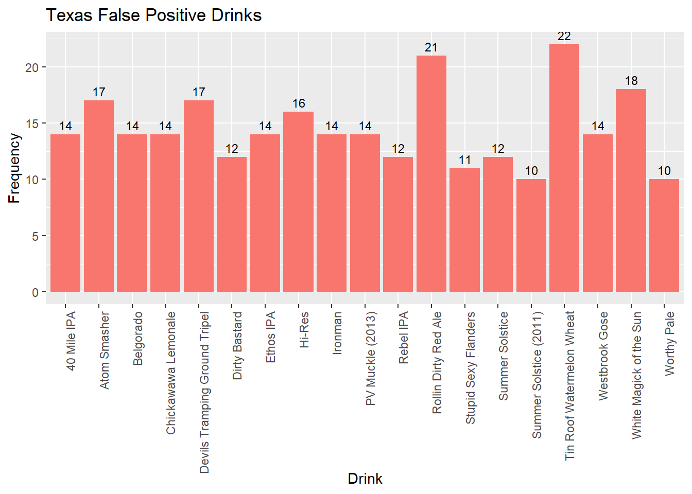
CATableR %>% ggplot(aes(x = CAFP, y = Freq, fill = "orange")) + geom_bar(stat = "identity") + ggtitle("California False Positive Drinks") + xlab("Drink") + ylab("Frequency") + theme(axis.text.x = element_text(angle = 90, hjust = 1)) + guides(fill = FALSE) + geom_text(aes(label = Freq), vjust = -0.5, size = 3)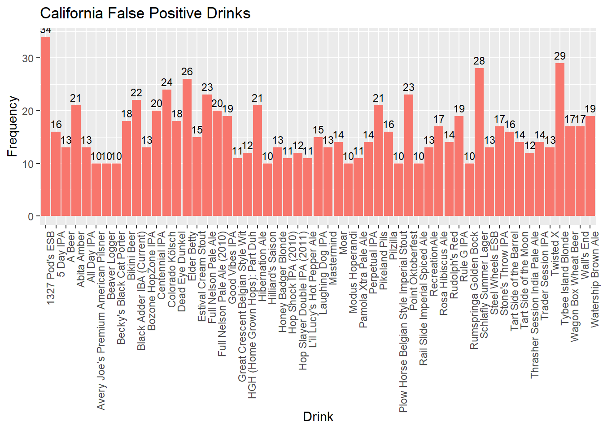
COTableR %>% ggplot(aes(x = COFP, y = Freq, fill = "orange")) + geom_bar(stat = "identity") + ggtitle("Colorado False Positive Drinks") + xlab("Drink") + ylab("Frequency") + theme(axis.text.x = element_text(angle = 90, hjust = 1)) + guides(fill = FALSE) + geom_text(aes(label = Freq), vjust = -0.5, size = 3)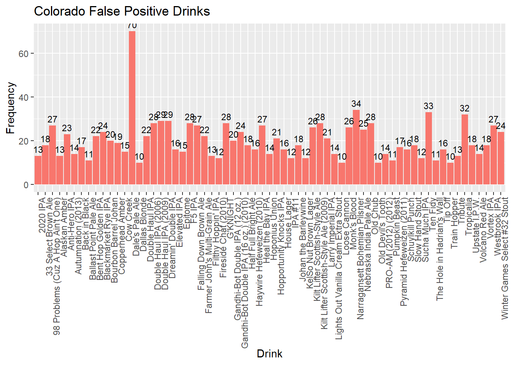
write.csv(beers_breweries, file = "beers_breweries.csv", row.names = FALSE)